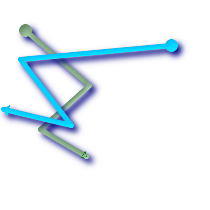
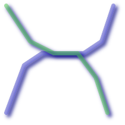
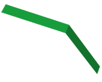
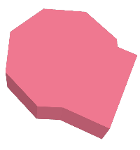
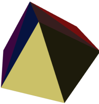
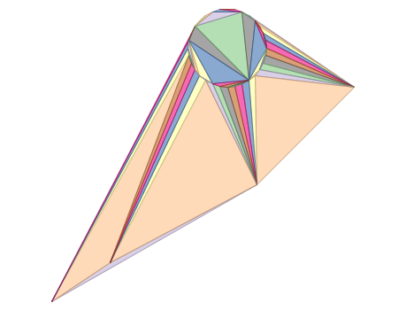
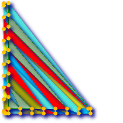
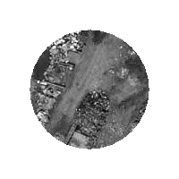
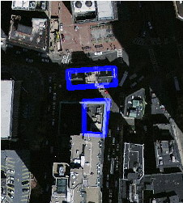

The PostGIS Development Group
Abstract
PostGIS is an extension to the PostgreSQL object-relational database system which allows GIS (Geographic Information Systems) objects to be stored in the database. PostGIS includes support for GiST-based R-Tree spatial indexes, and functions for analysis and processing of GIS objects.


This is the manual for version 2.3.0
 This work is licensed under a Creative Commons Attribution-Share Alike 3.0 License.
Feel free to use this material any way you like, but we ask that you attribute credit to the PostGIS Project
and wherever possible, a link back to http://postgis.net.
This work is licensed under a Creative Commons Attribution-Share Alike 3.0 License.
Feel free to use this material any way you like, but we ask that you attribute credit to the PostGIS Project
and wherever possible, a link back to http://postgis.net.
Table of Contents
- 1. Introduction
- 2. PostGIS Installation
- 2.1. Short Version
- 2.2. Install Requirements
- 2.3. Getting the Source
- 2.4. Compiling and Install from Source: Detailed
- 2.5. Creating a spatial database using EXTENSIONS
- 2.6. Create a spatially-enabled database without using extensions
- 2.7. Installing and Using the address standardizer
- 2.8. Installing, Upgrading Tiger Geocoder and loading data
- 2.9. Create a spatially-enabled database from a template
- 2.10. Upgrading
- 2.11. Common Problems during installation
- 2.12. Loader/Dumper
- 3. PostGIS Frequently Asked Questions
- 4. Using PostGIS: Data Management and Queries
- 5. Raster Data Management, Queries, and Applications
- 5.1. Loading and Creating Rasters
- 5.2. Raster Catalogs
- 5.3. Building Custom Applications with PostGIS Raster
- 5.3.1. PHP Example Outputting using ST_AsPNG in concert with other raster functions
- 5.3.2. ASP.NET C# Example Outputting using ST_AsPNG in concert with other raster functions
- 5.3.3. Java console app that outputs raster query as Image file
- 5.3.4. Use PLPython to dump out images via SQL
- 5.3.5. Outputting Rasters with PSQL
- 6. Using PostGIS Geometry: Building Applications
- 7. Performance tips
- 8. PostGIS Reference
- 8.1. PostgreSQL PostGIS Geometry/Geography/Box Types
- 8.2. PostGIS Grand Unified Custom Variables (GUCs)
- 8.3. Management Functions
- 8.4. Geometry Constructors
- 8.5. Geometry Accessors
- 8.6. Geometry Editors
- 8.7. Geometry Outputs
- 8.8. Operators
- 8.9. Spatial Relationships and Measurements
- 8.10. SFCGAL Functions
- 8.11. Geometry Processing
- 8.12. Linear Referencing
- 8.13. Temporal Support
- 8.14. Long Transactions Support
- 8.15. Miscellaneous Functions
- 8.16. Exceptional Functions
- 9. Raster Reference
- 9.1. Raster Support Data types
- 9.2. Raster Management
- 9.3. Raster Constructors
- 9.4. Raster Accessors
- 9.5. Raster Band Accessors
- 9.6. Raster Pixel Accessors and Setters
- 9.7. Raster Editors
- 9.8. Raster Band Editors
- 9.9. Raster Band Statistics and Analytics
- 9.10. Raster Outputs
- 9.11. Raster Processing
- 9.12. Raster Operators
- 9.13. Raster and Raster Band Spatial Relationships
- 10. PostGIS Raster Frequently Asked Questions
- 11. Topology
- 11.1. Topology Types
- 11.2. Topology Domains
- 11.3. Topology and TopoGeometry Management
- 11.4. Topology Constructors
- 11.5. Topology Editors
- 11.6. Topology Accessors
- 11.7. Topology Processing
- 11.8. TopoGeometry Constructors
- 11.9. TopoGeometry Editors
- 11.10. TopoGeometry Accessors
- 11.11. TopoGeometry Outputs
- 11.12. Topology Spatial Relationships
- 12. Address Standardizer
- 13. PostGIS Extras
- 14. PostGIS Special Functions Index
- 14.1. PostGIS Aggregate Functions
- 14.2. PostGIS Window Functions
- 14.3. PostGIS SQL-MM Compliant Functions
- 14.4. PostGIS Geography Support Functions
- 14.5. PostGIS Raster Support Functions
- 14.6. PostGIS Geometry / Geography / Raster Dump Functions
- 14.7. PostGIS Box Functions
- 14.8. PostGIS Functions that support 3D
- 14.9. PostGIS Curved Geometry Support Functions
- 14.10. PostGIS Polyhedral Surface Support Functions
- 14.11. PostGIS Function Support Matrix
- 14.12. New, Enhanced or changed PostGIS Functions
- 14.12.1. PostGIS Functions new or enhanced in 2.3
- 14.12.2. PostGIS Functions new or enhanced in 2.2
- 14.12.3. PostGIS functions breaking changes in 2.2
- 14.12.4. PostGIS Functions new or enhanced in 2.1
- 14.12.5. PostGIS functions breaking changes in 2.1
- 14.12.6. PostGIS Functions new, behavior changed, or enhanced in 2.0
- 14.12.7. PostGIS Functions changed behavior in 2.0
- 14.12.8. PostGIS Functions new, behavior changed, or enhanced in 1.5
- 14.12.9. PostGIS Functions new, behavior changed, or enhanced in 1.4
- 14.12.10. PostGIS Functions new in 1.3
- 15. Reporting Problems
- A. Appendix
- A.1. Release 2.3.0
- A.2. Release 2.2.2
- A.3. Release 2.2.1
- A.4. Release 2.2.0
- A.5. Release 2.1.8
- A.6. Release 2.1.7
- A.7. Release 2.1.6
- A.8. Release 2.1.5
- A.9. Release 2.1.4
- A.10. Release 2.1.3
- A.11. Release 2.1.2
- A.12. Release 2.1.1
- A.13. Release 2.1.0
- A.14. Release 2.0.5
- A.15. Release 2.0.4
- A.16. Release 2.0.3
- A.17. Release 2.0.2
- A.18. Release 2.0.1
- A.19. Release 2.0.0
- A.20. Release 1.5.4
- A.21. Release 1.5.3
- A.22. Release 1.5.2
- A.23. Release 1.5.1
- A.24. Release 1.5.0
- A.25. Release 1.4.0
- A.26. Release 1.3.6
- A.27. Release 1.3.5
- A.28. Release 1.3.4
- A.29. Release 1.3.3
- A.30. Release 1.3.2
- A.31. Release 1.3.1
- A.32. Release 1.3.0
- A.33. Release 1.2.1
- A.34. Release 1.2.0
- A.35. Release 1.1.6
- A.36. Release 1.1.5
- A.37. Release 1.1.4
- A.38. Release 1.1.3
- A.39. Release 1.1.2
- A.40. Release 1.1.1
- A.41. Release 1.1.0
- A.42. Release 1.0.6
- A.43. Release 1.0.5
- A.44. Release 1.0.4
- A.45. Release 1.0.3
- A.46. Release 1.0.2
- A.47. Release 1.0.1
- A.48. Release 1.0.0
- A.49. Release 1.0.0RC6
- A.50. Release 1.0.0RC5
- A.51. Release 1.0.0RC4
- A.52. Release 1.0.0RC3
- A.53. Release 1.0.0RC2
- A.54. Release 1.0.0RC1
Table of Contents
PostGIS was developed by Refractions Research Inc, as a spatial database technology research project. Refractions is a GIS and database consulting company in Victoria, British Columbia, Canada, specializing in data integration and custom software development. We plan on supporting and developing PostGIS to support a range of important GIS functionality, including full OpenGIS support, advanced topological constructs (coverages, surfaces, networks), desktop user interface tools for viewing and editing GIS data, and web-based access tools.
PostGIS is an incubation project of the OSGeo Foundation. PostGIS is being continually improved and funded by many FOSS4G Developers as well as corporations all over the world that gain great benefit from its functionality and versatility.
The PostGIS Project Steering Committee (PSC) coordinates the general direction, release cycles, documentation, and outreach efforts for the PostGIS project. In addition the PSC provides general user support, accepts and approves patches from the general PostGIS community and votes on miscellaneous issues involving PostGIS such as developer commit access, new PSC members or significant API changes.
- Mark Cave-Ayland
Coordinates bug fixing and maintenance effort, alignment of PostGIS with PostgreSQL releases, spatial index selectivity and binding, loader/dumper, and Shapefile GUI Loader, integration of new and new function enhancements.
- Regina Obe
Buildbot Maintenance, windows production and experimental builds, Documentation, general user support on PostGIS newsgroup, X3D support, Tiger Geocoder Support, management functions, and smoke testing new functionality or major code changes.
- Bborie Park
Raster development, integration with GDAL, raster loader, user support, general bug fixing, testing on various OS (Slackware, Mac, Windows, and more)
- Paul Ramsey (Chair)
Co-founder of PostGIS project. General bug fixing, geography support, geography and geometry index support (2D, 3D, nD index and anything spatial index), underlying geometry internal structures, PointCloud (in development), GEOS functionality integration and alignment with GEOS releases, loader/dumper, and Shapefile GUI loader.
- Sandro Santilli
Bug fixes and maintenance and integration of new GEOS functionality and alignment with GEOS releases, Topology support, and Raster framework and low level api functions.
- Jorge Arévalo
Raster development, GDAL driver support, loader
- Nicklas Avén
Distance function enhancements (including 3D distance and relationship functions) and additions, Tiny WKB output format (TWKB) (in development) and general user support
- Dan Baston
Geometry clustering function additions, other geometry algorithm enhancements, and general user support
- Olivier Courtin
Input output XML (KML,GML)/GeoJSON functions, 3D support and bug fixes.
- Mateusz Loskot
CMake support for PostGIS, built original raster loader in python and low level raster api functions
- Pierre Racine
Raster overall architecture, prototyping, programming support
- David Zwarg
Raster development (mostly map algebra analytic functions)
- Chris Hodgson
Prior PSC Member. General development, site and buildbot maintenance, OSGeo incubation management
- Kevin Neufeld
Prior PSC Member. Documentation and documentation support tools, buildbot maintenance, advanced user support on PostGIS newsgroup, and PostGIS maintenance function enhancements.
- Dave Blasby
The original developer/Co-founder of PostGIS. Dave wrote the server side objects, index bindings, and many of the server side analytical functions.
- Jeff Lounsbury
Original development of the Shape file loader/dumper. Current PostGIS Project Owner representative.
- Mark Leslie
Ongoing maintenance and development of core functions. Enhanced curve support. Shapefile GUI loader.
- Individual Contributors
In alphabetical order: Alex Bodnaru, Alex Mayrhofer, Andrea Peri, Andreas Forø Tollefsen, Andreas Neumann, Anne Ghisla, Barbara Phillipot, Ben Jubb, Bernhard Reiter, Brian Hamlin, Bruce Rindahl, Bruno Wolff III, Bryce L. Nordgren, Carl Anderson, Charlie Savage, Dane Springmeyer, David Skea, David Techer, Eduin Carrillo, Even Rouault, Frank Warmerdam, George Silva, Gerald Fenoy, Gino Lucrezi, Guillaume Lelarge, IIDA Tetsushi, Ingvild Nystuen, Jason Smith, Jeff Adams, Jose Carlos Martinez Llari, Julien Rouhaud, Kashif Rasul, Klaus Foerster, Kris Jurka, Leo Hsu, Loic Dachary, Luca S. Percich, Maria Arias de Reyna, Mark Sondheim, Markus Schaber, Maxime Guillaud, Maxime van Noppen, Michael Fuhr, Mike Toews, Nathan Wagner, Nathaniel Clay, Nikita Shulga, Norman Vine, Rafal Magda, Ralph Mason, Rémi Cura, Richard Greenwood, Silvio Grosso, Steffen Macke, Stephen Frost, Tom van Tilburg, Vincent Mora, Vincent Picavet
- Corporate Sponsors
These are corporate entities that have contributed developer time, hosting, or direct monetary funding to the PostGIS project
In alphabetical order: Arrival 3D, Associazione Italiana per l'Informazione Geografica Libera (GFOSS.it), AusVet, Avencia, Azavea, Cadcorp, CampToCamp, CartoDB, City of Boston (DND), Clever Elephant Solutions, Cooperativa Alveo, Deimos Space, Faunalia, Geographic Data BC, Hunter Systems Group, Lidwala Consulting Engineers, LisaSoft, Logical Tracking & Tracing International AG, Maponics, Michigan Tech Research Institute, Natural Resources Canada, Norwegian Forest and Landscape Institute, Boundless (former OpenGeo), OSGeo, Oslandia, Palantir Technologies, Paragon Corporation, R3 GIS, Refractions Research, Regione Toscana - SITA, Safe Software, Sirius Corporation plc, Stadt Uster, UC Davis Center for Vectorborne Diseases, University of Laval, U.S Department of State (HIU), Zonar Systems
- Crowd Funding Campaigns
Crowd funding campaigns are campaigns we run to get badly wanted features funded that can service a large number of people. Each campaign is specifically focused on a particular feature or set of features. Each sponsor chips in a small fraction of the needed funding and with enough people/organizations contributing, we have the funds to pay for the work that will help many. If you have an idea for a feature you think many others would be willing to co-fund, please post to the PostGIS newsgroup your thoughts and together we can make it happen.
PostGIS 2.0.0 was the first release we tried this strategy. We used PledgeBank and we got two successful campaigns out of it.
postgistopology - 10 plus sponsors each contributed $250 USD to build toTopoGeometry function and beef up topology support in 2.0.0. It happened.
postgis64windows - 20 someodd sponsors each contributed $100 USD to pay for the work needed to work out PostGIS 64-bit issues on windows. It happened. We now have a 64-bit release for PostGIS 2.0.1 available on PostgreSQL stack builder.
- Important Support Libraries
The GEOS geometry operations library, and the algorithmic work of Martin Davis in making it all work, ongoing maintenance and support of Mateusz Loskot, Sandro Santilli (strk), Paul Ramsey and others.
The GDAL Geospatial Data Abstraction Library, by Frank Warmerdam and others is used to power much of the raster functionality introduced in PostGIS 2.0.0. In kind, improvements needed in GDAL to support PostGIS are contributed back to the GDAL project.
The Proj4 cartographic projection library, and the work of Gerald Evenden and Frank Warmerdam in creating and maintaining it.
Last but not least, the PostgreSQL DBMS, The giant that PostGIS stands on. Much of the speed and flexibility of PostGIS would not be possible without the extensibility, great query planner, GIST index, and plethora of SQL features provided by PostgreSQL.
The latest software, documentation and news items are available at the PostGIS web site, http://postgis.net.
More information about the GEOS geometry operations library is available at http://trac.osgeo.org/geos/.
More information about the Proj4 reprojection library is available at http://trac.osgeo.org/proj/.
More information about the PostgreSQL database server is available at the PostgreSQL main site http://www.postgresql.org.
More information about GiST indexing is available at the PostgreSQL GiST development site, http://www.sai.msu.su/~megera/postgres/gist/.
More information about MapServer internet map server is available at http://mapserver.org.
The "Simple Features for Specification for SQL" is available at the OpenGIS Consortium web site: http://www.opengeospatial.org/.
Table of Contents
- 2.1. Short Version
- 2.2. Install Requirements
- 2.3. Getting the Source
- 2.4. Compiling and Install from Source: Detailed
- 2.5. Creating a spatial database using EXTENSIONS
- 2.6. Create a spatially-enabled database without using extensions
- 2.7. Installing and Using the address standardizer
- 2.8. Installing, Upgrading Tiger Geocoder and loading data
- 2.9. Create a spatially-enabled database from a template
- 2.10. Upgrading
- 2.11. Common Problems during installation
- 2.12. Loader/Dumper
This chapter details the steps required to install PostGIS.
To compile assuming you have all the dependencies in your search path:
tar xvfz postgis-2.3.0.tar.gz cd postgis-2.3.0 ./configure make make install
Once postgis is installed, it needs to be enabled in each individual database you want to use it in.
![[Note]](images/note.png) | |
The raster support is currently optional, but installed by default. For enabling using the PostgreSQL 9.1+ extensions model raster is required. Using the extension enable process is preferred and more user-friendly. To spatially enable your database: |
psql -d yourdatabase -c "CREATE EXTENSION postgis;" psql -d yourdatabase -c "CREATE EXTENSION postgis_topology;" -- if you built with sfcgal support -- psql -d yourdatabase -c "CREATE EXTENSION postgis_sfcgal;" -- if you want to install tiger geocoder -- psql -d yourdatabase -c "CREATE EXTENSION fuzzystrmatch" psql -d yourdatabase -c "CREATE EXTENSION postgis_tiger_geocoder;" -- if you installed with pcre -- you should have address standardizer extension as well psql -d yourdatabase -c "CREATE EXTENSION address_standardizer;"
Please refer to Section 2.4.3, “Building PostGIS Extensions and Deploying them” for more details about querying installed/available extensions and upgrading extensions, or switching from a non-extension install to an extension install.
For those running who decided for some reason not to compile with raster support, or just are old-fashioned, here are longer more painful instructions for you:
All the .sql files once installed will be installed in share/contrib/postgis-2.2 folder of your PostgreSQL install
createdb yourdatabase createlang plpgsql yourdatabase psql -d yourdatabase -f postgis.sql psql -d yourdatabase -f postgis_comments.sql psql -d yourdatabase -f spatial_ref_sys.sql psql -d yourdatabase -f topology.sql psql -d yourdatabase -f topology_comments.sql -- only if you compiled with raster (GDAL) psql -d yourdatabase -f rtpostgis.sql psql -d yourdatabase -f raster_comments.sql --if you built with sfcgal support -- psql -d yourdatabase -f sfcgal.sql psql -d yourdatabase -f sfcgal_comments.sql
The rest of this chapter goes into detail each of the above installation steps.
As of PostGIS 2.1.3, out-of-db rasters and all raster drivers are disabled by default. In order to re-enable these, you need to set the following environment variables
POSTGIS_GDAL_ENABLED_DRIVERS and POSTGIS_ENABLE_OUTDB_RASTERS in the server environment. For PostGIS 2.2, you can use the more cross-platform approach of setting the corresponding Section 8.2, “PostGIS Grand Unified Custom Variables (GUCs)”.
If you want to enable offline raster:
POSTGIS_ENABLE_OUTDB_RASTERS=1
Any other setting or no setting at all will disable out of db rasters.
In order to enable all GDAL drivers available in your GDAL install, set this environment variable as follows
POSTGIS_GDAL_ENABLED_DRIVERS=ENABLE_ALL
If you want to only enable specific drivers, set your environment variable as follows:
POSTGIS_GDAL_ENABLED_DRIVERS="GTiff PNG JPEG GIF XYZ"
| |
If you are on windows, do not quote the driver list |
Setting environment variables varies depending on OS. For PostgreSQL installed on Ubuntu or Debian via apt-postgresql, the preferred way is to
edit /etc/postgresql/ where 9.3 refers to version of PostgreSQL and main refers to the cluster.9.3/main/environment
On windows, if you are running as a service, you can set via System variables which for Windows 7 you can get to by right-clicking on Computer->Properties Advanced System Settings or in explorer navigating to Control Panel\All Control Panel Items\System.
Then clicking Advanced System Settings ->Advanced->Environment Variables and adding new system variables.
After you set the environment variables, you'll need to restart your PostgreSQL service for the changes to take effect.
PostGIS has the following requirements for building and usage:
Required
PostgreSQL 9.2 or higher. A complete installation of PostgreSQL (including server headers) is required. PostgreSQL is available from http://www.postgresql.org .
For a full PostgreSQL / PostGIS support matrix and PostGIS/GEOS support matrix refer to http://trac.osgeo.org/postgis/wiki/UsersWikiPostgreSQLPostGIS
GNU C compiler (
gcc). Some other ANSI C compilers can be used to compile PostGIS, but we find far fewer problems when compiling withgcc.GNU Make (
gmakeormake). For many systems, GNUmakeis the default version of make. Check the version by invokingmake -v. Other versions ofmakemay not process the PostGISMakefileproperly.Proj4 reprojection library, version 4.6.0 or greater. The Proj4 library is used to provide coordinate reprojection support within PostGIS. Proj4 is available for download from http://trac.osgeo.org/proj/ .
GEOS geometry library, version 3.3 or greater, but GEOS 3.5+ is recommended to take full advantage of all the new functions and features. Without GEOS 3.5, you will be missing some major enhancements such as ST_ClipByBox2D and ST_Subdivide. GEOS is available for download from http://trac.osgeo.org/geos/ and 3.4+ is backward-compatible with older versions so fairly safe to upgrade.
LibXML2, version 2.5.x or higher. LibXML2 is currently used in some imports functions (ST_GeomFromGML and ST_GeomFromKML). LibXML2 is available for download from http://xmlsoft.org/downloads.html.
JSON-C, version 0.9 or higher. JSON-C is currently used to import GeoJSON via the function ST_GeomFromGeoJson. JSON-C is available for download from https://github.com/json-c/json-c/releases/.
GDAL, version 1.8 or higher (1.9 or higher is strongly recommended since some things will not work well or behavior differently with lower versions). This is required for raster support and to be able to install with
CREATE EXTENSION postgisso highly recommended for those running 9.1+. http://trac.osgeo.org/gdal/wiki/DownloadSource.
Optional
GDAL (pseudo optional) only if you don't want raster and don't care about installing with
CREATE EXTENSION postgiscan you leave it out. Keep in mind other extensions may have a requires postgis extension which will prevent you from installing them unless you install postgis as an extension. So it is highly recommended you compile with GDAL support.Also make sure to enable the drivers you want to use as described in Section 2.1, “Short Version”.
GTK (requires GTK+2.0, 2.8+) to compile the shp2pgsql-gui shape file loader. http://www.gtk.org/ .
SFCGAL, version 1.1 (or higher) could be used to provide additional 2D and 3D advanced analysis functions to PostGIS cf Section 8.10, “SFCGAL Functions”. And also allow to use SFCGAL rather than GEOS for some 2D functions provided by both backends (like ST_Intersection or ST_Area, for instance). A PostgreSQL configuration variable
postgis.backendallow end user to control which backend he want to use if SFCGAL is installed (GEOS by default). Nota: SFCGAL 1.2 require at least CGAL 4.3 and Boost 1.54 (cf: http://oslandia.github.io/SFCGAL/installation.html) https://github.com/Oslandia/SFCGAL.In order to build the Chapter 12, Address Standardizer you will also need PCRE http://www.pcre.org (which generally is already installed on nix systems).
Regex::Assembleperl CPAN package is only needed if you want to rebuild the data encoded inparseaddress-stcities.h. Chapter 12, Address Standardizer will automatically be built if it detects a PCRE library, or you pass in a valid--with-pcre-dir=/path/to/pcreduring configure.CUnit (
CUnit). This is needed for regression testing. http://cunit.sourceforge.net/DocBook (
xsltproc) is required for building the documentation. Docbook is available from http://www.docbook.org/ .DBLatex (
dblatex) is required for building the documentation in PDF format. DBLatex is available from http://dblatex.sourceforge.net/ .ImageMagick (
convert) is required to generate the images used in the documentation. ImageMagick is available from http://www.imagemagick.org/ .
Retrieve the PostGIS source archive from the downloads website http://download.osgeo.org/postgis/source/postgis-2.3.0.tar.gz
wget http://download.osgeo.org/postgis/source/postgis-2.3.0.tar.gz tar -xvzf postgis-2.3.0.tar.gz
This will create a directory called
postgis-2.3.0 in the current working
directory.
Alternatively, checkout the source from the svn repository http://svn.osgeo.org/postgis/trunk/ .
svn checkout http://svn.osgeo.org/postgis/trunk/ postgis-2.3.0
Change into the newly created
postgis-2.3.0 directory to continue
the installation.
| |
Many OS systems now include pre-built packages for PostgreSQL/PostGIS. In many cases compilation is only necessary if you want the most bleeding edge versions or you are a package maintainer. This section includes general compilation instructions, if you are compiling for Windows etc or another OS, you may find additional more detailed help at PostGIS User contributed compile guides and PostGIS Dev Wiki. Pre-Built Packages for various OS are listed in PostGIS Pre-built Packages If you are a windows user, you can get stable builds via Stackbuilder or PostGIS Windows download site We also have very bleeding-edge windows experimental builds that are built usually once or twice a week or whenever anything exciting happens. You can use these to experiment with the in progress releases of PostGIS |
The PostGIS module is an extension to the PostgreSQL backend server. As such, PostGIS 2.3.0 requires full PostgreSQL server headers access in order to compile. It can be built against PostgreSQL versions 9.2 or higher. Earlier versions of PostgreSQL are not supported.
Refer to the PostgreSQL installation guides if you haven't already installed PostgreSQL. http://www.postgresql.org .
| |
For GEOS functionality, when you install PostgresSQL you may need to explicitly link PostgreSQL against the standard C++ library: LDFLAGS=-lstdc++ ./configure [YOUR OPTIONS HERE] This is a workaround for bogus C++ exceptions interaction with older development tools. If you experience weird problems (backend unexpectedly closed or similar things) try this trick. This will require recompiling your PostgreSQL from scratch, of course. |
The following steps outline the configuration and compilation of the PostGIS source. They are written for Linux users and will not work on Windows or Mac.
As with most linux installations, the first step is to generate the Makefile that will be used to build the source code. This is done by running the shell script
./configure
With no additional parameters, this command will attempt to automatically locate the required components and libraries needed to build the PostGIS source code on your system. Although this is the most common usage of ./configure, the script accepts several parameters for those who have the required libraries and programs in non-standard locations.
The following list shows only the most commonly used parameters. For a complete list, use the --help or --help=short parameters.
- --prefix=PREFIX
This is the location the PostGIS libraries and SQL scripts will be installed to. By default, this location is the same as the detected PostgreSQL installation.
![[Caution]](images/caution.png)
This parameter is currently broken, as the package will only install into the PostgreSQL installation directory. Visit http://trac.osgeo.org/postgis/ticket/635 to track this bug.
- --with-pgconfig=FILE
PostgreSQL provides a utility called pg_config to enable extensions like PostGIS to locate the PostgreSQL installation directory. Use this parameter (--with-pgconfig=/path/to/pg_config) to manually specify a particular PostgreSQL installation that PostGIS will build against.
- --with-gdalconfig=FILE
GDAL, a required library, provides functionality needed for raster support gdal-config to enable software installations to locate the GDAL installation directory. Use this parameter (--with-gdalconfig=/path/to/gdal-config) to manually specify a particular GDAL installation that PostGIS will build against.
- --with-geosconfig=FILE
GEOS, a required geometry library, provides a utility called geos-config to enable software installations to locate the GEOS installation directory. Use this parameter (--with-geosconfig=/path/to/geos-config) to manually specify a particular GEOS installation that PostGIS will build against.
- --with-xml2config=FILE
LibXML is the library required for doing GeomFromKML/GML processes. It normally is found if you have libxml installed, but if not or you want a specific version used, you'll need to point PostGIS at a specific
xml2-configconfi file to enable software installations to locate the LibXML installation directory. Use this parameter (>--with-xml2config=/path/to/xml2-config) to manually specify a particular LibXML installation that PostGIS will build against.- --with-projdir=DIR
Proj4 is a reprojection library required by PostGIS. Use this parameter (--with-projdir=/path/to/projdir) to manually specify a particular Proj4 installation directory that PostGIS will build against.
- --with-libiconv=DIR
Directory where iconv is installed.
- --with-jsondir=DIR
JSON-C is an MIT-licensed JSON library required by PostGIS ST_GeomFromJSON support. Use this parameter (--with-jsondir=/path/to/jsondir) to manually specify a particular JSON-C installation directory that PostGIS will build against.
- --with-pcredir=DIR
PCRE is an BSD-licensed Perl Compatible Regular Expression library required by address_standardizer extension. Use this parameter (--with-pcredir=/path/to/pcredir) to manually specify a particular PCRE installation directory that PostGIS will build against.
- --with-gui
Compile the data import GUI (requires GTK+2.0). This will create shp2pgsql-gui graphical interface to shp2pgsql.
- --with-raster
Compile with raster support. This will build rtpostgis-2.3.0 library and rtpostgis.sql file. This may not be required in final release as plan is to build in raster support by default.
- --with-topology
Compile with topology support. This will build the topology.sql file. There is no corresponding library as all logic needed for topology is in postgis-2.3.0 library.
- --with-gettext=no
By default PostGIS will try to detect gettext support and compile with it, however if you run into incompatibility issues that cause breakage of loader, you can disable it entirely with this command. Refer to ticket http://trac.osgeo.org/postgis/ticket/748 for an example issue solved by configuring with this. NOTE: that you aren't missing much by turning this off. This is used for international help/label support for the GUI loader which is not yet documented and still experimental.
- --with-sfcgal=PATH
By default PostGIS will not install with sfcgal support without this switch.
PATHis an optional argument that allows to specify an alternate PATH to sfcgal-config.
| |
If you obtained PostGIS from the SVN repository , the first step is really to run the script ./autogen.sh This script will generate the configure script that in turn is used to customize the installation of PostGIS. If you instead obtained PostGIS as a tarball, running ./autogen.sh is not necessary as configure has already been generated. |
Once the Makefile has been generated, building PostGIS is as simple as running
make
The last line of the output should be "PostGIS was built
successfully. Ready to install."
As of PostGIS v1.4.0, all the functions have comments generated from the documentation. If you wish to install these comments into your spatial databases later, run the command which requires docbook. The postgis_comments.sql and other package comments files raster_comments.sql, topology_comments.sql are also packaged in the tar.gz distribution in the doc folder so no need to make comments if installing from the tar ball.
make comments
Introduced in PostGIS 2.0. This generates html cheat sheets suitable for quick reference or for student handouts.
This requires xsltproc to build and will generate 4 files in doc folder topology_cheatsheet.html, tiger_geocoder_cheatsheet.html,
raster_cheatsheet.html, postgis_cheatsheet.html
You can download some pre-built ones available in html and pdf from PostGIS / PostgreSQL Study Guides
make cheatsheets
The PostGIS extensions are built and installed automatically if you are using PostgreSQL 9.1+.
If you are building from source repository, you need to build the function descriptions first. These get built if you have docbook installed. You can also manually build with the statement:
make comments
Building the comments is not necessary if you are building from a release tar ball since these are packaged pre-built with the tar ball already.
If you are building against PostgreSQL 9.1, the extensions should automatically build as part of the make install process. You can if needed build from the extensions folders or copy files if you need them on a different server.
cd extensions cd postgis make clean make make install cd .. cd postgis_topology make clean make make install cd .. cd postgis_sfcgal make clean make make install cd .. cd address_standardizer make clean make make install make installcheck cd .. cd postgis_tiger_geocoder make clean make make install make installcheck
The extension files will always be the same for the same version of PostGIS regardless of OS, so it is fine to copy over the extension files from one OS to another as long as you have the PostGIS binaries already installed on your servers.
If you want to install the extensions manually on a separate server different from your development,
You need to copy the following files from the extensions folder into the PostgreSQL / share / extension folder
of your PostgreSQL install as well as the needed binaries for regular PostGIS if you don't have them already on the server.
These are the control files that denote information such as the version of the extension to install if not specified.
postgis.control, postgis_topology.control.All the files in the /sql folder of each extension. Note that these need to be copied to the root of the PostgreSQL share/extension folder
extensions/postgis/sql/*.sql,extensions/postgis_topology/sql/*.sql
Once you do that, you should see postgis, postgis_topology as available extensions in PgAdmin -> extensions.
If you are using psql, you can verify that the extensions are installed by running this query:
SELECT name, default_version,installed_version
FROM pg_available_extensions WHERE name LIKE 'postgis%' or name LIKE 'address%';
name | default_version | installed_version
------------------------------+-----------------+-------------------
address_standardizer | 2.3.0 | 2.3.0
address_standardizer_data_us | 2.3.0 | 2.3.0
postgis | 2.3.0 | 2.3.0
postgis_sfcgal | 2.3.0 |
postgis_tiger_geocoder | 2.3.0 | 2.3.0
postgis_topology | 2.3.0 |
(6 rows)If you have the extension installed in the database you are querying, you'll see mention in the installed_version column.
If you get no records back, it means you don't have postgis extensions installed on the server at all. PgAdmin III 1.14+ will also provide this information
in the extensions section of the database browser tree and will even allow upgrade or uninstall by right-clicking.
If you have the extensions available, you can install postgis extension in your database of choice by either using pgAdmin extension interface or running these sql commands:
CREATE EXTENSION postgis; CREATE EXTENSION postgis_sfcgal; CREATE EXTENSION fuzzystrmatch; --needed for postgis_tiger_geocoder --optional used by postgis_tiger_geocoder, or can be used standalone CREATE EXTENSION address_standardizer; CREATE EXTENSION address_standardizer_data_us; CREATE EXTENSION postgis_tiger_geocoder; CREATE EXTENSION postgis_topology;
In psql you can use to see what versions you have installed and also what schema they are installed.
\connect mygisdb \x \dx postgis*
List of installed extensions -[ RECORD 1 ]------------------------------------------------- - Name | postgis Version | 2.3.0 Schema | public Description | PostGIS geometry, geography, and raster spat.. -[ RECORD 2 ]------------------------------------------------- - Name | postgis_tiger_geocoder Version | 2.3.0 Schema | tiger Description | PostGIS tiger geocoder and reverse geocoder -[ RECORD 3 ]------------------------------------------------- - Name | postgis_topology Version | 2.3.0 Schema | topology Description | PostGIS topology spatial types and functions
![[Warning]](images/warning.png) | |
Extension tables |
If you installed 2.3.0, without using our wonderful extension system, you can change it to be extension based by first upgrading to the latest micro version running the upgrade scripts: postgis_upgrade_22_minor.sql,raster_upgrade_22_minor.sql,topology_upgrade_22_minor.sql.
If you installed postgis without raster support, you'll need to install raster support first (using the full rtpostgis.sql
Then you can run the below commands to package the functions in their respective extension.
CREATE EXTENSION postgis FROM unpackaged; CREATE EXTENSION postgis_topology FROM unpackaged; CREATE EXTENSION postgis_tiger_geocoder FROM unpackaged;
If you wish to test the PostGIS build, run
make check
The above command will run through various checks and regression tests using the generated library against an actual PostgreSQL database.
| |
If you configured PostGIS using non-standard PostgreSQL, GEOS, or Proj4 locations, you may need to add their library locations to the LD_LIBRARY_PATH environment variable. |
| |
Currently, the make check relies on the
|
If successful, the output of the test should be similar to the following:
CUnit - A unit testing framework for C - Version 2.1-2
http://cunit.sourceforge.net/
Suite: computational_geometry
Test: test_lw_segment_side ...passed
Test: test_lw_segment_intersects ...passed
Test: test_lwline_crossing_short_lines ...passed
Test: test_lwline_crossing_long_lines ...passed
Test: test_lwline_crossing_bugs ...passed
Test: test_lwpoint_set_ordinate ...passed
Test: test_lwpoint_get_ordinate ...passed
Test: test_point_interpolate ...passed
Test: test_lwline_clip ...passed
Test: test_lwline_clip_big ...passed
Test: test_lwmline_clip ...passed
Test: test_geohash_point ...passed
Test: test_geohash_precision ...passed
Test: test_geohash ...passed
Test: test_geohash_point_as_int ...passed
Test: test_isclosed ...passed
Test: test_lwgeom_simplify ...passed
Suite: buildarea
Test: buildarea1 ...passed
Test: buildarea2 ...passed
Test: buildarea3 ...passed
Test: buildarea4 ...passed
Test: buildarea4b ...passed
Test: buildarea5 ...passed
Test: buildarea6 ...passed
Test: buildarea7 ...passed
Suite: geometry_clean
Test: test_lwgeom_make_valid ...passed
Suite: clip_by_rectangle
Test: test_lwgeom_clip_by_rect ...passed
Suite: force_sfs
Test: test_sfs_11 ...passed
Test: test_sfs_12 ...passed
Test: test_sqlmm ...passed
Suite: geodetic
Test: test_sphere_direction ...passed
Test: test_sphere_project ...passed
Test: test_lwgeom_area_sphere ...passed
Test: test_signum ...passed
Test: test_gbox_from_spherical_coordinates ...passed
Test: test_gserialized_get_gbox_geocentric ...passed
Test: test_clairaut ...passed
Test: test_edge_intersection ...passed
Test: test_edge_intersects ...passed
Test: test_edge_distance_to_point ...passed
Test: test_edge_distance_to_edge ...passed
Test: test_lwgeom_distance_sphere ...passed
Test: test_lwgeom_check_geodetic ...passed
Test: test_gserialized_from_lwgeom ...passed
Test: test_spheroid_distance ...passed
Test: test_spheroid_area ...passed
Test: test_lwpoly_covers_point2d ...passed
Test: test_gbox_utils ...passed
Test: test_vector_angle ...passed
Test: test_vector_rotate ...passed
Test: test_lwgeom_segmentize_sphere ...passed
Test: test_ptarray_contains_point_sphere ...passed
Test: test_ptarray_contains_point_sphere_iowa ...passed
Suite: GEOS
Test: test_geos_noop ...passed
Test: test_geos_subdivide ...passed
Test: test_geos_linemerge ...passed
Suite: Clustering
Test: basic_test ...passed
Test: nonsequential_test ...passed
Test: basic_distance_test ...passed
Test: single_input_test ...passed
Test: empty_inputs_test ...passed
Suite: Clustering Union-Find
Test: test_unionfind_create ...passed
Test: test_unionfind_union ...passed
Test: test_unionfind_ordered_by_cluster ...passed
Suite: homogenize
Test: test_coll_point ...passed
Test: test_coll_line ...passed
Test: test_coll_poly ...passed
Test: test_coll_coll ...passed
Test: test_geom ...passed
Test: test_coll_curve ...passed
Suite: encoded_polyline_input
Test: in_encoded_polyline_test_geoms ...passed
Test: in_encoded_polyline_test_precision ...passed
Suite: geojson_input
Test: in_geojson_test_srid ...passed
Test: in_geojson_test_bbox ...passed
Test: in_geojson_test_geoms ...passed
Suite: twkb_input
Test: test_twkb_in_point ...passed
Test: test_twkb_in_linestring ...passed
Test: test_twkb_in_polygon ...passed
Test: test_twkb_in_multipoint ...passed
Test: test_twkb_in_multilinestring ...passed
Test: test_twkb_in_multipolygon ...passed
Test: test_twkb_in_collection ...passed
Test: test_twkb_in_precision ...passed
Suite: serialization/deserialization
Test: test_typmod_macros ...passed
Test: test_flags_macros ...passed
Test: test_serialized_srid ...passed
Test: test_gserialized_from_lwgeom_size ...passed
Test: test_gbox_serialized_size ...passed
Test: test_lwgeom_from_gserialized ...passed
Test: test_lwgeom_count_vertices ...passed
Test: test_on_gser_lwgeom_count_vertices ...passed
Test: test_geometry_type_from_string ...passed
Test: test_lwcollection_extract ...passed
Test: test_lwgeom_free ...passed
Test: test_lwgeom_flip_coordinates ...passed
Test: test_f2d ...passed
Test: test_lwgeom_clone ...passed
Test: test_lwgeom_force_clockwise ...passed
Test: test_lwgeom_calculate_gbox ...passed
Test: test_lwgeom_is_empty ...passed
Test: test_lwgeom_same ...passed
Test: test_lwline_from_lwmpoint ...passed
Test: test_lwgeom_as_curve ...passed
Test: test_lwgeom_scale ...passed
Test: test_gserialized_is_empty ...passed
Test: test_gbox_same_2d ...passed
Suite: measures
Test: test_mindistance2d_tolerance ...passed
Test: test_rect_tree_contains_point ...passed
Test: test_rect_tree_intersects_tree ...passed
Test: test_lwgeom_segmentize2d ...passed
Test: test_lwgeom_locate_along ...passed
Test: test_lw_dist2d_pt_arc ...passed
Test: test_lw_dist2d_seg_arc ...passed
Test: test_lw_dist2d_arc_arc ...passed
Test: test_lw_arc_length ...passed
Test: test_lw_dist2d_pt_ptarrayarc ...passed
Test: test_lw_dist2d_ptarray_ptarrayarc ...passed
Test: test_lwgeom_tcpa ...passed
Test: test_lwgeom_is_trajectory ...passed
Suite: effectivearea
Test: do_test_lwgeom_effectivearea_lines ...passed
Test: do_test_lwgeom_effectivearea_polys ...passed
Suite: miscellaneous
Test: test_misc_force_2d ...passed
Test: test_misc_simplify ...passed
Test: test_misc_count_vertices ...passed
Test: test_misc_area ...passed
Test: test_misc_wkb ...passed
Test: test_grid ...passed
Suite: noding
Test: test_lwgeom_node ...passed
Suite: encoded_polyline_output
Test: out_encoded_polyline_test_geoms ...passed
Test: out_encoded_polyline_test_srid ...passed
Test: out_encoded_polyline_test_precision ...passed
Suite: geojson_output
Test: out_geojson_test_precision ...passed
Test: out_geojson_test_dims ...passed
Test: out_geojson_test_srid ...passed
Test: out_geojson_test_bbox ...passed
Test: out_geojson_test_geoms ...passed
Suite: gml_output
Test: out_gml_test_precision ...passed
Test: out_gml_test_srid ...passed
Test: out_gml_test_dims ...passed
Test: out_gml_test_geodetic ...passed
Test: out_gml_test_geoms ...passed
Test: out_gml_test_geoms_prefix ...passed
Test: out_gml_test_geoms_nodims ...passed
Test: out_gml2_extent ...passed
Test: out_gml3_extent ...passed
Suite: kml_output
Test: out_kml_test_precision ...passed
Test: out_kml_test_dims ...passed
Test: out_kml_test_geoms ...passed
Test: out_kml_test_prefix ...passed
Suite: svg_output
Test: out_svg_test_precision ...passed
Test: out_svg_test_dims ...passed
Test: out_svg_test_relative ...passed
Test: out_svg_test_geoms ...passed
Test: out_svg_test_srid ...passed
Suite: x3d_output
Test: out_x3d3_test_precision ...passed
Test: out_x3d3_test_geoms ...passed
Test: out_x3d3_test_option ...passed
Suite: ptarray
Test: test_ptarray_append_point ...passed
Test: test_ptarray_append_ptarray ...passed
Test: test_ptarray_locate_point ...passed
Test: test_ptarray_isccw ...passed
Test: test_ptarray_signed_area ...passed
Test: test_ptarray_unstroke ...passed
Test: test_ptarray_insert_point ...passed
Test: test_ptarray_contains_point ...passed
Test: test_ptarrayarc_contains_point ...passed
Test: test_ptarray_scale ...passed
Suite: printing
Test: test_lwprint_default_format ...passed
Test: test_lwprint_format_orders ...passed
Test: test_lwprint_optional_format ...passed
Test: test_lwprint_oddball_formats ...passed
Test: test_lwprint_bad_formats ...passed
Suite: SFCGAL
Test: test_sfcgal_noop ...passed
Suite: split
Test: test_lwline_split_by_point_to ...passed
Test: test_lwgeom_split ...passed
Suite: stringbuffer
Test: test_stringbuffer_append ...passed
Test: test_stringbuffer_aprintf ...passed
Suite: surface
Test: triangle_parse ...passed
Test: tin_parse ...passed
Test: polyhedralsurface_parse ...passed
Test: surface_dimension ...passed
Suite: Internal Spatial Trees
Test: test_tree_circ_create ...passed
Test: test_tree_circ_pip ...passed
Test: test_tree_circ_pip2 ...passed
Test: test_tree_circ_distance ...passed
Test: test_tree_circ_distance_threshold ...passed
Suite: triangulate
Test: test_lwgeom_delaunay_triangulation ...passed
Suite: twkb_output
Test: test_twkb_out_point ...passed
Test: test_twkb_out_linestring ...passed
Test: test_twkb_out_polygon ...passed
Test: test_twkb_out_multipoint ...passed
Test: test_twkb_out_multilinestring ...passed
Test: test_twkb_out_multipolygon ...passed
Test: test_twkb_out_collection ...passed
Test: test_twkb_out_idlist ...passed
Suite: varint
Test: test_zigzag ...passed
Test: test_varint ...passed
Test: test_varint_roundtrip ...passed
Suite: wkb_input
Test: test_wkb_in_point ...passed
Test: test_wkb_in_linestring ...passed
Test: test_wkb_in_polygon ...passed
Test: test_wkb_in_multipoint ...passed
Test: test_wkb_in_multilinestring ...passed
Test: test_wkb_in_multipolygon ...passed
Test: test_wkb_in_collection ...passed
Test: test_wkb_in_circularstring ...passed
Test: test_wkb_in_compoundcurve ...passed
Test: test_wkb_in_curvpolygon ...passed
Test: test_wkb_in_multicurve ...passed
Test: test_wkb_in_multisurface ...passed
Test: test_wkb_in_malformed ...passed
Suite: wkb_output
Test: test_wkb_out_point ...passed
Test: test_wkb_out_linestring ...passed
Test: test_wkb_out_polygon ...passed
Test: test_wkb_out_multipoint ...passed
Test: test_wkb_out_multilinestring ...passed
Test: test_wkb_out_multipolygon ...passed
Test: test_wkb_out_collection ...passed
Test: test_wkb_out_circularstring ...passed
Test: test_wkb_out_compoundcurve ...passed
Test: test_wkb_out_curvpolygon ...passed
Test: test_wkb_out_multicurve ...passed
Test: test_wkb_out_multisurface ...passed
Test: test_wkb_out_polyhedralsurface ...passed
Suite: wkt_input
Test: test_wkt_in_point ...passed
Test: test_wkt_in_linestring ...passed
Test: test_wkt_in_polygon ...passed
Test: test_wkt_in_multipoint ...passed
Test: test_wkt_in_multilinestring ...passed
Test: test_wkt_in_multipolygon ...passed
Test: test_wkt_in_collection ...passed
Test: test_wkt_in_circularstring ...passed
Test: test_wkt_in_compoundcurve ...passed
Test: test_wkt_in_curvpolygon ...passed
Test: test_wkt_in_multicurve ...passed
Test: test_wkt_in_multisurface ...passed
Test: test_wkt_in_tin ...passed
Test: test_wkt_in_polyhedralsurface ...passed
Test: test_wkt_in_errlocation ...passed
Suite: wkt_output
Test: test_wkt_out_point ...passed
Test: test_wkt_out_linestring ...passed
Test: test_wkt_out_polygon ...passed
Test: test_wkt_out_multipoint ...passed
Test: test_wkt_out_multilinestring ...passed
Test: test_wkt_out_multipolygon ...passed
Test: test_wkt_out_collection ...passed
Test: test_wkt_out_circularstring ...passed
Test: test_wkt_out_compoundcurve ...passed
Test: test_wkt_out_curvpolygon ...passed
Test: test_wkt_out_multicurve ...passed
Test: test_wkt_out_multisurface ...passed
Run Summary: Type Total Ran Passed Failed Inactive
suites 38 38 n/a 0 0
tests 251 251 251 0 0
asserts 2468 2468 2468 0 n/a
Elapsed time = 0.298 seconds
Creating database 'postgis_reg'
Loading PostGIS into 'postgis_reg'
/projects/postgis/branches/2.2/regress/00-regress-install/share/contrib/postgis/postgis.sql
/projects/postgis/branches/2.2/regress/00-regress-install/share/contrib/postgis/postgis_comments.sql
Loading SFCGAL into 'postgis_reg'
/projects/postgis/branches/2.2/regress/00-regress-install/share/contrib/postgis/sfcgal.sql
/projects/postgis/branches/2.2/regress/00-regress-install/share/contrib/postgis/sfcgal_comments.sql
PostgreSQL 9.4.4, compiled by Visual C++ build 1800, 32-bit
Postgis 2.2.0dev - r13980 - 2015-08-23 06:13:07
scripts 2.2.0dev r13980
GEOS: 3.5.0-CAPI-1.9.0 r4088
PROJ: Rel. 4.9.1, 04 March 2015
SFCGAL: 1.1.0
Running tests
loader/Point .............. ok
loader/PointM .............. ok
loader/PointZ .............. ok
loader/MultiPoint .............. ok
loader/MultiPointM .............. ok
loader/MultiPointZ .............. ok
loader/Arc .............. ok
loader/ArcM .............. ok
loader/ArcZ .............. ok
loader/Polygon .............. ok
loader/PolygonM .............. ok
loader/PolygonZ .............. ok
loader/TSTPolygon ......... ok
loader/TSIPolygon ......... ok
loader/TSTIPolygon ......... ok
loader/PointWithSchema ..... ok
loader/NoTransPoint ......... ok
loader/NotReallyMultiPoint ......... ok
loader/MultiToSinglePoint ......... ok
loader/ReprojectPts ........ ok
loader/ReprojectPtsGeog ........ ok
loader/Latin1 .... ok
loader/Latin1-implicit .... ok
loader/mfile .... ok
dumper/literalsrid ....... ok
dumper/realtable ....... ok
affine .. ok
bestsrid .. ok
binary .. ok
boundary .. ok
cluster .. ok
concave_hull .. ok
ctors .. ok
dump .. ok
dumppoints .. ok
empty .. ok
forcecurve .. ok
geography .. ok
in_geohash .. ok
in_gml .. ok
in_kml .. ok
in_encodedpolyline .. ok
iscollection .. ok
legacy .. ok
long_xact .. ok
lwgeom_regress .. ok
measures .. ok
operators .. ok
out_geometry .. ok
out_geography .. ok
polygonize .. ok
polyhedralsurface .. ok
postgis_type_name .. ok
regress .. ok
regress_bdpoly .. ok
regress_index .. ok
regress_index_nulls .. ok
regress_management .. ok
regress_selectivity .. ok
regress_lrs .. ok
regress_ogc .. ok
regress_ogc_cover .. ok
regress_ogc_prep .. ok
regress_proj .. ok
relate .. ok
remove_repeated_points .. ok
removepoint .. ok
setpoint .. ok
simplify .. ok
simplifyvw .. ok
size .. ok
snaptogrid .. ok
split .. ok
sql-mm-serialize .. ok
sql-mm-circularstring .. ok
sql-mm-compoundcurve .. ok
sql-mm-curvepoly .. ok
sql-mm-general .. ok
sql-mm-multicurve .. ok
sql-mm-multisurface .. ok
swapordinates .. ok
summary .. ok
temporal .. ok
tickets .. ok
twkb .. ok
typmod .. ok
wkb .. ok
wkt .. ok
wmsservers .. ok
knn .. ok
hausdorff .. ok
regress_buffer_params .. ok
offsetcurve .. ok
relatematch .. ok
isvaliddetail .. ok
sharedpaths .. ok
snap .. ok
node .. ok
unaryunion .. ok
clean .. ok
relate_bnr .. ok
delaunaytriangles .. ok
clipbybox2d .. ok
subdivide .. ok
in_geojson .. ok
regress_sfcgal .. ok
sfcgal/empty .. ok
sfcgal/geography .. ok
sfcgal/legacy .. ok
sfcgal/measures .. ok
sfcgal/regress_ogc_prep .. ok
sfcgal/regress_ogc .. ok
sfcgal/regress .. ok
sfcgal/tickets .. ok
sfcgal/concave_hull .. ok
sfcgal/wmsservers .. ok
sfcgal/approximatemedialaxis .. ok
uninstall . /projects/postgis/branches/2.2/regress/00-regress-install/share/contrib/postgis/uninstall_sfcgal.sql
/projects/postgis/branches/2.2/regress/00-regress-install/share/contrib/postgis/uninstall_postgis.sql
. ok (4336)
Run tests: 118
Failed: 0
-- if you built --with-gui, you should see this too
CUnit - A unit testing framework for C - Version 2.1-2
http://cunit.sourceforge.net/
Suite: Shapefile Loader File shp2pgsql Test
Test: test_ShpLoaderCreate() ...passed
Test: test_ShpLoaderDestroy() ...passed
Suite: Shapefile Loader File pgsql2shp Test
Test: test_ShpDumperCreate() ...passed
Test: test_ShpDumperDestroy() ...passed
Run Summary: Type Total Ran Passed Failed Inactive
suites 2 2 n/a 0 0
tests 4 4 4 0 0
asserts 4 4 4 0 n/aThe postgis_tiger_geocoder and address_standardizer extensions, currenlty only support the standard PostgreSQL installcheck. To test these use the below. Note: the make install is not necessary if you already did make install at root of PostGIS code folder.
For address_standardizer:
cd extensions/address_standardizer make install make installcheck
Output should look like:
============== dropping database "contrib_regression" ============== DROP DATABASE ============== creating database "contrib_regression" ============== CREATE DATABASE ALTER DATABASE ============== running regression test queries ============== test test-init-extensions ... ok test test-parseaddress ... ok test test-standardize_address_1 ... ok test test-standardize_address_2 ... ok ===================== All 4 tests passed. =====================
For tiger geocoder, make sure you have postgis and fuzzystrmatch extensions available in your PostgreSQL instance. The address_standardizer tests will also kick in if you built postgis with address_standardizer support:
cd extensions/postgis_tiger_geocoder make install make installcheck
output should look like:
============== dropping database "contrib_regression" ============== DROP DATABASE ============== creating database "contrib_regression" ============== CREATE DATABASE ALTER DATABASE ============== installing fuzzystrmatch ============== CREATE EXTENSION ============== installing postgis ============== CREATE EXTENSION ============== installing postgis_tiger_geocoder ============== CREATE EXTENSION ============== installing address_standardizer ============== CREATE EXTENSION ============== running regression test queries ============== test test-normalize_address ... ok test test-pagc_normalize_address ... ok ===================== All 2 tests passed. =====================
To install PostGIS, type
make install
This will copy the PostGIS installation files into their appropriate subdirectory specified by the --prefix configuration parameter. In particular:
The loader and dumper binaries are installed in
[prefix]/bin.The SQL files, such as
postgis.sql, are installed in[prefix]/share/contrib.The PostGIS libraries are installed in
[prefix]/lib.
If you previously ran the make comments command to
generate the postgis_comments.sql, raster_comments.sql file, install the
sql file by running
make comments-install
| |
|
If you are using PostgreSQL 9.1+ and have compiled and installed the extensions/ postgis modules, you can create a spatial database the new way.
createdb [yourdatabase]
The core postgis extension installs PostGIS geometry, geography, raster, spatial_ref_sys and all the functions and comments with a simple:
CREATE EXTENSION postgis;
command.
psql -d [yourdatabase] -c "CREATE EXTENSION postgis;"
Topology is packaged as a separate extension and installable with command:
psql -d [yourdatabase] -c "CREATE EXTENSION postgis_topology;"
If you plan to restore an old backup from prior versions in this new db, run:
psql -d [yourdatabase] -f legacy.sql
You can later run uninstall_legacy.sql to get rid of the deprecated functions after you are done with restoring and cleanup.
| |
This is generally only needed if you built-PostGIS without raster support. Since raster functions are part of the postgis extension, extension support is not enabled if PostGIS is built without raster. |
The first step in creating a PostGIS database is to create a simple PostgreSQL database.
createdb [yourdatabase]
Many of the PostGIS functions are written in the PL/pgSQL procedural language. As such, the next step to create a PostGIS database is to enable the PL/pgSQL language in your new database. This is accomplish by the command below command. For PostgreSQL 8.4+, this is generally already installed
createlang plpgsql [yourdatabase]
Now load the PostGIS object and function definitions into your database by
loading the postgis.sql definitions file (located in
[prefix]/share/contrib as specified during the
configuration step).
psql -d [yourdatabase] -f postgis.sql
For a complete set of EPSG coordinate system definition identifiers, you
can also load the spatial_ref_sys.sql definitions
file and populate the spatial_ref_sys table. This will
permit you to perform ST_Transform() operations on geometries.
psql -d [yourdatabase] -f spatial_ref_sys.sql
If you wish to add comments to the PostGIS functions, the final step is to
load the postgis_comments.sql into your spatial
database. The comments can be viewed by simply typing \dd
[function_name] from a psql terminal window.
psql -d [yourdatabase] -f postgis_comments.sql
Install raster support
psql -d [yourdatabase] -f rtpostgis.sql
Install raster support comments. This will provide quick help info for each raster function using psql or PgAdmin or any other PostgreSQL tool that can show function comments
psql -d [yourdatabase] -f raster_comments.sql
Install topology support
psql -d [yourdatabase] -f topology/topology.sql
Install topology support comments. This will provide quick help info for each topology function / type using psql or PgAdmin or any other PostgreSQL tool that can show function comments
psql -d [yourdatabase] -f topology/topology_comments.sql
If you plan to restore an old backup from prior versions in this new db, run:
psql -d [yourdatabase] -f legacy.sql
| |
There is an alternative |
You can later run uninstall_legacy.sql to get rid of the deprecated functions after you are done with restoring and cleanup.
The address_standardizer extension used to be a separate package that required separate download. From PostGIS 2.2 on, it is now bundled in.
For more information about the address_standardize, what it does, and how to configure it for your needs, refer to Chapter 12, Address Standardizer.
This standardizer can be used in conjunction with the PostGIS packaged tiger geocoder extension as a replacement for the Normalize_Address discussed. To use as replacement refer to Section 2.8.3, “Using Address Standardizer Extension with Tiger geocoder”. You can also use it as a building block for your own geocoder or use it to standardize your addresses for easier compare of addresses.
The address standardizer relies on PCRE which is usually already installed on many Nix systems,
but you can download the latest at: http://www.pcre.org. If during Section 2.4.1, “Configuration”, PCRE is found, then the address standardizer extension will automatically be built. If you have a custom pcre install you want to use instead, pass to configure --with-pcredir=/path/to/pcre where /path/to/pcre is the root folder for your pcre include and lib directories.
For Windows users, the PostGIS 2.1+ bundle is packaged with the address_standardizer already so no need to compile and can move straight to CREATE EXTENSION step.
Once you have installed, you can connect to your database and run the SQL:
CREATE EXTENSION address_standardizer;
The following test requires no rules, gaz, or lex tables
SELECT num, street, city, state, zip
FROM parse_address('1 Devonshire Place, Boston, MA 02109');Output should be
num | street | city | state | zip -----+------------------------+--------+-------+------- 1 | Devonshire Place PH301 | Boston | MA | 02109
Perl Regex:Assemble is no longer needed for compiling address_standardizer extension since the files it generates are part of the source tree. However if you need to edit the usps-st-city-orig.txt or usps-st-city-orig.txt usps-st-city-adds.tx, you need to rebuild parseaddress-stcities.h which does require Regex:Assemble.
cpan Regexp::Assemble
or if you are on Ubuntu / Debian you might need to do
sudo perl -MCPAN -e "install Regexp::Assemble"
Extras like Tiger geocoder may not be packaged in your PostGIS distribution, but will always be available in the postgis-2.3.0.tar.gz file. The instructions provided here are also available in the extras/tiger_geocoder/README
If you are on Windows and you don't have tar installed, you can use http://www.7-zip.org/ to unzip the PostGIS tarball.
If you are using PostgreSQL 9.1+ and PostGIS 2.1+, you can take advantage of the new extension model for installing tiger geocoder. To do so:
First get binaries for PostGIS 2.1+ or compile and install as usual. This should install the necessary extension files as well for tiger geocoder.
Connect to your database via psql or pgAdmin or some other tool and run the following SQL commands. Note that if you are installing in a database that already has postgis, you don't need to do the first step. If you have
fuzzystrmatchextension already installed, you don't need to do the second step either.CREATE EXTENSION postgis; CREATE EXTENSION fuzzystrmatch; --this one is optional if you want to use the rules based standardizer (pagc_normalize_address) CREATE EXTENSION address_standardizer; CREATE EXTENSION postgis_tiger_geocoder;
If you already have postgis_tiger_geocoder extension installed, and just want to update to the latest run:
ALTER EXTENSION postgis UPDATE; ALTER EXTENSION postgis_tiger_geocoder UPDATE;
If you made custom entries or changes to
tiger.loader_platformandtiger.loader_variablesyou may need to update these.To confirm your install is working correctly, run this sql in your database:
SELECT na.address, na.streetname,na.streettypeabbrev, na.zip FROM normalize_address('1 Devonshire Place, Boston, MA 02109') AS na;Which should output
address | streetname | streettypeabbrev | zip ---------+------------+------------------+------- 1 | Devonshire | Pl | 02109
Create a new record in
tiger.loader_platformtable with the paths of your executables and server.So for example to create a profile called debbie that follows
shconvention. You would do:INSERT INTO tiger.loader_platform(os, declare_sect, pgbin, wget, unzip_command, psql, path_sep, loader, environ_set_command, county_process_command) SELECT 'debbie', declare_sect, pgbin, wget, unzip_command, psql, path_sep, loader, environ_set_command, county_process_command FROM tiger.loader_platform WHERE os = 'sh';
And then edit the paths in the declare_sect column to those that fit Debbie's pg, unzip,shp2pgsql, psql, etc path locations.
If you don't edit this
loader_platformtable, it will just contain common case locations of items and you'll have to edit the generated script after the script is generated.Create a folder called
gisdataon root of server or your local pc if you have a fast network connection to the server. This folder is where the tiger files will be downloaded to and processed. If you are not happy with having the folder on the root of the server, or simply want to change to a different folder for staging, then edit the fieldstaging_foldin thetiger.loader_variablestable.Create a folder called temp in the
gisdatafolder or whereever you designated thestaging_foldto be. This will be the folder where the loader extracts the downloaded tiger data.Then run the Loader_Generate_Nation_Script and Loader_Generate_Script SQL functions make sure to use the name of your custom profile and copy the scripts to a .sh or .bat file. So for example to do the nation load and one state using our new profile, you can do this using psql:
psql -c "SELECT Loader_Generate_Nation_Script('debbie')" -d geocoder -tA > /gisdata/nation_script_load.shpsql -c "SELECT Loader_Generate_Script(ARRAY['MA'], 'debbie')" -d geocoder -tA > /gisdata/ma_load.sh
Run the generated commandline scripts.
cd /gisdata sh nation_script_load.sh sh ma_load.sh
After you are done loading all data or at a stopping point, it's a good idea to analyze all the tiger tables to update the stats (include inherited stats)
SELECT install_missing_indexes(); vacuum analyze verbose tiger.addr; vacuum analyze verbose tiger.edges; vacuum analyze verbose tiger.faces; vacuum analyze verbose tiger.featnames; vacuum analyze verbose tiger.place; vacuum analyze verbose tiger.cousub; vacuum analyze verbose tiger.county; vacuum analyze verbose tiger.state; vacuum analyze verbose tiger.zip_lookup_base; vacuum analyze verbose tiger.zip_state; vacuum analyze verbose tiger.zip_state_loc;
If you installed the tiger geocoder without using the extension model, you can convert to the extension model as follows:
Follow instructions in Section 2.8.5, “Upgrading your Tiger Geocoder Install” for the non-extension model upgrade.
Connect to your database with psql or pgAdmin and run the following command:
CREATE EXTENSION postgis_tiger_geocoder FROM unpackaged;
First install PostGIS using the prior instructions.
If you don't have an extras folder, download http://download.osgeo.org/postgis/source/postgis-2.3.0.tar.gz
tar xvfz postgis-2.3.0.tar.gz
cd postgis-2.3.0/extras/tiger_geocoder
Edit the tiger_loader_2015.sql (or latest loader file you find, unless you want to load different year) to the paths of your executables server etc or alternatively you can update the loader_platform table once installed. If you don't edit this file or the loader_platform table, it will just contain common case locations of items and you'll have to edit the generated script after the fact when you run the Loader_Generate_Nation_Script and Loader_Generate_Script SQL functions.
If you are installing Tiger geocoder for the first time edit either the create_geocode.bat script If you are on windows
or the create_geocode.sh if you are on Linux/Unix/Mac OSX with your PostgreSQL specific settings and run the corresponding script from the commandline.
Verify that you now have a tiger schema in your database and that it is part of your database search_path. If it is not, add it with a command something along the line of:
ALTER DATABASE geocoder SET search_path=public, tiger;
The normalizing address functionality works more or less without any data except for tricky addresses. Run this test and verify things look like this:
SELECT pprint_addy(normalize_address('202 East Fremont Street, Las Vegas, Nevada 89101')) As pretty_address;
pretty_address
---------------------------------------
202 E Fremont St, Las Vegas, NV 89101
One of the many complaints of folks is the address normalizer function Normalize_Address function that normalizes an address for prepping before geocoding. The normalizer is far from perfect and trying to patch its imperfectness takes a vast amount of resources. As such we have integrated with another project that has a much better address standardizer engine. To use this new address_standardizer, you compile the extension as described in Section 2.7, “Installing and Using the address standardizer” and install as an extension in your database.
Once you install this extension in the same database as you have installed postgis_tiger_geocoder, then the Pagc_Normalize_Address can be used instead of Normalize_Address. This extension is tiger agnostic, so can be used with other data sources such as international addresses. The tiger geocoder extension does come packaged with its own custom versions of rules table ( tiger.pagc_rules) , gaz table (tiger.pagc_gaz), and lex table (tiger.pagc_lex). These you can add and update to improve your standardizing experience for your own needs.
The instructions for loading data are available in a more detailed form in the extras/tiger_geocoder/tiger_2011/README. This just includes the general steps.
The load process downloads data from the census website for the respective nation files, states requested, extracts the files, and then loads each state into its own separate
set of state tables. Each state table inherits from the tables defined in tiger schema so that its sufficient to just query those tables to access all the data and drop a set of state tables at any time using the Drop_State_Tables_Generate_Script if you need to reload a state or just don't need a state anymore.
In order to be able to load data you'll need the following tools:
A tool to unzip the zip files from census website.
For Unix like systems:
unzipexecutable which is usually already installed on most Unix like platforms.For Windows, 7-zip which is a free compress/uncompress tool you can download from http://www.7-zip.org/
shp2pgsqlcommandline which is installed by default when you install PostGIS.wgetwhich is a web grabber tool usually installed on most Unix/Linux systems.If you are on windows, you can get pre-compiled binaries from http://gnuwin32.sourceforge.net/packages/wget.htm
If you are upgrading from tiger_2010, you'll need to first generate and run Drop_Nation_Tables_Generate_Script. Before you load any state data, you need to load the nation wide data which you do with Loader_Generate_Nation_Script. Which will generate a loader script for you. Loader_Generate_Nation_Script is a one-time step that should be done for upgrading (from 2010) and for new installs.
To load state data refer to Loader_Generate_Script to generate a data load script for your platform for the states you desire. Note that you can install these piecemeal. You don't have to load all the states you want all at once. You can load them as you need them.
After the states you desire have been loaded, make sure to run the:
SELECT install_missing_indexes();
as described in Install_Missing_Indexes.
To test that things are working as they should, try to run a geocode on an address in your state using Geocode
If you have Tiger Geocoder packaged with 2.0+ already installed, you can upgrade the functions at any time even from an interim tar ball if there are fixes you badly need. This will only work for Tiger geocoder not installed with extensions.
If you don't have an extras folder, download http://download.osgeo.org/postgis/source/postgis-2.3.0.tar.gz
tar xvfz postgis-2.3.0.tar.gz
cd postgis-2.3.0/extras/tiger_geocoder/tiger_2011
Locate the upgrade_geocoder.bat script If you are on windows
or the upgrade_geocoder.sh if you are on Linux/Unix/Mac OSX. Edit the file to have your postgis database credentials.
If you are upgrading from 2010 or 2011, make sure to unremark out the loader script line so you get the latest script for loading 2012 data.
Then run th corresponding script from the commandline.
Next drop all nation tables and load up the new ones. Generate a drop script with this SQL statement as detailed in Drop_Nation_Tables_Generate_Script
SELECT drop_nation_tables_generate_script();
Run the generated drop SQL statements.
Generate a nation load script with this SELECT statement as detailed in Loader_Generate_Nation_Script
For windows
SELECT loader_generate_nation_script('windows'); For unix/linux
SELECT loader_generate_nation_script('sh');Refer to Section 2.8.4, “Loading Tiger Data” for instructions on how to run the generate script. This only needs to be done once.
| |
You can have a mix of 2010/2011 state tables and can upgrade each state separately. Before you upgrade a state to 2011, you first need to drop the 2010 tables for that state using Drop_State_Tables_Generate_Script. |
Some packaged distributions of PostGIS (in particular the Win32 installers
for PostGIS >= 1.1.5) load the PostGIS functions into a template
database called template_postgis. If the
template_postgis database exists in your PostgreSQL
installation then it is possible for users and/or applications to create
spatially-enabled databases using a single command. Note that in both
cases, the database user must have been granted the privilege to create
new databases.
From the shell:
# createdb -T template_postgis my_spatial_db
From SQL:
postgres=# CREATE DATABASE my_spatial_db TEMPLATE=template_postgis
Upgrading existing spatial databases can be tricky as it requires replacement or introduction of new PostGIS object definitions.
Unfortunately not all definitions can be easily replaced in a live database, so sometimes your best bet is a dump/reload process.
PostGIS provides a SOFT UPGRADE procedure for minor or bugfix releases, and a HARD UPGRADE procedure for major releases.
Before attempting to upgrade PostGIS, it is always worth to backup your data. If you use the -Fc flag to pg_dump you will always be able to restore the dump with a HARD UPGRADE.
If you installed your database using extensions, you'll need to upgrade using the extension model as well. If you installed using the old sql script way, then you should upgrade using the sql script way. Please refer to the appropriate.
This section applies only to those who installed PostGIS not using extensions. If you have extensions and try to upgrade with this approach you'll get messages like:
can't drop ... because postgis extension depends on it
After compiling and installing (make install) you should find a postgis_upgrade.sql and rtpostgis_upgrade.sql in the installation folders. For example /usr/share/postgresql/9.3/contrib/postgis_upgrade.sql. Install the postgis_upgrade.sql. If you have raster functionality installed, you will also need to install the /usr/share/postgresql/9.3/contrib/postgis_upgrade.sql. If you are moving from PostGIS 1.* to PostGIS 2.* or from PostGIS 2.* prior to r7409, you need to do a HARD UPGRADE.
psql -f postgis_upgrade.sql -d your_spatial_database
The same procedure applies to raster and
topology extensions, with upgrade files named
rtpostgis_upgrade*.sql and
topology_upgrade*.sql respectively.
If you need them:
psql -f rtpostgis_upgrade.sql -d your_spatial_database
psql -f topology_upgrade.sql -d your_spatial_database
| |
If you can't find the |
The PostGIS_Full_Version function should inform you about the need to run this kind of upgrade using a "procs need upgrade" message.
If you originally installed PostGIS with extensions, then you need to upgrade using extensions as well. Doing a minor upgrade with extensions, is fairly painless.
ALTER EXTENSION postgis UPDATE TO "2.3.0"; ALTER EXTENSION postgis_topology UPDATE TO "2.3.0";
If you get an error notice something like:
No migration path defined for ... to 2.3.0
Then you'll need to backup your database, create a fresh one as described in Section 2.5, “Creating a spatial database using EXTENSIONS” and then restore your backup ontop of this new database.
If you get a notice message like:
Version "2.3.0" of extension "postgis" is already installed
Then everything is already up to date and you can safely ignore it. UNLESS you're attempting to upgrade from an SVN version to the next (which doesn't get a new version number); in that case you can append "next" to the version string, and next time you'll need to drop the "next" suffix again:
ALTER EXTENSION postgis UPDATE TO "2.3.0next"; ALTER EXTENSION postgis_topology UPDATE TO "2.3.0next";
| |
If you installed PostGIS originally without a version specified, you can often skip the reinstallation of postgis extension before restoring since the backup just has |
By HARD UPGRADE we mean full dump/reload of postgis-enabled databases. You need a HARD UPGRADE when PostGIS objects' internal storage changes or when SOFT UPGRADE is not possible. The Release Notes appendix reports for each version whether you need a dump/reload (HARD UPGRADE) to upgrade.
The dump/reload process is assisted by the postgis_restore.pl script which takes care of skipping from the dump all definitions which belong to PostGIS (including old ones), allowing you to restore your schemas and data into a database with PostGIS installed without getting duplicate symbol errors or bringing forward deprecated objects.
Supplementary instructions for windows users are available at Windows Hard upgrade.
The Procedure is as follows:
Create a "custom-format" dump of the database you want to upgrade (let's call it
olddb) include binary blobs (-b) and verbose (-v) output. The user can be the owner of the db, need not be postgres super account.pg_dump -h localhost -p 5432 -U postgres -Fc -b -v -f "/somepath/olddb.backup" olddb
Do a fresh install of PostGIS in a new database -- we'll refer to this database as
newdb. Please refer to Section 2.6, “Create a spatially-enabled database without using extensions” and Section 2.5, “Creating a spatial database using EXTENSIONS” for instructions on how to do this.The spatial_ref_sys entries found in your dump will be restored, but they will not override existing ones in spatial_ref_sys. This is to ensure that fixes in the official set will be properly propagated to restored databases. If for any reason you really want your own overrides of standard entries just don't load the spatial_ref_sys.sql file when creating the new db.
If your database is really old or you know you've been using long deprecated functions in your views and functions, you might need to load
legacy.sqlfor all your functions and views etc. to properly come back. Only do this if _really_ needed. Consider upgrading your views and functions before dumping instead, if possible. The deprecated functions can be later removed by loadinguninstall_legacy.sql.Restore your backup into your fresh
newdbdatabase using postgis_restore.pl. Unexpected errors, if any, will be printed to the standard error stream by psql. Keep a log of those.perl utils/postgis_restore.pl "/somepath/olddb.backup" | psql -h localhost -p 5432 -U postgres newdb 2> errors.txt
Errors may arise in the following cases:
Some of your views or functions make use of deprecated PostGIS objects. In order to fix this you may try loading
legacy.sqlscript prior to restore or you'll have to restore to a version of PostGIS which still contains those objects and try a migration again after porting your code. If thelegacy.sqlway works for you, don't forget to fix your code to stop using deprecated functions and drop them loadinguninstall_legacy.sql.Some custom records of spatial_ref_sys in dump file have an invalid SRID value. Valid SRID values are bigger than 0 and smaller than 999000. Values in the 999000.999999 range are reserved for internal use while values > 999999 can't be used at all. All your custom records with invalid SRIDs will be retained, with those > 999999 moved into the reserved range, but the spatial_ref_sys table would lose a check constraint guarding for that invariant to hold and possibly also its primary key ( when multiple invalid SRIDS get converted to the same reserved SRID value ).
In order to fix this you should copy your custom SRS to a SRID with a valid value (maybe in the 910000..910999 range), convert all your tables to the new srid (see UpdateGeometrySRID), delete the invalid entry from spatial_ref_sys and re-construct the check(s) with:
ALTER TABLE spatial_ref_sys ADD CONSTRAINT spatial_ref_sys_srid_check check (srid > 0 AND srid < 999000 );
ALTER TABLE spatial_ref_sys ADD PRIMARY KEY(srid));
There are several things to check when your installation or upgrade doesn't go as you expected.
Check that you have installed PostgreSQL 9.2 or newer, and that you are compiling against the same version of the PostgreSQL source as the version of PostgreSQL that is running. Mix-ups can occur when your (Linux) distribution has already installed PostgreSQL, or you have otherwise installed PostgreSQL before and forgotten about it. PostGIS will only work with PostgreSQL 9.2 or newer, and strange, unexpected error messages will result if you use an older version. To check the version of PostgreSQL which is running, connect to the database using psql and run this query:
SELECT version();
If you are running an RPM based distribution, you can check for the existence of pre-installed packages using the rpm command as follows: rpm -qa | grep postgresql
If your upgrade fails, make sure you are restoring into a database that already has PostGIS installed.
SELECT postgis_full_version();
Also check that configure has correctly detected the location and version of PostgreSQL, the Proj4 library and the GEOS library.
The output from configure is used to generate the
postgis_config.hfile. Check that thePOSTGIS_PGSQL_VERSION,POSTGIS_PROJ_VERSIONandPOSTGIS_GEOS_VERSIONvariables have been set correctly.
The data loader and dumper are built and installed automatically as part of the PostGIS build. To build and install them manually:
# cd postgis-2.3.0/loader # make # make install
The loader is called shp2pgsql and converts ESRI
Shape files into SQL suitable for loading in PostGIS/PostgreSQL. The
dumper is called pgsql2shp and converts PostGIS
tables (or queries) into ESRI Shape files. For more verbose documentation,
see the online help, and the manual pages.
- 3.1. Where can I find tutorials, guides and workshops on working with PostGIS
- 3.2. My applications and desktop tools worked with PostGIS 1.5,but they don't work with PostGIS 2.0. How do I fix this?
- 3.3. When I load OpenStreetMap data with osm2pgsql, I'm getting an error failed: ERROR: operator class "gist_geometry_ops" does not exist for access method "gist" Error occurred. This worked fine in PostGIS 1.5.
- 3.4. I'm running PostgreSQL 9.0 and I can no longer read/view geometries in OpenJump, Safe FME, and some other tools?
- 3.5. I tried to use PgAdmin to view my geometry column and it is blank, what gives?
- 3.6. What kind of geometric objects can I store?
- 3.7. I'm all confused. Which data store should I use geometry or geography?
- 3.8. I have more intense questions about geography, such as how big of a geographic region can I stuff in a geography column and still get reasonable answers. Are there limitations such as poles, everything in the field must fit in a hemisphere (like SQL Server 2008 has), speed etc?
- 3.9. How do I insert a GIS object into the database?
- 3.10. How do I construct a spatial query?
- 3.11. How do I speed up spatial queries on large tables?
- 3.12. Why aren't PostgreSQL R-Tree indexes supported?
- 3.13. Why should I use the AddGeometryColumn() function and all the other OpenGIS stuff?
- 3.14. What is the best way to find all objects within a radius of another object?
- 3.15. How do I perform a coordinate reprojection as part of a query?
- 3.16. I did an ST_AsEWKT and ST_AsText on my rather large geometry and it returned blank field. What gives?
- 3.17. When I do an ST_Intersects, it says my two geometries don't intersect when I KNOW THEY DO. What gives?
- 3.18. I am releasing software that uses PostGIS, does that mean my software has to be licensed using the GPL like PostGIS? Will I have to publish all my code if I use PostGIS?
3.1. | Where can I find tutorials, guides and workshops on working with PostGIS | |||
OpenGeo has a step by step tutorial guide workshop Introduction to PostGIS. It includes packaged data as well as intro to working with OpenGeo Suite. It is probably the best tutorial on PostGIS. BostonGIS also has a PostGIS almost idiot's guide on getting started. That one is more focused on the windows user. | ||||
3.2. | My applications and desktop tools worked with PostGIS 1.5,but they don't work with PostGIS 2.0. How do I fix this? | |||
A lot of deprecated functions were removed from the PostGIS code base in PostGIS 2.0. This has affected applications in addition to third-party tools such as
Geoserver, MapServer, QuantumGIS, and OpenJump to name a few. There are a couple of ways to resolve this. For the third-party apps, you can try to upgrade to the latest versions
of these which have many of these issues fixed. For your own code, you can change your code to not use the functions removed. Most of these functions are non ST_ aliases of ST_Union, ST_Length etc.
and as a last resort, install the whole of The | ||||
3.3. | When I load OpenStreetMap data with osm2pgsql, I'm getting an error failed: ERROR: operator class "gist_geometry_ops" does not exist for access method "gist" Error occurred. This worked fine in PostGIS 1.5. | |||
In PostGIS 2, the default geometry operator class gist_geometry_ops was changed to gist_geometry_ops_2d and the gist_geometry_ops was completely removed. This was done because PostGIS 2 also introduced Nd spatial indexes for 3D support and the old name was deemed confusing and a misnomer. Some older applications that as part of the process create tables and indexes, explicitly referenced the operator class name. This was unnecessary if you want the default 2D index. So if you manage said good, change index creation from: BAD: CREATE INDEX idx_my_table_geom ON my_table USING gist(geom gist_geometry_ops); To GOOD: CREATE INDEX idx_my_table_geom ON my_table USING gist(geom); The only case where you WILL need to specify the operator class is if you want a 3D spatial index as follows: CREATE INDEX idx_my_super3d_geom ON my_super3d USING gist(geom gist_geometry_ops_nd); If you are unfortunate to be stuck with compiled code you can't change that has the old gist_geometry_ops hard-coded, then you can create the old class using the | ||||
3.4. | I'm running PostgreSQL 9.0 and I can no longer read/view geometries in OpenJump, Safe FME, and some other tools? | |||
In PostgreSQL 9.0+, the default encoding for bytea data has been changed to hex and older JDBC drivers still assume escape format. This has affected some applications such as Java applications using older JDBC drivers or .NET applications that use the older npgsql driver that expect the old behavior of ST_AsBinary. There are two approaches to getting this to work again. You can upgrade your JDBC driver to the latest PostgreSQL 9.0 version which you can get from http://jdbc.postgresql.org/download.html If you are running a .NET app, you can use Npgsql 2.0.11 or higher which you can download from http://pgfoundry.org/frs/?group_id=1000140 and as described on Francisco Figueiredo's NpgSQL 2.0.11 released blog entry If upgrading your PostgreSQL driver is not an option, then you can set the default back to the old behavior with the following change: ALTER DATABASE mypostgisdb SET bytea_output='escape'; | ||||
3.5. | I tried to use PgAdmin to view my geometry column and it is blank, what gives? | |||
PgAdmin doesn't show anything for large geometries. The best ways to verify you do have data in your geometry columns are? -- this should return no records if all your geom fields are filled in SELECT somefield FROM mytable WHERE geom IS NULL; -- To tell just how large your geometry is do a query of the form --which will tell you the most number of points you have in any of your geometry columns SELECT MAX(ST_NPoints(geom)) FROM sometable; | ||||
3.6. | What kind of geometric objects can I store? | |||
You can store Point, LineString, Polygon, MultiPoint, MultiLineString, MultiPolygon, and GeometryCollection geometries. In PostGIS 2.0 and above you can also store TINS and Polyhedral Surfaces in the basic geometry type. These are specified in the Open GIS Well Known Text Format (with Z, M, and ZM extensions). There are three data types currently supported. The standard OGC geometry data type which uses a planar coordinate system for measurement, the geography data type which uses a geodetic coordinate system, with calculations on either a sphere or spheroid. The newest family member of the PostGIS spatial type family is raster for storing and analyzing raster data. Raster has its very own FAQ. Refer to Chapter 10, PostGIS Raster Frequently Asked Questions and Chapter 9, Raster Reference for more details. | ||||
3.7. | I'm all confused. Which data store should I use geometry or geography? | |||
Short Answer: geography is a newer data type that supports long range distances measurements, but most computations on it are slower than they are on geometry. If you use geography, you don't need to learn much about planar coordinate systems. Geography is generally best if all you care about is measuring distances and lengths and you have data from all over the world. Geometry data type is an older data type that has many more functions supporting it, enjoys greater support from third party tools, and operations on it are generally faster -- sometimes as much as 10 fold faster for larger geometries. Geometry is best if you are pretty comfortable with spatial reference systems or you are dealing with localized data where all your data fits in a single spatial reference system (SRID), or you need to do a lot of spatial processing. Note: It is fairly easy to do one-off conversions between the two types to gain the benefits of each. Refer to Section 14.11, “PostGIS Function Support Matrix” to see what is currently supported and what is not. Long Answer: Refer to our more lengthy discussion in the Section 4.2.2, “When to use Geography Data type over Geometry data type” and function type matrix. | ||||
3.8. | I have more intense questions about geography, such as how big of a geographic region can I stuff in a geography column and still get reasonable answers. Are there limitations such as poles, everything in the field must fit in a hemisphere (like SQL Server 2008 has), speed etc? | |||
Your questions are too deep and complex to be adequately answered in this section. Please refer to our Section 4.2.3, “Geography Advanced FAQ”. | ||||
3.9. | How do I insert a GIS object into the database? | |||
First, you need to create a table with a column of type "geometry" or "geography" to hold your GIS data. Storing geography type data is a little different than storing geometry. Refer to Section 4.2.1, “Geography Basics” for details on storing geography.
For geometry: Connect to your database with
CREATE TABLE gtest ( gid serial primary key, name varchar(20)
, geom geometry(LINESTRING) );If the geometry column definition fails, you probably have not loaded the PostGIS functions and objects into this database or are using a pre-2.0 version of PostGIS. See the Section 2.4, “Compiling and Install from Source: Detailed”. Then, you can insert a geometry into the table using a SQL insert statement. The GIS object itself is formatted using the OpenGIS Consortium "well-known text" format: INSERT INTO gtest (ID, NAME, GEOM)
VALUES (
1,
'First Geometry',
ST_GeomFromText('LINESTRING(2 3,4 5,6 5,7 8)')
);For more information about other GIS objects, see the object reference. To view your GIS data in the table: SELECT id, name, ST_AsText(geom) AS geom FROM gtest; The return value should look something like this: id | name | geom ----+----------------+----------------------------- 1 | First Geometry | LINESTRING(2 3,4 5,6 5,7 8) (1 row) | ||||
3.10. | How do I construct a spatial query? | |||
The same way you construct any other database query, as an SQL combination of return values, functions, and boolean tests. For spatial queries, there are two issues that are important to keep in mind while constructing your query: is there a spatial index you can make use of; and, are you doing expensive calculations on a large number of geometries. In general, you will want to use the "intersects operator" (&&) which tests whether the bounding boxes of features intersect. The reason the && operator is useful is because if a spatial index is available to speed up the test, the && operator will make use of this. This can make queries much much faster. You will also make use of spatial functions, such as Distance(), ST_Intersects(), ST_Contains() and ST_Within(), among others, to narrow down the results of your search. Most spatial queries include both an indexed test and a spatial function test. The index test serves to limit the number of return tuples to only tuples that might meet the condition of interest. The spatial functions are then use to test the condition exactly. SELECT id, the_geom FROM thetable WHERE ST_Contains(the_geom,'POLYGON((0 0, 0 10, 10 10, 10 0, 0 0))'); | ||||
3.11. | How do I speed up spatial queries on large tables? | |||
Fast queries on large tables is the raison d'etre of spatial databases (along with transaction support) so having a good index is important. To build a spatial index on a table with a
CREATE INDEX [indexname] ON [tablename] USING GIST ( [geometrycolumn] ); The "USING GIST" option tells the server to use a GiST (Generalized Search Tree) index.
You should also ensure that the PostgreSQL query planner has enough information about your index to make rational decisions about when to use it. To do this, you have to "gather statistics" on your geometry tables. For PostgreSQL 8.0.x and greater, just run the VACUUM ANALYZE command. For PostgreSQL 7.4.x and below, run the SELECT UPDATE_GEOMETRY_STATS() command. | ||||
3.12. | Why aren't PostgreSQL R-Tree indexes supported? | |||
Early versions of PostGIS used the PostgreSQL R-Tree indexes. However, PostgreSQL R-Trees have been completely discarded since version 0.6, and spatial indexing is provided with an R-Tree-over-GiST scheme. Our tests have shown search speed for native R-Tree and GiST to be comparable. Native PostgreSQL R-Trees have two limitations which make them undesirable for use with GIS features (note that these limitations are due to the current PostgreSQL native R-Tree implementation, not the R-Tree concept in general):
| ||||
3.13. | Why should I use the | |||
If you do not want to use the OpenGIS support functions, you do
not have to. Simply create tables as in older versions, defining your
geometry columns in the CREATE statement. All your geometries will
have SRIDs of -1, and the OpenGIS meta-data tables will
not be filled in properly. However, this will
cause most applications based on PostGIS to fail, and it is generally
suggested that you do use MapServer is one application which makes use of the
| ||||
3.14. | What is the best way to find all objects within a radius of another object? | |||
To use the database most efficiently, it is best to do radius queries which combine the radius test with a bounding box test: the bounding box test uses the spatial index, giving fast access to a subset of data which the radius test is then applied to. The For example, to find all objects with 100 meters of POINT(1000 1000) the following query would work well: SELECT * FROM geotable WHERE ST_DWithin(geocolumn, 'POINT(1000 1000)', 100.0); | ||||
3.15. | How do I perform a coordinate reprojection as part of a query? | |||
To perform a reprojection, both the source and destination coordinate systems must be defined in the SPATIAL_REF_SYS table, and the geometries being reprojected must already have an SRID set on them. Once that is done, a reprojection is as simple as referring to the desired destination SRID. The below projects a geometry to NAD 83 long lat. The below will only work if the srid of the_geom is not -1 (not undefined spatial ref) SELECT ST_Transform(the_geom,4269) FROM geotable; | ||||
3.16. | I did an ST_AsEWKT and ST_AsText on my rather large geometry and it returned blank field. What gives? | |||
You are probably using PgAdmin or some other tool that doesn't output large text. If your geometry is big enough, it will appear blank in these tools. Use PSQL if you really need to see it or output it in WKT. --To check number of geometries are really blank SELECT count(gid) FROM geotable WHERE the_geom IS NULL; | ||||
3.17. | When I do an ST_Intersects, it says my two geometries don't intersect when I KNOW THEY DO. What gives? | |||
This generally happens in two common cases. Your geometry is invalid -- check ST_IsValid or you are assuming they intersect because ST_AsText truncates the numbers and you have lots of decimals after it is not showing you. | ||||
3.18. | I am releasing software that uses PostGIS, does that mean my software has to be licensed using the GPL like PostGIS? Will I have to publish all my code if I use PostGIS? | |||
Almost certainly not. As an example, consider Oracle database running on Linux. Linux is GPL, Oracle is not, does Oracle running on Linux have to be distributed using the GPL? No. So your software can use a PostgreSQL/PostGIS database as much as it wants and be under any license you like. The only exception would be if you made changes to the PostGIS source code, and distributed your changed version of PostGIS. In that case you would have to share the code of your changed PostGIS (but not the code of applications running on top of it). Even in this limited case, you would still only have to distribute source code to people you distributed binaries to. The GPL does not require that you publish your source code, only that you share it with people you give binaries to. |
Table of Contents
The GIS objects supported by PostGIS are a superset of the "Simple Features" defined by the OpenGIS Consortium (OGC). As of version 0.9, PostGIS supports all the objects and functions specified in the OGC "Simple Features for SQL" specification.
PostGIS extends the standard with support for 3DZ,3DM and 4D coordinates.
The OpenGIS specification defines two standard ways of expressing spatial objects: the Well-Known Text (WKT) form and the Well-Known Binary (WKB) form. Both WKT and WKB include information about the type of the object and the coordinates which form the object.
Examples of the text representations (WKT) of the spatial objects of the features are as follows:
POINT(0 0)
LINESTRING(0 0,1 1,1 2)
POLYGON((0 0,4 0,4 4,0 4,0 0),(1 1, 2 1, 2 2, 1 2,1 1))
MULTIPOINT((0 0),(1 2))
MULTILINESTRING((0 0,1 1,1 2),(2 3,3 2,5 4))
MULTIPOLYGON(((0 0,4 0,4 4,0 4,0 0),(1 1,2 1,2 2,1 2,1 1)), ((-1 -1,-1 -2,-2 -2,-2 -1,-1 -1)))
GEOMETRYCOLLECTION(POINT(2 3),LINESTRING(2 3,3 4))
The OpenGIS specification also requires that the internal storage format of spatial objects include a spatial referencing system identifier (SRID). The SRID is required when creating spatial objects for insertion into the database.
Input/Output of these formats are available using the following interfaces:
bytea WKB = ST_AsBinary(geometry); text WKT = ST_AsText(geometry); geometry = ST_GeomFromWKB(bytea WKB, SRID); geometry = ST_GeometryFromText(text WKT, SRID);
For example, a valid insert statement to create and insert an OGC spatial object would be:
INSERT INTO geotable ( the_geom, the_name )
VALUES ( ST_GeomFromText('POINT(-126.4 45.32)', 312), 'A Place');OGC formats only support 2d geometries, and the associated SRID is *never* embedded in the input/output representations.
PostGIS extended formats are currently superset of OGC one (every valid WKB/WKT is a valid EWKB/EWKT) but this might vary in the future, specifically if OGC comes out with a new format conflicting with our extensions. Thus you SHOULD NOT rely on this feature!
PostGIS EWKB/EWKT add 3dm,3dz,4d coordinates support and embedded SRID information.
Examples of the text representations (EWKT) of the extended spatial objects of the features are as follows. The * ones are new in this version of PostGIS:
POINT(0 0 0) -- XYZ
SRID=32632;POINT(0 0) -- XY with SRID
POINTM(0 0 0) -- XYM
POINT(0 0 0 0) -- XYZM
SRID=4326;MULTIPOINTM(0 0 0,1 2 1) -- XYM with SRID
MULTILINESTRING((0 0 0,1 1 0,1 2 1),(2 3 1,3 2 1,5 4 1))
POLYGON((0 0 0,4 0 0,4 4 0,0 4 0,0 0 0),(1 1 0,2 1 0,2 2 0,1 2 0,1 1 0))
MULTIPOLYGON(((0 0 0,4 0 0,4 4 0,0 4 0,0 0 0),(1 1 0,2 1 0,2 2 0,1 2 0,1 1 0)),((-1 -1 0,-1 -2 0,-2 -2 0,-2 -1 0,-1 -1 0)))
GEOMETRYCOLLECTIONM( POINTM(2 3 9), LINESTRINGM(2 3 4, 3 4 5) )
MULTICURVE( (0 0, 5 5), CIRCULARSTRING(4 0, 4 4, 8 4) )
POLYHEDRALSURFACE( ((0 0 0, 0 0 1, 0 1 1, 0 1 0, 0 0 0)), ((0 0 0, 0 1 0, 1 1 0, 1 0 0, 0 0 0)), ((0 0 0, 1 0 0, 1 0 1, 0 0 1, 0 0 0)), ((1 1 0, 1 1 1, 1 0 1, 1 0 0, 1 1 0)), ((0 1 0, 0 1 1, 1 1 1, 1 1 0, 0 1 0)), ((0 0 1, 1 0 1, 1 1 1, 0 1 1, 0 0 1)) )
TRIANGLE ((0 0, 0 9, 9 0, 0 0))
TIN( ((0 0 0, 0 0 1, 0 1 0, 0 0 0)), ((0 0 0, 0 1 0, 1 1 0, 0 0 0)) )
Input/Output of these formats are available using the following interfaces:
bytea EWKB = ST_AsEWKB(geometry); text EWKT = ST_AsEWKT(geometry); geometry = ST_GeomFromEWKB(bytea EWKB); geometry = ST_GeomFromEWKT(text EWKT);
For example, a valid insert statement to create and insert a PostGIS spatial object would be:
INSERT INTO geotable ( the_geom, the_name )
VALUES ( ST_GeomFromEWKT('SRID=312;POINTM(-126.4 45.32 15)'), 'A Place' )The "canonical forms" of a PostgreSQL type are the representations you get with a simple query (without any function call) and the one which is guaranteed to be accepted with a simple insert, update or copy. For the postgis 'geometry' type these are:
- Output - binary: EWKB ascii: HEXEWKB (EWKB in hex form) - Input - binary: EWKB ascii: HEXEWKB|EWKT
For example this statement reads EWKT and returns HEXEWKB in the process of canonical ascii input/output:
=# SELECT 'SRID=4;POINT(0 0)'::geometry; geometry ---------------------------------------------------- 01010000200400000000000000000000000000000000000000 (1 row)
The SQL Multimedia Applications Spatial specification extends the simple features for SQL spec by defining a number of circularly interpolated curves.
The SQL-MM definitions include 3dm, 3dz and 4d coordinates, but do not allow the embedding of SRID information.
The well-known text extensions are not yet fully supported. Examples of some simple curved geometries are shown below:
CIRCULARSTRING(0 0, 1 1, 1 0)
CIRCULARSTRING(0 0, 4 0, 4 4, 0 4, 0 0)
The CIRCULARSTRING is the basic curve type, similar to a LINESTRING in the linear world. A single segment required three points, the start and end points (first and third) and any other point on the arc. The exception to this is for a closed circle, where the start and end points are the same. In this case the second point MUST be the center of the arc, ie the opposite side of the circle. To chain arcs together, the last point of the previous arc becomes the first point of the next arc, just like in LINESTRING. This means that a valid circular string must have an odd number of points greated than 1.
COMPOUNDCURVE(CIRCULARSTRING(0 0, 1 1, 1 0),(1 0, 0 1))
A compound curve is a single, continuous curve that has both curved (circular) segments and linear segments. That means that in addition to having well-formed components, the end point of every component (except the last) must be coincident with the start point of the following component.
CURVEPOLYGON(CIRCULARSTRING(0 0, 4 0, 4 4, 0 4, 0 0),(1 1, 3 3, 3 1, 1 1))
Example compound curve in a curve polygon: CURVEPOLYGON(COMPOUNDCURVE(CIRCULARSTRING(0 0,2 0, 2 1, 2 3, 4 3),(4 3, 4 5, 1 4, 0 0)), CIRCULARSTRING(1.7 1, 1.4 0.4, 1.6 0.4, 1.6 0.5, 1.7 1) )
A CURVEPOLYGON is just like a polygon, with an outer ring and zero or more inner rings. The difference is that a ring can take the form of a circular string, linear string or compound string.
As of PostGIS 1.4 PostGIS supports compound curves in a curve polygon.
MULTICURVE((0 0, 5 5),CIRCULARSTRING(4 0, 4 4, 8 4))
The MULTICURVE is a collection of curves, which can include linear strings, circular strings or compound strings.
MULTISURFACE(CURVEPOLYGON(CIRCULARSTRING(0 0, 4 0, 4 4, 0 4, 0 0),(1 1, 3 3, 3 1, 1 1)),((10 10, 14 12, 11 10, 10 10),(11 11, 11.5 11, 11 11.5, 11 11)))
This is a collection of surfaces, which can be (linear) polygons or curve polygons.
| |
PostGIS prior to 1.4 does not support compound curves in a curve polygon, but PostGIS 1.4 and above do support the use of Compound Curves in a Curve Polygon. |
| |
All floating point comparisons within the SQL-MM implementation are performed to a specified tolerance, currently 1E-8. |
The geography type provides native support for spatial features represented on "geographic" coordinates (sometimes called "geodetic" coordinates, or "lat/lon", or "lon/lat"). Geographic coordinates are spherical coordinates expressed in angular units (degrees).
The basis for the PostGIS geometry type is a plane. The shortest path between two points on the plane is a straight line. That means calculations on geometries (areas, distances, lengths, intersections, etc) can be calculated using cartesian mathematics and straight line vectors.
The basis for the PostGIS geographic type is a sphere. The shortest path between two points on the sphere is a great circle arc. That means that calculations on geographies (areas, distances, lengths, intersections, etc) must be calculated on the sphere, using more complicated mathematics. For more accurate measurements, the calculations must take the actual spheroidal shape of the world into account, and the mathematics becomes very complicated indeed.
Because the underlying mathematics is much more complicated, there are fewer functions defined for the geography type than for the geometry type. Over time, as new algorithms are added, the capabilities of the geography type will expand.
One restriction is that it only supports WGS 84 long lat (SRID:4326). It uses a new data type called geography. None of the GEOS functions support this new type. As a workaround one can convert back and forth between geometry and geography types.
The new geography type uses the PostgreSQL 8.3+ typmod definition format so that a table with a geography field can be added in a single step. All the standard OGC formats except for curves are supported.
The geography type only supports the simplest of simple features. Standard geometry type data will autocast to geography if it is of SRID 4326. You can also use the EWKT and EWKB conventions to insert data.
POINT: Creating a table with 2d point geometry:
CREATE TABLE testgeog(gid serial PRIMARY KEY, the_geog geography(POINT,4326) );
Creating a table with z coordinate point
CREATE TABLE testgeog(gid serial PRIMARY KEY, the_geog geography(POINTZ,4326) );
LINESTRING
POLYGON
MULTIPOINT
MULTILINESTRING
MULTIPOLYGON
GEOMETRYCOLLECTION
The new geography fields don't get registered in the geometry_columns. They get registered in a new view called
geography_columns which is a view against the system catalogs so is always automatically kept up to date without need
for an AddGeom... like function.
Now, check the "geography_columns" view and see that your table is listed.
You can create a new table with a GEOGRAPHY column using the CREATE TABLE syntax. Unlike GEOMETRY, there is no need to run a separate AddGeometryColumns() process to register the column in metadata.
CREATE TABLE global_points (
id SERIAL PRIMARY KEY,
name VARCHAR(64),
location GEOGRAPHY(POINT,4326)
);
Note that the location column has type GEOGRAPHY and that geography type supports two optional modifier: a type modifier that restricts the kind of shapes and dimensions allowed in the column; an SRID modifier that restricts the coordinate reference identifier to a particular number.
Allowable values for the type modifier are: POINT, LINESTRING, POLYGON, MULTIPOINT, MULTILINESTRING, MULTIPOLYGON. The modifier also supports dimensionality restrictions through suffixes: Z, M and ZM. So, for example a modifier of 'LINESTRINGM' would only allow line strings with three dimensions in, and would treat the third dimension as a measure. Similarly, 'POINTZM' would expect four dimensional data.
The SRID modifier is currently of limited use: only 4326 (WGS84) is allowed as a value. If you do not specify an SRID, the a value 0 (undefined spheroid) will be used, and all calculations will proceed using WGS84 anyways.
In the future, alternate SRIDs will allow calculations on spheroids other than WGS84.
Once you have created your table, you can see it in the GEOGRAPHY_COLUMNS table:
-- See the contents of the metadata view SELECT * FROM geography_columns;
You can insert data into the table the same as you would if it was using a GEOMETRY column:
-- Add some data into the test table
INSERT INTO global_points (name, location) VALUES ('Town', ST_GeographyFromText('SRID=4326;POINT(-110 30)') );
INSERT INTO global_points (name, location) VALUES ('Forest', ST_GeographyFromText('SRID=4326;POINT(-109 29)') );
INSERT INTO global_points (name, location) VALUES ('London', ST_GeographyFromText('SRID=4326;POINT(0 49)') );Creating an index works the same as GEOMETRY. PostGIS will note that the column type is GEOGRAPHY and create an appropriate sphere-based index instead of the usual planar index used for GEOMETRY.
-- Index the test table with a spherical index CREATE INDEX global_points_gix ON global_points USING GIST ( location );
Query and measurement functions use units of meters. So distance parameters should be expressed in meters, and return values should be expected in meters (or square meters for areas).
-- Show a distance query and note, London is outside the 1000km tolerance
SELECT name FROM global_points WHERE ST_DWithin(location, ST_GeographyFromText('SRID=4326;POINT(-110 29)'), 1000000);
You can see the power of GEOGRAPHY in action by calculating the how close a plane flying from Seattle to London (LINESTRING(-122.33 47.606, 0.0 51.5)) comes to Reykjavik (POINT(-21.96 64.15)).
-- Distance calculation using GEOGRAPHY (122.2km)
SELECT ST_Distance('LINESTRING(-122.33 47.606, 0.0 51.5)'::geography, 'POINT(-21.96 64.15)':: geography);
-- Distance calculation using GEOMETRY (13.3 "degrees")
SELECT ST_Distance('LINESTRING(-122.33 47.606, 0.0 51.5)'::geometry, 'POINT(-21.96 64.15)':: geometry);
The GEOGRAPHY type calculates the true shortest distance over the sphere between Reykjavik and the great circle flight path between Seattle and London.
Great Circle mapper The GEOMETRY type calculates a meaningless cartesian distance between Reykjavik and the straight line path from Seattle to London plotted on a flat map of the world. The nominal units of the result might be called "degrees", but the result doesn't correspond to any true angular difference between the points, so even calling them "degrees" is inaccurate.
The new GEOGRAPHY type allows you to store data in longitude/latitude coordinates, but at a cost: there are fewer functions defined on GEOGRAPHY than there are on GEOMETRY; those functions that are defined take more CPU time to execute.
The type you choose should be conditioned on the expected working area of the application you are building. Will your data span the globe or a large continental area, or is it local to a state, county or municipality?
If your data is contained in a small area, you might find that choosing an appropriate projection and using GEOMETRY is the best solution, in terms of performance and functionality available.
If your data is global or covers a continental region, you may find that GEOGRAPHY allows you to build a system without having to worry about projection details. You store your data in longitude/latitude, and use the functions that have been defined on GEOGRAPHY.
If you don't understand projections, and you don't want to learn about them, and you're prepared to accept the limitations in functionality available in GEOGRAPHY, then it might be easier for you to use GEOGRAPHY than GEOMETRY. Simply load your data up as longitude/latitude and go from there.
Refer to Section 14.11, “PostGIS Function Support Matrix” for compare between what is supported for Geography vs. Geometry. For a brief listing and description of Geography functions, refer to Section 14.4, “PostGIS Geography Support Functions”
- 4.2.3.1. Do you calculate on the sphere or the spheroid?
- 4.2.3.2. What about the date-line and the poles?
- 4.2.3.3. What is the longest arc you can process?
- 4.2.3.4. Why is it so slow to calculate the area of Europe / Russia / insert big geographic region here ?
The OpenGIS "Simple Features Specification for SQL" defines standard GIS object types, the functions required to manipulate them, and a set of meta-data tables. In order to ensure that meta-data remain consistent, operations such as creating and removing a spatial column are carried out through special procedures defined by OpenGIS.
There are two OpenGIS meta-data tables:
SPATIAL_REF_SYS and
GEOMETRY_COLUMNS. The
SPATIAL_REF_SYS table holds the numeric IDs and textual
descriptions of coordinate systems used in the spatial database.
The spatial_ref_sys table is a PostGIS included and OGC compliant database table that lists over 3000 known spatial reference systems and details needed to transform/reproject between them.
Although the PostGIS spatial_ref_sys table contains over 3000 of the more commonly used spatial reference system definitions that can be handled by the proj library, it does not contain all known to man and you can even define your own custom projection if you are familiar with proj4 constructs. Keep in mind that most spatial reference systems are regional and have no meaning when used outside of the bounds they were intended for.
An excellent resource for finding spatial reference systems not defined in the core set is http://spatialreference.org/
Some of the more commonly used spatial reference systems are: 4326 - WGS 84 Long Lat, 4269 - NAD 83 Long Lat, 3395 - WGS 84 World Mercator, 2163 - US National Atlas Equal Area, Spatial reference systems for each NAD 83, WGS 84 UTM zone - UTM zones are one of the most ideal for measurement, but only cover 6-degree regions.
Various US state plane spatial reference systems (meter or feet based) - usually one or 2 exists per US state. Most of the meter ones are in the core set, but many of the feet based ones or ESRI created ones you will need to pull from spatialreference.org.
For details on determining which UTM zone to use for your area of interest, check out the utmzone PostGIS plpgsql helper function.
The SPATIAL_REF_SYS table definition is as
follows:
CREATE TABLE spatial_ref_sys ( srid INTEGER NOT NULL PRIMARY KEY, auth_name VARCHAR(256), auth_srid INTEGER, srtext VARCHAR(2048), proj4text VARCHAR(2048) )
The SPATIAL_REF_SYS columns are as
follows:
- SRID
An integer value that uniquely identifies the Spatial Referencing System (SRS) within the database.
- AUTH_NAME
The name of the standard or standards body that is being cited for this reference system. For example, "EPSG" would be a valid
AUTH_NAME.- AUTH_SRID
The ID of the Spatial Reference System as defined by the Authority cited in the
AUTH_NAME. In the case of EPSG, this is where the EPSG projection code would go.- SRTEXT
The Well-Known Text representation of the Spatial Reference System. An example of a WKT SRS representation is:
PROJCS["NAD83 / UTM Zone 10N", GEOGCS["NAD83", DATUM["North_American_Datum_1983", SPHEROID["GRS 1980",6378137,298.257222101] ], PRIMEM["Greenwich",0], UNIT["degree",0.0174532925199433] ], PROJECTION["Transverse_Mercator"], PARAMETER["latitude_of_origin",0], PARAMETER["central_meridian",-123], PARAMETER["scale_factor",0.9996], PARAMETER["false_easting",500000], PARAMETER["false_northing",0], UNIT["metre",1] ]
For a listing of EPSG projection codes and their corresponding WKT representations, see http://www.opengeospatial.org/. For a discussion of WKT in general, see the OpenGIS "Coordinate Transformation Services Implementation Specification" at http://www.opengeospatial.org/standards. For information on the European Petroleum Survey Group (EPSG) and their database of spatial reference systems, see http://www.epsg.org.
- PROJ4TEXT
PostGIS uses the Proj4 library to provide coordinate transformation capabilities. The
PROJ4TEXTcolumn contains the Proj4 coordinate definition string for a particular SRID. For example:+proj=utm +zone=10 +ellps=clrk66 +datum=NAD27 +units=m
For more information about, see the Proj4 web site at http://trac.osgeo.org/proj/. The
spatial_ref_sys.sqlfile contains bothSRTEXTandPROJ4TEXTdefinitions for all EPSG projections.
In versions of PostGIS prior to 2.0.0, geometry_columns was a table that could be directly edited, and sometimes got out of synch with the actual definition of the geometry columns.
In PostGIS 2.0.0, GEOMETRY_COLUMNS became a view with the same front-facing structure as prior versions, but reading from database system catalogs
Its structure is as follows:
\d geometry_columns
View "public.geometry_columns"
Column | Type | Modifiers
-------------------+------------------------+-----------
f_table_catalog | character varying(256) |
f_table_schema | character varying(256) |
f_table_name | character varying(256) |
f_geometry_column | character varying(256) |
coord_dimension | integer |
srid | integer |
type | character varying(30) |The column meanings have not changed from prior versions and are:
- F_TABLE_CATALOG, F_TABLE_SCHEMA, F_TABLE_NAME
The fully qualified name of the feature table containing the geometry column. Note that the terms "catalog" and "schema" are Oracle-ish. There is not PostgreSQL analogue of "catalog" so that column is left blank -- for "schema" the PostgreSQL schema name is used (
publicis the default).- F_GEOMETRY_COLUMN
The name of the geometry column in the feature table.
- COORD_DIMENSION
The spatial dimension (2, 3 or 4 dimensional) of the column.
- SRID
The ID of the spatial reference system used for the coordinate geometry in this table. It is a foreign key reference to the
SPATIAL_REF_SYS.- TYPE
The type of the spatial object. To restrict the spatial column to a single type, use one of: POINT, LINESTRING, POLYGON, MULTIPOINT, MULTILINESTRING, MULTIPOLYGON, GEOMETRYCOLLECTION or corresponding XYM versions POINTM, LINESTRINGM, POLYGONM, MULTIPOINTM, MULTILINESTRINGM, MULTIPOLYGONM, GEOMETRYCOLLECTIONM. For heterogeneous (mixed-type) collections, you can use "GEOMETRY" as the type.
This attribute is (probably) not part of the OpenGIS specification, but is required for ensuring type homogeneity.
Creating a table with spatial data, can be done in one step. As shown in the following example which creates a roads table with a 2D linestring geometry column in WGS84 long lat
CREATE TABLE ROADS ( ID int4 , ROAD_NAME varchar(25), geom geometry(LINESTRING,4326) );
We can add additional columns using standard ALTER TABLE command as we do in this next example where we add a 3-D linestring.
ALTER TABLE roads ADD COLUMN geom2 geometry(LINESTRINGZ,4326);
For backwards compability, you can still create a spatial table in two stages using the management functions.
Create a normal non-spatial table.
For example: CREATE TABLE ROADS ( ID int4, ROAD_NAME varchar(25) )
Add a spatial column to the table using the OpenGIS "AddGeometryColumn" function. Refer to AddGeometryColumn for more details.
The syntax is:
AddGeometryColumn( <schema_name>, <table_name>, <column_name>, <srid>, <type>, <dimension> )
Or, using current schema:
AddGeometryColumn( <table_name>, <column_name>, <srid>, <type>, <dimension> )
Example1: SELECT AddGeometryColumn('public', 'roads', 'geom', 423, 'LINESTRING', 2)
Example2: SELECT AddGeometryColumn( 'roads', 'geom', 423, 'LINESTRING', 2)
Here is an example of SQL used to create a table and add a spatial column (assuming that an SRID of 128 exists already):
CREATE TABLE parks (
park_id INTEGER,
park_name VARCHAR,
park_date DATE,
park_type VARCHAR
);
SELECT AddGeometryColumn('parks', 'park_geom', 128, 'MULTIPOLYGON', 2 );Here is another example, using the generic "geometry" type and the undefined SRID value of 0:
CREATE TABLE roads ( road_id INTEGER, road_name VARCHAR ); SELECT AddGeometryColumn( 'roads', 'roads_geom', 0, 'GEOMETRY', 3 );
The AddGeometryColumn() approach creates a geometry column and also registers the new column in the geometry_columns table. If your software utilizes geometry_columns, then any geometry columns you need to query by must be registered in this view. Starting with PostGIS 2.0, geometry_columns is no longer editable and all geometry columns are autoregistered.
However they may be registered as a generic geometry column if the column was not defined as a specific type during creation.
Two of the cases where this may happen, but you can't use AddGeometryColumn, is in the case of SQL Views and bulk inserts. For these cases, you can correct the registration in the geometry_columns table by constraining the column. Note in PostGIS 2.0+ if your column is typmod based, the creation process would register it correctly, so no need to do anything.
--Lets say you have a view created like this CREATE VIEW public.vwmytablemercator AS SELECT gid, ST_Transform(geom,3395) As geom, f_name FROM public.mytable; -- For it to register correctly in PostGIS 2.0+ -- You need to cast the geometry -- DROP VIEW public.vwmytablemercator; CREATE VIEW public.vwmytablemercator AS SELECT gid, ST_Transform(geom,3395)::geometry(Geometry, 3395) As geom, f_name FROM public.mytable; -- If you know the geometry type for sure is a 2D POLYGON then you could do DROP VIEW public.vwmytablemercator; CREATE VIEW public.vwmytablemercator AS SELECT gid, ST_Transform(geom,3395)::geometry(Polygon, 3395) As geom, f_name FROM public.mytable;
--Lets say you created a derivative table by doing a bulk insert
SELECT poi.gid, poi.geom, citybounds.city_name
INTO myschema.my_special_pois
FROM poi INNER JOIN citybounds ON ST_Intersects(citybounds.geom, poi.geom);
--Create 2d index on new table
CREATE INDEX idx_myschema_myspecialpois_geom_gist
ON myschema.my_special_pois USING gist(geom);
-- If your points are 3D points or 3M points,
-- then you might want to create an nd index instead of a 2d index
-- like so
CREATE INDEX my_special_pois_geom_gist_nd
ON my_special_pois USING gist(geom gist_geometry_ops_nd);
--To manually register this new table's geometry column in geometry_columns
-- Note that this approach will work for both PostGIS 2.0+ and PostGIS 1.4+
-- For PostGIS 2.0 it will also change the underlying structure of the table to
-- to make the column typmod based.
-- For PostGIS prior to 2.0, this technique can also be used to register views
SELECT populate_geometry_columns('myschema.my_special_pois'::regclass);
--If you are using PostGIS 2.0 and for whatever reason, you
-- you need the old constraint based definition behavior
-- (such as case of inherited tables where all children do not have the same type and srid)
-- set new optional use_typmod argument to false
SELECT populate_geometry_columns('myschema.my_special_pois'::regclass, false); Although the old-constraint based method is still supported, a constraint-based geomentry column used directly in a view, will not register correctly in geometry_columns, as will a typmod one. In this example we define a column using typmod and another using constraints.
CREATE TABLE pois_ny(gid SERIAL PRIMARY KEY
, poi_name text, cat varchar(20)
, geom geometry(POINT,4326) );
SELECT AddGeometryColumn('pois_ny', 'geom_2160', 2160, 'POINT', 2, false);If we run in psql
\d pois_ny;
We observe they are defined differently -- one is typmod, one is constraint
Table "public.pois_ny"
Column | Type | Modifiers
-----------+-----------------------+------------------------------------------------------
gid | integer | not null default nextval('pois_ny_gid_seq'::regclass)
poi_name | text |
cat | character varying(20) |
geom | geometry(Point,4326) |
geom_2160 | geometry |
Indexes:
"pois_ny_pkey" PRIMARY KEY, btree (gid)
Check constraints:
"enforce_dims_geom_2160" CHECK (st_ndims(geom_2160) = 2)
"enforce_geotype_geom_2160" CHECK (geometrytype(geom_2160) = 'POINT'::text
OR geom_2160 IS NULL)
"enforce_srid_geom_2160" CHECK (st_srid(geom_2160) = 2160)In geometry_columns, they both register correctly
SELECT f_table_name, f_geometry_column, srid, type FROM geometry_columns WHERE f_table_name = 'pois_ny';
f_table_name | f_geometry_column | srid | type -------------+-------------------+------+------- pois_ny | geom | 4326 | POINT pois_ny | geom_2160 | 2160 | POINT
However -- if we were to create a view like this
CREATE VIEW vw_pois_ny_parks AS SELECT * FROM pois_ny WHERE cat='park'; SELECT f_table_name, f_geometry_column, srid, type FROM geometry_columns WHERE f_table_name = 'vw_pois_ny_parks';
The typmod based geom view column registers correctly, but the constraint based one does not.
f_table_name | f_geometry_column | srid | type ------------------+-------------------+------+---------- vw_pois_ny_parks | geom | 4326 | POINT vw_pois_ny_parks | geom_2160 | 0 | GEOMETRY
This may change in future versions of PostGIS, but for now To force the constraint based view column to register correctly, we need to do this:
DROP VIEW vw_pois_ny_parks; CREATE VIEW vw_pois_ny_parks AS SELECT gid, poi_name, cat , geom , geom_2160::geometry(POINT,2160) As geom_2160 FROM pois_ny WHERE cat='park'; SELECT f_table_name, f_geometry_column, srid, type FROM geometry_columns WHERE f_table_name = 'vw_pois_ny_parks';
f_table_name | f_geometry_column | srid | type ------------------+-------------------+------+------- vw_pois_ny_parks | geom | 4326 | POINT vw_pois_ny_parks | geom_2160 | 2160 | POINT
PostGIS is compliant with the Open Geospatial Consortium’s (OGC) OpenGIS Specifications. As such, many PostGIS methods require, or more accurately, assume that geometries that are operated on are both simple and valid. For example, it does not make sense to calculate the area of a polygon that has a hole defined outside of the polygon, or to construct a polygon from a non-simple boundary line.
According to the OGC Specifications, a simple
geometry is one that has no anomalous geometric points, such as self
intersection or self tangency and primarily refers to 0 or 1-dimensional
geometries (i.e. [MULTI]POINT, [MULTI]LINESTRING).
Geometry validity, on the other hand, primarily refers to 2-dimensional
geometries (i.e. [MULTI]POLYGON) and defines the set
of assertions that characterizes a valid polygon. The description of each
geometric class includes specific conditions that further detail geometric
simplicity and validity.
A POINT is inheritably simple
as a 0-dimensional geometry object.
MULTIPOINTs are simple if
no two coordinates (POINTs) are equal (have identical
coordinate values).
A LINESTRING is simple if
it does not pass through the same POINT twice (except
for the endpoints, in which case it is referred to as a linear ring and
additionally considered closed).
(a) | (b) |
(c) | (d) |
(a) and
(c) are simple
|
A MULTILINESTRING is simple
only if all of its elements are simple and the only intersection between
any two elements occurs at POINTs that are on the
boundaries of both elements.
(e) | (f) | (g) |
(e) and
(f) are simple
|
By definition, a POLYGON is always
simple. It is valid if no two
rings in the boundary (made up of an exterior ring and interior rings)
cross. The boundary of a POLYGON may intersect at a
POINT but only as a tangent (i.e. not on a line).
A POLYGON may not have cut lines or spikes and the
interior rings must be contained entirely within the exterior ring.
(h) | (i) | (j) |
(k) | (l) | (m) |
(h) and
(i) are valid
|
A MULTIPOLYGON is valid
if and only if all of its elements are valid and the interiors of no two
elements intersect. The boundaries of any two elements may touch, but
only at a finite number of POINTs.
(n) | (o) | (p) |
(n) and
(o) are not valid
|
Most of the functions implemented by the GEOS library rely on the assumption that your geometries are valid as specified by the OpenGIS Simple Feature Specification. To check simplicity or validity of geometries you can use the ST_IsSimple() and ST_IsValid()
-- Typically, it doesn't make sense to check
-- for validity on linear features since it will always return TRUE.
-- But in this example, PostGIS extends the definition of the OGC IsValid
-- by returning false if a LineString has less than 2 *distinct* vertices.
gisdb=# SELECT
ST_IsValid('LINESTRING(0 0, 1 1)'),
ST_IsValid('LINESTRING(0 0, 0 0, 0 0)');
st_isvalid | st_isvalid
------------+-----------
t | fBy default, PostGIS does not apply this validity check on geometry input, because testing for validity needs lots of CPU time for complex geometries, especially polygons. If you do not trust your data sources, you can manually enforce such a check to your tables by adding a check constraint:
ALTER TABLE mytable ADD CONSTRAINT geometry_valid_check CHECK (ST_IsValid(the_geom));
If you encounter any strange error messages such as "GEOS Intersection() threw an error!" or "JTS Intersection() threw an error!" when calling PostGIS functions with valid input geometries, you likely found an error in either PostGIS or one of the libraries it uses, and you should contact the PostGIS developers. The same is true if a PostGIS function returns an invalid geometry for valid input.
| |
Strictly compliant OGC geometries cannot have Z or M values. The ST_IsValid() function won't consider higher dimensioned geometries invalid! Invocations of AddGeometryColumn() will add a constraint checking geometry dimensions, so it is enough to specify 2 there. |
It is sometimes the case that the typical spatial predicates (ST_Contains, ST_Crosses, ST_Intersects, ST_Touches, ...) are insufficient in and of themselves to adequately provide that desired spatial filter.
For example, consider a linear
dataset representing a road network. It may be the task of a
GIS analyst to identify all road segments that cross
each other, not at a point, but on a line, perhaps invalidating
some business rule. In this case, ST_Crosses does not
adequately provide the necessary spatial filter since, for
linear features, it returns One two-step solution
might be to first perform the actual intersection
(ST_Intersection) of pairs of road segments that spatially
intersect (ST_Intersects), and then compare the intersection's
ST_GeometryType with ' A more elegant / faster solution may indeed be desirable. |
A second [theoretical] example may be that of a GIS analyst trying to locate all wharfs or docks that intersect a lake's boundary on a line and where only one end of the wharf is up on shore. In other words, where a wharf is within, but not completely within a lake, intersecting the boundary of a lake on a line, and where the wharf's endpoints are both completely within and on the boundary of the lake. The analyst may need to use a combination of spatial predicates to isolate the sought after features:
|
So enters the Dimensionally Extended 9 Intersection Model, or DE-9IM for short.
According to the OpenGIS Simple Features Implementation Specification for SQL, "the basic approach to comparing two geometries is to make pair-wise tests of the intersections between the Interiors, Boundaries and Exteriors of the two geometries and to classify the relationship between the two geometries based on the entries in the resulting 'intersection' matrix."
- Boundary
The boundary of a geometry is the set of geometries of the next lower dimension. For
POINTs, which have a dimension of 0, the boundary is the empty set. The boundary of aLINESTRINGare the two endpoints. ForPOLYGONs, the boundary is the linework that make up the exterior and interior rings.- Interior
The interior of a geometry are those points of a geometry that are left when the boundary is removed. For
POINTs, the interior is thePOINTitself. The interior of aLINESTRINGare the set of real points between the endpoints. ForPOLYGONs, the interior is the areal surface inside the polygon.- Exterior
The exterior of a geometry is the universe, an areal surface, not on the interior or boundary of the geometry.
Given geometry a, where the I(a), B(a), and E(a) are the Interior, Boundary, and Exterior of a, the mathematical representation of the matrix is:
| Interior | Boundary | Exterior | |
|---|---|---|---|
| Interior | dim( I(a) ∩ I(b) ) | dim( I(a) ∩ B(b) ) | dim( I(a) ∩ E(b) ) |
| Boundary | dim( B(a) ∩ I(b) ) | dim( B(a) ∩ B(b) ) | dim( B(a) ∩ E(b) ) |
| Exterior | dim( E(a) ∩ I(b) ) | dim( E(a) ∩ B(b) ) | dim( E(a) ∩ E(b) ) |
Where dim(a) is the dimension of
a as specified by
ST_Dimension but has the domain of
{0,1,2,T,F,*}
0=> point1=> line2=> areaT=>{0,1,2}F=> empty set*=> don't care
Visually, for two overlapping polygonal geometries, this looks like:
|


Read from left to right and from top to bottom, the dimensional matrix is represented, '212101212'.
A relate matrix that would therefore represent our first example of two lines that intersect on a line would be: '1*1***1**'
-- Identify road segments that cross on a line SELECT a.id FROM roads a, roads b WHERE a.id != b.id AND a.geom && b.geom AND ST_Relate(a.geom, b.geom, '1*1***1**');
A relate matrix that represents the second example of wharfs partly on the lake's shoreline would be '102101FF2'
-- Identify wharfs partly on a lake's shoreline SELECT a.lake_id, b.wharf_id FROM lakes a, wharfs b WHERE a.geom && b.geom AND ST_Relate(a.geom, b.geom, '102101FF2');
For more information or reading, see:
OpenGIS Simple Features Implementation Specification for SQL (version 1.1, section 2.1.13.2)
Encyclopedia of GIS By Hui Xiong
Once you have created a spatial table, you are ready to upload GIS data to the database. Currently, there are two ways to get data into a PostGIS/PostgreSQL database: using formatted SQL statements or using the Shape file loader/dumper.
If you can convert your data to a text representation, then using formatted SQL might be the easiest way to get your data into PostGIS. As with Oracle and other SQL databases, data can be bulk loaded by piping a large text file full of SQL "INSERT" statements into the SQL terminal monitor.
A data upload file (roads.sql for example)
might look like this:
BEGIN;
INSERT INTO roads (road_id, roads_geom, road_name)
VALUES (1,ST_GeomFromText('LINESTRING(191232 243118,191108 243242)',-1),'Jeff Rd');
INSERT INTO roads (road_id, roads_geom, road_name)
VALUES (2,ST_GeomFromText('LINESTRING(189141 244158,189265 244817)',-1),'Geordie Rd');
INSERT INTO roads (road_id, roads_geom, road_name)
VALUES (3,ST_GeomFromText('LINESTRING(192783 228138,192612 229814)',-1),'Paul St');
INSERT INTO roads (road_id, roads_geom, road_name)
VALUES (4,ST_GeomFromText('LINESTRING(189412 252431,189631 259122)',-1),'Graeme Ave');
INSERT INTO roads (road_id, roads_geom, road_name)
VALUES (5,ST_GeomFromText('LINESTRING(190131 224148,190871 228134)',-1),'Phil Tce');
INSERT INTO roads (road_id, roads_geom, road_name)
VALUES (6,ST_GeomFromText('LINESTRING(198231 263418,198213 268322)',-1),'Dave Cres');
COMMIT;The data file can be piped into PostgreSQL very easily using the "psql" SQL terminal monitor:
psql -d [database] -f roads.sql
The shp2pgsql data loader converts ESRI Shape files into SQL suitable for
insertion into a PostGIS/PostgreSQL database either in geometry or geography format. The loader has several operating modes
distinguished by command line flags:
In addition to the shp2pgsql command-line loader, there is an shp2pgsql-gui graphical interface with most
of the options as the command-line loader, but may be easier to use for one-off non-scripted loading or if you are new to PostGIS.
It can also be configured as a plugin to PgAdminIII.
- (c|a|d|p) These are mutually exclusive options:
- -c
Creates a new table and populates it from the shapefile. This is the default mode.
- -a
Appends data from the Shape file into the database table. Note that to use this option to load multiple files, the files must have the same attributes and same data types.
- -d
Drops the database table before creating a new table with the data in the Shape file.
- -p
Only produces the table creation SQL code, without adding any actual data. This can be used if you need to completely separate the table creation and data loading steps.
- -?
Display help screen.
- -D
Use the PostgreSQL "dump" format for the output data. This can be combined with -a, -c and -d. It is much faster to load than the default "insert" SQL format. Use this for very large data sets.
- -s [<FROM_SRID%gt;:]<SRID>
Creates and populates the geometry tables with the specified SRID. Optionally specifies that the input shapefile uses the given FROM_SRID, in which case the geometries will be reprojected to the target SRID. FROM_SRID cannot be specified with -D.
- -k
Keep identifiers' case (column, schema and attributes). Note that attributes in Shapefile are all UPPERCASE.
- -i
Coerce all integers to standard 32-bit integers, do not create 64-bit bigints, even if the DBF header signature appears to warrant it.
- -I
Create a GiST index on the geometry column.
- -m
-m
a_file_nameSpecify a file containing a set of mappings of (long) column names to 10 character DBF column names. The content of the file is one or more lines of two names separated by white space and no trailing or leading space. For example:COLUMNNAME DBFFIELD1 AVERYLONGCOLUMNNAME DBFFIELD2
- -S
Generate simple geometries instead of MULTI geometries. Will only succeed if all the geometries are actually single (I.E. a MULTIPOLYGON with a single shell, or or a MULTIPOINT with a single vertex).
- -t <dimensionality>
Force the output geometry to have the specified dimensionality. Use the following strings to indicate the dimensionality: 2D, 3DZ, 3DM, 4D.
If the input has fewer dimensions that specified, the output will have those dimensions filled in with zeroes. If the input has more dimensions that specified, the unwanted dimensions will be stripped.
- -w
Output WKT format, instead of WKB. Note that this can introduce coordinate drifts due to loss of precision.
- -e
Execute each statement on its own, without using a transaction. This allows loading of the majority of good data when there are some bad geometries that generate errors. Note that this cannot be used with the -D flag as the "dump" format always uses a transaction.
- -W <encoding>
Specify encoding of the input data (dbf file). When used, all attributes of the dbf are converted from the specified encoding to UTF8. The resulting SQL output will contain a
SET CLIENT_ENCODING to UTF8command, so that the backend will be able to reconvert from UTF8 to whatever encoding the database is configured to use internally.- -N <policy>
NULL geometries handling policy (insert*,skip,abort)
- -n
-n Only import DBF file. If your data has no corresponding shapefile, it will automatically switch to this mode and load just the dbf. So setting this flag is only needed if you have a full shapefile set, and you only want the attribute data and no geometry.
- -G
Use geography type instead of geometry (requires lon/lat data) in WGS84 long lat (SRID=4326)
- -T <tablespace>
Specify the tablespace for the new table. Indexes will still use the default tablespace unless the -X parameter is also used. The PostgreSQL documentation has a good description on when to use custom tablespaces.
- -X <tablespace>
Specify the tablespace for the new table's indexes. This applies to the primary key index, and the GIST spatial index if -I is also used.
An example session using the loader to create an input file and uploading it might look like this:
# shp2pgsql -c -D -s 4269 -i -I shaperoads.shp myschema.roadstable > roads.sql # psql -d roadsdb -f roads.sql
A conversion and upload can be done all in one step using UNIX pipes:
# shp2pgsql shaperoads.shp myschema.roadstable | psql -d roadsdb
Data can be extracted from the database using either SQL or the Shape file loader/dumper. In the section on SQL we will discuss some of the operators available to do comparisons and queries on spatial tables.
The most straightforward means of pulling data out of the database is to use a SQL select query to reduce the number of RECORDS and COLUMNS returned and dump the resulting columns into a parsable text file:
db=# SELECT road_id, ST_AsText(road_geom) AS geom, road_name FROM roads; road_id | geom | road_name --------+-----------------------------------------+----------- 1 | LINESTRING(191232 243118,191108 243242) | Jeff Rd 2 | LINESTRING(189141 244158,189265 244817) | Geordie Rd 3 | LINESTRING(192783 228138,192612 229814) | Paul St 4 | LINESTRING(189412 252431,189631 259122) | Graeme Ave 5 | LINESTRING(190131 224148,190871 228134) | Phil Tce 6 | LINESTRING(198231 263418,198213 268322) | Dave Cres 7 | LINESTRING(218421 284121,224123 241231) | Chris Way (6 rows)
However, there will be times when some kind of restriction is necessary to cut down the number of fields returned. In the case of attribute-based restrictions, just use the same SQL syntax as normal with a non-spatial table. In the case of spatial restrictions, the following operators are available/useful:
- &&
This operator tells whether the bounding box of one geometry intersects the bounding box of another.
- ST_OrderingEquals
This tests whether two geometries are geometrically identical. For example, if 'POLYGON((0 0,1 1,1 0,0 0))' is the same as 'POLYGON((0 0,1 1,1 0,0 0))' (it is).
- =
This operator is a little more naive, it only tests whether the bounding boxes of two geometries are the same.
Next, you can use these operators in queries. Note that when specifying geometries and boxes on the SQL command line, you must explicitly turn the string representations into geometries by using the "ST_GeomFromText()" function. The 312 is a fictitious spatial reference system that matches our data. So, for example:
SELECT road_id, road_name
FROM roads
WHERE ST_OrderingEquals(roads_geom , ST_GeomFromText('LINESTRING(191232 243118,191108 243242)',312) ) ;The above query would return the single record from the "ROADS_GEOM" table in which the geometry was equal to that value.
When using the "&&" operator, you can specify either a BOX3D as the comparison feature or a GEOMETRY. When you specify a GEOMETRY, however, its bounding box will be used for the comparison.
SELECT road_id, road_name
FROM roads
WHERE roads_geom && ST_GeomFromText('POLYGON((...))',312);The above query will use the bounding box of the polygon for comparison purposes.
The most common spatial query will probably be a "frame-based" query, used by client software, like data browsers and web mappers, to grab a "map frame" worth of data for display. Using a "BOX3D" object for the frame, such a query looks like this:
SELECT ST_AsText(roads_geom) AS geom FROM roads WHERE roads_geom && ST_MakeEnvelope(191232, 243117,191232, 243119,312);
Note the use of the SRID 312, to specify the projection of the envelope.
The pgsql2shp table dumper connects directly
to the database and converts a table (possibly defined by a query) into
a shape file. The basic syntax is:
pgsql2shp [<options>] <database> [<schema>.]<table>
pgsql2shp [<options>] <database> <query>
The commandline options are:
- -f <filename>
Write the output to a particular filename.
- -h <host>
The database host to connect to.
- -p <port>
The port to connect to on the database host.
- -P <password>
The password to use when connecting to the database.
- -u <user>
The username to use when connecting to the database.
- -g <geometry column>
In the case of tables with multiple geometry columns, the geometry column to use when writing the shape file.
- -b
Use a binary cursor. This will make the operation faster, but will not work if any NON-geometry attribute in the table lacks a cast to text.
- -r
Raw mode. Do not drop the
gidfield, or escape column names.- -d
For backward compatibility: write a 3-dimensional shape file when dumping from old (pre-1.0.0) postgis databases (the default is to write a 2-dimensional shape file in that case). Starting from postgis-1.0.0+, dimensions are fully encoded.
- -m
filename Remap identifiers to ten character names. The content of the file is lines of two symbols separated by a single white space and no trailing or leading space: VERYLONGSYMBOL SHORTONE ANOTHERVERYLONGSYMBOL SHORTER etc.
Indexes are what make using a spatial database for large data sets possible. Without indexing, any search for a feature would require a "sequential scan" of every record in the database. Indexing speeds up searching by organizing the data into a search tree which can be quickly traversed to find a particular record. PostgreSQL supports three kinds of indexes by default: B-Tree indexes, R-Tree indexes, and GiST indexes.
B-Trees are used for data which can be sorted along one axis; for example, numbers, letters, dates. GIS data cannot be rationally sorted along one axis (which is greater, (0,0) or (0,1) or (1,0)?) so B-Tree indexing is of no use for us.
R-Trees break up data into rectangles, and sub-rectangles, and sub-sub rectangles, etc. R-Trees are used by some spatial databases to index GIS data, but the PostgreSQL R-Tree implementation is not as robust as the GiST implementation.
GiST (Generalized Search Trees) indexes break up data into "things to one side", "things which overlap", "things which are inside" and can be used on a wide range of data-types, including GIS data. PostGIS uses an R-Tree index implemented on top of GiST to index GIS data.
GiST stands for "Generalized Search Tree" and is a generic form of indexing. In addition to GIS indexing, GiST is used to speed up searches on all kinds of irregular data structures (integer arrays, spectral data, etc) which are not amenable to normal B-Tree indexing.
Once a GIS data table exceeds a few thousand rows, you will want to build an index to speed up spatial searches of the data (unless all your searches are based on attributes, in which case you'll want to build a normal index on the attribute fields).
The syntax for building a GiST index on a "geometry" column is as follows:
CREATE INDEX [indexname] ON [tablename] USING GIST ( [geometryfield] );
The above syntax will always build a 2D-index. To get the an n-dimensional index supported in PostGIS 2.0+ for the geometry type, you can create one using this syntax
CREATE INDEX [indexname] ON [tablename] USING GIST ([geometryfield] gist_geometry_ops_nd);
Building a spatial index is a computationally intensive exercise: on tables of around 1 million rows, on a 300MHz Solaris machine, we have found building a GiST index takes about 1 hour. After building an index, it is important to force PostgreSQL to collect table statistics, which are used to optimize query plans:
VACUUM ANALYZE [table_name] [(column_name)]; -- This is only needed for PostgreSQL 7.4 installations and below SELECT UPDATE_GEOMETRY_STATS([table_name], [column_name]);
GiST indexes have two advantages over R-Tree indexes in PostgreSQL. Firstly, GiST indexes are "null safe", meaning they can index columns which include null values. Secondly, GiST indexes support the concept of "lossiness" which is important when dealing with GIS objects larger than the PostgreSQL 8K page size. Lossiness allows PostgreSQL to store only the "important" part of an object in an index -- in the case of GIS objects, just the bounding box. GIS objects larger than 8K will cause R-Tree indexes to fail in the process of being built.
BRIN stands for "Block Range Index" and is a generic form of indexing that has been introduced in PostgreSQL 9.5. BRIN is a lossy kind of index, and its main usage is to provide a compromise for both read and write performance. It's primary goal is to handle very large tables for which some of the columns have some natural correlation with their physical location within the table. In addition to GIS indexing, BRIN is used to speed up searches on various kinds of regular or irregular data structures (integer, arrays etc).
Once a GIS data table exceeds a few thousand rows, you will want to build an index to speed up spatial searches of the data (unless all your searches are based on attributes, in which case you'll want to build a normal index on the attribute fields). GiST indexes are really performant as long as their size doesn't exceed the amount of RAM available for the database, and as long as you can afford the storage size, and the penalty in write workload. Otherwise, BRIN index can be considered as an alternative.
The idea of a BRIN index is to store only the bouding box englobing all the geometries contained in all the rows in a set of table blocks, called a range. Obviously, this indexing method will only be efficient if the data is physically ordered in a way where the resulting bouding boxes for block ranges will be mutually exclusive. The resulting index will be really small, but will be less efficient than a GiST index in many cases.
Building a BRIN index is way less intensive than building a GiST index. It's quite common to build a BRIN index in more than ten time less than a GiST index would have required. As a BRIN index only store one bouding box for one to many table blocks, it's pretty common to consume up to a thousand time less disk space for this kind of indexes.
You can choose the number of blocks to summarize in a range. If you decrease this number, the index will be bigger but will probably help to get better performance.
The syntax for building a BRIN index on a "geometry" column is as follows:
CREATE INDEX [indexname] ON [tablename] USING BRIN ( [geometryfield] );
The above syntax will always build a 2D-index. To get the 3d-dimensional index supported in PostGIS 2.0+ for the geometry type, you can create one using this syntax
CREATE INDEX [indexname] ON [tablename] USING BRIN ([geometryfield] brin_geometry_inclusion_ops_3d);
These above syntaxes will use the default number or block in a range, which is 128. To specify the number of blocks you want to summarise in a range, you can create one using this syntax
CREATE INDEX [indexname] ON [tablename] USING BRIN ( [geometryfield] ) WITH (pages_per_range = [number]);
Also the "geography" datatype is supported for BRIN indexing. The syntax for building a BRIN index on a "geometry" column is as follows:
CREATE INDEX [indexname] ON [tablename] USING BRIN ( [geographyfield] );
The above syntax will always build a 2D-index for geospatial objetcs on the spheroid.
Currently, just the "inclusion support" is considered here, meaning
that just &&, ~ and
@ operators can be used for the 2D cases (both for
"geometry" and for "geography"), and just the &&&
operator can be used for the 3D geometries. There is no support
for kNN searches at the moment.
VACUUM ANALYZE [table_name] [(column_name)]; -- This is only needed for PostgreSQL 7.4 installations and below SELECT UPDATE_GEOMETRY_STATS([table_name], [column_name]);
Ordinarily, indexes invisibly speed up data access: once the index is built, the query planner transparently decides when to use index information to speed up a query plan. Unfortunately, the PostgreSQL query planner does not optimize the use of GiST indexes well, so sometimes searches which should use a spatial index instead default to a sequence scan of the whole table.
If you find your spatial indexes are not being used (or your attribute indexes, for that matter) there are a couple things you can do:
Firstly, make sure statistics are gathered about the number and distributions of values in a table, to provide the query planner with better information to make decisions around index usage. For PostgreSQL 7.4 installations and below this is done by running update_geometry_stats([table_name, column_name]) (compute distribution) and VACUUM ANALYZE [table_name] [column_name] (compute number of values). Starting with PostgreSQL 8.0 running VACUUM ANALYZE will do both operations. You should regularly vacuum your databases anyways -- many PostgreSQL DBAs have VACUUM run as an off-peak cron job on a regular basis.
If vacuuming does not work, you can force the planner to use the index information by using the SET ENABLE_SEQSCAN=OFF command. You should only use this command sparingly, and only on spatially indexed queries: generally speaking, the planner knows better than you do about when to use normal B-Tree indexes. Once you have run your query, you should consider setting
ENABLE_SEQSCANback on, so that other queries will utilize the planner as normal.As of version 0.6, it should not be necessary to force the planner to use the index with
ENABLE_SEQSCAN.If you find the planner wrong about the cost of sequential vs index scans try reducing the value of random_page_cost in postgresql.conf or using SET random_page_cost=#. Default value for the parameter is 4, try setting it to 1 or 2. Decrementing the value makes the planner more inclined of using Index scans.
The raison d'etre of spatial database
functionality is performing queries inside the database which would
ordinarily require desktop GIS functionality. Using PostGIS effectively
requires knowing what spatial functions are available, and ensuring that
appropriate indexes are in place to provide good performance. The SRID of 312 used in these
examples is purely for demonstration. You should be using a REAL SRID listed in the the spatial_ref_sys table
and one that matches the projection of your data. If your data has no spatial reference system
specified, you should be THINKING very thoughtfully why it doesn't and maybe it should.
If your reason is because you are modeling something that doesn't have a geographic spatial reference system defined such as the internals of a molecule
or a good location
on Mars to transport the human race in the event of a nuclear holocaust,
then simply leave out the SRID or make one up and insert it in the spatial_ref_sys table.
When constructing a query it is important to remember that only
the bounding-box-based operators such as && can take advantage
of the GiST spatial index. Functions such as
ST_Distance() cannot use the index to optimize their
operation. For example, the following query would be quite slow on a
large table:
SELECT the_geom
FROM geom_table
WHERE ST_Distance(the_geom, ST_GeomFromText('POINT(100000 200000)', 312)) < 100This query is selecting all the geometries in geom_table which are
within 100 units of the point (100000, 200000). It will be slow because
it is calculating the distance between each point in the table and our
specified point, ie. one ST_Distance() calculation
for each row in the table. We can avoid this by using the &&
operator to reduce the number of distance calculations required:
SELECT the_geom FROM geom_table WHERE ST_DWithin(the_geom, ST_MakeEnvelope(90900, 190900, 100100, 200100,312), 100)
This query selects the same geometries, but it does it in a more
efficient way. Assuming there is a GiST index on the_geom, the query
planner will recognize that it can use the index to reduce the number of
rows before calculating the result of the ST_distance()
function. Notice that the ST_MakeEnvelope geometry which is
used in the && operation is a 200 unit square box centered on
the original point - this is our "query box". The && operator
uses the index to quickly reduce the result set down to only those
geometries which have bounding boxes that overlap the "query box".
Assuming that our query box is much smaller than the extents of the
entire geometry table, this will drastically reduce the number of
distance calculations that need to be done.
| Change in Behavior |
|---|---|
As of PostGIS 1.3.0, most of the Geometry Relationship Functions, with the notable exceptions of ST_Disjoint and ST_Relate, include implicit bounding box overlap operators. |
The examples in this section will make use of two tables, a table
of linear roads, and a table of polygonal municipality boundaries. The
table definitions for the bc_roads table is:
Column | Type | Description ------------+-------------------+------------------- gid | integer | Unique ID name | character varying | Road Name the_geom | geometry | Location Geometry (Linestring)
The table definition for the bc_municipality
table is:
Column | Type | Description -----------+-------------------+------------------- gid | integer | Unique ID code | integer | Unique ID name | character varying | City / Town Name the_geom | geometry | Location Geometry (Polygon)
- 4.7.2.1. What is the total length of all roads, expressed in kilometers?
- 4.7.2.2. How large is the city of Prince George, in hectares?
- 4.7.2.3. What is the largest municipality in the province, by area?
- 4.7.2.4. What is the length of roads fully contained within each municipality?
- 4.7.2.5. Create a new table with all the roads within the city of Prince George.
- 4.7.2.6. What is the length in kilometers of "Douglas St" in Victoria?
- 4.7.2.7. What is the largest municipality polygon that has a hole?
Table of Contents
- 5.1. Loading and Creating Rasters
- 5.2. Raster Catalogs
- 5.3. Building Custom Applications with PostGIS Raster
- 5.3.1. PHP Example Outputting using ST_AsPNG in concert with other raster functions
- 5.3.2. ASP.NET C# Example Outputting using ST_AsPNG in concert with other raster functions
- 5.3.3. Java console app that outputs raster query as Image file
- 5.3.4. Use PLPython to dump out images via SQL
- 5.3.5. Outputting Rasters with PSQL
For most use cases, you will create PostGIS rasters by loading existing raster files using the packaged raster2pgsql raster loader.
The raster2pgsql is a raster loader executable that loads GDAL supported raster formats into sql suitable for loading into a PostGIS raster table.
It is capable of loading folders of raster files as well as creating overviews of rasters.
Since the raster2pgsql is compiled as part of PostGIS most often (unless you compile your own GDAL library), the raster types supported
by the executable will be the same as those compiled in the GDAL dependency library. To get a list of raster types your particular raster2pgsql supports use the -G switch. These should be the same as those provided by your PostGIS install documented here ST_GDALDrivers if you are using the same gdal library for both.
| |
The older version of this tool was a python script. The executable has replaced the python script. If you still find the need for the Python script Examples of the python one can be found at GDAL PostGIS Raster Driver Usage. Please note that the raster2pgsql python script may not work with future versions of PostGIS raster and is no longer supported. |
| |
When creating overviews of a specific factor from a set of rasters that are aligned, it is possible for the overviews to not align. Visit http://trac.osgeo.org/postgis/ticket/1764 for an example where the overviews do not align. |
EXAMPLE USAGE:
raster2pgsqlraster_options_go_hereraster_filesomeschema.sometable> out.sql
- -?
Display help screen. Help will also display if you don't pass in any arguments.
- -G
Print the supported raster formats.
- (c|a|d|p) These are mutually exclusive options:
- -c
Create new table and populate it with raster(s), this is the default mode
- -a
Append raster(s) to an existing table.
- -d
Drop table, create new one and populate it with raster(s)
- -p
Prepare mode, only create the table.
- Raster processing: Applying constraints for proper registering in raster catalogs
- -C
Apply raster constraints -- srid, pixelsize etc. to ensure raster is properly registered in
raster_columnsview.- -x
Disable setting the max extent constraint. Only applied if -C flag is also used.
- -r
Set the constraints (spatially unique and coverage tile) for regular blocking. Only applied if -C flag is also used.
- Raster processing: Optional parameters used to manipulate input raster dataset
- -s <SRID>
Assign output raster with specified SRID. If not provided or is zero, raster's metadata will be checked to determine an appropriate SRID.
- -b BAND
Index (1-based) of band to extract from raster. For more than one band index, separate with comma (,). If unspecified, all bands of raster will be extracted.
- -t TILE_SIZE
Cut raster into tiles to be inserted one per table row.
TILE_SIZEis expressed as WIDTHxHEIGHT or set to the value "auto" to allow the loader to compute an appropriate tile size using the first raster and applied to all rasters.- -P
Pad right-most and bottom-most tiles to guarantee that all tiles have the same width and height.
- -R, --register
Register the raster as a filesystem (out-db) raster.
Only the metadata of the raster and path location to the raster is stored in the database (not the pixels).
- -l
OVERVIEW_FACTOR Create overview of the raster. For more than one factor, separate with comma(,). Overview table name follows the pattern o_
overview factor_table, whereoverview factoris a placeholder for numerical overview factor andtableis replaced with the base table name. Created overview is stored in the database and is not affected by -R. Note that your generated sql file will contain both the main table and overview tables.- -N
NODATA NODATA value to use on bands without a NODATA value.
- Optional parameters used to manipulate database objects
- -q
Wrap PostgreSQL identifiers in quotes
- -f COLUMN
Specify name of destination raster column, default is 'rast'
- -F
Add a column with the name of the file
- -n COLUMN
Specify the name of the filename column. Implies -F.
- -q
Wrap PostgreSQL identifiers in quotes.
- -I
Create a GiST index on the raster column.
- -M
Vacuum analyze the raster table.
- -k
Skip NODATA value checks for each raster band.
- -T
tablespace Specify the tablespace for the new table. Note that indices (including the primary key) will still use the default tablespace unless the -X flag is also used.
- -X
tablespace Specify the tablespace for the table's new index. This applies to the primary key and the spatial index if the -I flag is used.
- -Y
Use copy statements instead of insert statements.
- -e
Execute each statement individually, do not use a transaction.
- -E ENDIAN
Control endianness of generated binary output of raster; specify 0 for XDR and 1 for NDR (default); only NDR output is supported now
- -V
version Specify version of output format. Default is 0. Only 0 is supported at this time.
An example session using the loader to create an input file and uploading it chunked in 100x100 tiles might look like this:
| |
You can leave the schema name out e.g |
raster2pgsql -s 4326 -I -C -M *.tif -F -t 100x100 public.demelevation > elev.sql psql -d gisdb -f elev.sql
A conversion and upload can be done all in one step using UNIX pipes:
raster2pgsql -s 4326 -I -C -M *.tif -F -t 100x100 public.demelevation | psql -d gisdb
Load rasters Massachusetts state plane meters aerial tiles
into a schema called aerial and create a full view, 2 and 4 level overview tables, use copy mode for inserting (no intermediary file just straight to db), and -e don't force everything in a transaction (good if you want to see data in tables right away without waiting). Break up the rasters into 128x128 pixel tiles and apply raster constraints. Use copy mode instead of table insert. (-F) Include a field called filename to hold the name of the file the tiles were cut from.
raster2pgsql -I -C -e -Y -F -s 26986 -t 128x128 -l 2,4 bostonaerials2008/*.jpg aerials.boston | psql -U postgres -d gisdb -h localhost -p 5432
--get a list of raster types supported: raster2pgsql -G
The -G commands outputs a list something like
Available GDAL raster formats: Virtual Raster GeoTIFF National Imagery Transmission Format Raster Product Format TOC format ECRG TOC format Erdas Imagine Images (.img) CEOS SAR Image CEOS Image JAXA PALSAR Product Reader (Level 1.1/1.5) Ground-based SAR Applications Testbed File Format (.gff) ELAS Arc/Info Binary Grid Arc/Info ASCII Grid GRASS ASCII Grid SDTS Raster DTED Elevation Raster Portable Network Graphics JPEG JFIF In Memory Raster Japanese DEM (.mem) Graphics Interchange Format (.gif) Graphics Interchange Format (.gif) Envisat Image Format Maptech BSB Nautical Charts X11 PixMap Format MS Windows Device Independent Bitmap SPOT DIMAP AirSAR Polarimetric Image RadarSat 2 XML Product PCIDSK Database File PCRaster Raster File ILWIS Raster Map SGI Image File Format 1.0 SRTMHGT File Format Leveller heightfield Terragen heightfield USGS Astrogeology ISIS cube (Version 3) USGS Astrogeology ISIS cube (Version 2) NASA Planetary Data System EarthWatch .TIL ERMapper .ers Labelled NOAA Polar Orbiter Level 1b Data Set FIT Image GRIdded Binary (.grb) Raster Matrix Format EUMETSAT Archive native (.nat) Idrisi Raster A.1 Intergraph Raster Golden Software ASCII Grid (.grd) Golden Software Binary Grid (.grd) Golden Software 7 Binary Grid (.grd) COSAR Annotated Binary Matrix (TerraSAR-X) TerraSAR-X Product DRDC COASP SAR Processor Raster R Object Data Store Portable Pixmap Format (netpbm) USGS DOQ (Old Style) USGS DOQ (New Style) ENVI .hdr Labelled ESRI .hdr Labelled Generic Binary (.hdr Labelled) PCI .aux Labelled Vexcel MFF Raster Vexcel MFF2 (HKV) Raster Fuji BAS Scanner Image GSC Geogrid EOSAT FAST Format VTP .bt (Binary Terrain) 1.3 Format Erdas .LAN/.GIS Convair PolGASP Image Data and Analysis NLAPS Data Format Erdas Imagine Raw DIPEx FARSITE v.4 Landscape File (.lcp) NOAA Vertical Datum .GTX NADCON .los/.las Datum Grid Shift NTv2 Datum Grid Shift ACE2 Snow Data Assimilation System Swedish Grid RIK (.rik) USGS Optional ASCII DEM (and CDED) GeoSoft Grid Exchange Format Northwood Numeric Grid Format .grd/.tab Northwood Classified Grid Format .grc/.tab ARC Digitized Raster Graphics Standard Raster Product (ASRP/USRP) Magellan topo (.blx) SAGA GIS Binary Grid (.sdat) Kml Super Overlay ASCII Gridded XYZ HF2/HFZ heightfield raster OziExplorer Image File USGS LULC Composite Theme Grid Arc/Info Export E00 GRID ZMap Plus Grid NOAA NGS Geoid Height Grids
On many occasions, you'll want to create rasters and raster tables right in the database. There are a plethora of functions to do that. The general steps to follow.
Create a table with a raster column to hold the new raster records which can be accomplished with:
CREATE TABLE myrasters(rid serial primary key, rast raster);
There are many functions to help with that goal. If you are creating rasters not as a derivative of other rasters, you will want to start with: ST_MakeEmptyRaster, followed by ST_AddBand
You can also create rasters from geometries. To achieve that you'll want to use ST_AsRaster perhaps accompanied with other functions such as ST_Union or ST_MapAlgebraFct or any of the family of other map algebra functions.
There are even many more options for creating new raster tables from existing tables. For example you can create a raster table in a different projection from an existing one using ST_Transform
Once you are done populating your table initially, you'll want to create a spatial index on the raster column with something like:
CREATE INDEX myrasters_rast_st_convexhull_idx ON myrasters USING gist( ST_ConvexHull(rast) );
Note the use of ST_ConvexHull since most raster operators are based on the convex hull of the rasters.
Pre-2.0 versions of PostGIS raster were based on the envelop rather than the convex hull. For the spatial indexes to work properly you'll need to drop those and replace with convex hull based index.
Apply raster constraints using AddRasterConstraints
There are two raster catalog views that come packaged with PostGIS. Both views utilize information embedded in the constraints of the raster tables. As a result the catalog views are always consistent with the raster data in the tables since the constraints are enforced.
raster_columnsthis view catalogs all the raster table columns in your database.raster_overviewsthis view catalogs all the raster table columns in your database that serve as overviews for a finer grained table. Tables of this type are generated when you use the-lswitch during load.
The raster_columns is a catalog of all raster table columns in your database that are of type raster. It is a view utilizing the constraints on the tables
so the information is always consistent even if you restore one raster table from a backup of another database. The following columns exist in the raster_columns catalog.
If you created your tables not with the loader or forgot to specify the -C flag during load, you can enforce the constraints after the
fact using AddRasterConstraints so that the raster_columns catalog registers the common information about your raster tiles.
r_table_catalogThe database the table is in. This will always read the current database.r_table_schemaThe database schema the raster table belongs to.r_table_nameraster tabler_raster_columnthe column in ther_table_nametable that is of type raster. There is nothing in PostGIS preventing you from having multiple raster columns per table so its possible to have a raster table listed multiple times with a different raster column for each.sridThe spatial reference identifier of the raster. Should be an entry in the Section 4.3.1, “The SPATIAL_REF_SYS Table and Spatial Reference Systems”.scale_xThe scaling between geometric spatial coordinates and pixel. This is only available if all tiles in the raster column have the samescale_xand this constraint is applied. Refer to ST_ScaleX for more details.scale_yThe scaling between geometric spatial coordinates and pixel. This is only available if all tiles in the raster column have the samescale_yand thescale_yconstraint is applied. Refer to ST_ScaleY for more details.blocksize_xThe width (number of pixels across) of each raster tile . Refer to ST_Width for more details.blocksize_yThe width (number of pixels down) of each raster tile . Refer to ST_Height for more details.same_alignmentA boolean that is true if all the raster tiles have the same alignment . Refer to ST_SameAlignment for more details.regular_blockingIf the raster column has the spatially unique and coverage tile constraints, the value with be TRUE. Otherwise, it will be FALSE.num_bandsThe number of bands in each tile of your raster set. This is the same information as what is provided by ST_NumBandspixel_typesAn array defining the pixel type for each band. You will have the same number of elements in this array as you have number of bands. The pixel_types are one of the following defined in ST_BandPixelType.nodata_valuesAn array of double precision numbers denoting thenodata_valuefor each band. You will have the same number of elements in this array as you have number of bands. These numbers define the pixel value for each band that should be ignored for most operations. This is similar information provided by ST_BandNoDataValue.out_dbAn array of boolean flags indicating if the raster bands data is maintained outside the database. You will have the same number of elements in this array as you have number of bands.extentThis is the extent of all the raster rows in your raster set. If you plan to load more data that will change the extent of the set, you'll want to run the DropRasterConstraints function before load and then reapply constraints with AddRasterConstraints after load.spatial_indexA boolean that is true if raster column has a spatial index.
raster_overviews catalogs information about raster table columns used for overviews and additional information about them that is useful to know when utilizing overviews. Overview tables are cataloged in both raster_columns and raster_overviews because they are rasters in their own right but also serve an additional special purpose of being a lower resolution caricature of a higher resolution table. These are generated along-side the main raster table when you use the -l switch in raster loading or can be generated manually using AddOverviewConstraints.
Overview tables contain the same constraints as other raster tables as well as additional informational only constraints specific to overviews.
| |
The information in |
Two main reasons for overviews are:
Low resolution representation of the core tables commonly used for fast mapping zoom-out.
Computations are generally faster to do on them than their higher resolution parents because there are fewer records and each pixel covers more territory. Though the computations are not as accurate as the high-res tables they support, they can be sufficient in many rule-of-thumb computations.
The raster_overviews catalog contains the following columns of information.
o_table_catalogThe database the overview table is in. This will always read the current database.o_table_schemaThe database schema the overview raster table belongs to.o_table_nameraster overview table nameo_raster_columnthe raster column in the overview table.r_table_catalogThe database the raster table that this overview services is in. This will always read the current database.r_table_schemaThe database schema the raster table that this overview services belongs to.r_table_nameraster table that this overview services.r_raster_columnthe raster column that this overview column services.overview_factor- this is the pyramid level of the overview table. The higher the number the lower the resolution of the table. raster2pgsql if given a folder of images, will compute overview of each image file and load separately. Level 1 is assumed and always the original file. Level 2 is will have each tile represent 4 of the original. So for example if you have a folder of 5000x5000 pixel image files that you chose to chunk 125x125, for each image file your base table will have (5000*5000)/(125*125) records = 1600, your (l=2)o_2table will have ceiling(1600/Power(2,2)) = 400 rows, your (l=3)o_3will have ceiling(1600/Power(2,3) ) = 200 rows. If your pixels aren't divisible by the size of your tiles, you'll get some scrap tiles (tiles not completely filled). Note that each overview tile generated by raster2pgsql has the same number of pixels as its parent, but is of a lower resolution where each pixel of it represents (Power(2,overview_factor) pixels of the original).
- 5.3.1. PHP Example Outputting using ST_AsPNG in concert with other raster functions
- 5.3.2. ASP.NET C# Example Outputting using ST_AsPNG in concert with other raster functions
- 5.3.3. Java console app that outputs raster query as Image file
- 5.3.4. Use PLPython to dump out images via SQL
- 5.3.5. Outputting Rasters with PSQL
The fact that PostGIS raster provides you with SQL functions to render rasters in known image formats gives you a lot of optoins for rendering them. For example you can use OpenOffice / LibreOffice for rendering as demonstrated in Rendering PostGIS Raster graphics with LibreOffice Base Reports. In addition you can use a wide variety of languages as demonstrated in this section.
In this section, we'll demonstrate how to use the PHP PostgreSQL driver and the ST_AsGDALRaster family of functions to output band 1,2,3 of a raster to a PHP request stream that can then be embedded in an img src html tag.
The sample query demonstrates how to combine a whole bunch of raster functions together to grab all tiles that intersect a particular wgs 84 bounding box and then unions with ST_Union the intersecting tiles together returning all bands, transforms to user specified projection using ST_Transform, and then outputs the results as a png using ST_AsPNG.
You would call the below using
http://mywebserver/test_raster.php?srid=2249
to get the raster image in Massachusetts state plane feet.
<?php
/** contents of test_raster.php **/
$conn_str ='dbname=mydb host=localhost port=5432 user=myuser password=mypwd';
$dbconn = pg_connect($conn_str);
header('Content-Type: image/png');
/**If a particular projection was requested use it otherwise use mass state plane meters **/
if (!empty( $_REQUEST['srid'] ) && is_numeric( $_REQUEST['srid']) ){
$input_srid = intval($_REQUEST['srid']);
}
else { $input_srid = 26986; }
/** The set bytea_output may be needed for PostgreSQL 9.0+, but not for 8.4 **/
$sql = "set bytea_output='escape';
SELECT ST_AsPNG(ST_Transform(
ST_AddBand(ST_Union(rast,1), ARRAY[ST_Union(rast,2),ST_Union(rast,3)])
,$input_srid) ) As new_rast
FROM aerials.boston
WHERE
ST_Intersects(rast, ST_Transform(ST_MakeEnvelope(-71.1217, 42.227, -71.1210, 42.218,4326),26986) )";
$result = pg_query($sql);
$row = pg_fetch_row($result);
pg_free_result($result);
if ($row === false) return;
echo pg_unescape_bytea($row[0]);
?>In this section, we'll demonstrate how to use Npgsql PostgreSQL .NET driver and the ST_AsGDALRaster family of functions to output band 1,2,3 of a raster to a PHP request stream that can then be embedded in an img src html tag.
You will need the npgsql .NET PostgreSQL driver for this exercise which you can get the latest of from http://npgsql.projects.postgresql.org/. Just download the latest and drop into your ASP.NET bin folder and you'll be good to go.
The sample query demonstrates how to combine a whole bunch of raster functions together to grab all tiles that intersect a particular wgs 84 bounding box and then unions with ST_Union the intersecting tiles together returning all bands, transforms to user specified projection using ST_Transform, and then outputs the results as a png using ST_AsPNG.
This is same example as Section 5.3.1, “PHP Example Outputting using ST_AsPNG in concert with other raster functions” except implemented in C#.
You would call the below using
http://mywebserver/TestRaster.ashx?srid=2249
to get the raster image in Massachusetts state plane feet.
-- web.config connection string section --
<connectionStrings>
<add name="DSN"
connectionString="server=localhost;database=mydb;Port=5432;User Id=myuser;password=mypwd"/>
</connectionStrings>// Code for TestRaster.ashx
<%@ WebHandler Language="C#" Class="TestRaster" %>
using System;
using System.Data;
using System.Web;
using Npgsql;
public class TestRaster : IHttpHandler
{
public void ProcessRequest(HttpContext context)
{
context.Response.ContentType = "image/png";
context.Response.BinaryWrite(GetResults(context));
}
public bool IsReusable {
get { return false; }
}
public byte[] GetResults(HttpContext context)
{
byte[] result = null;
NpgsqlCommand command;
string sql = null;
int input_srid = 26986;
try {
using (NpgsqlConnection conn = new NpgsqlConnection(System.Configuration.ConfigurationManager.ConnectionStrings["DSN"].ConnectionString)) {
conn.Open();
if (context.Request["srid"] != null)
{
input_srid = Convert.ToInt32(context.Request["srid"]);
}
sql = @"SELECT ST_AsPNG(
ST_Transform(
ST_AddBand(
ST_Union(rast,1), ARRAY[ST_Union(rast,2),ST_Union(rast,3)])
,:input_srid) ) As new_rast
FROM aerials.boston
WHERE
ST_Intersects(rast,
ST_Transform(ST_MakeEnvelope(-71.1217, 42.227, -71.1210, 42.218,4326),26986) )";
command = new NpgsqlCommand(sql, conn);
command.Parameters.Add(new NpgsqlParameter("input_srid", input_srid));
result = (byte[]) command.ExecuteScalar();
conn.Close();
}
}
catch (Exception ex)
{
result = null;
context.Response.Write(ex.Message.Trim());
}
return result;
}
}This is a simple java console app that takes a query that returns one image and outputs to specified file.
You can download the latest PostgreSQL JDBC drivers from http://jdbc.postgresql.org/download.html
You can compile the following code using a command something like:
set env CLASSPATH .:..\postgresql-9.0-801.jdbc4.jar javac SaveQueryImage.java jar cfm SaveQueryImage.jar Manifest.txt *.class
And call it from the command-line with something like
java -jar SaveQueryImage.jar "SELECT ST_AsPNG(ST_AsRaster(ST_Buffer(ST_Point(1,5),10, 'quad_segs=2'),150, 150, '8BUI',100));" "test.png"
-- Manifest.txt -- Class-Path: postgresql-9.0-801.jdbc4.jar Main-Class: SaveQueryImage
// Code for SaveQueryImage.java
import java.sql.Connection;
import java.sql.SQLException;
import java.sql.PreparedStatement;
import java.sql.ResultSet;
import java.io.*;
public class SaveQueryImage {
public static void main(String[] argv) {
System.out.println("Checking if Driver is registered with DriverManager.");
try {
//java.sql.DriverManager.registerDriver (new org.postgresql.Driver());
Class.forName("org.postgresql.Driver");
}
catch (ClassNotFoundException cnfe) {
System.out.println("Couldn't find the driver!");
cnfe.printStackTrace();
System.exit(1);
}
Connection conn = null;
try {
conn = DriverManager.getConnection("jdbc:postgresql://localhost:5432/mydb","myuser", "mypwd");
conn.setAutoCommit(false);
PreparedStatement sGetImg = conn.prepareStatement(argv[0]);
ResultSet rs = sGetImg.executeQuery();
FileOutputStream fout;
try
{
rs.next();
/** Output to file name requested by user **/
fout = new FileOutputStream(new File(argv[1]) );
fout.write(rs.getBytes(1));
fout.close();
}
catch(Exception e)
{
System.out.println("Can't create file");
e.printStackTrace();
}
rs.close();
sGetImg.close();
conn.close();
}
catch (SQLException se) {
System.out.println("Couldn't connect: print out a stack trace and exit.");
se.printStackTrace();
System.exit(1);
}
}
}This is a plpython stored function that creates a file in the server directory for each record. Requires you have plpython installed. Should work fine with both plpythonu and plpython3u.
CREATE OR REPLACE FUNCTION write_file (param_bytes bytea, param_filepath text) RETURNS text AS $$ f = open(param_filepath, 'wb+') f.write(param_bytes) return param_filepath $$ LANGUAGE plpythonu;
--write out 5 images to the PostgreSQL server in varying sizes
-- note the postgresql daemon account needs to have write access to folder
-- this echos back the file names created;
SELECT write_file(ST_AsPNG(
ST_AsRaster(ST_Buffer(ST_Point(1,5),j*5, 'quad_segs=2'),150*j, 150*j, '8BUI',100)),
'C:/temp/slices'|| j || '.png')
FROM generate_series(1,5) As j;
write_file
---------------------
C:/temp/slices1.png
C:/temp/slices2.png
C:/temp/slices3.png
C:/temp/slices4.png
C:/temp/slices5.png
Sadly PSQL doesn't have easy to use built-in functionality for outputting binaries. This is a bit of a hack that piggy backs on PostgreSQL somewhat legacy large object support. To use first launch your psql commandline connected to your database.
Unlike the python approach, this approach creates the file on your local computer.
SELECT oid, lowrite(lo_open(oid, 131072), png) As num_bytes FROM ( VALUES (lo_create(0), ST_AsPNG( (SELECT rast FROM aerials.boston WHERE rid=1) ) ) ) As v(oid,png); -- you'll get an output something like -- oid | num_bytes ---------+----------- 2630819 | 74860 -- next note the oid and do this replacing the c:/test.png to file path location -- on your local computer \lo_export 2630819 'C:/temp/aerial_samp.png' -- this deletes the file from large object storage on db SELECT lo_unlink(2630819);
Table of Contents
The Minnesota MapServer is an internet web-mapping server which conforms to the OpenGIS Web Mapping Server specification.
The MapServer homepage is at http://mapserver.org.
The OpenGIS Web Map Specification is at http://www.opengeospatial.org/standards/wms.
To use PostGIS with MapServer, you will need to know about how to configure MapServer, which is beyond the scope of this documentation. This section will cover specific PostGIS issues and configuration details.
To use PostGIS with MapServer, you will need:
Version 0.6 or newer of PostGIS.
Version 3.5 or newer of MapServer.
MapServer accesses PostGIS/PostgreSQL data like any other
PostgreSQL client -- using the libpq interface. This means that
MapServer can be installed on any machine with network access to the
PostGIS server, and use PostGIS as a source of data. The faster the connection
between the systems, the better.
Compile and install MapServer, with whatever options you desire, including the "--with-postgis" configuration option.
In your MapServer map file, add a PostGIS layer. For example:
LAYER CONNECTIONTYPE postgis NAME "widehighways" # Connect to a remote spatial database CONNECTION "user=dbuser dbname=gisdatabase host=bigserver" PROCESSING "CLOSE_CONNECTION=DEFER" # Get the lines from the 'geom' column of the 'roads' table DATA "geom from roads using srid=4326 using unique gid" STATUS ON TYPE LINE # Of the lines in the extents, only render the wide highways FILTER "type = 'highway' and numlanes >= 4" CLASS # Make the superhighways brighter and 2 pixels wide EXPRESSION ([numlanes] >= 6) STYLE COLOR 255 22 22 WIDTH 2 END END CLASS # All the rest are darker and only 1 pixel wide EXPRESSION ([numlanes] < 6) STYLE COLOR 205 92 82 END END ENDIn the example above, the PostGIS-specific directives are as follows:
- CONNECTIONTYPE
For PostGIS layers, this is always "postgis".
- CONNECTION
The database connection is governed by the a 'connection string' which is a standard set of keys and values like this (with the default values in <>):
user=<username> password=<password> dbname=<username> hostname=<server> port=<5432>
An empty connection string is still valid, and any of the key/value pairs can be omitted. At a minimum you will generally supply the database name and username to connect with.
- DATA
The form of this parameter is "<geocolumn> from <tablename> using srid=<srid> using unique <primary key>" where the column is the spatial column to be rendered to the map, the SRID is SRID used by the column and the primary key is the table primary key (or any other uniquely-valued column with an index).
You can omit the "using srid" and "using unique" clauses and MapServer will automatically determine the correct values if possible, but at the cost of running a few extra queries on the server for each map draw.
- PROCESSING
Putting in a CLOSE_CONNECTION=DEFER if you have multiple layers reuses existing connections instead of closing them. This improves speed. Refer to for MapServer PostGIS Performance Tips for a more detailed explanation.
- FILTER
The filter must be a valid SQL string corresponding to the logic normally following the "WHERE" keyword in a SQL query. So, for example, to render only roads with 6 or more lanes, use a filter of "num_lanes >= 6".
In your spatial database, ensure you have spatial (GiST) indexes built for any the layers you will be drawing.
CREATE INDEX [indexname] ON [tablename] USING GIST ( [geometrycolumn] );
If you will be querying your layers using MapServer you will also need to use the "using unique" clause in your DATA statement.
MapServer requires unique identifiers for each spatial record when doing queries, and the PostGIS module of MapServer uses the unique value you specify in order to provide these unique identifiers. Using the table primary key is the best practice.
- 6.1.2.1. When I use an EXPRESSION in my map file, the condition never returns as true, even though I know the values exist in my table.
- 6.1.2.2. The FILTER I use for my Shape files is not working for my PostGIS table of the same data.
- 6.1.2.3. My PostGIS layer draws much slower than my Shape file layer, is this normal?
- 6.1.2.4. My PostGIS layer draws fine, but queries are really slow. What is wrong?
- 6.1.2.5. Can I use "geography" columns (new in PostGIS 1.5) as a source for MapServer layers?
The USING pseudo-SQL clause is used to add some
information to help mapserver understand the results of more complex
queries. More specifically, when either a view or a subselect is used as
the source table (the thing to the right of "FROM" in a
DATA definition) it is more difficult for mapserver
to automatically determine a unique identifier for each row and also the
SRID for the table. The USING clause can provide
mapserver with these two pieces of information as follows:
DATA "geom FROM (
SELECT
table1.geom AS geom,
table1.gid AS gid,
table2.data AS data
FROM table1
LEFT JOIN table2
ON table1.id = table2.id
) AS new_table USING UNIQUE gid USING SRID=4326"- USING UNIQUE <uniqueid>
MapServer requires a unique id for each row in order to identify the row when doing map queries. Normally it identifies the primary key from the system tables. However, views and subselects don't automatically have an known unique column. If you want to use MapServer's query functionality, you need to ensure your view or subselect includes a uniquely valued column, and declare it with
USING UNIQUE. For example, you could explicitly select nee of the table's primary key values for this purpose, or any other column which is guaranteed to be unique for the result set."Querying a Map" is the action of clicking on a map to ask for information about the map features in that location. Don't confuse "map queries" with the SQL query in a
DATAdefinition.- USING SRID=<srid>
PostGIS needs to know which spatial referencing system is being used by the geometries in order to return the correct data back to MapServer. Normally it is possible to find this information in the "geometry_columns" table in the PostGIS database, however, this is not possible for tables which are created on the fly such as subselects and views. So the
USING SRID=option allows the correct SRID to be specified in theDATAdefinition.
Lets start with a simple example and work our way up. Consider the following MapServer layer definition:
LAYER
CONNECTIONTYPE postgis
NAME "roads"
CONNECTION "user=theuser password=thepass dbname=thedb host=theserver"
DATA "geom from roads"
STATUS ON
TYPE LINE
CLASS
STYLE
COLOR 0 0 0
END
END
ENDThis layer will display all the road geometries in the roads table as black lines.
Now lets say we want to show only the highways until we get zoomed in to at least a 1:100000 scale - the next two layers will achieve this effect:
LAYER
CONNECTIONTYPE postgis
CONNECTION "user=theuser password=thepass dbname=thedb host=theserver"
PROCESSING "CLOSE_CONNECTION=DEFER"
DATA "geom from roads"
MINSCALE 100000
STATUS ON
TYPE LINE
FILTER "road_type = 'highway'"
CLASS
COLOR 0 0 0
END
END
LAYER
CONNECTIONTYPE postgis
CONNECTION "user=theuser password=thepass dbname=thedb host=theserver"
PROCESSING "CLOSE_CONNECTION=DEFER"
DATA "geom from roads"
MAXSCALE 100000
STATUS ON
TYPE LINE
CLASSITEM road_type
CLASS
EXPRESSION "highway"
STYLE
WIDTH 2
COLOR 255 0 0
END
END
CLASS
STYLE
COLOR 0 0 0
END
END
ENDThe first layer is used when the scale is greater than 1:100000,
and displays only the roads of type "highway" as black lines. The
FILTER option causes only roads of type "highway" to
be displayed.
The second layer is used when the scale is less than 1:100000, and will display highways as double-thick red lines, and other roads as regular black lines.
So, we have done a couple of interesting things using only
MapServer functionality, but our DATA SQL statement
has remained simple. Suppose that the name of the road is stored in
another table (for whatever reason) and we need to do a join to get it
and label our roads.
LAYER
CONNECTIONTYPE postgis
CONNECTION "user=theuser password=thepass dbname=thedb host=theserver"
DATA "geom FROM (SELECT roads.gid AS gid, roads.geom AS geom,
road_names.name as name FROM roads LEFT JOIN road_names ON
roads.road_name_id = road_names.road_name_id)
AS named_roads USING UNIQUE gid USING SRID=4326"
MAXSCALE 20000
STATUS ON
TYPE ANNOTATION
LABELITEM name
CLASS
LABEL
ANGLE auto
SIZE 8
COLOR 0 192 0
TYPE truetype
FONT arial
END
END
ENDThis annotation layer adds green labels to all the roads when the
scale gets down to 1:20000 or less. It also demonstrates how to use an
SQL join in a DATA definition.
Java clients can access PostGIS "geometry" objects in the PostgreSQL database either directly as text representations or using the JDBC extension objects bundled with PostGIS. In order to use the extension objects, the "postgis.jar" file must be in your CLASSPATH along with the "postgresql.jar" JDBC driver package.
import java.sql.*;
import java.util.*;
import java.lang.*;
import org.postgis.*;
public class JavaGIS {
public static void main(String[] args) {
java.sql.Connection conn;
try {
/*
* Load the JDBC driver and establish a connection.
*/
Class.forName("org.postgresql.Driver");
String url = "jdbc:postgresql://localhost:5432/database";
conn = DriverManager.getConnection(url, "postgres", "");
/*
* Add the geometry types to the connection. Note that you
* must cast the connection to the pgsql-specific connection
* implementation before calling the addDataType() method.
*/
((org.postgresql.PGConnection)conn).addDataType("geometry",Class.forName("org.postgis.PGgeometry"));
((org.postgresql.PGConnection)conn).addDataType("box3d",Class.forName("org.postgis.PGbox3d"));
/*
* Create a statement and execute a select query.
*/
Statement s = conn.createStatement();
ResultSet r = s.executeQuery("select geom,id from geomtable");
while( r.next() ) {
/*
* Retrieve the geometry as an object then cast it to the geometry type.
* Print things out.
*/
PGgeometry geom = (PGgeometry)r.getObject(1);
int id = r.getInt(2);
System.out.println("Row " + id + ":");
System.out.println(geom.toString());
}
s.close();
conn.close();
}
catch( Exception e ) {
e.printStackTrace();
}
}
}The "PGgeometry" object is a wrapper object which contains a specific topological geometry object (subclasses of the abstract class "Geometry") depending on the type: Point, LineString, Polygon, MultiPoint, MultiLineString, MultiPolygon.
PGgeometry geom = (PGgeometry)r.getObject(1);
if( geom.getType() == Geometry.POLYGON ) {
Polygon pl = (Polygon)geom.getGeometry();
for( int r = 0; r < pl.numRings(); r++) {
LinearRing rng = pl.getRing(r);
System.out.println("Ring: " + r);
for( int p = 0; p < rng.numPoints(); p++ ) {
Point pt = rng.getPoint(p);
System.out.println("Point: " + p);
System.out.println(pt.toString());
}
}
}The JavaDoc for the extension objects provides a reference for the various data accessor functions in the geometric objects.
...
Table of Contents
Current PostgreSQL versions (including 8.0) suffer from a query optimizer weakness regarding TOAST tables. TOAST tables are a kind of "extension room" used to store large (in the sense of data size) values that do not fit into normal data pages (like long texts, images or complex geometries with lots of vertices), see the PostgreSQL Documentation for TOAST for more information).
The problem appears if you happen to have a table with rather large geometries, but not too much rows of them (like a table containing the boundaries of all European countries in high resolution). Then the table itself is small, but it uses lots of TOAST space. In our example case, the table itself had about 80 rows and used only 3 data pages, but the TOAST table used 8225 pages.
Now issue a query where you use the geometry operator && to search for a bounding box that matches only very few of those rows. Now the query optimizer sees that the table has only 3 pages and 80 rows. He estimates that a sequential scan on such a small table is much faster than using an index. And so he decides to ignore the GIST index. Usually, this estimation is correct. But in our case, the && operator has to fetch every geometry from disk to compare the bounding boxes, thus reading all TOAST pages, too.
To see whether your suffer from this bug, use the "EXPLAIN ANALYZE" postgresql command. For more information and the technical details, you can read the thread on the postgres performance mailing list: http://archives.postgresql.org/pgsql-performance/2005-02/msg00030.php
The PostgreSQL people are trying to solve this issue by making the query estimation TOAST-aware. For now, here are two workarounds:
The first workaround is to force the query planner to use the index. Send "SET enable_seqscan TO off;" to the server before issuing the query. This basically forces the query planner to avoid sequential scans whenever possible. So it uses the GIST index as usual. But this flag has to be set on every connection, and it causes the query planner to make misestimations in other cases, so you should "SET enable_seqscan TO on;" after the query.
The second workaround is to make the sequential scan as fast as the query planner thinks. This can be achieved by creating an additional column that "caches" the bbox, and matching against this. In our example, the commands are like:
SELECT AddGeometryColumn('myschema','mytable','bbox','4326','GEOMETRY','2');
UPDATE mytable SET bbox = ST_Envelope(ST_Force2D(the_geom));Now change your query to use the && operator against bbox instead of geom_column, like:
SELECT geom_column
FROM mytable
WHERE bbox && ST_SetSRID('BOX3D(0 0,1 1)'::box3d,4326);Of course, if you change or add rows to mytable, you have to keep the bbox "in sync". The most transparent way to do this would be triggers, but you also can modify your application to keep the bbox column current or run the UPDATE query above after every modification.
For tables that are mostly read-only, and where a single index is used for the majority of queries, PostgreSQL offers the CLUSTER command. This command physically reorders all the data rows in the same order as the index criteria, yielding two performance advantages: First, for index range scans, the number of seeks on the data table is drastically reduced. Second, if your working set concentrates to some small intervals on the indices, you have a more efficient caching because the data rows are spread along fewer data pages. (Feel invited to read the CLUSTER command documentation from the PostgreSQL manual at this point.)
However, currently PostgreSQL does not allow clustering on PostGIS GIST indices because GIST indices simply ignores NULL values, you get an error message like:
lwgeom=# CLUSTER my_geom_index ON my_table; ERROR: cannot cluster when index access method does not handle null values HINT: You may be able to work around this by marking column "the_geom" NOT NULL.
As the HINT message tells you, one can work around this deficiency by adding a "not null" constraint to the table:
lwgeom=# ALTER TABLE my_table ALTER COLUMN the_geom SET not null; ALTER TABLE
Of course, this will not work if you in fact need NULL values in your geometry column. Additionally, you must use the above method to add the constraint, using a CHECK constraint like "ALTER TABLE blubb ADD CHECK (geometry is not null);" will not work.
Sometimes, you happen to have 3D or 4D data in your table, but always access it using OpenGIS compliant ST_AsText() or ST_AsBinary() functions that only output 2D geometries. They do this by internally calling the ST_Force2D() function, which introduces a significant overhead for large geometries. To avoid this overhead, it may be feasible to pre-drop those additional dimensions once and forever:
UPDATE mytable SET the_geom = ST_Force2D(the_geom); VACUUM FULL ANALYZE mytable;
Note that if you added your geometry column using AddGeometryColumn() there'll be a constraint on geometry dimension. To bypass it you will need to drop the constraint. Remember to update the entry in the geometry_columns table and recreate the constraint afterwards.
In case of large tables, it may be wise to divide this UPDATE into smaller portions by constraining the UPDATE to a part of the table via a WHERE clause and your primary key or another feasible criteria, and running a simple "VACUUM;" between your UPDATEs. This drastically reduces the need for temporary disk space. Additionally, if you have mixed dimension geometries, restricting the UPDATE by "WHERE dimension(the_geom)>2" skips re-writing of geometries that already are in 2D.
Tuning for PostGIS is much like tuning for any PostgreSQL workload. The only additional note to keep in mind is that geometries and rasters are heavy so memory related optimizations generally have more of an impact on PostGIS than other types of PostgreSQL queries.
For general details about optimizing PostgreSQL, refer to Tuning your PostgreSQL Server.
For PostgreSQL 9.4+ all these can be set at the server level without touching postgresql.conf or postgresql.auto.conf
by using the ALTER SYSTEM.. command.
ALTER SYSTEM SET work_mem = '256MB'; -- this will force, non-startup configs to take effect for new connections SELECT pg_reload_conf(); -- show current setting value -- use SHOW ALL to see all settings SHOW work_mem;
In addition to these settings, PostGIS also has some custom settings which you can find listed in Section 8.2, “PostGIS Grand Unified Custom Variables (GUCs)”.
These settings are configured in postgresql.conf:
Default: partition
This is generally used for table partitioning. The default for this is set to "partition" which is ideal for PostgreSQL 8.4 and above since it will force the planner to only analyze tables for constraint consideration if they are in an inherited hierarchy and not pay the planner penalty otherwise.
Default: ~32MB
Set to about 1/3 to 3/4 of available RAM
max_worker_processes This setting is only available for PostgreSQL 9.4+. For PostgreSQL 9.6+ this setting has additional importance in that it controls the max number of processes you can have for parallel queries.
Default: 8
Sets the maximum number of background processes that the system can support. This parameter can only be set at server start.
work_mem (the memory used for sort operations and complex queries)
Default: 1-4MB
Adjust up for large dbs, complex queries, lots of RAM
Adjust down for many concurrent users or low RAM.
If you have lots of RAM and few developers:
SET work_mem TO '256MB';;
maintenance_work_mem (used for VACUUM, CREATE INDEX, etc.)
Default: 16-64MB
Generally too low - ties up I/O, locks objects while swapping memory
Recommend 32MB to 1GB on production servers w/lots of RAM, but depends on the # of concurrent users. If you have lots of RAM and few developers:
SET maintenance_work_mem TO '1GB';
max_parallel_workers_per_gather
This setting is only available for PostgreSQL 9.6+ and will only affect PostGIS 2.3+, since only PostGIS 2.3+ supports parallel queries.
If set to higher than 0, then some queries such as those involving relation functions like ST_Intersects can use multiple processes and can run
more than twice as fast when doing so. If you have a lot of processors to spare, you should change the value of this to as many processors as you have.
Also make sure to bump up max_worker_processes to at least as high as this number.
Default: 0
Sets the maximum number of workers that can be started by a single
Gathernode. Parallel workers are taken from the pool of processes established bymax_worker_processes. Note that the requested number of workers may not actually be available at run time. If this occurs, the plan will run with fewer workers than expected, which may be inefficient. Setting this value to 0, which is the default, disables parallel query execution.
Table of Contents
- 8.1. PostgreSQL PostGIS Geometry/Geography/Box Types
- 8.2. PostGIS Grand Unified Custom Variables (GUCs)
- 8.3. Management Functions
- 8.4. Geometry Constructors
- 8.5. Geometry Accessors
- 8.6. Geometry Editors
- 8.7. Geometry Outputs
- 8.8. Operators
- 8.9. Spatial Relationships and Measurements
- 8.10. SFCGAL Functions
- 8.11. Geometry Processing
- 8.12. Linear Referencing
- 8.13. Temporal Support
- 8.14. Long Transactions Support
- 8.15. Miscellaneous Functions
- 8.16. Exceptional Functions
The functions given below are the ones which a user of PostGIS is likely to need. There are other functions which are required support functions to the PostGIS objects which are not of use to a general user.
| |
PostGIS has begun a transition from the existing naming convention to an SQL-MM-centric convention. As a result, most of the functions that you know and love have been renamed using the standard spatial type (ST) prefix. Previous functions are still available, though are not listed in this document where updated functions are equivalent. The non ST_ functions not listed in this documentation are deprecated and will be removed in a future release so STOP USING THEM. |
Abstract
This section lists the PostgreSQL data types installed by PostGIS. Note we describe the casting behavior of these which is very important especially when designing your own functions.
A Cast is when one type is coerced into another type. PostgreSQL is unique from most databases in that it allows you to define casting behavior for custom types and the functions used for casting. A cast can be specified as automatic in which case, you do not have to do a CAST(myfoo As otherfootype) or myfoo::otherfootype if you are feeding it to a function that only works with otherfootype and there is an automatic cast in place for it.
The danger of relying on automatic cast behavior is when you have an overloaded function say one that takes a box2d and one that takes a box3d but no geometry. What happens is that both functions are equally good to use with geometry since geometry has an autocast for both -- so you end up with an ambiguous function error. To force PostgreSQL to choose, you do a CAST(mygeom As box3d) or mygeom::box3d.
At least as of PostgreSQL 8.3 - Everything can be CAST to text (presumably because of the magical unknown type), so no defined CASTS for that need to be present for you to CAST an object to text.
- box2d — A box composed of x min, ymin, xmax, ymax. Often used to return the 2d enclosing box of a geometry.
- box3d — A box composed of x min, ymin, zmin, xmax, ymax, zmax. Often used to return the 3d extent of a geometry or collection of geometries.
- geometry — Planar spatial data type.
- geometry_dump — A spatial datatype with two fields - geom (holding a geometry object) and path[] (a 1-d array holding the position of the geometry within the dumped object.)
- geography — Ellipsoidal spatial data type.
Name
box2d — A box composed of x min, ymin, xmax, ymax. Often used to return the 2d enclosing box of a geometry.
Name
box3d — A box composed of x min, ymin, zmin, xmax, ymax, zmax. Often used to return the 3d extent of a geometry or collection of geometries.
Name
geometry — Planar spatial data type.
Description
geometry is a fundamental postgis spatial data type used to represent a feature in the Euclidean coordinate system.
Name
geometry_dump — A spatial datatype with two fields - geom (holding a geometry object) and path[] (a 1-d array holding the position of the geometry within the dumped object.)
Description
geometry_dump is a compound data type consisting of a geometry object referenced by the .geom field and path[] a 1-dimensional integer array (starting at 1 e.g. path[1] to get first element) array that defines the navigation path within the dumped geometry to find this element. It is used by the ST_Dump* family of functions as an output type to explode a more complex geometry into its constituent parts and location of parts.
- postgis.backend — The backend to service a function where GEOS and SFCGAL overlap. Options: geos or sfcgal. Defaults to geos.
- postgis.gdal_datapath — A configuration option to assign the value of GDAL's GDAL_DATA option. If not set, the environmentally set GDAL_DATA variable is used.
- postgis.gdal_enabled_drivers — A configuration option to set the enabled GDAL drivers in the PostGIS environment. Affects the GDAL configuration variable GDAL_SKIP.
- postgis.enable_outdb_rasters — A boolean configuration option to enable access to out-db raster bands.
Name
postgis.backend — The backend to service a function where GEOS and SFCGAL overlap. Options: geos or sfcgal. Defaults to geos.
Description
This GUC is only relevant if you compiled PostGIS with sfcgal support. By default geos backend is used for functions where both GEOS and SFCGAL have the same named function. This variable allows you to override and make sfcgal the backend to service the request.
Availability: 2.1.0
Name
postgis.gdal_datapath — A configuration option to assign the value of GDAL's GDAL_DATA option. If not set, the environmentally set GDAL_DATA variable is used.
Description
A PostgreSQL GUC variable for setting the value of GDAL's GDAL_DATA option. The postgis.gdal_datapath value should be the complete physical path to GDAL's data files.
This configuration option is of most use for Windows platforms where GDAL's data files path is not hard-coded. This option should also be set when GDAL's data files are not located in GDAL's expected path.
| |
This option can be set in PostgreSQL's configuration file postgresql.conf. It can also be set by connection or transaction. |
Availability: 2.2.0
| |
Additional information about GDAL_DATA is available at GDAL's Configuration Options. |
Name
postgis.gdal_enabled_drivers — A configuration option to set the enabled GDAL drivers in the PostGIS environment. Affects the GDAL configuration variable GDAL_SKIP.
Description
A configuration option to set the enabled GDAL drivers in the PostGIS environment. Affects the GDAL configuration variable GDAL_SKIP. This option can be set in PostgreSQL's configuration file: postgresql.conf. It can also be set by connection or transaction.
The initial value of postgis.gdal_enabled_drivers may also be set by passing the environment variable POSTGIS_GDAL_ENABLED_DRIVERS with the list of enabled drivers to the process starting PostgreSQL.
Enabled GDAL specified drivers can be specified by the driver's short-name or code. Driver short-names or codes can be found at GDAL Raster Formats. Multiple drivers can be specified by putting a space between each driver.
| |
There are three special codes available for
When |
| |
In the standard PostGIS installation, |
| |
Additional information about GDAL_SKIP is available at GDAL's Configuration Options. |
Availability: 2.2.0
Examples
Set and reset postgis.gdal_enabled_drivers
Sets backend for all new connections to database
ALTER DATABASE mygisdb SET postgis.gdal_enabled_drivers TO 'GTiff PNG JPEG';
Sets default enabled drivers for all new connections to server. Requires super user access and PostgreSQL 9.4+. Also not that database, session, and user settings override this.
ALTER SYSTEM SET postgis.gdal_enabled_drivers TO 'GTiff PNG JPEG'; SELECT pg_reload_conf();
SET postgis.gdal_enabled_drivers TO 'GTiff PNG JPEG'; SET postgis.gdal_enabled_drivers = default;
Enable all GDAL Drivers
SET postgis.gdal_enabled_drivers = 'ENABLE_ALL';
Disable all GDAL Drivers
SET postgis.gdal_enabled_drivers = 'DISABLE_ALL';
Name
postgis.enable_outdb_rasters — A boolean configuration option to enable access to out-db raster bands.
Description
A boolean configuration option to enable access to out-db raster bands. This option can be set in PostgreSQL's configuration file: postgresql.conf. It can also be set by connection or transaction.
The initial value of postgis.enable_outdb_rasters may also be set by passing the environment variable POSTGIS_ENABLE_OUTDB_RASTERS with a non-zero value to the process starting PostgreSQL.
| |
Even if |
| |
In the standard PostGIS installation, |
Availability: 2.2.0
- AddGeometryColumn — Adds a geometry column to an existing table of attributes. By default uses type modifier to define rather than constraints. Pass in false for use_typmod to get old check constraint based behavior
- DropGeometryColumn — Removes a geometry column from a spatial table.
- DropGeometryTable — Drops a table and all its references in geometry_columns.
- PostGIS_Full_Version — Reports full postgis version and build configuration infos.
- PostGIS_GEOS_Version — Returns the version number of the GEOS library.
- PostGIS_LibXML_Version — Returns the version number of the libxml2 library.
- PostGIS_Lib_Build_Date — Returns build date of the PostGIS library.
- PostGIS_Lib_Version — Returns the version number of the PostGIS library.
- PostGIS_PROJ_Version — Returns the version number of the PROJ4 library.
- PostGIS_Scripts_Build_Date — Returns build date of the PostGIS scripts.
- PostGIS_Scripts_Installed — Returns version of the postgis scripts installed in this database.
- PostGIS_Scripts_Released — Returns the version number of the postgis.sql script released with the installed postgis lib.
- PostGIS_Version — Returns PostGIS version number and compile-time options.
- Populate_Geometry_Columns — Ensures geometry columns are defined with type modifiers or have appropriate spatial constraints
This ensures they will be registered correctly in
geometry_columnsview. By default will convert all geometry columns with no type modifier to ones with type modifiers. To get old behavior setuse_typmod=false - UpdateGeometrySRID — Updates the SRID of all features in a geometry column, geometry_columns metadata and srid. If it was enforced with constraints, the constraints will be updated with new srid constraint. If the old was enforced by type definition, the type definition will be changed.
Name
AddGeometryColumn — Adds a geometry column to an existing table of attributes. By default uses type modifier to define rather than constraints. Pass in false for use_typmod to get old check constraint based behavior
Synopsis
text AddGeometryColumn(varchar
table_name, varchar
column_name, integer
srid, varchar
type, integer
dimension, boolean
use_typmod=true);
text AddGeometryColumn(varchar
schema_name, varchar
table_name, varchar
column_name, integer
srid, varchar
type, integer
dimension, boolean
use_typmod=true);
text AddGeometryColumn(varchar
catalog_name, varchar
schema_name, varchar
table_name, varchar
column_name, integer
srid, varchar
type, integer
dimension, boolean
use_typmod=true);
Description
Adds a geometry column to an existing table of attributes. The
schema_name is the name of the table schema. The srid
must be an integer value reference to an entry in the SPATIAL_REF_SYS
table. The type must be a string
corresponding to the geometry type, eg, 'POLYGON' or
'MULTILINESTRING' . An error is thrown if the schemaname doesn't exist
(or not visible in the current search_path) or the specified SRID,
geometry type, or dimension is invalid.
| |
Changed: 2.0.0 This function no longer updates geometry_columns since geometry_columns is a view that reads from system catalogs. It by default
also does not create constraints, but instead uses the built in type modifier behavior of PostgreSQL. So for example building a wgs84 POINT column with this function is now
equivalent to: Changed: 2.0.0 If you require the old behavior of constraints use the default |
| |
Changed: 2.0.0 Views can no longer be manually registered in geometry_columns, however views built against geometry typmod tables geometries and used without wrapper functions will register themselves correctly because they inherit the typmod behavior of their parent table column. Views that use geometry functions that output other geometries will need to be cast to typmod geometries for these view geometry columns to be registered correctly in geometry_columns. Refer to Section 4.3.4, “Manually Registering Geometry Columns in geometry_columns”. |
 This method implements the OpenGIS Simple Features
Implementation Specification for SQL 1.1.
This method implements the OpenGIS Simple Features
Implementation Specification for SQL 1.1.
This function supports 3d and will not drop the z-index.
This method supports Circular Strings and Curves
Enhanced: 2.0.0 use_typmod argument introduced. Defaults to creating typmod geometry column instead of constraint-based.
Examples
-- Create schema to hold data
CREATE SCHEMA my_schema;
-- Create a new simple PostgreSQL table
CREATE TABLE my_schema.my_spatial_table (id serial);
-- Describing the table shows a simple table with a single "id" column.
postgis=# \d my_schema.my_spatial_table
Table "my_schema.my_spatial_table"
Column | Type | Modifiers
--------+---------+-------------------------------------------------------------------------
id | integer | not null default nextval('my_schema.my_spatial_table_id_seq'::regclass)
-- Add a spatial column to the table
SELECT AddGeometryColumn ('my_schema','my_spatial_table','geom',4326,'POINT',2);
-- Add a point using the old constraint based behavior
SELECT AddGeometryColumn ('my_schema','my_spatial_table','geom_c',4326,'POINT',2, false);
--Add a curvepolygon using old constraint behavior
SELECT AddGeometryColumn ('my_schema','my_spatial_table','geomcp_c',4326,'CURVEPOLYGON',2, false);
-- Describe the table again reveals the addition of a new geometry columns.
\d my_schema.my_spatial_table
addgeometrycolumn
-------------------------------------------------------------------------
my_schema.my_spatial_table.geomcp_c SRID:4326 TYPE:CURVEPOLYGON DIMS:2
(1 row)
Table "my_schema.my_spatial_table"
Column | Type | Modifiers
----------+----------------------+-------------------------------------------------------------------------
id | integer | not null default nextval('my_schema.my_spatial_table_id_seq'::regclass)
geom | geometry(Point,4326) |
geom_c | geometry |
geomcp_c | geometry |
Check constraints:
"enforce_dims_geom_c" CHECK (st_ndims(geom_c) = 2)
"enforce_dims_geomcp_c" CHECK (st_ndims(geomcp_c) = 2)
"enforce_geotype_geom_c" CHECK (geometrytype(geom_c) = 'POINT'::text OR geom_c IS NULL)
"enforce_geotype_geomcp_c" CHECK (geometrytype(geomcp_c) = 'CURVEPOLYGON'::text OR geomcp_c IS NULL)
"enforce_srid_geom_c" CHECK (st_srid(geom_c) = 4326)
"enforce_srid_geomcp_c" CHECK (st_srid(geomcp_c) = 4326)
-- geometry_columns view also registers the new columns --
SELECT f_geometry_column As col_name, type, srid, coord_dimension As ndims
FROM geometry_columns
WHERE f_table_name = 'my_spatial_table' AND f_table_schema = 'my_schema';
col_name | type | srid | ndims
----------+--------------+------+-------
geom | Point | 4326 | 2
geom_c | Point | 4326 | 2
geomcp_c | CurvePolygon | 4326 | 2
Name
DropGeometryColumn — Removes a geometry column from a spatial table.
Synopsis
text DropGeometryColumn(varchar
table_name, varchar
column_name);
text DropGeometryColumn(varchar
schema_name, varchar
table_name, varchar
column_name);
text DropGeometryColumn(varchar
catalog_name, varchar
schema_name, varchar
table_name, varchar
column_name);
Description
Removes a geometry column from a spatial table. Note that schema_name will need to match the f_table_schema field of the table's row in the geometry_columns table.
This method implements the OpenGIS Simple Features
Implementation Specification for SQL 1.1.
This function supports 3d and will not drop the z-index.
This method supports Circular Strings and Curves
| |
Changed: 2.0.0 This function is provided for backward compatibility. Now that since geometry_columns is now a view against the system catalogs,
you can drop a geometry column like any other table column using |
Examples
SELECT DropGeometryColumn ('my_schema','my_spatial_table','geom');
----RESULT output ---
dropgeometrycolumn
------------------------------------------------------
my_schema.my_spatial_table.geom effectively removed.
-- In PostGIS 2.0+ the above is also equivalent to the standard
-- the standard alter table. Both will deregister from geometry_columns
ALTER TABLE my_schema.my_spatial_table DROP column geom;
Name
DropGeometryTable — Drops a table and all its references in geometry_columns.
Synopsis
boolean DropGeometryTable(varchar
table_name);
boolean DropGeometryTable(varchar
schema_name, varchar
table_name);
boolean DropGeometryTable(varchar
catalog_name, varchar
schema_name, varchar
table_name);
Description
Drops a table and all its references in geometry_columns. Note: uses current_schema() on schema-aware pgsql installations if schema is not provided.
| |
Changed: 2.0.0 This function is provided for backward compatibility. Now that since geometry_columns is now a view against the system catalogs,
you can drop a table with geometry columns like any other table using |
Name
PostGIS_Full_Version — Reports full postgis version and build configuration infos.
Synopsis
text PostGIS_Full_Version();
Description
Reports full postgis version and build configuration infos. Also informs about synchronization between libraries and scripts suggesting upgrades as needed.
Examples
SELECT PostGIS_Full_Version(); postgis_full_version ---------------------------------------------------------------------------------- POSTGIS="2.2.0dev r12699" GEOS="3.5.0dev-CAPI-1.9.0 r3989" SFCGAL="1.0.4" PROJ="Rel. 4.8.0, 6 March 2012" GDAL="GDAL 1.11.0, released 2014/04/16" LIBXML="2.7.8" LIBJSON="0.12" RASTER (1 row)
Name
PostGIS_GEOS_Version — Returns the version number of the GEOS library.
Synopsis
text PostGIS_GEOS_Version();
Name
PostGIS_LibXML_Version — Returns the version number of the libxml2 library.
Synopsis
text PostGIS_LibXML_Version();
Name
PostGIS_Lib_Build_Date — Returns build date of the PostGIS library.
Synopsis
text PostGIS_Lib_Build_Date();
Name
PostGIS_Lib_Version — Returns the version number of the PostGIS library.
Synopsis
text PostGIS_Lib_Version();
Name
PostGIS_PROJ_Version — Returns the version number of the PROJ4 library.
Synopsis
text PostGIS_PROJ_Version();
Description
Returns the version number of the PROJ4 library, or
NULL if PROJ4 support is not enabled.
Name
PostGIS_Scripts_Build_Date — Returns build date of the PostGIS scripts.
Synopsis
text PostGIS_Scripts_Build_Date();
Name
PostGIS_Scripts_Installed — Returns version of the postgis scripts installed in this database.
Synopsis
text PostGIS_Scripts_Installed();
Description
Returns version of the postgis scripts installed in this database.
| |
If the output of this function doesn't match the output of PostGIS_Scripts_Released you probably missed to properly upgrade an existing database. See the Upgrading section for more info. |
Availability: 0.9.0
Name
PostGIS_Scripts_Released — Returns the version number of the postgis.sql script released with the installed postgis lib.
Synopsis
text PostGIS_Scripts_Released();
Description
Returns the version number of the postgis.sql script released with the installed postgis lib.
| |
Starting with version 1.1.0 this function returns the same value of PostGIS_Lib_Version. Kept for backward compatibility. |
Availability: 0.9.0
Name
PostGIS_Version — Returns PostGIS version number and compile-time options.
Synopsis
text PostGIS_Version();
Name
Populate_Geometry_Columns — Ensures geometry columns are defined with type modifiers or have appropriate spatial constraints
This ensures they will be registered correctly in geometry_columns view. By default will convert all geometry
columns with no type modifier to ones with type modifiers. To get old behavior set use_typmod=false
Synopsis
text Populate_Geometry_Columns(boolean use_typmod=true);
int Populate_Geometry_Columns(oid relation_oid, boolean use_typmod=true);
Description
Ensures geometry columns have appropriate type modifiers or spatial constraints to ensure they are registered correctly in geometry_columns table.
For backwards compatibility and for spatial needs such as table inheritance where each child table may have different geometry type, the old check constraint behavior is still supported.
If you need the old behavior, you need to pass in the new optional argument as false use_typmod=false. When this is done geometry columns will be created with no type modifiers
but will have 3 constraints defined. In particular,
this means that every geometry column belonging to a table has at least
three constraints:
enforce_dims_the_geom- ensures every geometry has the same dimension (see ST_NDims)enforce_geotype_the_geom- ensures every geometry is of the same type (see GeometryType)enforce_srid_the_geom- ensures every geometry is in the same projection (see ST_SRID)
If a table oid is provided, this function
tries to determine the srid, dimension, and geometry type of all
geometry columns in the table, adding constraints as necessary. If
successful, an appropriate row is inserted into the geometry_columns
table, otherwise, the exception is caught and an error notice is raised
describing the problem.
If the oid of a view is provided, as with a
table oid, this function tries to determine the srid, dimension, and
type of all the geometries in the view, inserting appropriate entries
into the geometry_columns table, but nothing is done
to enforce constraints.
The parameterless variant is a simple wrapper for the parameterized
variant that first truncates and repopulates the geometry_columns table
for every spatial table and view in the database, adding spatial
constraints to tables where appropriate. It returns a summary of the
number of geometry columns detected in the database and the number that
were inserted into the geometry_columns table. The
parameterized version simply returns the number of rows inserted into
the geometry_columns table.
Availability: 1.4.0
Changed: 2.0.0 By default, now uses type modifiers instead of check constraints to constrain geometry types. You can still use check
constraint behavior instead by using the new use_typmod and setting it to false.
Enhanced: 2.0.0 use_typmod optional argument was introduced that allows controlling if columns are created with typmodifiers or with check constraints.
Examples
CREATE TABLE public.myspatial_table(gid serial, geom geometry);
INSERT INTO myspatial_table(geom) VALUES(ST_GeomFromText('LINESTRING(1 2, 3 4)',4326) );
-- This will now use typ modifiers. For this to work, there must exist data
SELECT Populate_Geometry_Columns('public.myspatial_table'::regclass);
populate_geometry_columns
--------------------------
1
\d myspatial_table
Table "public.myspatial_table"
Column | Type | Modifiers
--------+---------------------------+---------------------------------------------------------------
gid | integer | not null default nextval('myspatial_table_gid_seq'::regclass)
geom | geometry(LineString,4326) |
-- This will change the geometry columns to use constraints if they are not typmod or have constraints already.
--For this to work, there must exist data
CREATE TABLE public.myspatial_table_cs(gid serial, geom geometry);
INSERT INTO myspatial_table_cs(geom) VALUES(ST_GeomFromText('LINESTRING(1 2, 3 4)',4326) );
SELECT Populate_Geometry_Columns('public.myspatial_table_cs'::regclass, false);
populate_geometry_columns
--------------------------
1
\d myspatial_table_cs
Table "public.myspatial_table_cs"
Column | Type | Modifiers
--------+----------+------------------------------------------------------------------
gid | integer | not null default nextval('myspatial_table_cs_gid_seq'::regclass)
geom | geometry |
Check constraints:
"enforce_dims_geom" CHECK (st_ndims(geom) = 2)
"enforce_geotype_geom" CHECK (geometrytype(geom) = 'LINESTRING'::text OR geom IS NULL)
"enforce_srid_geom" CHECK (st_srid(geom) = 4326)Name
UpdateGeometrySRID — Updates the SRID of all features in a geometry column, geometry_columns metadata and srid. If it was enforced with constraints, the constraints will be updated with new srid constraint. If the old was enforced by type definition, the type definition will be changed.
Synopsis
text UpdateGeometrySRID(varchar
table_name, varchar
column_name, integer
srid);
text UpdateGeometrySRID(varchar
schema_name, varchar
table_name, varchar
column_name, integer
srid);
text UpdateGeometrySRID(varchar
catalog_name, varchar
schema_name, varchar
table_name, varchar
column_name, integer
srid);
Description
Updates the SRID of all features in a geometry column, updating constraints and reference in geometry_columns. Note: uses current_schema() on schema-aware pgsql installations if schema is not provided.
This function supports 3d and will not drop the z-index.
This method supports Circular Strings and Curves
Examples
This will change the srid of the roads table to 4326 from whatever it was before
SELECT UpdateGeometrySRID('roads','geom',4326);The prior example is equivalent to this DDL statement
ALTER TABLE roads
ALTER COLUMN geom TYPE geometry(MULTILINESTRING, 4326)
USING ST_SetSRID(geom,4326);If you got the projection wrong (or brought it in as unknown) in load and you wanted to transform to web mercator all in one shot You can do this with DDL but there is no equivalent PostGIS management function to do so in one go.
ALTER TABLE roads ALTER COLUMN geom TYPE geometry(MULTILINESTRING, 3857) USING ST_Transform(ST_SetSRID(geom,4326),3857) ;
- ST_BdPolyFromText — Construct a Polygon given an arbitrary collection of closed linestrings as a MultiLineString Well-Known text representation.
- ST_BdMPolyFromText — Construct a MultiPolygon given an arbitrary collection of closed linestrings as a MultiLineString text representation Well-Known text representation.
- ST_Box2dFromGeoHash — Return a BOX2D from a GeoHash string.
- ST_GeogFromText — Return a specified geography value from Well-Known Text representation or extended (WKT).
- ST_GeographyFromText — Return a specified geography value from Well-Known Text representation or extended (WKT).
- ST_GeogFromWKB — Creates a geography instance from a Well-Known Binary geometry representation (WKB) or extended Well Known Binary (EWKB).
- ST_GeomFromTWKB — Creates a geometry instance from a TWKB ("Tiny Well-Known Binary") geometry representation.
- ST_GeomCollFromText — Makes a collection Geometry from collection WKT with the given SRID. If SRID is not give, it defaults to 0.
- ST_GeomFromEWKB — Return a specified ST_Geometry value from Extended Well-Known Binary representation (EWKB).
- ST_GeomFromEWKT — Return a specified ST_Geometry value from Extended Well-Known Text representation (EWKT).
- ST_GeometryFromText — Return a specified ST_Geometry value from Well-Known Text representation (WKT). This is an alias name for ST_GeomFromText
- ST_GeomFromGeoHash — Return a geometry from a GeoHash string.
- ST_GeomFromGML — Takes as input GML representation of geometry and outputs a PostGIS geometry object
- ST_GeomFromGeoJSON — Takes as input a geojson representation of a geometry and outputs a PostGIS geometry object
- ST_GeomFromKML — Takes as input KML representation of geometry and outputs a PostGIS geometry object
- ST_GMLToSQL — Return a specified ST_Geometry value from GML representation. This is an alias name for ST_GeomFromGML
- ST_GeomFromText — Return a specified ST_Geometry value from Well-Known Text representation (WKT).
- ST_GeomFromWKB — Creates a geometry instance from a Well-Known Binary geometry representation (WKB) and optional SRID.
- ST_LineFromEncodedPolyline — Creates a LineString from an Encoded Polyline.
- ST_LineFromMultiPoint — Creates a LineString from a MultiPoint geometry.
- ST_LineFromText — Makes a Geometry from WKT representation with the given SRID. If SRID is not given, it defaults to 0.
- ST_LineFromWKB — Makes a
LINESTRINGfrom WKB with the given SRID - ST_LinestringFromWKB — Makes a geometry from WKB with the given SRID.
- ST_MakeBox2D — Creates a BOX2D defined by the given point geometries.
- ST_3DMakeBox — Creates a BOX3D defined by the given 3d point geometries.
- ST_MakeLine — Creates a Linestring from point, multipoint, or line geometries.
- ST_MakeEnvelope — Creates a rectangular Polygon formed from the given minimums and maximums. Input values must be in SRS specified by the SRID.
- ST_MakePolygon — Creates a Polygon formed by the given shell. Input geometries must be closed LINESTRINGS.
- ST_MakePoint — Creates a 2D,3DZ or 4D point geometry.
- ST_MakePointM — Creates a point geometry with an x y and m coordinate.
- ST_MLineFromText — Return a specified ST_MultiLineString value from WKT representation.
- ST_MPointFromText — Makes a Geometry from WKT with the given SRID. If SRID is not give, it defaults to 0.
- ST_MPolyFromText — Makes a MultiPolygon Geometry from WKT with the given SRID. If SRID is not give, it defaults to 0.
- ST_Point — Returns an ST_Point with the given coordinate values. OGC alias for ST_MakePoint.
- ST_PointFromGeoHash — Return a point from a GeoHash string.
- ST_PointFromText — Makes a point Geometry from WKT with the given SRID. If SRID is not given, it defaults to unknown.
- ST_PointFromWKB — Makes a geometry from WKB with the given SRID
- ST_Polygon — Returns a polygon built from the specified linestring and SRID.
- ST_PolygonFromText — Makes a Geometry from WKT with the given SRID. If SRID is not give, it defaults to 0.
- ST_WKBToSQL — Return a specified ST_Geometry value from Well-Known Binary representation (WKB). This is an alias name for ST_GeomFromWKB that takes no srid
- ST_WKTToSQL — Return a specified ST_Geometry value from Well-Known Text representation (WKT). This is an alias name for ST_GeomFromText
Name
ST_BdPolyFromText — Construct a Polygon given an arbitrary collection of closed linestrings as a MultiLineString Well-Known text representation.
Synopsis
geometry ST_BdPolyFromText(text WKT, integer srid);
Description
Construct a Polygon given an arbitrary collection of closed linestrings as a MultiLineString Well-Known text representation.
| |
Throws an error if WKT is not a MULTILINESTRING. Throws an error if output is a MULTIPOLYGON; use ST_BdMPolyFromText in that case, or see ST_BuildArea() for a postgis-specific approach. |
This method implements the OpenGIS Simple Features
Implementation Specification for SQL 1.1. s3.2.6.2
Availability: 1.1.0 - requires GEOS >= 2.1.0.
Name
ST_BdMPolyFromText — Construct a MultiPolygon given an arbitrary collection of closed linestrings as a MultiLineString text representation Well-Known text representation.
Synopsis
geometry ST_BdMPolyFromText(text WKT, integer srid);
Description
Construct a Polygon given an arbitrary collection of closed linestrings, polygons, MultiLineStrings as Well-Known text representation.
| |
Throws an error if WKT is not a MULTILINESTRING. Forces MULTIPOLYGON output even when result is really only composed by a single POLYGON; use ST_BdPolyFromText if you're sure a single POLYGON will result from operation, or see ST_BuildArea() for a postgis-specific approach. |
This method implements the OpenGIS Simple Features
Implementation Specification for SQL 1.1. s3.2.6.2
Availability: 1.1.0 - requires GEOS >= 2.1.0.
Name
ST_Box2dFromGeoHash — Return a BOX2D from a GeoHash string.
Synopsis
box2d ST_Box2dFromGeoHash(text geohash, integer precision=full_precision_of_geohash);
Description
Return a BOX2D from a GeoHash string.
If no precision is specficified ST_Box2dFromGeoHash returns a BOX2D based on full precision of the input GeoHash string.
If precision is specified ST_Box2dFromGeoHash will use that many characters from the GeoHash to create the BOX2D. Lower precision values results in larger BOX2Ds and larger values increase the precision.
Availability: 2.1.0
Examples
SELECT ST_Box2dFromGeoHash('9qqj7nmxncgyy4d0dbxqz0');
st_geomfromgeohash
--------------------------------------------------
BOX(-115.172816 36.114646,-115.172816 36.114646)
SELECT ST_Box2dFromGeoHash('9qqj7nmxncgyy4d0dbxqz0', 0);
st_box2dfromgeohash
----------------------
BOX(-180 -90,180 90)
SELECT ST_Box2dFromGeoHash('9qqj7nmxncgyy4d0dbxqz0', 10);
st_box2dfromgeohash
---------------------------------------------------------------------------
BOX(-115.17282128334 36.1146408319473,-115.172810554504 36.1146461963654)
Name
ST_GeogFromText — Return a specified geography value from Well-Known Text representation or extended (WKT).
Synopsis
geography ST_GeogFromText(text EWKT);
Description
Returns a geography object from the well-known text or extended well-known representation. SRID 4326 is assumed if unspecified. This is an alias for ST_GeographyFromText. Points are always expressed in long lat form.
Examples
--- converting lon lat coords to geography
ALTER TABLE sometable ADD COLUMN geog geography(POINT,4326);
UPDATE sometable SET geog = ST_GeogFromText('SRID=4326;POINT(' || lon || ' ' || lat || ')');
--- specify a geography point using EPSG:4267, NAD27
SELECT ST_AsEWKT(ST_GeogFromText('SRID=4267;POINT(-77.0092 38.889588)'));
Name
ST_GeographyFromText — Return a specified geography value from Well-Known Text representation or extended (WKT).
Synopsis
geography ST_GeographyFromText(text EWKT);
Name
ST_GeogFromWKB — Creates a geography instance from a Well-Known Binary geometry representation (WKB) or extended Well Known Binary (EWKB).
Synopsis
geography ST_GeogFromWKB(bytea wkb);
Description
The ST_GeogFromWKB function, takes a well-known
binary representation (WKB) of a geometry or PostGIS Extended WKB and creates an instance of the appropriate
geography type. This function plays the role of the Geometry Factory in
SQL.
If SRID is not specified, it defaults to 4326 (WGS 84 long lat).
This method supports Circular Strings and Curves
Examples
--Although bytea rep contains single \, these need to be escaped when inserting into a table SELECT ST_AsText( ST_GeogFromWKB(E'\\001\\002\\000\\000\\000\\002\\000\\000\\000\\037\\205\\353Q\\270~\\\\\\300\\323Mb\\020X\\231C@\\020X9\\264\\310~\\\\\\300)\\\\\\217\\302\\365\\230C@') ); st_astext ------------------------------------------------------ LINESTRING(-113.98 39.198,-113.981 39.195) (1 row)
Name
ST_GeomFromTWKB — Creates a geometry instance from a TWKB ("Tiny Well-Known Binary") geometry representation.
Synopsis
geometry ST_GeomFromTWKB(bytea twkb);
Description
The ST_GeomFromTWKB function, takes a a TWKB ("Tiny Well-Known Binary") geometry representation (WKB) and creates an instance of the appropriate
geometry type.
Examples
SELECT ST_AsText(ST_GeomFromTWKB(ST_AsTWKB('LINESTRING(126 34, 127 35)'::geometry)));
st_astext
-----------------------------
LINESTRING(126 34, 127 35)
(1 row)
SELECT ST_AsEWKT(
ST_GeomFromTWKB(E'\\x620002f7f40dbce4040105')
);
st_asewkt
------------------------------------------------------
LINESTRING(-113.98 39.198,-113.981 39.195)
(1 row)
Name
ST_GeomCollFromText — Makes a collection Geometry from collection WKT with the given SRID. If SRID is not give, it defaults to 0.
Synopsis
geometry ST_GeomCollFromText(text WKT, integer srid);
geometry ST_GeomCollFromText(text WKT);
Description
Makes a collection Geometry from the Well-Known-Text (WKT) representation with the given SRID. If SRID is not give, it defaults to 0.
OGC SPEC 3.2.6.2 - option SRID is from the conformance suite
Returns null if the WKT is not a GEOMETRYCOLLECTION
| |
If you are absolutely sure all your WKT geometries are collections, don't use this function. It is slower than ST_GeomFromText since it adds an additional validation step. |
This method implements the OpenGIS Simple Features
Implementation Specification for SQL 1.1. s3.2.6.2
This method implements the SQL/MM specification.
Name
ST_GeomFromEWKB — Return a specified ST_Geometry value from Extended Well-Known Binary representation (EWKB).
Synopsis
geometry ST_GeomFromEWKB(bytea EWKB);
Description
Constructs a PostGIS ST_Geometry object from the OGC Extended Well-Known binary (EWKT) representation.
| |
The EWKB format is not an OGC standard, but a PostGIS specific format that includes the spatial reference system (SRID) identifier |
Enhanced: 2.0.0 support for Polyhedral surfaces and TIN was introduced.
This function supports 3d and will not drop the z-index.
This method supports Circular Strings and Curves
This function supports Polyhedral surfaces.
This function supports Triangles and Triangulated Irregular Network Surfaces (TIN).
Examples
line string binary rep 0f LINESTRING(-71.160281 42.258729,-71.160837 42.259113,-71.161144 42.25932) in NAD 83 long lat (4269).
| |
NOTE: Even though byte arrays are delimited with \ and may have ', we need to escape both out with \ and '' if standard_conforming_strings is off. So it does not look exactly like its AsEWKB representation. |
SELECT ST_GeomFromEWKB(E'\\001\\002\\000\\000 \\255\\020\\000\\000\\003\\000\\000\\000\\344J=
\\013B\\312Q\\300n\\303(\\010\\036!E@''\\277E''K
\\312Q\\300\\366{b\\235*!E@\\225|\\354.P\\312Q
\\300p\\231\\323e1!E@'); | |
In PostgreSQL 9.1+ - standard_conforming_strings is set to on by default, where as in past versions it was set to off. You can change defaults as needed for a single query or at the database or server level. Below is how you would do it with standard_conforming_strings = on. In this case we escape the ' with standard ansi ', but slashes are not escaped |
set standard_conforming_strings = on;
SELECT ST_GeomFromEWKB('\001\002\000\000 \255\020\000\000\003\000\000\000\344J=\012\013B
\312Q\300n\303(\010\036!E@''\277E''K\012\312Q\300\366{b\235*!E@\225|\354.P\312Q\012\300p\231\323e1')Name
ST_GeomFromEWKT — Return a specified ST_Geometry value from Extended Well-Known Text representation (EWKT).
Synopsis
geometry ST_GeomFromEWKT(text EWKT);
Description
Constructs a PostGIS ST_Geometry object from the OGC Extended Well-Known text (EWKT) representation.
| |
The EWKT format is not an OGC standard, but an PostGIS specific format that includes the spatial reference system (SRID) identifier |
Enhanced: 2.0.0 support for Polyhedral surfaces and TIN was introduced.
This function supports 3d and will not drop the z-index.
This method supports Circular Strings and Curves
This function supports Polyhedral surfaces.
This function supports Triangles and Triangulated Irregular Network Surfaces (TIN).
Examples
SELECT ST_GeomFromEWKT('SRID=4269;LINESTRING(-71.160281 42.258729,-71.160837 42.259113,-71.161144 42.25932)');
SELECT ST_GeomFromEWKT('SRID=4269;MULTILINESTRING((-71.160281 42.258729,-71.160837 42.259113,-71.161144 42.25932))');
SELECT ST_GeomFromEWKT('SRID=4269;POINT(-71.064544 42.28787)');
SELECT ST_GeomFromEWKT('SRID=4269;POLYGON((-71.1776585052917 42.3902909739571,-71.1776820268866 42.3903701743239,
-71.1776063012595 42.3903825660754,-71.1775826583081 42.3903033653531,-71.1776585052917 42.3902909739571))');
SELECT ST_GeomFromEWKT('SRID=4269;MULTIPOLYGON(((-71.1031880899493 42.3152774590236,
-71.1031627617667 42.3152960829043,-71.102923838298 42.3149156848307,
-71.1023097974109 42.3151969047397,-71.1019285062273 42.3147384934248,
-71.102505233663 42.3144722937587,-71.10277487471 42.3141658254797,
-71.103113945163 42.3142739188902,-71.10324876416 42.31402489987,
-71.1033002961013 42.3140393340215,-71.1033488797549 42.3139495090772,
-71.103396240451 42.3138632439557,-71.1041521907712 42.3141153348029,
-71.1041411411543 42.3141545014533,-71.1041287795912 42.3142114839058,
-71.1041188134329 42.3142693656241,-71.1041112482575 42.3143272556118,
-71.1041072845732 42.3143851580048,-71.1041057218871 42.3144430686681,
-71.1041065602059 42.3145009876017,-71.1041097995362 42.3145589148055,
-71.1041166403905 42.3146168544148,-71.1041258822717 42.3146748022936,
-71.1041375307579 42.3147318674446,-71.1041492906949 42.3147711126569,
-71.1041598612795 42.314808571739,-71.1042515013869 42.3151287620809,
-71.1041173835118 42.3150739481917,-71.1040809891419 42.3151344119048,
-71.1040438678912 42.3151191367447,-71.1040194562988 42.3151832057859,
-71.1038734225584 42.3151140942995,-71.1038446938243 42.3151006300338,
-71.1038315271889 42.315094347535,-71.1037393329282 42.315054824985,
-71.1035447555574 42.3152608696313,-71.1033436658644 42.3151648370544,
-71.1032580383161 42.3152269126061,-71.103223066939 42.3152517403219,
-71.1031880899493 42.3152774590236)),
((-71.1043632495873 42.315113108546,-71.1043583974082 42.3151211109857,
-71.1043443253471 42.3150676015829,-71.1043850704575 42.3150793250568,-71.1043632495873 42.315113108546)))');
--3d circular string
SELECT ST_GeomFromEWKT('CIRCULARSTRING(220268 150415 1,220227 150505 2,220227 150406 3)');
--Polyhedral Surface example
SELECT ST_GeomFromEWKT('POLYHEDRALSURFACE(
((0 0 0, 0 0 1, 0 1 1, 0 1 0, 0 0 0)),
((0 0 0, 0 1 0, 1 1 0, 1 0 0, 0 0 0)),
((0 0 0, 1 0 0, 1 0 1, 0 0 1, 0 0 0)),
((1 1 0, 1 1 1, 1 0 1, 1 0 0, 1 1 0)),
((0 1 0, 0 1 1, 1 1 1, 1 1 0, 0 1 0)),
((0 0 1, 1 0 1, 1 1 1, 0 1 1, 0 0 1))
)');
Name
ST_GeometryFromText — Return a specified ST_Geometry value from Well-Known Text representation (WKT). This is an alias name for ST_GeomFromText
Synopsis
geometry ST_GeometryFromText(text WKT);
geometry ST_GeometryFromText(text WKT, integer srid);
Description
This method implements the OpenGIS Simple Features
Implementation Specification for SQL 1.1.
This method implements the SQL/MM specification. SQL-MM 3: 5.1.40
Name
ST_GeomFromGeoHash — Return a geometry from a GeoHash string.
Synopsis
geometry ST_GeomFromGeoHash(text geohash, integer precision=full_precision_of_geohash);
Description
Return a geometry from a GeoHash string. The geometry will be a polygon representing the GeoHash bounds.
If no precision is specified ST_GeomFromGeoHash returns a polygon based on full precision of the input GeoHash string.
If precision is specified ST_GeomFromGeoHash will use that many characters from the GeoHash to create the polygon.
Availability: 2.1.0
Examples
SELECT ST_AsText(ST_GeomFromGeoHash('9qqj7nmxncgyy4d0dbxqz0'));
st_astext
--------------------------------------------------------------------------------------------------------------------------
POLYGON((-115.172816 36.114646,-115.172816 36.114646,-115.172816 36.114646,-115.172816 36.114646,-115.172816 36.114646))
SELECT ST_AsText(ST_GeomFromGeoHash('9qqj7nmxncgyy4d0dbxqz0', 4));
st_astext
------------------------------------------------------------------------------------------------------------------------------
POLYGON((-115.3125 36.03515625,-115.3125 36.2109375,-114.9609375 36.2109375,-114.9609375 36.03515625,-115.3125 36.03515625))
SELECT ST_AsText(ST_GeomFromGeoHash('9qqj7nmxncgyy4d0dbxqz0', 10));
st_astext
----------------------------------------------------------------------------------------------------------------------------------------------------------------------------------------
POLYGON((-115.17282128334 36.1146408319473,-115.17282128334 36.1146461963654,-115.172810554504 36.1146461963654,-115.172810554504 36.1146408319473,-115.17282128334 36.1146408319473))
Name
ST_GeomFromGML — Takes as input GML representation of geometry and outputs a PostGIS geometry object
Synopsis
geometry ST_GeomFromGML(text geomgml);
geometry ST_GeomFromGML(text geomgml, integer srid);
Description
Constructs a PostGIS ST_Geometry object from the OGC GML representation.
ST_GeomFromGML works only for GML Geometry fragments. It throws an error if you try to use it on a whole GML document.
OGC GML versions supported:
GML 3.2.1 Namespace
GML 3.1.1 Simple Features profile SF-2 (with GML 3.1.0 and 3.0.0 backward compatibility)
GML 2.1.2
OGC GML standards, cf: http://www.opengeospatial.org/standards/gml:
Availability: 1.5, requires libxml2 1.6+
Enhanced: 2.0.0 support for Polyhedral surfaces and TIN was introduced.
Enhanced: 2.0.0 default srid optional parameter added.
This function supports 3d and will not drop the z-index.
This function supports Polyhedral surfaces.
This function supports Triangles and Triangulated Irregular Network Surfaces (TIN).
GML allow mixed dimensions (2D and 3D inside the same MultiGeometry for instance). As PostGIS geometries don't, ST_GeomFromGML convert the whole geometry to 2D if a missing Z dimension is found once.
GML support mixed SRS inside the same MultiGeometry. As PostGIS geometries don't, ST_GeomFromGML, in this case, reproject all subgeometries to the SRS root node. If no srsName attribute available for the GML root node, the function throw an error.
ST_GeomFromGML function is not pedantic about an explicit GML namespace. You could avoid to mention it explicitly for common usages. But you need it if you want to use XLink feature inside GML.
| |
ST_GeomFromGML function not support SQL/MM curves geometries. |
Examples - A single geometry with srsName
SELECT ST_GeomFromGML('
<gml:LineString srsName="EPSG:4269">
<gml:coordinates>
-71.16028,42.258729 -71.160837,42.259112 -71.161143,42.25932
</gml:coordinates>
</gml:LineString>');
Examples - XLink usage
SELECT ST_GeomFromGML('
<gml:LineString xmlns:gml="http://www.opengis.net/gml"
xmlns:xlink="http://www.w3.org/1999/xlink"
srsName="urn:ogc:def:crs:EPSG::4269">
<gml:pointProperty>
<gml:Point gml:id="p1"><gml:pos>42.258729 -71.16028</gml:pos></gml:Point>
</gml:pointProperty>
<gml:pos>42.259112 -71.160837</gml:pos>
<gml:pointProperty>
<gml:Point xlink:type="simple" xlink:href="#p1"/>
</gml:pointProperty>
</gml:LineString>'););
Examples - Polyhedral Surface
SELECT ST_AsEWKT(ST_GeomFromGML('
<gml:PolyhedralSurface>
<gml:polygonPatches>
<gml:PolygonPatch>
<gml:exterior>
<gml:LinearRing><gml:posList srsDimension="3">0 0 0 0 0 1 0 1 1 0 1 0 0 0 0</gml:posList></gml:LinearRing>
</gml:exterior>
</gml:PolygonPatch>
<gml:PolygonPatch>
<gml:exterior>
<gml:LinearRing><gml:posList srsDimension="3">0 0 0 0 1 0 1 1 0 1 0 0 0 0 0</gml:posList></gml:LinearRing>
</gml:exterior>
</gml:PolygonPatch>
<gml:PolygonPatch>
<gml:exterior>
<gml:LinearRing><gml:posList srsDimension="3">0 0 0 1 0 0 1 0 1 0 0 1 0 0 0</gml:posList></gml:LinearRing>
</gml:exterior>
</gml:PolygonPatch>
<gml:PolygonPatch>
<gml:exterior>
<gml:LinearRing><gml:posList srsDimension="3">1 1 0 1 1 1 1 0 1 1 0 0 1 1 0</gml:posList></gml:LinearRing>
</gml:exterior>
</gml:PolygonPatch>
<gml:PolygonPatch>
<gml:exterior>
<gml:LinearRing><gml:posList srsDimension="3">0 1 0 0 1 1 1 1 1 1 1 0 0 1 0</gml:posList></gml:LinearRing>
</gml:exterior>
</gml:PolygonPatch>
<gml:PolygonPatch>
<gml:exterior>
<gml:LinearRing><gml:posList srsDimension="3">0 0 1 1 0 1 1 1 1 0 1 1 0 0 1</gml:posList></gml:LinearRing>
</gml:exterior>
</gml:PolygonPatch>
</gml:polygonPatches>
</gml:PolyhedralSurface>'));
-- result --
POLYHEDRALSURFACE(((0 0 0,0 0 1,0 1 1,0 1 0,0 0 0)),
((0 0 0,0 1 0,1 1 0,1 0 0,0 0 0)),
((0 0 0,1 0 0,1 0 1,0 0 1,0 0 0)),
((1 1 0,1 1 1,1 0 1,1 0 0,1 1 0)),
((0 1 0,0 1 1,1 1 1,1 1 0,0 1 0)),
((0 0 1,1 0 1,1 1 1,0 1 1,0 0 1)))
Name
ST_GeomFromGeoJSON — Takes as input a geojson representation of a geometry and outputs a PostGIS geometry object
Synopsis
geometry ST_GeomFromGeoJSON(text geomjson);
Description
Constructs a PostGIS geometry object from the GeoJSON representation.
ST_GeomFromGeoJSON works only for JSON Geometry fragments. It throws an error if you try to use it on a whole JSON document.
Availability: 2.0.0 requires - JSON-C >= 0.9
| |
If you do not have JSON-C enabled, support you will get an error notice instead of seeing an output. To enable JSON-C, run configure --with-jsondir=/path/to/json-c. See Section 2.4.1, “Configuration” for details. |
This function supports 3d and will not drop the z-index.
Examples
SELECT ST_AsText(ST_GeomFromGeoJSON('{"type":"Point","coordinates":[-48.23456,20.12345]}')) As wkt;
wkt
------
POINT(-48.23456 20.12345)
-- a 3D linestring
SELECT ST_AsText(ST_GeomFromGeoJSON('{"type":"LineString","coordinates":[[1,2,3],[4,5,6],[7,8,9]]}')) As wkt;
wkt
-------------------
LINESTRING(1 2,4 5,7 8)
Name
ST_GeomFromKML — Takes as input KML representation of geometry and outputs a PostGIS geometry object
Synopsis
geometry ST_GeomFromKML(text geomkml);
Description
Constructs a PostGIS ST_Geometry object from the OGC KML representation.
ST_GeomFromKML works only for KML Geometry fragments. It throws an error if you try to use it on a whole KML document.
OGC KML versions supported:
KML 2.2.0 Namespace
OGC KML standards, cf: http://www.opengeospatial.org/standards/kml:
Availability: 1.5,libxml2 2.6+
This function supports 3d and will not drop the z-index.
| |
ST_GeomFromKML function not support SQL/MM curves geometries. |
Name
ST_GMLToSQL — Return a specified ST_Geometry value from GML representation. This is an alias name for ST_GeomFromGML
Synopsis
geometry ST_GMLToSQL(text geomgml);
geometry ST_GMLToSQL(text geomgml, integer srid);
Name
ST_GeomFromText — Return a specified ST_Geometry value from Well-Known Text representation (WKT).
Synopsis
geometry ST_GeomFromText(text WKT);
geometry ST_GeomFromText(text WKT, integer srid);
Description
Constructs a PostGIS ST_Geometry object from the OGC Well-Known text representation.
| |
There are two variants of ST_GeomFromText function. The first takes no SRID and returns a geometry with no defined spatial reference system (SRID=0). The second takes a SRID as the second argument and returns a geometry that includes this SRID as part of its metadata. |
This method implements the OpenGIS Simple Features
Implementation Specification for SQL 1.1. s3.2.6.2 - option SRID is from the conformance suite.
This method implements the SQL/MM specification. SQL-MM 3: 5.1.40
This method supports Circular Strings and Curves
| |
Changed: 2.0.0 In prior versions of PostGIS ST_GeomFromText('GEOMETRYCOLLECTION(EMPTY)') was allowed. This is now illegal in PostGIS 2.0.0 to better conform with SQL/MM standards. This should now be written as ST_GeomFromText('GEOMETRYCOLLECTION EMPTY') |
Examples
SELECT ST_GeomFromText('LINESTRING(-71.160281 42.258729,-71.160837 42.259113,-71.161144 42.25932)');
SELECT ST_GeomFromText('LINESTRING(-71.160281 42.258729,-71.160837 42.259113,-71.161144 42.25932)',4269);
SELECT ST_GeomFromText('MULTILINESTRING((-71.160281 42.258729,-71.160837 42.259113,-71.161144 42.25932))');
SELECT ST_GeomFromText('POINT(-71.064544 42.28787)');
SELECT ST_GeomFromText('POLYGON((-71.1776585052917 42.3902909739571,-71.1776820268866 42.3903701743239,
-71.1776063012595 42.3903825660754,-71.1775826583081 42.3903033653531,-71.1776585052917 42.3902909739571))');
SELECT ST_GeomFromText('MULTIPOLYGON(((-71.1031880899493 42.3152774590236,
-71.1031627617667 42.3152960829043,-71.102923838298 42.3149156848307,
-71.1023097974109 42.3151969047397,-71.1019285062273 42.3147384934248,
-71.102505233663 42.3144722937587,-71.10277487471 42.3141658254797,
-71.103113945163 42.3142739188902,-71.10324876416 42.31402489987,
-71.1033002961013 42.3140393340215,-71.1033488797549 42.3139495090772,
-71.103396240451 42.3138632439557,-71.1041521907712 42.3141153348029,
-71.1041411411543 42.3141545014533,-71.1041287795912 42.3142114839058,
-71.1041188134329 42.3142693656241,-71.1041112482575 42.3143272556118,
-71.1041072845732 42.3143851580048,-71.1041057218871 42.3144430686681,
-71.1041065602059 42.3145009876017,-71.1041097995362 42.3145589148055,
-71.1041166403905 42.3146168544148,-71.1041258822717 42.3146748022936,
-71.1041375307579 42.3147318674446,-71.1041492906949 42.3147711126569,
-71.1041598612795 42.314808571739,-71.1042515013869 42.3151287620809,
-71.1041173835118 42.3150739481917,-71.1040809891419 42.3151344119048,
-71.1040438678912 42.3151191367447,-71.1040194562988 42.3151832057859,
-71.1038734225584 42.3151140942995,-71.1038446938243 42.3151006300338,
-71.1038315271889 42.315094347535,-71.1037393329282 42.315054824985,
-71.1035447555574 42.3152608696313,-71.1033436658644 42.3151648370544,
-71.1032580383161 42.3152269126061,-71.103223066939 42.3152517403219,
-71.1031880899493 42.3152774590236)),
((-71.1043632495873 42.315113108546,-71.1043583974082 42.3151211109857,
-71.1043443253471 42.3150676015829,-71.1043850704575 42.3150793250568,-71.1043632495873 42.315113108546)))',4326);
SELECT ST_GeomFromText('CIRCULARSTRING(220268 150415,220227 150505,220227 150406)');
Name
ST_GeomFromWKB — Creates a geometry instance from a Well-Known Binary geometry representation (WKB) and optional SRID.
Synopsis
geometry ST_GeomFromWKB(bytea geom);
geometry ST_GeomFromWKB(bytea geom, integer srid);
Description
The ST_GeomFromWKB function, takes a well-known
binary representation of a geometry and a Spatial Reference System ID
(SRID) and creates an instance of the appropriate
geometry type. This function plays the role of the Geometry Factory in
SQL. This is an alternate name for ST_WKBToSQL.
If SRID is not specified, it defaults to 0 (Unknown).
This method implements the OpenGIS Simple Features
Implementation Specification for SQL 1.1. s3.2.7.2 - the optional SRID is from the conformance suite
This method implements the SQL/MM specification. SQL-MM 3: 5.1.41
This method supports Circular Strings and Curves
Examples
--Although bytea rep contains single \, these need to be escaped when inserting into a table
-- unless standard_conforming_strings is set to on.
SELECT ST_AsEWKT(
ST_GeomFromWKB(E'\\001\\002\\000\\000\\000\\002\\000\\000\\000\\037\\205\\353Q\\270~\\\\\\300\\323Mb\\020X\\231C@\\020X9\\264\\310~\\\\\\300)\\\\\\217\\302\\365\\230C@',4326)
);
st_asewkt
------------------------------------------------------
SRID=4326;LINESTRING(-113.98 39.198,-113.981 39.195)
(1 row)
SELECT
ST_AsText(
ST_GeomFromWKB(
ST_AsEWKB('POINT(2 5)'::geometry)
)
);
st_astext
------------
POINT(2 5)
(1 row)Name
ST_LineFromEncodedPolyline — Creates a LineString from an Encoded Polyline.
Synopsis
geometry ST_LineFromEncodedPolyline(text polyline, integer precision=5);
Description
Creates a LineString from an Encoded Polyline string.
See http://developers.google.com/maps/documentation/utilities/polylinealgorithm
Availability: 2.2.0
Name
ST_LineFromMultiPoint — Creates a LineString from a MultiPoint geometry.
Synopsis
geometry ST_LineFromMultiPoint(geometry aMultiPoint);
Description
Creates a LineString from a MultiPoint geometry.
This function supports 3d and will not drop the z-index.
Name
ST_LineFromText — Makes a Geometry from WKT representation with the given SRID. If SRID is not given, it defaults to 0.
Synopsis
geometry ST_LineFromText(text WKT);
geometry ST_LineFromText(text WKT, integer srid);
Description
Makes a Geometry from WKT with the given SRID. If SRID is not give, it defaults to 0. If WKT passed in is not a LINESTRING, then null is returned.
| |
OGC SPEC 3.2.6.2 - option SRID is from the conformance suite. |
| |
If you know all your geometries are LINESTRINGS, its more efficient to just use ST_GeomFromText. This just calls ST_GeomFromText and adds additional validation that it returns a linestring. |
This method implements the OpenGIS Simple Features
Implementation Specification for SQL 1.1. s3.2.6.2
This method implements the SQL/MM specification. SQL-MM 3: 7.2.8
Name
ST_LineFromWKB — Makes a LINESTRING from WKB with the given SRID
Synopsis
geometry ST_LineFromWKB(bytea WKB);
geometry ST_LineFromWKB(bytea WKB, integer srid);
Description
The ST_LineFromWKB function, takes a well-known binary
representation of geometry and a Spatial Reference System ID (SRID)
and creates an instance of the appropriate geometry type - in this case, a
LINESTRING geometry. This function plays the role of the Geometry
Factory in SQL.
If an SRID is not specified, it defaults to 0. NULL is
returned if the input bytea
does not represent a LINESTRING.
| |
OGC SPEC 3.2.6.2 - option SRID is from the conformance suite. |
| |
If you know all your geometries are |
This method implements the OpenGIS Simple Features
Implementation Specification for SQL 1.1. s3.2.6.2
This method implements the SQL/MM specification. SQL-MM 3: 7.2.9
Name
ST_LinestringFromWKB — Makes a geometry from WKB with the given SRID.
Synopsis
geometry ST_LinestringFromWKB(bytea WKB);
geometry ST_LinestringFromWKB(bytea WKB, integer srid);
Description
The ST_LinestringFromWKB function, takes a well-known binary
representation of geometry and a Spatial Reference System ID (SRID)
and creates an instance of the appropriate geometry type - in this case, a
LINESTRING geometry. This function plays the role of the Geometry
Factory in SQL.
If an SRID is not specified, it defaults to 0. NULL is
returned if the input bytea does not represent a
LINESTRING geometry. This an alias for ST_LineFromWKB.
| |
OGC SPEC 3.2.6.2 - optional SRID is from the conformance suite. |
| |
If you know all your geometries are |
This method implements the OpenGIS Simple Features
Implementation Specification for SQL 1.1. s3.2.6.2
This method implements the SQL/MM specification. SQL-MM 3: 7.2.9
Examples
SELECT
ST_LineStringFromWKB(
ST_AsBinary(ST_GeomFromText('LINESTRING(1 2, 3 4)'))
) AS aline,
ST_LinestringFromWKB(
ST_AsBinary(ST_GeomFromText('POINT(1 2)'))
) IS NULL AS null_return;
aline | null_return
------------------------------------------------
010200000002000000000000000000F ... | tName
ST_MakeBox2D — Creates a BOX2D defined by the given point geometries.
Synopsis
box2d ST_MakeBox2D(geometry pointLowLeft, geometry pointUpRight);
Description
Creates a BOX2D defined by the given point geometries. This is useful for doing range queries
Examples
--Return all features that fall reside or partly reside in a US national atlas coordinate bounding box --It is assumed here that the geometries are stored with SRID = 2163 (US National atlas equal area) SELECT feature_id, feature_name, the_geom FROM features WHERE the_geom && ST_SetSRID(ST_MakeBox2D(ST_Point(-989502.1875, 528439.5625), ST_Point(-987121.375 ,529933.1875)),2163)
Name
ST_3DMakeBox — Creates a BOX3D defined by the given 3d point geometries.
Synopsis
box3d ST_3DMakeBox(geometry point3DLowLeftBottom, geometry point3DUpRightTop);
Description
Creates a BOX3D defined by the given 2 3D point geometries.
This function supports 3d and will not drop the z-index.
Changed: 2.0.0 In prior versions this used to be called ST_MakeBox3D
Name
ST_MakeLine — Creates a Linestring from point, multipoint, or line geometries.
Synopsis
geometry ST_MakeLine(geometry set geoms);
geometry ST_MakeLine(geometry geom1, geometry geom2);
geometry ST_MakeLine(geometry[] geoms_array);
Description
ST_MakeLine comes in 3 forms: a spatial aggregate that takes rows of point, multipoint, or line geometries and returns a line string, a function that takes an array of point, multipoint, or line, and a regular function that takes two point, multipoint, or line geometries. You might want to use a subselect to order points before feeding them to the aggregate version of this function.
Inputs other than point, multipoint, or lines are ignored.
When adding line components common nodes at the beginning of lines are removed from the output. Common nodes in point and multipoint inputs are not removed.
This function supports 3d and will not drop the z-index.
Availability: 2.3.0 - Support for multipoint input elements was introduced
Availability: 2.0.0 - Support for linestring input elements was introduced
Availability: 1.4.0 - ST_MakeLine(geomarray) was introduced. ST_MakeLine aggregate functions was enhanced to handle more points faster.
Examples: Spatial Aggregate version
This example takes a sequence of GPS points and creates one record for each gps travel where the geometry field is a line string composed of the gps points in the order of the travel.
-- For pre-PostgreSQL 9.0 - this usually works, -- but the planner may on occasion choose not to respect the order of the subquery SELECT gps.gps_track, ST_MakeLine(gps.the_geom) As newgeom FROM (SELECT gps_track,gps_time, the_geom FROM gps_points ORDER BY gps_track, gps_time) As gps GROUP BY gps.gps_track;
-- If you are using PostgreSQL 9.0+ -- (you can use the new ORDER BY support for aggregates) -- this is a guaranteed way to get a correctly ordered linestring -- Your order by part can order by more than one column if needed SELECT gps.gps_track, ST_MakeLine(gps.the_geom ORDER BY gps_time) As newgeom FROM gps_points As gps GROUP BY gps.gps_track;
Examples: Non-Spatial Aggregate version
First example is a simple one off line string composed of 2 points. The second formulates line strings from 2 points a user draws. The third is a one-off that joins 2 3d points to create a line in 3d space.
SELECT ST_AsText(ST_MakeLine(ST_MakePoint(1,2), ST_MakePoint(3,4))); st_astext --------------------- LINESTRING(1 2,3 4) SELECT userpoints.id, ST_MakeLine(startpoint, endpoint) As drawn_line FROM userpoints ; SELECT ST_AsEWKT(ST_MakeLine(ST_MakePoint(1,2,3), ST_MakePoint(3,4,5))); st_asewkt ------------------------- LINESTRING(1 2 3,3 4 5)
Examples: Using Array version
SELECT ST_MakeLine(ARRAY(SELECT ST_Centroid(the_geom) FROM visit_locations ORDER BY visit_time)); --Making a 3d line with 3 3-d points SELECT ST_AsEWKT(ST_MakeLine(ARRAY[ST_MakePoint(1,2,3), ST_MakePoint(3,4,5), ST_MakePoint(6,6,6)])); st_asewkt ------------------------- LINESTRING(1 2 3,3 4 5,6 6 6)
Name
ST_MakeEnvelope — Creates a rectangular Polygon formed from the given minimums and maximums. Input values must be in SRS specified by the SRID.
Synopsis
geometry ST_MakeEnvelope(double precision xmin, double precision ymin, double precision xmax, double precision ymax, integer srid=unknown);
Description
Creates a rectangular Polygon formed from the minima and maxima. by the given shell. Input values must be in SRS specified by the SRID. If no SRID is specified the unknown spatial reference system is assumed
Availability: 1.5
Enhanced: 2.0: Ability to specify an envelope without specifying an SRID was introduced.
Name
ST_MakePolygon — Creates a Polygon formed by the given shell. Input geometries must be closed LINESTRINGS.
Synopsis
geometry ST_MakePolygon(geometry linestring);
geometry ST_MakePolygon(geometry outerlinestring, geometry[] interiorlinestrings);
Description
Creates a Polygon formed by the given shell. Input geometries must be closed LINESTRINGS. Comes in 2 variants.
Variant 1: Takes one closed linestring.
Variant 2: Creates a Polygon formed by the given shell and array of holes. You can construct a geometry array using ST_Accum or the PostgreSQL ARRAY[] and ARRAY() constructs. Input geometries must be closed LINESTRINGS.
| |
This function will not accept a MULTILINESTRING. Use ST_LineMerge or ST_Dump to generate line strings. |
This function supports 3d and will not drop the z-index.
Examples: Single closed LINESTRING
--2d line
SELECT ST_MakePolygon(ST_GeomFromText('LINESTRING(75.15 29.53,77 29,77.6 29.5, 75.15 29.53)'));
--If linestring is not closed
--you can add the start point to close it
SELECT ST_MakePolygon(ST_AddPoint(foo.open_line, ST_StartPoint(foo.open_line)))
FROM (
SELECT ST_GeomFromText('LINESTRING(75.15 29.53,77 29,77.6 29.5)') As open_line) As foo;
--3d closed line
SELECT ST_MakePolygon(ST_GeomFromText('LINESTRING(75.15 29.53 1,77 29 1,77.6 29.5 1, 75.15 29.53 1)'));
st_asewkt
-----------
POLYGON((75.15 29.53 1,77 29 1,77.6 29.5 1,75.15 29.53 1))
--measured line --
SELECT ST_MakePolygon(ST_GeomFromText('LINESTRINGM(75.15 29.53 1,77 29 1,77.6 29.5 2, 75.15 29.53 2)'));
st_asewkt
----------
POLYGONM((75.15 29.53 1,77 29 1,77.6 29.5 2,75.15 29.53 2))
Examples: Outer shell with inner shells
Build a donut with an ant hole
SELECT ST_MakePolygon( ST_ExteriorRing(ST_Buffer(foo.line,10)), ARRAY[ST_Translate(foo.line,1,1), ST_ExteriorRing(ST_Buffer(ST_MakePoint(20,20),1)) ] ) FROM (SELECT ST_ExteriorRing(ST_Buffer(ST_MakePoint(10,10),10,10)) As line ) As foo;
Build province boundaries with holes representing lakes in the province from a set of province polygons/multipolygons and water linestrings. This is an example of using PostGIS ST_Accum.
| |
The CASE construct is used because feeding a null array into ST_MakePolygon results in NULL. |
| |
A left join is used to guarantee we get all provinces back even if they have no lakes. |
SELECT p.gid, p.province_name, CASE WHEN ST_Accum(w.the_geom) IS NULL THEN p.the_geom ELSE ST_MakePolygon(ST_LineMerge(ST_Boundary(p.the_geom)), ST_Accum(w.the_geom)) END FROM provinces p LEFT JOIN waterlines w ON (ST_Within(w.the_geom, p.the_geom) AND ST_IsClosed(w.the_geom)) GROUP BY p.gid, p.province_name, p.the_geom; --Same example above but utilizing a correlated subquery --and PostgreSQL built-in ARRAY() function that converts a row set to an array SELECT p.gid, p.province_name, CASE WHEN EXISTS(SELECT w.the_geom FROM waterlines w WHERE ST_Within(w.the_geom, p.the_geom) AND ST_IsClosed(w.the_geom)) THEN ST_MakePolygon(ST_LineMerge(ST_Boundary(p.the_geom)), ARRAY(SELECT w.the_geom FROM waterlines w WHERE ST_Within(w.the_geom, p.the_geom) AND ST_IsClosed(w.the_geom))) ELSE p.the_geom END As the_geom FROM provinces p;
See Also
ST_Boundary, ST_Accum, ST_AddPoint, ST_GeometryType, ST_IsClosed, ST_LineMerge, ST_BuildArea
Name
ST_MakePoint — Creates a 2D,3DZ or 4D point geometry.
Synopsis
geometry ST_MakePoint(double precision x, double precision y);
geometry ST_MakePoint(double precision x, double precision y, double precision z);
geometry ST_MakePoint(double precision x, double precision y, double precision z, double precision m);
Description
Creates a 2D,3DZ or 4D point geometry (geometry with measure).
ST_MakePoint while not being OGC compliant is
generally faster and more precise than ST_GeomFromText
and ST_PointFromText. It is also easier to use if
you have raw coordinates rather than WKT.
| |
Note x is longitude and y is latitude |
| |
Use ST_MakePointM if you need to make a point with x,y,m. |
This function supports 3d and will not drop the z-index.
Examples
--Return point with unknown SRID SELECT ST_MakePoint(-71.1043443253471, 42.3150676015829); --Return point marked as WGS 84 long lat SELECT ST_SetSRID(ST_MakePoint(-71.1043443253471, 42.3150676015829),4326); --Return a 3D point (e.g. has altitude) SELECT ST_MakePoint(1, 2,1.5); --Get z of point SELECT ST_Z(ST_MakePoint(1, 2,1.5)); result ------- 1.5
Name
ST_MakePointM — Creates a point geometry with an x y and m coordinate.
Synopsis
geometry ST_MakePointM(float x, float y, float m);
Description
Creates a point with x, y and measure coordinates.
| |
Note x is longitude and y is latitude. |
Examples
We use ST_AsEWKT in these examples to show the text representation instead of ST_AsText because ST_AsText does not support returning M.
--Return EWKT representation of point with unknown SRID SELECT ST_AsEWKT(ST_MakePointM(-71.1043443253471, 42.3150676015829, 10)); --result st_asewkt ----------------------------------------------- POINTM(-71.1043443253471 42.3150676015829 10) --Return EWKT representation of point with measure marked as WGS 84 long lat SELECT ST_AsEWKT(ST_SetSRID(ST_MakePointM(-71.1043443253471, 42.3150676015829,10),4326)); st_asewkt --------------------------------------------------------- SRID=4326;POINTM(-71.1043443253471 42.3150676015829 10) --Return a 3d point (e.g. has altitude) SELECT ST_MakePoint(1, 2,1.5); --Get m of point SELECT ST_M(ST_MakePointM(-71.1043443253471, 42.3150676015829,10)); result ------- 10
Name
ST_MLineFromText — Return a specified ST_MultiLineString value from WKT representation.
Synopsis
geometry ST_MLineFromText(text WKT, integer srid);
geometry ST_MLineFromText(text WKT);
Description
Makes a Geometry from Well-Known-Text (WKT) with the given SRID. If SRID is not give, it defaults to 0.
OGC SPEC 3.2.6.2 - option SRID is from the conformance suite
Returns null if the WKT is not a MULTILINESTRING
| |
If you are absolutely sure all your WKT geometries are points, don't use this function. It is slower than ST_GeomFromText since it adds an additional validation step. |
This method implements the OpenGIS Simple Features
Implementation Specification for SQL 1.1. s3.2.6.2
This method implements the SQL/MM specification.SQL-MM 3: 9.4.4
Name
ST_MPointFromText — Makes a Geometry from WKT with the given SRID. If SRID is not give, it defaults to 0.
Synopsis
geometry ST_MPointFromText(text WKT, integer srid);
geometry ST_MPointFromText(text WKT);
Description
Makes a Geometry from WKT with the given SRID. If SRID is not give, it defaults to 0.
OGC SPEC 3.2.6.2 - option SRID is from the conformance suite
Returns null if the WKT is not a MULTIPOINT
| |
If you are absolutely sure all your WKT geometries are points, don't use this function. It is slower than ST_GeomFromText since it adds an additional validation step. |
This method implements the OpenGIS Simple Features
Implementation Specification for SQL 1.1. 3.2.6.2
This method implements the SQL/MM specification. SQL-MM 3: 9.2.4
Name
ST_MPolyFromText — Makes a MultiPolygon Geometry from WKT with the given SRID. If SRID is not give, it defaults to 0.
Synopsis
geometry ST_MPolyFromText(text WKT, integer srid);
geometry ST_MPolyFromText(text WKT);
Description
Makes a MultiPolygon from WKT with the given SRID. If SRID is not give, it defaults to 0.
OGC SPEC 3.2.6.2 - option SRID is from the conformance suite
Throws an error if the WKT is not a MULTIPOLYGON
| |
If you are absolutely sure all your WKT geometries are multipolygons, don't use this function. It is slower than ST_GeomFromText since it adds an additional validation step. |
This method implements the OpenGIS Simple Features
Implementation Specification for SQL 1.1. s3.2.6.2
This method implements the SQL/MM specification. SQL-MM 3: 9.6.4
Examples
SELECT ST_MPolyFromText('MULTIPOLYGON(((0 0 1,20 0 1,20 20 1,0 20 1,0 0 1),(5 5 3,5 7 3,7 7 3,7 5 3,5 5 3)))');
SELECt ST_MPolyFromText('MULTIPOLYGON(((-70.916 42.1002,-70.9468 42.0946,-70.9765 42.0872,-70.9754 42.0875,-70.9749 42.0879,-70.9752 42.0881,-70.9754 42.0891,-70.9758 42.0894,-70.9759 42.0897,-70.9759 42.0899,-70.9754 42.0902,-70.9756 42.0906,-70.9753 42.0907,-70.9753 42.0917,-70.9757 42.0924,-70.9755 42.0928,-70.9755 42.0942,-70.9751 42.0948,-70.9755 42.0953,-70.9751 42.0958,-70.9751 42.0962,-70.9759 42.0983,-70.9767 42.0987,-70.9768 42.0991,-70.9771 42.0997,-70.9771 42.1003,-70.9768 42.1005,-70.977 42.1011,-70.9766 42.1019,-70.9768 42.1026,-70.9769 42.1033,-70.9775 42.1042,-70.9773 42.1043,-70.9776 42.1043,-70.9778 42.1048,-70.9773 42.1058,-70.9774 42.1061,-70.9779 42.1065,-70.9782 42.1078,-70.9788 42.1085,-70.9798 42.1087,-70.9806 42.109,-70.9807 42.1093,-70.9806 42.1099,-70.9809 42.1109,-70.9808 42.1112,-70.9798 42.1116,-70.9792 42.1127,-70.979 42.1129,-70.9787 42.1134,-70.979 42.1139,-70.9791 42.1141,-70.9987 42.1116,-71.0022 42.1273,
-70.9408 42.1513,-70.9315 42.1165,-70.916 42.1002)))',4326);
Name
ST_Point — Returns an ST_Point with the given coordinate values. OGC alias for ST_MakePoint.
Synopsis
geometry ST_Point(float x_lon, float y_lat);
Description
Returns an ST_Point with the given coordinate values. MM compliant alias for ST_MakePoint that takes just an x and y.
This method implements the SQL/MM specification. SQL-MM 3: 6.1.2
Examples: Geography
SELECT CAST(ST_SetSRID(ST_Point(-71.1043443253471, 42.3150676015829),4326) As geography);
-- the :: is PostgreSQL short-hand for casting. SELECT ST_SetSRID(ST_Point(-71.1043443253471, 42.3150676015829),4326)::geography;
--If your point coordinates are in a different spatial reference from WGS-84 long lat, then you need to transform before casting -- This example we convert a point in Pennsylvania State Plane feet to WGS 84 and then geography SELECT ST_Transform(ST_SetSRID(ST_Point(3637510, 3014852),2273),4326)::geography;
Name
ST_PointFromGeoHash — Return a point from a GeoHash string.
Synopsis
point ST_PointFromGeoHash(text geohash, integer precision=full_precision_of_geohash);
Description
Return a point from a GeoHash string. The point represents the center point of the GeoHash.
If no precision is specified ST_PointFromGeoHash returns a point based on full precision of the input GeoHash string.
If precision is specified ST_PointFromGeoHash will use that many characters from the GeoHash to create the point.
Availability: 2.1.0
Examples
SELECT ST_AsText(ST_PointFromGeoHash('9qqj7nmxncgyy4d0dbxqz0'));
st_astext
------------------------------
POINT(-115.172816 36.114646)
SELECT ST_AsText(ST_PointFromGeoHash('9qqj7nmxncgyy4d0dbxqz0', 4));
st_astext
-----------------------------------
POINT(-115.13671875 36.123046875)
SELECT ST_AsText(ST_PointFromGeoHash('9qqj7nmxncgyy4d0dbxqz0', 10));
st_astext
-------------------------------------------
POINT(-115.172815918922 36.1146435141563)
Name
ST_PointFromText — Makes a point Geometry from WKT with the given SRID. If SRID is not given, it defaults to unknown.
Synopsis
geometry ST_PointFromText(text WKT);
geometry ST_PointFromText(text WKT, integer srid);
Description
Constructs a PostGIS ST_Geometry point object from the OGC Well-Known text representation. If SRID is not give, it defaults to unknown (currently 0). If geometry is not a WKT point representation, returns null. If completely invalid WKT, then throws an error.
| |
There are 2 variants of ST_PointFromText function, the first takes no SRID and returns a geometry with no defined spatial reference system. The second takes a spatial reference id as the second argument and returns an ST_Geometry that includes this srid as part of its meta-data. The srid must be defined in the spatial_ref_sys table. |
| |
If you are absolutely sure all your WKT geometries are points, don't use this function. It is slower than ST_GeomFromText since it adds an additional validation step. If you are building points from long lat coordinates and care more about performance and accuracy than OGC compliance, use ST_MakePoint or OGC compliant alias ST_Point. |
This method implements the OpenGIS Simple Features
Implementation Specification for SQL 1.1. s3.2.6.2 - option SRID is from the conformance suite.
This method implements the SQL/MM specification. SQL-MM 3: 6.1.8
Name
ST_PointFromWKB — Makes a geometry from WKB with the given SRID
Synopsis
geometry ST_GeomFromWKB(bytea geom);
geometry ST_GeomFromWKB(bytea geom, integer srid);
Description
The ST_PointFromWKB function, takes a well-known binary
representation of geometry and a Spatial Reference System ID (SRID)
and creates an instance of the appropriate geometry type - in this case, a
POINT geometry. This function plays the role of the Geometry
Factory in SQL.
If an SRID is not specified, it defaults to 0. NULL is
returned if the input bytea does not represent a
POINT geometry.
This method implements the OpenGIS Simple Features
Implementation Specification for SQL 1.1. s3.2.7.2
This method implements the SQL/MM specification. SQL-MM 3: 6.1.9
This function supports 3d and will not drop the z-index.
This method supports Circular Strings and Curves
Name
ST_Polygon — Returns a polygon built from the specified linestring and SRID.
Synopsis
geometry ST_Polygon(geometry aLineString, integer srid);
Description
Returns a polygon built from the specified linestring and SRID.
| |
ST_Polygon is similar to first version oST_MakePolygon except it also sets the spatial ref sys (SRID) of the polygon. Will not work with MULTILINESTRINGS so use LineMerge to merge multilines. Also does not create polygons with holes. Use ST_MakePolygon for that. |
This method implements the OpenGIS Simple Features
Implementation Specification for SQL 1.1.
This method implements the SQL/MM specification. SQL-MM 3: 8.3.2
This function supports 3d and will not drop the z-index.
Examples
--a 2d polygon
SELECT ST_Polygon(ST_GeomFromText('LINESTRING(75.15 29.53,77 29,77.6 29.5, 75.15 29.53)'), 4326);
--result--
POLYGON((75.15 29.53,77 29,77.6 29.5,75.15 29.53))
--a 3d polygon
SELECT ST_AsEWKT(ST_Polygon(ST_GeomFromEWKT('LINESTRING(75.15 29.53 1,77 29 1,77.6 29.5 1, 75.15 29.53 1)'), 4326));
result
------
SRID=4326;POLYGON((75.15 29.53 1,77 29 1,77.6 29.5 1,75.15 29.53 1))
Name
ST_PolygonFromText — Makes a Geometry from WKT with the given SRID. If SRID is not give, it defaults to 0.
Synopsis
geometry ST_PolygonFromText(text WKT);
geometry ST_PolygonFromText(text WKT, integer srid);
Description
Makes a Geometry from WKT with the given SRID. If SRID is not give, it defaults to 0. Returns null if WKT is not a polygon.
OGC SPEC 3.2.6.2 - option SRID is from the conformance suite
| |
If you are absolutely sure all your WKT geometries are polygons, don't use this function. It is slower than ST_GeomFromText since it adds an additional validation step. |
This method implements the OpenGIS Simple Features
Implementation Specification for SQL 1.1. s3.2.6.2
This method implements the SQL/MM specification. SQL-MM 3: 8.3.6
Examples
SELECT ST_PolygonFromText('POLYGON((-71.1776585052917 42.3902909739571,-71.1776820268866 42.3903701743239,
-71.1776063012595 42.3903825660754,-71.1775826583081 42.3903033653531,-71.1776585052917 42.3902909739571))');
st_polygonfromtext
------------------
010300000001000000050000006...
SELECT ST_PolygonFromText('POINT(1 2)') IS NULL as point_is_notpoly;
point_is_not_poly
----------
t
Name
ST_WKBToSQL — Return a specified ST_Geometry value from Well-Known Binary representation (WKB). This is an alias name for ST_GeomFromWKB that takes no srid
Synopsis
geometry ST_WKBToSQL(bytea WKB);
- GeometryType — Returns the type of the geometry as a string. Eg: 'LINESTRING', 'POLYGON', 'MULTIPOINT', etc.
- ST_Boundary — Returns the closure of the combinatorial boundary of this Geometry.
- ST_CoordDim — Return the coordinate dimension of the ST_Geometry value.
- ST_Dimension — The inherent dimension of this Geometry object, which must be less than or equal to the coordinate dimension.
- ST_EndPoint — Returns the last point of a
LINESTRINGorCIRCULARLINESTRINGgeometry as aPOINT. - ST_Envelope — Returns a geometry representing the double precision (float8) bounding box of the supplied geometry.
- ST_BoundingDiagonal — Returns the diagonal of the supplied geometry's bounding box.
- ST_ExteriorRing — Returns a line string representing the exterior ring of the
POLYGONgeometry. Return NULL if the geometry is not a polygon. Will not work with MULTIPOLYGON - ST_GeometryN — Return the 1-based Nth geometry if the geometry is a GEOMETRYCOLLECTION, (MULTI)POINT, (MULTI)LINESTRING, MULTICURVE or (MULTI)POLYGON, POLYHEDRALSURFACE Otherwise, return NULL.
- ST_GeometryType — Return the geometry type of the ST_Geometry value.
- ST_InteriorRingN — Return the Nth interior linestring ring of the polygon geometry. Return NULL if the geometry is not a polygon or the given N is out of range.
- ST_IsClosed — Returns
TRUEif theLINESTRING's start and end points are coincident. For Polyhedral surface is closed (volumetric). - ST_IsCollection — Returns
TRUEif the argument is a collection (MULTI*,GEOMETRYCOLLECTION, ...) - ST_IsEmpty — Returns true if this Geometry is an empty geometrycollection, polygon, point etc.
- ST_IsRing — Returns
TRUEif thisLINESTRINGis both closed and simple. - ST_IsSimple — Returns (TRUE) if this Geometry has no anomalous geometric points, such as self intersection or self tangency.
- ST_IsValid — Returns
trueif theST_Geometryis well formed. - ST_IsValidReason — Returns text stating if a geometry is valid or not and if not valid, a reason why.
- ST_IsValidDetail — Returns a valid_detail (valid,reason,location) row stating if a geometry is valid or not and if not valid, a reason why and a location where.
- ST_M — Return the M coordinate of the point, or NULL if not available. Input must be a point.
- ST_NDims — Returns coordinate dimension of the geometry as a small int. Values are: 2,3 or 4.
- ST_NPoints — Return the number of points (vertexes) in a geometry.
- ST_NRings — If the geometry is a polygon or multi-polygon returns the number of rings.
- ST_NumGeometries — If geometry is a GEOMETRYCOLLECTION (or MULTI*) return the number of geometries, for single geometries will return 1, otherwise return NULL.
- ST_NumInteriorRings — Return the number of interior rings of a polygon geometry.
- ST_NumInteriorRing — Return the number of interior rings of a polygon in the geometry. Synonym for ST_NumInteriorRings.
- ST_NumPatches — Return the number of faces on a Polyhedral Surface. Will return null for non-polyhedral geometries.
- ST_NumPoints — Return the number of points in an ST_LineString or ST_CircularString value.
- ST_PatchN — Return the 1-based Nth geometry (face) if the geometry is a POLYHEDRALSURFACE, POLYHEDRALSURFACEM. Otherwise, return NULL.
- ST_PointN — Return the Nth point in the first LineString or circular LineString in the geometry. Negative values are counted backwards from the end of the LineString. Returns NULL if there is no linestring in the geometry.
- ST_Points — Returns a MultiPoint containing all of the coordinates of a geometry.
- ST_SRID — Returns the spatial reference identifier for the ST_Geometry as defined in spatial_ref_sys table.
- ST_StartPoint — Returns the first point of a
LINESTRINGgeometry as aPOINT. - ST_Summary — Returns a text summary of the contents of the geometry.
- ST_X — Return the X coordinate of the point, or NULL if not available. Input must be a point.
- ST_XMax — Returns X maxima of a bounding box 2d or 3d or a geometry.
- ST_XMin — Returns X minima of a bounding box 2d or 3d or a geometry.
- ST_Y — Return the Y coordinate of the point, or NULL if not available. Input must be a point.
- ST_YMax — Returns Y maxima of a bounding box 2d or 3d or a geometry.
- ST_YMin — Returns Y minima of a bounding box 2d or 3d or a geometry.
- ST_Z — Return the Z coordinate of the point, or NULL if not available. Input must be a point.
- ST_ZMax — Returns Z minima of a bounding box 2d or 3d or a geometry.
- ST_Zmflag — Returns ZM (dimension semantic) flag of the geometries as a small int. Values are: 0=2d, 1=3dm, 2=3dz, 3=4d.
- ST_ZMin — Returns Z minima of a bounding box 2d or 3d or a geometry.
Name
GeometryType — Returns the type of the geometry as a string. Eg: 'LINESTRING', 'POLYGON', 'MULTIPOINT', etc.
Synopsis
text GeometryType(geometry geomA);
Description
Returns the type of the geometry as a string. Eg: 'LINESTRING', 'POLYGON', 'MULTIPOINT', etc.
OGC SPEC s2.1.1.1 - Returns the name of the instantiable subtype of Geometry of which this Geometry instance is a member. The name of the instantiable subtype of Geometry is returned as a string.
| |
This function also indicates if the geometry is measured, by returning a string of the form 'POINTM'. |
Enhanced: 2.0.0 support for Polyhedral surfaces, Triangles and TIN was introduced.
This method implements the OpenGIS Simple Features
Implementation Specification for SQL 1.1.
This method supports Circular Strings and Curves
This function supports 3d and will not drop the z-index.
This function supports Polyhedral surfaces.
This function supports Triangles and Triangulated Irregular Network Surfaces (TIN).
Examples
SELECT GeometryType(ST_GeomFromText('LINESTRING(77.29 29.07,77.42 29.26,77.27 29.31,77.29 29.07)'));
geometrytype
--------------
LINESTRING
SELECT ST_GeometryType(ST_GeomFromEWKT('POLYHEDRALSURFACE( ((0 0 0, 0 0 1, 0 1 1, 0 1 0, 0 0 0)),
((0 0 0, 0 1 0, 1 1 0, 1 0 0, 0 0 0)), ((0 0 0, 1 0 0, 1 0 1, 0 0 1, 0 0 0)),
((1 1 0, 1 1 1, 1 0 1, 1 0 0, 1 1 0)),
((0 1 0, 0 1 1, 1 1 1, 1 1 0, 0 1 0)), ((0 0 1, 1 0 1, 1 1 1, 0 1 1, 0 0 1)) )'));
--result
POLYHEDRALSURFACE
SELECT GeometryType(geom) as result
FROM
(SELECT
ST_GeomFromEWKT('TIN (((
0 0 0,
0 0 1,
0 1 0,
0 0 0
)), ((
0 0 0,
0 1 0,
1 1 0,
0 0 0
))
)') AS geom
) AS g;
result
--------
TIN Name
ST_Boundary — Returns the closure of the combinatorial boundary of this Geometry.
Synopsis
geometry ST_Boundary(geometry geomA);
Description
Returns the closure of the combinatorial boundary of this Geometry. The combinatorial boundary is defined as described in section 3.12.3.2 of the OGC SPEC. Because the result of this function is a closure, and hence topologically closed, the resulting boundary can be represented using representational geometry primitives as discussed in the OGC SPEC, section 3.12.2.
Performed by the GEOS module
| |
Prior to 2.0.0, this function throws an exception if used with |
This method implements the OpenGIS Simple Features
Implementation Specification for SQL 1.1. OGC SPEC s2.1.1.1
This method implements the SQL/MM specification. SQL-MM 3: 5.1.14
This function supports 3d and will not drop the z-index.
Enhanced: 2.1.0 support for Triangle was introduced
Examples
Linestring with boundary points overlaid
SELECT ST_Boundary(geom) FROM (SELECT 'LINESTRING(100 150,50 60, 70 80, 160 170)'::geometry As geom) As f;
-- ST_AsText output MULTIPOINT(100 150,160 170)
| polygon holes with boundary multilinestring
SELECT ST_Boundary(geom) FROM (SELECT 'POLYGON (( 10 130, 50 190, 110 190, 140 150, 150 80, 100 10, 20 40, 10 130 ), ( 70 40, 100 50, 120 80, 80 110, 50 90, 70 40 ))'::geometry As geom) As f;
-- ST_AsText output MULTILINESTRING((10 130,50 190,110 190,140 150,150 80,100 10,20 40,10 130), (70 40,100 50,120 80,80 110,50 90,70 40))
|
SELECT ST_AsText(ST_Boundary(ST_GeomFromText('LINESTRING(1 1,0 0, -1 1)')));
st_astext
-----------
MULTIPOINT(1 1,-1 1)
SELECT ST_AsText(ST_Boundary(ST_GeomFromText('POLYGON((1 1,0 0, -1 1, 1 1))')));
st_astext
----------
LINESTRING(1 1,0 0,-1 1,1 1)
--Using a 3d polygon
SELECT ST_AsEWKT(ST_Boundary(ST_GeomFromEWKT('POLYGON((1 1 1,0 0 1, -1 1 1, 1 1 1))')));
st_asewkt
-----------------------------------
LINESTRING(1 1 1,0 0 1,-1 1 1,1 1 1)
--Using a 3d multilinestring
SELECT ST_AsEWKT(ST_Boundary(ST_GeomFromEWKT('MULTILINESTRING((1 1 1,0 0 0.5, -1 1 1),(1 1 0.5,0 0 0.5, -1 1 0.5, 1 1 0.5) )')));
st_asewkt
----------
MULTIPOINT(-1 1 1,1 1 0.75)
Name
ST_CoordDim — Return the coordinate dimension of the ST_Geometry value.
Synopsis
integer ST_CoordDim(geometry geomA);
Description
Return the coordinate dimension of the ST_Geometry value.
This is the MM compliant alias name for ST_NDims
This method implements the OpenGIS Simple Features
Implementation Specification for SQL 1.1.
This method implements the SQL/MM specification. SQL-MM 3: 5.1.3
This method supports Circular Strings and Curves
This function supports 3d and will not drop the z-index.
This function supports Polyhedral surfaces.
This function supports Triangles and Triangulated Irregular Network Surfaces (TIN).
Name
ST_Dimension — The inherent dimension of this Geometry object, which must be less than or equal to the coordinate dimension.
Synopsis
integer ST_Dimension(geometry g);
Description
The inherent dimension of this Geometry object, which must
be less than or equal to the coordinate dimension. OGC SPEC
s2.1.1.1 - returns 0 for POINT, 1 for LINESTRING, 2 for POLYGON, and
the largest dimension of the components of a
GEOMETRYCOLLECTION.
If unknown (empty geometry) null is returned.
This method implements the SQL/MM specification. SQL-MM 3: 5.1.2
Enhanced: 2.0.0 support for Polyhedral surfaces and TINs was introduced. No longer throws an exception if given empty geometry.
| |
Prior to 2.0.0, this function throws an exception if used with empty geometry. |
This function supports Polyhedral surfaces.
This function supports Triangles and Triangulated Irregular Network Surfaces (TIN).
Name
ST_EndPoint — Returns the last point of a LINESTRING or CIRCULARLINESTRING
geometry as a POINT.
Synopsis
boolean ST_EndPoint(geometry g);
Description
Returns the last point of a LINESTRING geometry
as a POINT or NULL if the input
parameter is not a LINESTRING.
This method implements the SQL/MM specification. SQL-MM 3: 7.1.4
This function supports 3d and will not drop the z-index.
This method supports Circular Strings and Curves
| |
Changed: 2.0.0 no longer works with single geometry multilinestrings. In older versions of PostGIS -- a single line multilinestring would work happily with this function and return the start point. In 2.0.0 it just returns NULL like any other multilinestring. The older behavior was an undocumented feature, but people who assumed they had their data stored as LINESTRING may experience these returning NULL in 2.0 now. |
Examples
postgis=# SELECT ST_AsText(ST_EndPoint('LINESTRING(1 1, 2 2, 3 3)'::geometry));
st_astext
------------
POINT(3 3)
(1 row)
postgis=# SELECT ST_EndPoint('POINT(1 1)'::geometry) IS NULL AS is_null;
is_null
----------
t
(1 row)
--3d endpoint
SELECT ST_AsEWKT(ST_EndPoint('LINESTRING(1 1 2, 1 2 3, 0 0 5)'));
st_asewkt
--------------
POINT(0 0 5)
(1 row)Name
ST_Envelope — Returns a geometry representing the double precision (float8) bounding box of the supplied geometry.
Synopsis
geometry ST_Envelope(geometry g1);
Description
Returns the float8 minimum bounding box for the supplied geometry, as a geometry.
The polygon is defined by the corner points of the bounding box
((MINX, MINY),
(MINX, MAXY),
(MAXX, MAXY),
(MAXX, MINY),
(MINX, MINY)). (PostGIS will add a
ZMIN/ZMAX coordinate as
well).
Degenerate cases (vertical lines, points) will return a geometry of
lower dimension than POLYGON, ie.
POINT or LINESTRING.
Availability: 1.5.0 behavior changed to output double precision instead of float4
This method implements the OpenGIS Simple Features
Implementation Specification for SQL 1.1. s2.1.1.1
This method implements the SQL/MM specification. SQL-MM 3: 5.1.15
Examples
SELECT ST_AsText(ST_Envelope('POINT(1 3)'::geometry));
st_astext
------------
POINT(1 3)
(1 row)
SELECT ST_AsText(ST_Envelope('LINESTRING(0 0, 1 3)'::geometry));
st_astext
--------------------------------
POLYGON((0 0,0 3,1 3,1 0,0 0))
(1 row)
SELECT ST_AsText(ST_Envelope('POLYGON((0 0, 0 1, 1.0000001 1, 1.0000001 0, 0 0))'::geometry));
st_astext
--------------------------------------------------------------
POLYGON((0 0,0 1,1.00000011920929 1,1.00000011920929 0,0 0))
(1 row)
SELECT ST_AsText(ST_Envelope('POLYGON((0 0, 0 1, 1.0000000001 1, 1.0000000001 0, 0 0))'::geometry));
st_astext
--------------------------------------------------------------
POLYGON((0 0,0 1,1.00000011920929 1,1.00000011920929 0,0 0))
(1 row)
SELECT Box3D(geom), Box2D(geom), ST_AsText(ST_Envelope(geom)) As envelopewkt
FROM (SELECT 'POLYGON((0 0, 0 1000012333334.34545678, 1.0000001 1, 1.0000001 0, 0 0))'::geometry As geom) As foo;
Name
ST_BoundingDiagonal — Returns the diagonal of the supplied geometry's bounding box.
Synopsis
geometry ST_BoundingDiagonal(geometry geom, boolean fits=false);
Description
Returns the diagonal of the supplied geometry's bounding box as linestring. If the input geometry is empty, the diagonal line is also empty, otherwise it is a 2-points linestring with minimum values of each dimension in its start point and maximum values in its end point.
The returned linestring geometry always retains SRID and dimensionality (Z and M presence) of the input geometry.
The fits parameter specifies if the best fit is needed.
If false, the diagonal of a somewhat larger bounding box can be accepted
(is faster to obtain for geometries with a lot of vertices). In any case
the bounding box of the returned diagonal line always covers the input
geometry.
| |
In degenerate cases (a single vertex in input) the returned linestring will be topologically invalid (no interior). This does not make the return semantically invalid. |
Availability: 2.2.0
This function supports 3d and will not drop the z-index.
This function supports M coordinates.
Name
ST_ExteriorRing — Returns a line string representing the exterior ring of the POLYGON geometry. Return
NULL if the geometry is not a polygon. Will not work with MULTIPOLYGON
Synopsis
geometry ST_ExteriorRing(geometry a_polygon);
Description
Returns a line string representing the exterior ring of the POLYGON geometry. Return
NULL if the geometry is not a polygon.
| |
Only works with POLYGON geometry types |
This method implements the OpenGIS Simple Features
Implementation Specification for SQL 1.1. 2.1.5.1
This method implements the SQL/MM specification. SQL-MM 3: 8.2.3, 8.3.3
This function supports 3d and will not drop the z-index.
Examples
--If you have a table of polygons
SELECT gid, ST_ExteriorRing(the_geom) AS ering
FROM sometable;
--If you have a table of MULTIPOLYGONs
--and want to return a MULTILINESTRING composed of the exterior rings of each polygon
SELECT gid, ST_Collect(ST_ExteriorRing(the_geom)) AS erings
FROM (SELECT gid, (ST_Dump(the_geom)).geom As the_geom
FROM sometable) As foo
GROUP BY gid;
--3d Example
SELECT ST_AsEWKT(
ST_ExteriorRing(
ST_GeomFromEWKT('POLYGON((0 0 1, 1 1 1, 1 2 1, 1 1 1, 0 0 1))')
)
);
st_asewkt
---------
LINESTRING(0 0 1,1 1 1,1 2 1,1 1 1,0 0 1)
Name
ST_GeometryN — Return the 1-based Nth geometry if the geometry is a GEOMETRYCOLLECTION, (MULTI)POINT, (MULTI)LINESTRING, MULTICURVE or (MULTI)POLYGON, POLYHEDRALSURFACE Otherwise, return NULL.
Synopsis
geometry ST_GeometryN(geometry geomA, integer n);
Description
Return the 1-based Nth geometry if the geometry is a GEOMETRYCOLLECTION, (MULTI)POINT, (MULTI)LINESTRING, MULTICURVE or (MULTI)POLYGON, POLYHEDRALSURFACE Otherwise, return NULL
| |
Index is 1-based as for OGC specs since version 0.8.0. Previous versions implemented this as 0-based instead. |
| |
If you want to extract all geometries, of a geometry, ST_Dump is more efficient and will also work for singular geoms. |
Enhanced: 2.0.0 support for Polyhedral surfaces, Triangles and TIN was introduced.
Changed: 2.0.0 Prior versions would return NULL for singular geometries. This was changed to return the geometry for ST_GeometryN(..,1) case.
This method implements the OpenGIS Simple Features
Implementation Specification for SQL 1.1.
This method implements the SQL/MM specification. SQL-MM 3: 9.1.5
This function supports 3d and will not drop the z-index.
This method supports Circular Strings and Curves
This function supports Polyhedral surfaces.
This function supports Triangles and Triangulated Irregular Network Surfaces (TIN).
Standard Examples
--Extracting a subset of points from a 3d multipoint
SELECT n, ST_AsEWKT(ST_GeometryN(the_geom, n)) As geomewkt
FROM (
VALUES (ST_GeomFromEWKT('MULTIPOINT(1 2 7, 3 4 7, 5 6 7, 8 9 10)') ),
( ST_GeomFromEWKT('MULTICURVE(CIRCULARSTRING(2.5 2.5,4.5 2.5, 3.5 3.5), (10 11, 12 11))') )
)As foo(the_geom)
CROSS JOIN generate_series(1,100) n
WHERE n <= ST_NumGeometries(the_geom);
n | geomewkt
---+-----------------------------------------
1 | POINT(1 2 7)
2 | POINT(3 4 7)
3 | POINT(5 6 7)
4 | POINT(8 9 10)
1 | CIRCULARSTRING(2.5 2.5,4.5 2.5,3.5 3.5)
2 | LINESTRING(10 11,12 11)
--Extracting all geometries (useful when you want to assign an id)
SELECT gid, n, ST_GeometryN(the_geom, n)
FROM sometable CROSS JOIN generate_series(1,100) n
WHERE n <= ST_NumGeometries(the_geom);Polyhedral Surfaces, TIN and Triangle Examples
-- Polyhedral surface example
-- Break a Polyhedral surface into its faces
SELECT ST_AsEWKT(ST_GeometryN(p_geom,3)) As geom_ewkt
FROM (SELECT ST_GeomFromEWKT('POLYHEDRALSURFACE(
((0 0 0, 0 0 1, 0 1 1, 0 1 0, 0 0 0)),
((0 0 0, 0 1 0, 1 1 0, 1 0 0, 0 0 0)),
((0 0 0, 1 0 0, 1 0 1, 0 0 1, 0 0 0)),
((1 1 0, 1 1 1, 1 0 1, 1 0 0, 1 1 0)),
((0 1 0, 0 1 1, 1 1 1, 1 1 0, 0 1 0)),
((0 0 1, 1 0 1, 1 1 1, 0 1 1, 0 0 1))
)') AS p_geom ) AS a;
geom_ewkt
------------------------------------------
POLYGON((0 0 0,1 0 0,1 0 1,0 0 1,0 0 0))-- TIN --
SELECT ST_AsEWKT(ST_GeometryN(geom,2)) as wkt
FROM
(SELECT
ST_GeomFromEWKT('TIN (((
0 0 0,
0 0 1,
0 1 0,
0 0 0
)), ((
0 0 0,
0 1 0,
1 1 0,
0 0 0
))
)') AS geom
) AS g;
-- result --
wkt
-------------------------------------
TRIANGLE((0 0 0,0 1 0,1 1 0,0 0 0))Name
ST_GeometryType — Return the geometry type of the ST_Geometry value.
Synopsis
text ST_GeometryType(geometry g1);
Description
Returns the type of the geometry as a string. EG: 'ST_Linestring', 'ST_Polygon','ST_MultiPolygon' etc. This function differs from GeometryType(geometry) in the case of the string and ST in front that is returned, as well as the fact that it will not indicate whether the geometry is measured.
Enhanced: 2.0.0 support for Polyhedral surfaces was introduced.
This method implements the SQL/MM specification. SQL-MM 3: 5.1.4
This function supports 3d and will not drop the z-index.
This function supports Polyhedral surfaces.
Examples
SELECT ST_GeometryType(ST_GeomFromText('LINESTRING(77.29 29.07,77.42 29.26,77.27 29.31,77.29 29.07)'));
--result
ST_LineStringSELECT ST_GeometryType(ST_GeomFromEWKT('POLYHEDRALSURFACE( ((0 0 0, 0 0 1, 0 1 1, 0 1 0, 0 0 0)),
((0 0 0, 0 1 0, 1 1 0, 1 0 0, 0 0 0)), ((0 0 0, 1 0 0, 1 0 1, 0 0 1, 0 0 0)),
((1 1 0, 1 1 1, 1 0 1, 1 0 0, 1 1 0)),
((0 1 0, 0 1 1, 1 1 1, 1 1 0, 0 1 0)), ((0 0 1, 1 0 1, 1 1 1, 0 1 1, 0 0 1)) )'));
--result
ST_PolyhedralSurfaceSELECT ST_GeometryType(ST_GeomFromEWKT('POLYHEDRALSURFACE( ((0 0 0, 0 0 1, 0 1 1, 0 1 0, 0 0 0)),
((0 0 0, 0 1 0, 1 1 0, 1 0 0, 0 0 0)), ((0 0 0, 1 0 0, 1 0 1, 0 0 1, 0 0 0)),
((1 1 0, 1 1 1, 1 0 1, 1 0 0, 1 1 0)),
((0 1 0, 0 1 1, 1 1 1, 1 1 0, 0 1 0)), ((0 0 1, 1 0 1, 1 1 1, 0 1 1, 0 0 1)) )'));
--result
ST_PolyhedralSurfaceSELECT ST_GeometryType(geom) as result
FROM
(SELECT
ST_GeomFromEWKT('TIN (((
0 0 0,
0 0 1,
0 1 0,
0 0 0
)), ((
0 0 0,
0 1 0,
1 1 0,
0 0 0
))
)') AS geom
) AS g;
result
--------
ST_Tin Name
ST_InteriorRingN — Return the Nth interior linestring ring of the polygon geometry. Return NULL if the geometry is not a polygon or the given N is out of range.
Synopsis
geometry ST_InteriorRingN(geometry a_polygon, integer n);
Description
Return the Nth interior linestring ring of the polygon geometry. Return NULL if the geometry is not a polygon or the given N is out of range. index starts at 1.
| |
This will not work for MULTIPOLYGONs. Use in conjunction with ST_Dump for MULTIPOLYGONS |
This method implements the OpenGIS Simple Features
Implementation Specification for SQL 1.1.
This method implements the SQL/MM specification. SQL-MM 3: 8.2.6, 8.3.5
This function supports 3d and will not drop the z-index.
Name
ST_IsClosed — Returns TRUE if the
LINESTRING's start and end points are coincident. For Polyhedral surface is closed (volumetric).
Synopsis
boolean ST_IsClosed(geometry g);
Description
Returns TRUE if the LINESTRING's
start and end points are coincident. For Polyhedral Surfaces, it tells you if the surface is areal (open) or volumetric (closed).
This method implements the OpenGIS Simple Features
Implementation Specification for SQL 1.1.
This method implements the SQL/MM specification. SQL-MM 3: 7.1.5, 9.3.3
| |
SQL-MM defines the result of
|
This function supports 3d and will not drop the z-index.
This method supports Circular Strings and Curves
Enhanced: 2.0.0 support for Polyhedral surfaces was introduced.
This function supports Polyhedral surfaces.
Line String and Point Examples
postgis=# SELECT ST_IsClosed('LINESTRING(0 0, 1 1)'::geometry);
st_isclosed
-------------
f
(1 row)
postgis=# SELECT ST_IsClosed('LINESTRING(0 0, 0 1, 1 1, 0 0)'::geometry);
st_isclosed
-------------
t
(1 row)
postgis=# SELECT ST_IsClosed('MULTILINESTRING((0 0, 0 1, 1 1, 0 0),(0 0, 1 1))'::geometry);
st_isclosed
-------------
f
(1 row)
postgis=# SELECT ST_IsClosed('POINT(0 0)'::geometry);
st_isclosed
-------------
t
(1 row)
postgis=# SELECT ST_IsClosed('MULTIPOINT((0 0), (1 1))'::geometry);
st_isclosed
-------------
t
(1 row)Polyhedral Surface Examples
-- A cube --
SELECT ST_IsClosed(ST_GeomFromEWKT('POLYHEDRALSURFACE( ((0 0 0, 0 0 1, 0 1 1, 0 1 0, 0 0 0)),
((0 0 0, 0 1 0, 1 1 0, 1 0 0, 0 0 0)), ((0 0 0, 1 0 0, 1 0 1, 0 0 1, 0 0 0)),
((1 1 0, 1 1 1, 1 0 1, 1 0 0, 1 1 0)),
((0 1 0, 0 1 1, 1 1 1, 1 1 0, 0 1 0)), ((0 0 1, 1 0 1, 1 1 1, 0 1 1, 0 0 1)) )'));
st_isclosed
-------------
t
-- Same as cube but missing a side --
SELECT ST_IsClosed(ST_GeomFromEWKT('POLYHEDRALSURFACE( ((0 0 0, 0 0 1, 0 1 1, 0 1 0, 0 0 0)),
((0 0 0, 0 1 0, 1 1 0, 1 0 0, 0 0 0)), ((0 0 0, 1 0 0, 1 0 1, 0 0 1, 0 0 0)),
((1 1 0, 1 1 1, 1 0 1, 1 0 0, 1 1 0)),
((0 1 0, 0 1 1, 1 1 1, 1 1 0, 0 1 0)) )'));
st_isclosed
-------------
f
Name
ST_IsCollection — Returns TRUE if the argument is a
collection (MULTI*, GEOMETRYCOLLECTION, ...)
Synopsis
boolean ST_IsCollection(geometry g);
Description
Returns TRUE if the geometry type of
the argument is either:
GEOMETRYCOLLECTION
MULTI{POINT,POLYGON,LINESTRING,CURVE,SURFACE}
COMPOUNDCURVE
| |
This function analyzes the type of the geometry. This means
that it will return |
This function supports 3d and will not drop the z-index.
This method supports Circular Strings and Curves
Examples
postgis=# SELECT ST_IsCollection('LINESTRING(0 0, 1 1)'::geometry);
st_iscollection
-------------
f
(1 row)
postgis=# SELECT ST_IsCollection('MULTIPOINT EMPTY'::geometry);
st_iscollection
-------------
t
(1 row)
postgis=# SELECT ST_IsCollection('MULTIPOINT((0 0))'::geometry);
st_iscollection
-------------
t
(1 row)
postgis=# SELECT ST_IsCollection('MULTIPOINT((0 0), (42 42))'::geometry);
st_iscollection
-------------
t
(1 row)
postgis=# SELECT ST_IsCollection('GEOMETRYCOLLECTION(POINT(0 0))'::geometry);
st_iscollection
-------------
t
(1 row)Name
ST_IsEmpty — Returns true if this Geometry is an empty geometrycollection, polygon, point etc.
Synopsis
boolean ST_IsEmpty(geometry geomA);
Description
Returns true if this Geometry is an empty geometry. If true, then this Geometry represents an empty geometry collection, polygon, point etc.
| |
SQL-MM defines the result of ST_IsEmpty(NULL) to be 0, while PostGIS returns NULL. |
This method implements the OpenGIS Simple Features
Implementation Specification for SQL 1.1. s2.1.1.1
This method implements the SQL/MM specification. SQL-MM 3: 5.1.7
This method supports Circular Strings and Curves
| |
Changed: 2.0.0 In prior versions of PostGIS ST_GeomFromText('GEOMETRYCOLLECTION(EMPTY)') was allowed. This is now illegal in PostGIS 2.0.0 to better conform with SQL/MM standards |
Examples
SELECT ST_IsEmpty(ST_GeomFromText('GEOMETRYCOLLECTION EMPTY'));
st_isempty
------------
t
(1 row)
SELECT ST_IsEmpty(ST_GeomFromText('POLYGON EMPTY'));
st_isempty
------------
t
(1 row)
SELECT ST_IsEmpty(ST_GeomFromText('POLYGON((1 2, 3 4, 5 6, 1 2))'));
st_isempty
------------
f
(1 row)
SELECT ST_IsEmpty(ST_GeomFromText('POLYGON((1 2, 3 4, 5 6, 1 2))')) = false;
?column?
----------
t
(1 row)
SELECT ST_IsEmpty(ST_GeomFromText('CIRCULARSTRING EMPTY'));
st_isempty
------------
t
(1 row)
Name
ST_IsRing — Returns TRUE if this
LINESTRING is both closed and simple.
Synopsis
boolean ST_IsRing(geometry g);
Description
Returns TRUE if this
LINESTRING is both ST_IsClosed
(ST_StartPoint(
g)~=
ST_Endpoint() and ST_IsSimple (does not self intersect).g)
This method implements the OpenGIS Simple Features
Implementation Specification for SQL 1.1. 2.1.5.1
This method implements the SQL/MM specification. SQL-MM 3: 7.1.6
| |
SQL-MM defines the result of
|
Examples
SELECT ST_IsRing(the_geom), ST_IsClosed(the_geom), ST_IsSimple(the_geom) FROM (SELECT 'LINESTRING(0 0, 0 1, 1 1, 1 0, 0 0)'::geometry AS the_geom) AS foo; st_isring | st_isclosed | st_issimple -----------+-------------+------------- t | t | t (1 row) SELECT ST_IsRing(the_geom), ST_IsClosed(the_geom), ST_IsSimple(the_geom) FROM (SELECT 'LINESTRING(0 0, 0 1, 1 0, 1 1, 0 0)'::geometry AS the_geom) AS foo; st_isring | st_isclosed | st_issimple -----------+-------------+------------- f | t | f (1 row)
Name
ST_IsSimple — Returns (TRUE) if this Geometry has no anomalous geometric points, such as self intersection or self tangency.
Synopsis
boolean ST_IsSimple(geometry geomA);
Description
Returns true if this Geometry has no anomalous geometric points, such as self intersection or self tangency. For more information on the OGC's definition of geometry simplicity and validity, refer to "Ensuring OpenGIS compliancy of geometries"
| |
SQL-MM defines the result of ST_IsSimple(NULL) to be 0, while PostGIS returns NULL. |
This method implements the OpenGIS Simple Features
Implementation Specification for SQL 1.1. s2.1.1.1
This method implements the SQL/MM specification. SQL-MM 3: 5.1.8
This function supports 3d and will not drop the z-index.
Name
ST_IsValid — Returns true if the
ST_Geometry is well formed.
Synopsis
boolean ST_IsValid(geometry g);
boolean ST_IsValid(geometry g, integer flags);
Description
Test if an ST_Geometry value is well formed. For geometries that are invalid, the PostgreSQL NOTICE will provide details of why it is not valid. For more information on the OGC's definition of geometry simplicity and validity, refer to "Ensuring OpenGIS compliancy of geometries"
| |
SQL-MM defines the result of ST_IsValid(NULL) to be 0, while PostGIS returns NULL. |
The version accepting flags is available starting with 2.0.0
and requires GEOS >= 3.3.0. Such version does not print a NOTICE
explaining the invalidity.
Allowed flags are documented in ST_IsValidDetail.
This method implements the OpenGIS Simple Features
Implementation Specification for SQL 1.1.
This method implements the SQL/MM specification. SQL-MM 3: 5.1.9
| |
Neither OGC-SFS nor SQL-MM specifications include a flag argument for ST_IsValid. The flag is a PostGIS extension. |
Name
ST_IsValidReason — Returns text stating if a geometry is valid or not and if not valid, a reason why.
Synopsis
text ST_IsValidReason(geometry geomA);
text ST_IsValidReason(geometry geomA, integer flags);
Description
Returns text stating if a geometry is valid or not an if not valid, a reason why.
Useful in combination with ST_IsValid to generate a detailed report of invalid geometries and reasons.
Allowed flags are documented in ST_IsValidDetail.
Availability: 1.4 - requires GEOS >= 3.1.0.
Availability: 2.0 - requires GEOS >= 3.3.0 for the version taking flags.
Examples
--First 3 Rejects from a successful quintuplet experiment
SELECT gid, ST_IsValidReason(the_geom) as validity_info
FROM
(SELECT ST_MakePolygon(ST_ExteriorRing(e.buff), ST_Accum(f.line)) As the_geom, gid
FROM (SELECT ST_Buffer(ST_MakePoint(x1*10,y1), z1) As buff, x1*10 + y1*100 + z1*1000 As gid
FROM generate_series(-4,6) x1
CROSS JOIN generate_series(2,5) y1
CROSS JOIN generate_series(1,8) z1
WHERE x1 > y1*0.5 AND z1 < x1*y1) As e
INNER JOIN (SELECT ST_Translate(ST_ExteriorRing(ST_Buffer(ST_MakePoint(x1*10,y1), z1)),y1*1, z1*2) As line
FROM generate_series(-3,6) x1
CROSS JOIN generate_series(2,5) y1
CROSS JOIN generate_series(1,10) z1
WHERE x1 > y1*0.75 AND z1 < x1*y1) As f
ON (ST_Area(e.buff) > 78 AND ST_Contains(e.buff, f.line))
GROUP BY gid, e.buff) As quintuplet_experiment
WHERE ST_IsValid(the_geom) = false
ORDER BY gid
LIMIT 3;
gid | validity_info
------+--------------------------
5330 | Self-intersection [32 5]
5340 | Self-intersection [42 5]
5350 | Self-intersection [52 5]
--simple example
SELECT ST_IsValidReason('LINESTRING(220227 150406,2220227 150407,222020 150410)');
st_isvalidreason
------------------
Valid Geometry
Name
ST_IsValidDetail — Returns a valid_detail (valid,reason,location) row stating if a geometry is valid or not and if not valid, a reason why and a location where.
Synopsis
valid_detail ST_IsValidDetail(geometry geom);
valid_detail ST_IsValidDetail(geometry geom, integer flags);
Description
Returns a valid_detail row, formed by a boolean (valid) stating if a geometry is valid, a varchar (reason) stating a reason why it is invalid and a geometry (location) pointing out where it is invalid.
Useful to substitute and improve the combination of ST_IsValid and ST_IsValidReason to generate a detailed report of invalid geometries.
The 'flags' argument is a bitfield. It can have the following values:
1: Consider self-intersecting rings forming holes as valid. This is also know as "the ESRI flag". Note that this is against the OGC model.
Availability: 2.0.0 - requires GEOS >= 3.3.0.
Examples
--First 3 Rejects from a successful quintuplet experiment
SELECT gid, reason(ST_IsValidDetail(the_geom)), ST_AsText(location(ST_IsValidDetail(the_geom))) as location
FROM
(SELECT ST_MakePolygon(ST_ExteriorRing(e.buff), ST_Accum(f.line)) As the_geom, gid
FROM (SELECT ST_Buffer(ST_MakePoint(x1*10,y1), z1) As buff, x1*10 + y1*100 + z1*1000 As gid
FROM generate_series(-4,6) x1
CROSS JOIN generate_series(2,5) y1
CROSS JOIN generate_series(1,8) z1
WHERE x1 > y1*0.5 AND z1 < x1*y1) As e
INNER JOIN (SELECT ST_Translate(ST_ExteriorRing(ST_Buffer(ST_MakePoint(x1*10,y1), z1)),y1*1, z1*2) As line
FROM generate_series(-3,6) x1
CROSS JOIN generate_series(2,5) y1
CROSS JOIN generate_series(1,10) z1
WHERE x1 > y1*0.75 AND z1 < x1*y1) As f
ON (ST_Area(e.buff) > 78 AND ST_Contains(e.buff, f.line))
GROUP BY gid, e.buff) As quintuplet_experiment
WHERE ST_IsValid(the_geom) = false
ORDER BY gid
LIMIT 3;
gid | reason | location
------+-------------------+-------------
5330 | Self-intersection | POINT(32 5)
5340 | Self-intersection | POINT(42 5)
5350 | Self-intersection | POINT(52 5)
--simple example
SELECT * FROM ST_IsValidDetail('LINESTRING(220227 150406,2220227 150407,222020 150410)');
valid | reason | location
-------+--------+----------
t | |
Name
ST_M — Return the M coordinate of the point, or NULL if not available. Input must be a point.
Synopsis
float ST_M(geometry a_point);
Description
Return the M coordinate of the point, or NULL if not available. Input must be a point.
| |
This is not (yet) part of the OGC spec, but is listed here to complete the point coordinate extractor function list. |
This method implements the OpenGIS Simple Features
Implementation Specification for SQL 1.1.
This method implements the SQL/MM specification.
This function supports 3d and will not drop the z-index.
Name
ST_NDims — Returns coordinate dimension of the geometry as a small int. Values are: 2,3 or 4.
Synopsis
integer ST_NDims(geometry g1);
Description
Returns the coordinate dimension of the geometry. PostGIS supports 2 - (x,y) , 3 - (x,y,z) or 2D with measure - x,y,m, and 4 - 3D with measure space x,y,z,m
This function supports 3d and will not drop the z-index.
Name
ST_NPoints — Return the number of points (vertexes) in a geometry.
Synopsis
integer ST_NPoints(geometry g1);
Description
Return the number of points in a geometry. Works for all geometries.
Enhanced: 2.0.0 support for Polyhedral surfaces was introduced.
| |
Prior to 1.3.4, this function crashes if used with geometries that contain CURVES. This is fixed in 1.3.4+ |
This function supports 3d and will not drop the z-index.
This method supports Circular Strings and Curves
This function supports Polyhedral surfaces.
Name
ST_NRings — If the geometry is a polygon or multi-polygon returns the number of rings.
Synopsis
integer ST_NRings(geometry geomA);
Description
If the geometry is a polygon or multi-polygon returns the number of rings. Unlike NumInteriorRings, it counts the outer rings as well.
This function supports 3d and will not drop the z-index.
This method supports Circular Strings and Curves
Name
ST_NumGeometries — If geometry is a GEOMETRYCOLLECTION (or MULTI*) return the number of geometries, for single geometries will return 1, otherwise return NULL.
Synopsis
integer ST_NumGeometries(geometry geom);
Description
Returns the number of Geometries. If geometry is a GEOMETRYCOLLECTION (or MULTI*) return the number of geometries, for single geometries will return 1, otherwise return NULL.
Enhanced: 2.0.0 support for Polyhedral surfaces, Triangles and TIN was introduced.
Changed: 2.0.0 In prior versions this would return NULL if the geometry was not a collection/MULTI type. 2.0.0+ now returns 1 for single geometries e.g POLYGON, LINESTRING, POINT.
This method implements the SQL/MM specification. SQL-MM 3: 9.1.4
This function supports 3d and will not drop the z-index.
This function supports Polyhedral surfaces.
This function supports Triangles and Triangulated Irregular Network Surfaces (TIN).
Examples
--Prior versions would have returned NULL for this -- in 2.0.0 this returns 1
SELECT ST_NumGeometries(ST_GeomFromText('LINESTRING(77.29 29.07,77.42 29.26,77.27 29.31,77.29 29.07)'));
--result
1
--Geometry Collection Example - multis count as one geom in a collection
SELECT ST_NumGeometries(ST_GeomFromEWKT('GEOMETRYCOLLECTION(MULTIPOINT(-2 3 , -2 2),
LINESTRING(5 5 ,10 10),
POLYGON((-7 4.2,-7.1 5,-7.1 4.3,-7 4.2)))'));
--result
3
Name
ST_NumInteriorRings — Return the number of interior rings of a polygon geometry.
Synopsis
integer ST_NumInteriorRings(geometry a_polygon);
Description
Return the number of interior rings of a polygon geometry. Return NULL if the geometry is not a polygon.
This method implements the SQL/MM specification. SQL-MM 3: 8.2.5
Changed: 2.0.0 - in prior versions it would allow passing a MULTIPOLYGON, returning the number of interior rings of first POLYGON.
Examples
--If you have a regular polygon SELECT gid, field1, field2, ST_NumInteriorRings(the_geom) AS numholes FROM sometable; --If you have multipolygons --And you want to know the total number of interior rings in the MULTIPOLYGON SELECT gid, field1, field2, SUM(ST_NumInteriorRings(the_geom)) AS numholes FROM (SELECT gid, field1, field2, (ST_Dump(the_geom)).geom As the_geom FROM sometable) As foo GROUP BY gid, field1,field2;
Name
ST_NumInteriorRing — Return the number of interior rings of a polygon in the geometry. Synonym for ST_NumInteriorRings.
Synopsis
integer ST_NumInteriorRing(geometry a_polygon);
Name
ST_NumPatches — Return the number of faces on a Polyhedral Surface. Will return null for non-polyhedral geometries.
Synopsis
integer ST_NumPatches(geometry g1);
Description
Return the number of faces on a Polyhedral Surface. Will return null for non-polyhedral geometries. This is an alias for ST_NumGeometries to support MM naming. Faster to use ST_NumGeometries if you don't care about MM convention.
Availability: 2.0.0
This function supports 3d and will not drop the z-index.
This method implements the OpenGIS Simple Features
Implementation Specification for SQL 1.1.
This method implements the SQL/MM specification. SQL-MM 3: ?
This function supports Polyhedral surfaces.
Examples
SELECT ST_NumPatches(ST_GeomFromEWKT('POLYHEDRALSURFACE( ((0 0 0, 0 0 1, 0 1 1, 0 1 0, 0 0 0)),
((0 0 0, 0 1 0, 1 1 0, 1 0 0, 0 0 0)), ((0 0 0, 1 0 0, 1 0 1, 0 0 1, 0 0 0)),
((1 1 0, 1 1 1, 1 0 1, 1 0 0, 1 1 0)),
((0 1 0, 0 1 1, 1 1 1, 1 1 0, 0 1 0)), ((0 0 1, 1 0 1, 1 1 1, 0 1 1, 0 0 1)) )'));
--result
6
Name
ST_NumPoints — Return the number of points in an ST_LineString or ST_CircularString value.
Synopsis
integer ST_NumPoints(geometry g1);
Description
Return the number of points in an ST_LineString or ST_CircularString value. Prior to 1.4 only works with Linestrings as the specs state. From 1.4 forward this is an alias for ST_NPoints which returns number of vertexes for not just line strings. Consider using ST_NPoints instead which is multi-purpose and works with many geometry types.
This method implements the OpenGIS Simple Features
Implementation Specification for SQL 1.1.
This method implements the SQL/MM specification. SQL-MM 3: 7.2.4
Name
ST_PatchN — Return the 1-based Nth geometry (face) if the geometry is a POLYHEDRALSURFACE, POLYHEDRALSURFACEM. Otherwise, return NULL.
Synopsis
geometry ST_PatchN(geometry geomA, integer n);
Description
>Return the 1-based Nth geometry (face) if the geometry is a POLYHEDRALSURFACE, POLYHEDRALSURFACEM. Otherwise, return NULL. This returns the same answer as ST_GeometryN for Polyhedral Surfaces. Using ST_GemoetryN is faster.
| |
Index is 1-based. |
| |
If you want to extract all geometries, of a geometry, ST_Dump is more efficient. |
Availability: 2.0.0
This method implements the SQL/MM specification. SQL-MM 3: ?
This function supports 3d and will not drop the z-index.
This function supports Polyhedral surfaces.
Examples
--Extract the 2nd face of the polyhedral surface
SELECT ST_AsEWKT(ST_PatchN(geom, 2)) As geomewkt
FROM (
VALUES (ST_GeomFromEWKT('POLYHEDRALSURFACE( ((0 0 0, 0 0 1, 0 1 1, 0 1 0, 0 0 0)),
((0 0 0, 0 1 0, 1 1 0, 1 0 0, 0 0 0)), ((0 0 0, 1 0 0, 1 0 1, 0 0 1, 0 0 0)),
((1 1 0, 1 1 1, 1 0 1, 1 0 0, 1 1 0)),
((0 1 0, 0 1 1, 1 1 1, 1 1 0, 0 1 0)), ((0 0 1, 1 0 1, 1 1 1, 0 1 1, 0 0 1)) )')) ) As foo(geom);
geomewkt
---+-----------------------------------------
POLYGON((0 0 0,0 1 0,1 1 0,1 0 0,0 0 0))
Name
ST_PointN — Return the Nth point in the first LineString or circular LineString in the geometry. Negative values are counted backwards from the end of the LineString. Returns NULL if there is no linestring in the geometry.
Synopsis
geometry ST_PointN(geometry a_linestring, integer n);
Description
Return the Nth point in a single linestring or circular linestring in the geometry. Negative values are counted backwards from the end of the LineString, so that -1 is the last point. Returns NULL if there is no linestring in the geometry.
| |
Index is 1-based as for OGC specs since version 0.8.0. Backward indexing (negative index) is not in OGC Previous versions implemented this as 0-based instead. |
| |
If you want to get the nth point of each line string in a multilinestring, use in conjunction with ST_Dump |
This method implements the OpenGIS Simple Features
Implementation Specification for SQL 1.1.
This method implements the SQL/MM specification. SQL-MM 3: 7.2.5, 7.3.5
This function supports 3d and will not drop the z-index.
This method supports Circular Strings and Curves
| |
Changed: 2.0.0 no longer works with single geometry multilinestrings. In older versions of PostGIS -- a single line multilinestring would work happily with this function and return the start point. In 2.0.0 it just returns NULL like any other multilinestring. Changed: 2.3.0 : negative indexing available (-1 is last point) |
Examples
-- Extract all POINTs from a LINESTRING
SELECT ST_AsText(
ST_PointN(
column1,
generate_series(1, ST_NPoints(column1))
))
FROM ( VALUES ('LINESTRING(0 0, 1 1, 2 2)'::geometry) ) AS foo;
st_astext
------------
POINT(0 0)
POINT(1 1)
POINT(2 2)
(3 rows)
--Example circular string
SELECT ST_AsText(ST_PointN(ST_GeomFromText('CIRCULARSTRING(1 2, 3 2, 1 2)'),2));
st_astext
----------
POINT(3 2)
SELECT st_astext(f)
FROM ST_GeometryFromtext('LINESTRING(0 0 0, 1 1 1, 2 2 2)') as g
,ST_PointN(g, -2) AS f -- 1 based index
st_astext
----------
"POINT Z (1 1 1)"
Name
ST_Points — Returns a MultiPoint containing all of the coordinates of a geometry.
Synopsis
geometry ST_Points(
geometry
geom
);
Description
Returns a MultiPoint containing all of the coordinates of a geometry. Does not remove points that are duplicated in the input geometry, including start and end points of ring geometries. (If this behavior is undesired, duplicates may be removed using ST_RemoveRepeatedPoints).
M and Z ordinates will be preserved if present.
This method supports Circular Strings and Curves
This function supports 3d and will not drop the z-index.
Availability: 2.3.0
Name
ST_SRID — Returns the spatial reference identifier for the ST_Geometry as defined in spatial_ref_sys table.
Synopsis
integer ST_SRID(geometry g1);
Description
Returns the spatial reference identifier for the ST_Geometry as defined in spatial_ref_sys table. Section 4.3.1, “The SPATIAL_REF_SYS Table and Spatial Reference Systems”
| |
spatial_ref_sys table is a table that catalogs all spatial reference systems known to PostGIS and is used for transformations from one spatial reference system to another. So verifying you have the right spatial reference system identifier is important if you plan to ever transform your geometries. |
This method implements the OpenGIS Simple Features
Implementation Specification for SQL 1.1. s2.1.1.1
This method implements the SQL/MM specification. SQL-MM 3: 5.1.5
This method supports Circular Strings and Curves
Name
ST_StartPoint — Returns the first point of a LINESTRING
geometry as a POINT.
Synopsis
geometry ST_StartPoint(geometry geomA);
Description
Returns the first point of a LINESTRING or CIRCULARLINESTRING geometry
as a POINT or NULL if the input
parameter is not a LINESTRING or CIRCULARLINESTRING.
This method implements the SQL/MM specification. SQL-MM 3: 7.1.3
This function supports 3d and will not drop the z-index.
This method supports Circular Strings and Curves
| |
Changed: 2.0.0 no longer works with single geometry multilinestrings. In older versions of PostGIS -- a single line multilinestring would work happily with this function and return the start point. In 2.0.0 it just returns NULL like any other multilinestring. The older behavior was an undocumented feature, but people who assumed they had their data stored as LINESTRING may experience these returning NULL in 2.0 now. |
Examples
SELECT ST_AsText(ST_StartPoint('LINESTRING(0 1, 0 2)'::geometry));
st_astext
------------
POINT(0 1)
(1 row)
SELECT ST_StartPoint('POINT(0 1)'::geometry) IS NULL AS is_null;
is_null
----------
t
(1 row)
--3d line
SELECT ST_AsEWKT(ST_StartPoint('LINESTRING(0 1 1, 0 2 2)'::geometry));
st_asewkt
------------
POINT(0 1 1)
(1 row)
-- circular linestring --
SELECT ST_AsText(ST_StartPoint('CIRCULARSTRING(5 2,-3 1.999999, -2 1, -4 2, 5 2)'::geometry));
st_astext
------------
POINT(5 2)
Name
ST_Summary — Returns a text summary of the contents of the geometry.
Synopsis
text ST_Summary(geometry g);
text ST_Summary(geography g);
Description
Returns a text summary of the contents of the geometry.
Flags shown square brackets after the geometry type have the following meaning:
M: has M ordinate
Z: has Z ordinate
B: has a cached bounding box
G: is geodetic (geography)
S: has spatial reference system
This method supports Circular Strings and Curves
This function supports Polyhedral surfaces.
This function supports Triangles and Triangulated Irregular Network Surfaces (TIN).
Availability: 1.2.2
Enhanced: 2.0.0 added support for geography
Enhanced: 2.1.0 S flag to denote if has a known spatial reference system
Enhanced: 2.2.0 Added support for TIN and Curves
Examples
=# SELECT ST_Summary(ST_GeomFromText('LINESTRING(0 0, 1 1)')) as geom,
ST_Summary(ST_GeogFromText('POLYGON((0 0, 1 1, 1 2, 1 1, 0 0))')) geog;
geom | geog
-----------------------------+--------------------------
LineString[B] with 2 points | Polygon[BGS] with 1 rings
| ring 0 has 5 points
:
(1 row)
=# SELECT ST_Summary(ST_GeogFromText('LINESTRING(0 0 1, 1 1 1)')) As geog_line,
ST_Summary(ST_GeomFromText('SRID=4326;POLYGON((0 0 1, 1 1 2, 1 2 3, 1 1 1, 0 0 1))')) As geom_poly;
;
geog_line | geom_poly
-------------------------------- +--------------------------
LineString[ZBGS] with 2 points | Polygon[ZBS] with 1 rings
: ring 0 has 5 points
:
(1 row)
Name
ST_X — Return the X coordinate of the point, or NULL if not available. Input must be a point.
Synopsis
float ST_X(geometry a_point);
Description
Return the X coordinate of the point, or NULL if not available. Input must be a point.
| |
If you want to get the max min x values of any geometry look at ST_XMin, ST_XMax functions. |
This method implements the SQL/MM specification. SQL-MM 3: 6.1.3
This function supports 3d and will not drop the z-index.
Name
ST_XMax — Returns X maxima of a bounding box 2d or 3d or a geometry.
Synopsis
float ST_XMax(box3d aGeomorBox2DorBox3D);
Description
Returns X maxima of a bounding box 2d or 3d or a geometry.
| |
Although this function is only defined for box3d, it will work for box2d and geometry because of the auto-casting behavior defined for geometries and box2d. However you can not feed it a geometry or box2d text representation, since that will not auto-cast. |
This function supports 3d and will not drop the z-index.
This method supports Circular Strings and Curves
Examples
SELECT ST_XMax('BOX3D(1 2 3, 4 5 6)');
st_xmax
-------
4
SELECT ST_XMax(ST_GeomFromText('LINESTRING(1 3 4, 5 6 7)'));
st_xmax
-------
5
SELECT ST_XMax(CAST('BOX(-3 2, 3 4)' As box2d));
st_xmax
-------
3
--Observe THIS DOES NOT WORK because it will try to autocast the string representation to a BOX3D
SELECT ST_XMax('LINESTRING(1 3, 5 6)');
--ERROR: BOX3D parser - doesn't start with BOX3D(
SELECT ST_XMax(ST_GeomFromEWKT('CIRCULARSTRING(220268 150415 1,220227 150505 2,220227 150406 3)'));
st_xmax
--------
220288.248780547
Name
ST_XMin — Returns X minima of a bounding box 2d or 3d or a geometry.
Synopsis
float ST_XMin(box3d aGeomorBox2DorBox3D);
Description
Returns X minima of a bounding box 2d or 3d or a geometry.
| |
Although this function is only defined for box3d, it will work for box2d and geometry because of the auto-casting behavior defined for geometries and box2d. However you can not feed it a geometry or box2d text representation, since that will not auto-cast. |
This function supports 3d and will not drop the z-index.
This method supports Circular Strings and Curves
Examples
SELECT ST_XMin('BOX3D(1 2 3, 4 5 6)');
st_xmin
-------
1
SELECT ST_XMin(ST_GeomFromText('LINESTRING(1 3 4, 5 6 7)'));
st_xmin
-------
1
SELECT ST_XMin(CAST('BOX(-3 2, 3 4)' As box2d));
st_xmin
-------
-3
--Observe THIS DOES NOT WORK because it will try to autocast the string representation to a BOX3D
SELECT ST_XMin('LINESTRING(1 3, 5 6)');
--ERROR: BOX3D parser - doesn't start with BOX3D(
SELECT ST_XMin(ST_GeomFromEWKT('CIRCULARSTRING(220268 150415 1,220227 150505 2,220227 150406 3)'));
st_xmin
--------
220186.995121892
Name
ST_Y — Return the Y coordinate of the point, or NULL if not available. Input must be a point.
Synopsis
float ST_Y(geometry a_point);
Description
Return the Y coordinate of the point, or NULL if not available. Input must be a point.
This method implements the OpenGIS Simple Features
Implementation Specification for SQL 1.1.
This method implements the SQL/MM specification. SQL-MM 3: 6.1.4
This function supports 3d and will not drop the z-index.
Name
ST_YMax — Returns Y maxima of a bounding box 2d or 3d or a geometry.
Synopsis
float ST_YMax(box3d aGeomorBox2DorBox3D);
Description
Returns Y maxima of a bounding box 2d or 3d or a geometry.
| |
Although this function is only defined for box3d, it will work for box2d and geometry because of the auto-casting behavior defined for geometries and box2d. However you can not feed it a geometry or box2d text representation, since that will not auto-cast. |
This function supports 3d and will not drop the z-index.
This method supports Circular Strings and Curves
Examples
SELECT ST_YMax('BOX3D(1 2 3, 4 5 6)');
st_ymax
-------
5
SELECT ST_YMax(ST_GeomFromText('LINESTRING(1 3 4, 5 6 7)'));
st_ymax
-------
6
SELECT ST_YMax(CAST('BOX(-3 2, 3 4)' As box2d));
st_ymax
-------
4
--Observe THIS DOES NOT WORK because it will try to autocast the string representation to a BOX3D
SELECT ST_YMax('LINESTRING(1 3, 5 6)');
--ERROR: BOX3D parser - doesn't start with BOX3D(
SELECT ST_YMax(ST_GeomFromEWKT('CIRCULARSTRING(220268 150415 1,220227 150505 2,220227 150406 3)'));
st_ymax
--------
150506.126829327
Name
ST_YMin — Returns Y minima of a bounding box 2d or 3d or a geometry.
Synopsis
float ST_YMin(box3d aGeomorBox2DorBox3D);
Description
Returns Y minima of a bounding box 2d or 3d or a geometry.
| |
Although this function is only defined for box3d, it will work for box2d and geometry because of the auto-casting behavior defined for geometries and box2d. However you can not feed it a geometry or box2d text representation, since that will not auto-cast. |
This function supports 3d and will not drop the z-index.
This method supports Circular Strings and Curves
Examples
SELECT ST_YMin('BOX3D(1 2 3, 4 5 6)');
st_ymin
-------
2
SELECT ST_YMin(ST_GeomFromText('LINESTRING(1 3 4, 5 6 7)'));
st_ymin
-------
3
SELECT ST_YMin(CAST('BOX(-3 2, 3 4)' As box2d));
st_ymin
-------
2
--Observe THIS DOES NOT WORK because it will try to autocast the string representation to a BOX3D
SELECT ST_YMin('LINESTRING(1 3, 5 6)');
--ERROR: BOX3D parser - doesn't start with BOX3D(
SELECT ST_YMin(ST_GeomFromEWKT('CIRCULARSTRING(220268 150415 1,220227 150505 2,220227 150406 3)'));
st_ymin
--------
150406
Name
ST_Z — Return the Z coordinate of the point, or NULL if not available. Input must be a point.
Synopsis
float ST_Z(geometry a_point);
Name
ST_ZMax — Returns Z minima of a bounding box 2d or 3d or a geometry.
Synopsis
float ST_ZMax(box3d aGeomorBox2DorBox3D);
Description
Returns Z maxima of a bounding box 2d or 3d or a geometry.
| |
Although this function is only defined for box3d, it will work for box2d and geometry because of the auto-casting behavior defined for geometries and box2d. However you can not feed it a geometry or box2d text representation, since that will not auto-cast. |
This function supports 3d and will not drop the z-index.
This method supports Circular Strings and Curves
Examples
SELECT ST_ZMax('BOX3D(1 2 3, 4 5 6)');
st_zmax
-------
6
SELECT ST_ZMax(ST_GeomFromEWKT('LINESTRING(1 3 4, 5 6 7)'));
st_zmax
-------
7
SELECT ST_ZMax('BOX3D(-3 2 1, 3 4 1)' );
st_zmax
-------
1
--Observe THIS DOES NOT WORK because it will try to autocast the string representation to a BOX3D
SELECT ST_ZMax('LINESTRING(1 3 4, 5 6 7)');
--ERROR: BOX3D parser - doesn't start with BOX3D(
SELECT ST_ZMax(ST_GeomFromEWKT('CIRCULARSTRING(220268 150415 1,220227 150505 2,220227 150406 3)'));
st_zmax
--------
3
Name
ST_Zmflag — Returns ZM (dimension semantic) flag of the geometries as a small int. Values are: 0=2d, 1=3dm, 2=3dz, 3=4d.
Synopsis
smallint ST_Zmflag(geometry geomA);
Description
Returns ZM (dimension semantic) flag of the geometries as a small int. Values are: 0=2d, 1=3dm, 2=3dz, 3=4d.
This function supports 3d and will not drop the z-index.
This method supports Circular Strings and Curves
Examples
SELECT ST_Zmflag(ST_GeomFromEWKT('LINESTRING(1 2, 3 4)'));
st_zmflag
-----------
0
SELECT ST_Zmflag(ST_GeomFromEWKT('LINESTRINGM(1 2 3, 3 4 3)'));
st_zmflag
-----------
1
SELECT ST_Zmflag(ST_GeomFromEWKT('CIRCULARSTRING(1 2 3, 3 4 3, 5 6 3)'));
st_zmflag
-----------
2
SELECT ST_Zmflag(ST_GeomFromEWKT('POINT(1 2 3 4)'));
st_zmflag
-----------
3
Name
ST_ZMin — Returns Z minima of a bounding box 2d or 3d or a geometry.
Synopsis
float ST_ZMin(box3d aGeomorBox2DorBox3D);
Description
Returns Z minima of a bounding box 2d or 3d or a geometry.
| |
Although this function is only defined for box3d, it will work for box2d and geometry because of the auto-casting behavior defined for geometries and box2d. However you can not feed it a geometry or box2d text representation, since that will not auto-cast. |
This function supports 3d and will not drop the z-index.
This method supports Circular Strings and Curves
Examples
SELECT ST_ZMin('BOX3D(1 2 3, 4 5 6)');
st_zmin
-------
3
SELECT ST_ZMin(ST_GeomFromEWKT('LINESTRING(1 3 4, 5 6 7)'));
st_zmin
-------
4
SELECT ST_ZMin('BOX3D(-3 2 1, 3 4 1)' );
st_zmin
-------
1
--Observe THIS DOES NOT WORK because it will try to autocast the string representation to a BOX3D
SELECT ST_ZMin('LINESTRING(1 3 4, 5 6 7)');
--ERROR: BOX3D parser - doesn't start with BOX3D(
SELECT ST_ZMin(ST_GeomFromEWKT('CIRCULARSTRING(220268 150415 1,220227 150505 2,220227 150406 3)'));
st_zmin
--------
1
- ST_AddPoint — Add a point to a LineString.
- ST_Affine — Apply a 3d affine transformation to a geometry.
- ST_Force2D — Force the geometries into a "2-dimensional mode".
- ST_Force3D — Force the geometries into XYZ mode. This is an alias for ST_Force3DZ.
- ST_Force3DZ — Force the geometries into XYZ mode.
- ST_Force3DM — Force the geometries into XYM mode.
- ST_Force4D — Force the geometries into XYZM mode.
- ST_ForceCollection — Convert the geometry into a GEOMETRYCOLLECTION.
- ST_ForceSFS — Force the geometries to use SFS 1.1 geometry types only.
- ST_ForceRHR — Force the orientation of the vertices in a polygon to follow the Right-Hand-Rule.
- ST_ForceCurve — Upcast a geometry into its curved type, if applicable.
- ST_LineMerge — Return a (set of) LineString(s) formed by sewing together a MULTILINESTRING.
- ST_CollectionExtract — Given a (multi)geometry, return a (multi)geometry consisting only of elements of the specified type.
- ST_CollectionHomogenize — Given a geometry collection, return the "simplest" representation of the contents.
- ST_Multi — Return the geometry as a MULTI* geometry.
- ST_Normalize — Return the geometry in its canonical form.
- ST_RemovePoint — Remove point from a linestring.
- ST_Reverse — Return the geometry with vertex order reversed.
- ST_Rotate — Rotate a geometry rotRadians counter-clockwise about an origin.
- ST_RotateX — Rotate a geometry rotRadians about the X axis.
- ST_RotateY — Rotate a geometry rotRadians about the Y axis.
- ST_RotateZ — Rotate a geometry rotRadians about the Z axis.
- ST_Scale — Scale a geometry by given factors.
- ST_Segmentize — Return a modified geometry/geography having no segment longer than the given distance.
- ST_SetPoint — Replace point of a linestring with a given point.
- ST_SetSRID — Set the SRID on a geometry to a particular integer value.
- ST_SnapToGrid — Snap all points of the input geometry to a regular grid.
- ST_Snap — Snap segments and vertices of input geometry to vertices of a reference geometry.
- ST_Transform — Return a new geometry with its coordinates transformed to a different spatial reference.
- ST_Translate — Translate a geometry by given offsets.
- ST_TransScale — Translate a geometry by given factors and offsets.
Name
ST_AddPoint — Add a point to a LineString.
Synopsis
geometry ST_AddPoint(geometry linestring, geometry point);
geometry ST_AddPoint(geometry linestring, geometry point, integer position);
Description
Adds a point to a LineString before point <position> (0-based index). Third parameter can be omitted or set to -1 for appending.
Availability: 1.1.0
This function supports 3d and will not drop the z-index.
Examples
--guarantee all linestrings in a table are closed
--by adding the start point of each linestring to the end of the line string
--only for those that are not closed
UPDATE sometable
SET the_geom = ST_AddPoint(the_geom, ST_StartPoint(the_geom))
FROM sometable
WHERE ST_IsClosed(the_geom) = false;
--Adding point to a 3-d line
SELECT ST_AsEWKT(ST_AddPoint(ST_GeomFromEWKT('LINESTRING(0 0 1, 1 1 1)'), ST_MakePoint(1, 2, 3)));
--result
st_asewkt
----------
LINESTRING(0 0 1,1 1 1,1 2 3)
Name
ST_Affine — Apply a 3d affine transformation to a geometry.
Synopsis
geometry ST_Affine(geometry geomA, float a, float b, float c, float d, float e, float f, float g, float h, float i, float xoff, float yoff, float zoff);
geometry ST_Affine(geometry geomA, float a, float b, float d, float e, float xoff, float yoff);
Description
Applies a 3d affine transformation to the geometry to do things like translate, rotate, scale in one step.
Version 1: The call
ST_Affine(geom, a, b, c, d, e, f, g, h, i, xoff, yoff, zoff)
represents the transformation matrix
/ a b c xoff \ | d e f yoff | | g h i zoff | \ 0 0 0 1 /
and the vertices are transformed as follows:
x' = a*x + b*y + c*z + xoff y' = d*x + e*y + f*z + yoff z' = g*x + h*y + i*z + zoff
All of the translate / scale functions below are expressed via such an affine transformation.
Version 2: Applies a 2d affine transformation to the geometry. The call
ST_Affine(geom, a, b, d, e, xoff, yoff)
represents the transformation matrix
/ a b 0 xoff \ / a b xoff \ | d e 0 yoff | rsp. | d e yoff | | 0 0 1 0 | \ 0 0 1 / \ 0 0 0 1 /
and the vertices are transformed as follows:
x' = a*x + b*y + xoff y' = d*x + e*y + yoff z' = z
This method is a subcase of the 3D method above.
Enhanced: 2.0.0 support for Polyhedral surfaces, Triangles and TIN was introduced.
Availability: 1.1.2. Name changed from Affine to ST_Affine in 1.2.2
| |
Prior to 1.3.4, this function crashes if used with geometries that contain CURVES. This is fixed in 1.3.4+ |
This function supports Polyhedral surfaces.
This function supports Triangles and Triangulated Irregular Network Surfaces (TIN).
This function supports 3d and will not drop the z-index.
This method supports Circular Strings and Curves
Examples
--Rotate a 3d line 180 degrees about the z axis. Note this is long-hand for doing ST_Rotate();
SELECT ST_AsEWKT(ST_Affine(the_geom, cos(pi()), -sin(pi()), 0, sin(pi()), cos(pi()), 0, 0, 0, 1, 0, 0, 0)) As using_affine,
ST_AsEWKT(ST_Rotate(the_geom, pi())) As using_rotate
FROM (SELECT ST_GeomFromEWKT('LINESTRING(1 2 3, 1 4 3)') As the_geom) As foo;
using_affine | using_rotate
-----------------------------+-----------------------------
LINESTRING(-1 -2 3,-1 -4 3) | LINESTRING(-1 -2 3,-1 -4 3)
(1 row)
--Rotate a 3d line 180 degrees in both the x and z axis
SELECT ST_AsEWKT(ST_Affine(the_geom, cos(pi()), -sin(pi()), 0, sin(pi()), cos(pi()), -sin(pi()), 0, sin(pi()), cos(pi()), 0, 0, 0))
FROM (SELECT ST_GeomFromEWKT('LINESTRING(1 2 3, 1 4 3)') As the_geom) As foo;
st_asewkt
-------------------------------
LINESTRING(-1 -2 -3,-1 -4 -3)
(1 row)
Name
ST_Force2D — Force the geometries into a "2-dimensional mode".
Synopsis
geometry ST_Force2D(geometry geomA);
Description
Forces the geometries into a "2-dimensional mode" so that all output representations will only have the X and Y coordinates. This is useful for force OGC-compliant output (since OGC only specifies 2-D geometries).
Enhanced: 2.0.0 support for Polyhedral surfaces was introduced.
Changed: 2.1.0. Up to 2.0.x this was called ST_Force_2D.
This method supports Circular Strings and Curves
This function supports Polyhedral surfaces.
This function supports 3d and will not drop the z-index.
Examples
SELECT ST_AsEWKT(ST_Force2D(ST_GeomFromEWKT('CIRCULARSTRING(1 1 2, 2 3 2, 4 5 2, 6 7 2, 5 6 2)')));
st_asewkt
-------------------------------------
CIRCULARSTRING(1 1,2 3,4 5,6 7,5 6)
SELECT ST_AsEWKT(ST_Force2D('POLYGON((0 0 2,0 5 2,5 0 2,0 0 2),(1 1 2,3 1 2,1 3 2,1 1 2))'));
st_asewkt
----------------------------------------------
POLYGON((0 0,0 5,5 0,0 0),(1 1,3 1,1 3,1 1))
Name
ST_Force3D — Force the geometries into XYZ mode. This is an alias for ST_Force3DZ.
Synopsis
geometry ST_Force3D(geometry geomA);
Description
Forces the geometries into XYZ mode. This is an alias for ST_Force_3DZ. If a geometry has no Z component, then a 0 Z coordinate is tacked on.
Enhanced: 2.0.0 support for Polyhedral surfaces was introduced.
Changed: 2.1.0. Up to 2.0.x this was called ST_Force_3D.
This function supports Polyhedral surfaces.
This method supports Circular Strings and Curves
This function supports 3d and will not drop the z-index.
Examples
--Nothing happens to an already 3D geometry
SELECT ST_AsEWKT(ST_Force3D(ST_GeomFromEWKT('CIRCULARSTRING(1 1 2, 2 3 2, 4 5 2, 6 7 2, 5 6 2)')));
st_asewkt
-----------------------------------------------
CIRCULARSTRING(1 1 2,2 3 2,4 5 2,6 7 2,5 6 2)
SELECT ST_AsEWKT(ST_Force3D('POLYGON((0 0,0 5,5 0,0 0),(1 1,3 1,1 3,1 1))'));
st_asewkt
--------------------------------------------------------------
POLYGON((0 0 0,0 5 0,5 0 0,0 0 0),(1 1 0,3 1 0,1 3 0,1 1 0))
Name
ST_Force3DZ — Force the geometries into XYZ mode.
Synopsis
geometry ST_Force3DZ(geometry geomA);
Description
Forces the geometries into XYZ mode. This is a synonym for ST_Force3DZ. If a geometry has no Z component, then a 0 Z coordinate is tacked on.
Enhanced: 2.0.0 support for Polyhedral surfaces was introduced.
Changed: 2.1.0. Up to 2.0.x this was called ST_Force_3DZ.
This function supports Polyhedral surfaces.
This function supports 3d and will not drop the z-index.
This method supports Circular Strings and Curves
Examples
--Nothing happens to an already 3D geometry
SELECT ST_AsEWKT(ST_Force3DZ(ST_GeomFromEWKT('CIRCULARSTRING(1 1 2, 2 3 2, 4 5 2, 6 7 2, 5 6 2)')));
st_asewkt
-----------------------------------------------
CIRCULARSTRING(1 1 2,2 3 2,4 5 2,6 7 2,5 6 2)
SELECT ST_AsEWKT(ST_Force3DZ('POLYGON((0 0,0 5,5 0,0 0),(1 1,3 1,1 3,1 1))'));
st_asewkt
--------------------------------------------------------------
POLYGON((0 0 0,0 5 0,5 0 0,0 0 0),(1 1 0,3 1 0,1 3 0,1 1 0))
Name
ST_Force3DM — Force the geometries into XYM mode.
Synopsis
geometry ST_Force3DM(geometry geomA);
Description
Forces the geometries into XYM mode. If a geometry has no M component, then a 0 M coordinate is tacked on. If it has a Z component, then Z is removed
Changed: 2.1.0. Up to 2.0.x this was called ST_Force_3DM.
This method supports Circular Strings and Curves
Examples
--Nothing happens to an already 3D geometry
SELECT ST_AsEWKT(ST_Force3DM(ST_GeomFromEWKT('CIRCULARSTRING(1 1 2, 2 3 2, 4 5 2, 6 7 2, 5 6 2)')));
st_asewkt
------------------------------------------------
CIRCULARSTRINGM(1 1 0,2 3 0,4 5 0,6 7 0,5 6 0)
SELECT ST_AsEWKT(ST_Force3DM('POLYGON((0 0 1,0 5 1,5 0 1,0 0 1),(1 1 1,3 1 1,1 3 1,1 1 1))'));
st_asewkt
---------------------------------------------------------------
POLYGONM((0 0 0,0 5 0,5 0 0,0 0 0),(1 1 0,3 1 0,1 3 0,1 1 0))
Name
ST_Force4D — Force the geometries into XYZM mode.
Synopsis
geometry ST_Force4D(geometry geomA);
Description
Forces the geometries into XYZM mode. 0 is tacked on for missing Z and M dimensions.
Changed: 2.1.0. Up to 2.0.x this was called ST_Force_4D.
This function supports 3d and will not drop the z-index.
This method supports Circular Strings and Curves
Examples
--Nothing happens to an already 3D geometry
SELECT ST_AsEWKT(ST_Force4D(ST_GeomFromEWKT('CIRCULARSTRING(1 1 2, 2 3 2, 4 5 2, 6 7 2, 5 6 2)')));
st_asewkt
---------------------------------------------------------
CIRCULARSTRING(1 1 2 0,2 3 2 0,4 5 2 0,6 7 2 0,5 6 2 0)
SELECT ST_AsEWKT(ST_Force4D('MULTILINESTRINGM((0 0 1,0 5 2,5 0 3,0 0 4),(1 1 1,3 1 1,1 3 1,1 1 1))'));
st_asewkt
--------------------------------------------------------------------------------------
MULTILINESTRING((0 0 0 1,0 5 0 2,5 0 0 3,0 0 0 4),(1 1 0 1,3 1 0 1,1 3 0 1,1 1 0 1))
Name
ST_ForceCollection — Convert the geometry into a GEOMETRYCOLLECTION.
Synopsis
geometry ST_ForceCollection(geometry geomA);
Description
Converts the geometry into a GEOMETRYCOLLECTION. This is useful for simplifying the WKB representation.
Enhanced: 2.0.0 support for Polyhedral surfaces was introduced.
Availability: 1.2.2, prior to 1.3.4 this function will crash with Curves. This is fixed in 1.3.4+
Changed: 2.1.0. Up to 2.0.x this was called ST_Force_Collection.
This function supports Polyhedral surfaces.
This function supports 3d and will not drop the z-index.
This method supports Circular Strings and Curves
Examples
SELECT ST_AsEWKT(ST_ForceCollection('POLYGON((0 0 1,0 5 1,5 0 1,0 0 1),(1 1 1,3 1 1,1 3 1,1 1 1))'));
st_asewkt
----------------------------------------------------------------------------------
GEOMETRYCOLLECTION(POLYGON((0 0 1,0 5 1,5 0 1,0 0 1),(1 1 1,3 1 1,1 3 1,1 1 1)))
SELECT ST_AsText(ST_ForceCollection('CIRCULARSTRING(220227 150406,2220227 150407,220227 150406)'));
st_astext
--------------------------------------------------------------------------------
GEOMETRYCOLLECTION(CIRCULARSTRING(220227 150406,2220227 150407,220227 150406))
(1 row)
-- POLYHEDRAL example --
SELECT ST_AsEWKT(ST_ForceCollection('POLYHEDRALSURFACE(((0 0 0,0 0 1,0 1 1,0 1 0,0 0 0)),
((0 0 0,0 1 0,1 1 0,1 0 0,0 0 0)),
((0 0 0,1 0 0,1 0 1,0 0 1,0 0 0)),
((1 1 0,1 1 1,1 0 1,1 0 0,1 1 0)),
((0 1 0,0 1 1,1 1 1,1 1 0,0 1 0)),
((0 0 1,1 0 1,1 1 1,0 1 1,0 0 1)))'))
st_asewkt
----------------------------------------------------------------------------------
GEOMETRYCOLLECTION(
POLYGON((0 0 0,0 0 1,0 1 1,0 1 0,0 0 0)),
POLYGON((0 0 0,0 1 0,1 1 0,1 0 0,0 0 0)),
POLYGON((0 0 0,1 0 0,1 0 1,0 0 1,0 0 0)),
POLYGON((1 1 0,1 1 1,1 0 1,1 0 0,1 1 0)),
POLYGON((0 1 0,0 1 1,1 1 1,1 1 0,0 1 0)),
POLYGON((0 0 1,1 0 1,1 1 1,0 1 1,0 0 1))
)
Name
ST_ForceSFS — Force the geometries to use SFS 1.1 geometry types only.
Synopsis
geometry ST_ForceSFS(geometry geomA);
geometry ST_ForceSFS(geometry geomA, text version);
Name
ST_ForceRHR — Force the orientation of the vertices in a polygon to follow the Right-Hand-Rule.
Synopsis
geometry
ST_ForceRHR(geometry g);
Description
Forces the orientation of the vertices in a polygon to follow the Right-Hand-Rule. In GIS terminology, this means that the area that is bounded by the polygon is to the right of the boundary. In particular, the exterior ring is orientated in a clockwise direction and the interior rings in a counter-clockwise direction.
Enhanced: 2.0.0 support for Polyhedral surfaces was introduced.
This function supports 3d and will not drop the z-index.
This function supports Polyhedral surfaces.
Name
ST_ForceCurve — Upcast a geometry into its curved type, if applicable.
Synopsis
geometry
ST_ForceCurve(geometry g);
Description
Turns a geometry into its curved representation, if applicable: lines become compoundcurves, multilines become multicurves polygons become curvepolygons multipolygons become multisurfaces. If the geometry input is already a curved representation returns back same as input.
Availability: 2.2.0
This function supports 3d and will not drop the z-index.
This method supports Circular Strings and Curves
Name
ST_LineMerge — Return a (set of) LineString(s) formed by sewing together a MULTILINESTRING.
Synopsis
geometry ST_LineMerge(geometry amultilinestring);
Description
Returns a (set of) LineString(s) formed by sewing together the constituent line work of a MULTILINESTRING.
| |
Only use with MULTILINESTRING/LINESTRINGs. If you feed a polygon or geometry collection into this function, it will return an empty GEOMETRYCOLLECTION |
Availability: 1.1.0
| |
requires GEOS >= 2.1.0 |
Examples
SELECT ST_AsText(ST_LineMerge(
ST_GeomFromText('MULTILINESTRING((-29 -27,-30 -29.7,-36 -31,-45 -33),(-45 -33,-46 -32))')
)
);
st_astext
--------------------------------------------------------------------------------------------------
LINESTRING(-29 -27,-30 -29.7,-36 -31,-45 -33,-46 -32)
(1 row)
--If can't be merged - original MULTILINESTRING is returned
SELECT ST_AsText(ST_LineMerge(
ST_GeomFromText('MULTILINESTRING((-29 -27,-30 -29.7,-36 -31,-45 -33),(-45.2 -33.2,-46 -32))')
)
);
st_astext
----------------
MULTILINESTRING((-45.2 -33.2,-46 -32),(-29 -27,-30 -29.7,-36 -31,-45 -33))
Name
ST_CollectionExtract — Given a (multi)geometry, return a (multi)geometry consisting only of elements of the specified type.
Synopsis
geometry ST_CollectionExtract(geometry collection, integer type);
Description
Given a (multi)geometry, returns a (multi)geometry consisting only of elements of the specified type. Sub-geometries that are not the specified type are ignored. If there are no sub-geometries of the right type, an EMPTY geometry will be returned. Only points, lines and polygons are supported. Type numbers are 1 == POINT, 2 == LINESTRING, 3 == POLYGON.
Availability: 1.5.0
| |
Prior to 1.5.3 this function returned non-collection inputs untouched, no matter type. In 1.5.3 non-matching single geometries result in a NULL return. In of 2.0.0 every case of missing match results in a typed EMPTY return. |
| |
When specifying 3 == POLYGON a multipolygon is returned even when the edges are shared. This results in an invalid multipolygon for many cases such as applying this function on an ST_Split result. |
Examples
-- Constants: 1 == POINT, 2 == LINESTRING, 3 == POLYGON
SELECT ST_AsText(ST_CollectionExtract(ST_GeomFromText('GEOMETRYCOLLECTION(GEOMETRYCOLLECTION(POINT(0 0)))'),1));
st_astext
---------------
MULTIPOINT(0 0)
(1 row)
SELECT ST_AsText(ST_CollectionExtract(ST_GeomFromText('GEOMETRYCOLLECTION(GEOMETRYCOLLECTION(LINESTRING(0 0, 1 1)),LINESTRING(2 2, 3 3))'),2));
st_astext
---------------
MULTILINESTRING((0 0, 1 1), (2 2, 3 3))
(1 row)
Name
ST_CollectionHomogenize — Given a geometry collection, return the "simplest" representation of the contents.
Synopsis
geometry ST_CollectionHomogenize(geometry collection);
Description
Given a geometry collection, returns the "simplest" representation of the contents. Singletons will be returned as singletons. Collections that are homogeneous will be returned as the appropriate multi-type.
| |
When specifying 3 == POLYGON a multipolygon is returned even when the edges are shared. This results in an invalid multipolygon for many cases such as applying this function on an ST_Split result. |
Availability: 2.0.0
Name
ST_Multi — Return the geometry as a MULTI* geometry.
Synopsis
geometry ST_Multi(geometry g1);
Description
Returns the geometry as a MULTI* geometry. If the geometry is already a MULTI*, it is returned unchanged.
Examples
SELECT ST_AsText(ST_Multi(ST_GeomFromText('POLYGON((743238 2967416,743238 2967450,
743265 2967450,743265.625 2967416,743238 2967416))')));
st_astext
--------------------------------------------------------------------------------------------------
MULTIPOLYGON(((743238 2967416,743238 2967450,743265 2967450,743265.625 2967416,
743238 2967416)))
(1 row)
Name
ST_Normalize — Return the geometry in its canonical form.
Synopsis
geometry ST_Normalize(geometry geom);
Description
Returns the geometry in its normalized/canonical form. May reorder vertices in polygon rings, rings in a polygon, elements in a multi-geometry complex.
Mostly only useful for testing purposes (comparing expected and obtained results).
Examples
SELECT ST_AsText(ST_Normalize(ST_GeomFromText(
'GEOMETRYCOLLECTION(
POINT(2 3),
MULTILINESTRING((0 0, 1 1),(2 2, 3 3)),
POLYGON(
(0 10,0 0,10 0,10 10,0 10),
(4 2,2 2,2 4,4 4,4 2),
(6 8,8 8,8 6,6 6,6 8)
)
)'
)));
st_astext
----------------------------------------------------------------------------------------------------------------------------------------------------
GEOMETRYCOLLECTION(POLYGON((0 0,0 10,10 10,10 0,0 0),(6 6,8 6,8 8,6 8,6 6),(2 2,4 2,4 4,2 4,2 2)),MULTILINESTRING((2 2,3 3),(0 0,1 1)),POINT(2 3))
(1 row)
Name
ST_RemovePoint — Remove point from a linestring.
Synopsis
geometry ST_RemovePoint(geometry linestring, integer offset);
Description
Remove a point from a linestring, given its 0-based index. Useful for turning a closed ring into an open line string
Availability: 1.1.0
This function supports 3d and will not drop the z-index.
Name
ST_Reverse — Return the geometry with vertex order reversed.
Synopsis
geometry ST_Reverse(geometry g1);
Name
ST_Rotate — Rotate a geometry rotRadians counter-clockwise about an origin.
Synopsis
geometry ST_Rotate(geometry geomA, float rotRadians);
geometry ST_Rotate(geometry geomA, float rotRadians, float x0, float y0);
geometry ST_Rotate(geometry geomA, float rotRadians, geometry pointOrigin);
Description
Rotates geometry rotRadians counter-clockwise about the origin. The rotation origin can be specified either as a POINT geometry, or as x and y coordinates. If the origin is not specified, the geometry is rotated about POINT(0 0).
Enhanced: 2.0.0 support for Polyhedral surfaces, Triangles and TIN was introduced.
Enhanced: 2.0.0 additional parameters for specifying the origin of rotation were added.
Availability: 1.1.2. Name changed from Rotate to ST_Rotate in 1.2.2
This function supports 3d and will not drop the z-index.
This method supports Circular Strings and Curves
This function supports Polyhedral surfaces.
This function supports Triangles and Triangulated Irregular Network Surfaces (TIN).
Examples
--Rotate 180 degrees
SELECT ST_AsEWKT(ST_Rotate('LINESTRING (50 160, 50 50, 100 50)', pi()));
st_asewkt
---------------------------------------
LINESTRING(-50 -160,-50 -50,-100 -50)
(1 row)
--Rotate 30 degrees counter-clockwise at x=50, y=160
SELECT ST_AsEWKT(ST_Rotate('LINESTRING (50 160, 50 50, 100 50)', pi()/6, 50, 160));
st_asewkt
---------------------------------------------------------------------------
LINESTRING(50 160,105 64.7372055837117,148.301270189222 89.7372055837117)
(1 row)
--Rotate 60 degrees clockwise from centroid
SELECT ST_AsEWKT(ST_Rotate(geom, -pi()/3, ST_Centroid(geom)))
FROM (SELECT 'LINESTRING (50 160, 50 50, 100 50)'::geometry AS geom) AS foo;
st_asewkt
--------------------------------------------------------------
LINESTRING(116.4225 130.6721,21.1597 75.6721,46.1597 32.3708)
(1 row)
Name
ST_RotateX — Rotate a geometry rotRadians about the X axis.
Synopsis
geometry ST_RotateX(geometry geomA, float rotRadians);
Description
Rotate a geometry geomA - rotRadians about the X axis.
| |
|
Enhanced: 2.0.0 support for Polyhedral surfaces, Triangles and TIN was introduced.
Availability: 1.1.2. Name changed from RotateX to ST_RotateX in 1.2.2
This function supports Polyhedral surfaces.
This function supports 3d and will not drop the z-index.
This function supports Triangles and Triangulated Irregular Network Surfaces (TIN).
Name
ST_RotateY — Rotate a geometry rotRadians about the Y axis.
Synopsis
geometry ST_RotateY(geometry geomA, float rotRadians);
Description
Rotate a geometry geomA - rotRadians about the y axis.
| |
|
Availability: 1.1.2. Name changed from RotateY to ST_RotateY in 1.2.2
Enhanced: 2.0.0 support for Polyhedral surfaces, Triangles and TIN was introduced.
This function supports Polyhedral surfaces.
This function supports 3d and will not drop the z-index.
This function supports Triangles and Triangulated Irregular Network Surfaces (TIN).
Name
ST_RotateZ — Rotate a geometry rotRadians about the Z axis.
Synopsis
geometry ST_RotateZ(geometry geomA, float rotRadians);
Description
Rotate a geometry geomA - rotRadians about the Z axis.
| |
This is a synonym for ST_Rotate |
| |
|
Enhanced: 2.0.0 support for Polyhedral surfaces, Triangles and TIN was introduced.
Availability: 1.1.2. Name changed from RotateZ to ST_RotateZ in 1.2.2
| |
Prior to 1.3.4, this function crashes if used with geometries that contain CURVES. This is fixed in 1.3.4+ |
This function supports 3d and will not drop the z-index.
This method supports Circular Strings and Curves
This function supports Polyhedral surfaces.
This function supports Triangles and Triangulated Irregular Network Surfaces (TIN).
Examples
--Rotate a line 90 degrees along z-axis
SELECT ST_AsEWKT(ST_RotateZ(ST_GeomFromEWKT('LINESTRING(1 2 3, 1 1 1)'), pi()/2));
st_asewkt
---------------------------
LINESTRING(-2 1 3,-1 1 1)
--Rotate a curved circle around z-axis
SELECT ST_AsEWKT(ST_RotateZ(the_geom, pi()/2))
FROM (SELECT ST_LineToCurve(ST_Buffer(ST_GeomFromText('POINT(234 567)'), 3)) As the_geom) As foo;
st_asewkt
----------------------------------------------------------------------------------------------------------------------------
CURVEPOLYGON(CIRCULARSTRING(-567 237,-564.87867965644 236.12132034356,-564 234,-569.12132034356 231.87867965644,-567 237))
Name
ST_Scale — Scale a geometry by given factors.
Synopsis
geometry ST_Scale(geometry geomA, float XFactor, float YFactor, float ZFactor);
geometry ST_Scale(geometry geomA, float XFactor, float YFactor);
geometry ST_Scale(geometry geom, geometry factor);
Description
Scales the geometry to a new size by multiplying the ordinates with the corresponding factor parameters.
The version taking a geometry as the factor parameter
allows passing a 2d, 3dm, 3dz or 4d point to set scaling factor for all
supported dimensions. Missing dimensions in the factor
point are equivalent to no scaling the corresponding dimension.
| |
Prior to 1.3.4, this function crashes if used with geometries that contain CURVES. This is fixed in 1.3.4+ |
Availability: 1.1.0.
Enhanced: 2.0.0 support for Polyhedral surfaces, Triangles and TIN was introduced.
Enhanced: 2.2.0 support for scaling all dimension (geometry parameter) was introduced.
This function supports Polyhedral surfaces.
This function supports 3d and will not drop the z-index.
This method supports Circular Strings and Curves
This function supports Triangles and Triangulated Irregular Network Surfaces (TIN).
This function supports M coordinates.
Examples
--Version 1: scale X, Y, Z
SELECT ST_AsEWKT(ST_Scale(ST_GeomFromEWKT('LINESTRING(1 2 3, 1 1 1)'), 0.5, 0.75, 0.8));
st_asewkt
--------------------------------------
LINESTRING(0.5 1.5 2.4,0.5 0.75 0.8)
--Version 2: Scale X Y
SELECT ST_AsEWKT(ST_Scale(ST_GeomFromEWKT('LINESTRING(1 2 3, 1 1 1)'), 0.5, 0.75));
st_asewkt
----------------------------------
LINESTRING(0.5 1.5 3,0.5 0.75 1)
--Version 3: Scale X Y Z M
SELECT ST_AsEWKT(ST_Scale(ST_GeomFromEWKT('LINESTRING(1 2 3 4, 1 1 1 1)'),
ST_MakePoint(0.5, 0.75, 2, -1)));
st_asewkt
----------------------------------------
LINESTRING(0.5 1.5 6 -4,0.5 0.75 2 -1)
Name
ST_Segmentize — Return a modified geometry/geography having no segment longer than the given distance.
Synopsis
geometry ST_Segmentize(geometry geom, float max_segment_length);
geography ST_Segmentize(geography geog, float max_segment_length);
Description
Returns a modified geometry having no segment longer than the
given max_segment_length. Distance computation is performed in 2d
only. For geometry, length units are in units of spatial reference. For geography, units are in meters.
Availability: 1.2.2
Enhanced: 2.3.0 Segmentize geography now uses equal length segments
Enhanced: 2.1.0 support for geography was introduced.
Changed: 2.1.0 As a result of the introduction of geography support: The construct SELECT ST_Segmentize('LINESTRING(1 2, 3 4)',0.5); will result in ambiguous function error. You need to have properly typed object e.g. a geometry/geography column, use ST_GeomFromText, ST_GeogFromText or
SELECT ST_Segmentize('LINESTRING(1 2, 3 4)'::geometry,0.5);
| |
This will only increase segments. It will not lengthen segments shorter than max length |
Examples
SELECT ST_AsText(ST_Segmentize(
ST_GeomFromText('MULTILINESTRING((-29 -27,-30 -29.7,-36 -31,-45 -33),(-45 -33,-46 -32))')
,5)
);
st_astext
--------------------------------------------------------------------------------------------------
MULTILINESTRING((-29 -27,-30 -29.7,-34.886615700134 -30.758766735029,-36 -31,
-40.8809353009198 -32.0846522890933,-45 -33),
(-45 -33,-46 -32))
(1 row)
SELECT ST_AsText(ST_Segmentize(ST_GeomFromText('POLYGON((-29 28, -30 40, -29 28))'),10));
st_astext
-----------------------
POLYGON((-29 28,-29.8304547985374 37.9654575824488,-30 40,-29.1695452014626 30.0345424175512,-29 28))
(1 row)
Name
ST_SetPoint — Replace point of a linestring with a given point.
Synopsis
geometry ST_SetPoint(geometry linestring, integer zerobasedposition, geometry point);
Description
Replace point N of linestring with given point. Index is 0-based.Negative index are counted backwards, so that -1 is last point. This is especially useful in triggers when trying to maintain relationship of joints when one vertex moves.
Availability: 1.1.0
Updated 2.3.0 : negative indexing
This function supports 3d and will not drop the z-index.
Examples
--Change first point in line string from -1 3 to -1 1
SELECT ST_AsText(ST_SetPoint('LINESTRING(-1 2,-1 3)', 0, 'POINT(-1 1)'));
st_astext
-----------------------
LINESTRING(-1 1,-1 3)
---Change last point in a line string (lets play with 3d linestring this time)
SELECT ST_AsEWKT(ST_SetPoint(foo.the_geom, ST_NumPoints(foo.the_geom) - 1, ST_GeomFromEWKT('POINT(-1 1 3)')))
FROM (SELECT ST_GeomFromEWKT('LINESTRING(-1 2 3,-1 3 4, 5 6 7)') As the_geom) As foo;
st_asewkt
-----------------------
LINESTRING(-1 2 3,-1 3 4,-1 1 3)
SELECT ST_AsText(ST_SetPoint(g, -3, p))
FROM ST_GEomFromText('LINESTRING(0 0, 1 1, 2 2, 3 3, 4 4)') AS g
, ST_PointN(g,1) as p;
st_astext
-----------------------
LINESTRING(0 0,1 1,0 0,3 3,4 4)
Name
ST_SetSRID — Set the SRID on a geometry to a particular integer value.
Synopsis
geometry ST_SetSRID(geometry
geom, integer
srid);
Description
Sets the SRID on a geometry to a particular integer value. Useful in constructing bounding boxes for queries.
| |
This function does not transform the geometry coordinates in any way - it simply sets the meta data defining the spatial reference system the geometry is assumed to be in. Use ST_Transform if you want to transform the geometry into a new projection. |
This method implements the OpenGIS Simple Features
Implementation Specification for SQL 1.1.
This method supports Circular Strings and Curves
Examples
-- Mark a point as WGS 84 long lat --
SELECT ST_SetSRID(ST_Point(-123.365556, 48.428611),4326) As wgs84long_lat; -- the ewkt representation (wrap with ST_AsEWKT) - SRID=4326;POINT(-123.365556 48.428611)
-- Mark a point as WGS 84 long lat and then transform to web mercator (Spherical Mercator) --
SELECT ST_Transform(ST_SetSRID(ST_Point(-123.365556, 48.428611),4326),3785) As spere_merc; -- the ewkt representation (wrap with ST_AsEWKT) - SRID=3785;POINT(-13732990.8753491 6178458.96425423)
Name
ST_SnapToGrid — Snap all points of the input geometry to a regular grid.
Synopsis
geometry ST_SnapToGrid(geometry geomA, float originX, float originY, float sizeX, float sizeY);
geometry ST_SnapToGrid(geometry geomA, float sizeX, float sizeY);
geometry ST_SnapToGrid(geometry geomA, float size);
geometry ST_SnapToGrid(geometry geomA, geometry pointOrigin, float sizeX, float sizeY, float sizeZ, float sizeM);
Description
Variant 1,2,3: Snap all points of the input geometry to the grid defined by its origin and cell size. Remove consecutive points falling on the same cell, eventually returning NULL if output points are not enough to define a geometry of the given type. Collapsed geometries in a collection are stripped from it. Useful for reducing precision.
Variant 4: Introduced 1.1.0 - Snap all points of the input geometry to the grid defined by its origin (the second argument, must be a point) and cell sizes. Specify 0 as size for any dimension you don't want to snap to a grid.
| |
The returned geometry might lose its simplicity (see ST_IsSimple). |
| |
Before release 1.1.0 this function always returned a 2d geometry. Starting at 1.1.0 the returned geometry will have same dimensionality as the input one with higher dimension values untouched. Use the version taking a second geometry argument to define all grid dimensions. |
Availability: 1.0.0RC1
Availability: 1.1.0 - Z and M support
This function supports 3d and will not drop the z-index.
Examples
--Snap your geometries to a precision grid of 10^-3
UPDATE mytable
SET the_geom = ST_SnapToGrid(the_geom, 0.001);
SELECT ST_AsText(ST_SnapToGrid(
ST_GeomFromText('LINESTRING(1.1115678 2.123, 4.111111 3.2374897, 4.11112 3.23748667)'),
0.001)
);
st_astext
-------------------------------------
LINESTRING(1.112 2.123,4.111 3.237)
--Snap a 4d geometry
SELECT ST_AsEWKT(ST_SnapToGrid(
ST_GeomFromEWKT('LINESTRING(-1.1115678 2.123 2.3456 1.11111,
4.111111 3.2374897 3.1234 1.1111, -1.11111112 2.123 2.3456 1.1111112)'),
ST_GeomFromEWKT('POINT(1.12 2.22 3.2 4.4444)'),
0.1, 0.1, 0.1, 0.01) );
st_asewkt
------------------------------------------------------------------------------
LINESTRING(-1.08 2.12 2.3 1.1144,4.12 3.22 3.1 1.1144,-1.08 2.12 2.3 1.1144)
--With a 4d geometry - the ST_SnapToGrid(geom,size) only touches x and y coords but keeps m and z the same
SELECT ST_AsEWKT(ST_SnapToGrid(ST_GeomFromEWKT('LINESTRING(-1.1115678 2.123 3 2.3456,
4.111111 3.2374897 3.1234 1.1111)'),
0.01) );
st_asewkt
---------------------------------------------------------
LINESTRING(-1.11 2.12 3 2.3456,4.11 3.24 3.1234 1.1111)
Name
ST_Snap — Snap segments and vertices of input geometry to vertices of a reference geometry.
Synopsis
geometry ST_Snap(geometry input, geometry reference, float tolerance);
Description
Snaps the vertices and segments of a geometry another Geometry's vertices. A snap distance tolerance is used to control where snapping is performed.
Snapping one geometry to another can improve robustness for overlay operations by eliminating nearly-coincident edges (which cause problems during noding and intersection calculation).
Too much snapping can result in invalid topology being created, so the number and location of snapped vertices is decided using heuristics to determine when it is safe to snap. This can result in some potential snaps being omitted, however.
| |
The returned geometry might lose its simplicity (see ST_IsSimple) and validity (see ST_IsValid). |
Availability: 2.0.0 requires GEOS >= 3.3.0.
Examples
A multipolygon shown with a linestring (before any snapping) | |
A multipolygon snapped to linestring to tolerance: 1.01 of distance. The new multipolygon is shown with reference linestring
SELECT ST_AsText(ST_Snap(poly,line, ST_Distance(poly,line)*1.01)) AS polysnapped
FROM (SELECT
ST_GeomFromText('MULTIPOLYGON(
((26 125, 26 200, 126 200, 126 125, 26 125 ),
( 51 150, 101 150, 76 175, 51 150 )),
(( 151 100, 151 200, 176 175, 151 100 )))') As poly,
ST_GeomFromText('LINESTRING (5 107, 54 84, 101 100)') As line
) As foo;
polysnapped
---------------------------------------------------------------------
MULTIPOLYGON(((26 125,26 200,126 200,126 125,101 100,26 125),
(51 150,101 150,76 175,51 150)),((151 100,151 200,176 175,151 100)))
| A multipolygon snapped to linestring to tolerance: 1.25 of distance. The new multipolygon is shown with reference linestring
SELECT ST_AsText(
ST_Snap(poly,line, ST_Distance(poly,line)*1.25)
) AS polysnapped
FROM (SELECT
ST_GeomFromText('MULTIPOLYGON(
(( 26 125, 26 200, 126 200, 126 125, 26 125 ),
( 51 150, 101 150, 76 175, 51 150 )),
(( 151 100, 151 200, 176 175, 151 100 )))') As poly,
ST_GeomFromText('LINESTRING (5 107, 54 84, 101 100)') As line
) As foo;
polysnapped
---------------------------------------------------------------------
MULTIPOLYGON(((5 107,26 200,126 200,126 125,101 100,54 84,5 107),
(51 150,101 150,76 175,51 150)),((151 100,151 200,176 175,151 100)))
|
The linestring snapped to the original multipolygon at tolerance 1.01 of distance. The new linestring is shown with reference multipolygon
SELECT ST_AsText(
ST_Snap(line, poly, ST_Distance(poly,line)*1.01)
) AS linesnapped
FROM (SELECT
ST_GeomFromText('MULTIPOLYGON(
((26 125, 26 200, 126 200, 126 125, 26 125),
(51 150, 101 150, 76 175, 51 150 )),
((151 100, 151 200, 176 175, 151 100)))') As poly,
ST_GeomFromText('LINESTRING (5 107, 54 84, 101 100)') As line
) As foo;
linesnapped
----------------------------------------
LINESTRING(5 107,26 125,54 84,101 100)
| The linestring snapped to the original multipolygon at tolerance 1.25 of distance. The new linestring is shown with reference multipolygon
SELECT ST_AsText(
ST_Snap(line, poly, ST_Distance(poly,line)*1.25)
) AS linesnapped
FROM (SELECT
ST_GeomFromText('MULTIPOLYGON(
(( 26 125, 26 200, 126 200, 126 125, 26 125 ),
(51 150, 101 150, 76 175, 51 150 )),
((151 100, 151 200, 176 175, 151 100 )))') As poly,
ST_GeomFromText('LINESTRING (5 107, 54 84, 101 100)') As line
) As foo;
linesnapped
---------------------------------------
LINESTRING(26 125,54 84,101 100)
|
Name
ST_Transform — Return a new geometry with its coordinates transformed to a different spatial reference.
Synopsis
geometry ST_Transform(geometry g1, integer srid);
geometry ST_Transform(geometry geom, text to_proj);
geometry ST_Transform(geometry geom, text from_proj, text to_proj);
geometry ST_Transform(geometry geom, text from_proj, integer to_srid);
Description
Returns a new geometry with its coordinates transformed to
a different spatial reference system. The destination spatial
reference to_srid may be identified by a valid
SRID integer parameter (i.e. it must exist in the
spatial_ref_sys table).
Alternatively, a spatial reference defined as a PROJ.4 string
can be used for to_proj and/or
from_proj, however these methods are not
optimized. If the destination spatial reference system is
expressed with a PROJ.4 string instead of an SRID, the SRID of the
output geometry will be set to zero. With the exception of functions with
from_proj, input geometries must have a defined SRID.
ST_Transform is often confused with ST_SetSRID(). ST_Transform actually changes the coordinates of a geometry from one spatial reference system to another, while ST_SetSRID() simply changes the SRID identifier of the geometry.
| |
Requires PostGIS be compiled with Proj support. Use PostGIS_Full_Version to confirm you have proj support compiled in. |
| |
If using more than one transformation, it is useful to have a functional index on the commonly used transformations to take advantage of index usage. |
| |
Prior to 1.3.4, this function crashes if used with geometries that contain CURVES. This is fixed in 1.3.4+ |
Enhanced: 2.0.0 support for Polyhedral surfaces was introduced.
Enhanced: 2.3.0 support for direct PROJ.4 text was introduced.
This method implements the SQL/MM specification. SQL-MM 3: 5.1.6
This method supports Circular Strings and Curves
This function supports Polyhedral surfaces.
Examples
Change Massachusetts state plane US feet geometry to WGS 84 long lat
SELECT ST_AsText(ST_Transform(ST_GeomFromText('POLYGON((743238 2967416,743238 2967450,
743265 2967450,743265.625 2967416,743238 2967416))',2249),4326)) As wgs_geom;
wgs_geom
---------------------------
POLYGON((-71.1776848522251 42.3902896512902,-71.1776843766326 42.3903829478009,
-71.1775844305465 42.3903826677917,-71.1775825927231 42.3902893647987,-71.177684
8522251 42.3902896512902));
(1 row)
--3D Circular String example
SELECT ST_AsEWKT(ST_Transform(ST_GeomFromEWKT('SRID=2249;CIRCULARSTRING(743238 2967416 1,743238 2967450 2,743265 2967450 3,743265.625 2967416 3,743238 2967416 4)'),4326));
st_asewkt
--------------------------------------------------------------------------------------
SRID=4326;CIRCULARSTRING(-71.1776848522251 42.3902896512902 1,-71.1776843766326 42.3903829478009 2,
-71.1775844305465 42.3903826677917 3,
-71.1775825927231 42.3902893647987 3,-71.1776848522251 42.3902896512902 4)
Example of creating a partial functional index. For tables where you are not sure all the geometries will be filled in, its best to use a partial index that leaves out null geometries which will both conserve space and make your index smaller and more efficient.
CREATE INDEX idx_the_geom_26986_parcels ON parcels USING gist (ST_Transform(the_geom, 26986)) WHERE the_geom IS NOT NULL;
Examples of using PROJ.4 text to transform with custom spatial references.
-- Find intersection of two polygons near the North pole, using a custom Gnomic projection
-- See http://boundlessgeo.com/2012/02/flattening-the-peel/
WITH data AS (
SELECT
ST_GeomFromText('POLYGON((170 50,170 72,-130 72,-130 50,170 50))', 4326) AS p1,
ST_GeomFromText('POLYGON((-170 68,-170 90,-141 90,-141 68,-170 68))', 4326) AS p2,
'+proj=gnom +ellps=WGS84 +lat_0=70 +lon_0=-160 +no_defs'::text AS gnom
)
SELECT ST_AsText(
ST_Transform(
ST_Intersection(ST_Transform(p1, gnom), ST_Transform(p2, gnom)),
gnom, 4326))
FROM data;
st_astext
--------------------------------------------------------------------------------
POLYGON((-170 74.053793645338,-141 73.4268621378904,-141 68,-170 68,-170 74.053793645338))
Configuring transformation behaviour
Sometimes coordinate transformation involving a grid-shift
can fail, for example if PROJ.4 has not been built with
grid-shift files or the coordinate does not lie within the
range for which the grid shift is defined. By default, PostGIS
will throw an error if a grid shift file is not present, but
this behaviour can be configured on a per-SRID basis either
by testing different to_proj values of
PROJ.4 text, or altering the proj4text value
within the spatial_ref_sys table.
For example, the proj4text parameter +datum=NAD87 is a shorthand form for the following +nadgrids parameter:
+nadgrids=@conus,@alaska,@ntv2_0.gsb,@ntv1_can.dat
The @ prefix means no error is reported if the files are not present, but if the end of the list is reached with no file having been appropriate (ie. found and overlapping) then an error is issued.
If, conversely, you wanted to ensure that at least the standard files were present, but that if all files were scanned without a hit a null transformation is applied you could use:
+nadgrids=@conus,@alaska,@ntv2_0.gsb,@ntv1_can.dat,null
The null grid shift file is a valid grid shift file covering the whole world and applying no shift. So for a complete example, if you wanted to alter PostGIS so that transformations to SRID 4267 that didn't lie within the correct range did not throw an ERROR, you would use the following:
UPDATE spatial_ref_sys SET proj4text = '+proj=longlat +ellps=clrk66 +nadgrids=@conus,@alaska,@ntv2_0.gsb,@ntv1_can.dat,null +no_defs' WHERE srid = 4267;
Name
ST_Translate — Translate a geometry by given offsets.
Synopsis
geometry ST_Translate(geometry g1, float deltax, float deltay);
geometry ST_Translate(geometry g1, float deltax, float deltay, float deltaz);
Description
Returns a new geometry whose coordinates are translated delta x,delta y,delta z units. Units are based on the units defined in spatial reference (SRID) for this geometry.
| |
Prior to 1.3.4, this function crashes if used with geometries that contain CURVES. This is fixed in 1.3.4+ |
Availability: 1.2.2
This function supports 3d and will not drop the z-index.
This method supports Circular Strings and Curves
Examples
Move a point 1 degree longitude
SELECT ST_AsText(ST_Translate(ST_GeomFromText('POINT(-71.01 42.37)',4326),1,0)) As wgs_transgeomtxt;
wgs_transgeomtxt
---------------------
POINT(-70.01 42.37)
Move a linestring 1 degree longitude and 1/2 degree latitude
SELECT ST_AsText(ST_Translate(ST_GeomFromText('LINESTRING(-71.01 42.37,-71.11 42.38)',4326),1,0.5)) As wgs_transgeomtxt;
wgs_transgeomtxt
---------------------------------------
LINESTRING(-70.01 42.87,-70.11 42.88)
Move a 3d point
SELECT ST_AsEWKT(ST_Translate(CAST('POINT(0 0 0)' As geometry), 5, 12,3));
st_asewkt
---------
POINT(5 12 3)
Move a curve and a point
SELECT ST_AsText(ST_Translate(ST_Collect('CURVEPOLYGON(CIRCULARSTRING(4 3,3.12 0.878,1 0,-1.121 5.1213,6 7, 8 9,4 3))','POINT(1 3)'),1,2));
st_astext
------------------------------------------------------------------------------------------------------------
GEOMETRYCOLLECTION(CURVEPOLYGON(CIRCULARSTRING(5 5,4.12 2.878,2 2,-0.121 7.1213,7 9,9 11,5 5)),POINT(2 5))
Name
ST_TransScale — Translate a geometry by given factors and offsets.
Synopsis
geometry ST_TransScale(geometry geomA, float deltaX, float deltaY, float XFactor, float YFactor);
Description
Translates the geometry using the deltaX and deltaY args, then scales it using the XFactor, YFactor args, working in 2D only.
| |
|
| |
Prior to 1.3.4, this function crashes if used with geometries that contain CURVES. This is fixed in 1.3.4+ |
Availability: 1.1.0.
This function supports 3d and will not drop the z-index.
This method supports Circular Strings and Curves
Examples
SELECT ST_AsEWKT(ST_TransScale(ST_GeomFromEWKT('LINESTRING(1 2 3, 1 1 1)'), 0.5, 1, 1, 2));
st_asewkt
-----------------------------
LINESTRING(1.5 6 3,1.5 4 1)
--Buffer a point to get an approximation of a circle, convert to curve and then translate 1,2 and scale it 3,4
SELECT ST_AsText(ST_Transscale(ST_LineToCurve(ST_Buffer('POINT(234 567)', 3)),1,2,3,4));
st_astext
------------------------------------------------------------------------------------------------------------------------------
CURVEPOLYGON(CIRCULARSTRING(714 2276,711.363961030679 2267.51471862576,705 2264,698.636038969321 2284.48528137424,714 2276))
- ST_AsBinary — Return the Well-Known Binary (WKB) representation of the geometry/geography without SRID meta data.
- ST_AsEncodedPolyline — Returns an Encoded Polyline from a LineString geometry.
- ST_AsEWKB — Return the Well-Known Binary (WKB) representation of the geometry with SRID meta data.
- ST_AsEWKT — Return the Well-Known Text (WKT) representation of the geometry with SRID meta data.
- ST_AsGeoJSON — Return the geometry as a GeoJSON element.
- ST_AsGML — Return the geometry as a GML version 2 or 3 element.
- ST_AsHEXEWKB — Returns a Geometry in HEXEWKB format (as text) using either little-endian (NDR) or big-endian (XDR) encoding.
- ST_AsKML — Return the geometry as a KML element. Several variants. Default version=2, default precision=15
- ST_AsLatLonText — Return the Degrees, Minutes, Seconds representation of the given point.
- ST_AsSVG — Returns a Geometry in SVG path data given a geometry or geography object.
- ST_AsText — Return the Well-Known Text (WKT) representation of the geometry/geography without SRID metadata.
- ST_AsTWKB — Returns the geometry as TWKB, aka "Tiny Well-Known Binary"
- ST_AsX3D — Returns a Geometry in X3D xml node element format: ISO-IEC-19776-1.2-X3DEncodings-XML
- ST_GeoHash — Return a GeoHash representation of the geometry.
Name
ST_AsBinary — Return the Well-Known Binary (WKB) representation of the geometry/geography without SRID meta data.
Synopsis
bytea ST_AsBinary(geometry g1);
bytea ST_AsBinary(geometry g1, text NDR_or_XDR);
bytea ST_AsBinary(geography g1);
bytea ST_AsBinary(geography g1, text NDR_or_XDR);
Description
Returns the Well-Known Binary representation of the geometry. There are 2 variants of the function. The first variant takes no endian encoding parameter and defaults to server machine endian. The second variant takes a second argument denoting the encoding - using little-endian ('NDR') or big-endian ('XDR') encoding.
This is useful in binary cursors to pull data out of the database without converting it to a string representation.
| |
The WKB spec does not include the SRID. To get the WKB with SRID format use ST_AsEWKB |
| |
ST_AsBinary is the reverse of ST_GeomFromWKB for geometry. Use ST_GeomFromWKB to convert to a postgis geometry from ST_AsBinary representation. |
| |
The default behavior in PostgreSQL 9.0 has been changed to output bytea in hex encoding. ST_AsBinary is the reverse of ST_GeomFromWKB for geometry. If your GUI tools require the old behavior, then SET bytea_output='escape' in your database. |
Enhanced: 2.0.0 support for Polyhedral surfaces, Triangles and TIN was introduced.
Enhanced: 2.0.0 support for higher coordinate dimensions was introduced.
Enhanced: 2.0.0 support for specifying endian with geography was introduced.
Availability: 1.5.0 geography support was introduced.
Changed: 2.0.0 Inputs to this function can not be unknown -- must be geometry. Constructs such as ST_AsBinary('POINT(1 2)') are no longer valid and you will get an n st_asbinary(unknown) is not unique error. Code like that
needs to be changed to ST_AsBinary('POINT(1 2)'::geometry);. If that is not possible, then install legacy.sql.
This method implements the OpenGIS Simple Features
Implementation Specification for SQL 1.1. s2.1.1.1
This method implements the SQL/MM specification. SQL-MM 3: 5.1.37
This method supports Circular Strings and Curves
This function supports Polyhedral surfaces.
This function supports Triangles and Triangulated Irregular Network Surfaces (TIN).
This function supports 3d and will not drop the z-index.
Examples
SELECT ST_AsBinary(ST_GeomFromText('POLYGON((0 0,0 1,1 1,1 0,0 0))',4326));
st_asbinary
--------------------------------
\001\003\000\000\000\001\000\000\000\005
\000\000\000\000\000\000\000\000\000\000
\000\000\000\000\000\000\000\000\000\000
\000\000\000\000\000\000\000\000\000\000
\000\000\000\360?\000\000\000\000\000\000
\360?\000\000\000\000\000\000\360?\000\000
\000\000\000\000\360?\000\000\000\000\000
\000\000\000\000\000\000\000\000\000\000\000
\000\000\000\000\000\000\000\000
(1 row)SELECT ST_AsBinary(ST_GeomFromText('POLYGON((0 0,0 1,1 1,1 0,0 0))',4326), 'XDR');
st_asbinary
--------------------------------
\000\000\000\000\003\000\000\000\001\000\000\000\005\000\000\000\000\000
\000\000\000\000\000\000\000\000\000\000\000\000\000\000\000\000\000\000
\000?\360\000\000\000\000\000\000?\360\000\000\000\000\000\000?\360\000\000
\000\000\000\000?\360\000\000\000\000\000\000\000\000\000\000\000\000\000\000
\000\000\000\000\000\000\000\000\000\000\000\000\000\000\000\000
(1 row)Name
ST_AsEncodedPolyline — Returns an Encoded Polyline from a LineString geometry.
Synopsis
text ST_AsEncodedPolyline(geometry geom, integer precision=5);
Description
Returns the geometry as an Encoded Polyline. This is a format very useful if you are using google maps
Availability: 2.2.0
Examples
Basic
SELECT ST_AsEncodedPolyline(GeomFromEWKT('SRID=4326;LINESTRING(-120.2 38.5,-120.95 40.7,-126.453 43.252)'));
--result--
|_p~iF~ps|U_ulLnnqC_mqNvxq`@
Use in conjunction with geography linestring and geography segmentize, and put on google maps
-- the SQL for Boston to San Francisco, segments every 100 KM
SELECT ST_AsEncodedPolyline(
ST_Segmentize(
ST_GeogFromText('LINESTRING(-71.0519 42.4935,-122.4483 37.64)'),
100000)::geometry) As encodedFlightPath;javascript will look something like this where $ variable you replace with query result
<script type="text/javascript" src="http://maps.googleapis.com/maps/api/js?libraries=geometry"></script>
<script type="text/javascript">
flightPath = new google.maps.Polyline({
path: google.maps.geometry.encoding.decodePath("$encodedFlightPath"),
map: map,
strokeColor: '#0000CC',
strokeOpacity: 1.0,
strokeWeight: 4
});
</script>
Name
ST_AsEWKB — Return the Well-Known Binary (WKB) representation of the geometry with SRID meta data.
Synopsis
bytea ST_AsEWKB(geometry g1);
bytea ST_AsEWKB(geometry g1, text NDR_or_XDR);
Description
Returns the Well-Known Binary representation of the geometry with SRID metadata. There are 2 variants of the function. The first variant takes no endian encoding parameter and defaults to little endian. The second variant takes a second argument denoting the encoding - using little-endian ('NDR') or big-endian ('XDR') encoding.
This is useful in binary cursors to pull data out of the database without converting it to a string representation.
| |
The WKB spec does not include the SRID. To get the OGC WKB format use ST_AsBinary |
| |
ST_AsEWKB is the reverse of ST_GeomFromEWKB. Use ST_GeomFromEWKB to convert to a postgis geometry from ST_AsEWKB representation. |
Enhanced: 2.0.0 support for Polyhedral surfaces, Triangles and TIN was introduced.
This function supports 3d and will not drop the z-index.
This method supports Circular Strings and Curves
This function supports Polyhedral surfaces.
This function supports Triangles and Triangulated Irregular Network Surfaces (TIN).
Examples
SELECT ST_AsEWKB(ST_GeomFromText('POLYGON((0 0,0 1,1 1,1 0,0 0))',4326));
st_asewkb
--------------------------------
\001\003\000\000 \346\020\000\000\001\000
\000\000\005\000\000\000\000
\000\000\000\000\000\000\000\000
\000\000\000\000\000\000\000\000\000
\000\000\000\000\000\000\000\000\000\000
\000\000\360?\000\000\000\000\000\000\360?
\000\000\000\000\000\000\360?\000\000\000\000\000
\000\360?\000\000\000\000\000\000\000\000\000\000\000
\000\000\000\000\000\000\000\000\000\000\000\000\000
(1 row)
SELECT ST_AsEWKB(ST_GeomFromText('POLYGON((0 0,0 1,1 1,1 0,0 0))',4326), 'XDR');
st_asewkb
--------------------------------
\000 \000\000\003\000\000\020\346\000\000\000\001\000\000\000\005\000\000\000\000\
000\000\000\000\000\000\000\000\000\000\000\000\000\000\000\000\000\000\000\000?
\360\000\000\000\000\000\000?\360\000\000\000\000\000\000?\360\000\000\000\000
\000\000?\360\000\000\000\000\000\000\000\000\000\000\000\000\000\000\000\000\000
\000\000\000\000\000\000\000\000\000\000\000\000\000
Name
ST_AsEWKT — Return the Well-Known Text (WKT) representation of the geometry with SRID meta data.
Synopsis
text ST_AsEWKT(geometry g1);
text ST_AsEWKT(geography g1);
Description
Returns the Well-Known Text representation of the geometry prefixed with the SRID.
| |
The WKT spec does not include the SRID. To get the OGC WKT format use ST_AsText |
WKT format does not maintain precision so to prevent floating truncation, use ST_AsBinary or ST_AsEWKB format for transport.
| |
ST_AsEWKT is the reverse of ST_GeomFromEWKT. Use ST_GeomFromEWKT to convert to a postgis geometry from ST_AsEWKT representation. |
Enhanced: 2.0.0 support for Geography, Polyhedral surfaces, Triangles and TIN was introduced.
This function supports 3d and will not drop the z-index.
This method supports Circular Strings and Curves
This function supports Polyhedral surfaces.
This function supports Triangles and Triangulated Irregular Network Surfaces (TIN).
Examples
SELECT ST_AsEWKT('0103000020E61000000100000005000000000000
000000000000000000000000000000000000000000000000000000
F03F000000000000F03F000000000000F03F000000000000F03
F000000000000000000000000000000000000000000000000'::geometry);
st_asewkt
--------------------------------
SRID=4326;POLYGON((0 0,0 1,1 1,1 0,0 0))
(1 row)
SELECT ST_AsEWKT('0108000080030000000000000060E30A4100000000785C0241000000000000F03F0000000018
E20A4100000000485F024100000000000000400000000018
E20A4100000000305C02410000000000000840')
--st_asewkt---
CIRCULARSTRING(220268 150415 1,220227 150505 2,220227 150406 3)
Name
ST_AsGeoJSON — Return the geometry as a GeoJSON element.
Synopsis
text ST_AsGeoJSON(geometry geom, integer maxdecimaldigits=15, integer options=0);
text ST_AsGeoJSON(geography geog, integer maxdecimaldigits=15, integer options=0);
text ST_AsGeoJSON(integer gj_version, geometry geom, integer maxdecimaldigits=15, integer options=0);
text ST_AsGeoJSON(integer gj_version, geography geog, integer maxdecimaldigits=15, integer options=0);
Description
Return the geometry as a Geometry Javascript Object Notation (GeoJSON) element. (Cf GeoJSON specifications 1.0). 2D and 3D Geometries are both supported. GeoJSON only support SFS 1.1 geometry type (no curve support for example).
The gj_version parameter is the major version of the GeoJSON spec. If specified, must be 1. This represents the spec version of GeoJSON.
The third argument may be used to reduce the maximum number of decimal places used in output (defaults to 15).
The last 'options' argument could be used to add Bbox or Crs in GeoJSON output:
0: means no option (default value)
1: GeoJSON Bbox
2: GeoJSON Short CRS (e.g EPSG:4326)
4: GeoJSON Long CRS (e.g urn:ogc:def:crs:EPSG::4326)
Version 1: ST_AsGeoJSON(geom) / precision=15 version=1 options=0
Version 2: ST_AsGeoJSON(geom, precision) / version=1 options=0
Version 3: ST_AsGeoJSON(geom, precision, options) / version=1
Version 4: ST_AsGeoJSON(gj_version, geom) / precision=15 options=0
Version 5: ST_AsGeoJSON(gj_version, geom, precision) /options=0
Version 6: ST_AsGeoJSON(gj_version, geom, precision,options)
Availability: 1.3.4
Availability: 1.5.0 geography support was introduced.
Changed: 2.0.0 support default args and named args.
This function supports 3d and will not drop the z-index.
Examples
GeoJSON format is generally more efficient than other formats for use in ajax mapping. One popular javascript client that supports this is Open Layers. Example of its use is OpenLayers GeoJSON Example
SELECT ST_AsGeoJSON(the_geom) from fe_edges limit 1;
st_asgeojson
-----------------------------------------------------------------------------------------------------------
{"type":"MultiLineString","coordinates":[[[-89.734634999999997,31.492072000000000],
[-89.734955999999997,31.492237999999997]]]}
(1 row)
--3d point
SELECT ST_AsGeoJSON('LINESTRING(1 2 3, 4 5 6)');
st_asgeojson
-----------------------------------------------------------------------------------------
{"type":"LineString","coordinates":[[1,2,3],[4,5,6]]}
Name
ST_AsGML — Return the geometry as a GML version 2 or 3 element.
Synopsis
text ST_AsGML(geometry geom, integer maxdecimaldigits=15, integer options=0);
text ST_AsGML(geography geog, integer maxdecimaldigits=15, integer options=0);
text ST_AsGML(integer version, geometry geom, integer maxdecimaldigits=15, integer options=0, text nprefix=null, text id=null);
text ST_AsGML(integer version, geography geog, integer maxdecimaldigits=15, integer options=0, text nprefix=null, text id=null);
Description
Return the geometry as a Geography Markup Language (GML) element. The version parameter,
if specified, may be either 2 or 3. If no version parameter is
specified then the default is assumed to be 2. The precision argument
may be used to reduce the maximum number of decimal places (maxdecimaldigits)
used in output (defaults to 15).
GML 2 refer to 2.1.2 version, GML 3 to 3.1.1 version
The 'options' argument is a bitfield. It could be used to define CRS output type in GML output, and to declare data as lat/lon:
0: GML Short CRS (e.g EPSG:4326), default value
1: GML Long CRS (e.g urn:ogc:def:crs:EPSG::4326)
2: For GML 3 only, remove srsDimension attribute from output.
4: For GML 3 only, use <LineString> rather than <Curve> tag for lines.
16: Declare that datas are lat/lon (e.g srid=4326). Default is to assume that data are planars. This option is useful for GML 3.1.1 output only, related to axis order. So if you set it, it will swap the coordinates so order is lat lon instead of database lon lat.
32: Output the box of the geometry (envelope).
The 'namespace prefix' argument may be used to specify a custom namespace prefix or no prefix (if empty). If null or omitted 'gml' prefix is used
Availability: 1.3.2
Availability: 1.5.0 geography support was introduced.
Enhanced: 2.0.0 prefix support was introduced. Option 4 for GML3 was introduced to allow using LineString instead of Curve tag for lines. GML3 Support for Polyhedral surfaces and TINS was introduced. Option 32 was introduced to output the box.
Changed: 2.0.0 use default named args
Enhanced: 2.1.0 id support was introduced, for GML 3.
| |
Only version 3+ of ST_AsGML supports Polyhedral Surfaces and TINS. |
This function supports 3d and will not drop the z-index.
This function supports Polyhedral surfaces.
This function supports Triangles and Triangulated Irregular Network Surfaces (TIN).
Examples: Version 2
SELECT ST_AsGML(ST_GeomFromText('POLYGON((0 0,0 1,1 1,1 0,0 0))',4326));
st_asgml
--------
<gml:Polygon srsName="EPSG:4326"><gml:outerBoundaryIs><gml:LinearRing><gml:coordinates>0,0 0,1 1,1 1,0 0,0</gml:coordinates></gml:LinearRing></gml:outerBoundaryIs></gml:Polygon>
Examples: Version 3
-- Flip coordinates and output extended EPSG (16 | 1)--
SELECT ST_AsGML(3, ST_GeomFromText('POINT(5.234234233242 6.34534534534)',4326), 5, 17);
st_asgml
--------
<gml:Point srsName="urn:ogc:def:crs:EPSG::4326"><gml:pos>6.34535 5.23423</gml:pos></gml:Point>
-- Output the envelope (32) --
SELECT ST_AsGML(3, ST_GeomFromText('LINESTRING(1 2, 3 4, 10 20)',4326), 5, 32);
st_asgml
--------
<gml:Envelope srsName="EPSG:4326">
<gml:lowerCorner>1 2</gml:lowerCorner>
<gml:upperCorner>10 20</gml:upperCorner>
</gml:Envelope>
-- Output the envelope (32) , reverse (lat lon instead of lon lat) (16), long srs (1)= 32 | 16 | 1 = 49 --
SELECT ST_AsGML(3, ST_GeomFromText('LINESTRING(1 2, 3 4, 10 20)',4326), 5, 49);
st_asgml
--------
<gml:Envelope srsName="urn:ogc:def:crs:EPSG::4326">
<gml:lowerCorner>2 1</gml:lowerCorner>
<gml:upperCorner>20 10</gml:upperCorner>
</gml:Envelope>
-- Polyhedral Example --
SELECT ST_AsGML(3, ST_GeomFromEWKT('POLYHEDRALSURFACE( ((0 0 0, 0 0 1, 0 1 1, 0 1 0, 0 0 0)),
((0 0 0, 0 1 0, 1 1 0, 1 0 0, 0 0 0)), ((0 0 0, 1 0 0, 1 0 1, 0 0 1, 0 0 0)),
((1 1 0, 1 1 1, 1 0 1, 1 0 0, 1 1 0)),
((0 1 0, 0 1 1, 1 1 1, 1 1 0, 0 1 0)), ((0 0 1, 1 0 1, 1 1 1, 0 1 1, 0 0 1)) )'));
st_asgml
--------
<gml:PolyhedralSurface>
<gml:polygonPatches>
<gml:PolygonPatch>
<gml:exterior>
<gml:LinearRing>
<gml:posList srsDimension="3">0 0 0 0 0 1 0 1 1 0 1 0 0 0 0</gml:posList>
</gml:LinearRing>
</gml:exterior>
</gml:PolygonPatch>
<gml:PolygonPatch>
<gml:exterior>
<gml:LinearRing>
<gml:posList srsDimension="3">0 0 0 0 1 0 1 1 0 1 0 0 0 0 0</gml:posList>
</gml:LinearRing>
</gml:exterior>
</gml:PolygonPatch>
<gml:PolygonPatch>
<gml:exterior>
<gml:LinearRing>
<gml:posList srsDimension="3">0 0 0 1 0 0 1 0 1 0 0 1 0 0 0</gml:posList>
</gml:LinearRing>
</gml:exterior>
</gml:PolygonPatch>
<gml:PolygonPatch>
<gml:exterior>
<gml:LinearRing>
<gml:posList srsDimension="3">1 1 0 1 1 1 1 0 1 1 0 0 1 1 0</gml:posList>
</gml:LinearRing>
</gml:exterior>
</gml:PolygonPatch>
<gml:PolygonPatch>
<gml:exterior>
<gml:LinearRing>
<gml:posList srsDimension="3">0 1 0 0 1 1 1 1 1 1 1 0 0 1 0</gml:posList>
</gml:LinearRing>
</gml:exterior>
</gml:PolygonPatch>
<gml:PolygonPatch>
<gml:exterior>
<gml:LinearRing>
<gml:posList srsDimension="3">0 0 1 1 0 1 1 1 1 0 1 1 0 0 1</gml:posList>
</gml:LinearRing>
</gml:exterior>
</gml:PolygonPatch>
</gml:polygonPatches>
</gml:PolyhedralSurface>
Name
ST_AsHEXEWKB — Returns a Geometry in HEXEWKB format (as text) using either little-endian (NDR) or big-endian (XDR) encoding.
Synopsis
text ST_AsHEXEWKB(geometry g1, text NDRorXDR);
text ST_AsHEXEWKB(geometry g1);
Description
Returns a Geometry in HEXEWKB format (as text) using either little-endian (NDR) or big-endian (XDR) encoding. If no encoding is specified, then NDR is used.
| |
Availability: 1.2.2 |
This function supports 3d and will not drop the z-index.
This method supports Circular Strings and Curves
Examples
SELECT ST_AsHEXEWKB(ST_GeomFromText('POLYGON((0 0,0 1,1 1,1 0,0 0))',4326));
which gives same answer as
SELECT ST_GeomFromText('POLYGON((0 0,0 1,1 1,1 0,0 0))',4326)::text;
st_ashexewkb
--------
0103000020E6100000010000000500
00000000000000000000000000000000
00000000000000000000000000000000F03F
000000000000F03F000000000000F03F000000000000F03
F000000000000000000000000000000000000000000000000Name
ST_AsKML — Return the geometry as a KML element. Several variants. Default version=2, default precision=15
Synopsis
text ST_AsKML(geometry geom, integer maxdecimaldigits=15);
text ST_AsKML(geography geog, integer maxdecimaldigits=15);
text ST_AsKML(integer version, geometry geom, integer maxdecimaldigits=15, text nprefix=NULL);
text ST_AsKML(integer version, geography geog, integer maxdecimaldigits=15, text nprefix=NULL);
Description
Return the geometry as a Keyhole Markup Language (KML) element. There are several variants of this function. maximum number of decimal places used in output (defaults to 15), version default to 2 and default namespace is no prefix.
Version 1: ST_AsKML(geom_or_geog, maxdecimaldigits) / version=2 / maxdecimaldigits=15
Version 2: ST_AsKML(version, geom_or_geog, maxdecimaldigits, nprefix) maxdecimaldigits=15 / nprefix=NULL
| |
Requires PostGIS be compiled with Proj support. Use PostGIS_Full_Version to confirm you have proj support compiled in. |
| |
Availability: 1.2.2 - later variants that include version param came in 1.3.2 |
| |
Enhanced: 2.0.0 - Add prefix namespace. Default is no prefix |
| |
Changed: 2.0.0 - uses default args and supports named args |
| |
AsKML output will not work with geometries that do not have an SRID |
This function supports 3d and will not drop the z-index.
Examples
SELECT ST_AsKML(ST_GeomFromText('POLYGON((0 0,0 1,1 1,1 0,0 0))',4326));
st_askml
--------
<Polygon><outerBoundaryIs><LinearRing><coordinates>0,0 0,1 1,1 1,0 0,0</coordinates></LinearRing></outerBoundaryIs></Polygon>
--3d linestring
SELECT ST_AsKML('SRID=4326;LINESTRING(1 2 3, 4 5 6)');
<LineString><coordinates>1,2,3 4,5,6</coordinates></LineString>
Name
ST_AsLatLonText — Return the Degrees, Minutes, Seconds representation of the given point.
Synopsis
text ST_AsLatLonText(geometry pt, text format='');
Description
Returns the Degrees, Minutes, Seconds representation of the point.
| |
It is assumed the point is in a lat/lon projection. The X (lon) and Y (lat) coordinates are normalized in the output to the "normal" range (-180 to +180 for lon, -90 to +90 for lat). |
The text parameter is a format string containing the format for the resulting text, similar to a date format string. Valid tokens are "D" for degrees, "M" for minutes, "S" for seconds, and "C" for cardinal direction (NSEW). DMS tokens may be repeated to indicate desired width and precision ("SSS.SSSS" means " 1.0023").
"M", "S", and "C" are optional. If "C" is omitted, degrees are shown with a "-" sign if south or west. If "S" is omitted, minutes will be shown as decimal with as many digits of precision as you specify. If "M" is also omitted, degrees are shown as decimal with as many digits precision as you specify.
If the format string is omitted (or zero-length) a default format will be used.
Availability: 2.0
Examples
Default format.
SELECT (ST_AsLatLonText('POINT (-3.2342342 -2.32498)'));
st_aslatlontext
----------------------------
2°19'29.928"S 3°14'3.243"W
Providing a format (same as the default).
SELECT (ST_AsLatLonText('POINT (-3.2342342 -2.32498)', 'D°M''S.SSS"C'));
st_aslatlontext
----------------------------
2°19'29.928"S 3°14'3.243"W
Characters other than D, M, S, C and . are just passed through.
SELECT (ST_AsLatLonText('POINT (-3.2342342 -2.32498)', 'D degrees, M minutes, S seconds to the C'));
st_aslatlontext
--------------------------------------------------------------------------------------
2 degrees, 19 minutes, 30 seconds to the S 3 degrees, 14 minutes, 3 seconds to the W
Signed degrees instead of cardinal directions.
SELECT (ST_AsLatLonText('POINT (-3.2342342 -2.32498)', 'D°M''S.SSS"'));
st_aslatlontext
----------------------------
-2°19'29.928" -3°14'3.243"
Decimal degrees.
SELECT (ST_AsLatLonText('POINT (-3.2342342 -2.32498)', 'D.DDDD degrees C'));
st_aslatlontext
-----------------------------------
2.3250 degrees S 3.2342 degrees W
Excessively large values are normalized.
SELECT (ST_AsLatLonText('POINT (-302.2342342 -792.32498)'));
st_aslatlontext
-------------------------------
72°19'29.928"S 57°45'56.757"E
Name
ST_AsSVG — Returns a Geometry in SVG path data given a geometry or geography object.
Synopsis
text ST_AsSVG(geometry geom, integer rel=0, integer maxdecimaldigits=15);
text ST_AsSVG(geography geog, integer rel=0, integer maxdecimaldigits=15);
Description
Return the geometry as Scalar Vector Graphics (SVG) path data. Use 1 as second argument to have the path data implemented in terms of relative moves, the default (or 0) uses absolute moves. Third argument may be used to reduce the maximum number of decimal digits used in output (defaults to 15). Point geometries will be rendered as cx/cy when 'rel' arg is 0, x/y when 'rel' is 1. Multipoint geometries are delimited by commas (","), GeometryCollection geometries are delimited by semicolons (";").
| |
Availability: 1.2.2. Availability: 1.4.0 Changed in PostGIS 1.4.0 to include L command in absolute path to conform to http://www.w3.org/TR/SVG/paths.html#PathDataBNF |
Changed: 2.0.0 to use default args and support named args
Name
ST_AsText — Return the Well-Known Text (WKT) representation of the geometry/geography without SRID metadata.
Synopsis
text ST_AsText(geometry g1);
text ST_AsText(geography g1);
Description
Returns the Well-Known Text representation of the geometry/geography.
| |
The WKT spec does not include the SRID. To get the SRID as part of the data, use the non-standard PostGIS ST_AsEWKT |
WKT format does not maintain precision so to prevent floating truncation, use ST_AsBinary or ST_AsEWKB format for transport.
| |
ST_AsText is the reverse of ST_GeomFromText. Use ST_GeomFromText to convert to a postgis geometry from ST_AsText representation. |
Availability: 1.5 - support for geography was introduced.
This method implements the OpenGIS Simple Features
Implementation Specification for SQL 1.1. s2.1.1.1
This method implements the SQL/MM specification. SQL-MM 3: 5.1.25
This method supports Circular Strings and Curves
Examples
SELECT ST_AsText('01030000000100000005000000000000000000
000000000000000000000000000000000000000000000000
F03F000000000000F03F000000000000F03F000000000000F03
F000000000000000000000000000000000000000000000000');
st_astext
--------------------------------
POLYGON((0 0,0 1,1 1,1 0,0 0))
(1 row)Name
ST_AsTWKB — Returns the geometry as TWKB, aka "Tiny Well-Known Binary"
Synopsis
bytea ST_AsTWKB(geometry g1, integer decimaldigits_xy=0, integer decimaldigits_z=0, integer decimaldigits_m=0, boolean include_sizes=false, boolean include_bounding boxes=false);
bytea ST_AsTWKB(geometry[] geometries, bigint[] unique_ids, integer decimaldigits_xy=0, integer decimaldigits_z=0, integer decimaldigits_m=0, boolean include_sizes=false, boolean include_bounding_boxes=false);
Description
Returns the geometry in TWKB (Tiny Well-Known Binary) format. TWKB is a compressed binary format with a focus on minimizing the size of the output.
The decimal digits parameters control how much precision is stored in the output. By default, values are rounded to the nearest unit before encoding. If you want to transfer more precision, increase the number. For example, a value of 1 implies that the first digit to the right of the decimal point will be preserved.
The sizes and bounding boxes parameters control whether optional information about the encoded length of the object and the bounds of the object are included in the output. By default they are not. Do not turn them on unless your client software has a use for them, as they just use up space (and saving space is the point of TWKB).
The array-input form of the function is used to convert a collection of geometries and unique identifiers into a TWKB collection that preserves the identifiers. This is useful for clients that expect to unpack a collection and then access further information about the objects inside. You can create the arrays using the array_agg function. The other parameters operate the same as for the simple form of the function.
| |
The format specification is available online at https://github.com/TWKB/Specification, and code for building a JavaScript client can be found at https://github.com/TWKB/twkb.js. |
Availability: 2.2.0
Examples
SELECT ST_AsTWKB('LINESTRING(1 1,5 5)'::geometry);
st_astwkb
--------------------------------------------
\x02000202020808
To create an aggregate TWKB object including identifiers aggregate the desired geometries and objects first, using "array_agg()", then call the appropriate TWKB function.
SELECT ST_AsTWKB(array_agg(geom), array_agg(gid)) FROM mytable;
st_astwkb
--------------------------------------------
\x040402020400000202
Name
ST_AsX3D — Returns a Geometry in X3D xml node element format: ISO-IEC-19776-1.2-X3DEncodings-XML
Synopsis
text ST_AsX3D(geometry g1, integer maxdecimaldigits=15, integer options=0);
Description
Returns a geometry as an X3D xml formatted node element http://www.web3d.org/standards/number/19776-1. If maxdecimaldigits (precision) is not specified then defaults to 15.
| |
There are various options for translating PostGIS geometries to X3D since X3D geometry types don't map directly to PostGIS geometry types and some newer X3D types that might be better mappings we have avoided since most rendering tools don't currently support them. These are the mappings we have settled on. Feel free to post a bug ticket if you have thoughts on the idea or ways we can allow people to denote their preferred mappings. Below is how we currently map PostGIS 2D/3D types to X3D types |
The 'options' argument is a bitfield. For PostGIS 2.2+, this is used to denote whether to represent coordinates with X3D GeoCoordinates Geospatial node and also whether to flip the x/y axis. By default, ST_AsX3D outputs in database form (long,lat or X,Y), but X3D default of lat/lon, y/x may be preferred.
0: X/Y in database order (e.g. long/lat = X,Y is standard database order), default value, and non-spatial coordinates (just regular old Coordinate tag).
1: Flip X and Y. If used in conjunction with the GeoCoordinate option switch, then output will be default "latitude_first" and coordinates will be flipped as well.
2: Output coordinates in GeoSpatial GeoCoordinates. This option will throw an error if geometries are not in WGS 84 long lat (srid: 4326). This is currently the only GeoCoordinate type supported. Refer to X3D specs specifying a spatial reference system.. Default output will be
GeoCoordinate geoSystem='"GD" "WE" "longitude_first"'. If you prefer the X3D default ofGeoCoordinate geoSystem='"GD" "WE" "latitude_first"'use(2 + 1)=3
| PostGIS Type | 2D X3D Type | 3D X3D Type |
|---|---|---|
| LINESTRING | not yet implemented - will be PolyLine2D | LineSet |
| MULTILINESTRING | not yet implemented - will be PolyLine2D | IndexedLineSet |
| MULTIPOINT | Polypoint2D | PointSet |
| POINT | outputs the space delimited coordinates | outputs the space delimited coordinates |
| (MULTI) POLYGON, POLYHEDRALSURFACE | Invalid X3D markup | IndexedFaceSet (inner rings currently output as another faceset) |
| TIN | TriangleSet2D (Not Yet Implemented) | IndexedTriangleSet |
| |
2D geometry support not yet complete. Inner rings currently just drawn as separate polygons. We are working on these. |
Lots of advancements happening in 3D space particularly with X3D Integration with HTML5
There is also a nice open source X3D viewer you can use to view rendered geometries. Free Wrl http://freewrl.sourceforge.net/ binaries available for Mac, Linux, and Windows. Use the FreeWRL_Launcher packaged to view the geometries.
Also check out PostGIS minimalist X3D viewer that utilizes this function and x3dDom html/js open source toolkit.
Availability: 2.0.0: ISO-IEC-19776-1.2-X3DEncodings-XML
Enhanced: 2.2.0: Support for GeoCoordinates and axis (x/y, long/lat) flipping. Look at options for details.
This function supports 3d and will not drop the z-index.
This function supports Polyhedral surfaces.
This function supports Triangles and Triangulated Irregular Network Surfaces (TIN).
Example: Create a fully functional X3D document - This will generate a cube that is viewable in FreeWrl and other X3D viewers.
SELECT '<?xml version="1.0" encoding="UTF-8"?>
<!DOCTYPE X3D PUBLIC "ISO//Web3D//DTD X3D 3.0//EN" "http://www.web3d.org/specifications/x3d-3.0.dtd">
<X3D>
<Scene>
<Transform>
<Shape>
<Appearance>
<Material emissiveColor=''0 0 1''/>
</Appearance> ' ||
ST_AsX3D( ST_GeomFromEWKT('POLYHEDRALSURFACE( ((0 0 0, 0 0 1, 0 1 1, 0 1 0, 0 0 0)),
((0 0 0, 0 1 0, 1 1 0, 1 0 0, 0 0 0)), ((0 0 0, 1 0 0, 1 0 1, 0 0 1, 0 0 0)),
((1 1 0, 1 1 1, 1 0 1, 1 0 0, 1 1 0)),
((0 1 0, 0 1 1, 1 1 1, 1 1 0, 0 1 0)), ((0 0 1, 1 0 1, 1 1 1, 0 1 1, 0 0 1)) )')) ||
'</Shape>
</Transform>
</Scene>
</X3D>' As x3ddoc;
x3ddoc
--------
<?xml version="1.0" encoding="UTF-8"?>
<!DOCTYPE X3D PUBLIC "ISO//Web3D//DTD X3D 3.0//EN" "http://www.web3d.org/specifications/x3d-3.0.dtd">
<X3D>
<Scene>
<Transform>
<Shape>
<Appearance>
<Material emissiveColor='0 0 1'/>
</Appearance>
<IndexedFaceSet coordIndex='0 1 2 3 -1 4 5 6 7 -1 8 9 10 11 -1 12 13 14 15 -1 16 17 18 19 -1 20 21 22 23'>
<Coordinate point='0 0 0 0 0 1 0 1 1 0 1 0 0 0 0 0 1 0 1 1 0 1 0 0 0 0 0 1 0 0 1 0 1 0 0 1 1 1 0 1 1 1 1 0 1 1 0 0 0 1 0 0 1 1 1 1 1 1 1 0 0 0 1 1 0 1 1 1 1 0 1 1' />
</IndexedFaceSet>
</Shape>
</Transform>
</Scene>
</X3D>Example: An Octagon elevated 3 Units and decimal precision of 6
SELECT ST_AsX3D(
ST_Translate(
ST_Force_3d(
ST_Buffer(ST_Point(10,10),5, 'quad_segs=2')), 0,0,
3)
,6) As x3dfrag;
x3dfrag
--------
<IndexedFaceSet coordIndex="0 1 2 3 4 5 6 7">
<Coordinate point="15 10 3 13.535534 6.464466 3 10 5 3 6.464466 6.464466 3 5 10 3 6.464466 13.535534 3 10 15 3 13.535534 13.535534 3 " />
</IndexedFaceSet>Example: TIN
SELECT ST_AsX3D(ST_GeomFromEWKT('TIN (((
0 0 0,
0 0 1,
0 1 0,
0 0 0
)), ((
0 0 0,
0 1 0,
1 1 0,
0 0 0
))
)')) As x3dfrag;
x3dfrag
--------
<IndexedTriangleSet index='0 1 2 3 4 5'><Coordinate point='0 0 0 0 0 1 0 1 0 0 0 0 0 1 0 1 1 0'/></IndexedTriangleSet>Example: Closed multilinestring (the boundary of a polygon with holes)
SELECT ST_AsX3D(
ST_GeomFromEWKT('MULTILINESTRING((20 0 10,16 -12 10,0 -16 10,-12 -12 10,-20 0 10,-12 16 10,0 24 10,16 16 10,20 0 10),
(12 0 10,8 8 10,0 12 10,-8 8 10,-8 0 10,-8 -4 10,0 -8 10,8 -4 10,12 0 10))')
) As x3dfrag;
x3dfrag
--------
<IndexedLineSet coordIndex='0 1 2 3 4 5 6 7 0 -1 8 9 10 11 12 13 14 15 8'>
<Coordinate point='20 0 10 16 -12 10 0 -16 10 -12 -12 10 -20 0 10 -12 16 10 0 24 10 16 16 10 12 0 10 8 8 10 0 12 10 -8 8 10 -8 0 10 -8 -4 10 0 -8 10 8 -4 10 ' />
</IndexedLineSet>Name
ST_GeoHash — Return a GeoHash representation of the geometry.
Synopsis
text ST_GeoHash(geometry geom, integer maxchars=full_precision_of_point);
Description
Return a GeoHash representation (http://en.wikipedia.org/wiki/Geohash) of the geometry. A GeoHash encodes a point into a text form that is sortable and searchable based on prefixing. A shorter GeoHash is a less precise representation of a point. It can also be thought of as a box, that contains the actual point.
If no maxchars is specified ST_GeoHash returns a GeoHash based on full precision of the input geometry type. Points return a GeoHash with 20 characters of precision (about enough to hold the full double precision of the input). Other types return a GeoHash with a variable amount of precision, based on the size of the feature. Larger features are represented with less precision, smaller features with more precision. The idea is that the box implied by the GeoHash will always contain the input feature.
If maxchars is specified ST_GeoHash returns a GeoHash with at most that many characters so a possibly lower precision representation of the input geometry. For non-points, the starting point of the calculation is the center of the bounding box of the geometry.
Availability: 1.4.0
| |
ST_GeoHash will not work with geometries that are not in geographic (lon/lat) coordinates. |
This method supports Circular Strings and Curves
- && — Returns
TRUEif A's 2D bounding box intersects B's 2D bounding box. - &&(geometry,box2df) — Returns
TRUEif a geometry's (cached) 2D bounding box intersects a 2D float precision bounding box (BOX2DF). - &&(box2df,geometry) — Returns
TRUEif a 2D float precision bounding box (BOX2DF) intersects a geometry's (cached) 2D bounding box. - &&(box2df,box2df) — Returns
TRUEif two 2D float precision bounding boxes (BOX2DF) intersect each other. - &&& — Returns
TRUEif A's n-D bounding box intersects B's n-D bounding box. - &&&(geometry,gidx) — Returns
TRUEif a geometry's (cached) n-D bounding box intersects a n-D float precision bounding box (GIDX). - &&&(gidx,geometry) — Returns
TRUEif a n-D float precision bounding box (GIDX) intersects a geometry's (cached) n-D bounding box. - &&&(gidx,gidx) — Returns
TRUEif two n-D float precision bounding boxes (GIDX) intersect each other. - &< — Returns
TRUEif A's bounding box overlaps or is to the left of B's. - &<| — Returns
TRUEif A's bounding box overlaps or is below B's. - &> — Returns
TRUEif A' bounding box overlaps or is to the right of B's. - << — Returns
TRUEif A's bounding box is strictly to the left of B's. - <<| — Returns
TRUEif A's bounding box is strictly below B's. - = — Returns
TRUEif A's bounding box is the same as B's. Uses double precision bounding box. - >> — Returns
TRUEif A's bounding box is strictly to the right of B's. - @ — Returns
TRUEif A's bounding box is contained by B's. - @(geometry,box2df) — Returns
TRUEif a geometry's 2D bounding box is contained into a 2D float precision bounding box (BOX2DF). - @(box2df,geometry) — Returns
TRUEif a 2D float precision bounding box (BOX2DF) is contained into a geometry's 2D bounding box. - @(box2df,box2df) — Returns
TRUEif a 2D float precision bounding box (BOX2DF) is contained into another 2D float precision bounding box. - |&> — Returns
TRUEif A's bounding box overlaps or is above B's. - |>> — Returns
TRUEif A's bounding box is strictly above B's. - ~ — Returns
TRUEif A's bounding box contains B's. - ~(geometry,box2df) — Returns
TRUEif a geometry's 2D bonding box contains a 2D float precision bounding box (GIDX). - ~(box2df,geometry) — Returns
TRUEif a 2D float precision bounding box (BOX2DF) contains a geometry's 2D bonding box. - ~(box2df,box2df) — Returns
TRUEif a 2D float precision bounding box (BOX2DF) contains another 2D float precision bounding box (BOX2DF). - ~= — Returns
TRUEif A's bounding box is the same as B's. - <-> — Returns the 2D distance between A and B.
- |=| — Returns the distance between A and B trajectories at their closest point of approach.
- <#> — Returns the 2D distance between A and B bounding boxes.
- <<->> — Returns the n-D distance between the centroids of A and B bounding boxes.
- <<#>> — Returns the n-D distance between A and B bounding boxes.
Name
&& — Returns TRUE if A's 2D bounding box intersects B's 2D bounding box.
Synopsis
boolean &&(
geometry
A
,
geometry
B
);
boolean &&(
geography
A
,
geography
B
);
Description
The && operator returns TRUE if the 2D bounding box of geometry A intersects the 2D bounding box of geometry B.
| |
This operand will make use of any indexes that may be available on the geometries. |
Enhanced: 2.0.0 support for Polyhedral surfaces was introduced.
Availability: 1.5.0 support for geography was introduced.
This method supports Circular Strings and Curves
This function supports Polyhedral surfaces.
Examples
SELECT tbl1.column1, tbl2.column1, tbl1.column2 && tbl2.column2 AS overlaps FROM ( VALUES (1, 'LINESTRING(0 0, 3 3)'::geometry), (2, 'LINESTRING(0 1, 0 5)'::geometry)) AS tbl1, ( VALUES (3, 'LINESTRING(1 2, 4 6)'::geometry)) AS tbl2; column1 | column1 | overlaps ---------+---------+---------- 1 | 3 | t 2 | 3 | f (2 rows)
Name
&&(geometry,box2df) — Returns TRUE if a geometry's (cached) 2D bounding box intersects a 2D float precision bounding box (BOX2DF).
Synopsis
boolean &&(
geometry
A
,
box2df
B
);
Description
The && operator returns TRUE if the cached 2D bounding box of geometry A intersects the 2D bounding box B, using float precision. This means that if B is a (double precision) box2d, it will be internally converted to a float precision 2D bounding box (BOX2DF)
| |
This operand is intended to be used internally by BRIN indexes, more than by users. |
Availability: 2.3.0 support for Block Range INdexes (BRIN) was introduced. Requires PostgreSQL 9.5+.
This method supports Circular Strings and Curves
This function supports Polyhedral surfaces.
Name
&&(box2df,geometry) — Returns TRUE if a 2D float precision bounding box (BOX2DF) intersects a geometry's (cached) 2D bounding box.
Synopsis
boolean &&(
box2df
A
,
geometry
B
);
Description
The && operator returns TRUE if the 2D bounding box A intersects the cached 2D bounding box of geometry B, using float precision. This means that if A is a (double precision) box2d, it will be internally converted to a float precision 2D bounding box (BOX2DF)
| |
This operand is intended to be used internally by BRIN indexes, more than by users. |
Availability: 2.3.0 support for Block Range INdexes (BRIN) was introduced. Requires PostgreSQL 9.5+.
This method supports Circular Strings and Curves
This function supports Polyhedral surfaces.
Name
&&(box2df,box2df) — Returns TRUE if two 2D float precision bounding boxes (BOX2DF) intersect each other.
Synopsis
boolean &&(
box2df
A
,
box2df
B
);
Description
The && operator returns TRUE if two 2D bounding boxes A and B intersect each other, using float precision. This means that if A (or B) is a (double precision) box2d, it will be internally converted to a float precision 2D bounding box (BOX2DF)
| |
This operator is intended to be used internally by BRIN indexes, more than by users. |
Availability: 2.3.0 support for Block Range INdexes (BRIN) was introduced. Requires PostgreSQL 9.5+.
This method supports Circular Strings and Curves
This function supports Polyhedral surfaces.
Name
&&& — Returns TRUE if A's n-D bounding box intersects B's n-D bounding box.
Synopsis
boolean &&&(
geometry
A
,
geometry
B
);
Description
The &&& operator returns TRUE if the n-D bounding box of geometry A intersects the n-D bounding box of geometry B.
| |
This operand will make use of any indexes that may be available on the geometries. |
Availability: 2.0.0
This method supports Circular Strings and Curves
This function supports Polyhedral surfaces.
This function supports Triangles and Triangulated Irregular Network Surfaces (TIN).
This function supports 3d and will not drop the z-index.
Examples: 3D LineStrings
SELECT tbl1.column1, tbl2.column1, tbl1.column2 &&& tbl2.column2 AS overlaps_3d,
tbl1.column2 && tbl2.column2 AS overlaps_2d
FROM ( VALUES
(1, 'LINESTRING Z(0 0 1, 3 3 2)'::geometry),
(2, 'LINESTRING Z(1 2 0, 0 5 -1)'::geometry)) AS tbl1,
( VALUES
(3, 'LINESTRING Z(1 2 1, 4 6 1)'::geometry)) AS tbl2;
column1 | column1 | overlaps_3d | overlaps_2d
---------+---------+-------------+-------------
1 | 3 | t | t
2 | 3 | f | t
Examples: 3M LineStrings
SELECT tbl1.column1, tbl2.column1, tbl1.column2 &&& tbl2.column2 AS overlaps_3zm,
tbl1.column2 && tbl2.column2 AS overlaps_2d
FROM ( VALUES
(1, 'LINESTRING M(0 0 1, 3 3 2)'::geometry),
(2, 'LINESTRING M(1 2 0, 0 5 -1)'::geometry)) AS tbl1,
( VALUES
(3, 'LINESTRING M(1 2 1, 4 6 1)'::geometry)) AS tbl2;
column1 | column1 | overlaps_3zm | overlaps_2d
---------+---------+-------------+-------------
1 | 3 | t | t
2 | 3 | f | t
Name
&&&(geometry,gidx) — Returns TRUE if a geometry's (cached) n-D bounding box intersects a n-D float precision bounding box (GIDX).
Synopsis
boolean &&&(
geometry
A
,
gidx
B
);
Description
The &&& operator returns TRUE if the cached n-D bounding box of geometry A intersects the n-D bounding box B, using float precision. This means that if B is a (double precision) box3d, it will be internally converted to a float precision 3D bounding box (GIDX)
| |
This operator is intended to be used internally by BRIN indexes, more than by users. |
Availability: 2.3.0 support for Block Range INdexes (BRIN) was introduced. Requires PostgreSQL 9.5+.
This method supports Circular Strings and Curves
This function supports Polyhedral surfaces.
This function supports Triangles and Triangulated Irregular Network Surfaces (TIN).
This function supports 3d and will not drop the z-index.
Name
&&&(gidx,geometry) — Returns TRUE if a n-D float precision bounding box (GIDX) intersects a geometry's (cached) n-D bounding box.
Synopsis
boolean &&&(
gidx
A
,
geometry
B
);
Description
The &&& operator returns TRUE if the n-D bounding box A intersects the cached n-D bounding box of geometry B, using float precision. This means that if A is a (double precision) box3d, it will be internally converted to a float precision 3D bounding box (GIDX)
| |
This operator is intended to be used internally by BRIN indexes, more than by users. |
Availability: 2.3.0 support for Block Range INdexes (BRIN) was introduced. Requires PostgreSQL 9.5+.
This method supports Circular Strings and Curves
This function supports Polyhedral surfaces.
This function supports Triangles and Triangulated Irregular Network Surfaces (TIN).
This function supports 3d and will not drop the z-index.
Name
&&&(gidx,gidx) — Returns TRUE if two n-D float precision bounding boxes (GIDX) intersect each other.
Synopsis
boolean &&&(
gidx
A
,
gidx
B
);
Description
The &&& operator returns TRUE if two n-D bounding boxes A and B intersect each other, using float precision. This means that if A (or B) is a (double precision) box3d, it will be internally converted to a float precision 3D bounding box (GIDX)
| |
This operator is intended to be used internally by BRIN indexes, more than by users. |
Availability: 2.3.0 support for Block Range INdexes (BRIN) was introduced. Requires PostgreSQL 9.5+.
This method supports Circular Strings and Curves
This function supports Polyhedral surfaces.
This function supports Triangles and Triangulated Irregular Network Surfaces (TIN).
This function supports 3d and will not drop the z-index.
Name
&< — Returns TRUE if A's bounding box overlaps or is to the left of B's.
Synopsis
boolean &<(
geometry
A
,
geometry
B
);
Description
The &< operator returns TRUE if the bounding box of geometry A
overlaps or is to the left of the bounding box of geometry B, or more accurately, overlaps or is NOT to the right
of the bounding box of geometry B.
| |
This operand will make use of any indexes that may be available on the geometries. |
Examples
SELECT tbl1.column1, tbl2.column1, tbl1.column2 &< tbl2.column2 AS overleft FROM ( VALUES (1, 'LINESTRING(1 2, 4 6)'::geometry)) AS tbl1, ( VALUES (2, 'LINESTRING(0 0, 3 3)'::geometry), (3, 'LINESTRING(0 1, 0 5)'::geometry), (4, 'LINESTRING(6 0, 6 1)'::geometry)) AS tbl2; column1 | column1 | overleft ---------+---------+---------- 1 | 2 | f 1 | 3 | f 1 | 4 | t (3 rows)
Name
&<| — Returns TRUE if A's bounding box overlaps or is below B's.
Synopsis
boolean &<|(
geometry
A
,
geometry
B
);
Description
The &<| operator returns TRUE if the bounding box of geometry A
overlaps or is below of the bounding box of geometry B, or more accurately, overlaps or is NOT above the bounding
box of geometry B.
This method supports Circular Strings and Curves
This function supports Polyhedral surfaces.
| |
This operand will make use of any indexes that may be available on the geometries. |
Examples
SELECT tbl1.column1, tbl2.column1, tbl1.column2 &<| tbl2.column2 AS overbelow FROM ( VALUES (1, 'LINESTRING(6 0, 6 4)'::geometry)) AS tbl1, ( VALUES (2, 'LINESTRING(0 0, 3 3)'::geometry), (3, 'LINESTRING(0 1, 0 5)'::geometry), (4, 'LINESTRING(1 2, 4 6)'::geometry)) AS tbl2; column1 | column1 | overbelow ---------+---------+----------- 1 | 2 | f 1 | 3 | t 1 | 4 | t (3 rows)
Name
&> — Returns TRUE if A' bounding box overlaps or is to the right of B's.
Synopsis
boolean &>(
geometry
A
,
geometry
B
);
Description
The &> operator returns TRUE if the bounding box of geometry A
overlaps or is to the right of the bounding box of geometry B, or more accurately, overlaps or is NOT to the left
of the bounding box of geometry B.
| |
This operand will make use of any indexes that may be available on the geometries. |
Examples
SELECT tbl1.column1, tbl2.column1, tbl1.column2 &> tbl2.column2 AS overright FROM ( VALUES (1, 'LINESTRING(1 2, 4 6)'::geometry)) AS tbl1, ( VALUES (2, 'LINESTRING(0 0, 3 3)'::geometry), (3, 'LINESTRING(0 1, 0 5)'::geometry), (4, 'LINESTRING(6 0, 6 1)'::geometry)) AS tbl2; column1 | column1 | overright ---------+---------+----------- 1 | 2 | t 1 | 3 | t 1 | 4 | f (3 rows)
Name
<< — Returns TRUE if A's bounding box is strictly to the left of B's.
Synopsis
boolean <<(
geometry
A
,
geometry
B
);
Description
The << operator returns TRUE if the bounding box of geometry A
is strictly to the left of the bounding box of geometry B.
| |
This operand will make use of any indexes that may be available on the geometries. |
Examples
SELECT tbl1.column1, tbl2.column1, tbl1.column2 << tbl2.column2 AS left FROM ( VALUES (1, 'LINESTRING (1 2, 1 5)'::geometry)) AS tbl1, ( VALUES (2, 'LINESTRING (0 0, 4 3)'::geometry), (3, 'LINESTRING (6 0, 6 5)'::geometry), (4, 'LINESTRING (2 2, 5 6)'::geometry)) AS tbl2; column1 | column1 | left ---------+---------+------ 1 | 2 | f 1 | 3 | t 1 | 4 | t (3 rows)
Name
<<| — Returns TRUE if A's bounding box is strictly below B's.
Synopsis
boolean <<|(
geometry
A
,
geometry
B
);
Description
The <<| operator returns TRUE if the bounding box of geometry A
is strictly below the bounding box of geometry B.
| |
This operand will make use of any indexes that may be available on the geometries. |
Examples
SELECT tbl1.column1, tbl2.column1, tbl1.column2 <<| tbl2.column2 AS below FROM ( VALUES (1, 'LINESTRING (0 0, 4 3)'::geometry)) AS tbl1, ( VALUES (2, 'LINESTRING (1 4, 1 7)'::geometry), (3, 'LINESTRING (6 1, 6 5)'::geometry), (4, 'LINESTRING (2 3, 5 6)'::geometry)) AS tbl2; column1 | column1 | below ---------+---------+------- 1 | 2 | t 1 | 3 | f 1 | 4 | f (3 rows)
Name
= — Returns TRUE if A's bounding box is the same as B's. Uses double precision bounding box.
Synopsis
boolean =(
geometry
A
,
geometry
B
);
boolean =(
geography
A
,
geography
B
);
Description
The = operator returns TRUE if the bounding box of geometry/geography A
is the same as the bounding box of geometry/geography B. PostgreSQL uses the =, <, and > operators defined for geometries to
perform internal orderings and comparison of geometries (ie. in a GROUP BY or ORDER BY clause).
| |
This is cause for a lot of confusion. When you compare geometryA = geometryB it will return true even when the geometries are clearly different IF their bounding boxes are the same. To check for true equality use ST_OrderingEquals or ST_Equals |
| |
This operand will NOT make use of any indexes that may be available on the geometries. |
This method supports Circular Strings and Curves
This function supports Polyhedral surfaces.
Changed: 2.0.0 , the bounding box of geometries was changed to use double precision instead of float4 precision of prior. The side effect of this is that in particular points in prior versions that were a little different may have returned true in prior versions and false in 2.0+ since their float4 boxes would be the same but there float8 (double precision), would be different.
Examples
SELECT 'LINESTRING(0 0, 0 1, 1 0)'::geometry = 'LINESTRING(1 1, 0 0)'::geometry;
?column?
----------
t
(1 row)
SELECT ST_AsText(column1)
FROM ( VALUES
('LINESTRING(0 0, 1 1)'::geometry),
('LINESTRING(1 1, 0 0)'::geometry)) AS foo;
st_astext
---------------------
LINESTRING(0 0,1 1)
LINESTRING(1 1,0 0)
(2 rows)
-- Note: the GROUP BY uses the "=" to compare for geometry equivalency.
SELECT ST_AsText(column1)
FROM ( VALUES
('LINESTRING(0 0, 1 1)'::geometry),
('LINESTRING(1 1, 0 0)'::geometry)) AS foo
GROUP BY column1;
st_astext
---------------------
LINESTRING(0 0,1 1)
(1 row)
-- In versions prior to 2.0, this used to return true --
SELECT ST_GeomFromText('POINT(1707296.37 4820536.77)') =
ST_GeomFromText('POINT(1707296.27 4820536.87)') As pt_intersect;
--pt_intersect --
f
Name
>> — Returns TRUE if A's bounding box is strictly to the right of B's.
Synopsis
boolean >>(
geometry
A
,
geometry
B
);
Description
The >> operator returns TRUE if the bounding box of geometry A
is strictly to the right of the bounding box of geometry B.
| |
This operand will make use of any indexes that may be available on the geometries. |
Examples
SELECT tbl1.column1, tbl2.column1, tbl1.column2 >> tbl2.column2 AS right FROM ( VALUES (1, 'LINESTRING (2 3, 5 6)'::geometry)) AS tbl1, ( VALUES (2, 'LINESTRING (1 4, 1 7)'::geometry), (3, 'LINESTRING (6 1, 6 5)'::geometry), (4, 'LINESTRING (0 0, 4 3)'::geometry)) AS tbl2; column1 | column1 | right ---------+---------+------- 1 | 2 | t 1 | 3 | f 1 | 4 | f (3 rows)
Name
@ — Returns TRUE if A's bounding box is contained by B's.
Synopsis
boolean @(
geometry
A
,
geometry
B
);
Description
The @ operator returns TRUE if the bounding box of geometry A is completely
contained by the bounding box of geometry B.
| |
This operand will make use of any indexes that may be available on the geometries. |
Examples
SELECT tbl1.column1, tbl2.column1, tbl1.column2 @ tbl2.column2 AS contained FROM ( VALUES (1, 'LINESTRING (1 1, 3 3)'::geometry)) AS tbl1, ( VALUES (2, 'LINESTRING (0 0, 4 4)'::geometry), (3, 'LINESTRING (2 2, 4 4)'::geometry), (4, 'LINESTRING (1 1, 3 3)'::geometry)) AS tbl2; column1 | column1 | contained ---------+---------+----------- 1 | 2 | t 1 | 3 | f 1 | 4 | t (3 rows)
Name
@(geometry,box2df) — Returns TRUE if a geometry's 2D bounding box is contained into a 2D float precision bounding box (BOX2DF).
Synopsis
boolean @(
geometry
A
,
box2df
B
);
Description
The @ operator returns TRUE if the A geometry's 2D bounding box is contained the 2D bounding box B, using float precision. This means that if B is a (double precision) box2d, it will be internally converted to a float precision 2D bounding box (BOX2DF)
| |
This operand is intended to be used internally by BRIN indexes, more than by users. |
Availability: 2.3.0 support for Block Range INdexes (BRIN) was introduced. Requires PostgreSQL 9.5+.
This method supports Circular Strings and Curves
This function supports Polyhedral surfaces.
Name
@(box2df,geometry) — Returns TRUE if a 2D float precision bounding box (BOX2DF) is contained into a geometry's 2D bounding box.
Synopsis
boolean @(
box2df
A
,
geometry
B
);
Description
The @ operator returns TRUE if the 2D bounding box A is contained into the B geometry's 2D bounding box, using float precision. This means that if B is a (double precision) box2d, it will be internally converted to a float precision 2D bounding box (BOX2DF)
| |
This operand is intended to be used internally by BRIN indexes, more than by users. |
Availability: 2.3.0 support for Block Range INdexes (BRIN) was introduced. Requires PostgreSQL 9.5+.
This method supports Circular Strings and Curves
This function supports Polyhedral surfaces.
Name
@(box2df,box2df) — Returns TRUE if a 2D float precision bounding box (BOX2DF) is contained into another 2D float precision bounding box.
Synopsis
boolean @(
box2df
A
,
box2df
B
);
Description
The @ operator returns TRUE if the 2D bounding box A is contained into the 2D bounding box B, using float precision. This means that if A (or B) is a (double precision) box2d, it will be internally converted to a float precision 2D bounding box (BOX2DF)
| |
This operand is intended to be used internally by BRIN indexes, more than by users. |
Availability: 2.3.0 support for Block Range INdexes (BRIN) was introduced. Requires PostgreSQL 9.5+.
This method supports Circular Strings and Curves
This function supports Polyhedral surfaces.
Name
|&> — Returns TRUE if A's bounding box overlaps or is above B's.
Synopsis
boolean |&>(
geometry
A
,
geometry
B
);
Description
The |&> operator returns TRUE if the bounding box of geometry A
overlaps or is above the bounding box of geometry B, or more accurately, overlaps or is NOT below
the bounding box of geometry B.
| |
This operand will make use of any indexes that may be available on the geometries. |
Examples
SELECT tbl1.column1, tbl2.column1, tbl1.column2 |&> tbl2.column2 AS overabove FROM ( VALUES (1, 'LINESTRING(6 0, 6 4)'::geometry)) AS tbl1, ( VALUES (2, 'LINESTRING(0 0, 3 3)'::geometry), (3, 'LINESTRING(0 1, 0 5)'::geometry), (4, 'LINESTRING(1 2, 4 6)'::geometry)) AS tbl2; column1 | column1 | overabove ---------+---------+----------- 1 | 2 | t 1 | 3 | f 1 | 4 | f (3 rows)
Name
|>> — Returns TRUE if A's bounding box is strictly above B's.
Synopsis
boolean |>>(
geometry
A
,
geometry
B
);
Description
The |>> operator returns TRUE if the bounding box of geometry A
is strictly to the right of the bounding box of geometry B.
| |
This operand will make use of any indexes that may be available on the geometries. |
Examples
SELECT tbl1.column1, tbl2.column1, tbl1.column2 |>> tbl2.column2 AS above FROM ( VALUES (1, 'LINESTRING (1 4, 1 7)'::geometry)) AS tbl1, ( VALUES (2, 'LINESTRING (0 0, 4 2)'::geometry), (3, 'LINESTRING (6 1, 6 5)'::geometry), (4, 'LINESTRING (2 3, 5 6)'::geometry)) AS tbl2; column1 | column1 | above ---------+---------+------- 1 | 2 | t 1 | 3 | f 1 | 4 | f (3 rows)
Name
~ — Returns TRUE if A's bounding box contains B's.
Synopsis
boolean ~(
geometry
A
,
geometry
B
);
Description
The ~ operator returns TRUE if the bounding box of geometry A completely
contains the bounding box of geometry B.
| |
This operand will make use of any indexes that may be available on the geometries. |
Examples
SELECT tbl1.column1, tbl2.column1, tbl1.column2 ~ tbl2.column2 AS contains FROM ( VALUES (1, 'LINESTRING (0 0, 3 3)'::geometry)) AS tbl1, ( VALUES (2, 'LINESTRING (0 0, 4 4)'::geometry), (3, 'LINESTRING (1 1, 2 2)'::geometry), (4, 'LINESTRING (0 0, 3 3)'::geometry)) AS tbl2; column1 | column1 | contains ---------+---------+---------- 1 | 2 | f 1 | 3 | t 1 | 4 | t (3 rows)
Name
~(geometry,box2df) — Returns TRUE if a geometry's 2D bonding box contains a 2D float precision bounding box (GIDX).
Synopsis
boolean ~(
geometry
A
,
box2df
B
);
Description
The ~ operator returns TRUE if the 2D bounding box of a geometry A contains the 2D bounding box B, using float precision. This means that if B is a (double precision) box2d, it will be internally converted to a float precision 2D bounding box (BOX2DF)
| |
This operand is intended to be used internally by BRIN indexes, more than by users. |
Availability: 2.3.0 support for Block Range INdexes (BRIN) was introduced. Requires PostgreSQL 9.5+.
This method supports Circular Strings and Curves
This function supports Polyhedral surfaces.
Name
~(box2df,geometry) — Returns TRUE if a 2D float precision bounding box (BOX2DF) contains a geometry's 2D bonding box.
Synopsis
boolean ~(
box2df
A
,
geometry
B
);
Description
The ~ operator returns TRUE if the 2D bounding box A contains the B geometry's bounding box, using float precision. This means that if A is a (double precision) box2d, it will be internally converted to a float precision 2D bounding box (BOX2DF)
| |
This operand is intended to be used internally by BRIN indexes, more than by users. |
Availability: 2.3.0 support for Block Range INdexes (BRIN) was introduced. Requires PostgreSQL 9.5+.
This method supports Circular Strings and Curves
This function supports Polyhedral surfaces.
Name
~(box2df,box2df) — Returns TRUE if a 2D float precision bounding box (BOX2DF) contains another 2D float precision bounding box (BOX2DF).
Synopsis
boolean ~(
box2df
A
,
box2df
B
);
Description
The ~ operator returns TRUE if the 2D bounding box A contains the 2D bounding box B, using float precision. This means that if A is a (double precision) box2d, it will be internally converted to a float precision 2D bounding box (BOX2DF)
| |
This operand is intended to be used internally by BRIN indexes, more than by users. |
Availability: 2.3.0 support for Block Range INdexes (BRIN) was introduced. Requires PostgreSQL 9.5+.
This method supports Circular Strings and Curves
This function supports Polyhedral surfaces.
Name
~= — Returns TRUE if A's bounding box is the same as B's.
Synopsis
boolean ~=(
geometry
A
,
geometry
B
);
Description
The ~= operator returns TRUE if the bounding box of geometry/geography A
is the same as the bounding box of geometry/geography B.
| |
This operand will make use of any indexes that may be available on the geometries. |
Availability: 1.5.0 changed behavior
This function supports Polyhedral surfaces.
| |
This operator has changed behavior in PostGIS 1.5 from testing for actual geometric equality to only checking for bounding box equality. To complicate things it also depends on if you have done a hard or soft upgrade which behavior your database has. To find out which behavior your database has you can run the query below. To check for true equality use ST_OrderingEquals or ST_Equals and to check for bounding box equality =; operator is a safer option. |
Name
<-> — Returns the 2D distance between A and B.
Synopsis
double precision <->(
geometry
A
,
geometry
B
);
double precision <->(
geography
A
,
geography
B
);
Description
The <-> operator returns the 2D distance between
two geometries. Used in the "ORDER BY" clause provides index-assisted
nearest-neighbor result sets. For PostgreSQL below 9.5 only gives
centroid distance of bounding boxes and for PostgreSQL 9.5+, does true
KNN distance search giving true distance between geometries, and distance
sphere for geographies.
| |
This operand will make use of 2D GiST indexes that may be available on the geometries. It is different from other operators that use spatial indexes in that the spatial index is only used when the operator is in the ORDER BY clause. |
| |
Index only kicks in if one of the geometries is a constant (not in a subquery/cte). e.g. 'SRID=3005;POINT(1011102 450541)'::geometry instead of a.geom |
Refer to OpenGeo workshop: Nearest-Neighbour Searching for real live example.
Enhanced: 2.2.0 -- True KNN ("K nearest neighbor") behavior for geometry and geography for PostgreSQL 9.5+. Note for geography KNN is based on sphere rather than spheroid. For PostgreSQL 9.4 and below, geography support is new but only supports centroid box.
Changed: 2.2.0 -- For PostgreSQL 9.5 users, old Hybrid syntax may be slower, so you'll want to get rid of that hack if you are running your code only on PostGIS 2.2+ 9.5+. See examples below.
Availability: 2.0.0 -- Weak KNN provides nearest neighbors based on geometry centroid distances instead of true distances. Exact results for points, inexact for all other types. Available for PostgreSQL 9.1+
Examples
SELECT ST_Distance(geom, 'SRID=3005;POINT(1011102 450541)'::geometry) as d,edabbr, vaabbr
FROM va2005
ORDER BY d limit 10;
d | edabbr | vaabbr
------------------+--------+--------
0 | ALQ | 128
5541.57712511724 | ALQ | 129A
5579.67450712005 | ALQ | 001
6083.4207708641 | ALQ | 131
7691.2205404848 | ALQ | 003
7900.75451037313 | ALQ | 122
8694.20710669982 | ALQ | 129B
9564.24289057111 | ALQ | 130
12089.665931705 | ALQ | 127
18472.5531479404 | ALQ | 002
(10 rows)
Then the KNN raw answer:
SELECT st_distance(geom, 'SRID=3005;POINT(1011102 450541)'::geometry) as d,edabbr, vaabbr
FROM va2005
ORDER BY geom <-> 'SRID=3005;POINT(1011102 450541)'::geometry limit 10;
d | edabbr | vaabbr
------------------+--------+--------
0 | ALQ | 128
5541.57712511724 | ALQ | 129A
5579.67450712005 | ALQ | 001
6083.4207708641 | ALQ | 131
7691.2205404848 | ALQ | 003
7900.75451037313 | ALQ | 122
8694.20710669982 | ALQ | 129B
9564.24289057111 | ALQ | 130
12089.665931705 | ALQ | 127
18472.5531479404 | ALQ | 002
(10 rows)
If you run "EXPLAIN ANALYZE" on the two queries you would see a performance improvement for the second.
For users running with PostgreSQL < 9.5, use a hybrid query to find the true nearest neighbors. First a CTE query using the index-assisted KNN, then an exact query to get correct ordering:
WITH index_query AS (
SELECT ST_Distance(geom, 'SRID=3005;POINT(1011102 450541)'::geometry) as d,edabbr, vaabbr
FROM va2005
ORDER BY geom <-> 'SRID=3005;POINT(1011102 450541)'::geometry LIMIT 100)
SELECT *
FROM index_query
ORDER BY d limit 10;
d | edabbr | vaabbr
------------------+--------+--------
0 | ALQ | 128
5541.57712511724 | ALQ | 129A
5579.67450712005 | ALQ | 001
6083.4207708641 | ALQ | 131
7691.2205404848 | ALQ | 003
7900.75451037313 | ALQ | 122
8694.20710669982 | ALQ | 129B
9564.24289057111 | ALQ | 130
12089.665931705 | ALQ | 127
18472.5531479404 | ALQ | 002
(10 rows)
Name
|=| — Returns the distance between A and B trajectories at their closest point of approach.
Synopsis
double precision |=|(
geometry
A
,
geometry
B
);
Description
The |=| operator returns the 3D distance between
two trajectories (See ST_IsValidTrajectory).
This is the same as ST_DistanceCPA but as an operator
it can be used for doing nearest neightbor searches using an N-dimensional
index (requires PostgreSQL 9.5.0 or higher).
| |
This operand will make use of ND GiST indexes that may be available on the geometries. It is different from other operators that use spatial indexes in that the spatial index is only used when the operator is in the ORDER BY clause. |
| |
Index only kicks in if one of the geometries is a constant (not in a subquery/cte). e.g. 'SRID=3005;LINESTRINGM(0 0 0,0 0 1)'::geometry instead of a.geom |
Availability: 2.2.0. Index-supported only available for PostgreSQL 9.5+
Examples
-- Save a literal query trajectory in a psql variable...
\set qt 'ST_AddMeasure(ST_MakeLine(ST_MakePointM(-350,300,0),ST_MakePointM(-410,490,0)),10,20)'
-- Run the query !
SELECT track_id, dist FROM (
SELECT track_id, ST_DistanceCPA(tr,:qt) dist
FROM trajectories
ORDER BY tr |=| :qt
LIMIT 5
) foo;
track_id dist
----------+-------------------
395 | 0.576496831518066
380 | 5.06797130410151
390 | 7.72262293958322
385 | 9.8004461358071
405 | 10.9534397988433
(5 rows)
Name
<#> — Returns the 2D distance between A and B bounding boxes.
Synopsis
double precision <#>(
geometry
A
,
geometry
B
);
Description
The <#> operator returns distance between two floating point bounding boxes, possibly reading them from a spatial index (PostgreSQL 9.1+ required). Useful for doing nearest neighbor approximate distance ordering.
| |
This operand will make use of any indexes that may be available on the geometries. It is different from other operators that use spatial indexes in that the spatial index is only used when the operator is in the ORDER BY clause. |
| |
Index only kicks in if one of the geometries is a constant e.g. ORDER BY (ST_GeomFromText('POINT(1 2)') <#> geom) instead of g1.geom <#>. |
Availability: 2.0.0 -- KNN only available for PostgreSQL 9.1+
Examples
SELECT *
FROM (
SELECT b.tlid, b.mtfcc,
b.geom <#> ST_GeomFromText('LINESTRING(746149 2948672,745954 2948576,
745787 2948499,745740 2948468,745712 2948438,
745690 2948384,745677 2948319)',2249) As b_dist,
ST_Distance(b.geom, ST_GeomFromText('LINESTRING(746149 2948672,745954 2948576,
745787 2948499,745740 2948468,745712 2948438,
745690 2948384,745677 2948319)',2249)) As act_dist
FROM bos_roads As b
ORDER BY b_dist, b.tlid
LIMIT 100) As foo
ORDER BY act_dist, tlid LIMIT 10;
tlid | mtfcc | b_dist | act_dist
-----------+-------+------------------+------------------
85732027 | S1400 | 0 | 0
85732029 | S1400 | 0 | 0
85732031 | S1400 | 0 | 0
85734335 | S1400 | 0 | 0
85736037 | S1400 | 0 | 0
624683742 | S1400 | 0 | 128.528874268666
85719343 | S1400 | 260.839270432962 | 260.839270432962
85741826 | S1400 | 164.759294123275 | 260.839270432962
85732032 | S1400 | 277.75 | 311.830282365264
85735592 | S1400 | 222.25 | 311.830282365264
(10 rows)
Name
<<->> — Returns the n-D distance between the centroids of A and B bounding boxes.
Synopsis
double precision <<->>(
geometry
A
,
geometry
B
);
Description
The <<->> operator returns the n-D (euclidean)
distance between the centroids of the bounding boxes of two geometries.
Useful for doing nearest neighbor
approximate distance ordering.
| |
This operand will make use of n-D GiST indexes that may be available on the geometries. It is different from other operators that use spatial indexes in that the spatial index is only used when the operator is in the ORDER BY clause. |
| |
Index only kicks in if one of the geometries is a constant (not in a subquery/cte). e.g. 'SRID=3005;POINT(1011102 450541)'::geometry instead of a.geom |
Availability: 2.2.0 -- KNN only available for PostgreSQL 9.1+
Name
<<#>> — Returns the n-D distance between A and B bounding boxes.
Synopsis
double precision <<#>>(
geometry
A
,
geometry
B
);
Description
The <<#>> operator returns distance between two floating point bounding boxes, possibly reading them from a spatial index (PostgreSQL 9.1+ required). Useful for doing nearest neighbor approximate distance ordering.
| |
This operand will make use of any indexes that may be available on the geometries. It is different from other operators that use spatial indexes in that the spatial index is only used when the operator is in the ORDER BY clause. |
| |
Index only kicks in if one of the geometries is a constant e.g. ORDER BY (ST_GeomFromText('POINT(1 2)') <<#>> geom) instead of g1.geom <<#>>. |
Availability: 2.2.0 -- KNN only available for PostgreSQL 9.1+
- ST_3DClosestPoint — Returns the 3-dimensional point on g1 that is closest to g2. This is the first point of the 3D shortest line.
- ST_3DDistance — For geometry type Returns the 3-dimensional cartesian minimum distance (based on spatial ref) between two geometries in projected units.
- ST_3DDWithin — For 3d (z) geometry type Returns true if two geometries 3d distance is within number of units.
- ST_3DDFullyWithin — Returns true if all of the 3D geometries are within the specified distance of one another.
- ST_3DIntersects — Returns TRUE if the Geometries "spatially intersect" in 3d - only for points, linestrings, polygons, polyhedral surface (area). With SFCGAL backend enabled also supports TINS
- ST_3DLongestLine — Returns the 3-dimensional longest line between two geometries
- ST_3DMaxDistance — For geometry type Returns the 3-dimensional cartesian maximum distance (based on spatial ref) between two geometries in projected units.
- ST_3DShortestLine — Returns the 3-dimensional shortest line between two geometries
- ST_Area — Returns the area of the surface if it is a Polygon or MultiPolygon. For geometry, a 2D Cartesian area is determined with units specified by the SRID. For geography, area is determined on a curved surface with units in square meters.
- ST_Azimuth — Returns the north-based azimuth as the angle in radians measured clockwise from the vertical on pointA to pointB.
- ST_Centroid — Returns the geometric center of a geometry.
- ST_ClosestPoint — Returns the 2-dimensional point on g1 that is closest to g2. This is the first point of the shortest line.
- ST_ClusterDBSCAN — Windowing function that returns integer id for the cluster each input geometry is in based on 2D implementation of Density-based spatial clustering of applications with noise (DBSCAN) algorithm.
- ST_ClusterIntersecting — Aggregate. Returns an array with the connected components of a set of geometries
- ST_ClusterKMeans — Windowing function that returns integer id for the cluster each input geometry is in.
- ST_ClusterWithin — Aggregate. Returns an array of GeometryCollections, where each GeometryCollection represents a set of geometries separated by no more than the specified distance.
- ST_Contains — Returns true if and only if no points of B lie in the exterior of A, and at least one point of the interior of B lies in the interior of A.
- ST_ContainsProperly — Returns true if B intersects the interior of A but not the boundary (or exterior). A does not contain properly itself, but does contain itself.
- ST_Covers — Returns 1 (TRUE) if no point in Geometry B is outside Geometry A
- ST_CoveredBy — Returns 1 (TRUE) if no point in Geometry/Geography A is outside Geometry/Geography B
- ST_Crosses — Returns
TRUEif the supplied geometries have some, but not all, interior points in common. - ST_LineCrossingDirection — Given 2 linestrings, returns a number between -3 and 3 denoting what kind of crossing behavior. 0 is no crossing.
- ST_Disjoint — Returns TRUE if the Geometries do not "spatially intersect" - if they do not share any space together.
- ST_Distance — For geometry type Returns the 2D Cartesian distance between two geometries in projected units (based on spatial ref). For geography type defaults to return minimum geodesic distance between two geographies in meters.
- ST_MinimumClearance — Returns the minimum clearance of a geometry, a measure of a geometry's robustness.
- ST_MinimumClearanceLine — Returns the two-point LineString spanning a geometry's minimum clearance.
- ST_HausdorffDistance — Returns the Hausdorff distance between two geometries. Basically a measure of how similar or dissimilar 2 geometries are. Units are in the units of the spatial reference system of the geometries.
- ST_MaxDistance — Returns the 2-dimensional largest distance between two geometries in projected units.
- ST_DistanceSphere — Returns minimum distance in meters between two lon/lat geometries. Uses a spherical earth and radius derived from the spheroid defined by the SRID. Faster than ST_DistanceSpheroid ST_DistanceSpheroid, but less accurate. PostGIS versions prior to 1.5 only implemented for points.
- ST_DistanceSpheroid — Returns the minimum distance between two lon/lat geometries given a particular spheroid. PostGIS versions prior to 1.5 only support points.
- ST_DFullyWithin — Returns true if all of the geometries are within the specified distance of one another
- ST_DWithin — Returns true if the geometries are within the specified distance of one another. For geometry units are in those of spatial reference and For geography units are in meters and measurement is defaulted to use_spheroid=true (measure around spheroid), for faster check, use_spheroid=false to measure along sphere.
- ST_Equals — Returns true if the given geometries represent the same geometry. Directionality is ignored.
- ST_GeometricMedian — Returns the geometric median of a MultiPoint.
- ST_HasArc — Returns true if a geometry or geometry collection contains a circular string
- ST_Intersects — Returns TRUE if the Geometries/Geography "spatially intersect in 2D" - (share any portion of space) and FALSE if they don't (they are Disjoint). For geography -- tolerance is 0.00001 meters (so any points that close are considered to intersect)
- ST_Length — Returns the 2D length of the geometry if it is a LineString or MultiLineString. geometry are in units of spatial reference and geography are in meters (default spheroid)
- ST_Length2D — Returns the 2-dimensional length of the geometry if it is a
linestring or multi-linestring. This is an alias for
ST_Length - ST_3DLength — Returns the 3-dimensional or 2-dimensional length of the geometry if it is a linestring or multi-linestring.
- ST_LengthSpheroid — Calculates the 2D or 3D length/perimeter of a geometry on an ellipsoid. This is useful if the coordinates of the geometry are in longitude/latitude and a length is desired without reprojection.
- ST_Length2D_Spheroid — Calculates the 2D length/perimeter of a geometry on an ellipsoid. This is useful if the coordinates of the geometry are in longitude/latitude and a length is desired without reprojection.
- ST_LongestLine — Returns the 2-dimensional longest line points of two geometries. The function will only return the first longest line if more than one, that the function finds. The line returned will always start in g1 and end in g2. The length of the line this function returns will always be the same as st_maxdistance returns for g1 and g2.
- ST_OrderingEquals — Returns true if the given geometries represent the same geometry and points are in the same directional order.
- ST_Overlaps — Returns TRUE if the Geometries share space, are of the same dimension, but are not completely contained by each other.
- ST_Perimeter — Return the length measurement of the boundary of an ST_Surface or ST_MultiSurface geometry or geography. (Polygon, MultiPolygon). geometry measurement is in units of spatial reference and geography is in meters.
- ST_Perimeter2D — Returns the 2-dimensional perimeter of the geometry, if it is a polygon or multi-polygon. This is currently an alias for ST_Perimeter.
- ST_3DPerimeter — Returns the 3-dimensional perimeter of the geometry, if it is a polygon or multi-polygon.
- ST_PointOnSurface — Returns a
POINTguaranteed to lie on the surface. - ST_Project — Returns a
POINTprojected from a start point using a distance in meters and bearing (azimuth) in radians. - ST_Relate — Returns true if this Geometry is spatially related to anotherGeometry, by testing for intersections between the Interior, Boundary and Exterior of the two geometries as specified by the values in the intersectionMatrixPattern. If no intersectionMatrixPattern is passed in, then returns the maximum intersectionMatrixPattern that relates the 2 geometries.
- ST_RelateMatch — Returns true if intersectionMattrixPattern1 implies intersectionMatrixPattern2
- ST_ShortestLine — Returns the 2-dimensional shortest line between two geometries
- ST_Touches — Returns
TRUEif the geometries have at least one point in common, but their interiors do not intersect. - ST_Within — Returns true if the geometry A is completely inside geometry B
Name
ST_3DClosestPoint — Returns the 3-dimensional point on g1 that is closest to g2. This is the first point of the 3D shortest line.
Synopsis
geometry ST_3DClosestPoint(geometry
g1, geometry
g2);
Description
Returns the 3-dimensional point on g1 that is closest to g2. This is the first point of the 3D shortest line. The 3D length of the 3D shortest line is the 3D distance.
This function supports 3d and will not drop the z-index.
This function supports Polyhedral surfaces.
Availability: 2.0.0
Changed: 2.2.0 - if 2 2D geometries are input, a 2D point is returned (instead of old behavior assuming 0 for missing Z). In case of 2D and 3D, Z is no longer assumed to be 0 for missing Z.
Examples
linestring and point -- both 3d and 2d closest point SELECT ST_AsEWKT(ST_3DClosestPoint(line,pt)) AS cp3d_line_pt, ST_AsEWKT(ST_ClosestPoint(line,pt)) As cp2d_line_pt FROM (SELECT 'POINT(100 100 30)'::geometry As pt, 'LINESTRING (20 80 20, 98 190 1, 110 180 3, 50 75 1000)'::geometry As line ) As foo; cp3d_line_pt | cp2d_line_pt -----------------------------------------------------------+------------------------------------------ POINT(54.6993798867619 128.935022917228 11.5475869506606) | POINT(73.0769230769231 115.384615384615)
|
linestring and multipoint -- both 3d and 2d closest point SELECT ST_AsEWKT(ST_3DClosestPoint(line,pt)) AS cp3d_line_pt,
ST_AsEWKT(ST_ClosestPoint(line,pt)) As cp2d_line_pt
FROM (SELECT 'MULTIPOINT(100 100 30, 50 74 1000)'::geometry As pt,
'LINESTRING (20 80 20, 98 190 1, 110 180 3, 50 75 900)'::geometry As line
) As foo;
cp3d_line_pt | cp2d_line_pt
-----------------------------------------------------------+--------------
POINT(54.6993798867619 128.935022917228 11.5475869506606) | POINT(50 75)
|
Multilinestring and polygon both 3d and 2d closest point SELECT ST_AsEWKT(ST_3DClosestPoint(poly, mline)) As cp3d,
ST_AsEWKT(ST_ClosestPoint(poly, mline)) As cp2d
FROM (SELECT ST_GeomFromEWKT('POLYGON((175 150 5, 20 40 5, 35 45 5, 50 60 5, 100 100 5, 175 150 5))') As poly,
ST_GeomFromEWKT('MULTILINESTRING((175 155 2, 20 40 20, 50 60 -2, 125 100 1, 175 155 1),
(1 10 2, 5 20 1))') As mline ) As foo;
cp3d | cp2d
-------------------------------------------+--------------
POINT(39.993580415989 54.1889925532825 5) | POINT(20 40)
|
Name
ST_3DDistance — For geometry type Returns the 3-dimensional cartesian minimum distance (based on spatial ref) between two geometries in projected units.
Synopsis
float ST_3DDistance(geometry
g1, geometry
g2);
Description
For geometry type returns the 3-dimensional minimum cartesian distance between two geometries in projected units (spatial ref units).
This function supports 3d and will not drop the z-index.
This function supports Polyhedral surfaces.
This method implements the SQL/MM specification. SQL-MM ?
This method is also provided by SFCGAL backend.
Availability: 2.0.0
Changed: 2.2.0 - In case of 2D and 3D, Z is no longer assumed to be 0 for missing Z.
Examples
-- Geometry example - units in meters (SRID: 2163 US National Atlas Equal area) (3D point and line compared 2D point and line)
-- Note: currently no vertical datum support so Z is not transformed and assumed to be same units as final.
SELECT ST_3DDistance(
ST_Transform(ST_GeomFromEWKT('SRID=4326;POINT(-72.1235 42.3521 4)'),2163),
ST_Transform(ST_GeomFromEWKT('SRID=4326;LINESTRING(-72.1260 42.45 15, -72.123 42.1546 20)'),2163)
) As dist_3d,
ST_Distance(
ST_Transform(ST_GeomFromText('POINT(-72.1235 42.3521)',4326),2163),
ST_Transform(ST_GeomFromText('LINESTRING(-72.1260 42.45, -72.123 42.1546)', 4326),2163)
) As dist_2d;
dist_3d | dist_2d
------------------+-----------------
127.295059324629 | 126.66425605671
-- Multilinestring and polygon both 3d and 2d distance
-- Same example as 3D closest point example
SELECT ST_3DDistance(poly, mline) As dist3d,
ST_Distance(poly, mline) As dist2d
FROM (SELECT ST_GeomFromEWKT('POLYGON((175 150 5, 20 40 5, 35 45 5, 50 60 5, 100 100 5, 175 150 5))') As poly,
ST_GeomFromEWKT('MULTILINESTRING((175 155 2, 20 40 20, 50 60 -2, 125 100 1, 175 155 1),
(1 10 2, 5 20 1))') As mline ) As foo;
dist3d | dist2d
-------------------+--------
0.716635696066337 | 0
Name
ST_3DDWithin — For 3d (z) geometry type Returns true if two geometries 3d distance is within number of units.
Synopsis
boolean ST_3DDWithin(geometry
g1, geometry
g2, double precision
distance_of_srid);
Description
For geometry type returns true if the 3d distance between two objects is within distance_of_srid specified projected units (spatial ref units).
This function supports 3d and will not drop the z-index.
This function supports Polyhedral surfaces.
This method implements the SQL/MM specification. SQL-MM ?
Availability: 2.0.0
Examples
-- Geometry example - units in meters (SRID: 2163 US National Atlas Equal area) (3D point and line compared 2D point and line)
-- Note: currently no vertical datum support so Z is not transformed and assumed to be same units as final.
SELECT ST_3DDWithin(
ST_Transform(ST_GeomFromEWKT('SRID=4326;POINT(-72.1235 42.3521 4)'),2163),
ST_Transform(ST_GeomFromEWKT('SRID=4326;LINESTRING(-72.1260 42.45 15, -72.123 42.1546 20)'),2163),
126.8
) As within_dist_3d,
ST_DWithin(
ST_Transform(ST_GeomFromEWKT('SRID=4326;POINT(-72.1235 42.3521 4)'),2163),
ST_Transform(ST_GeomFromEWKT('SRID=4326;LINESTRING(-72.1260 42.45 15, -72.123 42.1546 20)'),2163),
126.8
) As within_dist_2d;
within_dist_3d | within_dist_2d
----------------+----------------
f | t
Name
ST_3DDFullyWithin — Returns true if all of the 3D geometries are within the specified distance of one another.
Synopsis
boolean ST_3DDFullyWithin(geometry
g1, geometry
g2, double precision
distance);
Description
Returns true if the 3D geometries are fully within the specified distance of one another. The distance is specified in units defined by the spatial reference system of the geometries. For this function to make sense, the source geometries must both be of the same coordinate projection, having the same SRID.
| |
This function call will automatically include a bounding box comparison that will make use of any indexes that are available on the geometries. |
Availability: 2.0.0
This function supports 3d and will not drop the z-index.
This function supports Polyhedral surfaces.
Examples
-- This compares the difference between fully within and distance within as well
-- as the distance fully within for the 2D footprint of the line/point vs. the 3d fully within
SELECT ST_3DDFullyWithin(geom_a, geom_b, 10) as D3DFullyWithin10, ST_3DDWithin(geom_a, geom_b, 10) as D3DWithin10,
ST_DFullyWithin(geom_a, geom_b, 20) as D2DFullyWithin20,
ST_3DDFullyWithin(geom_a, geom_b, 20) as D3DFullyWithin20 from
(select ST_GeomFromEWKT('POINT(1 1 2)') as geom_a,
ST_GeomFromEWKT('LINESTRING(1 5 2, 2 7 20, 1 9 100, 14 12 3)') as geom_b) t1;
d3dfullywithin10 | d3dwithin10 | d2dfullywithin20 | d3dfullywithin20
------------------+-------------+------------------+------------------
f | t | t | f Name
ST_3DIntersects — Returns TRUE if the Geometries "spatially intersect" in 3d - only for points, linestrings, polygons, polyhedral surface (area). With SFCGAL backend enabled also supports TINS
Synopsis
boolean ST_3DIntersects(
geometry
geomA
,
geometry
geomB
);
Description
Overlaps, Touches, Within all imply spatial intersection. If any of the aforementioned returns true, then the geometries also spatially intersect. Disjoint implies false for spatial intersection.
Availability: 2.0.0
| |
This function call will automatically include a bounding box comparison that will make use of any indexes that are available on the geometries. |
| |
In order to take advantage of support for TINS, you need to enable the SFCGAL backend. This can be done at session time with: |
This function supports 3d and will not drop the z-index.
This function supports Polyhedral surfaces.
This function supports Triangles and Triangulated Irregular Network Surfaces (TIN).
This method is also provided by SFCGAL backend.
This method implements the SQL/MM specification. SQL-MM 3: ?
Geometry Examples
SELECT ST_3DIntersects(pt, line), ST_Intersects(pt,line) FROM (SELECT 'POINT(0 0 2)'::geometry As pt, 'LINESTRING (0 0 1, 0 2 3 )'::geometry As line) As foo; st_3dintersects | st_intersects -----------------+--------------- f | t (1 row)
Name
ST_3DLongestLine — Returns the 3-dimensional longest line between two geometries
Synopsis
geometry ST_3DLongestLine(geometry
g1, geometry
g2);
Description
Returns the 3-dimensional longest line between two geometries. The function will only return the first longest line if more than one. The line returned will always start in g1 and end in g2. The 3D length of the line this function returns will always be the same as ST_3DMaxDistance returns for g1 and g2.
Availability: 2.0.0
Changed: 2.2.0 - if 2 2D geometries are input, a 2D point is returned (instead of old behavior assuming 0 for missing Z). In case of 2D and 3D, Z is no longer assumed to be 0 for missing Z.
This function supports 3d and will not drop the z-index.
This function supports Polyhedral surfaces.
Examples
linestring and point -- both 3d and 2d longest line
SELECT ST_AsEWKT(ST_3DLongestLine(line,pt)) AS lol3d_line_pt,
ST_AsEWKT(ST_LongestLine(line,pt)) As lol2d_line_pt
FROM (SELECT 'POINT(100 100 30)'::geometry As pt,
'LINESTRING (20 80 20, 98 190 1, 110 180 3, 50 75 1000)'::geometry As line
) As foo;
lol3d_line_pt | lol2d_line_pt
-----------------------------------+----------------------------
LINESTRING(50 75 1000,100 100 30) | LINESTRING(98 190,100 100)
|
linestring and multipoint -- both 3d and 2d longest line SELECT ST_AsEWKT(ST_3DLongestLine(line,pt)) AS lol3d_line_pt,
ST_AsEWKT(ST_LongestLine(line,pt)) As lol2d_line_pt
FROM (SELECT 'MULTIPOINT(100 100 30, 50 74 1000)'::geometry As pt,
'LINESTRING (20 80 20, 98 190 1, 110 180 3, 50 75 900)'::geometry As line
) As foo;
lol3d_line_pt | lol2d_line_pt
---------------------------------+--------------------------
LINESTRING(98 190 1,50 74 1000) | LINESTRING(98 190,50 74)
|
Multilinestring and polygon both 3d and 2d longest line SELECT ST_AsEWKT(ST_3DLongestLine(poly, mline)) As lol3d,
ST_AsEWKT(ST_LongestLine(poly, mline)) As lol2d
FROM (SELECT ST_GeomFromEWKT('POLYGON((175 150 5, 20 40 5, 35 45 5, 50 60 5, 100 100 5, 175 150 5))') As poly,
ST_GeomFromEWKT('MULTILINESTRING((175 155 2, 20 40 20, 50 60 -2, 125 100 1, 175 155 1),
(1 10 2, 5 20 1))') As mline ) As foo;
lol3d | lol2d
------------------------------+--------------------------
LINESTRING(175 150 5,1 10 2) | LINESTRING(175 150,1 10)
|
Name
ST_3DMaxDistance — For geometry type Returns the 3-dimensional cartesian maximum distance (based on spatial ref) between two geometries in projected units.
Synopsis
float ST_3DMaxDistance(geometry
g1, geometry
g2);
Description
For geometry type returns the 3-dimensional maximum cartesian distance between two geometries in projected units (spatial ref units).
This function supports 3d and will not drop the z-index.
This function supports Polyhedral surfaces.
Availability: 2.0.0
Changed: 2.2.0 - In case of 2D and 3D, Z is no longer assumed to be 0 for missing Z.
Examples
-- Geometry example - units in meters (SRID: 2163 US National Atlas Equal area) (3D point and line compared 2D point and line)
-- Note: currently no vertical datum support so Z is not transformed and assumed to be same units as final.
SELECT ST_3DMaxDistance(
ST_Transform(ST_GeomFromEWKT('SRID=4326;POINT(-72.1235 42.3521 10000)'),2163),
ST_Transform(ST_GeomFromEWKT('SRID=4326;LINESTRING(-72.1260 42.45 15, -72.123 42.1546 20)'),2163)
) As dist_3d,
ST_MaxDistance(
ST_Transform(ST_GeomFromEWKT('SRID=4326;POINT(-72.1235 42.3521 10000)'),2163),
ST_Transform(ST_GeomFromEWKT('SRID=4326;LINESTRING(-72.1260 42.45 15, -72.123 42.1546 20)'),2163)
) As dist_2d;
dist_3d | dist_2d
------------------+------------------
24383.7467488441 | 22247.8472107251
Name
ST_3DShortestLine — Returns the 3-dimensional shortest line between two geometries
Synopsis
geometry ST_3DShortestLine(geometry
g1, geometry
g2);
Description
Returns the 3-dimensional shortest line between two geometries. The function will only return the first shortest line if more than one, that the function finds. If g1 and g2 intersects in just one point the function will return a line with both start and end in that intersection-point. If g1 and g2 are intersecting with more than one point the function will return a line with start and end in the same point but it can be any of the intersecting points. The line returned will always start in g1 and end in g2. The 3D length of the line this function returns will always be the same as ST_3DDistance returns for g1 and g2.
Availability: 2.0.0
Changed: 2.2.0 - if 2 2D geometries are input, a 2D point is returned (instead of old behavior assuming 0 for missing Z). In case of 2D and 3D, Z is no longer assumed to be 0 for missing Z.
This function supports 3d and will not drop the z-index.
This function supports Polyhedral surfaces.
Examples
linestring and point -- both 3d and 2d shortest line SELECT ST_AsEWKT(ST_3DShortestLine(line,pt)) AS shl3d_line_pt, ST_AsEWKT(ST_ShortestLine(line,pt)) As shl2d_line_pt FROM (SELECT 'POINT(100 100 30)'::geometry As pt, 'LINESTRING (20 80 20, 98 190 1, 110 180 3, 50 75 1000)'::geometry As line ) As foo; shl3d_line_pt | shl2d_line_pt ----------------------------------------------------------------------------+------------------------------------------------------ LINESTRING(54.6993798867619 128.935022917228 11.5475869506606,100 100 30) | LINESTRING(73.0769230769231 115.384615384615,100 100)
|
linestring and multipoint -- both 3d and 2d shortest line SELECT ST_AsEWKT(ST_3DShortestLine(line,pt)) AS shl3d_line_pt,
ST_AsEWKT(ST_ShortestLine(line,pt)) As shl2d_line_pt
FROM (SELECT 'MULTIPOINT(100 100 30, 50 74 1000)'::geometry As pt,
'LINESTRING (20 80 20, 98 190 1, 110 180 3, 50 75 900)'::geometry As line
) As foo;
shl3d_line_pt | shl2d_line_pt
---------------------------------------------------------------------------+------------------------
LINESTRING(54.6993798867619 128.935022917228 11.5475869506606,100 100 30) | LINESTRING(50 75,50 74)
|
Multilinestring and polygon both 3d and 2d shortest line SELECT ST_AsEWKT(ST_3DShortestLine(poly, mline)) As shl3d,
ST_AsEWKT(ST_ShortestLine(poly, mline)) As shl2d
FROM (SELECT ST_GeomFromEWKT('POLYGON((175 150 5, 20 40 5, 35 45 5, 50 60 5, 100 100 5, 175 150 5))') As poly,
ST_GeomFromEWKT('MULTILINESTRING((175 155 2, 20 40 20, 50 60 -2, 125 100 1, 175 155 1),
(1 10 2, 5 20 1))') As mline ) As foo;
shl3d | shl2d
---------------------------------------------------------------------------------------------------+------------------------
LINESTRING(39.993580415989 54.1889925532825 5,40.4078575708294 53.6052383805529 5.03423778139177) | LINESTRING(20 40,20 40)
|
Name
ST_Area — Returns the area of the surface if it is a Polygon or MultiPolygon. For geometry, a 2D Cartesian area is determined with units specified by the SRID. For geography, area is determined on a curved surface with units in square meters.
Synopsis
float ST_Area(geometry g1);
float ST_Area(geography geog, boolean use_spheroid=true);
Description
Returns the area of the geometry if it is a Polygon or MultiPolygon. Return the area measurement of an ST_Surface or ST_MultiSurface value. For geometry, a 2D Cartesian area is determined with units specified by the SRID. For geography, by default area is determined on a spheroid with units in square meters. To measure around the faster but less accurate sphere, use ST_Area(geog,false).
Enhanced: 2.0.0 - support for 2D polyhedral surfaces was introduced.
Enhanced: 2.2.0 - measurement on spheroid performed with GeographicLib for improved accuracy and robustness. Requires Proj >= 4.9.0 to take advantage of the new feature.
This method implements the OpenGIS Simple Features
Implementation Specification for SQL 1.1.
This method implements the SQL/MM specification. SQL-MM 3: 8.1.2, 9.5.3
This function supports Polyhedral surfaces.
| |
For polyhedral surfaces, only supports 2D polyhedral surfaces (not 2.5D). For 2.5D, may give a non-zero answer, but only for the faces that sit completely in XY plane. |
This method is also provided by SFCGAL backend.
Examples
Return area in square feet for a plot of Massachusetts land and multiply by conversion to get square meters. Note this is in square feet because EPSG:2249 is Massachusetts State Plane Feet
SELECT ST_Area(the_geom) As sqft, ST_Area(the_geom)*POWER(0.3048,2) As sqm
FROM (SELECT
ST_GeomFromText('POLYGON((743238 2967416,743238 2967450,
743265 2967450,743265.625 2967416,743238 2967416))',2249) ) As foo(the_geom);
sqft | sqm
---------+-------------
928.625 | 86.27208552
Return area square feet and transform to Massachusetts state plane meters (EPSG:26986) to get square meters. Note this is in square feet because 2249 is Massachusetts State Plane Feet and transformed area is in square meters since EPSG:26986 is state plane Massachusetts meters
SELECT ST_Area(the_geom) As sqft, ST_Area(ST_Transform(the_geom,26986)) As sqm
FROM (SELECT
ST_GeomFromText('POLYGON((743238 2967416,743238 2967450,
743265 2967450,743265.625 2967416,743238 2967416))',2249) ) As foo(the_geom);
sqft | sqm
---------+------------------
928.625 | 86.2724304199219
Return area square feet and square meters using geography data type. Note that we transform to our geometry to geography (before you can do that make sure your geometry is in WGS 84 long lat 4326). Geography always measures in meters. This is just for demonstration to compare. Normally your table will be stored in geography data type already.
SELECT ST_Area(the_geog)/POWER(0.3048,2) As sqft_spheroid, ST_Area(the_geog,false)/POWER(0.3048,2) As sqft_sphere, ST_Area(the_geog) As sqm_spheroid
FROM (SELECT
geography(
ST_Transform(
ST_GeomFromText('POLYGON((743238 2967416,743238 2967450,743265 2967450,743265.625 2967416,743238 2967416))',
2249
) ,4326
)
)
) As foo(the_geog);
sqft_spheroid | sqft_sphere | sqm_spheroid
------------------+------------------+------------------
928.684403538925 | 927.049336105925 | 86.2776042893529
--if your data is in geography already
SELECT ST_Area(the_geog)/POWER(0.3048,2) As sqft, ST_Area(the_geog) As sqm
FROM somegeogtable;Name
ST_Azimuth — Returns the north-based azimuth as the angle in radians measured clockwise from the vertical on pointA to pointB.
Synopsis
float ST_Azimuth(geometry pointA, geometry pointB);
float ST_Azimuth(geography pointA, geography pointB);
Description
Returns the azimuth in radians of the segment defined by the given point geometries, or NULL if the two points are coincident. The azimuth is angle is referenced from north, and is positive clockwise: North = 0; East = π/2; South = π; West = 3π/2.
For the geography type, the forward azimuth is solved as part of the inverse geodesic problem.
The azimuth is mathematical concept defined as the angle between a reference plane and a point, with angular units in radians. Units can be converted to degrees using a built-in PostgreSQL function degrees(), as shown in the example.
Availability: 1.1.0
Enhanced: 2.0.0 support for geography was introduced.
Enhanced: 2.2.0 measurement on spheroid performed with GeographicLib for improved accuracy and robustness. Requires Proj >= 4.9.0 to take advantage of the new feature.
Azimuth is especially useful in conjunction with ST_Translate for shifting an object along its perpendicular axis. See upgis_lineshift Plpgsqlfunctions PostGIS wiki section for example of this.
Examples
Geometry Azimuth in degrees
SELECT degrees(ST_Azimuth(ST_Point(25, 45), ST_Point(75, 100))) AS degA_B,
degrees(ST_Azimuth(ST_Point(75, 100), ST_Point(25, 45))) AS degB_A;
dega_b | degb_a
------------------+------------------
42.2736890060937 | 222.273689006094
Green: the start Point(25,45) with its vertical. Yellow: degA_B as the path to travel (azimuth).
| Green: the start Point(75,100) with its vertical. Yellow: degB_A as the path to travel (azimuth).
|
Name
ST_Centroid — Returns the geometric center of a geometry.
Synopsis
geometry ST_Centroid(geometry
g1);
Description
Computes the geometric center of a geometry, or equivalently,
the center of mass of the geometry as a POINT. For
[MULTI]POINTs, this is computed
as the arithmetic mean of the input coordinates. For
[MULTI]LINESTRINGs, this is
computed as the weighted length of each line segment. For
[MULTI]POLYGONs, "weight" is
thought in terms of area. If an empty geometry is supplied, an empty
GEOMETRYCOLLECTION is returned. If
NULL is supplied, NULL is
returned.
If CIRCULARSTRING or COMPOUNDCURVE
are supplied, they are converted to linestring wtih CurveToLine first,
then same than for LINESTRING
New in 2.3.0 : support CIRCULARSTRING and COMPOUNDCURVE (using CurveToLine)
The centroid is equal to the centroid of the set of component Geometries of highest dimension (since the lower-dimension geometries contribute zero "weight" to the centroid).
This method implements the OpenGIS Simple Features
Implementation Specification for SQL 1.1.
This method implements the SQL/MM specification. SQL-MM 3: 8.1.4, 9.5.5
Examples
In each of the following illustrations, the blue dot represents the centroid of the source geometry.
Centroid of a
| Centroid of a
|
Centroid of a
| Centroid of a
|
SELECT ST_AsText(ST_Centroid('MULTIPOINT ( -1 0, -1 2, -1 3, -1 4, -1 7, 0 1, 0 3, 1 1, 2 0, 6 0, 7 8, 9 8, 10 6 )'));
st_astext
------------------------------------------
POINT(2.30769230769231 3.30769230769231)
(1 row)
SELECT ST_AsText(ST_centroid(g))
FROM ST_GeomFromText('CIRCULARSTRING(0 2, -1 1,0 0, 0.5 0, 1 0, 2 1, 1 2, 0.5 2, 0 2)') AS g ;
------------------------------------------
POINT(0.5 1)
SELECT ST_AsText(ST_centroid(g))
FROM ST_GeomFromText('COMPOUNDCURVE(CIRCULARSTRING(0 2, -1 1,0 0),(0 0, 0.5 0, 1 0),CIRCULARSTRING( 1 0, 2 1, 1 2),(1 2, 0.5 2, 0 2))' ) AS g;
------------------------------------------
POINT(0.5 1)
Name
ST_ClosestPoint — Returns the 2-dimensional point on g1 that is closest to g2. This is the first point of the shortest line.
Synopsis
geometry ST_ClosestPoint(geometry
g1, geometry
g2);
Description
Returns the 2-dimensional point on g1 that is closest to g2. This is the first point of the shortest line.
| |
If you have a 3D Geometry, you may prefer to use ST_3DClosestPoint. |
Availability: 1.5.0
Examples
Closest between point and linestring is the point itself, but closest point between a linestring and point is the point on line string that is closest.
SELECT ST_AsText(ST_ClosestPoint(pt,line)) AS cp_pt_line, ST_AsText(ST_ClosestPoint(line,pt)) As cp_line_pt FROM (SELECT 'POINT(100 100)'::geometry As pt, 'LINESTRING (20 80, 98 190, 110 180, 50 75 )'::geometry As line ) As foo; cp_pt_line | cp_line_pt ----------------+------------------------------------------ POINT(100 100) | POINT(73.0769230769231 115.384615384615)
| closest point on polygon A to polygon B
SELECT ST_AsText(
ST_ClosestPoint(
ST_GeomFromText('POLYGON((175 150, 20 40, 50 60, 125 100, 175 150))'),
ST_Buffer(ST_GeomFromText('POINT(110 170)'), 20)
)
) As ptwkt;
ptwkt
------------------------------------------
POINT(140.752120669087 125.695053378061)
|
Name
ST_ClusterDBSCAN — Windowing function that returns integer id for the cluster each input geometry is in based on 2D implementation of Density-based spatial clustering of applications with noise (DBSCAN) algorithm.
Synopsis
integer ST_ClusterDBSCAN(geometry winset
geom, float8
eps, integer
minpoints);
Description
Returns cluster number for each input geometry, based on a 2D implementation of the
Density-based spatial clustering of applications with noise (DBSCAN)
algorithm. Unlike ST_ClusterKMeans, it does not require the number of clusters to be specified, but instead
uses the desired distance (eps) and density(minpoints) parameters to construct each cluster.
An input geometry will be added to a cluster if it is either:
A "core" geometry, that is within
epsdistance of at leastminpointsother input geometries, orA "border" geometry, that is within
epsdistance of a core geometry.
Note that border geometries may be within eps distance of core geometries in more than one cluster; in this
case, either assignment would be correct, and the border geometry will be arbitrarily asssigned to one of the available clusters.
In these cases, it is possible for a correct cluster to be generated with fewer than minpoints geometries.
When assignment of a border geometry is ambiguous, repeated calls to ST_ClusterDBSCAN will produce identical results if an ORDER BY
clause is included in the window definition, but cluster assignments may differ from other implementations of the same algorithm.
| |
Input geometries that do not meet the criteria to join any other cluster will be assigned a cluster number of NULL. |
Availability: 2.3.0 - requires GEOS
Examples
Assigning a cluster number to each parcel point:
SELECT parcel_id, ST_ClusterDBSCAN(geom, eps := 0.5, minpoints := 5) over () AS cid FROM parcels;
Combining parcels with the same cluster number into a single geometry. This uses named argument calling
SELECT cid, ST_Collect(geom) AS cluster_geom, array_agg(parcel_id) AS ids_in_cluster FROM (
SELECT parcel_id, ST_ClusterDBSCAN(geom, eps := 0.5, minpoints := 5) over () AS cid, geom
FROM parcels) sq
GROUP BY cid;
Name
ST_ClusterIntersecting — Aggregate. Returns an array with the connected components of a set of geometries
Synopsis
geometry[] ST_ClusterIntersecting(geometry set g);
Description
ST_ClusterIntersecting is an aggregate function that returns an array of GeometryCollections, where each GeometryCollection represents an interconnected set of geometries.
Availability: 2.2.0 - requires GEOS
Examples
WITH testdata AS
(SELECT unnest(ARRAY['LINESTRING (0 0, 1 1)'::geometry,
'LINESTRING (5 5, 4 4)'::geometry,
'LINESTRING (6 6, 7 7)'::geometry,
'LINESTRING (0 0, -1 -1)'::geometry,
'POLYGON ((0 0, 4 0, 4 4, 0 4, 0 0))'::geometry]) AS geom)
SELECT ST_AsText(unnest(ST_ClusterIntersecting(geom))) FROM testdata;
--result
st_astext
---------
GEOMETRYCOLLECTION(LINESTRING(0 0,1 1),LINESTRING(5 5,4 4),LINESTRING(0 0,-1 -1),POLYGON((0 0,4 0,4 4,0 4,0 0)))
GEOMETRYCOLLECTION(LINESTRING(6 6,7 7))
Name
ST_ClusterKMeans — Windowing function that returns integer id for the cluster each input geometry is in.
Synopsis
integer ST_ClusterKMeans(geometry winset
geom, integer
number_of_clusters);
Description
Returns 2D distance based k-means cluster number for each input geometry. The distance used for clustering is the distance between the centroids of the geometries.
Availability: 2.3.0 - requires GEOS
Examples
Generate dummy set of parcels for examples
CREATE TABLE parcels AS
SELECT lpad((row_number() over())::text,3,'0') As parcel_id, geom,
('{residential, commercial}'::text[])[1 + mod(row_number()OVER(),2)] As type
FROM
ST_Subdivide(ST_Buffer('LINESTRING(40 100, 98 100, 100 150, 60 90)'::geometry,
40, 'endcap=square'),12) As geom;
|
Original Parcels
|  Parcels color-coded by cluster number (cid)
SELECT ST_ClusterKMeans(geom, 5) OVER() AS cid, parcel_id, geom FROM parcels; -- result cid | parcel_id | geom -----+-----------+--------------- 0 | 001 | 0103000000... 0 | 002 | 0103000000... 1 | 003 | 0103000000... 0 | 004 | 0103000000... 1 | 005 | 0103000000... 2 | 006 | 0103000000... 2 | 007 | 0103000000... (7 rows)
|
-- Partitioning parcel clusters by type SELECT ST_ClusterKMeans(geom,3) over (PARTITION BY type) AS cid, parcel_id, type FROM parcels; -- result cid | parcel_id | type -----+-----------+------------- 1 | 005 | commercial 1 | 003 | commercial 2 | 007 | commercial 0 | 001 | commercial 1 | 004 | residential 0 | 002 | residential 2 | 006 | residential (7 rows)
Name
ST_ClusterWithin — Aggregate. Returns an array of GeometryCollections, where each GeometryCollection represents a set of geometries separated by no more than the specified distance.
Synopsis
geometry[] ST_ClusterWithin(geometry set g, float8 distance);
Description
ST_ClusterWithin is an aggregate function that returns an array of GeometryCollections, where each GeometryCollection represents a set of geometries separated by no more than the specified distance.
Availability: 2.2.0 - requires GEOS
Examples
WITH testdata AS
(SELECT unnest(ARRAY['LINESTRING (0 0, 1 1)'::geometry,
'LINESTRING (5 5, 4 4)'::geometry,
'LINESTRING (6 6, 7 7)'::geometry,
'LINESTRING (0 0, -1 -1)'::geometry,
'POLYGON ((0 0, 4 0, 4 4, 0 4, 0 0))'::geometry]) AS geom)
SELECT ST_AsText(unnest(ST_ClusterWithin(geom, 1.4))) FROM testdata;
--result
st_astext
---------
GEOMETRYCOLLECTION(LINESTRING(0 0,1 1),LINESTRING(5 5,4 4),LINESTRING(0 0,-1 -1),POLYGON((0 0,4 0,4 4,0 4,0 0)))
GEOMETRYCOLLECTION(LINESTRING(6 6,7 7))
Name
ST_Contains — Returns true if and only if no points of B lie in the exterior of A, and at least one point of the interior of B lies in the interior of A.
Synopsis
boolean ST_Contains(geometry
geomA, geometry
geomB);
Description
Geometry A contains Geometry B if and only if no points of B lie in the exterior of A, and at least one point of the interior of B lies in the interior of A. An important subtlety of this definition is that A does not contain its boundary, but A does contain itself. Contrast that to ST_ContainsProperly where geometry A does not Contain Properly itself.
Returns TRUE if geometry B is completely inside geometry A. For this function to make sense, the source geometries must both be of the same coordinate projection, having the same SRID. ST_Contains is the inverse of ST_Within. So ST_Contains(A,B) implies ST_Within(B,A) except in the case of invalid geometries where the result is always false regardless or not defined.
Performed by the GEOS module
Enhanced: 2.3.0 Enhancement to PIP short-circuit extended to support MultiPoints with few points. Prior versions only supported point in polygon.
![[Important]](images/important.png) | |
Do not call with a |
| |
Do not use this function with invalid geometries. You will get unexpected results. |
This function call will automatically include a bounding box comparison that will make use of any indexes that are available on the geometries. To avoid index use, use the function _ST_Contains.
NOTE: this is the "allowable" version that returns a boolean, not an integer.
This method implements the OpenGIS Simple Features
Implementation Specification for SQL 1.1. s2.1.1.2 // s2.1.13.3
- same as within(geometry B, geometry A)
This method implements the SQL/MM specification. SQL-MM 3: 5.1.31
There are certain subtleties to ST_Contains and ST_Within that are not intuitively obvious. For details check out Subtleties of OGC Covers, Contains, Within
Examples
The ST_Contains predicate returns TRUE in all the following illustrations.
|
|
|
|
The ST_Contains predicate returns FALSE in all the following illustrations.

|
|
-- A circle within a circle
SELECT ST_Contains(smallc, bigc) As smallcontainsbig,
ST_Contains(bigc,smallc) As bigcontainssmall,
ST_Contains(bigc, ST_Union(smallc, bigc)) as bigcontainsunion,
ST_Equals(bigc, ST_Union(smallc, bigc)) as bigisunion,
ST_Covers(bigc, ST_ExteriorRing(bigc)) As bigcoversexterior,
ST_Contains(bigc, ST_ExteriorRing(bigc)) As bigcontainsexterior
FROM (SELECT ST_Buffer(ST_GeomFromText('POINT(1 2)'), 10) As smallc,
ST_Buffer(ST_GeomFromText('POINT(1 2)'), 20) As bigc) As foo;
-- Result
smallcontainsbig | bigcontainssmall | bigcontainsunion | bigisunion | bigcoversexterior | bigcontainsexterior
------------------+------------------+------------------+------------+-------------------+---------------------
f | t | t | t | t | f
-- Example demonstrating difference between contains and contains properly
SELECT ST_GeometryType(geomA) As geomtype, ST_Contains(geomA,geomA) AS acontainsa, ST_ContainsProperly(geomA, geomA) AS acontainspropa,
ST_Contains(geomA, ST_Boundary(geomA)) As acontainsba, ST_ContainsProperly(geomA, ST_Boundary(geomA)) As acontainspropba
FROM (VALUES ( ST_Buffer(ST_Point(1,1), 5,1) ),
( ST_MakeLine(ST_Point(1,1), ST_Point(-1,-1) ) ),
( ST_Point(1,1) )
) As foo(geomA);
geomtype | acontainsa | acontainspropa | acontainsba | acontainspropba
--------------+------------+----------------+-------------+-----------------
ST_Polygon | t | f | f | f
ST_LineString | t | f | f | f
ST_Point | t | t | f | f
Name
ST_ContainsProperly — Returns true if B intersects the interior of A but not the boundary (or exterior). A does not contain properly itself, but does contain itself.
Synopsis
boolean ST_ContainsProperly(geometry
geomA, geometry
geomB);
Description
Returns true if B intersects the interior of A but not the boundary (or exterior).
A does not contain properly itself, but does contain itself.
Every point of the other geometry is a point of this geometry's interior. The DE-9IM Intersection Matrix for the two geometries matches [T**FF*FF*] used in ST_Relate
| |
From JTS docs slightly reworded: The advantage to using this predicate over ST_Contains and ST_Intersects is that it can be computed efficiently, with no need to compute topology at individual points. An example use case for this predicate is computing the intersections of a set of geometries with a large polygonal geometry. Since intersection is a fairly slow operation, it can be more efficient to use containsProperly to filter out test geometries which lie wholly inside the area. In these cases the intersection is known a priori to be exactly the original test geometry. |
Availability: 1.4.0 - requires GEOS >= 3.1.0.
| |
Do not call with a |
| |
Do not use this function with invalid geometries. You will get unexpected results. |
This function call will automatically include a bounding box comparison that will make use of any indexes that are available on the geometries. To avoid index use, use the function _ST_ContainsProperly.
Examples
--a circle within a circle
SELECT ST_ContainsProperly(smallc, bigc) As smallcontainspropbig,
ST_ContainsProperly(bigc,smallc) As bigcontainspropsmall,
ST_ContainsProperly(bigc, ST_Union(smallc, bigc)) as bigcontainspropunion,
ST_Equals(bigc, ST_Union(smallc, bigc)) as bigisunion,
ST_Covers(bigc, ST_ExteriorRing(bigc)) As bigcoversexterior,
ST_ContainsProperly(bigc, ST_ExteriorRing(bigc)) As bigcontainsexterior
FROM (SELECT ST_Buffer(ST_GeomFromText('POINT(1 2)'), 10) As smallc,
ST_Buffer(ST_GeomFromText('POINT(1 2)'), 20) As bigc) As foo;
--Result
smallcontainspropbig | bigcontainspropsmall | bigcontainspropunion | bigisunion | bigcoversexterior | bigcontainsexterior
------------------+------------------+------------------+------------+-------------------+---------------------
f | t | f | t | t | f
--example demonstrating difference between contains and contains properly
SELECT ST_GeometryType(geomA) As geomtype, ST_Contains(geomA,geomA) AS acontainsa, ST_ContainsProperly(geomA, geomA) AS acontainspropa,
ST_Contains(geomA, ST_Boundary(geomA)) As acontainsba, ST_ContainsProperly(geomA, ST_Boundary(geomA)) As acontainspropba
FROM (VALUES ( ST_Buffer(ST_Point(1,1), 5,1) ),
( ST_MakeLine(ST_Point(1,1), ST_Point(-1,-1) ) ),
( ST_Point(1,1) )
) As foo(geomA);
geomtype | acontainsa | acontainspropa | acontainsba | acontainspropba
--------------+------------+----------------+-------------+-----------------
ST_Polygon | t | f | f | f
ST_LineString | t | f | f | f
ST_Point | t | t | f | f
See Also
ST_GeometryType, ST_Boundary, ST_Contains, ST_Covers, ST_CoveredBy, ST_Equals, ST_Relate, ST_Within
Name
ST_Covers — Returns 1 (TRUE) if no point in Geometry B is outside Geometry A
Synopsis
boolean ST_Covers(geometry
geomA, geometry
geomB);
boolean ST_Covers(geography
geogpolyA, geography
geogpointB);
Description
Returns 1 (TRUE) if no point in Geometry/Geography B is outside Geometry/Geography A
Performed by the GEOS module
| |
Do not call with a |
| |
For geography only Polygon covers point is supported. |
| |
Do not use this function with invalid geometries. You will get unexpected results. |
This function call will automatically include a bounding box comparison that will make use of any indexes that are available on the geometries. To avoid index use, use the function _ST_Covers.
Enhanced: 2.3.0 Enhancement to PIP short-circuit for geometry extended to support MultiPoints with few points. Prior versions only supported point in polygon.
Availability: 1.5 - support for geography was introduced.
Availability: 1.2.2 - requires GEOS >= 3.0
NOTE: this is the "allowable" version that returns a boolean, not an integer.
Not an OGC standard, but Oracle has it too.
There are certain subtleties to ST_Contains and ST_Within that are not intuitively obvious. For details check out Subtleties of OGC Covers, Contains, Within
Examples
Geometry example
--a circle covering a circle
SELECT ST_Covers(smallc,smallc) As smallinsmall,
ST_Covers(smallc, bigc) As smallcoversbig,
ST_Covers(bigc, ST_ExteriorRing(bigc)) As bigcoversexterior,
ST_Contains(bigc, ST_ExteriorRing(bigc)) As bigcontainsexterior
FROM (SELECT ST_Buffer(ST_GeomFromText('POINT(1 2)'), 10) As smallc,
ST_Buffer(ST_GeomFromText('POINT(1 2)'), 20) As bigc) As foo;
--Result
smallinsmall | smallcoversbig | bigcoversexterior | bigcontainsexterior
--------------+----------------+-------------------+---------------------
t | f | t | f
(1 row) Geeography Example
-- a point with a 300 meter buffer compared to a point, a point and its 10 meter buffer
SELECT ST_Covers(geog_poly, geog_pt) As poly_covers_pt,
ST_Covers(ST_Buffer(geog_pt,10), geog_pt) As buff_10m_covers_cent
FROM (SELECT ST_Buffer(ST_GeogFromText('SRID=4326;POINT(-99.327 31.4821)'), 300) As geog_poly,
ST_GeogFromText('SRID=4326;POINT(-99.33 31.483)') As geog_pt ) As foo;
poly_covers_pt | buff_10m_covers_cent
----------------+------------------
f | t
Name
ST_CoveredBy — Returns 1 (TRUE) if no point in Geometry/Geography A is outside Geometry/Geography B
Synopsis
boolean ST_CoveredBy(geometry
geomA, geometry
geomB);
boolean ST_CoveredBy(geography
geogA, geography
geogB);
Description
Returns 1 (TRUE) if no point in Geometry/Geography A is outside Geometry/Geography B
Performed by the GEOS module
| |
Do not call with a |
| |
Do not use this function with invalid geometries. You will get unexpected results. |
Availability: 1.2.2 - requires GEOS >= 3.0
This function call will automatically include a bounding box comparison that will make use of any indexes that are available on the geometries. To avoid index use, use the function _ST_CoveredBy.
NOTE: this is the "allowable" version that returns a boolean, not an integer.
Not an OGC standard, but Oracle has it too.
There are certain subtleties to ST_Contains and ST_Within that are not intuitively obvious. For details check out Subtleties of OGC Covers, Contains, Within
Examples
--a circle coveredby a circle
SELECT ST_CoveredBy(smallc,smallc) As smallinsmall,
ST_CoveredBy(smallc, bigc) As smallcoveredbybig,
ST_CoveredBy(ST_ExteriorRing(bigc), bigc) As exteriorcoveredbybig,
ST_Within(ST_ExteriorRing(bigc),bigc) As exeriorwithinbig
FROM (SELECT ST_Buffer(ST_GeomFromText('POINT(1 2)'), 10) As smallc,
ST_Buffer(ST_GeomFromText('POINT(1 2)'), 20) As bigc) As foo;
--Result
smallinsmall | smallcoveredbybig | exteriorcoveredbybig | exeriorwithinbig
--------------+-------------------+----------------------+------------------
t | t | t | f
(1 row) Name
ST_Crosses — Returns TRUE if the supplied geometries have some, but not all,
interior points in common.
Synopsis
boolean ST_Crosses(geometry g1, geometry g2);
Description
ST_Crosses takes two geometry objects and
returns TRUE if their intersection "spatially cross", that is, the
geometries have some, but not all interior points in common. The
intersection of the interiors of the geometries must not be the empty
set and must have a dimensionality less than the maximum dimension
of the two input geometries. Additionally, the intersection of the two
geometries must not equal either of the source geometries. Otherwise, it
returns FALSE.
In mathematical terms, this is expressed as:
TODO: Insert appropriate MathML markup here or use a gif. Simple HTML markup does not work well in both IE and Firefox.

The DE-9IM Intersection Matrix for the two geometries is:
T*T****** (for Point/Line, Point/Area, and Line/Area situations)
T*****T** (for Line/Point, Area/Point, and Area/Line situations)
0******** (for Line/Line situations)
For any other combination of dimensions this predicate returns false.
The OpenGIS Simple Features Specification defines this predicate only for Point/Line, Point/Area, Line/Line, and Line/Area situations. JTS / GEOS extends the definition to apply to Line/Point, Area/Point and Area/Line situations as well. This makes the relation symmetric.
| |
Do not call with a |
| |
This function call will automatically include a bounding box comparison that will make use of any indexes that are available on the geometries. |
This method implements the OpenGIS Simple Features
Implementation Specification for SQL 1.1. s2.1.13.3
This method implements the SQL/MM specification. SQL-MM 3: 5.1.29
Examples
The following illustrations all return TRUE.
|
|
|
|
Consider a situation where a user has two tables: a table of roads and a table of highways.
CREATE TABLE roads ( id serial NOT NULL, the_geom geometry, CONSTRAINT roads_pkey PRIMARY KEY (road_id) );
|
CREATE TABLE highways ( id serial NOT NULL, the_gem geometry, CONSTRAINT roads_pkey PRIMARY KEY (road_id) );
|
To determine a list of roads that cross a highway, use a query similiar to:
SELECT roads.id FROM roads, highways WHERE ST_Crosses(roads.the_geom, highways.the_geom);
Name
ST_LineCrossingDirection — Given 2 linestrings, returns a number between -3 and 3 denoting what kind of crossing behavior. 0 is no crossing.
Synopsis
integer ST_LineCrossingDirection(geometry linestringA, geometry linestringB);
Description
Given 2 linestrings, returns a number between -3 and 3 denoting what kind of crossing behavior. 0 is no crossing. This is only supported for LINESTRING
Definition of integer constants is as follows:
0: LINE NO CROSS
-1: LINE CROSS LEFT
1: LINE CROSS RIGHT
-2: LINE MULTICROSS END LEFT
2: LINE MULTICROSS END RIGHT
-3: LINE MULTICROSS END SAME FIRST LEFT
3: LINE MULTICROSS END SAME FIRST RIGHT
Availability: 1.4
Examples
Line 1 (green), Line 2 ball is start point, triangle are end points. Query below.
SELECT ST_LineCrossingDirection(foo.line1, foo.line2) As l1_cross_l2 ,
ST_LineCrossingDirection(foo.line2, foo.line1) As l2_cross_l1
FROM (
SELECT
ST_GeomFromText('LINESTRING(25 169,89 114,40 70,86 43)') As line1,
ST_GeomFromText('LINESTRING(171 154,20 140,71 74,161 53)') As line2
) As foo;
l1_cross_l2 | l2_cross_l1
-------------+-------------
3 | -3
|
 Line 1 (green), Line 2 (blue) ball is start point, triangle are end points. Query below.
SELECT ST_LineCrossingDirection(foo.line1, foo.line2) As l1_cross_l2 ,
ST_LineCrossingDirection(foo.line2, foo.line1) As l2_cross_l1
FROM (
SELECT
ST_GeomFromText('LINESTRING(25 169,89 114,40 70,86 43)') As line1,
ST_GeomFromText('LINESTRING (171 154, 20 140, 71 74, 2.99 90.16)') As line2
) As foo;
l1_cross_l2 | l2_cross_l1
-------------+-------------
2 | -2
|
Line 1 (green), Line 2 (blue) ball is start point, triangle are end points. Query below.
SELECT
ST_LineCrossingDirection(foo.line1, foo.line2) As l1_cross_l2 ,
ST_LineCrossingDirection(foo.line2, foo.line1) As l2_cross_l1
FROM (
SELECT
ST_GeomFromText('LINESTRING(25 169,89 114,40 70,86 43)') As line1,
ST_GeomFromText('LINESTRING (20 140, 71 74, 161 53)') As line2
) As foo;
l1_cross_l2 | l2_cross_l1
-------------+-------------
-1 | 1
|
Line 1 (green), Line 2 (blue) ball is start point, triangle are end points. Query below.
SELECT ST_LineCrossingDirection(foo.line1, foo.line2) As l1_cross_l2 ,
ST_LineCrossingDirection(foo.line2, foo.line1) As l2_cross_l1
FROM (SELECT
ST_GeomFromText('LINESTRING(25 169,89 114,40 70,86 43)') As line1,
ST_GeomFromText('LINESTRING(2.99 90.16,71 74,20 140,171 154)') As line2
) As foo;
l1_cross_l2 | l2_cross_l1
-------------+-------------
-2 | 2
|
SELECT s1.gid, s2.gid, ST_LineCrossingDirection(s1.the_geom, s2.the_geom) FROM streets s1 CROSS JOIN streets s2 ON (s1.gid != s2.gid AND s1.the_geom && s2.the_geom ) WHERE ST_CrossingDirection(s1.the_geom, s2.the_geom) > 0;
Name
ST_Disjoint — Returns TRUE if the Geometries do not "spatially intersect" - if they do not share any space together.
Synopsis
boolean ST_Disjoint(
geometry
A
,
geometry
B
);
Description
Overlaps, Touches, Within all imply geometries are not spatially disjoint. If any of the aforementioned returns true, then the geometries are not spatially disjoint. Disjoint implies false for spatial intersection.
| |
Do not call with a |
Performed by the GEOS module
| |
This function call does not use indexes |
| |
NOTE: this is the "allowable" version that returns a boolean, not an integer. |
This method implements the OpenGIS Simple Features
Implementation Specification for SQL 1.1. s2.1.1.2 //s2.1.13.3
- a.Relate(b, 'FF*FF****')
This method implements the SQL/MM specification. SQL-MM 3: 5.1.26
Name
ST_Distance — For geometry type Returns the 2D Cartesian distance between two geometries in projected units (based on spatial ref). For geography type defaults to return minimum geodesic distance between two geographies in meters.
Synopsis
float ST_Distance(geometry
g1, geometry
g2);
float ST_Distance(geography
gg1, geography
gg2);
float ST_Distance(geography
gg1, geography
gg2, boolean
use_spheroid);
Description
For geometry type returns the minimum 2D Cartesian distance between two geometries in projected units (spatial ref units). For geography type defaults to return the minimum geodesic distance between two geographies in meters. If use_spheroid is false, a faster sphere calculation is used instead of a spheroid.
This method implements the OpenGIS Simple Features
Implementation Specification for SQL 1.1.
This method implements the SQL/MM specification. SQL-MM 3: 5.1.23
This method supports Circular Strings and Curves
This method is also provided by SFCGAL backend.
Availability: 1.5.0 geography support was introduced in 1.5. Speed improvements for planar to better handle large or many vertex geometries
Enhanced: 2.1.0 improved speed for geography. See Making Geography faster for details.
Enhanced: 2.1.0 - support for curved geometries was introduced.
Enhanced: 2.2.0 - measurement on spheroid performed with GeographicLib for improved accuracy and robustness. Requires Proj >= 4.9.0 to take advantage of the new feature.
Basic Geometry Examples
--Geometry example - units in planar degrees 4326 is WGS 84 long lat unit=degrees
SELECT ST_Distance(
ST_GeomFromText('POINT(-72.1235 42.3521)',4326),
ST_GeomFromText('LINESTRING(-72.1260 42.45, -72.123 42.1546)', 4326)
);
st_distance
-----------------
0.00150567726382282
-- Geometry example - units in meters (SRID: 26986 Massachusetts state plane meters) (most accurate for Massachusetts)
SELECT ST_Distance(
ST_Transform(ST_GeomFromText('POINT(-72.1235 42.3521)',4326),26986),
ST_Transform(ST_GeomFromText('LINESTRING(-72.1260 42.45, -72.123 42.1546)', 4326),26986)
);
st_distance
-----------------
123.797937878454
-- Geometry example - units in meters (SRID: 2163 US National Atlas Equal area) (least accurate)
SELECT ST_Distance(
ST_Transform(ST_GeomFromText('POINT(-72.1235 42.3521)',4326),2163),
ST_Transform(ST_GeomFromText('LINESTRING(-72.1260 42.45, -72.123 42.1546)', 4326),2163)
);
st_distance
------------------
126.664256056812
Geography Examples
-- same as geometry example but note units in meters - use sphere for slightly faster less accurate
SELECT ST_Distance(gg1, gg2) As spheroid_dist, ST_Distance(gg1, gg2, false) As sphere_dist
FROM (SELECT
ST_GeogFromText('SRID=4326;POINT(-72.1235 42.3521)') As gg1,
ST_GeogFromText('SRID=4326;LINESTRING(-72.1260 42.45, -72.123 42.1546)') As gg2
) As foo ;
spheroid_dist | sphere_dist
------------------+------------------
123.802076746848 | 123.475736916397
Name
ST_MinimumClearance — Returns the minimum clearance of a geometry, a measure of a geometry's robustness.
Synopsis
float ST_MinimumClearance(geometry g);
Description
It is not uncommon to have a geometry that, while meeting the criteria for validity according to ST_IsValid (polygons) or ST_IsSimple (lines), would become invalid if one of the vertices moved by a slight distance, as can happen during conversion to text-based formats (such as WKT, KML, GML GeoJSON), or binary formats that do not use double-precision floating point coordinates (MapInfo TAB).
A geometry's "minimum clearance" is the smallest distance by which a vertex of the geometry could be moved to produce an invalid geometry. It can be thought of as a quantitative measure of a geometry's robustness, where increasing values of minimum clearance indicate increasing robustness.
If a geometry has a minimum clearance of e, it can be said that:
No two distinct vertices in the geometry are separated by less than
e.No vertex is closer than
eto a line segement of which it is not an endpoint.
If no minimum clearance exists for a geometry (for example, a single point, or a multipoint whose points are identical), then ST_MinimumClearance will return Infinity.
Availability: 2.3.0 - requires GEOS >= 3.6.0
Name
ST_MinimumClearanceLine — Returns the two-point LineString spanning a geometry's minimum clearance.
Synopsis
Geometry ST_MinimumClearanceLine(geometry
g);
Description
Returns the two-point LineString spanning a geometry's minimum clearance. If the geometry does not have a minimum
clearance, LINESTRING EMPTY will be returned.
Availability: 2.3.0 - requires GEOS >= 3.6.0
Name
ST_HausdorffDistance — Returns the Hausdorff distance between two geometries. Basically a measure of how similar or dissimilar 2 geometries are. Units are in the units of the spatial reference system of the geometries.
Synopsis
float ST_HausdorffDistance(geometry
g1, geometry
g2);
float ST_HausdorffDistance(geometry
g1, geometry
g2, float
densifyFrac);
Description
Implements algorithm for computing a distance metric which can be thought of as the "Discrete Hausdorff Distance". This is the Hausdorff distance restricted to discrete points for one of the geometries. Wikipedia article on Hausdorff distance Martin Davis note on how Hausdorff Distance calculation was used to prove correctness of the CascadePolygonUnion approach.
When densifyFrac is specified, this function performs a segment densification before computing the discrete hausdorff distance. The densifyFrac parameter sets the fraction by which to densify each segment. Each segment will be split into a number of equal-length subsegments, whose fraction of the total length is closest to the given fraction.
| |
The current implementation supports only vertices as the discrete locations. This could be extended to allow an arbitrary density of points to be used. |
| |
This algorithm is NOT equivalent to the standard Hausdorff distance. However, it computes an approximation that is correct for a large subset of useful cases. One important part of this subset is Linestrings that are roughly parallel to each other, and roughly equal in length. This is a useful metric for line matching. |
Availability: 1.5.0 - requires GEOS >= 3.2.0
Examples
For each building, find the parcel that best represents it. First we require the parcel intersect with the geometry. DISTINCT ON guarantees we get each building listed only once, the ORDER BY .. ST_HausdorffDistance gives us a preference of parcel that is most similar to the building.
SELECT DISTINCT ON(buildings.gid) buildings.gid, parcels.parcel_id
FROM buildings INNER JOIN parcels ON ST_Intersects(buildings.geom,parcels.geom)
ORDER BY buildings.gid, ST_HausdorffDistance(buildings.geom, parcels.geom);postgis=# SELECT ST_HausdorffDistance( 'LINESTRING (0 0, 2 0)'::geometry, 'MULTIPOINT (0 1, 1 0, 2 1)'::geometry); st_hausdorffdistance ---------------------- 1 (1 row)
postgis=# SELECT st_hausdorffdistance('LINESTRING (130 0, 0 0, 0 150)'::geometry, 'LINESTRING (10 10, 10 150, 130 10)'::geometry, 0.5);
st_hausdorffdistance
----------------------
70
(1 row)
Name
ST_MaxDistance — Returns the 2-dimensional largest distance between two geometries in projected units.
Synopsis
float ST_MaxDistance(geometry g1, geometry g2);
Description
| |
Returns the 2-dimensional maximum distance between two geometries in projected units. If g1 and g2 is the same geometry the function will return the distance between the two vertices most far from each other in that geometry. |
Availability: 1.5.0
Examples
Basic furthest distance the point is to any part of the line
postgis=# SELECT ST_MaxDistance('POINT(0 0)'::geometry, 'LINESTRING ( 2 0, 0 2 )'::geometry);
st_maxdistance
-----------------
2
(1 row)
postgis=# SELECT ST_MaxDistance('POINT(0 0)'::geometry, 'LINESTRING ( 2 2, 2 2 )'::geometry);
st_maxdistance
------------------
2.82842712474619
(1 row)Name
ST_DistanceSphere — Returns minimum distance in meters between two lon/lat geometries. Uses a spherical earth and radius derived from the spheroid defined by the SRID. Faster than ST_DistanceSpheroid ST_DistanceSpheroid, but less accurate. PostGIS versions prior to 1.5 only implemented for points.
Synopsis
float ST_DistanceSphere(geometry geomlonlatA, geometry geomlonlatB);
Description
Returns minimum distance in meters between two lon/lat points. Uses a spherical earth and radius derived from the spheroid defined by the SRID. Faster than ST_DistanceSpheroid, but less accurate. PostGIS Versions prior to 1.5 only implemented for points.
Availability: 1.5 - support for other geometry types besides points was introduced. Prior versions only work with points.
Changed: 2.2.0 In prior versions this used to be called ST_Distance_Sphere
Examples
SELECT round(CAST(ST_DistanceSphere(ST_Centroid(the_geom), ST_GeomFromText('POINT(-118 38)',4326)) As numeric),2) As dist_meters,
round(CAST(ST_Distance(ST_Transform(ST_Centroid(the_geom),32611),
ST_Transform(ST_GeomFromText('POINT(-118 38)', 4326),32611)) As numeric),2) As dist_utm11_meters,
round(CAST(ST_Distance(ST_Centroid(the_geom), ST_GeomFromText('POINT(-118 38)', 4326)) As numeric),5) As dist_degrees,
round(CAST(ST_Distance(ST_Transform(the_geom,32611),
ST_Transform(ST_GeomFromText('POINT(-118 38)', 4326),32611)) As numeric),2) As min_dist_line_point_meters
FROM
(SELECT ST_GeomFromText('LINESTRING(-118.584 38.374,-118.583 38.5)', 4326) As the_geom) as foo;
dist_meters | dist_utm11_meters | dist_degrees | min_dist_line_point_meters
-------------+-------------------+--------------+----------------------------
70424.47 | 70438.00 | 0.72900 | 65871.18
Name
ST_DistanceSpheroid — Returns the minimum distance between two lon/lat geometries given a particular spheroid. PostGIS versions prior to 1.5 only support points.
Synopsis
float ST_DistanceSpheroid(geometry geomlonlatA, geometry geomlonlatB, spheroid measurement_spheroid);
Description
Returns minimum distance in meters between two lon/lat geometries given a particular spheroid. See the explanation of spheroids given for ST_LengthSpheroid. PostGIS version prior to 1.5 only support points.
| |
This function currently does not look at the SRID of a geometry and will always assume its represented in the coordinates of the passed in spheroid. Prior versions of this function only support points. |
Availability: 1.5 - support for other geometry types besides points was introduced. Prior versions only work with points.
Changed: 2.2.0 In prior versions this used to be called ST_Distance_Spheroid
Examples
SELECT round(CAST(
ST_DistanceSpheroid(ST_Centroid(the_geom), ST_GeomFromText('POINT(-118 38)',4326), 'SPHEROID["WGS 84",6378137,298.257223563]')
As numeric),2) As dist_meters_spheroid,
round(CAST(ST_DistanceSphere(ST_Centroid(the_geom), ST_GeomFromText('POINT(-118 38)',4326)) As numeric),2) As dist_meters_sphere,
round(CAST(ST_Distance(ST_Transform(ST_Centroid(the_geom),32611),
ST_Transform(ST_GeomFromText('POINT(-118 38)', 4326),32611)) As numeric),2) As dist_utm11_meters
FROM
(SELECT ST_GeomFromText('LINESTRING(-118.584 38.374,-118.583 38.5)', 4326) As the_geom) as foo;
dist_meters_spheroid | dist_meters_sphere | dist_utm11_meters
----------------------+--------------------+-------------------
70454.92 | 70424.47 | 70438.00
Name
ST_DFullyWithin — Returns true if all of the geometries are within the specified distance of one another
Synopsis
boolean ST_DFullyWithin(geometry
g1, geometry
g2, double precision
distance);
Description
Returns true if the geometries is fully within the specified distance of one another. The distance is specified in units defined by the spatial reference system of the geometries. For this function to make sense, the source geometries must both be of the same coordinate projection, having the same SRID.
| |
This function call will automatically include a bounding box comparison that will make use of any indexes that are available on the geometries. |
Availability: 1.5.0
Examples
postgis=# SELECT ST_DFullyWithin(geom_a, geom_b, 10) as DFullyWithin10, ST_DWithin(geom_a, geom_b, 10) as DWithin10, ST_DFullyWithin(geom_a, geom_b, 20) as DFullyWithin20 from
(select ST_GeomFromText('POINT(1 1)') as geom_a,ST_GeomFromText('LINESTRING(1 5, 2 7, 1 9, 14 12)') as geom_b) t1;
-----------------
DFullyWithin10 | DWithin10 | DFullyWithin20 |
---------------+----------+---------------+
f | t | t | Name
ST_DWithin — Returns true if the geometries are within the specified distance of one another. For geometry units are in those of spatial reference and For geography units are in meters and measurement is defaulted to use_spheroid=true (measure around spheroid), for faster check, use_spheroid=false to measure along sphere.
Synopsis
boolean ST_DWithin(geometry
g1, geometry
g2, double precision
distance_of_srid);
boolean ST_DWithin(geography
gg1, geography
gg2, double precision
distance_meters);
boolean ST_DWithin(geography
gg1, geography
gg2, double precision
distance_meters, boolean
use_spheroid);
Description
Returns true if the geometries are within the specified distance of one another.
For Geometries: The distance is specified in units defined by the spatial reference system of the geometries. For this function to make sense, the source geometries must both be of the same coordinate projection, having the same SRID.
For geography units are in meters and measurement is defaulted to use_spheroid=true, for faster check, use_spheroid=false to measure along sphere.
| |
This function call will automatically include a bounding box comparison that will make use of any indexes that are available on the geometries. |
| |
Prior to 1.3, ST_Expand was commonly used in conjunction with && and ST_Distance to achieve the same effect and in pre-1.3.4 this function was basically short-hand for that construct. From 1.3.4, ST_DWithin uses a more short-circuit distance function which should make it more efficient than prior versions for larger buffer regions. |
| |
Use ST_3DDWithin if you have 3D geometries. |
This method implements the OpenGIS Simple Features
Implementation Specification for SQL 1.1.
Availability: 1.5.0 support for geography was introduced
Enhanced: 2.1.0 improved speed for geography. See Making Geography faster for details.
Enhanced: 2.1.0 support for curved geometries was introduced.
Examples
--Find the nearest hospital to each school --that is within 3000 units of the school. -- We do an ST_DWithin search to utilize indexes to limit our search list -- that the non-indexable ST_Distance needs to process --If the units of the spatial reference is meters then units would be meters SELECT DISTINCT ON (s.gid) s.gid, s.school_name, s.the_geom, h.hospital_name FROM schools s LEFT JOIN hospitals h ON ST_DWithin(s.the_geom, h.the_geom, 3000) ORDER BY s.gid, ST_Distance(s.the_geom, h.the_geom); --The schools with no close hospitals --Find all schools with no hospital within 3000 units --away from the school. Units is in units of spatial ref (e.g. meters, feet, degrees) SELECT s.gid, s.school_name FROM schools s LEFT JOIN hospitals h ON ST_DWithin(s.the_geom, h.the_geom, 3000) WHERE h.gid IS NULL;
Name
ST_Equals — Returns true if the given geometries represent the same geometry. Directionality is ignored.
Synopsis
boolean ST_Equals(geometry A, geometry B);
Description
Returns TRUE if the given Geometries are "spatially equal". Use this for a 'better' answer than '='. Note by spatially equal we mean ST_Within(A,B) = true and ST_Within(B,A) = true and also mean ordering of points can be different but represent the same geometry structure. To verify the order of points is consistent, use ST_OrderingEquals (it must be noted ST_OrderingEquals is a little more stringent than simply verifying order of points are the same).
| |
This function will return false if either geometry is invalid even if they are binary equal. |
| |
Do not call with a GEOMETRYCOLLECTION as an argument. |
This method implements the OpenGIS Simple Features
Implementation Specification for SQL 1.1. s2.1.1.2
This method implements the SQL/MM specification. SQL-MM 3: 5.1.24
Examples
SELECT ST_Equals(ST_GeomFromText('LINESTRING(0 0, 10 10)'),
ST_GeomFromText('LINESTRING(0 0, 5 5, 10 10)'));
st_equals
-----------
t
(1 row)
SELECT ST_Equals(ST_Reverse(ST_GeomFromText('LINESTRING(0 0, 10 10)')),
ST_GeomFromText('LINESTRING(0 0, 5 5, 10 10)'));
st_equals
-----------
t
(1 row)
Name
ST_GeometricMedian — Returns the geometric median of a MultiPoint.
Synopsis
geometry
ST_GeometricMedian
(
geometry
g
,
float8
tolerance
,
int
max_iter
,
boolean
fail_if_not_converged
);
Description
Computes the approximate geometric median of a MultiPoint geometry
using the Weiszfeld algorithm. The geometric median provides a
centrality measure that is less sensitive to outlier points than
the centroid.
The algorithm will iterate until the distance change between
successive iterations is less than the supplied tolerance
parameter. If this condition has not been met after max_iterations
iterations, the function will produce an error and exit, unless fail_if_not_converged
is set to false.
If a tolerance value is not provided, a default tolerance value
will be calculated based on the extent of the input geometry.
Availability: 2.3.0
This function supports 3d and will not drop the z-index.
Examples
Comparison of the centroid (turquoise point) and geometric median (red point) of a four-point MultiPoint (yellow points).
WITH test AS (
SELECT 'MULTIPOINT((0 0), (1 1), (2 2), (200 200))'::geometry geom)
SELECT
ST_AsText(ST_Centroid(geom)) centroid,
ST_AsText(ST_GeometricMedian(geom)) median
FROM test;
centroid | median
--------------------+----------------------------------------
POINT(50.75 50.75) | POINT(1.9761550281255 1.9761550281255)
(1 row)
Name
ST_HasArc — Returns true if a geometry or geometry collection contains a circular string
Synopsis
boolean ST_HasArc(geometry geomA);
Description
Returns true if a geometry or geometry collection contains a circular string
Availability: 1.2.3?
This function supports 3d and will not drop the z-index.
This method supports Circular Strings and Curves
Name
ST_Intersects — Returns TRUE if the Geometries/Geography "spatially intersect in 2D" - (share any portion of space) and FALSE if they don't (they are Disjoint). For geography -- tolerance is 0.00001 meters (so any points that close are considered to intersect)
Synopsis
boolean ST_Intersects(
geometry
geomA
,
geometry
geomB
);
boolean ST_Intersects(
geography
geogA
,
geography
geogB
);
Description
If a geometry or geography shares any portion of space then they intersect. For geography -- tolerance is 0.00001 meters (so any points that are close are considered to intersect)
Overlaps, Touches, Within all imply spatial intersection. If any of the aforementioned returns true, then the geometries also spatially intersect. Disjoint implies false for spatial intersection.
| |
Do not call with a |
Enhanced: 2.3.0 Enhancement to PIP short-circuit extended to support MultiPoints with few points. Prior versions only supported point in polygon.
Performed by the GEOS module (for geometry), geography is native
Availability: 1.5 support for geography was introduced.
| |
This function call will automatically include a bounding box comparison that will make use of any indexes that are available on the geometries. |
| |
For geography, this function has a distance tolerance of about 0.00001 meters and uses the sphere rather than spheroid calculation. |
| |
NOTE: this is the "allowable" version that returns a boolean, not an integer. |
This method implements the OpenGIS Simple Features
Implementation Specification for SQL 1.1. s2.1.1.2 //s2.1.13.3
- ST_Intersects(g1, g2 ) --> Not (ST_Disjoint(g1, g2 ))
This method implements the SQL/MM specification. SQL-MM 3: 5.1.27
This method is also provided by SFCGAL backend.
Geometry Examples
SELECT ST_Intersects('POINT(0 0)'::geometry, 'LINESTRING ( 2 0, 0 2 )'::geometry);
st_intersects
---------------
f
(1 row)
SELECT ST_Intersects('POINT(0 0)'::geometry, 'LINESTRING ( 0 0, 0 2 )'::geometry);
st_intersects
---------------
t
(1 row)
Name
ST_Length — Returns the 2D length of the geometry if it is a LineString or MultiLineString. geometry are in units of spatial reference and geography are in meters (default spheroid)
Synopsis
float ST_Length(geometry a_2dlinestring);
float ST_Length(geography geog, boolean use_spheroid=true);
Description
For geometry: Returns the 2D Cartesian length of the geometry if it is a LineString, MultiLineString, ST_Curve, ST_MultiCurve. 0 is returned for areal geometries. For areal geometries use ST_Perimeter. For geometry types, units for length measures are specified by the spatial reference system of the geometry.
For geography types, the calculations are performed using the inverse geodesic problem, where length units are in meters.
If PostGIS is compiled with PROJ version 4.8.0 or later, the spheroid is specified by the SRID, otherwise it is exclusive to WGS84.
If use_spheroid=false, then calculations will approximate a sphere instead of a spheroid.
Currently for geometry this is an alias for ST_Length2D, but this may change to support higher dimensions.
| |
Changed: 2.0.0 Breaking change -- in prior versions applying this to a MULTI/POLYGON of type geography would give you the perimeter of the POLYGON/MULTIPOLYGON. In 2.0.0 this was changed to return 0 to be in line with geometry behavior. Please use ST_Perimeter if you want the perimeter of a polygon |
| |
For geography measurement defaults spheroid measurement. To use the faster less accurate sphere use ST_Length(gg,false); |
This method implements the OpenGIS Simple Features
Implementation Specification for SQL 1.1. s2.1.5.1
This method implements the SQL/MM specification. SQL-MM 3: 7.1.2, 9.3.4
Availability: 1.5.0 geography support was introduced in 1.5.
This method is also provided by SFCGAL backend.
Geometry Examples
Return length in feet for line string. Note this is in feet because EPSG:2249 is Massachusetts State Plane Feet
SELECT ST_Length(ST_GeomFromText('LINESTRING(743238 2967416,743238 2967450,743265 2967450,
743265.625 2967416,743238 2967416)',2249));
st_length
---------
122.630744000095
--Transforming WGS 84 LineString to Massachusetts state plane meters
SELECT ST_Length(
ST_Transform(
ST_GeomFromEWKT('SRID=4326;LINESTRING(-72.1260 42.45, -72.1240 42.45666, -72.123 42.1546)'),
26986
)
);
st_length
---------
34309.4563576191
Geography Examples
Return length of WGS 84 geography line
-- default calculation is using a sphere rather than spheroid SELECT ST_Length(the_geog) As length_spheroid, ST_Length(the_geog,false) As length_sphere FROM (SELECT ST_GeographyFromText( 'SRID=4326;LINESTRING(-72.1260 42.45, -72.1240 42.45666, -72.123 42.1546)') As the_geog) As foo; length_spheroid | length_sphere ------------------+------------------ 34310.5703627288 | 34346.2060960742
Name
ST_Length2D — Returns the 2-dimensional length of the geometry if it is a
linestring or multi-linestring. This is an alias for ST_Length
Synopsis
float ST_Length2D(geometry a_2dlinestring);
Name
ST_3DLength — Returns the 3-dimensional or 2-dimensional length of the geometry if it is a linestring or multi-linestring.
Synopsis
float ST_3DLength(geometry a_3dlinestring);
Description
Returns the 3-dimensional or 2-dimensional length of the geometry if it is a linestring or multi-linestring. For 2-d lines it will just return the 2-d length (same as ST_Length and ST_Length2D)
This function supports 3d and will not drop the z-index.
Changed: 2.0.0 In prior versions this used to be called ST_Length3D
Examples
Return length in feet for a 3D cable. Note this is in feet because EPSG:2249 is Massachusetts State Plane Feet
SELECT ST_3DLength(ST_GeomFromText('LINESTRING(743238 2967416 1,743238 2967450 1,743265 2967450 3,
743265.625 2967416 3,743238 2967416 3)',2249));
ST_3DLength
-----------
122.704716741457
Name
ST_LengthSpheroid — Calculates the 2D or 3D length/perimeter of a geometry on an ellipsoid. This is useful if the coordinates of the geometry are in longitude/latitude and a length is desired without reprojection.
Synopsis
float ST_LengthSpheroid(geometry a_geometry, spheroid a_spheroid);
Description
Calculates the length/perimeter of a geometry on an ellipsoid. This is useful if the coordinates of the geometry are in longitude/latitude and a length is desired without reprojection. The ellipsoid is a separate database type and can be constructed as follows:
SPHEROID[<NAME>,<SEMI-MAJOR AXIS>,<INVERSE FLATTENING>]
SPHEROID["GRS_1980",6378137,298.257222101]
Availability: 1.2.2
Changed: 2.2.0 In prior versions this used to be called ST_Length_Spheroid and used to have a ST_3DLength_Spheroid alias
This function supports 3d and will not drop the z-index.
Examples
SELECT ST_LengthSpheroid( geometry_column,
'SPHEROID["GRS_1980",6378137,298.257222101]' )
FROM geometry_table;
SELECT ST_LengthSpheroid( the_geom, sph_m ) As tot_len,
ST_LengthSpheroid(ST_GeometryN(the_geom,1), sph_m) As len_line1,
ST_LengthSpheroid(ST_GeometryN(the_geom,2), sph_m) As len_line2
FROM (SELECT ST_GeomFromText('MULTILINESTRING((-118.584 38.374,-118.583 38.5),
(-71.05957 42.3589 , -71.061 43))') As the_geom,
CAST('SPHEROID["GRS_1980",6378137,298.257222101]' As spheroid) As sph_m) as foo;
tot_len | len_line1 | len_line2
------------------+------------------+------------------
85204.5207562955 | 13986.8725229309 | 71217.6482333646
--3D
SELECT ST_LengthSpheroid( the_geom, sph_m ) As tot_len,
ST_LengthSpheroid(ST_GeometryN(the_geom,1), sph_m) As len_line1,
ST_LengthSpheroid(ST_GeometryN(the_geom,2), sph_m) As len_line2
FROM (SELECT ST_GeomFromEWKT('MULTILINESTRING((-118.584 38.374 20,-118.583 38.5 30),
(-71.05957 42.3589 75, -71.061 43 90))') As the_geom,
CAST('SPHEROID["GRS_1980",6378137,298.257222101]' As spheroid) As sph_m) as foo;
tot_len | len_line1 | len_line2
------------------+-----------------+------------------
85204.5259107402 | 13986.876097711 | 71217.6498130292
Name
ST_Length2D_Spheroid — Calculates the 2D length/perimeter of a geometry on an ellipsoid. This is useful if the coordinates of the geometry are in longitude/latitude and a length is desired without reprojection.
Synopsis
float ST_Length2D_Spheroid(geometry a_geometry, spheroid a_spheroid);
Description
Calculates the 2D length/perimeter of a geometry on an ellipsoid. This is useful if the coordinates of the geometry are in longitude/latitude and a length is desired without reprojection. The ellipsoid is a separate database type and can be constructed as follows:
SPHEROID[<NAME>,<SEMI-MAJOR AXIS>,<INVERSE FLATTENING>]
SPHEROID["GRS_1980",6378137,298.257222101]
| |
This is much like ST_LengthSpheroid except it will ignore the Z ordinate in calculations. |
Examples
SELECT ST_Length2D_Spheroid( geometry_column,
'SPHEROID["GRS_1980",6378137,298.257222101]' )
FROM geometry_table;
SELECT ST_Length2D_Spheroid( the_geom, sph_m ) As tot_len,
ST_Length2D_Spheroid(ST_GeometryN(the_geom,1), sph_m) As len_line1,
ST_Length2D_Spheroid(ST_GeometryN(the_geom,2), sph_m) As len_line2
FROM (SELECT ST_GeomFromText('MULTILINESTRING((-118.584 38.374,-118.583 38.5),
(-71.05957 42.3589 , -71.061 43))') As the_geom,
CAST('SPHEROID["GRS_1980",6378137,298.257222101]' As spheroid) As sph_m) as foo;
tot_len | len_line1 | len_line2
------------------+------------------+------------------
85204.5207562955 | 13986.8725229309 | 71217.6482333646
--3D Observe same answer
SELECT ST_Length2D_Spheroid( the_geom, sph_m ) As tot_len,
ST_Length2D_Spheroid(ST_GeometryN(the_geom,1), sph_m) As len_line1,
ST_Length2D_Spheroid(ST_GeometryN(the_geom,2), sph_m) As len_line2
FROM (SELECT ST_GeomFromEWKT('MULTILINESTRING((-118.584 38.374 20,-118.583 38.5 30),
(-71.05957 42.3589 75, -71.061 43 90))') As the_geom,
CAST('SPHEROID["GRS_1980",6378137,298.257222101]' As spheroid) As sph_m) as foo;
tot_len | len_line1 | len_line2
------------------+------------------+------------------
85204.5207562955 | 13986.8725229309 | 71217.6482333646
Name
ST_LongestLine — Returns the 2-dimensional longest line points of two geometries. The function will only return the first longest line if more than one, that the function finds. The line returned will always start in g1 and end in g2. The length of the line this function returns will always be the same as st_maxdistance returns for g1 and g2.
Synopsis
geometry ST_LongestLine(geometry
g1, geometry
g2);
Description
Returns the 2-dimensional longest line between the points of two geometries.
Availability: 1.5.0
Examples
Longest line between point and line
SELECT ST_AsText(
ST_LongestLine('POINT(100 100)'::geometry,
'LINESTRING (20 80, 98 190, 110 180, 50 75 )'::geometry)
) As lline;
lline
-----------------
LINESTRING(100 100,98 190)
|  longest line between polygon and polygon
SELECT ST_AsText(
ST_LongestLine(
ST_GeomFromText('POLYGON((175 150, 20 40,
50 60, 125 100, 175 150))'),
ST_Buffer(ST_GeomFromText('POINT(110 170)'), 20)
)
) As llinewkt;
lline
-----------------
LINESTRING(20 40,121.111404660392 186.629392246051)
|
longest straight distance to travel from one part of an elegant city to the other Note the max distance = to the length of the line.
SELECT ST_AsText(ST_LongestLine(c.the_geom, c.the_geom)) As llinewkt,
ST_MaxDistance(c.the_geom,c.the_geom) As max_dist,
ST_Length(ST_LongestLine(c.the_geom, c.the_geom)) As lenll
FROM (SELECT ST_BuildArea(ST_Collect(the_geom)) As the_geom
FROM (SELECT ST_Translate(ST_SnapToGrid(ST_Buffer(ST_Point(50 ,generate_series(50,190, 50)
),40, 'quad_segs=2'),1), x, 0) As the_geom
FROM generate_series(1,100,50) As x) AS foo
) As c;
llinewkt | max_dist | lenll
---------------------------+------------------+------------------
LINESTRING(23 22,129 178) | 188.605408193933 | 188.605408193933
|
Name
ST_OrderingEquals — Returns true if the given geometries represent the same geometry and points are in the same directional order.
Synopsis
boolean ST_OrderingEquals(geometry A, geometry B);
Description
ST_OrderingEquals compares two geometries and returns t (TRUE) if the geometries are equal and the coordinates are in the same order; otherwise it returns f (FALSE).
| |
This function is implemented as per the ArcSDE SQL specification rather than SQL-MM. http://edndoc.esri.com/arcsde/9.1/sql_api/sqlapi3.htm#ST_OrderingEquals |
This method implements the SQL/MM specification. SQL-MM 3: 5.1.43
Examples
SELECT ST_OrderingEquals(ST_GeomFromText('LINESTRING(0 0, 10 10)'),
ST_GeomFromText('LINESTRING(0 0, 5 5, 10 10)'));
st_orderingequals
-----------
f
(1 row)
SELECT ST_OrderingEquals(ST_GeomFromText('LINESTRING(0 0, 10 10)'),
ST_GeomFromText('LINESTRING(0 0, 0 0, 10 10)'));
st_orderingequals
-----------
t
(1 row)
SELECT ST_OrderingEquals(ST_Reverse(ST_GeomFromText('LINESTRING(0 0, 10 10)')),
ST_GeomFromText('LINESTRING(0 0, 0 0, 10 10)'));
st_orderingequals
-----------
f
(1 row)
Name
ST_Overlaps — Returns TRUE if the Geometries share space, are of the same dimension, but are not completely contained by each other.
Synopsis
boolean ST_Overlaps(geometry A, geometry B);
Description
Returns TRUE if the Geometries "spatially overlap". By that we mean they intersect, but one does not completely contain another.
Performed by the GEOS module
| |
Do not call with a GeometryCollection as an argument |
This function call will automatically include a bounding box comparison that will make use of any indexes that are available on the geometries. To avoid index use, use the function _ST_Overlaps.
NOTE: this is the "allowable" version that returns a boolean, not an integer.
This method implements the OpenGIS Simple Features
Implementation Specification for SQL 1.1. s2.1.1.2 // s2.1.13.3
This method implements the SQL/MM specification. SQL-MM 3: 5.1.32
Examples
The following illustrations all return TRUE.

| 
| 
|
--a point on a line is contained by the line and is of a lower dimension, and therefore does not overlap the line
nor crosses
SELECT ST_Overlaps(a,b) As a_overlap_b,
ST_Crosses(a,b) As a_crosses_b,
ST_Intersects(a, b) As a_intersects_b, ST_Contains(b,a) As b_contains_a
FROM (SELECT ST_GeomFromText('POINT(1 0.5)') As a, ST_GeomFromText('LINESTRING(1 0, 1 1, 3 5)') As b)
As foo
a_overlap_b | a_crosses_b | a_intersects_b | b_contains_a
------------+-------------+----------------+--------------
f | f | t | t
--a line that is partly contained by circle, but not fully is defined as intersecting and crossing,
-- but since of different dimension it does not overlap
SELECT ST_Overlaps(a,b) As a_overlap_b, ST_Crosses(a,b) As a_crosses_b,
ST_Intersects(a, b) As a_intersects_b,
ST_Contains(a,b) As a_contains_b
FROM (SELECT ST_Buffer(ST_GeomFromText('POINT(1 0.5)'), 3) As a, ST_GeomFromText('LINESTRING(1 0, 1 1, 3 5)') As b)
As foo;
a_overlap_b | a_crosses_b | a_intersects_b | a_contains_b
-------------+-------------+----------------+--------------
f | t | t | f
-- a 2-dimensional bent hot dog (aka buffered line string) that intersects a circle,
-- but is not fully contained by the circle is defined as overlapping since they are of the same dimension,
-- but it does not cross, because the intersection of the 2 is of the same dimension
-- as the maximum dimension of the 2
SELECT ST_Overlaps(a,b) As a_overlap_b, ST_Crosses(a,b) As a_crosses_b, ST_Intersects(a, b) As a_intersects_b,
ST_Contains(b,a) As b_contains_a,
ST_Dimension(a) As dim_a, ST_Dimension(b) as dim_b, ST_Dimension(ST_Intersection(a,b)) As dima_intersection_b
FROM (SELECT ST_Buffer(ST_GeomFromText('POINT(1 0.5)'), 3) As a,
ST_Buffer(ST_GeomFromText('LINESTRING(1 0, 1 1, 3 5)'),0.5) As b)
As foo;
a_overlap_b | a_crosses_b | a_intersects_b | b_contains_a | dim_a | dim_b | dima_intersection_b
-------------+-------------+----------------+--------------+-------+-------+---------------------
t | f | t | f | 2 | 2 | 2
Name
ST_Perimeter — Return the length measurement of the boundary of an ST_Surface or ST_MultiSurface geometry or geography. (Polygon, MultiPolygon). geometry measurement is in units of spatial reference and geography is in meters.
Synopsis
float ST_Perimeter(geometry g1);
float ST_Perimeter(geography geog, boolean use_spheroid=true);
Description
Returns the 2D perimeter of the geometry/geography if it is a ST_Surface, ST_MultiSurface (Polygon, MultiPolygon). 0 is returned for non-areal geometries. For linear geometries use ST_Length. For geometry types, units for perimeter measures are specified by the spatial reference system of the geometry.
For geography types, the calculations are performed using the inverse geodesic problem, where perimeter units are in meters.
If PostGIS is compiled with PROJ version 4.8.0 or later, the spheroid is specified by the SRID, otherwise it is exclusive to WGS84.
If use_spheroid=false, then calculations will approximate a sphere instead of a spheroid.
Currently this is an alias for ST_Perimeter2D, but this may change to support higher dimensions.
This method implements the OpenGIS Simple Features
Implementation Specification for SQL 1.1. s2.1.5.1
This method implements the SQL/MM specification. SQL-MM 3: 8.1.3, 9.5.4
Availability 2.0.0: Support for geography was introduced
Examples: Geometry
Return perimeter in feet for Polygon and MultiPolygon. Note this is in feet because EPSG:2249 is Massachusetts State Plane Feet
SELECT ST_Perimeter(ST_GeomFromText('POLYGON((743238 2967416,743238 2967450,743265 2967450,
743265.625 2967416,743238 2967416))', 2249));
st_perimeter
---------
122.630744000095
(1 row)
SELECT ST_Perimeter(ST_GeomFromText('MULTIPOLYGON(((763104.471273676 2949418.44119003,
763104.477769673 2949418.42538203,
763104.189609677 2949418.22343004,763104.471273676 2949418.44119003)),
((763104.471273676 2949418.44119003,763095.804579742 2949436.33850239,
763086.132105649 2949451.46730207,763078.452329651 2949462.11549407,
763075.354136904 2949466.17407812,763064.362142565 2949477.64291974,
763059.953961626 2949481.28983009,762994.637609571 2949532.04103014,
762990.568508415 2949535.06640477,762986.710889563 2949539.61421415,
763117.237897679 2949709.50493431,763235.236617789 2949617.95619822,
763287.718121842 2949562.20592617,763111.553321674 2949423.91664605,
763104.471273676 2949418.44119003)))', 2249));
st_perimeter
---------
845.227713366825
(1 row)
Examples: Geography
Return perimeter in meters and feet for Polygon and MultiPolygon. Note this is geography (WGS 84 long lat)
SELECT ST_Perimeter(geog) As per_meters, ST_Perimeter(geog)/0.3048 As per_ft
FROM ST_GeogFromText('POLYGON((-71.1776848522251 42.3902896512902,-71.1776843766326 42.3903829478009,
-71.1775844305465 42.3903826677917,-71.1775825927231 42.3902893647987,-71.1776848522251 42.3902896512902))') As geog;
per_meters | per_ft
-----------------+------------------
37.3790462565251 | 122.634666195949
-- MultiPolygon example --
SELECT ST_Perimeter(geog) As per_meters, ST_Perimeter(geog,false) As per_sphere_meters, ST_Perimeter(geog)/0.3048 As per_ft
FROM ST_GeogFromText('MULTIPOLYGON(((-71.1044543107478 42.340674480411,-71.1044542869917 42.3406744369506,
-71.1044553562977 42.340673886454,-71.1044543107478 42.340674480411)),
((-71.1044543107478 42.340674480411,-71.1044860600303 42.3407237015564,-71.1045215770124 42.3407653385914,
-71.1045498002983 42.3407946553165,-71.1045611902745 42.3408058316308,-71.1046016507427 42.340837442371,
-71.104617893173 42.3408475056957,-71.1048586153981 42.3409875993595,-71.1048736143677 42.3409959528211,
-71.1048878050242 42.3410084812078,-71.1044020965803 42.3414730072048,
-71.1039672113619 42.3412202916693,-71.1037740497748 42.3410666421308,
-71.1044280218456 42.3406894151355,-71.1044543107478 42.340674480411)))') As geog;
per_meters | per_sphere_meters | per_ft
------------------+-------------------+------------------
257.634283683311 | 257.412311446337 | 845.256836231335
Name
ST_Perimeter2D — Returns the 2-dimensional perimeter of the geometry, if it is a polygon or multi-polygon. This is currently an alias for ST_Perimeter.
Synopsis
float ST_Perimeter2D(geometry geomA);
Name
ST_3DPerimeter — Returns the 3-dimensional perimeter of the geometry, if it is a polygon or multi-polygon.
Synopsis
float ST_3DPerimeter(geometry geomA);
Description
Returns the 3-dimensional perimeter of the geometry, if it is a polygon or multi-polygon. If the geometry is 2-dimensional, then the 2-dimensional perimeter is returned.
This function supports 3d and will not drop the z-index.
Changed: 2.0.0 In prior versions this used to be called ST_Perimeter3D
Examples
Perimeter of a slightly elevated polygon in the air in Massachusetts state plane feet
SELECT ST_3DPerimeter(the_geom), ST_Perimeter2d(the_geom), ST_Perimeter(the_geom) FROM
(SELECT ST_GeomFromEWKT('SRID=2249;POLYGON((743238 2967416 2,743238 2967450 1,
743265.625 2967416 1,743238 2967416 2))') As the_geom) As foo;
ST_3DPerimeter | st_perimeter2d | st_perimeter
------------------+------------------+------------------
105.465793597674 | 105.432997272188 | 105.432997272188
Name
ST_PointOnSurface — Returns a POINT guaranteed to lie on the surface.
Synopsis
geometry ST_PointOnSurface(geometry
g1);
Description
Returns a POINT guaranteed to intersect a surface.
This method implements the OpenGIS Simple Features
Implementation Specification for SQL 1.1. s3.2.14.2 // s3.2.18.2
This method implements the SQL/MM specification. SQL-MM 3: 8.1.5, 9.5.6.
According to the specs, ST_PointOnSurface works for surface geometries (POLYGONs, MULTIPOLYGONS, CURVED POLYGONS). So PostGIS seems to be extending what
the spec allows here. Most databases Oracle,DB II, ESRI SDE seem to only support this function for surfaces. SQL Server 2008 like PostGIS supports for all common geometries.
This function supports 3d and will not drop the z-index.
Examples
SELECT ST_AsText(ST_PointOnSurface('POINT(0 5)'::geometry));
st_astext
------------
POINT(0 5)
(1 row)
SELECT ST_AsText(ST_PointOnSurface('LINESTRING(0 5, 0 10)'::geometry));
st_astext
------------
POINT(0 5)
(1 row)
SELECT ST_AsText(ST_PointOnSurface('POLYGON((0 0, 0 5, 5 5, 5 0, 0 0))'::geometry));
st_astext
----------------
POINT(2.5 2.5)
(1 row)
SELECT ST_AsEWKT(ST_PointOnSurface(ST_GeomFromEWKT('LINESTRING(0 5 1, 0 0 1, 0 10 2)')));
st_asewkt
----------------
POINT(0 0 1)
(1 row)
Name
ST_Project — Returns a POINT projected from a start point using a distance in meters and bearing (azimuth) in radians.
Synopsis
geography ST_Project(geography
g1, float
distance, float
azimuth);
Description
Returns a POINT projected along a geodesic from a start point using an azimuth (bearing) measured in radians and distance measured in meters. This is also called a direct geodesic problem.
The azimuth is sometimes called the heading or the bearing in navigation. It is measured relative to true north (azimuth zero). East is azimuth 90 (π/2), south is azimuth 180 (π), west is azimuth 270 (3π/2).
The distance is given in meters.
Availability: 2.0.0
Name
ST_Relate — Returns true if this Geometry is spatially related to anotherGeometry, by testing for intersections between the Interior, Boundary and Exterior of the two geometries as specified by the values in the intersectionMatrixPattern. If no intersectionMatrixPattern is passed in, then returns the maximum intersectionMatrixPattern that relates the 2 geometries.
Synopsis
boolean ST_Relate(geometry geomA, geometry geomB, text intersectionMatrixPattern);
text ST_Relate(geometry geomA, geometry geomB);
text ST_Relate(geometry geomA, geometry geomB, integer BoundaryNodeRule);
Description
Version 1: Takes geomA, geomB, intersectionMatrix and Returns 1 (TRUE) if this Geometry is spatially related to anotherGeometry, by testing for intersections between the Interior, Boundary and Exterior of the two geometries as specified by the values in the DE-9IM matrix pattern.
This is especially useful for testing compound checks of intersection, crosses, etc in one step.
Do not call with a GeometryCollection as an argument
| |
This is the "allowable" version that returns a boolean, not an integer. This is defined in OGC spec |
| |
This DOES NOT automagically include an index call. The reason for that is some relationships are anti e.g. Disjoint. If you are using a relationship pattern that requires intersection, then include the && index call. |
Version 2: Takes geomA and geomB and returns the Section 4.3.6, “Dimensionally Extended 9 Intersection Model (DE-9IM)”
Version 3: same as version 2, but allows to specify a boundary node rule (1:OGC/MOD2, 2:Endpoint, 3:MultivalentEndpoint, 4:MonovalentEndpoint)
| |
Do not call with a GeometryCollection as an argument |
not in OGC spec, but implied. see s2.1.13.2
Performed by the GEOS module
This method implements the OpenGIS Simple Features
Implementation Specification for SQL 1.1. s2.1.1.2 // s2.1.13.3
This method implements the SQL/MM specification. SQL-MM 3: 5.1.25
Enhanced: 2.0.0 - added support for specifying boundary node rule (requires GEOS >= 3.0).
Examples
--Find all compounds that intersect and not touch a poly (interior intersects)
SELECT l.* , b.name As poly_name
FROM polys As b
INNER JOIN compounds As l
ON (p.the_geom && b.the_geom
AND ST_Relate(l.the_geom, b.the_geom,'T********'));
SELECT ST_Relate(ST_GeometryFromText('POINT(1 2)'), ST_Buffer(ST_GeometryFromText('POINT(1 2)'),2));
st_relate
-----------
0FFFFF212
SELECT ST_Relate(ST_GeometryFromText('LINESTRING(1 2, 3 4)'), ST_GeometryFromText('LINESTRING(5 6, 7 8)'));
st_relate
-----------
FF1FF0102
SELECT ST_Relate(ST_GeometryFromText('POINT(1 2)'), ST_Buffer(ST_GeometryFromText('POINT(1 2)'),2), '0FFFFF212');
st_relate
-----------
t
SELECT ST_Relate(ST_GeometryFromText('POINT(1 2)'), ST_Buffer(ST_GeometryFromText('POINT(1 2)'),2), '*FF*FF212');
st_relate
-----------
t
Name
ST_RelateMatch — Returns true if intersectionMattrixPattern1 implies intersectionMatrixPattern2
Synopsis
boolean ST_RelateMatch(text intersectionMatrix, text intersectionMatrixPattern);
Description
Takes intersectionMatrix and intersectionMatrixPattern and Returns true if the intersectionMatrix satisfies the intersectionMatrixPattern. For more information refer to Section 4.3.6, “Dimensionally Extended 9 Intersection Model (DE-9IM)”.
Availability: 2.0.0 - requires GEOS >= 3.3.0.
Examples
SELECT ST_RelateMatch('101202FFF', 'TTTTTTFFF') ;
-- result --
t
--example of common intersection matrix patterns and example matrices
-- comparing relationships of involving one invalid geometry and ( a line and polygon that intersect at interior and boundary)
SELECT mat.name, pat.name, ST_RelateMatch(mat.val, pat.val) As satisfied
FROM
( VALUES ('Equality', 'T1FF1FFF1'),
('Overlaps', 'T*T***T**'),
('Within', 'T*F**F***'),
('Disjoint', 'FF*FF****') As pat(name,val)
CROSS JOIN
( VALUES ('Self intersections (invalid)', '111111111'),
('IE2_BI1_BB0_BE1_EI1_EE2', 'FF2101102'),
('IB1_IE1_BB0_BE0_EI2_EI1_EE2', 'F11F00212')
) As mat(name,val);
Name
ST_ShortestLine — Returns the 2-dimensional shortest line between two geometries
Synopsis
geometry ST_ShortestLine(geometry
g1, geometry
g2);
Description
Returns the 2-dimensional shortest line between two geometries. The function will only return the first shortest line if more than one, that the function finds. If g1 and g2 intersects in just one point the function will return a line with both start and end in that intersection-point. If g1 and g2 are intersecting with more than one point the function will return a line with start and end in the same point but it can be any of the intersecting points. The line returned will always start in g1 and end in g2. The length of the line this function returns will always be the same as ST_Distance returns for g1 and g2.
Availability: 1.5.0
Examples
Shortest line between point and linestring
SELECT ST_AsText(
ST_ShortestLine('POINT(100 100)'::geometry,
'LINESTRING (20 80, 98 190, 110 180, 50 75 )'::geometry)
) As sline;
sline
-----------------
LINESTRING(100 100,73.0769230769231 115.384615384615)
| shortest line between polygon and polygon
SELECT ST_AsText(
ST_ShortestLine(
ST_GeomFromText('POLYGON((175 150, 20 40, 50 60, 125 100, 175 150))'),
ST_Buffer(ST_GeomFromText('POINT(110 170)'), 20)
)
) As slinewkt;
LINESTRING(140.752120669087 125.695053378061,121.111404660392 153.370607753949)
|
Name
ST_Touches — Returns TRUE if the geometries have at least one point in common,
but their interiors do not intersect.
Synopsis
boolean ST_Touches(geometry
g1, geometry
g2);
Description
Returns TRUE if the only points in common between
g1 and g2 lie in the union of the
boundaries of g1 and g2.
The ST_Touches relation applies
to all Area/Area, Line/Line, Line/Area, Point/Area and Point/Line pairs of relationships,
but not to the Point/Point pair.
In mathematical terms, this predicate is expressed as:

The allowable DE-9IM Intersection Matrices for the two geometries are:
FT*******
F**T*****
F***T****
| |
Do not call with a |
| |
This function call will automatically include a bounding box
comparison that will make use of any indexes that are available on
the geometries. To avoid using an index, use |
This method implements the OpenGIS Simple Features
Implementation Specification for SQL 1.1. s2.1.1.2 // s2.1.13.3
This method implements the SQL/MM specification. SQL-MM 3: 5.1.28
Examples
The ST_Touches predicate returns TRUE in all the following illustrations.

|
|
|
|
|
|
SELECT ST_Touches('LINESTRING(0 0, 1 1, 0 2)'::geometry, 'POINT(1 1)'::geometry);
st_touches
------------
f
(1 row)
SELECT ST_Touches('LINESTRING(0 0, 1 1, 0 2)'::geometry, 'POINT(0 2)'::geometry);
st_touches
------------
t
(1 row)Name
ST_Within — Returns true if the geometry A is completely inside geometry B
Synopsis
boolean ST_Within(geometry
A, geometry
B);
Description
Returns TRUE if geometry A is completely inside geometry B. For this function to make sense, the source geometries must both be of the same coordinate projection, having the same SRID. It is a given that if ST_Within(A,B) is true and ST_Within(B,A) is true, then the two geometries are considered spatially equal.
Performed by the GEOS module
Enhanced: 2.3.0 Enhancement to PIP short-circuit for geometry extended to support MultiPoints with few points. Prior versions only supported point in polygon.
| |
Do not call with a |
| |
Do not use this function with invalid geometries. You will get unexpected results. |
This function call will automatically include a bounding box comparison that will make use of any indexes that are available on the geometries. To avoid index use, use the function _ST_Within.
NOTE: this is the "allowable" version that returns a boolean, not an integer.
This method implements the OpenGIS Simple Features
Implementation Specification for SQL 1.1. s2.1.1.2 // s2.1.13.3
- a.Relate(b, 'T*F**F***')
This method implements the SQL/MM specification. SQL-MM 3: 5.1.30
Examples
--a circle within a circle
SELECT ST_Within(smallc,smallc) As smallinsmall,
ST_Within(smallc, bigc) As smallinbig,
ST_Within(bigc,smallc) As biginsmall,
ST_Within(ST_Union(smallc, bigc), bigc) as unioninbig,
ST_Within(bigc, ST_Union(smallc, bigc)) as biginunion,
ST_Equals(bigc, ST_Union(smallc, bigc)) as bigisunion
FROM
(
SELECT ST_Buffer(ST_GeomFromText('POINT(50 50)'), 20) As smallc,
ST_Buffer(ST_GeomFromText('POINT(50 50)'), 40) As bigc) As foo;
--Result
smallinsmall | smallinbig | biginsmall | unioninbig | biginunion | bigisunion
--------------+------------+------------+------------+------------+------------
t | t | f | t | t | t
(1 row)
Abstract
SFCGAL is a C++ wrapper library around CGAL that provides advanced 2D and 3D functions. For robustness, geometry coordinates have an exact rational number representation.
Installation instructions of the library can be found on SFCGAL home page http://www.sfcgal.org. To load the functions create extension postgis_sfcgal.
Some SFCGAL functions replace standard ones (ST_Intersects, ST_Intersection, ST_Difference, ST_Union, ST_Area and ST_Distance), to switch between standard functions and SFCGAL function use:
SET postgis.backend = sfcgal;
and
SET postgis.backend = geos;
- postgis_sfcgal_version — Returns the version of SFCGAL in use
- ST_Extrude — Extrude a surface to a related volume
- ST_StraightSkeleton — Compute a straight skeleton from a geometry
- ST_ApproximateMedialAxis — Compute the approximate medial axis of an areal geometry.
- ST_IsPlanar — Check if a surface is or not planar
- ST_Orientation — Determine surface orientation
- ST_ForceLHR — Force LHR orientation
- ST_MinkowskiSum — Performs Minkowski sum
- ST_3DIntersection — Perform 3D intersection
- ST_3DDifference — Perform 3D difference
- ST_3DUnion — Perform 3D union
- ST_3DArea — Computes area of 3D surface geometries. Will return 0 for solids.
- ST_Tesselate — Perform surface Tesselation of a polygon or polyhedralsurface and returns as a TIN or collection of TINS
- ST_Volume — Computes the volume of a 3D solid. If applied to surface (even closed) geometries will return 0.
- ST_MakeSolid — Cast the geometry into a solid. No check is performed. To obtain a valid solid, the input geometry must be a closed Polyhedral Surface or a closed TIN.
- ST_IsSolid — Test if the geometry is a solid. No validity check is performed.
Name
postgis_sfcgal_version — Returns the version of SFCGAL in use
Synopsis
text postgis_sfcgal_version(void);
Name
ST_Extrude — Extrude a surface to a related volume
Synopsis
geometry ST_Extrude(geometry geom, float x, float y, float z);
Description
Availability: 2.1.0
This method needs SFCGAL backend.
This function supports 3d and will not drop the z-index.
This function supports Polyhedral surfaces.
This function supports Triangles and Triangulated Irregular Network Surfaces (TIN).
Examples
3D images were generated using PostGIS ST_AsX3D and rendering in HTML using X3Dom HTML Javascript rendering library.
SELECT ST_Buffer(ST_GeomFromText('POINT(100 90)'),
50, 'quad_segs=2'),0,0,30);
Original octagon formed from buffering point |
ST_Extrude(ST_Buffer(ST_GeomFromText('POINT(100 90)'),
50, 'quad_segs=2'),0,0,30);
 Hexagon extruded 30 units along Z produces a PolyhedralSurfaceZ |
SELECT ST_GeomFromText('LINESTRING(50 50, 100 90, 95 150)')
Original linestring |
SELECT ST_Extrude(
ST_GeomFromText('LINESTRING(50 50, 100 90, 95 150)'),0,0,10));
 LineString Extruded along Z produces a PolyhedralSurfaceZ |
Name
ST_StraightSkeleton — Compute a straight skeleton from a geometry
Synopsis
geometry ST_StraightSkeleton(geometry geom);


Name
ST_ApproximateMedialAxis — Compute the approximate medial axis of an areal geometry.
Synopsis
geometry ST_ApproximateMedialAxis(geometry geom);
Description
Return an approximate medial axis for the areal input based on its straight skeleton. Uses an SFCGAL specific API when built against a capable version (1.2.0+). Otherwise the function is just a wrapper around ST_StraightSkeleton (slower case).
Availability: 2.2.0
This method needs SFCGAL backend.
This function supports 3d and will not drop the z-index.
This function supports Polyhedral surfaces.
This function supports Triangles and Triangulated Irregular Network Surfaces (TIN).
Name
ST_IsPlanar — Check if a surface is or not planar
Synopsis
boolean ST_IsPlanar(geometry geom);
Description
Availability: 2.2.0: This was documented in 2.1.0 but got accidentally left out in 2.1 release.
This method needs SFCGAL backend.
This function supports 3d and will not drop the z-index.
This function supports Polyhedral surfaces.
This function supports Triangles and Triangulated Irregular Network Surfaces (TIN).
Name
ST_MinkowskiSum — Performs Minkowski sum
Synopsis
geometry ST_MinkowskiSum(geometry geom1, geometry geom2);
Description
This function performs a 2D minkowski sum of a point, line or polygon with a polygon.
A minkowski sum of two geometries A and B is the set of all points that are the sum of any point in A and B. Minkowski sums are often used in motion planning and computer-aided design. More details on Wikipedia Minkowski addition.
The first parameter can be any 2D geometry (point, linestring, polygon). If a 3D geometry is passed, it will be converted to 2D by forcing Z to 0, leading to possible cases of invalidity. The second parameter must be a 2D polygon.
Implementation utilizes CGAL 2D Minkowskisum.
Availability: 2.1.0
This method needs SFCGAL backend.
Examples
Minkowski Sum of Linestring and circle polygon where Linestring cuts thru the circle
|
Before Summing
|
After summing
|
SELECT ST_MinkowskiSum(line, circle))
FROM (SELECT
ST_MakeLine(ST_MakePoint(10, 10),ST_MakePoint(100, 100)) As line,
ST_Buffer(ST_GeomFromText('POINT(50 50)'), 30) As circle) As foo;
-- wkt --
MULTIPOLYGON(((30 59.9999999999999,30.5764415879031 54.1472903395161,32.2836140246614 48.5194970290472,35.0559116309237 43.3328930094119,38.7867965644036 38.7867965644035,43.332893009412 35.0559116309236,48.5194970290474 32.2836140246614,54.1472903395162 30.5764415879031,60.0000000000001 30,65.8527096604839 30.5764415879031,71.4805029709527 32.2836140246614,76.6671069905881 35.0559116309237,81.2132034355964 38.7867965644036,171.213203435596 128.786796564404,174.944088369076 133.332893009412,177.716385975339 138.519497029047,179.423558412097 144.147290339516,180 150,179.423558412097 155.852709660484,177.716385975339 161.480502970953,174.944088369076 166.667106990588,171.213203435596 171.213203435596,166.667106990588 174.944088369076,
161.480502970953 177.716385975339,155.852709660484 179.423558412097,150 180,144.147290339516 179.423558412097,138.519497029047 177.716385975339,133.332893009412 174.944088369076,128.786796564403 171.213203435596,38.7867965644035 81.2132034355963,35.0559116309236 76.667106990588,32.2836140246614 71.4805029709526,30.5764415879031 65.8527096604838,30 59.9999999999999)))
Minkowski Sum of a polygon and multipoint
|
Before Summing
|
After summing: polygon is duplicated and translated to position of points
|
SELECT ST_MinkowskiSum(mp, poly)
FROM (SELECT 'MULTIPOINT(25 50,70 25)'::geometry As mp,
'POLYGON((130 150, 20 40, 50 60, 125 100, 130 150))'::geometry As poly
) As foo
-- wkt --
MULTIPOLYGON(
((70 115,100 135,175 175,225 225,70 115)),
((120 65,150 85,225 125,275 175,120 65))
)
Name
ST_3DIntersection — Perform 3D intersection
Synopsis
geometry ST_3DIntersection(geometry geom1, geometry geom2);
Description
Return a geometry that is the shared portion between geom1 and geom2.
Availability: 2.1.0
This method needs SFCGAL backend.
This function supports 3d and will not drop the z-index.
This function supports Polyhedral surfaces.
This function supports Triangles and Triangulated Irregular Network Surfaces (TIN).
Examples
3D images were generated using PostGIS ST_AsX3D and rendering in HTML using X3Dom HTML Javascript rendering library.
SELECT ST_Extrude(ST_Buffer(ST_GeomFromText('POINT(100 90)'),
50, 'quad_segs=2'),0,0,30) AS geom1,
ST_Extrude(ST_Buffer(ST_GeomFromText('POINT(80 80)'),
50, 'quad_segs=1'),0,0,30) AS geom2;
 Original 3D geometries overlaid. geom2 is shown semi-transparent |
SELECT ST_3DIntersection(geom1,geom2)
FROM ( SELECT ST_Extrude(ST_Buffer(ST_GeomFromText('POINT(100 90)'),
50, 'quad_segs=2'),0,0,30) AS geom1,
ST_Extrude(ST_Buffer(ST_GeomFromText('POINT(80 80)'),
50, 'quad_segs=1'),0,0,30) AS geom2 ) As t;
Intersection of geom1 and geom2 |
3D linestrings and polygons
SELECT ST_AsText(ST_3DIntersection(linestring, polygon)) As wkt
FROM ST_GeomFromText('LINESTRING Z (2 2 6,1.5 1.5 7,1 1 8,0.5 0.5 8,0 0 10)') AS linestring
CROSS JOIN ST_GeomFromText('POLYGON((0 0 8, 0 1 8, 1 1 8, 1 0 8, 0 0 8))') AS polygon;
wkt
--------------------------------
LINESTRING Z (1 1 8,0.5 0.5 8)
Cube (closed Polyhedral Surface) and Polygon Z
SELECT ST_AsText(ST_3DIntersection(
ST_GeomFromText('POLYHEDRALSURFACE Z( ((0 0 0, 0 0 1, 0 1 1, 0 1 0, 0 0 0)),
((0 0 0, 0 1 0, 1 1 0, 1 0 0, 0 0 0)), ((0 0 0, 1 0 0, 1 0 1, 0 0 1, 0 0 0)),
((1 1 0, 1 1 1, 1 0 1, 1 0 0, 1 1 0)),
((0 1 0, 0 1 1, 1 1 1, 1 1 0, 0 1 0)), ((0 0 1, 1 0 1, 1 1 1, 0 1 1, 0 0 1)) )'),
'POLYGON Z ((0 0 0, 0 0 0.5, 0 0.5 0.5, 0 0.5 0, 0 0 0))'::geometry))TIN Z (((0 0 0,0 0 0.5,0 0.5 0.5,0 0 0)),((0 0.5 0,0 0 0,0 0.5 0.5,0 0.5 0)))
Intersection of 2 solids that result in volumetric intersection is also a solid (ST_Dimension returns 3)
SELECT ST_AsText(ST_3DIntersection( ST_Extrude(ST_Buffer('POINT(10 20)'::geometry,10,1),0,0,30),
ST_Extrude(ST_Buffer('POINT(10 20)'::geometry,10,1),2,0,10) ));POLYHEDRALSURFACE Z (((13.3333333333333 13.3333333333333 10,20 20 0,20 20 10,13.3333333333333 13.3333333333333 10)), ((20 20 10,16.6666666666667 23.3333333333333 10,13.3333333333333 13.3333333333333 10,20 20 10)), ((20 20 0,16.6666666666667 23.3333333333333 10,20 20 10,20 20 0)), ((13.3333333333333 13.3333333333333 10,10 10 0,20 20 0,13.3333333333333 13.3333333333333 10)), ((16.6666666666667 23.3333333333333 10,12 28 10,13.3333333333333 13.3333333333333 10,16.6666666666667 23.3333333333333 10)), ((20 20 0,9.99999999999995 30 0,16.6666666666667 23.3333333333333 10,20 20 0)), ((10 10 0,9.99999999999995 30 0,20 20 0,10 10 0)),((13.3333333333333 13.3333333333333 10,12 12 10,10 10 0,13.3333333333333 13.3333333333333 10)), ((12 28 10,12 12 10,13.3333333333333 13.3333333333333 10,12 28 10)), ((16.6666666666667 23.3333333333333 10,9.99999999999995 30 0,12 28 10,16.6666666666667 23.3333333333333 10)), ((10 10 0,0 20 0,9.99999999999995 30 0,10 10 0)), ((12 12 10,11 11 10,10 10 0,12 12 10)),((12 28 10,11 11 10,12 12 10,12 28 10)), ((9.99999999999995 30 0,11 29 10,12 28 10,9.99999999999995 30 0)),((0 20 0,2 20 10,9.99999999999995 30 0,0 20 0)), ((10 10 0,2 20 10,0 20 0,10 10 0)),((11 11 10,2 20 10,10 10 0,11 11 10)),((12 28 10,11 29 10,11 11 10,12 28 10)), ((9.99999999999995 30 0,2 20 10,11 29 10,9.99999999999995 30 0)),((11 11 10,11 29 10,2 20 10,11 11 10)))
Name
ST_3DDifference — Perform 3D difference
Synopsis
geometry ST_3DDifference(geometry geom1, geometry geom2);
Description
Returns that part of geom1 that is not part of geom2.
Availability: 2.2.0
This method needs SFCGAL backend.
This function supports 3d and will not drop the z-index.
This function supports Polyhedral surfaces.
This function supports Triangles and Triangulated Irregular Network Surfaces (TIN).
Examples
3D images were generated using PostGIS ST_AsX3D and rendering in HTML using X3Dom HTML Javascript rendering library.
SELECT ST_Extrude(ST_Buffer(ST_GeomFromText('POINT(100 90)'),
50, 'quad_segs=2'),0,0,30) AS geom1,
ST_Extrude(ST_Buffer(ST_GeomFromText('POINT(80 80)'),
50, 'quad_segs=1'),0,0,30) AS geom2;
Original 3D geometries overlaid. geom2 is the part that will be removed. |
SELECT ST_3DDifference(geom1,geom2)
FROM ( SELECT ST_Extrude(ST_Buffer(ST_GeomFromText('POINT(100 90)'),
50, 'quad_segs=2'),0,0,30) AS geom1,
ST_Extrude(ST_Buffer(ST_GeomFromText('POINT(80 80)'),
50, 'quad_segs=1'),0,0,30) AS geom2 ) As t;
 What's left after removing geom2 |
Name
ST_3DUnion — Perform 3D union
Synopsis
geometry ST_3DUnion(geometry geom1, geometry geom2);
Description
Availability: 2.2.0
This method needs SFCGAL backend.
This function supports 3d and will not drop the z-index.
This function supports Polyhedral surfaces.
This function supports Triangles and Triangulated Irregular Network Surfaces (TIN).
Examples
3D images were generated using PostGIS ST_AsX3D and rendering in HTML using X3Dom HTML Javascript rendering library.
SELECT ST_Extrude(ST_Buffer(ST_GeomFromText('POINT(100 90)'),
50, 'quad_segs=2'),0,0,30) AS geom1,
ST_Extrude(ST_Buffer(ST_GeomFromText('POINT(80 80)'),
50, 'quad_segs=1'),0,0,30) AS geom2;
Original 3D geometries overlaid. geom2 is the one with transparency. |
SELECT ST_3DUnion(geom1,geom2)
FROM ( SELECT ST_Extrude(ST_Buffer(ST_GeomFromText('POINT(100 90)'),
50, 'quad_segs=2'),0,0,30) AS geom1,
ST_Extrude(ST_Buffer(ST_GeomFromText('POINT(80 80)'),
50, 'quad_segs=1'),0,0,30) AS geom2 ) As t;
 Union of geom1 and geom2 |
Name
ST_3DArea — Computes area of 3D surface geometries. Will return 0 for solids.
Synopsis
floatST_3DArea(geometry geom1);
Description
Availability: 2.1.0
This method needs SFCGAL backend.
This function supports 3d and will not drop the z-index.
This function supports Polyhedral surfaces.
This function supports Triangles and Triangulated Irregular Network Surfaces (TIN).
Examples
Note: By default a PolyhedralSurface built from WKT is a surface geometry, not solid. It therefore has surface area. Once converted to a solid, no area.
SELECT ST_3DArea(geom) As cube_surface_area,
ST_3DArea(ST_MakeSolid(geom)) As solid_surface_area
FROM (SELECT 'POLYHEDRALSURFACE( ((0 0 0, 0 0 1, 0 1 1, 0 1 0, 0 0 0)),
((0 0 0, 0 1 0, 1 1 0, 1 0 0, 0 0 0)),
((0 0 0, 1 0 0, 1 0 1, 0 0 1, 0 0 0)),
((1 1 0, 1 1 1, 1 0 1, 1 0 0, 1 1 0)),
((0 1 0, 0 1 1, 1 1 1, 1 1 0, 0 1 0)),
((0 0 1, 1 0 1, 1 1 1, 0 1 1, 0 0 1)) )'::geometry) As f(geom);
cube_surface_area | solid_surface_area
-------------------+--------------------
6 | 0 Name
ST_Tesselate — Perform surface Tesselation of a polygon or polyhedralsurface and returns as a TIN or collection of TINS
Synopsis
geometry ST_Tesselate(geometry geom);
Description
Takes as input a surface such a MULTI(POLYGON) or POLYHEDRALSURFACE and returns a TIN representation via the process of tesselation using triangles.
Availability: 2.1.0
This method needs SFCGAL backend.
This function supports 3d and will not drop the z-index.
This function supports Polyhedral surfaces.
This function supports Triangles and Triangulated Irregular Network Surfaces (TIN).
Examples
SELECT ST_GeomFromText('POLYHEDRALSURFACE Z( ((0 0 0, 0 0 1, 0 1 1, 0 1 0, 0 0 0)),
((0 0 0, 0 1 0, 1 1 0, 1 0 0, 0 0 0)), ((0 0 0, 1 0 0, 1 0 1, 0 0 1, 0 0 0)),
((1 1 0, 1 1 1, 1 0 1, 1 0 0, 1 1 0)),
((0 1 0, 0 1 1, 1 1 1, 1 1 0, 0 1 0)), ((0 0 1, 1 0 1, 1 1 1, 0 1 1, 0 0 1)) )');
 Original Cube |
SELECT ST_Tesselate(ST_GeomFromText('POLYHEDRALSURFACE Z( ((0 0 0, 0 0 1, 0 1 1, 0 1 0, 0 0 0)),
((0 0 0, 0 1 0, 1 1 0, 1 0 0, 0 0 0)), ((0 0 0, 1 0 0, 1 0 1, 0 0 1, 0 0 0)),
((1 1 0, 1 1 1, 1 0 1, 1 0 0, 1 1 0)),
((0 1 0, 0 1 1, 1 1 1, 1 1 0, 0 1 0)), ((0 0 1, 1 0 1, 1 1 1, 0 1 1, 0 0 1)) )'));
ST_AsText output: TIN Z (((0 0 0,0 0 1,0 1 1,0 0 0)),((0 1 0,0 0 0,0 1 1,0 1 0)), ((0 0 0,0 1 0,1 1 0,0 0 0)), ((1 0 0,0 0 0,1 1 0,1 0 0)),((0 0 1,1 0 0,1 0 1,0 0 1)), ((0 0 1,0 0 0,1 0 0,0 0 1)), ((1 1 0,1 1 1,1 0 1,1 1 0)),((1 0 0,1 1 0,1 0 1,1 0 0)), ((0 1 0,0 1 1,1 1 1,0 1 0)),((1 1 0,0 1 0,1 1 1,1 1 0)), ((0 1 1,1 0 1,1 1 1,0 1 1)),((0 1 1,0 0 1,1 0 1,0 1 1)))
 Tesselated Cube with triangles colored |
SELECT 'POLYGON (( 10 190, 10 70, 80 70, 80 130, 50 160, 120 160, 120 190, 10 190 ))'::geometry;
Original polygon |
SELECT
ST_Tesselate('POLYGON (( 10 190, 10 70, 80 70, 80 130, 50 160, 120 160, 120 190, 10 190 ))'::geometry);
ST_AsText output TIN(((80 130,50 160,80 70,80 130)),((50 160,10 190,10 70,50 160)), ((80 70,50 160,10 70,80 70)),((120 160,120 190,50 160,120 160)), ((120 190,10 190,50 160,120 190))) Tesselated Polygon |
Name
ST_Volume — Computes the volume of a 3D solid. If applied to surface (even closed) geometries will return 0.
Synopsis
float ST_Volume(geometry geom1);
Description
Availability: 2.2.0
This method needs SFCGAL backend.
This function supports 3d and will not drop the z-index.
This function supports Polyhedral surfaces.
This function supports Triangles and Triangulated Irregular Network Surfaces (TIN).
Example
When closed surfaces are created with WKT, they are treated as areal rather than solid. To make them solid, you need to use ST_MakeSolid. Areal geometries have no volume. Here is an example to demonstrate.
SELECT ST_Volume(geom) As cube_surface_vol,
ST_Volume(ST_MakeSolid(geom)) As solid_surface_vol
FROM (SELECT 'POLYHEDRALSURFACE( ((0 0 0, 0 0 1, 0 1 1, 0 1 0, 0 0 0)),
((0 0 0, 0 1 0, 1 1 0, 1 0 0, 0 0 0)),
((0 0 0, 1 0 0, 1 0 1, 0 0 1, 0 0 0)),
((1 1 0, 1 1 1, 1 0 1, 1 0 0, 1 1 0)),
((0 1 0, 0 1 1, 1 1 1, 1 1 0, 0 1 0)),
((0 0 1, 1 0 1, 1 1 1, 0 1 1, 0 0 1)) )'::geometry) As f(geom);
cube_surface_vol | solid_surface_vol
------------------+-------------------
0 | 1
Name
ST_MakeSolid — Cast the geometry into a solid. No check is performed. To obtain a valid solid, the input geometry must be a closed Polyhedral Surface or a closed TIN.
Synopsis
geometryST_MakeSolid(geometry geom1);
- ST_Buffer — (T) Returns a geometry covering all points within a given distance from the input geometry.
- ST_BuildArea — Creates an areal geometry formed by the constituent linework of given geometry
- ST_ClipByBox2D — Returns the portion of a geometry falling within a rectangle.
- ST_Collect — Return a specified ST_Geometry value from a collection of other geometries.
- ST_ConcaveHull — The concave hull of a geometry represents a possibly concave geometry that encloses all geometries within the set. You can think of it as shrink wrapping.
- ST_ConvexHull — The convex hull of a geometry represents the minimum convex geometry that encloses all geometries within the set.
- ST_CurveToLine — Converts a CIRCULARSTRING/CURVEPOLYGON to a LINESTRING/POLYGON
- ST_DelaunayTriangles — Return a Delaunay triangulation around the given input points.
- ST_Difference — Returns a geometry that represents that part of geometry A that does not intersect with geometry B.
- ST_Dump — Returns a set of geometry_dump (geom,path) rows, that make up a geometry g1.
- ST_DumpPoints — Returns a set of geometry_dump (geom,path) rows of all points that make up a geometry.
- ST_DumpRings — Returns a set of
geometry_dumprows, representing the exterior and interior rings of a polygon. - ST_FlipCoordinates — Returns a version of the given geometry with X and Y axis flipped. Useful for people who have built latitude/longitude features and need to fix them.
- ST_GeneratePoints — Converts a polygon or multi-polygon into a multi-point composed of randomly location points within the original areas.
- ST_Intersection — (T) Returns a geometry that represents the shared portion of geomA and geomB.
- ST_LineToCurve — Converts a LINESTRING/POLYGON to a CIRCULARSTRING, CURVEPOLYGON
- ST_MakeValid — Attempts to make an invalid geometry valid without losing vertices.
- ST_MemUnion — Same as ST_Union, only memory-friendly (uses less memory and more processor time).
- ST_MinimumBoundingCircle — Returns the smallest circle polygon that can fully contain a geometry. Default uses 48 segments per quarter circle.
- ST_MinimumBoundingRadius — Returns the center point and radius of the smallest circle that can fully contain a geometry.
- ST_Polygonize — Aggregate. Creates a GeometryCollection containing possible polygons formed from the constituent linework of a set of geometries.
- ST_Node — Node a set of linestrings.
- ST_OffsetCurve — Return an offset line at a given distance and side from an input line. Useful for computing parallel lines about a center line
- ST_RemoveRepeatedPoints — Returns a version of the given geometry with duplicated points removed.
- ST_SharedPaths — Returns a collection containing paths shared by the two input linestrings/multilinestrings.
- ST_ShiftLongitude — Toggle geometry coordinates between -180..180 and 0..360 ranges.
- ST_WrapX — Wrap a geometry around an X value.
- ST_Simplify — Returns a "simplified" version of the given geometry using the Douglas-Peucker algorithm.
- ST_SimplifyPreserveTopology — Returns a "simplified" version of the given geometry using the Douglas-Peucker algorithm. Will avoid creating derived geometries (polygons in particular) that are invalid.
- ST_SimplifyVW — Returns a "simplified" version of the given geometry using the Visvalingam-Whyatt algorithm
- ST_SetEffectiveArea — Sets the effective area for each vertex, storing the value in the M ordinate. A simplified geometry can then be generated by filtering on the M ordinate.
- ST_Split — Returns a collection of geometries resulting by splitting a geometry.
- ST_SymDifference — Returns a geometry that represents the portions of A and B that do not intersect. It is called a symmetric difference because ST_SymDifference(A,B) = ST_SymDifference(B,A).
- ST_Subdivide — Returns a set of geometry where no geometry in the set has more than the specified number of vertices.
- ST_SwapOrdinates — Returns a version of the given geometry with given ordinate values swapped.
- ST_Union — Returns a geometry that represents the point set union of the Geometries.
- ST_UnaryUnion — Like ST_Union, but working at the geometry component level.
- ST_VoronoiLines — Returns the boundaries between the cells of the Voronoi diagram constructed from the vertices of a geometry.
- ST_VoronoiPolygons — Returns the cells of the Voronoi diagram constructed from the vertices of a geometry.
Name
ST_Buffer — (T) Returns a geometry covering all points within a given distance from the input geometry.
Synopsis
geometry ST_Buffer(geometry g1, float radius_of_buffer);
geometry ST_Buffer(geometry g1, float radius_of_buffer, integer num_seg_quarter_circle);
geometry ST_Buffer(geometry g1, float radius_of_buffer, text buffer_style_parameters);
geography ST_Buffer(geography g1, float radius_of_buffer_in_meters);
geography ST_Buffer(geography g1, float radius_of_buffer, integer num_seg_quarter_circle);
geography ST_Buffer(geography g1, float radius_of_buffer, text buffer_style_parameters);
Description
Returns a geometry/geography that represents all points whose distance from this Geometry/geography is less than or equal to distance.
Geometry: Calculations are in the Spatial Reference System of the geometry. Introduced in 1.5 support for different end cap and mitre settings to control shape.
| |
Negative radii: For polygons, a negative radius can be used, which will shrink the polygon rather than expanding it. |
| |
Geography: For geography this is really a thin wrapper around the geometry implementation. It first determines the best SRID that fits the bounding box of the geography object (favoring UTM, Lambert Azimuthal Equal Area (LAEA) north/south pole, and falling back on mercator in worst case scenario) and then buffers in that planar spatial ref and retransforms back to WGS84 geography. |
For geography this may not behave as expected if object is sufficiently large that it falls between two UTM zones or crosses the dateline
Availability: 1.5 - ST_Buffer was enhanced to support different endcaps and join types. These are useful for example to convert road linestrings into polygon roads with flat or square edges instead of rounded edges. Thin wrapper for geography was added. - requires GEOS >= 3.2 to take advantage of advanced geometry functionality.
The optional third parameter (currently only applies to geometry) can either specify number of segments used to approximate a quarter circle (integer case, defaults to 8) or a list of blank-separated key=value pairs (string case) to tweak operations as follows:
'quad_segs=#' : number of segments used to approximate a quarter circle (defaults to 8).
'endcap=round|flat|square' : endcap style (defaults to "round", needs GEOS-3.2 or higher for a different value). 'butt' is also accepted as a synonym for 'flat'.
'join=round|mitre|bevel' : join style (defaults to "round", needs GEOS-3.2 or higher for a different value). 'miter' is also accepted as a synonym for 'mitre'.
'mitre_limit=#.#' : mitre ratio limit (only affects mitered join style). 'miter_limit' is also accepted as a synonym for 'mitre_limit'.
Units of radius are measured in units of the spatial reference system.
The inputs can be POINTS, MULTIPOINTS, LINESTRINGS, MULTILINESTRINGS, POLYGONS, MULTIPOLYGONS, and GeometryCollections.
| |
This function ignores the third dimension (z) and will always give a 2-d buffer even when presented with a 3d-geometry. |
Performed by the GEOS module.
This method implements the OpenGIS Simple Features
Implementation Specification for SQL 1.1. s2.1.1.3
This method implements the SQL/MM specification. SQL-MM 3: 5.1.17
| |
People often make the mistake of using this function to try to do radius searches. Creating a buffer to to a radius search is slow and pointless. Use ST_DWithin instead. |
Examples
quad_segs=8 (default)
SELECT ST_Buffer(
ST_GeomFromText('POINT(100 90)'),
50, 'quad_segs=8');
| quad_segs=2 (lame)
SELECT ST_Buffer(
ST_GeomFromText('POINT(100 90)'),
50, 'quad_segs=2');
| |
endcap=round join=round (default)
SELECT ST_Buffer( ST_GeomFromText( 'LINESTRING(50 50,150 150,150 50)' ), 10, 'endcap=round join=round');
| endcap=square
SELECT ST_Buffer( ST_GeomFromText( 'LINESTRING(50 50,150 150,150 50)' ), 10, 'endcap=square join=round');
| endcap=flat
SELECT ST_Buffer( ST_GeomFromText( 'LINESTRING(50 50,150 150,150 50)' ), 10, 'endcap=flat join=round');
|
join=bevel
SELECT ST_Buffer( ST_GeomFromText( 'LINESTRING(50 50,150 150,150 50)' ), 10, 'join=bevel');
| join=mitre mitre_limit=5.0 (default mitre limit)
SELECT ST_Buffer( ST_GeomFromText( 'LINESTRING(50 50,150 150,150 50)' ), 10, 'join=mitre mitre_limit=5.0');
| join=mitre mitre_limit=1
SELECT ST_Buffer( ST_GeomFromText( 'LINESTRING(50 50,150 150,150 50)' ), 10, 'join=mitre mitre_limit=1.0');
|
--A buffered point approximates a circle
-- A buffered point forcing approximation of (see diagram)
-- 2 points per circle is poly with 8 sides (see diagram)
SELECT ST_NPoints(ST_Buffer(ST_GeomFromText('POINT(100 90)'), 50)) As promisingcircle_pcount,
ST_NPoints(ST_Buffer(ST_GeomFromText('POINT(100 90)'), 50, 2)) As lamecircle_pcount;
promisingcircle_pcount | lamecircle_pcount
------------------------+-------------------
33 | 9
--A lighter but lamer circle
-- only 2 points per quarter circle is an octagon
--Below is a 100 meter octagon
-- Note coordinates are in NAD 83 long lat which we transform
to Mass state plane meter and then buffer to get measurements in meters;
SELECT ST_AsText(ST_Buffer(
ST_Transform(
ST_SetSRID(ST_MakePoint(-71.063526, 42.35785),4269), 26986)
,100,2)) As octagon;
----------------------
POLYGON((236057.59057465 900908.759918696,236028.301252769 900838.049240578,235
957.59057465 900808.759918696,235886.879896532 900838.049240578,235857.59057465
900908.759918696,235886.879896532 900979.470596815,235957.59057465 901008.759918
696,236028.301252769 900979.470596815,236057.59057465 900908.759918696))
Name
ST_BuildArea — Creates an areal geometry formed by the constituent linework of given geometry
Synopsis
geometry ST_BuildArea(geometry A);
Description
Creates an areal geometry formed by the constituent linework of given geometry. The return type can be a Polygon or MultiPolygon, depending on input. If the input lineworks do not form polygons NULL is returned. The inputs can be LINESTRINGS, MULTILINESTRINGS, POLYGONS, MULTIPOLYGONS, and GeometryCollections.
This function will assume all inner geometries represent holes
| |
Input linework must be correctly noded for this function to work properly |
Availability: 1.1.0 - requires GEOS >= 2.1.0.
Examples
This will create a donut
SELECT ST_BuildArea(ST_Collect(smallc,bigc))
FROM (SELECT
ST_Buffer(
ST_GeomFromText('POINT(100 90)'), 25) As smallc,
ST_Buffer(ST_GeomFromText('POINT(100 90)'), 50) As bigc) As foo;
|
This will create a gaping hole inside the circle with prongs sticking out
SELECT ST_BuildArea(ST_Collect(line,circle))
FROM (SELECT
ST_Buffer(
ST_MakeLine(ST_MakePoint(10, 10),ST_MakePoint(190, 190)),
5) As line,
ST_Buffer(ST_GeomFromText('POINT(100 90)'), 50) As circle) As foo;
--this creates the same gaping hole
--but using linestrings instead of polygons
SELECT ST_BuildArea(
ST_Collect(ST_ExteriorRing(line),ST_ExteriorRing(circle))
)
FROM (SELECT ST_Buffer(
ST_MakeLine(ST_MakePoint(10, 10),ST_MakePoint(190, 190))
,5) As line,
ST_Buffer(ST_GeomFromText('POINT(100 90)'), 50) As circle) As foo;
|
See Also
ST_Node, ST_MakePolygon, ST_BdPolyFromText, ST_BdMPolyFromTextwrappers to this function with standard OGC interface
Name
ST_ClipByBox2D — Returns the portion of a geometry falling within a rectangle.
Synopsis
geometry ST_ClipByBox2D(geometry geom, box2d box);
Description
Clips a geometry by a 2D box in a fast but possibly dirty way. The output geometry is not guaranteed to be valid (self-intersections for a polygon may be introduced). Topologically invalid input geometries do not result in exceptions being thrown.
Performed by the GEOS module.
| |
Requires GEOS 3.5.0+ |
Availability: 2.2.0 - requires GEOS >= 3.5.0.
Name
ST_Collect — Return a specified ST_Geometry value from a collection of other geometries.
Synopsis
geometry ST_Collect(geometry set g1field);
geometry ST_Collect(geometry g1, geometry g2);
geometry ST_Collect(geometry[] g1_array);
Description
Output type can be a MULTI* or a GEOMETRYCOLLECTION. Comes in 2 variants. Variant 1 collects 2 geometries. Variant 2 is an aggregate function that takes a set of geometries and collects them into a single ST_Geometry.
Aggregate version: This function returns a GEOMETRYCOLLECTION or a MULTI object from a set of geometries. The ST_Collect() function is an "aggregate" function in the terminology of PostgreSQL. That means that it operates on rows of data, in the same way the SUM() and AVG() functions do. For example, "SELECT ST_Collect(GEOM) FROM GEOMTABLE GROUP BY ATTRCOLUMN" will return a separate GEOMETRYCOLLECTION for each distinct value of ATTRCOLUMN.
Non-Aggregate version: This function returns a geometry being a collection of two input geometries. Output type can be a MULTI* or a GEOMETRYCOLLECTION.
| |
ST_Collect and ST_Union are often interchangeable. ST_Collect is in general orders of magnitude faster than ST_Union because it does not try to dissolve boundaries or validate that a constructed MultiPolgon doesn't have overlapping regions. It merely rolls up single geometries into MULTI and MULTI or mixed geometry types into Geometry Collections. Unfortunately geometry collections are not well-supported by GIS tools. To prevent ST_Collect from returning a Geometry Collection when collecting MULTI geometries, one can use the below trick that utilizes ST_Dump to expand the MULTIs out to singles and then regroup them. |
Availability: 1.4.0 - ST_Collect(geomarray) was introduced. ST_Collect was enhanced to handle more geometries faster.
This function supports 3d and will not drop the z-index.
This method supports Circular Strings and Curves This method supports Circular Strings
and Curves, but will never return a MULTICURVE or MULTI as one
would expect and PostGIS does not currently support those.
Examples
Aggregate example (http://postgis.refractions.net/pipermail/postgis-users/2008-June/020331.html)
SELECT stusps, ST_Multi(ST_Collect(f.the_geom)) as singlegeom FROM (SELECT stusps, (ST_Dump(the_geom)).geom As the_geom FROM somestatetable ) As f GROUP BY stusps
Non-Aggregate example
SELECT ST_AsText(ST_Collect(ST_GeomFromText('POINT(1 2)'),
ST_GeomFromText('POINT(-2 3)') ));
st_astext
----------
MULTIPOINT(1 2,-2 3)
--Collect 2 d points
SELECT ST_AsText(ST_Collect(ST_GeomFromText('POINT(1 2)'),
ST_GeomFromText('POINT(1 2)') ) );
st_astext
----------
MULTIPOINT(1 2,1 2)
--Collect 3d points
SELECT ST_AsEWKT(ST_Collect(ST_GeomFromEWKT('POINT(1 2 3)'),
ST_GeomFromEWKT('POINT(1 2 4)') ) );
st_asewkt
-------------------------
MULTIPOINT(1 2 3,1 2 4)
--Example with curves
SELECT ST_AsText(ST_Collect(ST_GeomFromText('CIRCULARSTRING(220268 150415,220227 150505,220227 150406)'),
ST_GeomFromText('CIRCULARSTRING(220227 150406,2220227 150407,220227 150406)')));
st_astext
------------------------------------------------------------------------------------
GEOMETRYCOLLECTION(CIRCULARSTRING(220268 150415,220227 150505,220227 150406),
CIRCULARSTRING(220227 150406,2220227 150407,220227 150406))
--New ST_Collect array construct
SELECT ST_Collect(ARRAY(SELECT the_geom FROM sometable));
SELECT ST_AsText(ST_Collect(ARRAY[ST_GeomFromText('LINESTRING(1 2, 3 4)'),
ST_GeomFromText('LINESTRING(3 4, 4 5)')])) As wktcollect;
--wkt collect --
MULTILINESTRING((1 2,3 4),(3 4,4 5))
Name
ST_ConcaveHull — The concave hull of a geometry represents a possibly concave geometry that encloses all geometries within the set. You can think of it as shrink wrapping.
Synopsis
geometry ST_ConcaveHull(geometry geomA, float target_percent, boolean allow_holes=false);
Description
The concave hull of a geometry represents a possibly concave geometry that encloses all geometries within the set. Defaults to false for allowing polygons with holes. The result is never higher than a single polygon.
The target_percent is the target percent of area of convex hull the PostGIS solution will try to approach before giving up or exiting. One can think of the concave hull as the geometry you get by vacuum sealing a set of geometries. The target_percent of 1 will give you the same answer as the convex hull. A target_percent between 0 and 0.99 will give you something that should have a smaller area than the convex hull. This is different from a convex hull which is more like wrapping a rubber band around the set of geometries.
It is usually used with MULTI and Geometry Collections. Although it is not an aggregate - you can use it in conjunction with ST_Collect or ST_Union to get the concave hull of a set of points/linestring/polygons ST_ConcaveHull(ST_Collect(somepointfield), 0.80).
It is much slower to compute than convex hull but encloses the geometry better and is also useful for image recognition.
Performed by the GEOS module
| |
Note - If you are using with points, linestrings, or geometry collections use ST_Collect. If you are using with polygons, use ST_Union since it may fail with invalid geometries. |
| |
Note - The smaller you make the target percent, the longer it takes to process the concave hull and more likely to run into topological exceptions. Also the more floating points and number of points you accrue. First try a 0.99 which does a first hop, is usually very fast, sometimes as fast as computing the convex hull, and usually gives much better than 99% of shrink since it almost always overshoots. Second hope of 0.98 it slower, others get slower usually quadratically. To reduce precision and float points, use ST_SimplifyPreserveTopology or ST_SnapToGrid after ST_ConcaveHull. ST_SnapToGrid is a bit faster, but could result in invalid geometries where as ST_SimplifyPreserveTopology almost always preserves the validity of the geometry. |
More real world examples and brief explanation of the technique are shown http://www.bostongis.com/postgis_concavehull.snippet
Also check out Simon Greener's article on demonstrating ConcaveHull introduced in Oracle 11G R2. http://www.spatialdbadvisor.com/oracle_spatial_tips_tricks/172/concave-hull-geometries-in-oracle-11gr2. The solution we get at 0.75 target percent of convex hull is similar to the shape Simon gets with Oracle SDO_CONCAVEHULL_BOUNDARY.
Availability: 2.0.0
Examples
--Get estimate of infected area based on point observations SELECT d.disease_type, ST_ConcaveHull(ST_Collect(d.pnt_geom), 0.99) As geom FROM disease_obs As d GROUP BY d.disease_type;
ST_ConcaveHull of 2 polygons encased in target 100% shrink concave hull
-- geometries overlaid with concavehull
-- at target 100% shrink (this is the same as convex hull - since no shrink)
SELECT
ST_ConcaveHull(
ST_Union(ST_GeomFromText('POLYGON((175 150, 20 40,
50 60, 125 100, 175 150))'),
ST_Buffer(ST_GeomFromText('POINT(110 170)'), 20)
), 1)
As convexhull;
| -- geometries overlaid with concavehull at target 90% of convex hull area
-- geometries overlaid with concavehull at target 90% shrink
SELECT
ST_ConcaveHull(
ST_Union(ST_GeomFromText('POLYGON((175 150, 20 40,
50 60, 125 100, 175 150))'),
ST_Buffer(ST_GeomFromText('POINT(110 170)'), 20)
), 0.9)
As target_90;
|
L Shape points overlaid with convex hull
-- this produces a table of 42 points that form an L shape SELECT (ST_DumpPoints(ST_GeomFromText( 'MULTIPOINT(14 14,34 14,54 14,74 14,94 14,114 14,134 14, 150 14,154 14,154 6,134 6,114 6,94 6,74 6,54 6,34 6, 14 6,10 6,8 6,7 7,6 8,6 10,6 30,6 50,6 70,6 90,6 110,6 130, 6 150,6 170,6 190,6 194,14 194,14 174,14 154,14 134,14 114, 14 94,14 74,14 54,14 34,14 14)'))).geom INTO TABLE l_shape; SELECT ST_ConvexHull(ST_Collect(geom)) FROM l_shape;
| ST_ConcaveHull of L points at target 99% of convex hull
SELECT ST_ConcaveHull(ST_Collect(geom), 0.99) FROM l_shape;
|
Concave Hull of L points at target 80% convex hull area
-- Concave Hull L shape points -- at target 80% of convexhull SELECT ST_ConcaveHull(ST_Collect(geom), 0.80) FROM l_shape;
|
multilinestring overlaid with Convex hull
 multilinestring with overlaid with Concave hull of linestrings at 99% target -- first hop
SELECT ST_ConcaveHull(ST_GeomFromText('MULTILINESTRING((106 164,30 112,74 70,82 112,130 94,
130 62,122 40,156 32,162 76,172 88),
(132 178,134 148,128 136,96 128,132 108,150 130,
170 142,174 110,156 96,158 90,158 88),
(22 64,66 28,94 38,94 68,114 76,112 30,
132 10,168 18,178 34,186 52,184 74,190 100,
190 122,182 148,178 170,176 184,156 164,146 178,
132 186,92 182,56 158,36 150,62 150,76 128,88 118))'),0.99)
|
Name
ST_ConvexHull — The convex hull of a geometry represents the minimum convex geometry that encloses all geometries within the set.
Synopsis
geometry ST_ConvexHull(geometry geomA);
Description
The convex hull of a geometry represents the minimum convex geometry that encloses all geometries within the set.
One can think of the convex hull as the geometry you get by wrapping an elastic band around a set of geometries. This is different from a concave hull which is analogous to shrink-wrapping your geometries.
It is usually used with MULTI and Geometry Collections. Although it is not an aggregate - you can use it in conjunction with ST_Collect to get the convex hull of a set of points. ST_ConvexHull(ST_Collect(somepointfield)).
It is often used to determine an affected area based on a set of point observations.
Performed by the GEOS module
This method implements the OpenGIS Simple Features
Implementation Specification for SQL 1.1. s2.1.1.3
This method implements the SQL/MM specification. SQL-MM 3: 5.1.16
This function supports 3d and will not drop the z-index.
Examples
--Get estimate of infected area based on point observations SELECT d.disease_type, ST_ConvexHull(ST_Collect(d.the_geom)) As the_geom FROM disease_obs As d GROUP BY d.disease_type;
Convex Hull of a MultiLinestring and a MultiPoint seen together with the MultiLinestring and MultiPoint
SELECT ST_AsText(ST_ConvexHull(
ST_Collect(
ST_GeomFromText('MULTILINESTRING((100 190,10 8),(150 10, 20 30))'),
ST_GeomFromText('MULTIPOINT(50 5, 150 30, 50 10, 10 10)')
)) );
---st_astext--
POLYGON((50 5,10 8,10 10,100 190,150 30,150 10,50 5))
Name
ST_CurveToLine — Converts a CIRCULARSTRING/CURVEPOLYGON to a LINESTRING/POLYGON
Synopsis
geometry ST_CurveToLine(geometry curveGeom);
geometry ST_CurveToLine(geometry curveGeom, integer segments_per_qtr_circle);
Description
Converst a CIRCULAR STRING to regular LINESTRING or CURVEPOLYGON to POLYGON. Useful for outputting to devices that can't support CIRCULARSTRING geometry types
Converts a given geometry to a linear geometry. Each curved geometry or segment is converted into a linear approximation using the default value of 32 segments per quarter circle
Availability: 1.2.2?
This method implements the OpenGIS Simple Features
Implementation Specification for SQL 1.1.
This method implements the SQL/MM specification. SQL-MM 3: 7.1.7
This function supports 3d and will not drop the z-index.
This method supports Circular Strings and Curves
Examples
SELECT ST_AsText(ST_CurveToLine(ST_GeomFromText('CIRCULARSTRING(220268 150415,220227 150505,220227 150406)')));
--Result --
LINESTRING(220268 150415,220269.95064912 150416.539364228,220271.823415575 150418.17258804,220273.613787707 150419.895736857,
220275.317452352 150421.704659462,220276.930305234 150423.594998003,220278.448460847 150425.562198489,
220279.868261823 150427.60152176,220281.186287736 150429.708054909,220282.399363347 150431.876723113,
220283.50456625 150434.10230186,220284.499233914 150436.379429536,220285.380970099 150438.702620341,220286.147650624 150441.066277505,
220286.797428488 150443.464706771,220287.328738321 150445.892130112,220287.740300149 150448.342699654,
220288.031122486 150450.810511759,220288.200504713 150453.289621251,220288.248038775 150455.77405574,
220288.173610157 150458.257830005,220287.977398166 150460.734960415,220287.659875492 150463.199479347,
220287.221807076 150465.64544956,220286.664248262 150468.066978495,220285.988542259 150470.458232479,220285.196316903 150472.81345077,
220284.289480732 150475.126959442,220283.270218395 150477.39318505,220282.140985384 150479.606668057,
220280.90450212 150481.762075989,220279.5637474 150483.85421628,220278.12195122 150485.87804878,
220276.582586992 150487.828697901,220274.949363179 150489.701464356,220273.226214362 150491.491836488,
220271.417291757 150493.195501133,220269.526953216 150494.808354014,220267.559752731 150496.326509628,
220265.520429459 150497.746310603,220263.41389631 150499.064336517,220261.245228106 150500.277412127,
220259.019649359 150501.38261503,220256.742521683 150502.377282695,220254.419330878 150503.259018879,
220252.055673714 150504.025699404,220249.657244448 150504.675477269,220247.229821107 150505.206787101,
220244.779251566 150505.61834893,220242.311439461 150505.909171266,220239.832329968 150506.078553494,
220237.347895479 150506.126087555,220234.864121215 150506.051658938,220232.386990804 150505.855446946,
220229.922471872 150505.537924272,220227.47650166 150505.099855856,220225.054972724 150504.542297043,
220222.663718741 150503.86659104,220220.308500449 150503.074365683,
220217.994991777 150502.167529512,220215.72876617 150501.148267175,
220213.515283163 150500.019034164,220211.35987523 150498.7825509,
220209.267734939 150497.441796181,220207.243902439 150496,
220205.293253319 150494.460635772,220203.420486864 150492.82741196,220201.630114732 150491.104263143,
220199.926450087 150489.295340538,220198.313597205 150487.405001997,220196.795441592 150485.437801511,
220195.375640616 150483.39847824,220194.057614703 150481.291945091,220192.844539092 150479.123276887,220191.739336189 150476.89769814,
220190.744668525 150474.620570464,220189.86293234 150472.297379659,220189.096251815 150469.933722495,
220188.446473951 150467.535293229,220187.915164118 150465.107869888,220187.50360229 150462.657300346,
220187.212779953 150460.189488241,220187.043397726 150457.710378749,220186.995863664 150455.22594426,
220187.070292282 150452.742169995,220187.266504273 150450.265039585,220187.584026947 150447.800520653,
220188.022095363 150445.35455044,220188.579654177 150442.933021505,220189.25536018 150440.541767521,
220190.047585536 150438.18654923,220190.954421707 150435.873040558,220191.973684044 150433.60681495,
220193.102917055 150431.393331943,220194.339400319 150429.237924011,220195.680155039 150427.14578372,220197.12195122 150425.12195122,
220198.661315447 150423.171302099,220200.29453926 150421.298535644,220202.017688077 150419.508163512,220203.826610682 150417.804498867,
220205.716949223 150416.191645986,220207.684149708 150414.673490372,220209.72347298 150413.253689397,220211.830006129 150411.935663483,
220213.998674333 150410.722587873,220216.22425308 150409.61738497,220218.501380756 150408.622717305,220220.824571561 150407.740981121,
220223.188228725 150406.974300596,220225.586657991 150406.324522731,220227 150406)
--3d example
SELECT ST_AsEWKT(ST_CurveToLine(ST_GeomFromEWKT('CIRCULARSTRING(220268 150415 1,220227 150505 2,220227 150406 3)')));
Output
------
LINESTRING(220268 150415 1,220269.95064912 150416.539364228 1.0181172856673,
220271.823415575 150418.17258804 1.03623457133459,220273.613787707 150419.895736857 1.05435185700189,....AD INFINITUM ....
220225.586657991 150406.324522731 1.32611114201132,220227 150406 3)
--use only 2 segments to approximate quarter circle
SELECT ST_AsText(ST_CurveToLine(ST_GeomFromText('CIRCULARSTRING(220268 150415,220227 150505,220227 150406)'),2));
st_astext
------------------------------
LINESTRING(220268 150415,220287.740300149 150448.342699654,220278.12195122 150485.87804878,
220244.779251566 150505.61834893,220207.243902439 150496,220187.50360229 150462.657300346,
220197.12195122 150425.12195122,220227 150406)
Name
ST_DelaunayTriangles — Return a Delaunay triangulation around the given input points.
Synopsis
geometry ST_DelaunayTriangles(geometry g1, float tolerance, int4 flags);
Description
Return a Delaunay triangulation around the vertices of the input geometry. Output is a COLLECTION of polygons (for flags=0) or a MULTILINESTRING (for flags=1) or TIN (for flags=2). The tolerance, if any, is used to snap input vertices togheter.
Availability: 2.1.0 - requires GEOS >= 3.4.0.
This function supports 3d and will not drop the z-index.
This function supports Triangles and Triangulated Irregular Network Surfaces (TIN).
2D Examples
 Original polygons -- our original geometry --
ST_Union(ST_GeomFromText('POLYGON((175 150, 20 40,
50 60, 125 100, 175 150))'),
ST_Buffer(ST_GeomFromText('POINT(110 170)'), 20)
) |
 ST_DelaunayTriangles of 2 polygons: delaunay triangle polygons each triangle themed in different color
-- geometries overlaid multilinestring triangles
SELECT
ST_DelaunayTriangles(
ST_Union(ST_GeomFromText('POLYGON((175 150, 20 40,
50 60, 125 100, 175 150))'),
ST_Buffer(ST_GeomFromText('POINT(110 170)'), 20)
))
As dtriag;
|
 -- delaunay triangles as multilinestring
SELECT
ST_DelaunayTriangles(
ST_Union(ST_GeomFromText('POLYGON((175 150, 20 40,
50 60, 125 100, 175 150))'),
ST_Buffer(ST_GeomFromText('POINT(110 170)'), 20)
),0.001,1)
As dtriag;
|
 -- delaunay triangles of 45 points as 55 triangle polygons
-- this produces a table of 42 points that form an L shape SELECT (ST_DumpPoints(ST_GeomFromText( 'MULTIPOINT(14 14,34 14,54 14,74 14,94 14,114 14,134 14, 150 14,154 14,154 6,134 6,114 6,94 6,74 6,54 6,34 6, 14 6,10 6,8 6,7 7,6 8,6 10,6 30,6 50,6 70,6 90,6 110,6 130, 6 150,6 170,6 190,6 194,14 194,14 174,14 154,14 134,14 114, 14 94,14 74,14 54,14 34,14 14)'))).geom INTO TABLE l_shape; -- output as individual polygon triangles SELECT ST_AsText((ST_Dump(geom)).geom) As wkt FROM ( SELECT ST_DelaunayTriangles(ST_Collect(geom)) As geom FROM l_shape) As foo; ---wkt --- POLYGON((6 194,6 190,14 194,6 194)) POLYGON((14 194,6 190,14 174,14 194)) POLYGON((14 194,14 174,154 14,14 194)) POLYGON((154 14,14 174,14 154,154 14)) POLYGON((154 14,14 154,150 14,154 14)) POLYGON((154 14,150 14,154 6,154 14)) : :
|
Name
ST_Difference — Returns a geometry that represents that part of geometry A that does not intersect with geometry B.
Synopsis
geometry ST_Difference(geometry geomA, geometry geomB);
Description
Returns a geometry that represents that part of geometry A that does not intersect with geometry B. One can think of this as GeometryA - ST_Intersection(A,B). If A is completely contained in B then an empty geometry collection is returned.
| |
Note - order matters. B - A will always return a portion of B |
Performed by the GEOS module
| |
Do not call with a GeometryCollection as an argument |
This method implements the OpenGIS Simple Features
Implementation Specification for SQL 1.1. s2.1.1.3
This method implements the SQL/MM specification. SQL-MM 3: 5.1.20
This function supports 3d and will not drop the z-index. However it seems to only consider x y when
doing the difference and tacks back on the Z-Index
Examples
|
The original linestrings shown together.
|
The difference of the two linestrings
|
--Safe for 2d. This is same geometries as what is shown for st_symdifference
SELECT ST_AsText(
ST_Difference(
ST_GeomFromText('LINESTRING(50 100, 50 200)'),
ST_GeomFromText('LINESTRING(50 50, 50 150)')
)
);
st_astext
---------
LINESTRING(50 150,50 200)
--When used in 3d doesn't quite do the right thing
SELECT ST_AsEWKT(ST_Difference(ST_GeomFromEWKT('MULTIPOINT(-118.58 38.38 5,-118.60 38.329 6,-118.614 38.281 7)'), ST_GeomFromEWKT('POINT(-118.614 38.281 5)')));
st_asewkt
---------
MULTIPOINT(-118.6 38.329 6,-118.58 38.38 5)
Name
ST_Dump — Returns a set of geometry_dump (geom,path) rows, that make up a geometry g1.
Synopsis
geometry_dump[] ST_Dump(geometry g1);
Description
This is a set-returning function (SRF). It returns a set of geometry_dump rows, formed by a geometry (geom) and an array of integers (path). When the input geometry is a simple type (POINT,LINESTRING,POLYGON) a single record will be returned with an empty path array and the input geometry as geom. When the input geometry is a collection or multi it will return a record for each of the collection components, and the path will express the position of the component inside the collection.
ST_Dump is useful for expanding geometries. It is the reverse of a GROUP BY in that it creates new rows. For example it can be use to expand MULTIPOLYGONS into POLYGONS.
Enhanced: 2.0.0 support for Polyhedral surfaces, Triangles and TIN was introduced.
Availability: PostGIS 1.0.0RC1. Requires PostgreSQL 7.3 or higher.
| |
Prior to 1.3.4, this function crashes if used with geometries that contain CURVES. This is fixed in 1.3.4+ |
This method supports Circular Strings and Curves
This function supports Polyhedral surfaces.
This function supports Triangles and Triangulated Irregular Network Surfaces (TIN).
This function supports 3d and will not drop the z-index.
Standard Examples
SELECT sometable.field1, sometable.field1,
(ST_Dump(sometable.the_geom)).geom AS the_geom
FROM sometable;
-- Break a compound curve into its constituent linestrings and circularstrings
SELECT ST_AsEWKT(a.geom), ST_HasArc(a.geom)
FROM ( SELECT (ST_Dump(p_geom)).geom AS geom
FROM (SELECT ST_GeomFromEWKT('COMPOUNDCURVE(CIRCULARSTRING(0 0, 1 1, 1 0),(1 0, 0 1))') AS p_geom) AS b
) AS a;
st_asewkt | st_hasarc
-----------------------------+----------
CIRCULARSTRING(0 0,1 1,1 0) | t
LINESTRING(1 0,0 1) | f
(2 rows)Polyhedral Surfaces, TIN and Triangle Examples
-- Polyhedral surface example
-- Break a Polyhedral surface into its faces
SELECT (a.p_geom).path[1] As path, ST_AsEWKT((a.p_geom).geom) As geom_ewkt
FROM (SELECT ST_Dump(ST_GeomFromEWKT('POLYHEDRALSURFACE(
((0 0 0, 0 0 1, 0 1 1, 0 1 0, 0 0 0)),
((0 0 0, 0 1 0, 1 1 0, 1 0 0, 0 0 0)), ((0 0 0, 1 0 0, 1 0 1, 0 0 1, 0 0 0)), ((1 1 0, 1 1 1, 1 0 1, 1 0 0, 1 1 0)),
((0 1 0, 0 1 1, 1 1 1, 1 1 0, 0 1 0)), ((0 0 1, 1 0 1, 1 1 1, 0 1 1, 0 0 1))
)') ) AS p_geom ) AS a;
path | geom_ewkt
------+------------------------------------------
1 | POLYGON((0 0 0,0 0 1,0 1 1,0 1 0,0 0 0))
2 | POLYGON((0 0 0,0 1 0,1 1 0,1 0 0,0 0 0))
3 | POLYGON((0 0 0,1 0 0,1 0 1,0 0 1,0 0 0))
4 | POLYGON((1 1 0,1 1 1,1 0 1,1 0 0,1 1 0))
5 | POLYGON((0 1 0,0 1 1,1 1 1,1 1 0,0 1 0))
6 | POLYGON((0 0 1,1 0 1,1 1 1,0 1 1,0 0 1))-- TIN --
SELECT (g.gdump).path, ST_AsEWKT((g.gdump).geom) as wkt
FROM
(SELECT
ST_Dump( ST_GeomFromEWKT('TIN (((
0 0 0,
0 0 1,
0 1 0,
0 0 0
)), ((
0 0 0,
0 1 0,
1 1 0,
0 0 0
))
)') ) AS gdump
) AS g;
-- result --
path | wkt
------+-------------------------------------
{1} | TRIANGLE((0 0 0,0 0 1,0 1 0,0 0 0))
{2} | TRIANGLE((0 0 0,0 1 0,1 1 0,0 0 0))
Name
ST_DumpPoints — Returns a set of geometry_dump (geom,path) rows of all points that make up a geometry.
Synopsis
geometry_dump[]ST_DumpPoints(geometry geom);
Description
This set-returning function (SRF) returns a set of geometry_dump rows formed
by a geometry (geom) and an array of integers (path).
The geom component of geometry_dump are
all the POINTs that make up the supplied geometry
The path component of geometry_dump (an integer[])
is an index reference enumerating the POINTs of the supplied geometry.
For example, if a LINESTRING is supplied, a path of {i} is
returned where i is the nth coordinate in the LINESTRING.
If a POLYGON is supplied, a path of {i,j} is returned where
i is the ring number (1 is outer; inner rings follow) and j
enumerates the POINTs (again 1-based index).
Enhanced: 2.1.0 Faster speed. Reimplemented as native-C.
Enhanced: 2.0.0 support for Polyhedral surfaces, Triangles and TIN was introduced.
Availability: 1.5.0
This method supports Circular Strings and Curves
This function supports Polyhedral surfaces.
This function supports Triangles and Triangulated Irregular Network Surfaces (TIN).
This function supports 3d and will not drop the z-index.
Classic Explode a Table of LineStrings into nodes
SELECT edge_id, (dp).path[1] As index, ST_AsText((dp).geom) As wktnode
FROM (SELECT 1 As edge_id
, ST_DumpPoints(ST_GeomFromText('LINESTRING(1 2, 3 4, 10 10)')) AS dp
UNION ALL
SELECT 2 As edge_id
, ST_DumpPoints(ST_GeomFromText('LINESTRING(3 5, 5 6, 9 10)')) AS dp
) As foo;
edge_id | index | wktnode
---------+-------+--------------
1 | 1 | POINT(1 2)
1 | 2 | POINT(3 4)
1 | 3 | POINT(10 10)
2 | 1 | POINT(3 5)
2 | 2 | POINT(5 6)
2 | 3 | POINT(9 10)Standard Geometry Examples
SELECT path, ST_AsText(geom)
FROM (
SELECT (ST_DumpPoints(g.geom)).*
FROM
(SELECT
'GEOMETRYCOLLECTION(
POINT ( 0 1 ),
LINESTRING ( 0 3, 3 4 ),
POLYGON (( 2 0, 2 3, 0 2, 2 0 )),
POLYGON (( 3 0, 3 3, 6 3, 6 0, 3 0 ),
( 5 1, 4 2, 5 2, 5 1 )),
MULTIPOLYGON (
(( 0 5, 0 8, 4 8, 4 5, 0 5 ),
( 1 6, 3 6, 2 7, 1 6 )),
(( 5 4, 5 8, 6 7, 5 4 ))
)
)'::geometry AS geom
) AS g
) j;
path | st_astext
-----------+------------
{1,1} | POINT(0 1)
{2,1} | POINT(0 3)
{2,2} | POINT(3 4)
{3,1,1} | POINT(2 0)
{3,1,2} | POINT(2 3)
{3,1,3} | POINT(0 2)
{3,1,4} | POINT(2 0)
{4,1,1} | POINT(3 0)
{4,1,2} | POINT(3 3)
{4,1,3} | POINT(6 3)
{4,1,4} | POINT(6 0)
{4,1,5} | POINT(3 0)
{4,2,1} | POINT(5 1)
{4,2,2} | POINT(4 2)
{4,2,3} | POINT(5 2)
{4,2,4} | POINT(5 1)
{5,1,1,1} | POINT(0 5)
{5,1,1,2} | POINT(0 8)
{5,1,1,3} | POINT(4 8)
{5,1,1,4} | POINT(4 5)
{5,1,1,5} | POINT(0 5)
{5,1,2,1} | POINT(1 6)
{5,1,2,2} | POINT(3 6)
{5,1,2,3} | POINT(2 7)
{5,1,2,4} | POINT(1 6)
{5,2,1,1} | POINT(5 4)
{5,2,1,2} | POINT(5 8)
{5,2,1,3} | POINT(6 7)
{5,2,1,4} | POINT(5 4)
(29 rows)Polyhedral Surfaces, TIN and Triangle Examples
-- Polyhedral surface cube --
SELECT (g.gdump).path, ST_AsEWKT((g.gdump).geom) as wkt
FROM
(SELECT
ST_DumpPoints(ST_GeomFromEWKT('POLYHEDRALSURFACE( ((0 0 0, 0 0 1, 0 1 1, 0 1 0, 0 0 0)),
((0 0 0, 0 1 0, 1 1 0, 1 0 0, 0 0 0)), ((0 0 0, 1 0 0, 1 0 1, 0 0 1, 0 0 0)),
((1 1 0, 1 1 1, 1 0 1, 1 0 0, 1 1 0)),
((0 1 0, 0 1 1, 1 1 1, 1 1 0, 0 1 0)), ((0 0 1, 1 0 1, 1 1 1, 0 1 1, 0 0 1)) )') ) AS gdump
) AS g;
-- result --
path | wkt
---------+--------------
{1,1,1} | POINT(0 0 0)
{1,1,2} | POINT(0 0 1)
{1,1,3} | POINT(0 1 1)
{1,1,4} | POINT(0 1 0)
{1,1,5} | POINT(0 0 0)
{2,1,1} | POINT(0 0 0)
{2,1,2} | POINT(0 1 0)
{2,1,3} | POINT(1 1 0)
{2,1,4} | POINT(1 0 0)
{2,1,5} | POINT(0 0 0)
{3,1,1} | POINT(0 0 0)
{3,1,2} | POINT(1 0 0)
{3,1,3} | POINT(1 0 1)
{3,1,4} | POINT(0 0 1)
{3,1,5} | POINT(0 0 0)
{4,1,1} | POINT(1 1 0)
{4,1,2} | POINT(1 1 1)
{4,1,3} | POINT(1 0 1)
{4,1,4} | POINT(1 0 0)
{4,1,5} | POINT(1 1 0)
{5,1,1} | POINT(0 1 0)
{5,1,2} | POINT(0 1 1)
{5,1,3} | POINT(1 1 1)
{5,1,4} | POINT(1 1 0)
{5,1,5} | POINT(0 1 0)
{6,1,1} | POINT(0 0 1)
{6,1,2} | POINT(1 0 1)
{6,1,3} | POINT(1 1 1)
{6,1,4} | POINT(0 1 1)
{6,1,5} | POINT(0 0 1)
(30 rows)-- Triangle --
SELECT (g.gdump).path, ST_AsText((g.gdump).geom) as wkt
FROM
(SELECT
ST_DumpPoints( ST_GeomFromEWKT('TRIANGLE ((
0 0,
0 9,
9 0,
0 0
))') ) AS gdump
) AS g;
-- result --
path | wkt
------+------------
{1} | POINT(0 0)
{2} | POINT(0 9)
{3} | POINT(9 0)
{4} | POINT(0 0)
-- TIN --
SELECT (g.gdump).path, ST_AsEWKT((g.gdump).geom) as wkt
FROM
(SELECT
ST_DumpPoints( ST_GeomFromEWKT('TIN (((
0 0 0,
0 0 1,
0 1 0,
0 0 0
)), ((
0 0 0,
0 1 0,
1 1 0,
0 0 0
))
)') ) AS gdump
) AS g;
-- result --
path | wkt
---------+--------------
{1,1,1} | POINT(0 0 0)
{1,1,2} | POINT(0 0 1)
{1,1,3} | POINT(0 1 0)
{1,1,4} | POINT(0 0 0)
{2,1,1} | POINT(0 0 0)
{2,1,2} | POINT(0 1 0)
{2,1,3} | POINT(1 1 0)
{2,1,4} | POINT(0 0 0)
(8 rows)
Name
ST_DumpRings — Returns a set of geometry_dump rows, representing
the exterior and interior rings of a polygon.
Synopsis
geometry_dump[] ST_DumpRings(geometry a_polygon);
Description
This is a set-returning function (SRF). It returns a set of
geometry_dump rows, defined as an integer[]
and a geometry, aliased "path" and "geom" respectively.
The "path" field holds the polygon ring index containing a single integer: 0 for the shell, >0 for holes.
The "geom" field contains the corresponding ring as a polygon.
Availability: PostGIS 1.1.3. Requires PostgreSQL 7.3 or higher.
| |
This only works for POLYGON geometries. It will not work for MULTIPOLYGONS |
This function supports 3d and will not drop the z-index.
Examples
SELECT sometable.field1, sometable.field1,
(ST_DumpRings(sometable.the_geom)).geom As the_geom
FROM sometableOfpolys;
SELECT ST_AsEWKT(geom) As the_geom, path
FROM ST_DumpRings(
ST_GeomFromEWKT('POLYGON((-8149064 5133092 1,-8149064 5132986 1,-8148996 5132839 1,-8148972 5132767 1,-8148958 5132508 1,-8148941 5132466 1,-8148924 5132394 1,
-8148903 5132210 1,-8148930 5131967 1,-8148992 5131978 1,-8149237 5132093 1,-8149404 5132211 1,-8149647 5132310 1,-8149757 5132394 1,
-8150305 5132788 1,-8149064 5133092 1),
(-8149362 5132394 1,-8149446 5132501 1,-8149548 5132597 1,-8149695 5132675 1,-8149362 5132394 1))')
) as foo;
path | the_geom
----------------------------------------------------------------------------------------------------------------
{0} | POLYGON((-8149064 5133092 1,-8149064 5132986 1,-8148996 5132839 1,-8148972 5132767 1,-8148958 5132508 1,
| -8148941 5132466 1,-8148924 5132394 1,
| -8148903 5132210 1,-8148930 5131967 1,
| -8148992 5131978 1,-8149237 5132093 1,
| -8149404 5132211 1,-8149647 5132310 1,-8149757 5132394 1,-8150305 5132788 1,-8149064 5133092 1))
{1} | POLYGON((-8149362 5132394 1,-8149446 5132501 1,
| -8149548 5132597 1,-8149695 5132675 1,-8149362 5132394 1))Name
ST_FlipCoordinates — Returns a version of the given geometry with X and Y axis flipped. Useful for people who have built latitude/longitude features and need to fix them.
Synopsis
geometry ST_FlipCoordinates(geometry geom);
Description
Returns a version of the given geometry with X and Y axis flipped.
Availability: 2.0.0
This method supports Circular Strings and Curves
This function supports 3d and will not drop the z-index.
This function supports M coordinates.
This function supports Polyhedral surfaces.
This function supports Triangles and Triangulated Irregular Network Surfaces (TIN).
Name
ST_GeneratePoints — Converts a polygon or multi-polygon into a multi-point composed of randomly location points within the original areas.
Synopsis
geometry ST_GeneratePoints(
g
geometry
,
npoints
numeric
);
Name
ST_Intersection — (T) Returns a geometry that represents the shared portion of geomA and geomB.
Synopsis
geometry ST_Intersection(
geometry
geomA
,
geometry
geomB
);
geography ST_Intersection(
geography
geogA
,
geography
geogB
);
Description
Returns a geometry that represents the point set intersection of the Geometries.
In other words - that portion of geometry A and geometry B that is shared between the two geometries.
If the geometries do not share any space (are disjoint), then an empty geometry collection is returned.
ST_Intersection in conjunction with ST_Intersects is very useful for clipping geometries such as in bounding box, buffer, region queries where you only want to return that portion of a geometry that sits in a country or region of interest.
| |
Geography: For geography this is really a thin wrapper around the geometry implementation. It first determines the best SRID that fits the bounding box of the 2 geography objects (if geography objects are within one half zone UTM but not same UTM will pick one of those) (favoring UTM or Lambert Azimuthal Equal Area (LAEA) north/south pole, and falling back on mercator in worst case scenario) and then intersection in that best fit planar spatial ref and retransforms back to WGS84 geography. |
| |
Do not call with a |
| |
If working with 3D geometries, you may want to use SFGCAL based ST_3DIntersection which does a proper 3D intersection for 3D geometries. Although this function works with Z-coordinate, it does an averaging of Z-Coordinate values when |
Performed by the GEOS module
This method is also provided by SFCGAL backend.
Availability: 1.5 support for geography data type was introduced.
This method implements the OpenGIS Simple Features
Implementation Specification for SQL 1.1. s2.1.1.3
This method implements the SQL/MM specification. SQL-MM 3: 5.1.18
Examples
SELECT ST_AsText(ST_Intersection('POINT(0 0)'::geometry, 'LINESTRING ( 2 0, 0 2 )'::geometry));
st_astext
---------------
GEOMETRYCOLLECTION EMPTY
(1 row)
SELECT ST_AsText(ST_Intersection('POINT(0 0)'::geometry, 'LINESTRING ( 0 0, 0 2 )'::geometry));
st_astext
---------------
POINT(0 0)
(1 row)
---Clip all lines (trails) by country (here we assume country geom are POLYGON or MULTIPOLYGONS)
-- NOTE: we are only keeping intersections that result in a LINESTRING or MULTILINESTRING because we don't
-- care about trails that just share a point
-- the dump is needed to expand a geometry collection into individual single MULT* parts
-- the below is fairly generic and will work for polys, etc. by just changing the where clause
SELECT clipped.gid, clipped.f_name, clipped_geom
FROM (SELECT trails.gid, trails.f_name, (ST_Dump(ST_Intersection(country.the_geom, trails.the_geom))).geom As clipped_geom
FROM country
INNER JOIN trails
ON ST_Intersects(country.the_geom, trails.the_geom)) As clipped
WHERE ST_Dimension(clipped.clipped_geom) = 1 ;
--For polys e.g. polygon landmarks, you can also use the sometimes faster hack that buffering anything by 0.0
-- except a polygon results in an empty geometry collection
--(so a geometry collection containing polys, lines and points)
-- buffered by 0.0 would only leave the polygons and dissolve the collection shell
SELECT poly.gid, ST_Multi(ST_Buffer(
ST_Intersection(country.the_geom, poly.the_geom),
0.0)
) As clipped_geom
FROM country
INNER JOIN poly
ON ST_Intersects(country.the_geom, poly.the_geom)
WHERE Not ST_IsEmpty(ST_Buffer(ST_Intersection(country.the_geom, poly.the_geom),0.0));
Examples: 2.5Dish
Geos is the default backend if not set. Note this is not a true intersection, compare to the same example using ST_3DIntersection.
set postgis.backend=geos;
select ST_AsText(ST_Intersection(linestring, polygon)) As wkt
from ST_GeomFromText('LINESTRING Z (2 2 6,1.5 1.5 7,1 1 8,0.5 0.5 8,0 0 10)') AS linestring
CROSS JOIN ST_GeomFromText('POLYGON((0 0 8, 0 1 8, 1 1 8, 1 0 8, 0 0 8))') AS polygon;
st_astext
---------------------------------------
LINESTRING Z (1 1 8,0.5 0.5 8,0 0 10)
If your PostGIS is compiled with sfcgal support, have option of using sfcgal, but note if basically cases down both geometries to 2D before doing intersection and returns the ST_Force2D equivalent result which is a 2D geometry
set postgis.backend=sfcgal;
select ST_AsText(ST_Intersection(linestring, polygon)) As wkt
from ST_GeomFromText('LINESTRING Z (2 2 6,1.5 1.5 7,1 1 8,0.5 0.5 8,0 0 10)') AS linestring
CROSS JOIN ST_GeomFromText('POLYGON((0 0 8, 0 1 8, 1 1 8, 1 0 8, 0 0 8))') AS polygon;
wkt
----------------------------------------------
MULTILINESTRING((0.5 0.5,0 0),(1 1,0.5 0.5))
Name
ST_LineToCurve — Converts a LINESTRING/POLYGON to a CIRCULARSTRING, CURVEPOLYGON
Synopsis
geometry ST_LineToCurve(geometry geomANoncircular);
Description
Converts plain LINESTRING/POLYGONS to CIRCULAR STRINGs and Curved Polygons. Note much fewer points are needed to describe the curved equivalent.
Availability: 1.2.2?
This function supports 3d and will not drop the z-index.
This method supports Circular Strings and Curves
Examples: 2D
SELECT ST_AsText(ST_LineToCurve(foo.the_geom)) As curvedastext,ST_AsText(foo.the_geom) As non_curvedastext
FROM (SELECT ST_Buffer('POINT(1 3)'::geometry, 3) As the_geom) As foo;
curvedatext non_curvedastext
--------------------------------------------------------------------|-----------------------------------------------------------------
CURVEPOLYGON(CIRCULARSTRING(4 3,3.12132034355964 0.878679656440359, | POLYGON((4 3,3.94235584120969 2.41472903395162,3.77163859753386 1.85194970290473,
1 0,-1.12132034355965 5.12132034355963,4 3)) | 3.49440883690764 1.33328930094119,3.12132034355964 0.878679656440359,
| 2.66671069905881 0.505591163092366,2.14805029709527 0.228361402466141,
| 1.58527096604839 0.0576441587903094,1 0,
| 0.414729033951621 0.0576441587903077,-0.148050297095264 0.228361402466137,
| -0.666710699058802 0.505591163092361,-1.12132034355964 0.878679656440353,
| -1.49440883690763 1.33328930094119,-1.77163859753386 1.85194970290472
| --ETC-- ,3.94235584120969 3.58527096604839,4 3))
--3D example
SELECT ST_AsEWKT(ST_LineToCurve(ST_GeomFromEWKT('LINESTRING(1 2 3, 3 4 8, 5 6 4, 7 8 4, 9 10 4)')));
st_asewkt
------------------------------------
CIRCULARSTRING(1 2 3,5 6 4,9 10 4)
Name
ST_MakeValid — Attempts to make an invalid geometry valid without losing vertices.
Synopsis
geometry ST_MakeValid(geometry input);
Description
The function attempts to create a valid representation of a given invalid geometry without losing any of the input vertices. Already-valid geometries are returned without further intervention.
Supported inputs are: POINTS, MULTIPOINTS, LINESTRINGS, MULTILINESTRINGS, POLYGONS, MULTIPOLYGONS and GEOMETRYCOLLECTIONS containing any mix of them.
In case of full or partial dimensional collapses, the output geometry may be a collection of lower-to-equal dimension geometries or a geometry of lower dimension.
Single polygons may become multi-geometries in case of self-intersections.
Availability: 2.0.0, requires GEOS-3.3.0
Enhanced: 2.0.1, speed improvements requires GEOS-3.3.4
Enhanced: 2.1.0 added support for GEOMETRYCOLLECTION and MULTIPOINT.
This function supports 3d and will not drop the z-index.
Name
ST_MemUnion — Same as ST_Union, only memory-friendly (uses less memory and more processor time).
Synopsis
geometry ST_MemUnion(geometry set geomfield);
Description
Some useful description here.
| |
Same as ST_Union, only memory-friendly (uses less memory and more processor time). This aggregate function works by unioning the geometries one at a time to previous result as opposed to ST_Union aggregate which first creates an array and then unions |
This function supports 3d and will not drop the z-index.
Name
ST_MinimumBoundingCircle — Returns the smallest circle polygon that can fully contain a geometry. Default uses 48 segments per quarter circle.
Synopsis
geometry ST_MinimumBoundingCircle(geometry geomA, integer num_segs_per_qt_circ=48);
Description
Returns the smallest circle polygon that can fully contain a geometry.
| |
The circle is approximated by a polygon with a default of 48 segments per quarter circle. Because the polygon is an approximation of the minimum bounding circle, some points in the input geometry may not be contained within the polygon. The approximation can be improved by increasing the number of segments, with little performance penalty. For applications where a polygonal approximation is not suitable, ST_MinimumBoundingRadius may be used. |
It is often used with MULTI and Geometry Collections. Although it is not an aggregate - you can use it in conjunction with ST_Collect to get the minimum bounding circle of a set of geometries. ST_MinimumBoundingCircle(ST_Collect(somepointfield)).
The ratio of the area of a polygon divided by the area of its Minimum Bounding Circle is often referred to as the Roeck test.
Availability: 1.4.0 - requires GEOS
Examples
SELECT d.disease_type, ST_MinimumBoundingCircle(ST_Collect(d.the_geom)) As the_geom FROM disease_obs As d GROUP BY d.disease_type;
Minimum bounding circle of a point and linestring. Using 8 segs to approximate a quarter circle
SELECT ST_AsText(ST_MinimumBoundingCircle(
ST_Collect(
ST_GeomFromEWKT('LINESTRING(55 75,125 150)'),
ST_Point(20, 80)), 8
)) As wktmbc;
wktmbc
-----------
POLYGON((135.59714732062 115,134.384753327498 102.690357210921,130.79416296937 90.8537670908995,124.963360620072 79.9451031602111,117.116420743937 70.3835792560632,107.554896839789 62.5366393799277,96.6462329091006 56.70583703063,84.8096427890789 53.115246672502,72.5000000000001 51.9028526793802,60.1903572109213 53.1152466725019,48.3537670908996 56.7058370306299,37.4451031602112 62.5366393799276,27.8835792560632 70.383579256063,20.0366393799278 79.9451031602109,14.20583703063 90.8537670908993,10.615246672502 102.690357210921,9.40285267938019 115,10.6152466725019 127.309642789079,14.2058370306299 139.1462329091,20.0366393799275 150.054896839789,27.883579256063 159.616420743937,
37.4451031602108 167.463360620072,48.3537670908992 173.29416296937,60.190357210921 176.884753327498,
72.4999999999998 178.09714732062,84.8096427890786 176.884753327498,96.6462329091003 173.29416296937,107.554896839789 167.463360620072,
117.116420743937 159.616420743937,124.963360620072 150.054896839789,130.79416296937 139.146232909101,134.384753327498 127.309642789079,135.59714732062 115))
Name
ST_MinimumBoundingRadius — Returns the center point and radius of the smallest circle that can fully contain a geometry.
Synopsis
(geometry, double precision) ST_MinimumBoundingRadius(geometry geom);
Description
Returns a record containing the center point and radius of the smallest circle that can fully contain a geometry.
Can be used in conjunction with ST_Collect to get the minimum bounding circle of a set of geometries.
Availability - 2.3.0
Name
ST_Polygonize — Aggregate. Creates a GeometryCollection containing possible polygons formed from the constituent linework of a set of geometries.
Synopsis
geometry ST_Polygonize(geometry set geomfield);
geometry ST_Polygonize(geometry[] geom_array);
Description
Creates a GeometryCollection containing possible polygons formed from the constituent linework of a set of geometries.
| |
Geometry Collections are often difficult to deal with with third party tools, so use ST_Polygonize in conjunction with ST_Dump to dump the polygons out into individual polygons. |
| |
Input linework must be correctly noded for this function to work properly |
Availability: 1.0.0RC1 - requires GEOS >= 2.1.0.
Examples: Polygonizing single linestrings
SELECT ST_AsEWKT(ST_Polygonize(the_geom_4269)) As geomtextrep FROM (SELECT the_geom_4269 FROM ma.suffolk_edges ORDER BY tlid LIMIT 45) As foo; geomtextrep ------------------------------------- SRID=4269;GEOMETRYCOLLECTION(POLYGON((-71.040878 42.285678,-71.040943 42.2856,-71.04096 42.285752,-71.040878 42.285678)), POLYGON((-71.17166 42.353675,-71.172026 42.354044,-71.17239 42.354358,-71.171794 42.354971,-71.170511 42.354855, -71.17112 42.354238,-71.17166 42.353675))) (1 row) --Use ST_Dump to dump out the polygonize geoms into individual polygons SELECT ST_AsEWKT((ST_Dump(foofoo.polycoll)).geom) As geomtextrep FROM (SELECT ST_Polygonize(the_geom_4269) As polycoll FROM (SELECT the_geom_4269 FROM ma.suffolk_edges ORDER BY tlid LIMIT 45) As foo) As foofoo; geomtextrep ------------------------ SRID=4269;POLYGON((-71.040878 42.285678,-71.040943 42.2856,-71.04096 42.285752, -71.040878 42.285678)) SRID=4269;POLYGON((-71.17166 42.353675,-71.172026 42.354044,-71.17239 42.354358 ,-71.171794 42.354971,-71.170511 42.354855,-71.17112 42.354238,-71.17166 42.353675)) (2 rows)
Name
ST_Node — Node a set of linestrings.
Synopsis
geometry ST_Node(geometry geom);
Description
Fully node a set of linestrings using the least possible number of nodes while preserving all of the input ones.
This function supports 3d and will not drop the z-index.
Availability: 2.0.0 - requires GEOS >= 3.3.0.
| |
Due to a bug in GEOS up to 3.3.1 this function fails to node self-intersecting lines. This is fixed with GEOS 3.3.2 or higher. |
Name
ST_OffsetCurve — Return an offset line at a given distance and side from an input line. Useful for computing parallel lines about a center line
Synopsis
geometry ST_OffsetCurve(geometry line, float signed_distance, text style_parameters='');
Description
Return an offset line at a given distance and side from an input line. All points of the returned geometries are not further than the given distance from the input geometry.
For positive distance the offset will be at the left side of the input line and retain the same direction. For a negative distance it'll be at the right side and in the opposite direction.
Availability: 2.0 - requires GEOS >= 3.2, improved with GEOS >= 3.3
The optional third parameter allows specifying a list of blank-separated key=value pairs to tweak operations as follows:
'quad_segs=#' : number of segments used to approximate a quarter circle (defaults to 8).
'join=round|mitre|bevel' : join style (defaults to "round"). 'miter' is also accepted as a synonym for 'mitre'.
'mitre_limit=#.#' : mitre ratio limit (only affects mitred join style). 'miter_limit' is also accepted as a synonym for 'mitre_limit'.
Units of distance are measured in units of the spatial reference system.
The inputs can only be LINESTRINGS.
Performed by the GEOS module.
| |
This function ignores the third dimension (z) and will always give a 2-d result even when presented with a 3d-geometry. |
Examples
Compute an open buffer around roads
SELECT ST_Union( ST_OffsetCurve(f.the_geom, f.width/2, 'quad_segs=4 join=round'), ST_OffsetCurve(f.the_geom, -f.width/2, 'quad_segs=4 join=round') ) as track FROM someroadstable;
15, 'quad_segs=4 join=round' original line and its offset 15 units.
SELECT ST_AsText(ST_OffsetCurve(ST_GeomFromText( 'LINESTRING(164 16,144 16,124 16,104 16,84 16,64 16, 44 16,24 16,20 16,18 16,17 17, 16 18,16 20,16 40,16 60,16 80,16 100, 16 120,16 140,16 160,16 180,16 195)'), 15, 'quad_segs=4 join=round')); --output -- LINESTRING(164 1,18 1,12.2597485145237 2.1418070123307, 7.39339828220179 5.39339828220179, 5.39339828220179 7.39339828220179, 2.14180701233067 12.2597485145237,1 18,1 195)
| -15, 'quad_segs=4 join=round' original line and its offset -15 units
SELECT ST_AsText(ST_OffsetCurve(geom, -15, 'quad_segs=4 join=round')) As notsocurvy FROM ST_GeomFromText( 'LINESTRING(164 16,144 16,124 16,104 16,84 16,64 16, 44 16,24 16,20 16,18 16,17 17, 16 18,16 20,16 40,16 60,16 80,16 100, 16 120,16 140,16 160,16 180,16 195)') As geom; -- notsocurvy -- LINESTRING(31 195,31 31,164 31)
|
double-offset to get more curvy, note the first reverses direction, so -30 + 15 = -15
SELECT ST_AsText(ST_OffsetCurve(ST_OffsetCurve(geom, -30, 'quad_segs=4 join=round'), -15, 'quad_segs=4 join=round')) As morecurvy FROM ST_GeomFromText( 'LINESTRING(164 16,144 16,124 16,104 16,84 16,64 16, 44 16,24 16,20 16,18 16,17 17, 16 18,16 20,16 40,16 60,16 80,16 100, 16 120,16 140,16 160,16 180,16 195)') As geom; -- morecurvy -- LINESTRING(164 31,46 31,40.2597485145236 32.1418070123307, 35.3933982822018 35.3933982822018, 32.1418070123307 40.2597485145237,31 46,31 195)
| double-offset to get more curvy,combined with regular offset 15 to get parallel lines. Overlaid with original.
SELECT ST_AsText(ST_Collect( ST_OffsetCurve(geom, 15, 'quad_segs=4 join=round'), ST_OffsetCurve(ST_OffsetCurve(geom, -30, 'quad_segs=4 join=round'), -15, 'quad_segs=4 join=round') ) ) As parallel_curves FROM ST_GeomFromText( 'LINESTRING(164 16,144 16,124 16,104 16,84 16,64 16, 44 16,24 16,20 16,18 16,17 17, 16 18,16 20,16 40,16 60,16 80,16 100, 16 120,16 140,16 160,16 180,16 195)') As geom; -- parallel curves -- MULTILINESTRING((164 1,18 1,12.2597485145237 2.1418070123307, 7.39339828220179 5.39339828220179,5.39339828220179 7.39339828220179, 2.14180701233067 12.2597485145237,1 18,1 195), (164 31,46 31,40.2597485145236 32.1418070123307,35.3933982822018 35.3933982822018, 32.1418070123307 40.2597485145237,31 46,31 195))
|
15, 'quad_segs=4 join=bevel' shown with original line
SELECT ST_AsText(ST_OffsetCurve(ST_GeomFromText( 'LINESTRING(164 16,144 16,124 16,104 16,84 16,64 16, 44 16,24 16,20 16,18 16,17 17, 16 18,16 20,16 40,16 60,16 80,16 100, 16 120,16 140,16 160,16 180,16 195)'), 15, 'quad_segs=4 join=bevel')); -- output -- LINESTRING(164 1,18 1,7.39339828220179 5.39339828220179, 5.39339828220179 7.39339828220179,1 18,1 195)
| 15,-15 collected, join=mitre mitre_limit=2.1
SELECT ST_AsText(ST_Collect( ST_OffsetCurve(geom, 15, 'quad_segs=4 join=mitre mitre_limit=2.2'), ST_OffsetCurve(geom, -15, 'quad_segs=4 join=mitre mitre_limit=2.2') ) ) FROM ST_GeomFromText( 'LINESTRING(164 16,144 16,124 16,104 16,84 16,64 16, 44 16,24 16,20 16,18 16,17 17, 16 18,16 20,16 40,16 60,16 80,16 100, 16 120,16 140,16 160,16 180,16 195)') As geom; -- output -- MULTILINESTRING((164 1,11.7867965644036 1,1 11.7867965644036,1 195), (31 195,31 31,164 31))
|
Name
ST_RemoveRepeatedPoints — Returns a version of the given geometry with duplicated points removed.
Synopsis
geometry ST_RemoveRepeatedPoints(geometry geom, float8 tolerance);
Description
Returns a version of the given geometry with duplicated points removed. Will actually do something only with (multi)lines, (multi)polygons and multipoints but you can safely call it with any kind of geometry. Since simplification occurs on a object-by-object basis you can also feed a GeometryCollection to this function.
If the tolerance parameter is provided, vertices within the tolerance of one another will be considered the "same" for the purposes of removal.
Availability: 2.2.0
This function supports Polyhedral surfaces.
This function supports 3d and will not drop the z-index.
Name
ST_SharedPaths — Returns a collection containing paths shared by the two input linestrings/multilinestrings.
Synopsis
geometry ST_SharedPaths(geometry lineal1, geometry lineal2);
Description
Returns a collection containing paths shared by the two input geometries. Those going in the same direction are in the first element of the collection, those going in the opposite direction are in the second element. The paths themselves are given in the direction of the first geometry.
Availability: 2.0.0 requires GEOS >= 3.3.0.
Examples: Finding shared paths
 A multilinestring and a linestring |
 The shared path of multilinestring and linestring overlaid with original geometries.
SELECT ST_AsText(
ST_SharedPaths(
ST_GeomFromText('MULTILINESTRING((26 125,26 200,126 200,126 125,26 125),
(51 150,101 150,76 175,51 150))'),
ST_GeomFromText('LINESTRING(151 100,126 156.25,126 125,90 161, 76 175)')
)
) As wkt
wkt
-------------------------------------------------------------
GEOMETRYCOLLECTION(MULTILINESTRING((126 156.25,126 125),
(101 150,90 161),(90 161,76 175)),MULTILINESTRING EMPTY)
|
-- same example but linestring orientation flipped
SELECT ST_AsText(
ST_SharedPaths(
ST_GeomFromText('LINESTRING(76 175,90 161,126 125,126 156.25,151 100)'),
ST_GeomFromText('MULTILINESTRING((26 125,26 200,126 200,126 125,26 125),
(51 150,101 150,76 175,51 150))')
)
) As wkt
wkt
-------------------------------------------------------------
GEOMETRYCOLLECTION(MULTILINESTRING EMPTY,
MULTILINESTRING((76 175,90 161),(90 161,101 150),(126 125,126 156.25)))
|
Name
ST_ShiftLongitude — Toggle geometry coordinates between -180..180 and 0..360 ranges.
Synopsis
geometry ST_ShiftLongitude(geometry geomA);
Description
Reads every point/vertex in every component of every feature in a geometry, and if the longitude coordinate is <0, adds 360 to it. The result would be a 0-360 version of the data to be plotted in a 180 centric map
| |
This is only useful for data in long lat e.g. 4326 (WGS 84 long lat) |
Pre-1.3.4 bug prevented this from working for MULTIPOINT. 1.3.4+ works with MULTIPOINT as well.
This function supports 3d and will not drop the z-index.
Enhanced: 2.0.0 support for Polyhedral surfaces and TIN was introduced.
NOTE: this function was renamed from "ST_Shift_Longitude" in 2.2.0
This function supports Polyhedral surfaces.
This function supports Triangles and Triangulated Irregular Network Surfaces (TIN).
Examples
--3d points
SELECT ST_AsEWKT(ST_ShiftLongitude(ST_GeomFromEWKT('SRID=4326;POINT(-118.58 38.38 10)'))) As geomA,
ST_AsEWKT(ST_ShiftLongitude(ST_GeomFromEWKT('SRID=4326;POINT(241.42 38.38 10)'))) As geomb
geomA geomB
---------- -----------
SRID=4326;POINT(241.42 38.38 10) SRID=4326;POINT(-118.58 38.38 10)
--regular line string
SELECT ST_AsText(ST_ShiftLongitude(ST_GeomFromText('LINESTRING(-118.58 38.38, -118.20 38.45)')))
st_astext
----------
LINESTRING(241.42 38.38,241.8 38.45)
Name
ST_WrapX — Wrap a geometry around an X value.
Synopsis
geometry ST_WrapX(geometry geom, float8 wrap, float8 move);
Description
This function splits the input geometries and then moves every resulting component falling on the right (for negative 'move') or on the left (for positive 'move') of given 'wrap' line in the direction specified by the 'move' parameter, finally re-unioning the pieces togheter.
| |
This is useful to "recenter" long-lat input to have features of interest not spawned from one side to the other. |
Availability: 2.3.0
This function supports 3d and will not drop the z-index.
Examples
-- Move all components of the given geometries whose bounding box -- falls completely on the left of x=0 to +360 select ST_WrapX(the_geom, 0, 360); -- Move all components of the given geometries whose bounding box -- falls completely on the left of x=-30 to +360 select ST_WrapX(the_geom, -30, 360);
Name
ST_Simplify — Returns a "simplified" version of the given geometry using the Douglas-Peucker algorithm.
Synopsis
geometry ST_Simplify(geometry geomA, float tolerance, boolean preserveCollapsed);
Description
Returns a "simplified" version of the given geometry using the Douglas-Peucker algorithm. Will actually do something only with (multi)lines and (multi)polygons but you can safely call it with any kind of geometry. Since simplification occurs on a object-by-object basis you can also feed a GeometryCollection to this function.
The "preserve collapsed" flag will retain objects that would otherwise be too small given the tolerance. For example, a 1m long line simplified with a 10m tolerance. If the preserve flag is given, the line will not disappear. This flag is useful for rendering engines, to avoid having large numbers of very small objects disappear from a map leaving surprising gaps.
| |
Note that returned geometry might lose its simplicity (see ST_IsSimple) |
| |
Note topology may not be preserved and may result in invalid geometries. Use (see ST_SimplifyPreserveTopology) to preserve topology. |
Availability: 1.2.2
Examples
A circle simplified too much becomes a triangle, medium an octagon,
SELECT ST_Npoints(the_geom) As np_before, ST_NPoints(ST_Simplify(the_geom,0.1)) As np01_notbadcircle, ST_NPoints(ST_Simplify(the_geom,0.5)) As np05_notquitecircle,
ST_NPoints(ST_Simplify(the_geom,1)) As np1_octagon, ST_NPoints(ST_Simplify(the_geom,10)) As np10_triangle,
(ST_Simplify(the_geom,100) is null) As np100_geometrygoesaway
FROM (SELECT ST_Buffer('POINT(1 3)', 10,12) As the_geom) As foo;
-result
np_before | np01_notbadcircle | np05_notquitecircle | np1_octagon | np10_triangle | np100_geometrygoesaway
-----------+-------------------+---------------------+-------------+---------------+------------------------
49 | 33 | 17 | 9 | 4 | t
Name
ST_SimplifyPreserveTopology — Returns a "simplified" version of the given geometry using the Douglas-Peucker algorithm. Will avoid creating derived geometries (polygons in particular) that are invalid.
Synopsis
geometry ST_SimplifyPreserveTopology(geometry geomA, float tolerance);
Description
Returns a "simplified" version of the given geometry using the Douglas-Peucker algorithm. Will avoid creating derived geometries (polygons in particular) that are invalid. Will actually do something only with (multi)lines and (multi)polygons but you can safely call it with any kind of geometry. Since simplification occurs on a object-by-object basis you can also feed a GeometryCollection to this function.
Performed by the GEOS module.
| |
Requires GEOS 3.0.0+ |
Availability: 1.3.3
Examples
Same example as Simplify, but we see Preserve Topology prevents oversimplification. The circle can at most become a square.
SELECT ST_Npoints(the_geom) As np_before, ST_NPoints(ST_SimplifyPreserveTopology(the_geom,0.1)) As np01_notbadcircle, ST_NPoints(ST_SimplifyPreserveTopology(the_geom,0.5)) As np05_notquitecircle,
ST_NPoints(ST_SimplifyPreserveTopology(the_geom,1)) As np1_octagon, ST_NPoints(ST_SimplifyPreserveTopology(the_geom,10)) As np10_square,
ST_NPoints(ST_SimplifyPreserveTopology(the_geom,100)) As np100_stillsquare
FROM (SELECT ST_Buffer('POINT(1 3)', 10,12) As the_geom) As foo;
--result--
np_before | np01_notbadcircle | np05_notquitecircle | np1_octagon | np10_square | np100_stillsquare
-----------+-------------------+---------------------+-------------+---------------+-------------------
49 | 33 | 17 | 9 | 5 | 5
Name
ST_SimplifyVW — Returns a "simplified" version of the given geometry using the Visvalingam-Whyatt algorithm
Synopsis
geometry ST_SimplifyVW(geometry geomA, float tolerance);
Description
Returns a "simplified" version of the given geometry using the Visvalingam-Whyatt algorithm. Will actually do something only with (multi)lines and (multi)polygons but you can safely call it with any kind of geometry. Since simplification occurs on a object-by-object basis you can also feed a GeometryCollection to this function.
| |
Note that returned geometry might lose its simplicity (see ST_IsSimple) |
| |
Note topology may not be preserved and may result in invalid geometries. Use (see ST_SimplifyPreserveTopology) to preserve topology. |
| |
This function handles 3D and the third dimension will affect the result. |
Availability: 2.2.0
Name
ST_SetEffectiveArea — Sets the effective area for each vertex, storing the value in the M ordinate. A simplified geometry can then be generated by filtering on the M ordinate.
Synopsis
geometry ST_SetEffectiveArea(geometry geomA, float threshold = 0, integer set_area = 1);
Description
Sets the effective area for each vertex, using the Visvalingam-Whyatt algorithm. The effective area is stored as the M-value of the vertex. If the optional "theshold" parameter is used, a simplified geometry will be returned, containing only vertices with an effective area greater than or equal to the threshold value.
This function can be used for server-side simplification when a threshold is specified. Another option is to use a threshold value of zero. In this case, the full geometry will be returned with effective areas as M-values, which can be used by the client to simplify very quickly.
Will actually do something only with (multi)lines and (multi)polygons but you can safely call it with any kind of geometry. Since simplification occurs on a object-by-object basis you can also feed a GeometryCollection to this function.
| |
Note that returned geometry might lose its simplicity (see ST_IsSimple) |
| |
Note topology may not be preserved and may result in invalid geometries. Use (see ST_SimplifyPreserveTopology) to preserve topology. |
| |
The output geometry will lose all previous information in the M-values |
| |
This function handles 3D and the third dimension will affect the effective area |
Availability: 2.2.0
Examples
Calculating the effective area of a LineString. Because we use a threshold value of zero, all vertices in the input geometry are returned.
select ST_AsText(ST_SetEffectiveArea(geom)) all_pts, ST_AsText(ST_SetEffectiveArea(geom,30) ) thrshld_30 FROM (SELECT 'LINESTRING(5 2, 3 8, 6 20, 7 25, 10 10)'::geometry geom) As foo; -result all_pts | thrshld_30 -----------+-------------------+ LINESTRING M (5 2 3.40282346638529e+38,3 8 29,6 20 1.5,7 25 49.5,10 10 3.40282346638529e+38) | LINESTRING M (5 2 3.40282346638529e+38,7 25 49.5,10 10 3.40282346638529e+38)
Name
ST_Split — Returns a collection of geometries resulting by splitting a geometry.
Synopsis
geometry ST_Split(geometry input, geometry blade);
Description
The function supports splitting a line by (multi)point, (multi)line or (multi)polygon boundary, a (multi)polygon by line. The returned geometry is always a collection.
Think of this function as the opposite of ST_Union. Theoretically applying ST_Union to the elements of the returned collection should always yield the original geometry.
Availability: 2.0.0
Changed: 2.2.0 support for splitting a line by a multiline, a multipoint or (multi)polygon boundary was introduced.
| |
To improve the robustness of ST_Split it may be convenient to ST_Snap the input to the blade in advance using a very low tolerance. Otherwise the internally used coordinate grid may cause tolerance problems, where coordinates of input and blade do not fall onto each other and the input is not being split correctly (see #2192). |
| |
When a (multi)polygon is passed as as the blade, its linear component (the boundary) is used for cutting the input. |
Examples
Polygon Cut by Line
|
Before Split
|
After split
|
-- this creates a geometry collection consisting of the 2 halves of the polygon
-- this is similar to the example we demonstrated in ST_BuildArea
SELECT ST_Split(circle, line)
FROM (SELECT
ST_MakeLine(ST_MakePoint(10, 10),ST_MakePoint(190, 190)) As line,
ST_Buffer(ST_GeomFromText('POINT(100 90)'), 50) As circle) As foo;
-- result --
GEOMETRYCOLLECTION(POLYGON((150 90,149.039264020162 80.2454838991936,146.193976625564 70.8658283817455,..), POLYGON(..)))
-- To convert to individual polygons, you can use ST_Dump or ST_GeometryN
SELECT ST_AsText((ST_Dump(ST_Split(circle, line))).geom) As wkt
FROM (SELECT
ST_MakeLine(ST_MakePoint(10, 10),ST_MakePoint(190, 190)) As line,
ST_Buffer(ST_GeomFromText('POINT(100 90)'), 50) As circle) As foo;
-- result --
wkt
---------------
POLYGON((150 90,149.039264020162 80.2454838991936,..))
POLYGON((60.1371179574584 60.1371179574584,58.4265193848728 62.2214883490198,53.8060233744357 ..))
Multilinestring Cut by point
|
Before Split
|
After split
|
SELECT ST_AsText(ST_Split(mline, pt)) As wktcut
FROM (SELECT
ST_GeomFromText('MULTILINESTRING((10 10, 190 190), (15 15, 30 30, 100 90))') As mline,
ST_Point(30,30) As pt) As foo;
wktcut
------
GEOMETRYCOLLECTION(
LINESTRING(10 10,30 30),
LINESTRING(30 30,190 190),
LINESTRING(15 15,30 30),
LINESTRING(30 30,100 90)
)
Name
ST_SymDifference — Returns a geometry that represents the portions of A and B that do not intersect. It is called a symmetric difference because ST_SymDifference(A,B) = ST_SymDifference(B,A).
Synopsis
geometry ST_SymDifference(geometry geomA, geometry geomB);
Description
Returns a geometry that represents the portions of A and B that do not intersect. It is called a symmetric difference because ST_SymDifference(A,B) = ST_SymDifference(B,A). One can think of this as ST_Union(geomA,geomB) - ST_Intersection(A,B).
Performed by the GEOS module
| |
Do not call with a GeometryCollection as an argument |
This method implements the OpenGIS Simple Features
Implementation Specification for SQL 1.1. s2.1.1.3
This method implements the SQL/MM specification. SQL-MM 3: 5.1.21
This function supports 3d and will not drop the z-index. However it seems to only consider x y when
doing the difference and tacks back on the Z-Index
Examples
|
The original linestrings shown together
|
 The symmetric difference of the two linestrings
|
--Safe for 2d - symmetric difference of 2 linestrings
SELECT ST_AsText(
ST_SymDifference(
ST_GeomFromText('LINESTRING(50 100, 50 200)'),
ST_GeomFromText('LINESTRING(50 50, 50 150)')
)
);
st_astext
---------
MULTILINESTRING((50 150,50 200),(50 50,50 100))
--When used in 3d doesn't quite do the right thing
SELECT ST_AsEWKT(ST_SymDifference(ST_GeomFromEWKT('LINESTRING(1 2 1, 1 4 2)'),
ST_GeomFromEWKT('LINESTRING(1 1 3, 1 3 4)')))
st_astext
------------
MULTILINESTRING((1 3 2.75,1 4 2),(1 1 3,1 2 2.25))
Name
ST_Subdivide — Returns a set of geometry where no geometry in the set has more than the specified number of vertices.
Synopsis
setof geometry ST_Subdivide(geometry geom, integer max_vertices=256);
Description
Turns a single geometry into a set in which each element has fewer than the maximum allowed number of vertices. Useful for converting excessively large polygons and other objects into small portions that fit within the database page size. Uses the same envelope clipping as ST_ClipByBox2D does, recursively subdividing the input geometry until all portions have less than the maximum vertex count. Minimum vertice count allowed is 8 and if you try to specify lower than 8, it will throw an error.
Clipping performed by the GEOS module.
| |
Requires GEOS 3.5.0+ |
Availability: 2.2.0 requires GEOS >= 3.5.0.
Examples
-- Create a new subdivided table suitable for joining to the original CREATE TABLE subdivided_geoms AS SELECT pkey, ST_Subdivide(geom) AS geom FROM original_geoms;
 Subdivide max 10 vertices
SELECT row_number() OVER() As rn, ST_AsText(geom) As wkt
FROM ( SELECT ST_SubDivide('POLYGON((132 10,119 23,85 35,68 29,66 28,49 42,32 56,22 64,32 110,40 119,36 150,
57 158,75 171,92 182,114 184,132 186,146 178,176 184,179 162,184 141,190 122,
190 100,185 79,186 56,186 52,178 34,168 18,147 13,132 10))'::geometry,10)) As f(geom);
rn | wkt
---+---------------------------------------------------------------------------
1 | POLYGON((22 64,29.3913043478263 98.000000000001,106.000000000001 98.00000000001,
106.000000000001 27.5882352941173,85 35,68 29,66 28,49 42,32 56,22 64))
2 | POLYGON((29.3913043478263 98.000000000001,32 110,40 119,36 150,57 158,
75 11,92 182,106.000000000001 183.272727272727,106.000000000001 98.000000000001,
29.913043478263 98.000000000001))
3 | POLYGON((106.000000000001 27.5882352941173,106.000000000001 98.00000000000,
189.52380952381 98.000000000001,185 79,186 56,186 52,178 34,168 18,147 13,
132 0,119 23,106.000000000001 27.5882352941173))
4 | POLYGON((106.000000000001 98.000000000001,106.000000000001 183.27272727272,
114 184,132 186,146 178,176 184,179 162,184 141,190 122,190 100,189.5238095238
98.000000000001,106.000000000001 98.000000000001))
|
Useful in conjunction with ST_Segmentize to create additional vertices that can then be used for splitting
SELECT ST_AsText(ST_SubDivide(ST_Segmentize('LINESTRING(0 0, 100 100, 150 150)'::geometry,10),8));
LINESTRING(0 0,7.07106781186547 7.07106781186547,14.1421356237309 14.1421356237309,21.2132034355964 21.2132034355964,28.2842712474619 28.2842712474619,35.3553390593274 35.3553390593274,37.499999999998 37.499999999998) LINESTRING(37.499999999998 37.499999999998,42.4264068711929 42.4264068711929,49.4974746830583 49.4974746830583,56.5685424949238 56.5685424949238,63.6396103067893 63.6396103067893,70.7106781186548 70.7106781186548,74.999999999998 74.999999999998) LINESTRING(74.999999999998 74.999999999998,77.7817459305202 77.7817459305202,84.8528137423857 84.8528137423857,91.9238815542512 91.9238815542512,98.9949493661167 98.9949493661167,100 100,107.071067811865 107.071067811865,112.499999999998 112.499999999998) LINESTRING(112.499999999998 112.499999999998,114.142135623731 114.142135623731,121.213203435596 121.213203435596,128.284271247462 128.284271247462,135.355339059327 135.355339059327,142.426406871193 142.426406871193,149.497474683058 149.497474683058,149.999999999998 149.999999999998)
|
Name
ST_SwapOrdinates — Returns a version of the given geometry with given ordinate values swapped.
Synopsis
geometry ST_SwapOrdinates(geometry geom, cstring ords);
Description
Returns a version of the given geometry with given ordinates swapped.
The ords parameter is a 2-characters string naming
the ordinates to swap. Valid names are: x,y,z and m.
Availability: 2.2.0
This method supports Circular Strings and Curves
This function supports 3d and will not drop the z-index.
This function supports M coordinates.
This function supports Polyhedral surfaces.
This function supports Triangles and Triangulated Irregular Network Surfaces (TIN).
Name
ST_Union — Returns a geometry that represents the point set union of the Geometries.
Synopsis
geometry ST_Union(geometry set g1field);
geometry ST_Union(geometry g1, geometry g2);
geometry ST_Union(geometry[] g1_array);
Description
Output type can be a MULTI*, single geometry, or Geometry Collection. Comes in 2 variants. Variant 1 unions 2 geometries resulting in a new geometry with no intersecting regions. Variant 2 is an aggregate function that takes a set of geometries and unions them into a single ST_Geometry resulting in no intersecting regions.
Aggregate version: This function returns a MULTI geometry or NON-MULTI geometry from a set of geometries. The ST_Union() function is an "aggregate" function in the terminology of PostgreSQL. That means that it operates on rows of data, in the same way the SUM() and AVG() functions do and like most aggregates, it also ignores NULL geometries.
Non-Aggregate version: This function returns a geometry being a union of two input geometries. Output type can be a MULTI*, NON-MULTI or GEOMETRYCOLLECTION. If any are NULL, then NULL is returned.
| |
ST_Collect and ST_Union are often interchangeable. ST_Union is in general orders of magnitude slower than ST_Collect because it tries to dissolve boundaries and reorder geometries to ensure that a constructed Multi* doesn't have intersecting regions. |
Performed by the GEOS module.
NOTE: this function was formerly called GeomUnion(), which was renamed from "Union" because UNION is an SQL reserved word.
Availability: 1.4.0 - ST_Union was enhanced. ST_Union(geomarray) was introduced and also faster aggregate collection in PostgreSQL. If you are using GEOS 3.1.0+ ST_Union will use the faster Cascaded Union algorithm described in http://blog.cleverelephant.ca/2009/01/must-faster-unions-in-postgis-14.html
This method implements the OpenGIS Simple Features
Implementation Specification for SQL 1.1. s2.1.1.3
| |
Aggregate version is not explicitly defined in OGC SPEC. |
This method implements the SQL/MM specification. SQL-MM 3: 5.1.19
the z-index (elevation) when polygons are involved.
Examples
Aggregate example
SELECT stusps, ST_Multi(ST_Union(f.the_geom)) as singlegeom FROM sometable As f GROUP BY stusps
Non-Aggregate example
SELECT ST_AsText(ST_Union(ST_GeomFromText('POINT(1 2)'),
ST_GeomFromText('POINT(-2 3)') ) )
st_astext
----------
MULTIPOINT(-2 3,1 2)
SELECT ST_AsText(ST_Union(ST_GeomFromText('POINT(1 2)'),
ST_GeomFromText('POINT(1 2)') ) );
st_astext
----------
POINT(1 2)
--3d example - sort of supports 3d (and with mixed dimensions!)
SELECT ST_AsEWKT(st_union(the_geom))
FROM
(SELECT ST_GeomFromEWKT('POLYGON((-7 4.2,-7.1 4.2,-7.1 4.3,
-7 4.2))') as the_geom
UNION ALL
SELECT ST_GeomFromEWKT('POINT(5 5 5)') as the_geom
UNION ALL
SELECT ST_GeomFromEWKT('POINT(-2 3 1)') as the_geom
UNION ALL
SELECT ST_GeomFromEWKT('LINESTRING(5 5 5, 10 10 10)') as the_geom ) as foo;
st_asewkt
---------
GEOMETRYCOLLECTION(POINT(-2 3 1),LINESTRING(5 5 5,10 10 10),POLYGON((-7 4.2 5,-7.1 4.2 5,-7.1 4.3 5,-7 4.2 5)));
--3d example not mixing dimensions
SELECT ST_AsEWKT(st_union(the_geom))
FROM
(SELECT ST_GeomFromEWKT('POLYGON((-7 4.2 2,-7.1 4.2 3,-7.1 4.3 2,
-7 4.2 2))') as the_geom
UNION ALL
SELECT ST_GeomFromEWKT('POINT(5 5 5)') as the_geom
UNION ALL
SELECT ST_GeomFromEWKT('POINT(-2 3 1)') as the_geom
UNION ALL
SELECT ST_GeomFromEWKT('LINESTRING(5 5 5, 10 10 10)') as the_geom ) as foo;
st_asewkt
---------
GEOMETRYCOLLECTION(POINT(-2 3 1),LINESTRING(5 5 5,10 10 10),POLYGON((-7 4.2 2,-7.1 4.2 3,-7.1 4.3 2,-7 4.2 2)))
--Examples using new Array construct
SELECT ST_Union(ARRAY(SELECT the_geom FROM sometable));
SELECT ST_AsText(ST_Union(ARRAY[ST_GeomFromText('LINESTRING(1 2, 3 4)'),
ST_GeomFromText('LINESTRING(3 4, 4 5)')])) As wktunion;
--wktunion---
MULTILINESTRING((3 4,4 5),(1 2,3 4))
Name
ST_UnaryUnion — Like ST_Union, but working at the geometry component level.
Synopsis
geometry ST_UnaryUnion(geometry geom);
Description
Unlike ST_Union, ST_UnaryUnion does dissolve boundaries between components of a multipolygon (invalid) and does perform union between the components of a geometrycollection. Each components of the input geometry is assumed to be valid, so you won't get a valid multipolygon out of a bow-tie polygon (invalid).
You may use this function to node a set of linestrings. You may mix ST_UnaryUnion with ST_Collect to fine-tune how many geometries at once you want to dissolve to be nice on both memory size and CPU time, finding the balance between ST_Union and ST_MemUnion.
This function supports 3d and will not drop the z-index.
Availability: 2.0.0 - requires GEOS >= 3.3.0.
Name
ST_VoronoiLines — Returns the boundaries between the cells of the Voronoi diagram constructed from the vertices of a geometry.
Synopsis
geometry ST_VoronoiLines(
g1
geometry
,
tolerance
float8
,
extend_to
geometry
);
Description
ST_VoronoiLines computes a two-dimensional Voronoi diagram from the vertices of the supplied geometry and returns the boundaries between cells in that diagram as a MultiLineString.
Optional parameters:
'tolerance' : The distance within which vertices will be considered equivalent. Robustness of the algorithm can be improved by supplying a nonzero tolerance distance. (default = 0.0)
'extend_to' : If a geometry is supplied as the "extend_to" parameter, the diagram will be extended to cover the envelope of the "extend_to" geometry, unless that envelope is smaller than the default envelope. (default = NULL)
Availability: 2.3.0 - requires GEOS >= 3.5.0.
Examples
Voronoi lines with tolerance of 30 units
SELECT ST_VoronoiLines(geom, 30) As geom FROM (SELECT 'MULTIPOINT (50 30, 60 30, 100 100,10 150, 110 120)'::geometry As geom ) As g
-- ST_AsText output MULTILINESTRING((135.555555555556 270,36.8181818181818 92.2727272727273),(36.8181818181818 92.2727272727273,-110 43.3333333333333),(230 -45.7142857142858,36.8181818181818 92.2727272727273))
|
Name
ST_VoronoiPolygons — Returns the cells of the Voronoi diagram constructed from the vertices of a geometry.
Synopsis
geometry ST_VoronoiPolygons(
g1
geometry
,
tolerance
float8
,
extend_to
geometry
);
Description
ST_VoronoiPolygons computes a two-dimensional Voronoi diagram from the vertices of the supplied geometry. The result is a GeometryCollection of Polygons that covers an envelope larger than the extent of the input vertices.
Optional parameters:
'tolerance' : The distance within which vertices will be considered equivalent. Robustness of the algorithm can be improved by supplying a nonzero tolerance distance. (default = 0.0)
'extend_to' : If a geometry is supplied as the "extend_to" parameter, the diagram will be extended to cover the envelope of the "extend_to" geometry, unless that envelope is smaller than the default envelope. (default = NULL)
Availability: 2.3.0 - requires GEOS >= 3.5.0.
Examples
|
Points overlaid on top of Voronoi diagram
SELECT ST_VoronoiPolygons(geom) As geom FROM (SELECT 'MULTIPOINT (50 30, 60 30, 100 100,10 150, 110 120)'::geometry As geom ) As g;
-- ST_AsText output GEOMETRYCOLLECTION(POLYGON((-110 43.3333333333333,-110 270,100.5 270,59.3478260869565 132.826086956522,36.8181818181818 92.2727272727273,-110 43.3333333333333)), POLYGON((55 -90,-110 -90,-110 43.3333333333333,36.8181818181818 92.2727272727273,55 79.2857142857143,55 -90)), POLYGON((230 47.5,230 -20.7142857142857,55 79.2857142857143,36.8181818181818 92.2727272727273,59.3478260869565 132.826086956522,230 47.5)),POLYGON((230 -20.7142857142857,230 -90,55 -90,55 79.2857142857143,230 -20.7142857142857)), POLYGON((100.5 270,230 270,230 47.5,59.3478260869565 132.826086956522,100.5 270)))
|
Voronoi with tolerance of 30 units
SELECT ST_VoronoiPolygons(geom, 30) As geom FROM (SELECT 'MULTIPOINT (50 30, 60 30, 100 100,10 150, 110 120)'::geometry As geom ) As g;
-- ST_AsText output GEOMETRYCOLLECTION(POLYGON((-110 43.3333333333333,-110 270,100.5 270,59.3478260869565 132.826086956522,36.8181818181818 92.2727272727273,-110 43.3333333333333)), POLYGON((230 47.5,230 -45.7142857142858,36.8181818181818 92.2727272727273,59.3478260869565 132.826086956522,230 47.5)),POLYGON((230 -45.7142857142858,230 -90,-110 -90,-110 43.3333333333333,36.8181818181818 92.2727272727273,230 -45.7142857142858)), POLYGON((100.5 270,230 270,230 47.5,59.3478260869565 132.826086956522,100.5 270)))
|
Voronoi with tolerance of 30 units as MultiLineString
SELECT ST_VoronoiLines(geom, 30) As geom FROM (SELECT 'MULTIPOINT (50 30, 60 30, 100 100,10 150, 110 120)'::geometry As geom ) As g
-- ST_AsText output MULTILINESTRING((135.555555555556 270,36.8181818181818 92.2727272727273),(36.8181818181818 92.2727272727273,-110 43.3333333333333),(230 -45.7142857142858,36.8181818181818 92.2727272727273))
|
- ST_LineInterpolatePoint — Returns a point interpolated along a line. Second argument is a float8 between 0 and 1 representing fraction of total length of linestring the point has to be located.
- ST_LineLocatePoint — Returns a float between 0 and 1 representing the location of the closest point on LineString to the given Point, as a fraction of total 2d line length.
- ST_LineSubstring — Return a linestring being a substring of the input one starting and ending at the given fractions of total 2d length. Second and third arguments are float8 values between 0 and 1.
- ST_LocateAlong — Return a derived geometry collection value with elements that match the specified measure. Polygonal elements are not supported.
- ST_LocateBetween — Return a derived geometry collection value with elements that match the specified range of measures inclusively. Polygonal elements are not supported.
- ST_LocateBetweenElevations — Return a derived geometry (collection) value with elements that intersect the specified range of elevations inclusively. Only 3D, 4D LINESTRINGS and MULTILINESTRINGS are supported.
- ST_InterpolatePoint — Return the value of the measure dimension of a geometry at the point closed to the provided point.
- ST_AddMeasure — Return a derived geometry with measure elements linearly interpolated between the start and end points.
Name
ST_LineInterpolatePoint — Returns a point interpolated along a line. Second argument is a float8 between 0 and 1 representing fraction of total length of linestring the point has to be located.
Synopsis
geometry ST_LineInterpolatePoint(geometry a_linestring, float8 a_fraction);
Description
Returns a point interpolated along a line. First argument must be a LINESTRING. Second argument is a float8 between 0 and 1 representing fraction of total linestring length the point has to be located.
See ST_LineLocatePoint for computing the line location nearest to a Point.
| |
Since release 1.1.1 this function also interpolates M and Z values (when present), while prior releases set them to 0.0. |
Availability: 0.8.2, Z and M supported added in 1.1.1
Changed: 2.1.0. Up to 2.0.x this was called ST_Line_Interpolate_Point.
This function supports 3d and will not drop the z-index.
Examples
A linestring with the interpolated point at 20% position (0.20)
--Return point 20% along 2d line
SELECT ST_AsEWKT(ST_LineInterpolatePoint(the_line, 0.20))
FROM (SELECT ST_GeomFromEWKT('LINESTRING(25 50, 100 125, 150 190)') as the_line) As foo;
st_asewkt
----------------
POINT(51.5974135047432 76.5974135047432)
--Return point mid-way of 3d line
SELECT ST_AsEWKT(ST_LineInterpolatePoint(the_line, 0.5))
FROM (SELECT ST_GeomFromEWKT('LINESTRING(1 2 3, 4 5 6, 6 7 8)') as the_line) As foo;
st_asewkt
--------------------
POINT(3.5 4.5 5.5)
--find closest point on a line to a point or other geometry
SELECT ST_AsText(ST_LineInterpolatePoint(foo.the_line, ST_LineLocatePoint(foo.the_line, ST_GeomFromText('POINT(4 3)'))))
FROM (SELECT ST_GeomFromText('LINESTRING(1 2, 4 5, 6 7)') As the_line) As foo;
st_astext
----------------
POINT(3 4)
Name
ST_LineLocatePoint — Returns a float between 0 and 1 representing the location of the closest point on LineString to the given Point, as a fraction of total 2d line length.
Synopsis
float8 ST_LineLocatePoint(geometry a_linestring, geometry a_point);
Description
Returns a float between 0 and 1 representing the location of the closest point on LineString to the given Point, as a fraction of total 2d line length.
You can use the returned location to extract a Point (ST_LineInterpolatePoint) or a substring (ST_LineSubstring).
This is useful for approximating numbers of addresses
Availability: 1.1.0
Changed: 2.1.0. Up to 2.0.x this was called ST_Line_Locate_Point.
Examples
--Rough approximation of finding the street number of a point along the street
--Note the whole foo thing is just to generate dummy data that looks
--like house centroids and street
--We use ST_DWithin to exclude
--houses too far away from the street to be considered on the street
SELECT ST_AsText(house_loc) As as_text_house_loc,
startstreet_num +
CAST( (endstreet_num - startstreet_num)
* ST_LineLocatePoint(street_line, house_loc) As integer) As street_num
FROM
(SELECT ST_GeomFromText('LINESTRING(1 2, 3 4)') As street_line,
ST_MakePoint(x*1.01,y*1.03) As house_loc, 10 As startstreet_num,
20 As endstreet_num
FROM generate_series(1,3) x CROSS JOIN generate_series(2,4) As y)
As foo
WHERE ST_DWithin(street_line, house_loc, 0.2);
as_text_house_loc | street_num
-------------------+------------
POINT(1.01 2.06) | 10
POINT(2.02 3.09) | 15
POINT(3.03 4.12) | 20
--find closest point on a line to a point or other geometry
SELECT ST_AsText(ST_LineInterpolatePoint(foo.the_line, ST_LineLocatePoint(foo.the_line, ST_GeomFromText('POINT(4 3)'))))
FROM (SELECT ST_GeomFromText('LINESTRING(1 2, 4 5, 6 7)') As the_line) As foo;
st_astext
----------------
POINT(3 4)
Name
ST_LineSubstring — Return a linestring being a substring of the input one starting and ending at the given fractions of total 2d length. Second and third arguments are float8 values between 0 and 1.
Synopsis
geometry ST_LineSubstring(geometry a_linestring, float8 startfraction, float8 endfraction);
Description
Return a linestring being a substring of the input one starting and ending at the given fractions of total 2d length. Second and third arguments are float8 values between 0 and 1. This only works with LINESTRINGs. To use with contiguous MULTILINESTRINGs use in conjunction with ST_LineMerge.
If 'start' and 'end' have the same value this is equivalent to ST_LineInterpolatePoint.
See ST_LineLocatePoint for computing the line location nearest to a Point.
| |
Since release 1.1.1 this function also interpolates M and Z values (when present), while prior releases set them to unspecified values. |
Availability: 1.1.0, Z and M supported added in 1.1.1
Changed: 2.1.0. Up to 2.0.x this was called ST_Line_Substring.
This function supports 3d and will not drop the z-index.
Examples
A linestring seen with 1/3 midrange overlaid (0.333, 0.666)
--Return the approximate 1/3 mid-range part of a linestring
SELECT ST_AsText(ST_Line_SubString(ST_GeomFromText('LINESTRING(25 50, 100 125, 150 190)'), 0.333, 0.666));
st_astext
------------------------------------------------------------------------------------------------
LINESTRING(69.2846934853974 94.2846934853974,100 125,111.700356260683 140.210463138888)
--The below example simulates a while loop in
--SQL using PostgreSQL generate_series() to cut all
--linestrings in a table to 100 unit segments
-- of which no segment is longer than 100 units
-- units are measured in the SRID units of measurement
-- It also assumes all geometries are LINESTRING or contiguous MULTILINESTRING
--and no geometry is longer than 100 units*10000
--for better performance you can reduce the 10000
--to match max number of segments you expect
SELECT field1, field2, ST_LineSubstring(the_geom, 100.00*n/length,
CASE
WHEN 100.00*(n+1) < length THEN 100.00*(n+1)/length
ELSE 1
END) As the_geom
FROM
(SELECT sometable.field1, sometable.field2,
ST_LineMerge(sometable.the_geom) AS the_geom,
ST_Length(sometable.the_geom) As length
FROM sometable
) AS t
CROSS JOIN generate_series(0,10000) AS n
WHERE n*100.00/length < 1;
Name
ST_LocateAlong — Return a derived geometry collection value with elements that match the specified measure. Polygonal elements are not supported.
Synopsis
geometry ST_LocateAlong(geometry ageom_with_measure, float8 a_measure, float8 offset);
Description
Return a derived geometry collection value with elements that match the specified measure. Polygonal elements are not supported.
If an offset is provided, the resultant will be offset to the left or right of the input line by the specified number of units. A positive offset will be to the left, and a negative one to the right.
Semantic is specified by: ISO/IEC CD 13249-3:200x(E) - Text for Continuation CD Editing Meeting
Availability: 1.1.0 by old name ST_Locate_Along_Measure.
Changed: 2.0.0 in prior versions this used to be called ST_Locate_Along_Measure. The old name has been deprecated and will be removed in the future but is still available.
| |
Use this function only for geometries with an M component |
This function supports M coordinates.
Examples
SELECT ST_AsText(the_geom)
FROM
(SELECT ST_LocateAlong(
ST_GeomFromText('MULTILINESTRINGM((1 2 3, 3 4 2, 9 4 3),
(1 2 3, 5 4 5))'),3) As the_geom) As foo;
st_asewkt
-----------------------------------------------------------
MULTIPOINT M (1 2 3)
--Geometry collections are difficult animals so dump them
--to make them more digestable
SELECT ST_AsText((ST_Dump(the_geom)).geom)
FROM
(SELECT ST_LocateAlong(
ST_GeomFromText('MULTILINESTRINGM((1 2 3, 3 4 2, 9 4 3),
(1 2 3, 5 4 5))'),3) As the_geom) As foo;
st_asewkt
---------------
POINTM(1 2 3)
POINTM(9 4 3)
POINTM(1 2 3)
Name
ST_LocateBetween — Return a derived geometry collection value with elements that match the specified range of measures inclusively. Polygonal elements are not supported.
Synopsis
geometry ST_LocateBetween(geometry geomA, float8 measure_start, float8 measure_end, float8 offset);
Description
Return a derived geometry collection value with elements that match the specified range of measures inclusively. Polygonal elements are not supported.
Semantic is specified by: ISO/IEC CD 13249-3:200x(E) - Text for Continuation CD Editing Meeting
Availability: 1.1.0 by old name ST_Locate_Between_Measures.
Changed: 2.0.0 - in prior versions this used to be called ST_Locate_Between_Measures. The old name has been deprecated and will be removed in the future but is still available for backward compatibility.
This function supports M coordinates.
Examples
SELECT ST_AsText(the_geom)
FROM
(SELECT ST_LocateBetween(
ST_GeomFromText('MULTILINESTRING M ((1 2 3, 3 4 2, 9 4 3),
(1 2 3, 5 4 5))'),1.5, 3) As the_geom) As foo;
st_asewkt
------------------------------------------------------------------------
GEOMETRYCOLLECTION M (LINESTRING M (1 2 3,3 4 2,9 4 3),POINT M (1 2 3))
--Geometry collections are difficult animals so dump them
--to make them more digestable
SELECT ST_AsText((ST_Dump(the_geom)).geom)
FROM
(SELECT ST_LocateBetween(
ST_GeomFromText('MULTILINESTRING M ((1 2 3, 3 4 2, 9 4 3),
(1 2 3, 5 4 5))'),1.5, 3) As the_geom) As foo;
st_asewkt
--------------------------------
LINESTRING M (1 2 3,3 4 2,9 4 3)
POINT M (1 2 3)Name
ST_LocateBetweenElevations — Return a derived geometry (collection) value with elements that intersect the specified range of elevations inclusively. Only 3D, 4D LINESTRINGS and MULTILINESTRINGS are supported.
Synopsis
geometry ST_LocateBetweenElevations(geometry geom_mline, float8 elevation_start, float8 elevation_end);
Description
Return a derived geometry (collection) value with elements that intersect the specified range of elevations inclusively. Only 3D, 3DM LINESTRINGS and MULTILINESTRINGS are supported.
Availability: 1.4.0
This function supports 3d and will not drop the z-index.
Examples
SELECT ST_AsEWKT(ST_LocateBetweenElevations(
ST_GeomFromEWKT('LINESTRING(1 2 3, 4 5 6)'),2,4)) As ewelev;
ewelev
----------------------------------------------------------------
MULTILINESTRING((1 2 3,2 3 4))
SELECT ST_AsEWKT(ST_LocateBetweenElevations(
ST_GeomFromEWKT('LINESTRING(1 2 6, 4 5 -1, 7 8 9)'),6,9)) As ewelev;
ewelev
----------------------------------------------------------------
GEOMETRYCOLLECTION(POINT(1 2 6),LINESTRING(6.1 7.1 6,7 8 9))
--Geometry collections are difficult animals so dump them
--to make them more digestable
SELECT ST_AsEWKT((ST_Dump(the_geom)).geom)
FROM
(SELECT ST_LocateBetweenElevations(
ST_GeomFromEWKT('LINESTRING(1 2 6, 4 5 -1, 7 8 9)'),6,9) As the_geom) As foo;
st_asewkt
--------------------------------
POINT(1 2 6)
LINESTRING(6.1 7.1 6,7 8 9)
Name
ST_InterpolatePoint — Return the value of the measure dimension of a geometry at the point closed to the provided point.
Synopsis
float8 ST_InterpolatePoint(geometry line, geometry point);
Description
Return the value of the measure dimension of a geometry at the point closed to the provided point.
Availability: 2.0.0
This function supports 3d and will not drop the z-index.
Name
ST_AddMeasure — Return a derived geometry with measure elements linearly interpolated between the start and end points.
Synopsis
geometry ST_AddMeasure(geometry geom_mline, float8 measure_start, float8 measure_end);
Description
Return a derived geometry with measure elements linearly interpolated between the start and end points. If the geometry has no measure dimension, one is added. If the geometry has a measure dimension, it is over-written with new values. Only LINESTRINGS and MULTILINESTRINGS are supported.
Availability: 1.5.0
This function supports 3d and will not drop the z-index.
Examples
SELECT ST_AsText(ST_AddMeasure(
ST_GeomFromEWKT('LINESTRING(1 0, 2 0, 4 0)'),1,4)) As ewelev;
ewelev
--------------------------------
LINESTRINGM(1 0 1,2 0 2,4 0 4)
SELECT ST_AsText(ST_AddMeasure(
ST_GeomFromEWKT('LINESTRING(1 0 4, 2 0 4, 4 0 4)'),10,40)) As ewelev;
ewelev
----------------------------------------
LINESTRING(1 0 4 10,2 0 4 20,4 0 4 40)
SELECT ST_AsText(ST_AddMeasure(
ST_GeomFromEWKT('LINESTRINGM(1 0 4, 2 0 4, 4 0 4)'),10,40)) As ewelev;
ewelev
----------------------------------------
LINESTRINGM(1 0 10,2 0 20,4 0 40)
SELECT ST_AsText(ST_AddMeasure(
ST_GeomFromEWKT('MULTILINESTRINGM((1 0 4, 2 0 4, 4 0 4),(1 0 4, 2 0 4, 4 0 4))'),10,70)) As ewelev;
ewelev
-----------------------------------------------------------------
MULTILINESTRINGM((1 0 10,2 0 20,4 0 40),(1 0 40,2 0 50,4 0 70))
- ST_IsValidTrajectory —
Returns
trueif the geometry is a valid trajectory. - ST_ClosestPointOfApproach — Returns the measure at which points interpolated along two lines are closest.
- ST_DistanceCPA — Returns the distance between closest points of approach in two trajectories.
- ST_CPAWithin — Returns true if the trajectories' closest points of approach are within the specified distance.
Name
ST_IsValidTrajectory —
Returns true if the geometry is a valid trajectory.
Synopsis
boolean ST_IsValidTrajectory(geometry line);
Description
Tell if a geometry encodes a valid trajectory. Valid trajectories are encoded as LINESTRING with M value growing from each vertex to the next.
Valid trajectories are expected as input to some spatio-temporal queries like ST_ClosestPointOfApproach
Availability: 2.2.0
This function supports 3d and will not drop the z-index.
Examples
-- A valid trajectory SELECT ST_IsValidTrajectory(ST_MakeLine( ST_MakePointM(0,0,1), ST_MakePointM(0,1,2)) ); t -- An invalid trajectory SELECT ST_IsValidTrajectory(ST_MakeLine(ST_MakePointM(0,0,1), ST_MakePointM(0,1,0))); NOTICE: Measure of vertex 1 (0) not bigger than measure of vertex 0 (1) st_isvalidtrajectory ---------------------- f
Name
ST_ClosestPointOfApproach — Returns the measure at which points interpolated along two lines are closest.
Synopsis
float8 ST_ClosestPointOfApproach(geometry track1, geometry track2);
Description
Returns the smallest measure at which point interpolated along the given lines are at the smallest distance. Inputs must be valid trajectories as checked by ST_IsValidTrajectory. Null is returned if the trajectories do not overlap on the M range.
See ST_LocateAlong for getting the actual points at the given measure.
Availability: 2.2.0
This function supports 3d and will not drop the z-index.
Examples
-- Return the time in which two objects moving between 10:00 and 11:00
-- are closest to each other and their distance at that point
WITH inp AS ( SELECT
ST_AddMeasure('LINESTRING Z (0 0 0, 10 0 5)'::geometry,
extract(epoch from '2015-05-26 10:00'::timestamptz),
extract(epoch from '2015-05-26 11:00'::timestamptz)
) a,
ST_AddMeasure('LINESTRING Z (0 2 10, 12 1 2)'::geometry,
extract(epoch from '2015-05-26 10:00'::timestamptz),
extract(epoch from '2015-05-26 11:00'::timestamptz)
) b
), cpa AS (
SELECT ST_ClosestPointOfApproach(a,b) m FROM inp
), points AS (
SELECT ST_Force3DZ(ST_GeometryN(ST_LocateAlong(a,m),1)) pa,
ST_Force3DZ(ST_GeometryN(ST_LocateAlong(b,m),1)) pb
FROM inp, cpa
)
SELECT to_timestamp(m) t,
ST_Distance(pa,pb) distance
FROM points, cpa;
t | distance
-------------------------------+------------------
2015-05-26 10:45:31.034483+02 | 1.96036833151395
Name
ST_DistanceCPA — Returns the distance between closest points of approach in two trajectories.
Synopsis
float8 ST_DistanceCPA(geometry track1, geometry track2);
Description
Returns the minimum distance two moving objects have ever been each-other. Inputs must be valid trajectories as checked by ST_IsValidTrajectory. Null is returned if the trajectories do not overlap on the M range.
Availability: 2.2.0
This function supports 3d and will not drop the z-index.
Examples
-- Return the minimum distance of two objects moving between 10:00 and 11:00
WITH inp AS ( SELECT
ST_AddMeasure('LINESTRING Z (0 0 0, 10 0 5)'::geometry,
extract(epoch from '2015-05-26 10:00'::timestamptz),
extract(epoch from '2015-05-26 11:00'::timestamptz)
) a,
ST_AddMeasure('LINESTRING Z (0 2 10, 12 1 2)'::geometry,
extract(epoch from '2015-05-26 10:00'::timestamptz),
extract(epoch from '2015-05-26 11:00'::timestamptz)
) b
)
SELECT ST_DistanceCPA(a,b) distance FROM inp;
distance
------------------
1.96036833151395
Name
ST_CPAWithin — Returns true if the trajectories' closest points of approach are within the specified distance.
Synopsis
float8 ST_CPAWithin(geometry track1, geometry track2, float8 maxdist);
Description
Checks whether two moving objects have ever been within the specified max distance.
Inputs must be valid trajectories as checked by ST_IsValidTrajectory. False is returned if the trajectories do not overlap on the M range.
Availability: 2.2.0
This function supports 3d and will not drop the z-index.
Examples
WITH inp AS ( SELECT
ST_AddMeasure('LINESTRING Z (0 0 0, 10 0 5)'::geometry,
extract(epoch from '2015-05-26 10:00'::timestamptz),
extract(epoch from '2015-05-26 11:00'::timestamptz)
) a,
ST_AddMeasure('LINESTRING Z (0 2 10, 12 1 2)'::geometry,
extract(epoch from '2015-05-26 10:00'::timestamptz),
extract(epoch from '2015-05-26 11:00'::timestamptz)
) b
)
SELECT ST_CPAWithin(a,b,2), ST_DistanceCPA(a,b) distance FROM inp;
st_cpawithin | distance
--------------+------------------
t | 1.96521473776207
- AddAuth — Add an authorization token to be used in current transaction.
- CheckAuth — Creates trigger on a table to prevent/allow updates and deletes of rows based on authorization token.
- DisableLongTransactions — Disable long transaction support. This function removes the long transaction support metadata tables, and drops all triggers attached to lock-checked tables.
- EnableLongTransactions — Enable long transaction support. This function creates the required metadata tables, needs to be called once before using the other functions in this section. Calling it twice is harmless.
- LockRow — Set lock/authorization for specific row in table
- UnlockRows — Remove all locks held by specified authorization id. Returns the number of locks released.
This module and associated pl/pgsql functions have been implemented to provide long locking support required by Web Feature Service specification.
| |
Users must use serializable transaction level otherwise locking mechanism would break. |
Name
AddAuth — Add an authorization token to be used in current transaction.
Synopsis
boolean AddAuth(text auth_token);
Description
Add an authorization token to be used in current transaction.
Creates/adds to a temp table called temp_lock_have_table the current transaction identifier and authorization token key.
Availability: 1.1.3
Name
CheckAuth — Creates trigger on a table to prevent/allow updates and deletes of rows based on authorization token.
Synopsis
integer CheckAuth(text a_schema_name, text a_table_name, text a_key_column_name);
integer CheckAuth(text a_table_name, text a_key_column_name);
Description
Creates trigger on a table to prevent/allow updates and deletes of rows based on authorization token. Identify rows using <rowid_col> column.
If a_schema_name is not passed in, then searches for table in current schema.
| |
If an authorization trigger already exists on this table function errors. If Transaction support is not enabled, function throws an exception. |
Availability: 1.1.3
Name
DisableLongTransactions — Disable long transaction support. This function removes the long transaction support metadata tables, and drops all triggers attached to lock-checked tables.
Synopsis
text DisableLongTransactions();
Description
Disable long transaction support. This function removes the long transaction support metadata tables, and drops all triggers attached to lock-checked tables.
Drops meta table called authorization_table and a view called authorized_tables
and all triggers called checkauthtrigger
Availability: 1.1.3
Name
EnableLongTransactions — Enable long transaction support. This function creates the required metadata tables, needs to be called once before using the other functions in this section. Calling it twice is harmless.
Synopsis
text EnableLongTransactions();
Description
Enable long transaction support. This function creates the required metadata tables, needs to be called once before using the other functions in this section. Calling it twice is harmless.
Creates a meta table called authorization_table and a view called authorized_tables
Availability: 1.1.3
Name
LockRow — Set lock/authorization for specific row in table
Synopsis
integer LockRow(text a_schema_name, text a_table_name, text a_row_key, text an_auth_token, timestamp expire_dt);
integer LockRow(text a_table_name, text a_row_key, text an_auth_token, timestamp expire_dt);
integer LockRow(text a_table_name, text a_row_key, text an_auth_token);
Description
Set lock/authorization for specific row in table <authid> is a text value, <expires> is a timestamp defaulting to now()+1hour. Returns 1 if lock has been assigned, 0 otherwise (already locked by other auth)
Availability: 1.1.3
Name
UnlockRows — Remove all locks held by specified authorization id. Returns the number of locks released.
Synopsis
integer UnlockRows(text auth_token);
Description
Remove all locks held by specified authorization id. Returns the number of locks released.
Availability: 1.1.3
- ST_Accum — Aggregate. Constructs an array of geometries.
- Box2D — Returns a BOX2D representing the maximum extents of the geometry.
- Box3D — Returns a BOX3D representing the maximum extents of the geometry.
- ST_EstimatedExtent — Return the 'estimated' extent of the given spatial table. The estimated is taken from the geometry column's statistics. The current schema will be used if not specified.
- ST_Expand — Returns bounding box expanded in all directions from the bounding box of the input geometry. Uses double-precision
- ST_Extent — an aggregate function that returns the bounding box that bounds rows of geometries.
- ST_3DExtent — an aggregate function that returns the box3D bounding box that bounds rows of geometries.
- Find_SRID — The syntax is find_srid(a_db_schema, a_table, a_column) and the function returns the integer SRID of the specified column by searching through the GEOMETRY_COLUMNS table.
- ST_MemSize — Returns the amount of space (in bytes) the geometry takes.
- ST_PointInsideCircle — Is the point geometry insert circle defined by center_x, center_y, radius
Name
ST_Accum — Aggregate. Constructs an array of geometries.
Synopsis
geometry[] ST_Accum(geometry set geomfield);
Description
Aggregate. Constructs an array of geometries.
Enhanced: 2.0.0 support for Polyhedral surfaces, Triangles and TIN was introduced.
This function supports 3d and will not drop the z-index.
This method supports Circular Strings and Curves
This function supports Polyhedral surfaces.
This function supports Triangles and Triangulated Irregular Network Surfaces (TIN).
Examples
SELECT (ST_Accum(the_geom)) As all_em, ST_AsText((ST_Accum(the_geom))[1]) As grabone,
(ST_Accum(the_geom))[2:4] as grab_rest
FROM (SELECT ST_MakePoint(a*CAST(random()*10 As integer), a*CAST(random()*10 As integer), a*CAST(random()*10 As integer)) As the_geom
FROM generate_series(1,4) a) As foo;
all_em|grabone | grab_rest
-------------------------------------------------------------------------------+
{0101000080000000000000144000000000000024400000000000001040:
0101000080000000000
00018400000000000002C400000000000003040:
0101000080000000000000354000000000000038400000000000001840:
010100008000000000000040400000000000003C400000000000003040} |
POINT(5 10) | {010100008000000000000018400000000000002C400000000000003040:
0101000080000000000000354000000000000038400000000000001840:
010100008000000000000040400000000000003C400000000000003040}
(1 row)
Name
Box2D — Returns a BOX2D representing the maximum extents of the geometry.
Synopsis
box2d Box2D(geometry geomA);
Description
Returns a BOX2D representing the maximum extents of the geometry.
Enhanced: 2.0.0 support for Polyhedral surfaces, Triangles and TIN was introduced.
This method supports Circular Strings and Curves
This function supports Polyhedral surfaces.
This function supports Triangles and Triangulated Irregular Network Surfaces (TIN).
Name
Box3D — Returns a BOX3D representing the maximum extents of the geometry.
Synopsis
box3d Box3D(geometry geomA);
Description
Returns a BOX3D representing the maximum extents of the geometry.
Enhanced: 2.0.0 support for Polyhedral surfaces, Triangles and TIN was introduced.
This method supports Circular Strings and Curves
This function supports Polyhedral surfaces.
This function supports Triangles and Triangulated Irregular Network Surfaces (TIN).
This function supports 3d and will not drop the z-index.
Name
ST_EstimatedExtent — Return the 'estimated' extent of the given spatial table. The estimated is taken from the geometry column's statistics. The current schema will be used if not specified.
Synopsis
box2d ST_EstimatedExtent(text schema_name, text table_name, text geocolumn_name, boolean parent_ony);
box2d ST_EstimatedExtent(text schema_name, text table_name, text geocolumn_name);
box2d ST_EstimatedExtent(text table_name, text geocolumn_name);
Description
Return the 'estimated' extent of the given spatial table. The estimated is taken from the geometry column's statistics. The current schema will be used if not specified. The default behavior is to also use statistics collected from children tables (tables with INHERITS) if available. If 'parent_ony' is set to TRUE, only statistics for the given table are used and children tables are ignored.
For PostgreSQL>=8.0.0 statistics are gathered by VACUUM ANALYZE and resulting extent will be about 95% of the real one.
| |
In absence of statistics (empty table or no ANALYZE called) this function returns NULL. Prior to version 1.5.4 an exception was thrown instead. |
For PostgreSQL<8.0.0 statistics are gathered by update_geometry_stats() and resulting extent will be exact.
Availability: 1.0.0
Changed: 2.1.0. Up to 2.0.x this was called ST_Estimated_Extent.
This method supports Circular Strings and Curves
Name
ST_Expand — Returns bounding box expanded in all directions from the bounding box of the input geometry. Uses double-precision
Synopsis
geometry ST_Expand(geometry geom, float units_to_expand);
geometry ST_Expand(geometry geom, float dx, float dy, float dz=0, float dm=0);
box2d ST_Expand(box2d box, float units_to_expand);
box2d ST_Expand(box2d box, float dx, float dy);
box3d ST_Expand(box3d box, float units_to_expand);
box3d ST_Expand(box3d box, float dx, float dy, float dz=0);
Description
This function returns a bounding box expanded from the bounding box of the input, either by specifying a single distance with which the box should be expanded in all directions, or by specifying an expansion distance for each direction. Uses double-precision. Can be very useful for distance queries, or to add a bounding box filter to a query to take advantage of a spatial index.
In addition to the geometry version of ST_Expand, which is the most commonly used, variants are provided that accept and produce internal BOX2D and BOX3D data types.
ST_Expand is similar in concept to ST_Buffer, except while buffer expands the geometry in all directions, ST_Expand expands the bounding box an x,y,z unit amount.
Units are in the units of the spatial reference system in use denoted by the SRID.
| |
Pre 1.3, ST_Expand was used in conjunction with distance to do indexable queries. Something of the form
|
| |
Availability: 1.5.0 behavior changed to output double precision instead of float4 coordinates. Enhanced: 2.0.0 support for Polyhedral surfaces, Triangles and TIN was introduced. Enhanced: 2.3.0 support was added to expand a box by different amounts in different dimensions. |
This function supports Polyhedral surfaces.
This function supports Triangles and Triangulated Irregular Network Surfaces (TIN).
Examples
| |
Examples below use US National Atlas Equal Area (SRID=2163) which is a meter projection |
--10 meter expanded box around bbox of a linestring
SELECT CAST(ST_Expand(ST_GeomFromText('LINESTRING(2312980 110676,2312923 110701,2312892 110714)', 2163),10) As box2d);
st_expand
------------------------------------
BOX(2312882 110666,2312990 110724)
--10 meter expanded 3d box of a 3d box
SELECT ST_Expand(CAST('BOX3D(778783 2951741 1,794875 2970042.61545891 10)' As box3d),10)
st_expand
-----------------------------------------------------
BOX3D(778773 2951731 -9,794885 2970052.61545891 20)
--10 meter geometry astext rep of a expand box around a point geometry
SELECT ST_AsEWKT(ST_Expand(ST_GeomFromEWKT('SRID=2163;POINT(2312980 110676)'),10));
st_asewkt
-------------------------------------------------------------------------------------------------
SRID=2163;POLYGON((2312970 110666,2312970 110686,2312990 110686,2312990 110666,2312970 110666))
Name
ST_Extent — an aggregate function that returns the bounding box that bounds rows of geometries.
Synopsis
box2d ST_Extent(geometry set geomfield);
Description
ST_Extent returns a bounding box that encloses a set of geometries. The ST_Extent function is an "aggregate" function in the terminology of SQL. That means that it operates on lists of data, in the same way the SUM() and AVG() functions do.
Since it returns a bounding box, the spatial Units are in the units of the spatial reference system in use denoted by the SRID
ST_Extent is similar in concept to Oracle Spatial/Locator's SDO_AGGR_MBR
| |
Since ST_Extent returns a bounding box, the SRID meta-data is lost. Use ST_SetSRID to force it back into a geometry with SRID meta data. The coordinates are in the units of the spatial ref of the orginal geometries. |
| |
ST_Extent will return boxes with only an x and y component even with (x,y,z) coordinate geometries. To maintain x,y,z use ST_3DExtent instead. |
| |
Availability: 1.4.0 |
Enhanced: 2.0.0 support for Polyhedral surfaces, Triangles and TIN was introduced.
This function supports Polyhedral surfaces.
This function supports Triangles and Triangulated Irregular Network Surfaces (TIN).
Examples
| |
Examples below use Massachusetts State Plane ft (SRID=2249) |
SELECT ST_Extent(the_geom) as bextent FROM sometable; st_bextent ------------------------------------ BOX(739651.875 2908247.25,794875.8125 2970042.75) --Return extent of each category of geometries SELECT ST_Extent(the_geom) as bextent FROM sometable GROUP BY category ORDER BY category; bextent | name ----------------------------------------------------+---------------- BOX(778783.5625 2951741.25,794875.8125 2970042.75) | A BOX(751315.8125 2919164.75,765202.6875 2935417.25) | B BOX(739651.875 2917394.75,756688.375 2935866) | C --Force back into a geometry -- and render the extended text representation of that geometry SELECT ST_SetSRID(ST_Extent(the_geom),2249) as bextent FROM sometable; bextent -------------------------------------------------------------------------------- SRID=2249;POLYGON((739651.875 2908247.25,739651.875 2970042.75,794875.8125 2970042.75, 794875.8125 2908247.25,739651.875 2908247.25))
Name
ST_3DExtent — an aggregate function that returns the box3D bounding box that bounds rows of geometries.
Synopsis
box3d ST_3DExtent(geometry set geomfield);
Description
ST_3DExtent returns a box3d (includes Z coordinate) bounding box that encloses a set of geometries. The ST_3DExtent function is an "aggregate" function in the terminology of SQL. That means that it operates on lists of data, in the same way the SUM() and AVG() functions do.
Since it returns a bounding box, the spatial Units are in the units of the spatial reference system in use denoted by the SRID
| |
Since ST_3DExtent returns a bounding box, the SRID meta-data is lost. Use ST_SetSRID to force it back into a geometry with SRID meta data. The coordinates are in the units of the spatial ref of the orginal geometries. |
Enhanced: 2.0.0 support for Polyhedral surfaces, Triangles and TIN was introduced.
Changed: 2.0.0 In prior versions this used to be called ST_Extent3D
This function supports 3d and will not drop the z-index.
This method supports Circular Strings and Curves
This function supports Polyhedral surfaces.
This function supports Triangles and Triangulated Irregular Network Surfaces (TIN).
Examples
SELECT ST_3DExtent(foo.the_geom) As b3extent FROM (SELECT ST_MakePoint(x,y,z) As the_geom FROM generate_series(1,3) As x CROSS JOIN generate_series(1,2) As y CROSS JOIN generate_series(0,2) As Z) As foo; b3extent -------------------- BOX3D(1 1 0,3 2 2) --Get the extent of various elevated circular strings SELECT ST_3DExtent(foo.the_geom) As b3extent FROM (SELECT ST_Translate(ST_Force_3DZ(ST_LineToCurve(ST_Buffer(ST_MakePoint(x,y),1))),0,0,z) As the_geom FROM generate_series(1,3) As x CROSS JOIN generate_series(1,2) As y CROSS JOIN generate_series(0,2) As Z) As foo; b3extent -------------------- BOX3D(1 0 0,4 2 2)
Name
Find_SRID — The syntax is find_srid(a_db_schema, a_table, a_column) and the function returns the integer SRID of the specified column by searching through the GEOMETRY_COLUMNS table.
Synopsis
integer Find_SRID(varchar a_schema_name, varchar a_table_name, varchar a_geomfield_name);
Description
The syntax is find_srid(<db/schema>, <table>, <column>) and the function returns the integer SRID of the specified column by searching through the GEOMETRY_COLUMNS table. If the geometry column has not been properly added with the AddGeometryColumns() function, this function will not work either.
Name
ST_MemSize — Returns the amount of space (in bytes) the geometry takes.
Synopsis
integer ST_MemSize(geometry geomA);
Description
Returns the amount of space (in bytes) the geometry takes.
This is a nice compliment to PostgreSQL built in functions pg_column_size, pg_size_pretty, pg_relation_size, pg_total_relation_size.
| |
pg_relation_size which gives the byte size of a table may return byte size lower than ST_MemSize. This is because pg_relation_size does not add toasted table contribution and large geometries are stored in TOAST tables. pg_total_relation_size - includes, the table, the toasted tables, and the indexes. pg_column_size returns how much space a geometry would take in a column considering compression, so may be lower than ST_MemSize |
This function supports 3d and will not drop the z-index.
This method supports Circular Strings and Curves
This function supports Polyhedral surfaces.
This function supports Triangles and Triangulated Irregular Network Surfaces (TIN).
Changed: 2.2.0 name changed to ST_MemSize to follow naming convention. In prior versions this function was called ST_Mem_Size, old name deprecated though still available.
Examples
--Return how much byte space Boston takes up in our Mass data set
SELECT pg_size_pretty(SUM(ST_MemSize(the_geom))) as totgeomsum,
pg_size_pretty(SUM(CASE WHEN town = 'BOSTON' THEN ST_MemSize(the_geom) ELSE 0 END)) As bossum,
CAST(SUM(CASE WHEN town = 'BOSTON' THEN ST_MemSize(the_geom) ELSE 0 END)*1.00 /
SUM(ST_MemSize(the_geom))*100 As numeric(10,2)) As perbos
FROM towns;
totgeomsum bossum perbos
---------- ------ ------
1522 kB 30 kB 1.99
SELECT ST_MemSize(ST_GeomFromText('CIRCULARSTRING(220268 150415,220227 150505,220227 150406)'));
---
73
--What percentage of our table is taken up by just the geometry
SELECT pg_total_relation_size('public.neighborhoods') As fulltable_size, sum(ST_MemSize(the_geom)) As geomsize,
sum(ST_MemSize(the_geom))*1.00/pg_total_relation_size('public.neighborhoods')*100 As pergeom
FROM neighborhoods;
fulltable_size geomsize pergeom
------------------------------------------------
262144 96238 36.71188354492187500000
Name
ST_PointInsideCircle — Is the point geometry insert circle defined by center_x, center_y, radius
Synopsis
boolean ST_PointInsideCircle(geometry a_point, float center_x, float center_y, float radius);
Description
The syntax for this functions is ST_PointInsideCircle(<geometry>,<circle_center_x>,<circle_center_y>,<radius>). Returns the true if the geometry is a point and is inside the circle. Returns false otherwise.
| |
This only works for points as the name suggests |
Availability: 1.2
Changed: 2.2.0 In prior versions this used to be called ST_Point_Inside_Circle
- PostGIS_AddBBox — Add bounding box to the geometry.
- PostGIS_DropBBox — Drop the bounding box cache from the geometry.
- PostGIS_HasBBox — Returns TRUE if the bbox of this geometry is cached, FALSE otherwise.
These functions are rarely used functions that should only be used if your data is corrupted in someway. They are used for troubleshooting corruption and also fixing things that should under normal circumstances, never happen.
Name
PostGIS_AddBBox — Add bounding box to the geometry.
Synopsis
geometry PostGIS_AddBBox(geometry geomA);
Description
Add bounding box to the geometry. This would make bounding box based queries faster, but will increase the size of the geometry.
| |
Bounding boxes are automatically added to geometries so in general this is not needed unless the generated bounding box somehow becomes corrupted or you have an old install that is lacking bounding boxes. Then you need to drop the old and readd. |
This method supports Circular Strings and Curves
Name
PostGIS_DropBBox — Drop the bounding box cache from the geometry.
Synopsis
geometry PostGIS_DropBBox(geometry geomA);
Description
Drop the bounding box cache from the geometry. This reduces geometry size, but makes bounding-box based queries slower. It is also used to drop a corrupt bounding box. A tale-tell sign of a corrupt cached bounding box is when your ST_Intersects and other relation queries leave out geometries that rightfully should return true.
| |
Bounding boxes are automatically added to geometries and improve speed of queries so in general this is not needed unless the generated bounding box somehow becomes corrupted or you have an old install that is lacking bounding boxes. Then you need to drop the old and readd. This kind of corruption has been observed in 8.3-8.3.6 series whereby cached bboxes were not always recalculated when a geometry changed and upgrading to a newer version without a dump reload will not correct already corrupted boxes. So one can manually correct using below and readd the bbox or do a dump reload. |
This method supports Circular Strings and Curves
Examples
--This example drops bounding boxes where the cached box is not correct --The force to ST_AsBinary before applying Box2D forces a recalculation of the box, and Box2D applied to the table geometry always -- returns the cached bounding box. UPDATE sometable SET the_geom = PostGIS_DropBBox(the_geom) WHERE Not (Box2D(ST_AsBinary(the_geom)) = Box2D(the_geom)); UPDATE sometable SET the_geom = PostGIS_AddBBox(the_geom) WHERE Not PostGIS_HasBBOX(the_geom);
Name
PostGIS_HasBBox — Returns TRUE if the bbox of this geometry is cached, FALSE otherwise.
Synopsis
boolean PostGIS_HasBBox(geometry geomA);
Description
Returns TRUE if the bbox of this geometry is cached, FALSE otherwise. Use PostGIS_AddBBox and PostGIS_DropBBox to control caching.
This method supports Circular Strings and Curves
Table of Contents
- 9.1. Raster Support Data types
- 9.2. Raster Management
- 9.3. Raster Constructors
- 9.4. Raster Accessors
- 9.5. Raster Band Accessors
- 9.6. Raster Pixel Accessors and Setters
- 9.7. Raster Editors
- 9.8. Raster Band Editors
- 9.9. Raster Band Statistics and Analytics
- 9.10. Raster Outputs
- 9.11. Raster Processing
- 9.12. Raster Operators
- 9.13. Raster and Raster Band Spatial Relationships
The functions given below are the ones which a user of PostGIS Raster is likely to need and which are currently available in PostGIS Raster. There are other functions which are required support functions to the raster objects which are not of use to a general user.
raster is a new PostGIS type for storing and analyzing raster data.
For loading rasters from raster files please refer to Section 5.1, “Loading and Creating Rasters”
For the examples in this reference we will be using a raster table of dummy rasters - Formed with the following code
CREATE TABLE dummy_rast(rid integer, rast raster);
INSERT INTO dummy_rast(rid, rast)
VALUES (1,
('01' -- little endian (uint8 ndr)
||
'0000' -- version (uint16 0)
||
'0000' -- nBands (uint16 0)
||
'0000000000000040' -- scaleX (float64 2)
||
'0000000000000840' -- scaleY (float64 3)
||
'000000000000E03F' -- ipX (float64 0.5)
||
'000000000000E03F' -- ipY (float64 0.5)
||
'0000000000000000' -- skewX (float64 0)
||
'0000000000000000' -- skewY (float64 0)
||
'00000000' -- SRID (int32 0)
||
'0A00' -- width (uint16 10)
||
'1400' -- height (uint16 20)
)::raster
),
-- Raster: 5 x 5 pixels, 3 bands, PT_8BUI pixel type, NODATA = 0
(2, ('01000003009A9999999999A93F9A9999999999A9BF000000E02B274A' ||
'41000000007719564100000000000000000000000000000000FFFFFFFF050005000400FDFEFDFEFEFDFEFEFDF9FAFEF' ||
'EFCF9FBFDFEFEFDFCFAFEFEFE04004E627AADD16076B4F9FE6370A9F5FE59637AB0E54F58617087040046566487A1506CA2E3FA5A6CAFFBFE4D566DA4CB3E454C5665')::raster);- geomval — A spatial datatype with two fields - geom (holding a geometry object) and val (holding a double precision pixel value from a raster band).
- addbandarg — A composite type used as input into the ST_AddBand function defining the attributes and initial value of the new band.
- rastbandarg — A composite type for use when needing to express a raster and a band index of that raster.
- raster — raster spatial data type.
- reclassarg — A composite type used as input into the ST_Reclass function defining the behavior of reclassification.
- summarystats — A composite type returned by the ST_SummaryStats and ST_SummaryStatsAgg functions.
- unionarg — A composite type used as input into the ST_Union function defining the bands to be processed and behavior of the UNION operation.
Name
geomval — A spatial datatype with two fields - geom (holding a geometry object) and val (holding a double precision pixel value from a raster band).
Description
geomval is a compound data type consisting of a geometry object referenced by the .geom field and val, a double precision value that represents the pixel value at a particular geometric location in a raster band. It is used by the ST_DumpAsPolygon and Raster intersection family of functions as an output type to explode a raster band into geometry polygons.
Name
addbandarg — A composite type used as input into the ST_AddBand function defining the attributes and initial value of the new band.
Description
A composite type used as input into the ST_AddBand function defining the attributes and initial value of the new band.
-
indexinteger 1-based value indicating the position where the new band will be added amongst the raster's bands. If NULL, the new band will be added at the end of the raster's bands.
-
pixeltypetext Pixel type of the new band. One of defined pixel types as described in ST_BandPixelType.
-
initialvaluedouble precision Initial value that all pixels of new band will be set to.
-
nodatavaldouble precision NODATA value of the new band. If NULL, the new band will not have a NODATA value assigned.
Name
rastbandarg — A composite type for use when needing to express a raster and a band index of that raster.
Name
raster — raster spatial data type.
Description
raster is a spatial data type used to represent raster data such as those imported from jpegs, tiffs, pngs, digital elevation models. Each raster has 1 or more bands each having a set of pixel values. Rasters can be georeferenced.
| |
Requires PostGIS be compiled with GDAL support. Currently rasters can be implicitly converted to geometry type, but the conversion returns the ST_ConvexHull of the raster. This auto casting may be removed in the near future so don't rely on it. |
Name
reclassarg — A composite type used as input into the ST_Reclass function defining the behavior of reclassification.
Description
A composite type used as input into the ST_Reclass function defining the behavior of reclassification.
nbandintegerThe band number of band to reclassify.
reclassexprtextrange expression consisting of comma delimited range:map_range mappings. : to define mapping that defines how to map old band values to new band values. ( means >, ) means less than, ] < or equal, [ means > or equal
1. [a-b] = a <= x <= b 2. (a-b] = a < x <= b 3. [a-b) = a <= x < b 4. (a-b) = a < x < b
( notation is optional so a-b means the same as (a-b)
pixeltypetextOne of defined pixel types as described in ST_BandPixelType
nodatavaldouble precisionValue to treat as no data. For image outputs that support transparency, these will be blank.
Example: Reclassify band 2 as an 8BUI where 255 is nodata value
SELECT ROW(2, '0-100:1-10, 101-500:11-150,501 - 10000: 151-254', '8BUI', 255)::reclassarg;
Name
summarystats — A composite type returned by the ST_SummaryStats and ST_SummaryStatsAgg functions.
Description
A composite type returned by the ST_SummaryStats and ST_SummaryStatsAgg functions.
-
countinteger Number of pixels counted for the summary statistics.
-
sumdouble precision Sum of all counted pixel values.
-
meandouble precision Arithmetic mean of all counted pixel values.
-
stddevdouble precision Standard deviation of all counted pixel values.
-
mindouble precision Minimum value of counted pixel values.
-
maxdouble precision Maximum value of counted pixel values.
Name
unionarg — A composite type used as input into the ST_Union function defining the bands to be processed and behavior of the UNION operation.
Description
A composite type used as input into the ST_Union function defining the bands to be processed and behavior of the UNION operation.
-
nbandinteger 1-based value indicating the band of each input raster to be processed.
-
uniontypetext Type of UNION operation. One of defined types as described in ST_Union.
- AddRasterConstraints — Adds raster constraints to a loaded raster table for a specific column that constrains spatial ref, scaling, blocksize, alignment, bands, band type and a flag to denote if raster column is regularly blocked. The table must be loaded with data for the constraints to be inferred. Returns true of the constraint setting was accomplished and if issues a notice.
- DropRasterConstraints — Drops PostGIS raster constraints that refer to a raster table column. Useful if you need to reload data or update your raster column data.
- AddOverviewConstraints — Tag a raster column as being an overview of another.
- DropOverviewConstraints — Untag a raster column from being an overview of another.
- PostGIS_GDAL_Version — Reports the version of the GDAL library in use by PostGIS.
- PostGIS_Raster_Lib_Build_Date — Reports full raster library build date.
- PostGIS_Raster_Lib_Version — Reports full raster version and build configuration infos.
- ST_GDALDrivers — Returns a list of raster formats supported by your lib gdal. These are the formats you can output your raster using ST_AsGDALRaster.
- UpdateRasterSRID — Change the SRID of all rasters in the user-specified column and table.
- ST_CreateOverview — Create an reduced resolution version of a given raster coverage.
Name
AddRasterConstraints — Adds raster constraints to a loaded raster table for a specific column that constrains spatial ref, scaling, blocksize, alignment, bands, band type and a flag to denote if raster column is regularly blocked. The table must be loaded with data for the constraints to be inferred. Returns true of the constraint setting was accomplished and if issues a notice.
Synopsis
boolean AddRasterConstraints(name
rasttable, name
rastcolumn, boolean
srid, boolean
scale_x, boolean
scale_y, boolean
blocksize_x, boolean
blocksize_y, boolean
same_alignment, boolean
regular_blocking, boolean
num_bands=true
, boolean
pixel_types=true
, boolean
nodata_values=true
, boolean
out_db=true
, boolean
extent=true
);
boolean AddRasterConstraints(name
rasttable, name
rastcolumn, text[]
VARIADIC constraints);
boolean AddRasterConstraints(name
rastschema, name
rasttable, name
rastcolumn, text[]
VARIADIC constraints);
boolean AddRasterConstraints(name
rastschema, name
rasttable, name
rastcolumn, boolean
srid=true, boolean
scale_x=true, boolean
scale_y=true, boolean
blocksize_x=true, boolean
blocksize_y=true, boolean
same_alignment=true, boolean
regular_blocking=false, boolean
num_bands=true, boolean
pixel_types=true, boolean
nodata_values=true
, boolean
out_db=true
, boolean
extent=true
);
Description
Generates constraints on a raster column that are used to display information in the raster_columns raster catalog.
The rastschema is the name of the table schema the table resides in. The srid
must be an integer value reference to an entry in the SPATIAL_REF_SYS
table.
raster2pgsql loader uses this function to register raster tables
Valid constraint names to pass in: refer to Section 5.2.1, “Raster Columns Catalog” for more details.
blocksizesets both X and Y blocksizeblocksize_xsets X tile (width in pixels of each tile)blocksize_ysets Y tile (height in pixels of each tile)extentcomputes extent of whole table and applys constraint all rasters must be within that extentnum_bandsnumber of bandspixel_typesreads array of pixel types for each band ensure all band n have same pixel typeregular_blockingsets spatially unique (no two rasters can be spatially the same) and coverage tile (raster is aligned to a coverage) constraintssame_alignmentensures they all have same alignment meaning any two tiles you compare will return true for. Refer to ST_SameAlignmentsridensures all have same sridMore -- any listed as inputs into the above functions
| |
This function infers the constraints from the data already present in the table. As such for it to work, you must create the raster column first and then load it with data. |
| |
If you need to load more data in your tables after you have already applied constraints, you may want to run the DropRasterConstraints if the extent of your data has changed. |
Availability: 2.0.0
Examples: Apply all possible constraints on column based on data
CREATE TABLE myrasters(rid SERIAL primary key, rast raster);
INSERT INTO myrasters(rast)
SELECT ST_AddBand(ST_MakeEmptyRaster(1000, 1000, 0.3, -0.3, 2, 2, 0, 0,4326), 1, '8BSI'::text, -129, NULL);
SELECT AddRasterConstraints('myrasters'::name, 'rast'::name);
-- verify if registered correctly in the raster_columns view --
SELECT srid, scale_x, scale_y, blocksize_x, blocksize_y, num_bands, pixel_types, nodata_values
FROM raster_columns
WHERE r_table_name = 'myrasters';
srid | scale_x | scale_y | blocksize_x | blocksize_y | num_bands | pixel_types| nodata_values
------+---------+---------+-------------+-------------+-----------+-------------+---------------
4326 | 2 | 2 | 1000 | 1000 | 1 | {8BSI} | {0}
Examples: Apply single constraint
CREATE TABLE public.myrasters2(rid SERIAL primary key, rast raster);
INSERT INTO myrasters2(rast)
SELECT ST_AddBand(ST_MakeEmptyRaster(1000, 1000, 0.3, -0.3, 2, 2, 0, 0,4326), 1, '8BSI'::text, -129, NULL);
SELECT AddRasterConstraints('public'::name, 'myrasters2'::name, 'rast'::name,'regular_blocking', 'blocksize');
-- get notice--
NOTICE: Adding regular blocking constraint
NOTICE: Adding blocksize-X constraint
NOTICE: Adding blocksize-Y constraintName
DropRasterConstraints — Drops PostGIS raster constraints that refer to a raster table column. Useful if you need to reload data or update your raster column data.
Synopsis
boolean DropRasterConstraints(name
rasttable, name
rastcolumn, boolean
srid, boolean
scale_x, boolean
scale_y, boolean
blocksize_x, boolean
blocksize_y, boolean
same_alignment, boolean
regular_blocking, boolean
num_bands=true, boolean
pixel_types=true, boolean
nodata_values=true, boolean
out_db=true
, boolean
extent=true);
boolean DropRasterConstraints(name
rastschema, name
rasttable, name
rastcolumn, boolean
srid=true, boolean
scale_x=true, boolean
scale_y=true, boolean
blocksize_x=true, boolean
blocksize_y=true, boolean
same_alignment=true, boolean
regular_blocking=false, boolean
num_bands=true, boolean
pixel_types=true, boolean
nodata_values=true, boolean
out_db=true
, boolean
extent=true);
boolean DropRasterConstraints(name
rastschema, name
rasttable, name
rastcolumn, text[]
constraints);
Description
Drops PostGIS raster constraints that refer to a raster table column that were added by AddRasterConstraints. Useful if you need to load more data or update your raster column data. You do not need to do this if you want to get rid of a raster table or a raster column.
To drop a raster table use the standard
DROP TABLE mytable
To drop just a raster column and leave the rest of the table, use standard SQL
ALTER TABLE mytable DROP COLUMN rast
the table will disappear from the raster_columns catalog if the column or table is dropped. However if only the constraints are dropped, the
raster column will still be listed in the raster_columns catalog, but there will be no other information about it aside from the column name and table.
Availability: 2.0.0
Examples
SELECT DropRasterConstraints ('myrasters','rast');
----RESULT output ---
t
-- verify change in raster_columns --
SELECT srid, scale_x, scale_y, blocksize_x, blocksize_y, num_bands, pixel_types, nodata_values
FROM raster_columns
WHERE r_table_name = 'myrasters';
srid | scale_x | scale_y | blocksize_x | blocksize_y | num_bands | pixel_types| nodata_values
------+---------+---------+-------------+-------------+-----------+-------------+---------------
0 | | | | | | |
Name
AddOverviewConstraints — Tag a raster column as being an overview of another.
Synopsis
boolean AddOverviewConstraints(name
ovschema, name
ovtable, name
ovcolumn, name
refschema, name
reftable, name
refcolumn, int
ovfactor);
boolean AddOverviewConstraints(name
ovtable, name
ovcolumn, name
reftable, name
refcolumn, int
ovfactor);
Description
Adds constraints on a raster column that are used to display information
in the raster_overviews raster catalog.
The ovfactor parameter represents the scale multiplier
in the overview column: higher overview factors have lower resolution.
When the ovschema and refschema
parameters are omitted, the first table found scanning the
search_path will be used.
Availability: 2.0.0
Examples
CREATE TABLE res1 AS SELECT
ST_AddBand(
ST_MakeEmptyRaster(1000, 1000, 0, 0, 2),
1, '8BSI'::text, -129, NULL
) r1;
CREATE TABLE res2 AS SELECT
ST_AddBand(
ST_MakeEmptyRaster(500, 500, 0, 0, 4),
1, '8BSI'::text, -129, NULL
) r2;
SELECT AddOverviewConstraints('res2', 'r2', 'res1', 'r1', 2);
-- verify if registered correctly in the raster_overviews view --
SELECT o_table_name ot, o_raster_column oc,
r_table_name rt, r_raster_column rc,
overview_factor f
FROM raster_overviews WHERE o_table_name = 'res2';
ot | oc | rt | rc | f
------+----+------+----+---
res2 | r2 | res1 | r1 | 2
(1 row)
Name
DropOverviewConstraints — Untag a raster column from being an overview of another.
Synopsis
boolean DropOverviewConstraints(name
ovschema, name
ovtable, name
ovcolumn);
boolean DropOverviewConstraints(name
ovtable, name
ovcolumn);
Name
PostGIS_GDAL_Version — Reports the version of the GDAL library in use by PostGIS.
Synopsis
text PostGIS_GDAL_Version();
Description
Reports the version of the GDAL library in use by PostGIS. Will also check and report if GDAL can find its data files.
Name
PostGIS_Raster_Lib_Build_Date — Reports full raster library build date.
Synopsis
text PostGIS_Raster_Lib_Build_Date();
Name
PostGIS_Raster_Lib_Version — Reports full raster version and build configuration infos.
Synopsis
text PostGIS_Raster_Lib_Version();
Name
ST_GDALDrivers — Returns a list of raster formats supported by your lib gdal. These are the formats you can output your raster using ST_AsGDALRaster.
Synopsis
setof record ST_GDALDrivers(integer OUT idx, text OUT short_name, text OUT long_name, text OUT create_options);
Description
Returns a list of raster formats short_name,long_name and creator options of each format supported by your lib gdal. Use the short_name as input in the format parameter of ST_AsGDALRaster.
Options vary depending on what drivers your libgdal was compiled with. create_options returns an xml formatted set of CreationOptionList/Option consisting of name and optional type, description and set of VALUE for each creator option for the specific driver.
Changed: 2.0.6, 2.1.3 - by default no drivers are enabled, unless GUC or Environment variable gdal_enabled_drivers is set.
Availability: 2.0.0 - requires GDAL >= 1.6.0.
Examples: List of Drivers
SET postgis.gdal_enabled_drivers = 'ENABLE_ALL'; SELECT short_name, long_name FROM st_gdaldrivers() ORDER BY short_name; short_name | long_name -----------------+-------------------------------------- AAIGrid | Arc/Info ASCII Grid ARG | Azavea Raster Grid format DTED | DTED Elevation Raster EHdr | ESRI .hdr Labelled FIT | FIT Image GIF | Graphics Interchange Format (.gif) GPKG | GeoPackage GS7BG | Golden Software 7 Binary Grid (.grd) GSAG | Golden Software ASCII Grid (.grd) GSBG | Golden Software Binary Grid (.grd) GTiff | GeoTIFF HF2 | HF2/HFZ heightfield raster HFA | Erdas Imagine Images (.img) ILWIS | ILWIS Raster Map INGR | Intergraph Raster JPEG | JPEG JFIF KMLSUPEROVERLAY | Kml Super Overlay LCP | FARSITE v.4 Landscape File (.lcp) MFF | Vexcel MFF Raster NITF | National Imagery Transmission Format PNG | Portable Network Graphics R | R Object Data Store RST | Idrisi Raster A.1 SAGA | SAGA GIS Binary Grid (.sdat) SRTMHGT | SRTMHGT File Format USGSDEM | USGS Optional ASCII DEM (and CDED) VRT | Virtual Raster WMS | OGC Web Map Service XPM | X11 PixMap Format XYZ | ASCII Gridded XYZ ZMap | ZMap Plus Grid (31 rows)
Example: List of options for each driver
-- Output the create options XML column of JPEG as a table --
-- Note you can use these creator options in ST_AsGDALRaster options argument
SELECT (xpath('@name', g.opt))[1]::text As oname,
(xpath('@type', g.opt))[1]::text As otype,
(xpath('@description', g.opt))[1]::text As descrip
FROM (SELECT unnest(xpath('/CreationOptionList/Option', create_options::xml)) As opt
FROM st_gdaldrivers()
WHERE short_name = 'JPEG') As g;
oname | otype | descrip
--------------------+---------+-------------------------------------------------
PROGRESSIVE | boolean | whether to generate a progressive JPEG
QUALITY | int | good=100, bad=0, default=75
WORLDFILE | boolean | whether to geneate a worldfile
INTERNAL_MASK | boolean | whether to generate a validity mask
COMMENT | string | Comment
SOURCE_ICC_PROFILE | string | ICC profile encoded in Base64
EXIF_THUMBNAIL | boolean | whether to generate an EXIF thumbnail(overview).
By default its max dimension will be 128
THUMBNAIL_WIDTH | int | Forced thumbnail width
THUMBNAIL_HEIGHT | int | Forced thumbnail height
(9 rows)
-- raw xml output for creator options for GeoTiff --
SELECT create_options
FROM st_gdaldrivers()
WHERE short_name = 'GTiff';
<CreationOptionList>
<Option name="COMPRESS" type="string-select">
<Value>NONE</Value>
<Value>LZW</Value>
<Value>PACKBITS</Value>
<Value>JPEG</Value>
<Value>CCITTRLE</Value>
<Value>CCITTFAX3</Value>
<Value>CCITTFAX4</Value>
<Value>DEFLATE</Value>
</Option>
<Option name="PREDICTOR" type="int" description="Predictor Type"/>
<Option name="JPEG_QUALITY" type="int" description="JPEG quality 1-100" default="75"/>
<Option name="ZLEVEL" type="int" description="DEFLATE compression level 1-9" default="6"/>
<Option name="NBITS" type="int" description="BITS for sub-byte files (1-7), sub-uint16 (9-15), sub-uint32 (17-31)"/>
<Option name="INTERLEAVE" type="string-select" default="PIXEL">
<Value>BAND</Value>
<Value>PIXEL</Value>
</Option>
<Option name="TILED" type="boolean" description="Switch to tiled format"/>
<Option name="TFW" type="boolean" description="Write out world file"/>
<Option name="RPB" type="boolean" description="Write out .RPB (RPC) file"/>
<Option name="BLOCKXSIZE" type="int" description="Tile Width"/>
<Option name="BLOCKYSIZE" type="int" description="Tile/Strip Height"/>
<Option name="PHOTOMETRIC" type="string-select">
<Value>MINISBLACK</Value>
<Value>MINISWHITE</Value>
<Value>PALETTE</Value>
<Value>RGB</Value>
<Value>CMYK</Value>
<Value>YCBCR</Value>
<Value>CIELAB</Value>
<Value>ICCLAB</Value>
<Value>ITULAB</Value>
</Option>
<Option name="SPARSE_OK" type="boolean" description="Can newly created files have missing blocks?" default="FALSE"/>
<Option name="ALPHA" type="boolean" description="Mark first extrasample as being alpha"/>
<Option name="PROFILE" type="string-select" default="GDALGeoTIFF">
<Value>GDALGeoTIFF</Value>
<Value>GeoTIFF</Value>
<Value>BASELINE</Value>
</Option>
<Option name="PIXELTYPE" type="string-select">
<Value>DEFAULT</Value>
<Value>SIGNEDBYTE</Value>
</Option>
<Option name="BIGTIFF" type="string-select" description="Force creation of BigTIFF file">
<Value>YES</Value>
<Value>NO</Value>
<Value>IF_NEEDED</Value>
<Value>IF_SAFER</Value>
</Option>
<Option name="ENDIANNESS" type="string-select" default="NATIVE" description="Force endianness of created file. For DEBUG purpose mostly">
<Value>NATIVE</Value>
<Value>INVERTED</Value>
<Value>LITTLE</Value>
<Value>BIG</Value>
</Option>
<Option name="COPY_SRC_OVERVIEWS" type="boolean" default="NO" description="Force copy of overviews of source dataset (CreateCopy())"/>
</CreationOptionList>
-- Output the create options XML column for GTiff as a table --
SELECT (xpath('@name', g.opt))[1]::text As oname,
(xpath('@type', g.opt))[1]::text As otype,
(xpath('@description', g.opt))[1]::text As descrip,
array_to_string(xpath('Value/text()', g.opt),', ') As vals
FROM (SELECT unnest(xpath('/CreationOptionList/Option', create_options::xml)) As opt
FROM st_gdaldrivers()
WHERE short_name = 'GTiff') As g;
oname | otype | descrip | vals
--------------------+---------------+----------------------------------------------------------------------+---------------------------------------------------------------------------
COMPRESS | string-select | | NONE, LZW, PACKBITS, JPEG, CCITTRLE, CCITTFAX3, CCITTFAX4, DEFLATE
PREDICTOR | int | Predictor Type |
JPEG_QUALITY | int | JPEG quality 1-100 |
ZLEVEL | int | DEFLATE compression level 1-9 |
NBITS | int | BITS for sub-byte files (1-7), sub-uint16 (9-15), sub-uint32 (17-31) |
INTERLEAVE | string-select | | BAND, PIXEL
TILED | boolean | Switch to tiled format |
TFW | boolean | Write out world file |
RPB | boolean | Write out .RPB (RPC) file |
BLOCKXSIZE | int | Tile Width |
BLOCKYSIZE | int | Tile/Strip Height |
PHOTOMETRIC | string-select | | MINISBLACK, MINISWHITE, PALETTE, RGB, CMYK, YCBCR, CIELAB, ICCLAB, ITULAB
SPARSE_OK | boolean | Can newly created files have missing blocks? |
ALPHA | boolean | Mark first extrasample as being alpha |
PROFILE | string-select | | GDALGeoTIFF, GeoTIFF, BASELINE
PIXELTYPE | string-select | | DEFAULT, SIGNEDBYTE
BIGTIFF | string-select | Force creation of BigTIFF file | YES, NO, IF_NEEDED, IF_SAFER
ENDIANNESS | string-select | Force endianness of created file. For DEBUG purpose mostly | NATIVE, INVERTED, LITTLE, BIG
COPY_SRC_OVERVIEWS | boolean | Force copy of overviews of source dataset (CreateCopy()) |
(19 rows)
Name
UpdateRasterSRID — Change the SRID of all rasters in the user-specified column and table.
Synopsis
raster UpdateRasterSRID(name schema_name, name table_name, name column_name, integer new_srid);
raster UpdateRasterSRID(name table_name, name column_name, integer new_srid);
Description
Change the SRID of all rasters in the user-specified column and table. The function will drop all appropriate column constraints (extent, alignment and SRID) before changing the SRID of the specified column's rasters.
| |
The data (band pixel values) of the rasters are not touched by this function. Only the raster's metadata is changed. |
Availability: 2.1.0
Name
ST_CreateOverview — Create an reduced resolution version of a given raster coverage.
Synopsis
regclass ST_CreateOverview(regclass tab, name col, int factor, text algo='NearestNeighbor');
Description
Create an overview table with resampled tiles from the source table.
Output tiles will have the same size of input tiles and cover the same
spatial extent with a lower resolution (pixel size will be
1/factor of the original in both directions).
The overview table will be made available in the
raster_overviews catalog and will have raster
constraints enforced.
Algorithm options are: 'NearestNeighbor', 'Bilinear', 'Cubic', 'CubicSpline', and 'Lanczos'. Refer to: GDAL Warp resampling methods for more details.
Availability: 2.2.0
- ST_AddBand — Returns a raster with the new band(s) of given type added with given initial value in the given index location. If no index is specified, the band is added to the end.
- ST_AsRaster — Converts a PostGIS geometry to a PostGIS raster.
- ST_Band — Returns one or more bands of an existing raster as a new raster. Useful for building new rasters from existing rasters.
- ST_MakeEmptyRaster — Returns an empty raster (having no bands) of given dimensions (width & height), upperleft X and Y, pixel size and rotation (scalex, scaley, skewx & skewy) and reference system (srid). If a raster is passed in, returns a new raster with the same size, alignment and SRID. If srid is left out, the spatial ref is set to unknown (0).
- ST_Tile — Returns a set of rasters resulting from the split of the input raster based upon the desired dimensions of the output rasters.
- ST_Retile — Return a set of configured tiles from an arbitrarily tiled raster coverage.
- ST_FromGDALRaster — Returns a raster from a supported GDAL raster file.
Name
ST_AddBand — Returns a raster with the new band(s) of given type added with given initial value in the given index location. If no index is specified, the band is added to the end.
Synopsis
(1) raster ST_AddBand(raster rast, addbandarg[] addbandargset);
(2) raster ST_AddBand(raster rast, integer index, text pixeltype, double precision initialvalue=0, double precision nodataval=NULL);
(3) raster ST_AddBand(raster rast, text pixeltype, double precision initialvalue=0, double precision nodataval=NULL);
(4) raster ST_AddBand(raster torast, raster fromrast, integer fromband=1, integer torastindex=at_end);
(5) raster ST_AddBand(raster torast, raster[] fromrasts, integer fromband=1, integer torastindex=at_end);
(6) raster ST_AddBand(raster rast, integer index, text outdbfile, integer[] outdbindex, double precision nodataval=NULL);
(7) raster ST_AddBand(raster rast, text outdbfile, integer[] outdbindex, integer index=at_end, double precision nodataval=NULL);
Description
Returns a raster with a new band added in given position (index), of given type, of given initial value, and of given nodata value. If no index is specified, the band is added to the end. If no fromband is specified, band 1 is assumed. Pixel type is a string representation of one of the pixel types specified in ST_BandPixelType. If an existing index is specified all subsequent bands >= that index are incremented by 1. If an initial value greater than the max of the pixel type is specified, then the initial value is set to the highest value allowed by the pixel type.
For the variant that takes an array of addbandarg (Variant 1), a specific addbandarg's index value is relative to the raster at the time when the band described by that addbandarg is being added to the raster. See the Multiple New Bands example below.
For the variant that takes an array of rasters (Variant 5), if torast is NULL then the fromband band of each raster in the array is accumulated into a new raster.
For the variants that take outdbfile (Variants 6 and 7), the value must include the full path to the raster file. The file must also be accessible to the postgres server process.
Enhanced: 2.1.0 support for addbandarg added.
Enhanced: 2.1.0 support for new out-db bands added.
Examples: Single New Band
-- Add another band of type 8 bit unsigned integer with pixels initialized to 200
UPDATE dummy_rast
SET rast = ST_AddBand(rast,'8BUI'::text,200)
WHERE rid = 1;
-- Create an empty raster 100x100 units, with upper left right at 0, add 2 bands (band 1 is 0/1 boolean bit switch, band2 allows values 0-15)
-- uses addbandargs
INSERT INTO dummy_rast(rid,rast)
VALUES(10, ST_AddBand(ST_MakeEmptyRaster(100, 100, 0, 0, 1, -1, 0, 0, 0),
ARRAY[
ROW(1, '1BB'::text, 0, NULL),
ROW(2, '4BUI'::text, 0, NULL)
]::addbandarg[]
)
);
-- output meta data of raster bands to verify all is right --
SELECT (bmd).*
FROM (SELECT ST_BandMetaData(rast,generate_series(1,2)) As bmd
FROM dummy_rast WHERE rid = 10) AS foo;
--result --
pixeltype | nodatavalue | isoutdb | path
-----------+----------------+-------------+---------+------
1BB | | f |
4BUI | | f |
-- output meta data of raster -
SELECT (rmd).width, (rmd).height, (rmd).numbands
FROM (SELECT ST_MetaData(rast) As rmd
FROM dummy_rast WHERE rid = 10) AS foo;
-- result --
upperleftx | upperlefty | width | height | scalex | scaley | skewx | skewy | srid | numbands
------------+------------+-------+--------+------------+------------+-------+-------+------+----------
0 | 0 | 100 | 100 | 1 | -1 | 0 | 0 | 0 | 2
Examples: Multiple New Bands
SELECT
*
FROM ST_BandMetadata(
ST_AddBand(
ST_MakeEmptyRaster(10, 10, 0, 0, 1, -1, 0, 0, 0),
ARRAY[
ROW(NULL, '8BUI', 255, 0),
ROW(NULL, '16BUI', 1, 2),
ROW(2, '32BUI', 100, 12),
ROW(2, '32BF', 3.14, -1)
]::addbandarg[]
),
ARRAY[]::integer[]
);
bandnum | pixeltype | nodatavalue | isoutdb | path
---------+-----------+-------------+---------+------
1 | 8BUI | 0 | f |
2 | 32BF | -1 | f |
3 | 32BUI | 12 | f |
4 | 16BUI | 2 | f |
-- Aggregate the 1st band of a table of like rasters into a single raster -- with as many bands as there are test_types and as many rows (new rasters) as there are mice -- NOTE: The ORDER BY test_type is only supported in PostgreSQL 9.0+ -- for 8.4 and below it usually works to order your data in a subselect (but not guaranteed) -- The resulting raster will have a band for each test_type alphabetical by test_type -- For mouse lovers: No mice were harmed in this exercise SELECT mouse, ST_AddBand(NULL, array_agg(rast ORDER BY test_type), 1) As rast FROM mice_studies GROUP BY mouse;
Examples: New Out-db band
SELECT
*
FROM ST_BandMetadata(
ST_AddBand(
ST_MakeEmptyRaster(10, 10, 0, 0, 1, -1, 0, 0, 0),
'/home/raster/mytestraster.tif'::text, NULL::int[]
),
ARRAY[]::integer[]
);
bandnum | pixeltype | nodatavalue | isoutdb | path
---------+-----------+-------------+---------+------
1 | 8BUI | | t | /home/raster/mytestraster.tif
2 | 8BUI | | t | /home/raster/mytestraster.tif
3 | 8BUI | | t | /home/raster/mytestraster.tif
Name
ST_AsRaster — Converts a PostGIS geometry to a PostGIS raster.
Synopsis
raster ST_AsRaster(geometry geom, raster ref, text pixeltype, double precision value=1, double precision nodataval=0, boolean touched=false);
raster ST_AsRaster(geometry geom, raster ref, text[] pixeltype=ARRAY['8BUI'], double precision[] value=ARRAY[1], double precision[] nodataval=ARRAY[0], boolean touched=false);
raster ST_AsRaster(geometry geom, double precision scalex, double precision scaley, double precision gridx, double precision gridy, text pixeltype, double precision value=1, double precision nodataval=0, double precision skewx=0, double precision skewy=0, boolean touched=false);
raster ST_AsRaster(geometry geom, double precision scalex, double precision scaley, double precision gridx=NULL, double precision gridy=NULL, text[] pixeltype=ARRAY['8BUI'], double precision[] value=ARRAY[1], double precision[] nodataval=ARRAY[0], double precision skewx=0, double precision skewy=0, boolean touched=false);
raster ST_AsRaster(geometry geom, double precision scalex, double precision scaley, text pixeltype, double precision value=1, double precision nodataval=0, double precision upperleftx=NULL, double precision upperlefty=NULL, double precision skewx=0, double precision skewy=0, boolean touched=false);
raster ST_AsRaster(geometry geom, double precision scalex, double precision scaley, text[] pixeltype, double precision[] value=ARRAY[1], double precision[] nodataval=ARRAY[0], double precision upperleftx=NULL, double precision upperlefty=NULL, double precision skewx=0, double precision skewy=0, boolean touched=false);
raster ST_AsRaster(geometry geom, integer width, integer height, double precision gridx, double precision gridy, text pixeltype, double precision value=1, double precision nodataval=0, double precision skewx=0, double precision skewy=0, boolean touched=false);
raster ST_AsRaster(geometry geom, integer width, integer height, double precision gridx=NULL, double precision gridy=NULL, text[] pixeltype=ARRAY['8BUI'], double precision[] value=ARRAY[1], double precision[] nodataval=ARRAY[0], double precision skewx=0, double precision skewy=0, boolean touched=false);
raster ST_AsRaster(geometry geom, integer width, integer height, text pixeltype, double precision value=1, double precision nodataval=0, double precision upperleftx=NULL, double precision upperlefty=NULL, double precision skewx=0, double precision skewy=0, boolean touched=false);
raster ST_AsRaster(geometry geom, integer width, integer height, text[] pixeltype, double precision[] value=ARRAY[1], double precision[] nodataval=ARRAY[0], double precision upperleftx=NULL, double precision upperlefty=NULL, double precision skewx=0, double precision skewy=0, boolean touched=false);
Description
Converts a PostGIS geometry to a PostGIS raster. The many variants offers three groups of possibilities for setting the alignment and pixelsize of the resulting raster.
The first group, composed of the two first variants, produce a raster having the same alignment (scalex, scaley, gridx and gridy), pixel type and nodata value as the provided reference raster. You generally pass this reference raster by joining the table containing the geometry with the table containing the reference raster.
The second group, composed of four variants, let you set the dimensions of the raster by providing the parameters of a pixel size (scalex & scaley and skewx & skewy). The width & height of the resulting raster will be adjusted to fit the extent of the geometry. In most cases, you must cast integer scalex & scaley arguments to double precision so that PostgreSQL choose the right variant.
The third group, composed of four variants, let you fix the dimensions of the raster by providing the dimensions of the raster (width & height). The parameters of the pixel size (scalex & scaley and skewx & skewy) of the resulting raster will be adjusted to fit the extent of the geometry.
The two first variants of each of those two last groups let you specify the alignment with an arbitrary corner of the alignment grid (gridx & gridy) and the two last variants takes the upper left corner (upperleftx & upperlefty).
Each group of variant allows producing a one band raster or a multiple bands raster. To produce a multiple bands raster, you must provide an array of pixel types (pixeltype[]), an array of initial values (value) and an array of nodata values (nodataval). If not provided pixeltyped defaults to 8BUI, values to 1 and nodataval to 0.
The output raster will be in the same spatial reference as the source geometry. The only exception is for variants with a reference raster. In this case the resulting raster will get the same SRID as the reference raster.
The optional touched parameter defaults to false and maps to the GDAL ALL_TOUCHED rasterization option, which determines if pixels touched by lines or polygons will be burned. Not just those on the line render path, or whose center point is within the polygon.
This is particularly useful for rendering jpegs and pngs of geometries directly from the database when using in combination with ST_AsPNG and other ST_AsGDALRaster family of functions.
Availability: 2.0.0 - requires GDAL >= 1.6.0.
| |
Not yet capable of rendering complex geometry types such as curves, TINS, and PolyhedralSurfaces, but should be able too once GDAL can. |
Examples: Output geometries as PNG files

black circle
-- this will output a black circle taking up 150 x 150 pixels -- SELECT ST_AsPNG(ST_AsRaster(ST_Buffer(ST_Point(1,5),10),150, 150, '2BUI'));

example from buffer rendered with just PostGIS
-- the bands map to RGB bands - the value (118,154,118) - teal --
SELECT ST_AsPNG(
ST_AsRaster(
ST_Buffer(
ST_GeomFromText('LINESTRING(50 50,150 150,150 50)'), 10,'join=bevel'),
200,200,ARRAY['8BUI', '8BUI', '8BUI'], ARRAY[118,154,118], ARRAY[0,0,0]));Name
ST_Band — Returns one or more bands of an existing raster as a new raster. Useful for building new rasters from existing rasters.
Synopsis
raster ST_Band(raster rast, integer[] nbands = ARRAY[1]);
raster ST_Band(raster rast, integer nband);
raster ST_Band(raster rast, text nbands, character delimiter=,);
Description
Returns one or more bands of an existing raster as a new raster. Useful for building new rasters from existing rasters or export of only selected bands of a raster or rearranging the order of bands in a raster. If no band is specified, band 1 is assumed. Used as a helper function in various functions such as for deleting a band.
| |
For the |
Availability: 2.0.0
Examples
-- Make 2 new rasters: 1 containing band 1 of dummy, second containing band 2 of dummy and then reclassified as a 2BUI
SELECT ST_NumBands(rast1) As numb1, ST_BandPixelType(rast1) As pix1,
ST_NumBands(rast2) As numb2, ST_BandPixelType(rast2) As pix2
FROM (
SELECT ST_Band(rast) As rast1, ST_Reclass(ST_Band(rast,3), '100-200):1, [200-254:2', '2BUI') As rast2
FROM dummy_rast
WHERE rid = 2) As foo;
numb1 | pix1 | numb2 | pix2
-------+------+-------+------
1 | 8BUI | 1 | 2BUI
-- Return bands 2 and 3. Using array cast syntax
SELECT ST_NumBands(ST_Band(rast, '{2,3}'::int[])) As num_bands
FROM dummy_rast WHERE rid=2;
num_bands
----------
2
-- Return bands 2 and 3. Use array to define bands
SELECT ST_NumBands(ST_Band(rast, ARRAY[2,3])) As num_bands
FROM dummy_rast
WHERE rid=2;
 original (column rast) |  dupe_band |  sing_band |
--Make a new raster with 2nd band of original and 1st band repeated twice, and another with just the third band SELECT rast, ST_Band(rast, ARRAY[2,1,1]) As dupe_band, ST_Band(rast, 3) As sing_band FROM samples.than_chunked WHERE rid=35;
Name
ST_MakeEmptyRaster — Returns an empty raster (having no bands) of given dimensions (width & height), upperleft X and Y, pixel size and rotation (scalex, scaley, skewx & skewy) and reference system (srid). If a raster is passed in, returns a new raster with the same size, alignment and SRID. If srid is left out, the spatial ref is set to unknown (0).
Synopsis
raster ST_MakeEmptyRaster(raster rast);
raster ST_MakeEmptyRaster(integer width, integer height, float8 upperleftx, float8 upperlefty, float8 scalex, float8 scaley, float8 skewx, float8 skewy, integer srid=unknown);
raster ST_MakeEmptyRaster(integer width, integer height, float8 upperleftx, float8 upperlefty, float8 pixelsize);
Description
Returns an empty raster (having no band) of given dimensions (width & height) and georeferenced in spatial (or world) coordinates with upper left X (upperleftx), upper left Y (upperlefty), pixel size and rotation (scalex, scaley, skewx & skewy) and reference system (srid).
The last version use a single parameter to specify the pixel size (pixelsize). scalex is set to this argument and scaley is set to the negative value of this argument. skewx and skewy are set to 0.
If an existing raster is passed in, it returns a new raster with the same meta data settings (without the bands).
If no srid is specified it defaults to 0. After you create an empty raster you probably want to add bands to it and maybe edit it. Refer to ST_AddBand to define bands and ST_SetValue to set initial pixel values.
Examples
INSERT INTO dummy_rast(rid,rast) VALUES(3, ST_MakeEmptyRaster( 100, 100, 0.0005, 0.0005, 1, 1, 0, 0, 4326) ); --use an existing raster as template for new raster INSERT INTO dummy_rast(rid,rast) SELECT 4, ST_MakeEmptyRaster(rast) FROM dummy_rast WHERE rid = 3; -- output meta data of rasters we just added SELECT rid, (md).* FROM (SELECT rid, ST_MetaData(rast) As md FROM dummy_rast WHERE rid IN(3,4)) As foo; -- output -- rid | upperleftx | upperlefty | width | height | scalex | scaley | skewx | skewy | srid | numbands -----+------------+------------+-------+--------+------------+------------+-------+-------+------+---------- 3 | 0.0005 | 0.0005 | 100 | 100 | 1 | 1 | 0 | 0 | 4326 | 0 4 | 0.0005 | 0.0005 | 100 | 100 | 1 | 1 | 0 | 0 | 4326 | 0
Name
ST_Tile — Returns a set of rasters resulting from the split of the input raster based upon the desired dimensions of the output rasters.
Synopsis
setof raster ST_Tile(raster rast, int[] nband, integer width, integer height, boolean padwithnodata=FALSE, double precision nodataval=NULL);
setof raster ST_Tile(raster rast, integer nband, integer width, integer height, boolean padwithnodata=FALSE, double precision nodataval=NULL);
setof raster ST_Tile(raster rast, integer width, integer height, boolean padwithnodata=FALSE, double precision nodataval=NULL);
Description
Returns a set of rasters resulting from the split of the input raster based upon the desired dimensions of the output rasters.
If padwithnodata = FALSE, edge tiles on the right and bottom sides of the raster may have different dimensions than the rest of the tiles. If padwithnodata = TRUE, all tiles will have the same dimensions with the possibility that edge tiles being padded with NODATA values. If raster band(s) do not have NODATA value(s) specified, one can be specified by setting nodataval.
| |
If a specified band of the input raster is out-of-db, the corresponding band in the output rasters will also be out-of-db. |
Availability: 2.1.0
Examples
WITH foo AS (
SELECT ST_AddBand(ST_AddBand(ST_MakeEmptyRaster(3, 3, 0, 0, 1, -1, 0, 0, 0), 1, '8BUI', 1, 0), 2, '8BUI', 10, 0) AS rast UNION ALL
SELECT ST_AddBand(ST_AddBand(ST_MakeEmptyRaster(3, 3, 3, 0, 1, -1, 0, 0, 0), 1, '8BUI', 2, 0), 2, '8BUI', 20, 0) AS rast UNION ALL
SELECT ST_AddBand(ST_AddBand(ST_MakeEmptyRaster(3, 3, 6, 0, 1, -1, 0, 0, 0), 1, '8BUI', 3, 0), 2, '8BUI', 30, 0) AS rast UNION ALL
SELECT ST_AddBand(ST_AddBand(ST_MakeEmptyRaster(3, 3, 0, -3, 1, -1, 0, 0, 0), 1, '8BUI', 4, 0), 2, '8BUI', 40, 0) AS rast UNION ALL
SELECT ST_AddBand(ST_AddBand(ST_MakeEmptyRaster(3, 3, 3, -3, 1, -1, 0, 0, 0), 1, '8BUI', 5, 0), 2, '8BUI', 50, 0) AS rast UNION ALL
SELECT ST_AddBand(ST_AddBand(ST_MakeEmptyRaster(3, 3, 6, -3, 1, -1, 0, 0, 0), 1, '8BUI', 6, 0), 2, '8BUI', 60, 0) AS rast UNION ALL
SELECT ST_AddBand(ST_AddBand(ST_MakeEmptyRaster(3, 3, 0, -6, 1, -1, 0, 0, 0), 1, '8BUI', 7, 0), 2, '8BUI', 70, 0) AS rast UNION ALL
SELECT ST_AddBand(ST_AddBand(ST_MakeEmptyRaster(3, 3, 3, -6, 1, -1, 0, 0, 0), 1, '8BUI', 8, 0), 2, '8BUI', 80, 0) AS rast UNION ALL
SELECT ST_AddBand(ST_AddBand(ST_MakeEmptyRaster(3, 3, 6, -6, 1, -1, 0, 0, 0), 1, '8BUI', 9, 0), 2, '8BUI', 90, 0) AS rast
), bar AS (
SELECT ST_Union(rast) AS rast FROM foo
), baz AS (
SELECT ST_Tile(rast, 3, 3, TRUE) AS rast FROM bar
)
SELECT
ST_DumpValues(rast)
FROM baz;
st_dumpvalues
------------------------------------------
(1,"{{1,1,1},{1,1,1},{1,1,1}}")
(2,"{{10,10,10},{10,10,10},{10,10,10}}")
(1,"{{2,2,2},{2,2,2},{2,2,2}}")
(2,"{{20,20,20},{20,20,20},{20,20,20}}")
(1,"{{3,3,3},{3,3,3},{3,3,3}}")
(2,"{{30,30,30},{30,30,30},{30,30,30}}")
(1,"{{4,4,4},{4,4,4},{4,4,4}}")
(2,"{{40,40,40},{40,40,40},{40,40,40}}")
(1,"{{5,5,5},{5,5,5},{5,5,5}}")
(2,"{{50,50,50},{50,50,50},{50,50,50}}")
(1,"{{6,6,6},{6,6,6},{6,6,6}}")
(2,"{{60,60,60},{60,60,60},{60,60,60}}")
(1,"{{7,7,7},{7,7,7},{7,7,7}}")
(2,"{{70,70,70},{70,70,70},{70,70,70}}")
(1,"{{8,8,8},{8,8,8},{8,8,8}}")
(2,"{{80,80,80},{80,80,80},{80,80,80}}")
(1,"{{9,9,9},{9,9,9},{9,9,9}}")
(2,"{{90,90,90},{90,90,90},{90,90,90}}")
(18 rows)
WITH foo AS (
SELECT ST_AddBand(ST_AddBand(ST_MakeEmptyRaster(3, 3, 0, 0, 1, -1, 0, 0, 0), 1, '8BUI', 1, 0), 2, '8BUI', 10, 0) AS rast UNION ALL
SELECT ST_AddBand(ST_AddBand(ST_MakeEmptyRaster(3, 3, 3, 0, 1, -1, 0, 0, 0), 1, '8BUI', 2, 0), 2, '8BUI', 20, 0) AS rast UNION ALL
SELECT ST_AddBand(ST_AddBand(ST_MakeEmptyRaster(3, 3, 6, 0, 1, -1, 0, 0, 0), 1, '8BUI', 3, 0), 2, '8BUI', 30, 0) AS rast UNION ALL
SELECT ST_AddBand(ST_AddBand(ST_MakeEmptyRaster(3, 3, 0, -3, 1, -1, 0, 0, 0), 1, '8BUI', 4, 0), 2, '8BUI', 40, 0) AS rast UNION ALL
SELECT ST_AddBand(ST_AddBand(ST_MakeEmptyRaster(3, 3, 3, -3, 1, -1, 0, 0, 0), 1, '8BUI', 5, 0), 2, '8BUI', 50, 0) AS rast UNION ALL
SELECT ST_AddBand(ST_AddBand(ST_MakeEmptyRaster(3, 3, 6, -3, 1, -1, 0, 0, 0), 1, '8BUI', 6, 0), 2, '8BUI', 60, 0) AS rast UNION ALL
SELECT ST_AddBand(ST_AddBand(ST_MakeEmptyRaster(3, 3, 0, -6, 1, -1, 0, 0, 0), 1, '8BUI', 7, 0), 2, '8BUI', 70, 0) AS rast UNION ALL
SELECT ST_AddBand(ST_AddBand(ST_MakeEmptyRaster(3, 3, 3, -6, 1, -1, 0, 0, 0), 1, '8BUI', 8, 0), 2, '8BUI', 80, 0) AS rast UNION ALL
SELECT ST_AddBand(ST_AddBand(ST_MakeEmptyRaster(3, 3, 6, -6, 1, -1, 0, 0, 0), 1, '8BUI', 9, 0), 2, '8BUI', 90, 0) AS rast
), bar AS (
SELECT ST_Union(rast) AS rast FROM foo
), baz AS (
SELECT ST_Tile(rast, 3, 3, 2) AS rast FROM bar
)
SELECT
ST_DumpValues(rast)
FROM baz;
st_dumpvalues
------------------------------------------
(1,"{{10,10,10},{10,10,10},{10,10,10}}")
(1,"{{20,20,20},{20,20,20},{20,20,20}}")
(1,"{{30,30,30},{30,30,30},{30,30,30}}")
(1,"{{40,40,40},{40,40,40},{40,40,40}}")
(1,"{{50,50,50},{50,50,50},{50,50,50}}")
(1,"{{60,60,60},{60,60,60},{60,60,60}}")
(1,"{{70,70,70},{70,70,70},{70,70,70}}")
(1,"{{80,80,80},{80,80,80},{80,80,80}}")
(1,"{{90,90,90},{90,90,90},{90,90,90}}")
(9 rows)
Name
ST_Retile — Return a set of configured tiles from an arbitrarily tiled raster coverage.
Synopsis
SETOF raster ST_Retile(regclass tab, name col, geometry ext, float8 sfx, float8 sfy, int tw, int th, text algo='NearestNeighbor');
Description
Return a set of tiles having the specified scale (sfx,
sfy) and max size (tw,
th) and covering the specified extent
(ext) with data coming from the specified
raster coverage (tab, col).
Algorithm options are: 'NearestNeighbor', 'Bilinear', 'Cubic', 'CubicSpline', and 'Lanczos'. Refer to: GDAL Warp resampling methods for more details.
Availability: 2.2.0
Name
ST_FromGDALRaster — Returns a raster from a supported GDAL raster file.
Synopsis
raster ST_FromGDALRaster(bytea gdaldata, integer srid=NULL);
Description
Returns a raster from a supported GDAL raster file. gdaldata is of type bytea and should be the contents of the GDAL raster file.
If srid is NULL, the function will try to automatically assign the SRID from the GDAL raster. If srid is provided, the value provided will override any automatically assigned SRID.
Availability: 2.1.0
Examples
WITH foo AS ( SELECT ST_AsPNG(ST_AddBand(ST_AddBand(ST_AddBand(ST_MakeEmptyRaster(2, 2, 0, 0, 0.1, -0.1, 0, 0, 4326), 1, '8BUI', 1, 0), 2, '8BUI', 2, 0), 3, '8BUI', 3, 0)) AS png ), bar AS ( SELECT 1 AS rid, ST_FromGDALRaster(png) AS rast FROM foo UNION ALL SELECT 2 AS rid, ST_FromGDALRaster(png, 3310) AS rast FROM foo ) SELECT rid, ST_Metadata(rast) AS metadata, ST_SummaryStats(rast, 1) AS stats1, ST_SummaryStats(rast, 2) AS stats2, ST_SummaryStats(rast, 3) AS stats3 FROM bar ORDER BY rid; rid | metadata | stats1 | stats2 | stats3 -----+---------------------------+---------------+---------------+---------------- 1 | (0,0,2,2,1,-1,0,0,0,3) | (4,4,1,0,1,1) | (4,8,2,0,2,2) | (4,12,3,0,3,3) 2 | (0,0,2,2,1,-1,0,0,3310,3) | (4,4,1,0,1,1) | (4,8,2,0,2,2) | (4,12,3,0,3,3) (2 rows)
- ST_GeoReference — Returns the georeference meta data in GDAL or ESRI format as commonly seen in a world file. Default is GDAL.
- ST_Height — Returns the height of the raster in pixels.
- ST_IsEmpty — Returns true if the raster is empty (width = 0 and height = 0). Otherwise, returns false.
- ST_MemSize — Returns the amount of space (in bytes) the raster takes.
- ST_MetaData — Returns basic meta data about a raster object such as pixel size, rotation (skew), upper, lower left, etc.
- ST_NumBands — Returns the number of bands in the raster object.
- ST_PixelHeight — Returns the pixel height in geometric units of the spatial reference system.
- ST_PixelWidth — Returns the pixel width in geometric units of the spatial reference system.
- ST_ScaleX — Returns the X component of the pixel width in units of coordinate reference system.
- ST_ScaleY — Returns the Y component of the pixel height in units of coordinate reference system.
- ST_RasterToWorldCoord — Returns the raster's upper left corner as geometric X and Y (longitude and latitude) given a column and row. Column and row starts at 1.
- ST_RasterToWorldCoordX — Returns the geometric X coordinate upper left of a raster, column and row. Numbering of columns and rows starts at 1.
- ST_RasterToWorldCoordY — Returns the geometric Y coordinate upper left corner of a raster, column and row. Numbering of columns and rows starts at 1.
- ST_Rotation — Returns the rotation of the raster in radian.
- ST_SkewX — Returns the georeference X skew (or rotation parameter).
- ST_SkewY — Returns the georeference Y skew (or rotation parameter).
- ST_SRID — Returns the spatial reference identifier of the raster as defined in spatial_ref_sys table.
- ST_Summary — Returns a text summary of the contents of the raster.
- ST_UpperLeftX — Returns the upper left X coordinate of raster in projected spatial ref.
- ST_UpperLeftY — Returns the upper left Y coordinate of raster in projected spatial ref.
- ST_Width — Returns the width of the raster in pixels.
- ST_WorldToRasterCoord — Returns the upper left corner as column and row given geometric X and Y (longitude and latitude) or a point geometry expressed in the spatial reference coordinate system of the raster.
- ST_WorldToRasterCoordX — Returns the column in the raster of the point geometry (pt) or a X and Y world coordinate (xw, yw) represented in world spatial reference system of raster.
- ST_WorldToRasterCoordY — Returns the row in the raster of the point geometry (pt) or a X and Y world coordinate (xw, yw) represented in world spatial reference system of raster.
Name
ST_GeoReference — Returns the georeference meta data in GDAL or ESRI format as commonly seen in a world file. Default is GDAL.
Synopsis
text ST_GeoReference(raster rast, text format=GDAL);
Description
Returns the georeference meta data including carriage return in GDAL or ESRI format as commonly seen in a world file. Default is GDAL if no type specified. type is string 'GDAL' or 'ESRI'.
Difference between format representations is as follows:
GDAL:
scalex skewy skewx scaley upperleftx upperlefty
ESRI:
scalex skewy skewx scaley upperleftx + scalex*0.5 upperlefty + scaley*0.5
Examples
SELECT ST_GeoReference(rast, 'ESRI') As esri_ref, ST_GeoReference(rast, 'GDAL') As gdal_ref FROM dummy_rast WHERE rid=1; esri_ref | gdal_ref --------------+-------------- 2.0000000000 | 2.0000000000 0.0000000000 : 0.0000000000 0.0000000000 : 0.0000000000 3.0000000000 : 3.0000000000 1.5000000000 : 0.5000000000 2.0000000000 : 0.5000000000
Name
ST_Height — Returns the height of the raster in pixels.
Synopsis
integer ST_Height(raster rast);
Name
ST_IsEmpty — Returns true if the raster is empty (width = 0 and height = 0). Otherwise, returns false.
Synopsis
boolean ST_IsEmpty(raster rast);
Description
Returns true if the raster is empty (width = 0 and height = 0). Otherwise, returns false.
Availability: 2.0.0
Name
ST_MemSize — Returns the amount of space (in bytes) the raster takes.
Synopsis
integer ST_MemSize(raster rast);
Description
Returns the amount of space (in bytes) the raster takes.
This is a nice compliment to PostgreSQL built in functions pg_column_size, pg_size_pretty, pg_relation_size, pg_total_relation_size.
| |
pg_relation_size which gives the byte size of a table may return byte size lower than ST_MemSize. This is because pg_relation_size does not add toasted table contribution and large geometries are stored in TOAST tables. pg_column_size might return lower because it returns the compressed size. pg_total_relation_size - includes, the table, the toasted tables, and the indexes. |
Availability: 2.2.0
Name
ST_MetaData — Returns basic meta data about a raster object such as pixel size, rotation (skew), upper, lower left, etc.
Synopsis
record ST_MetaData(raster rast);
Description
Returns basic meta data about a raster object such as pixel size, rotation (skew), upper, lower left, etc. Columns returned: upperleftx | upperlefty | width | height | scalex | scaley | skewx | skewy | srid | numbands
Examples
SELECT rid, (foo.md).* FROM (SELECT rid, ST_MetaData(rast) As md FROM dummy_rast) As foo; rid | upperleftx | upperlefty | width | height | scalex | scaley | skewx | skewy | srid | numbands ----+------------+------------+-------+--------+--------+-----------+-------+-------+------+------- 1 | 0.5 | 0.5 | 10 | 20 | 2 | 3 | 0 | 0 | 0 | 0 2 | 3427927.75 | 5793244 | 5 | 5 | 0.05 | -0.05 | 0 | 0 | 0 | 3
Name
ST_NumBands — Returns the number of bands in the raster object.
Synopsis
integer ST_NumBands(raster rast);
Name
ST_PixelHeight — Returns the pixel height in geometric units of the spatial reference system.
Synopsis
double precision ST_PixelHeight(raster rast);
Description
Returns the height of a pixel in geometric units of the spatial reference system. In the common case where there is no skew, the pixel height is just the scale ratio between geometric coordinates and raster pixels.
Refer to ST_PixelWidth for a diagrammatic visualization of the relationship.
Examples: Rasters with no skew
SELECT ST_Height(rast) As rastheight, ST_PixelHeight(rast) As pixheight,
ST_ScaleX(rast) As scalex, ST_ScaleY(rast) As scaley, ST_SkewX(rast) As skewx,
ST_SkewY(rast) As skewy
FROM dummy_rast;
rastheight | pixheight | scalex | scaley | skewx | skewy
------------+-----------+--------+--------+-------+----------
20 | 3 | 2 | 3 | 0 | 0
5 | 0.05 | 0.05 | -0.05 | 0 | 0
Examples: Rasters with skew different than 0
SELECT ST_Height(rast) As rastheight, ST_PixelHeight(rast) As pixheight,
ST_ScaleX(rast) As scalex, ST_ScaleY(rast) As scaley, ST_SkewX(rast) As skewx,
ST_SkewY(rast) As skewy
FROM (SELECT ST_SetSKew(rast,0.5,0.5) As rast
FROM dummy_rast) As skewed;
rastheight | pixheight | scalex | scaley | skewx | skewy
-----------+-------------------+--------+--------+-------+----------
20 | 3.04138126514911 | 2 | 3 | 0.5 | 0.5
5 | 0.502493781056044 | 0.05 | -0.05 | 0.5 | 0.5
Name
ST_PixelWidth — Returns the pixel width in geometric units of the spatial reference system.
Synopsis
double precision ST_PixelWidth(raster rast);
Description
Returns the width of a pixel in geometric units of the spatial reference system. In the common case where there is no skew, the pixel width is just the scale ratio between geometric coordinates and raster pixels.
The following diagram demonstrates the relationship:

Pixel Width: Pixel size in the i direction
Pixel Height: Pixel size in the j direction
Examples: Rasters with no skew
SELECT ST_Width(rast) As rastwidth, ST_PixelWidth(rast) As pixwidth, ST_ScaleX(rast) As scalex, ST_ScaleY(rast) As scaley, ST_SkewX(rast) As skewx, ST_SkewY(rast) As skewy FROM dummy_rast; rastwidth | pixwidth | scalex | scaley | skewx | skewy -----------+----------+--------+--------+-------+---------- 10 | 2 | 2 | 3 | 0 | 0 5 | 0.05 | 0.05 | -0.05 | 0 | 0
Examples: Rasters with skew different than 0
SELECT ST_Width(rast) As rastwidth, ST_PixelWidth(rast) As pixwidth, ST_ScaleX(rast) As scalex, ST_ScaleY(rast) As scaley, ST_SkewX(rast) As skewx, ST_SkewY(rast) As skewy FROM (SELECT ST_SetSkew(rast,0.5,0.5) As rast FROM dummy_rast) As skewed; rastwidth | pixwidth | scalex | scaley | skewx | skewy -----------+-------------------+--------+--------+-------+---------- 10 | 2.06155281280883 | 2 | 3 | 0.5 | 0.5 5 | 0.502493781056044 | 0.05 | -0.05 | 0.5 | 0.5
Name
ST_ScaleX — Returns the X component of the pixel width in units of coordinate reference system.
Synopsis
float8 ST_ScaleX(raster rast);
Description
Returns the X component of the pixel width in units of coordinate reference system. Refer to World File for more details.
Changed: 2.0.0. In WKTRaster versions this was called ST_PixelSizeX.
Name
ST_ScaleY — Returns the Y component of the pixel height in units of coordinate reference system.
Synopsis
float8 ST_ScaleY(raster rast);
Description
Returns the Y component of the pixel height in units of coordinate reference system. May be negative. Refer to World File for more details.
Changed: 2.0.0. In WKTRaster versions this was called ST_PixelSizeY.
Name
ST_RasterToWorldCoord — Returns the raster's upper left corner as geometric X and Y (longitude and latitude) given a column and row. Column and row starts at 1.
Synopsis
record ST_RasterToWorldCoord(raster rast, integer xcolumn, integer yrow);
Description
Returns the upper left corner as geometric X and Y (longitude and latitude) given a column and row. Returned X and Y are in geometric units of the georeferenced raster. Numbering of column and row starts at 1 but if either parameter is passed a zero, a negative number or a number greater than the respective dimension of the raster, it will return coordinates outside of the raster assuming the raster's grid is applicable outside the raster's bounds.
Availability: 2.1.0
Examples
-- non-skewed raster SELECT rid, (ST_RasterToWorldCoord(rast,1, 1)).*, (ST_RasterToWorldCoord(rast,2, 2)).* FROM dummy_rast rid | longitude | latitude | longitude | latitude -----+------------+----------+-----------+------------ 1 | 0.5 | 0.5 | 2.5 | 3.5 2 | 3427927.75 | 5793244 | 3427927.8 | 5793243.95
-- skewed raster SELECT rid, (ST_RasterToWorldCoord(rast, 1, 1)).*, (ST_RasterToWorldCoord(rast, 2, 3)).* FROM ( SELECT rid, ST_SetSkew(rast, 100.5, 0) As rast FROM dummy_rast ) As foo rid | longitude | latitude | longitude | latitude -----+------------+----------+-----------+----------- 1 | 0.5 | 0.5 | 203.5 | 6.5 2 | 3427927.75 | 5793244 | 3428128.8 | 5793243.9
Name
ST_RasterToWorldCoordX — Returns the geometric X coordinate upper left of a raster, column and row. Numbering of columns and rows starts at 1.
Synopsis
float8 ST_RasterToWorldCoordX(raster rast, integer xcolumn);
float8 ST_RasterToWorldCoordX(raster rast, integer xcolumn, integer yrow);
Description
Returns the upper left X coordinate of a raster column row in geometric units of the georeferenced raster. Numbering of columns and rows starts at 1 but if you pass in a negative number or number higher than number of columns in raster, it will give you coordinates outside of the raster file to left or right with the assumption that the skew and pixel sizes are same as selected raster.
| |
For non-skewed rasters, providing the X column is sufficient. For skewed rasters, the georeferenced coordinate is a function of the ST_ScaleX and ST_SkewX and row and column. An error will be raised if you give just the X column for a skewed raster. |
Changed: 2.1.0 In prior versions, this was called ST_Raster2WorldCoordX
Examples
-- non-skewed raster providing column is sufficient SELECT rid, ST_RasterToWorldCoordX(rast,1) As x1coord, ST_RasterToWorldCoordX(rast,2) As x2coord, ST_ScaleX(rast) As pixelx FROM dummy_rast; rid | x1coord | x2coord | pixelx -----+------------+-----------+-------- 1 | 0.5 | 2.5 | 2 2 | 3427927.75 | 3427927.8 | 0.05
-- for fun lets skew it SELECT rid, ST_RasterToWorldCoordX(rast, 1, 1) As x1coord, ST_RasterToWorldCoordX(rast, 2, 3) As x2coord, ST_ScaleX(rast) As pixelx FROM (SELECT rid, ST_SetSkew(rast, 100.5, 0) As rast FROM dummy_rast) As foo; rid | x1coord | x2coord | pixelx -----+------------+-----------+-------- 1 | 0.5 | 203.5 | 2 2 | 3427927.75 | 3428128.8 | 0.05
Name
ST_RasterToWorldCoordY — Returns the geometric Y coordinate upper left corner of a raster, column and row. Numbering of columns and rows starts at 1.
Synopsis
float8 ST_RasterToWorldCoordY(raster rast, integer yrow);
float8 ST_RasterToWorldCoordY(raster rast, integer xcolumn, integer yrow);
Description
Returns the upper left Y coordinate of a raster column row in geometric units of the georeferenced raster. Numbering of columns and rows starts at 1 but if you pass in a negative number or number higher than number of columns/rows in raster, it will give you coordinates outside of the raster file to left or right with the assumption that the skew and pixel sizes are same as selected raster tile.
| |
For non-skewed rasters, providing the Y column is sufficient. For skewed rasters, the georeferenced coordinate is a function of the ST_ScaleY and ST_SkewY and row and column. An error will be raised if you give just the Y row for a skewed raster. |
Changed: 2.1.0 In prior versions, this was called ST_Raster2WorldCoordY
Examples
-- non-skewed raster providing row is sufficient SELECT rid, ST_RasterToWorldCoordY(rast,1) As y1coord, ST_RasterToWorldCoordY(rast,3) As y2coord, ST_ScaleY(rast) As pixely FROM dummy_rast; rid | y1coord | y2coord | pixely -----+---------+-----------+-------- 1 | 0.5 | 6.5 | 3 2 | 5793244 | 5793243.9 | -0.05
-- for fun lets skew it SELECT rid, ST_RasterToWorldCoordY(rast,1,1) As y1coord, ST_RasterToWorldCoordY(rast,2,3) As y2coord, ST_ScaleY(rast) As pixely FROM (SELECT rid, ST_SetSkew(rast,0,100.5) As rast FROM dummy_rast) As foo; rid | y1coord | y2coord | pixely -----+---------+-----------+-------- 1 | 0.5 | 107 | 3 2 | 5793244 | 5793344.4 | -0.05
Name
ST_Rotation — Returns the rotation of the raster in radian.
Synopsis
float8 ST_Rotation(raster rast);
Description
Returns the uniform rotation of the raster in radian. If a raster does not have uniform rotation, NaN is returned. Refer to World File for more details.
Name
ST_SkewX — Returns the georeference X skew (or rotation parameter).
Synopsis
float8 ST_SkewX(raster rast);
Description
Returns the georeference X skew (or rotation parameter). Refer to World File for more details.
Examples
SELECT rid, ST_SkewX(rast) As skewx, ST_SkewY(rast) As skewy,
ST_GeoReference(rast) as georef
FROM dummy_rast;
rid | skewx | skewy | georef
-----+-------+-------+--------------------
1 | 0 | 0 | 2.0000000000
: 0.0000000000
: 0.0000000000
: 3.0000000000
: 0.5000000000
: 0.5000000000
:
2 | 0 | 0 | 0.0500000000
: 0.0000000000
: 0.0000000000
: -0.0500000000
: 3427927.7500000000
: 5793244.0000000000
Name
ST_SkewY — Returns the georeference Y skew (or rotation parameter).
Synopsis
float8 ST_SkewY(raster rast);
Description
Returns the georeference Y skew (or rotation parameter). Refer to World File for more details.
Examples
SELECT rid, ST_SkewX(rast) As skewx, ST_SkewY(rast) As skewy,
ST_GeoReference(rast) as georef
FROM dummy_rast;
rid | skewx | skewy | georef
-----+-------+-------+--------------------
1 | 0 | 0 | 2.0000000000
: 0.0000000000
: 0.0000000000
: 3.0000000000
: 0.5000000000
: 0.5000000000
:
2 | 0 | 0 | 0.0500000000
: 0.0000000000
: 0.0000000000
: -0.0500000000
: 3427927.7500000000
: 5793244.0000000000
Name
ST_SRID — Returns the spatial reference identifier of the raster as defined in spatial_ref_sys table.
Synopsis
integer ST_SRID(raster rast);
Name
ST_Summary — Returns a text summary of the contents of the raster.
Synopsis
text ST_Summary(raster rast);
Examples
SELECT ST_Summary(
ST_AddBand(
ST_AddBand(
ST_AddBand(
ST_MakeEmptyRaster(10, 10, 0, 0, 1, -1, 0, 0, 0)
, 1, '8BUI', 1, 0
)
, 2, '32BF', 0, -9999
)
, 3, '16BSI', 0, NULL
)
);
st_summary
------------------------------------------------------------------
Raster of 10x10 pixels has 3 bands and extent of BOX(0 -10,10 0)+
band 1 of pixtype 8BUI is in-db with NODATA value of 0 +
band 2 of pixtype 32BF is in-db with NODATA value of -9999 +
band 3 of pixtype 16BSI is in-db with no NODATA value
(1 row)
Name
ST_UpperLeftX — Returns the upper left X coordinate of raster in projected spatial ref.
Synopsis
float8 ST_UpperLeftX(raster rast);
Name
ST_UpperLeftY — Returns the upper left Y coordinate of raster in projected spatial ref.
Synopsis
float8 ST_UpperLeftY(raster rast);
Name
ST_Width — Returns the width of the raster in pixels.
Synopsis
integer ST_Width(raster rast);
Name
ST_WorldToRasterCoord — Returns the upper left corner as column and row given geometric X and Y (longitude and latitude) or a point geometry expressed in the spatial reference coordinate system of the raster.
Synopsis
record ST_WorldToRasterCoord(raster rast, geometry pt);
record ST_WorldToRasterCoord(raster rast, double precision longitude, double precision latitude);
Description
Returns the upper left corner as column and row given geometric X and Y (longitude and latitude) or a point geometry. This function works regardless of whether or not the geometric X and Y or point geometry is outside the extent of the raster. Geometric X and Y must be expressed in the spatial reference coordinate system of the raster.
Availability: 2.1.0
Examples
SELECT
rid,
(ST_WorldToRasterCoord(rast,3427927.8,20.5)).*,
(ST_WorldToRasterCoord(rast,ST_GeomFromText('POINT(3427927.8 20.5)',ST_SRID(rast)))).*
FROM dummy_rast;
rid | columnx | rowy | columnx | rowy
-----+---------+-----------+---------+-----------
1 | 1713964 | 7 | 1713964 | 7
2 | 2 | 115864471 | 2 | 115864471
Name
ST_WorldToRasterCoordX — Returns the column in the raster of the point geometry (pt) or a X and Y world coordinate (xw, yw) represented in world spatial reference system of raster.
Synopsis
integer ST_WorldToRasterCoordX(raster rast, geometry pt);
integer ST_WorldToRasterCoordX(raster rast, double precision xw);
integer ST_WorldToRasterCoordX(raster rast, double precision xw, double precision yw);
Description
Returns the column in the raster of the point geometry (pt) or a X and Y world coordinate (xw, yw). A point, or (both xw and yw world coordinates are required if a raster is skewed). If a raster is not skewed then xw is sufficient. World coordinates are in the spatial reference coordinate system of the raster.
Changed: 2.1.0 In prior versions, this was called ST_World2RasterCoordX
Examples
SELECT rid, ST_WorldToRasterCoordX(rast,3427927.8) As xcoord,
ST_WorldToRasterCoordX(rast,3427927.8,20.5) As xcoord_xwyw,
ST_WorldToRasterCoordX(rast,ST_GeomFromText('POINT(3427927.8 20.5)',ST_SRID(rast))) As ptxcoord
FROM dummy_rast;
rid | xcoord | xcoord_xwyw | ptxcoord
-----+---------+---------+----------
1 | 1713964 | 1713964 | 1713964
2 | 1 | 1 | 1
Name
ST_WorldToRasterCoordY — Returns the row in the raster of the point geometry (pt) or a X and Y world coordinate (xw, yw) represented in world spatial reference system of raster.
Synopsis
integer ST_WorldToRasterCoordY(raster rast, geometry pt);
integer ST_WorldToRasterCoordY(raster rast, double precision xw);
integer ST_WorldToRasterCoordY(raster rast, double precision xw, double precision yw);
Description
Returns the row in the raster of the point geometry (pt) or a X and Y world coordinate (xw, yw). A point, or (both xw and yw world coordinates are required if a raster is skewed). If a raster is not skewed then xw is sufficient. World coordinates are in the spatial reference coordinate system of the raster.
Changed: 2.1.0 In prior versions, this was called ST_World2RasterCoordY
Examples
SELECT rid, ST_WorldToRasterCoordY(rast,20.5) As ycoord,
ST_WorldToRasterCoordY(rast,3427927.8,20.5) As ycoord_xwyw,
ST_WorldToRasterCoordY(rast,ST_GeomFromText('POINT(3427927.8 20.5)',ST_SRID(rast))) As ptycoord
FROM dummy_rast;
rid | ycoord | ycoord_xwyw | ptycoord
-----+-----------+-------------+-----------
1 | 7 | 7 | 7
2 | 115864471 | 115864471 | 115864471
- ST_BandMetaData — Returns basic meta data for a specific raster band. band num 1 is assumed if none-specified.
- ST_BandNoDataValue — Returns the value in a given band that represents no data. If no band num 1 is assumed.
- ST_BandIsNoData — Returns true if the band is filled with only nodata values.
- ST_BandPath — Returns system file path to a band stored in file system. If no bandnum specified, 1 is assumed.
- ST_BandPixelType — Returns the type of pixel for given band. If no bandnum specified, 1 is assumed.
- ST_HasNoBand — Returns true if there is no band with given band number. If no band number is specified, then band number 1 is assumed.
Name
ST_BandMetaData — Returns basic meta data for a specific raster band. band num 1 is assumed if none-specified.
Synopsis
record ST_BandMetaData(raster rast, integer bandnum=1);
Description
Returns basic meta data about a raster band. Columns returned pixeltype | nodatavalue | isoutdb | path.
| |
If raster contains no bands then an error is thrown. |
| |
If band has no NODATA value, nodatavalue will be NULL. |
Name
ST_BandNoDataValue — Returns the value in a given band that represents no data. If no band num 1 is assumed.
Synopsis
double precision ST_BandNoDataValue(raster rast, integer bandnum=1);
Name
ST_BandIsNoData — Returns true if the band is filled with only nodata values.
Synopsis
boolean ST_BandIsNoData(raster rast, integer band, boolean forceChecking=true);
boolean ST_BandIsNoData(raster rast, boolean forceChecking=true);
Description
Returns true if the band is filled with only nodata values. Band 1 is assumed if not specified. If the last argument is TRUE, the entire band is checked pixel by pixel. Otherwise, the function simply returns the value of the isnodata flag for the band. The default value for this parameter is FALSE, if not specified.
Availability: 2.0.0
| |
If the flag is dirty (this is, the result is different using TRUE as last parameter and not using it) you should update the raster to set this flag to true, by using ST_SetBandIsNodata(), or ST_SetBandNodataValue() with TRUE as last argument. See ST_SetBandIsNoData. |
Examples
-- Create dummy table with one raster column create table dummy_rast (rid integer, rast raster); -- Add raster with two bands, one pixel/band. In the first band, nodatavalue = pixel value = 3. -- In the second band, nodatavalue = 13, pixel value = 4 insert into dummy_rast values(1, ( '01' -- little endian (uint8 ndr) || '0000' -- version (uint16 0) || '0200' -- nBands (uint16 0) || '17263529ED684A3F' -- scaleX (float64 0.000805965234044584) || 'F9253529ED684ABF' -- scaleY (float64 -0.00080596523404458) || '1C9F33CE69E352C0' -- ipX (float64 -75.5533328537098) || '718F0E9A27A44840' -- ipY (float64 49.2824585505576) || 'ED50EB853EC32B3F' -- skewX (float64 0.000211812383858707) || '7550EB853EC32B3F' -- skewY (float64 0.000211812383858704) || 'E6100000' -- SRID (int32 4326) || '0100' -- width (uint16 1) || '0100' -- height (uint16 1) || '6' -- hasnodatavalue and isnodata value set to true. || '2' -- first band type (4BUI) || '03' -- novalue==3 || '03' -- pixel(0,0)==3 (same that nodata) || '0' -- hasnodatavalue set to false || '5' -- second band type (16BSI) || '0D00' -- novalue==13 || '0400' -- pixel(0,0)==4 )::raster ); select st_bandisnodata(rast, 1) from dummy_rast where rid = 1; -- Expected true select st_bandisnodata(rast, 2) from dummy_rast where rid = 1; -- Expected false
Name
ST_BandPath — Returns system file path to a band stored in file system. If no bandnum specified, 1 is assumed.
Synopsis
text ST_BandPath(raster rast, integer bandnum=1);
Name
ST_BandPixelType — Returns the type of pixel for given band. If no bandnum specified, 1 is assumed.
Synopsis
text ST_BandPixelType(raster rast, integer bandnum=1);
Description
Returns the value that represents no data for the band
There are 11 pixel types. Pixel Types supported are as follows:
1BB - 1-bit boolean
2BUI - 2-bit unsigned integer
4BUI - 4-bit unsigned integer
8BSI - 8-bit signed integer
8BUI - 8-bit unsigned integer
16BSI - 16-bit signed integer
16BUI - 16-bit unsigned integer
32BSI - 32-bit signed integer
32BUI - 32-bit unsigned integer
32BF - 32-bit float
64BF - 64-bit float
Name
ST_HasNoBand — Returns true if there is no band with given band number. If no band number is specified, then band number 1 is assumed.
Synopsis
boolean ST_HasNoBand(raster rast, integer bandnum=1);
Description
Returns true if there is no band with given band number. If no band number is specified, then band number 1 is assumed.
Availability: 2.0.0
- ST_PixelAsPolygon — Returns the polygon geometry that bounds the pixel for a particular row and column.
- ST_PixelAsPolygons — Returns the polygon geometry that bounds every pixel of a raster band along with the value, the X and the Y raster coordinates of each pixel.
- ST_PixelAsPoint — Returns a point geometry of the pixel's upper-left corner.
- ST_PixelAsPoints — Returns a point geometry for each pixel of a raster band along with the value, the X and the Y raster coordinates of each pixel. The coordinates of the point geometry are of the pixel's upper-left corner.
- ST_PixelAsCentroid — Returns the centroid (point geometry) of the area represented by a pixel.
- ST_PixelAsCentroids — Returns the centroid (point geometry) for each pixel of a raster band along with the value, the X and the Y raster coordinates of each pixel. The point geometry is the centroid of the area represented by a pixel.
- ST_Value — Returns the value of a given band in a given columnx, rowy pixel or at a particular geometric point. Band numbers start at 1 and assumed to be 1 if not specified. If
exclude_nodata_valueis set to false, then all pixels includenodatapixels are considered to intersect and return value. Ifexclude_nodata_valueis not passed in then reads it from metadata of raster. - ST_NearestValue —
Returns the nearest non-
NODATAvalue of a given band's pixel specified by a columnx and rowy or a geometric point expressed in the same spatial reference coordinate system as the raster. - ST_Neighborhood —
Returns a 2-D double precision array of the non-
NODATAvalues around a given band's pixel specified by either a columnX and rowY or a geometric point expressed in the same spatial reference coordinate system as the raster. - ST_SetValue — Returns modified raster resulting from setting the value of a given band in a given columnx, rowy pixel or the pixels that intersect a particular geometry. Band numbers start at 1 and assumed to be 1 if not specified.
- ST_SetValues — Returns modified raster resulting from setting the values of a given band.
- ST_DumpValues — Get the values of the specified band as a 2-dimension array.
- ST_PixelOfValue — Get the columnx, rowy coordinates of the pixel whose value equals the search value.
Name
ST_PixelAsPolygon — Returns the polygon geometry that bounds the pixel for a particular row and column.
Synopsis
geometry ST_PixelAsPolygon(raster rast, integer columnx, integer rowy);
Description
Returns the polygon geometry that bounds the pixel for a particular row and column.
Availability: 2.0.0
Examples
-- get raster pixel polygon SELECT i,j, ST_AsText(ST_PixelAsPolygon(foo.rast, i,j)) As b1pgeom FROM dummy_rast As foo CROSS JOIN generate_series(1,2) As i CROSS JOIN generate_series(1,1) As j WHERE rid=2; i | j | b1pgeom ---+---+----------------------------------------------------------------------------- 1 | 1 | POLYGON((3427927.75 5793244,3427927.8 5793244,3427927.8 5793243.95,... 2 | 1 | POLYGON((3427927.8 5793244,3427927.85 5793244,3427927.85 5793243.95, ..
Name
ST_PixelAsPolygons — Returns the polygon geometry that bounds every pixel of a raster band along with the value, the X and the Y raster coordinates of each pixel.
Synopsis
setof record ST_PixelAsPolygons(raster rast, integer band=1, boolean exclude_nodata_value=TRUE);
Description
Returns the polygon geometry that bounds every pixel of a raster band along with the value (double precision), the X and the Y raster coordinates (integers) of each pixel.
| |
ST_PixelAsPolygons returns one polygon geometry for every pixel. This is different than ST_DumpAsPolygons where each geometry represents one or more pixels with the same pixel value. |
| |
When exclude_nodata_value = TRUE, only those pixels whose values are not NODATA are returned as polygons. |
Availability: 2.0.0
Enhanced: 2.1.0 exclude_nodata_value optional argument was added.
Changed: 2.1.1 Changed behavior of exclude_nodata_value.
Examples
-- get raster pixel polygon
SELECT (gv).x, (gv).y, (gv).val, ST_AsText((gv).geom) geom
FROM (SELECT ST_PixelAsPolygons(
ST_SetValue(ST_SetValue(ST_AddBand(ST_MakeEmptyRaster(2, 2, 0, 0, 0.001, -0.001, 0.001, 0.001, 4269),
'8BUI'::text, 1, 0),
2, 2, 10),
1, 1, NULL)
) gv
) foo;
x | y | val | geom
---+---+-----------------------------------------------------------------------------
1 | 1 | | POLYGON((0 0,0.001 0.001,0.002 0,0.001 -0.001,0 0))
1 | 2 | 1 | POLYGON((0.001 -0.001,0.002 0,0.003 -0.001,0.002 -0.002,0.001 -0.001))
2 | 1 | 1 | POLYGON((0.001 0.001,0.002 0.002,0.003 0.001,0.002 0,0.001 0.001))
2 | 2 | 10 | POLYGON((0.002 0,0.003 0.001,0.004 0,0.003 -0.001,0.002 0))
Name
ST_PixelAsPoint — Returns a point geometry of the pixel's upper-left corner.
Synopsis
geometry ST_PixelAsPoint(raster rast, integer columnx, integer rowy);
Name
ST_PixelAsPoints — Returns a point geometry for each pixel of a raster band along with the value, the X and the Y raster coordinates of each pixel. The coordinates of the point geometry are of the pixel's upper-left corner.
Synopsis
geometry ST_PixelAsPoints(raster rast, integer band=1, boolean exclude_nodata_value=TRUE);
Description
Returns a point geometry for each pixel of a raster band along with the value, the X and the Y raster coordinates of each pixel. The coordinates of the point geometry are of the pixel's upper-left corner.
| |
When exclude_nodata_value = TRUE, only those pixels whose values are not NODATA are returned as points. |
Availability: 2.1.0
Changed: 2.1.1 Changed behavior of exclude_nodata_value.
Examples
SELECT x, y, val, ST_AsText(geom) FROM (SELECT (ST_PixelAsPoints(rast, 1)).* FROM dummy_rast WHERE rid = 2) foo; x | y | val | st_astext ---+---+-----+------------------------------ 1 | 1 | 253 | POINT(3427927.75 5793244) 2 | 1 | 254 | POINT(3427927.8 5793244) 3 | 1 | 253 | POINT(3427927.85 5793244) 4 | 1 | 254 | POINT(3427927.9 5793244) 5 | 1 | 254 | POINT(3427927.95 5793244) 1 | 2 | 253 | POINT(3427927.75 5793243.95) 2 | 2 | 254 | POINT(3427927.8 5793243.95) 3 | 2 | 254 | POINT(3427927.85 5793243.95) 4 | 2 | 253 | POINT(3427927.9 5793243.95) 5 | 2 | 249 | POINT(3427927.95 5793243.95) 1 | 3 | 250 | POINT(3427927.75 5793243.9) 2 | 3 | 254 | POINT(3427927.8 5793243.9) 3 | 3 | 254 | POINT(3427927.85 5793243.9) 4 | 3 | 252 | POINT(3427927.9 5793243.9) 5 | 3 | 249 | POINT(3427927.95 5793243.9) 1 | 4 | 251 | POINT(3427927.75 5793243.85) 2 | 4 | 253 | POINT(3427927.8 5793243.85) 3 | 4 | 254 | POINT(3427927.85 5793243.85) 4 | 4 | 254 | POINT(3427927.9 5793243.85) 5 | 4 | 253 | POINT(3427927.95 5793243.85) 1 | 5 | 252 | POINT(3427927.75 5793243.8) 2 | 5 | 250 | POINT(3427927.8 5793243.8) 3 | 5 | 254 | POINT(3427927.85 5793243.8) 4 | 5 | 254 | POINT(3427927.9 5793243.8) 5 | 5 | 254 | POINT(3427927.95 5793243.8)
Name
ST_PixelAsCentroid — Returns the centroid (point geometry) of the area represented by a pixel.
Synopsis
geometry ST_PixelAsCentroid(raster rast, integer x, integer y);
Description
Returns the centroid (point geometry) of the area represented by a pixel.
Availability: 2.1.0
Name
ST_PixelAsCentroids — Returns the centroid (point geometry) for each pixel of a raster band along with the value, the X and the Y raster coordinates of each pixel. The point geometry is the centroid of the area represented by a pixel.
Synopsis
geometry ST_PixelAsCentroids(raster rast, integer band=1, boolean exclude_nodata_value=TRUE);
Description
Returns the centroid (point geometry) for each pixel of a raster band along with the value, the X and the Y raster coordinates of each pixel. The point geometry is the centroid of the area represented by a pixel.
| |
When exclude_nodata_value = TRUE, only those pixels whose values are not NODATA are returned as points. |
Availability: 2.1.0
Changed: 2.1.1 Changed behavior of exclude_nodata_value.
Examples
SELECT x, y, val, ST_AsText(geom) FROM (SELECT (ST_PixelAsCentroids(rast, 1)).* FROM dummy_rast WHERE rid = 2) foo; x | y | val | st_astext ---+---+-----+-------------------------------- 1 | 1 | 253 | POINT(3427927.775 5793243.975) 2 | 1 | 254 | POINT(3427927.825 5793243.975) 3 | 1 | 253 | POINT(3427927.875 5793243.975) 4 | 1 | 254 | POINT(3427927.925 5793243.975) 5 | 1 | 254 | POINT(3427927.975 5793243.975) 1 | 2 | 253 | POINT(3427927.775 5793243.925) 2 | 2 | 254 | POINT(3427927.825 5793243.925) 3 | 2 | 254 | POINT(3427927.875 5793243.925) 4 | 2 | 253 | POINT(3427927.925 5793243.925) 5 | 2 | 249 | POINT(3427927.975 5793243.925) 1 | 3 | 250 | POINT(3427927.775 5793243.875) 2 | 3 | 254 | POINT(3427927.825 5793243.875) 3 | 3 | 254 | POINT(3427927.875 5793243.875) 4 | 3 | 252 | POINT(3427927.925 5793243.875) 5 | 3 | 249 | POINT(3427927.975 5793243.875) 1 | 4 | 251 | POINT(3427927.775 5793243.825) 2 | 4 | 253 | POINT(3427927.825 5793243.825) 3 | 4 | 254 | POINT(3427927.875 5793243.825) 4 | 4 | 254 | POINT(3427927.925 5793243.825) 5 | 4 | 253 | POINT(3427927.975 5793243.825) 1 | 5 | 252 | POINT(3427927.775 5793243.775) 2 | 5 | 250 | POINT(3427927.825 5793243.775) 3 | 5 | 254 | POINT(3427927.875 5793243.775) 4 | 5 | 254 | POINT(3427927.925 5793243.775) 5 | 5 | 254 | POINT(3427927.975 5793243.775)
Name
ST_Value — Returns the value of a given band in a given columnx, rowy pixel or at a particular geometric point. Band numbers start at 1 and assumed to be 1 if not specified. If exclude_nodata_value is set to false, then all pixels include nodata pixels are considered to intersect and return value. If exclude_nodata_value is not passed in then reads it from metadata of raster.
Synopsis
double precision ST_Value(raster rast, geometry pt, boolean exclude_nodata_value=true);
double precision ST_Value(raster rast, integer band, geometry pt, boolean exclude_nodata_value=true);
double precision ST_Value(raster rast, integer x, integer y, boolean exclude_nodata_value=true);
double precision ST_Value(raster rast, integer band, integer x, integer y, boolean exclude_nodata_value=true);
Description
Returns the value of a given band in a given columnx, rowy pixel or at a given geometry point. Band numbers start at 1 and band is assumed to be 1 if not specified.
If exclude_nodata_value is set to true, then only non nodata pixels are considered. If exclude_nodata_value is set to false, then all pixels are considered.
Enhanced: 2.0.0 exclude_nodata_value optional argument was added.
Examples
-- get raster values at particular postgis geometry points -- the srid of your geometry should be same as for your raster SELECT rid, ST_Value(rast, foo.pt_geom) As b1pval, ST_Value(rast, 2, foo.pt_geom) As b2pval FROM dummy_rast CROSS JOIN (SELECT ST_SetSRID(ST_Point(3427927.77, 5793243.76), 0) As pt_geom) As foo WHERE rid=2; rid | b1pval | b2pval -----+--------+-------- 2 | 252 | 79 -- general fictitious example using a real table SELECT rid, ST_Value(rast, 3, sometable.geom) As b3pval FROM sometable WHERE ST_Intersects(rast,sometable.geom);
SELECT rid, ST_Value(rast, 1, 1, 1) As b1pval,
ST_Value(rast, 2, 1, 1) As b2pval, ST_Value(rast, 3, 1, 1) As b3pval
FROM dummy_rast
WHERE rid=2;
rid | b1pval | b2pval | b3pval
-----+--------+--------+--------
2 | 253 | 78 | 70
--- Get all values in bands 1,2,3 of each pixel -- SELECT x, y, ST_Value(rast, 1, x, y) As b1val, ST_Value(rast, 2, x, y) As b2val, ST_Value(rast, 3, x, y) As b3val FROM dummy_rast CROSS JOIN generate_series(1, 1000) As x CROSS JOIN generate_series(1, 1000) As y WHERE rid = 2 AND x <= ST_Width(rast) AND y <= ST_Height(rast); x | y | b1val | b2val | b3val ---+---+-------+-------+------- 1 | 1 | 253 | 78 | 70 1 | 2 | 253 | 96 | 80 1 | 3 | 250 | 99 | 90 1 | 4 | 251 | 89 | 77 1 | 5 | 252 | 79 | 62 2 | 1 | 254 | 98 | 86 2 | 2 | 254 | 118 | 108 : :
--- Get all values in bands 1,2,3 of each pixel same as above but returning the upper left point point of each pixel --
SELECT ST_AsText(ST_SetSRID(
ST_Point(ST_UpperLeftX(rast) + ST_ScaleX(rast)*x,
ST_UpperLeftY(rast) + ST_ScaleY(rast)*y),
ST_SRID(rast))) As uplpt
, ST_Value(rast, 1, x, y) As b1val,
ST_Value(rast, 2, x, y) As b2val, ST_Value(rast, 3, x, y) As b3val
FROM dummy_rast CROSS JOIN
generate_series(1,1000) As x CROSS JOIN generate_series(1,1000) As y
WHERE rid = 2 AND x <= ST_Width(rast) AND y <= ST_Height(rast);
uplpt | b1val | b2val | b3val
-----------------------------+-------+-------+-------
POINT(3427929.25 5793245.5) | 253 | 78 | 70
POINT(3427929.25 5793247) | 253 | 96 | 80
POINT(3427929.25 5793248.5) | 250 | 99 | 90
:
--- Get a polygon formed by union of all pixels
that fall in a particular value range and intersect particular polygon --
SELECT ST_AsText(ST_Union(pixpolyg)) As shadow
FROM (SELECT ST_Translate(ST_MakeEnvelope(
ST_UpperLeftX(rast), ST_UpperLeftY(rast),
ST_UpperLeftX(rast) + ST_ScaleX(rast),
ST_UpperLeftY(rast) + ST_ScaleY(rast), 0
), ST_ScaleX(rast)*x, ST_ScaleY(rast)*y
) As pixpolyg, ST_Value(rast, 2, x, y) As b2val
FROM dummy_rast CROSS JOIN
generate_series(1,1000) As x CROSS JOIN generate_series(1,1000) As y
WHERE rid = 2
AND x <= ST_Width(rast) AND y <= ST_Height(rast)) As foo
WHERE
ST_Intersects(
pixpolyg,
ST_GeomFromText('POLYGON((3427928 5793244,3427927.75 5793243.75,3427928 5793243.75,3427928 5793244))',0)
) AND b2val != 254;
shadow
------------------------------------------------------------------------------------
MULTIPOLYGON(((3427928 5793243.9,3427928 5793243.85,3427927.95 5793243.85,3427927.95 5793243.9,
3427927.95 5793243.95,3427928 5793243.95,3427928.05 5793243.95,3427928.05 5793243.9,3427928 5793243.9)),((3427927.95 5793243.9,3427927.95 579324
3.85,3427927.9 5793243.85,3427927.85 5793243.85,3427927.85 5793243.9,3427927.9 5793243.9,3427927.9 5793243.95,
3427927.95 5793243.95,3427927.95 5793243.9)),((3427927.85 5793243.75,3427927.85 5793243.7,3427927.8 5793243.7,3427927.8 5793243.75
,3427927.8 5793243.8,3427927.8 5793243.85,3427927.85 5793243.85,3427927.85 5793243.8,3427927.85 5793243.75)),
((3427928.05 5793243.75,3427928.05 5793243.7,3427928 5793243.7,3427927.95 5793243.7,3427927.95 5793243.75,3427927.95 5793243.8,3427
927.95 5793243.85,3427928 5793243.85,3427928 5793243.8,3427928.05 5793243.8,
3427928.05 5793243.75)),((3427927.95 5793243.75,3427927.95 5793243.7,3427927.9 5793243.7,3427927.85 5793243.7,
3427927.85 5793243.75,3427927.85 5793243.8,3427927.85 5793243.85,3427927.9 5793243.85,
3427927.95 5793243.85,3427927.95 5793243.8,3427927.95 5793243.75)))
--- Checking all the pixels of a large raster tile can take a long time.
--- You can dramatically improve speed at some lose of precision by orders of magnitude
-- by sampling pixels using the step optional parameter of generate_series.
-- This next example does the same as previous but by checking 1 for every 4 (2x2) pixels and putting in the last checked
-- putting in the checked pixel as the value for subsequent 4
SELECT ST_AsText(ST_Union(pixpolyg)) As shadow
FROM (SELECT ST_Translate(ST_MakeEnvelope(
ST_UpperLeftX(rast), ST_UpperLeftY(rast),
ST_UpperLeftX(rast) + ST_ScaleX(rast)*2,
ST_UpperLeftY(rast) + ST_ScaleY(rast)*2, 0
), ST_ScaleX(rast)*x, ST_ScaleY(rast)*y
) As pixpolyg, ST_Value(rast, 2, x, y) As b2val
FROM dummy_rast CROSS JOIN
generate_series(1,1000,2) As x CROSS JOIN generate_series(1,1000,2) As y
WHERE rid = 2
AND x <= ST_Width(rast) AND y <= ST_Height(rast) ) As foo
WHERE
ST_Intersects(
pixpolyg,
ST_GeomFromText('POLYGON((3427928 5793244,3427927.75 5793243.75,3427928 5793243.75,3427928 5793244))',0)
) AND b2val != 254;
shadow
------------------------------------------------------------------------------------
MULTIPOLYGON(((3427927.9 5793243.85,3427927.8 5793243.85,3427927.8 5793243.95,
3427927.9 5793243.95,3427928 5793243.95,3427928.1 5793243.95,3427928.1 5793243.85,3427928 5793243.85,3427927.9 5793243.85)),
((3427927.9 5793243.65,3427927.8 5793243.65,3427927.8 5793243.75,3427927.8 5793243.85,3427927.9 5793243.85,
3427928 5793243.85,3427928 5793243.75,3427928.1 5793243.75,3427928.1 5793243.65,3427928 5793243.65,3427927.9 5793243.65)))
Name
ST_NearestValue —
Returns the nearest non-NODATA value of a given band's pixel specified by a columnx and rowy or a geometric point expressed in the same spatial reference coordinate system as the raster.
Synopsis
double precision ST_NearestValue(raster rast, integer bandnum, geometry pt, boolean exclude_nodata_value=true);
double precision ST_NearestValue(raster rast, geometry pt, boolean exclude_nodata_value=true);
double precision ST_NearestValue(raster rast, integer bandnum, integer columnx, integer rowy, boolean exclude_nodata_value=true);
double precision ST_NearestValue(raster rast, integer columnx, integer rowy, boolean exclude_nodata_value=true);
Description
Returns the nearest non-NODATA value of a given band in a given columnx, rowy pixel or at a specific geometric point. If the columnx, rowy pixel or the pixel at the specified geometric point is NODATA, the function will find the nearest pixel to the columnx, rowy pixel or geometric point whose value is not NODATA.
Band numbers start at 1 and bandnum is assumed to be 1 if not specified. If exclude_nodata_value is set to false, then all pixels include nodata pixels are considered to intersect and return value. If exclude_nodata_value is not passed in then reads it from metadata of raster.
Availability: 2.1.0
| |
ST_NearestValue is a drop-in replacement for ST_Value. |
Examples
-- pixel 2x2 has value
SELECT
ST_Value(rast, 2, 2) AS value,
ST_NearestValue(rast, 2, 2) AS nearestvalue
FROM (
SELECT
ST_SetValue(
ST_SetValue(
ST_SetValue(
ST_SetValue(
ST_SetValue(
ST_AddBand(
ST_MakeEmptyRaster(5, 5, -2, 2, 1, -1, 0, 0, 0),
'8BUI'::text, 1, 0
),
1, 1, 0.
),
2, 3, 0.
),
3, 5, 0.
),
4, 2, 0.
),
5, 4, 0.
) AS rast
) AS foo
value | nearestvalue
-------+--------------
1 | 1
-- pixel 2x3 is NODATA
SELECT
ST_Value(rast, 2, 3) AS value,
ST_NearestValue(rast, 2, 3) AS nearestvalue
FROM (
SELECT
ST_SetValue(
ST_SetValue(
ST_SetValue(
ST_SetValue(
ST_SetValue(
ST_AddBand(
ST_MakeEmptyRaster(5, 5, -2, 2, 1, -1, 0, 0, 0),
'8BUI'::text, 1, 0
),
1, 1, 0.
),
2, 3, 0.
),
3, 5, 0.
),
4, 2, 0.
),
5, 4, 0.
) AS rast
) AS foo
value | nearestvalue
-------+--------------
| 1
Name
ST_Neighborhood —
Returns a 2-D double precision array of the non-NODATA values around a given band's pixel specified by either a columnX and rowY or a geometric point expressed in the same spatial reference coordinate system as the raster.
Synopsis
double precision[][] ST_Neighborhood(raster rast, integer bandnum, integer columnX, integer rowY, integer distanceX, integer distanceY, boolean exclude_nodata_value=true);
double precision[][] ST_Neighborhood(raster rast, integer columnX, integer rowY, integer distanceX, integer distanceY, boolean exclude_nodata_value=true);
double precision[][] ST_Neighborhood(raster rast, integer bandnum, geometry pt, integer distanceX, integer distanceY, boolean exclude_nodata_value=true);
double precision[][] ST_Neighborhood(raster rast, geometry pt, integer distanceX, integer distanceY, boolean exclude_nodata_value=true);
Description
Returns a 2-D double precision array of the non-NODATA values around a given band's pixel specified by either a columnX and rowY or a geometric point expressed in the same spatial reference coordinate system as the raster. The distanceX and distanceY parameters define the number of pixels around the specified pixel in the X and Y axes, e.g. I want all values within 3 pixel distance along the X axis and 2 pixel distance along the Y axis around my pixel of interest. The center value of the 2-D array will be the value at the pixel specified by the columnX and rowY or the geometric point.
Band numbers start at 1 and bandnum is assumed to be 1 if not specified. If exclude_nodata_value is set to false, then all pixels include nodata pixels are considered to intersect and return value. If exclude_nodata_value is not passed in then reads it from metadata of raster.
| |
The number of elements along each axis of the returning 2-D array is 2 * ( |
| |
The 2-D array output can be passed to any of the raster processing builtin functions, e.g. ST_Min4ma, ST_Sum4ma, ST_Mean4ma. |
Availability: 2.1.0
Examples
-- pixel 2x2 has value
SELECT
ST_Neighborhood(rast, 2, 2, 1, 1)
FROM (
SELECT
ST_SetValues(
ST_AddBand(
ST_MakeEmptyRaster(5, 5, -2, 2, 1, -1, 0, 0, 0),
'8BUI'::text, 1, 0
),
1, 1, 1, ARRAY[
[0, 1, 1, 1, 1],
[1, 1, 1, 0, 1],
[1, 0, 1, 1, 1],
[1, 1, 1, 1, 0],
[1, 1, 0, 1, 1]
]::double precision[],
1
) AS rast
) AS foo
st_neighborhood
---------------------------------
{{NULL,1,1},{1,1,NULL},{1,1,1}}
-- pixel 2x3 is NODATA
SELECT
ST_Neighborhood(rast, 2, 3, 1, 1)
FROM (
SELECT
ST_SetValues(
ST_AddBand(
ST_MakeEmptyRaster(5, 5, -2, 2, 1, -1, 0, 0, 0),
'8BUI'::text, 1, 0
),
1, 1, 1, ARRAY[
[0, 1, 1, 1, 1],
[1, 1, 1, 0, 1],
[1, 0, 1, 1, 1],
[1, 1, 1, 1, 0],
[1, 1, 0, 1, 1]
]::double precision[],
1
) AS rast
) AS foo
st_neighborhood
------------------------------
{{1,1,1},{1,NULL,1},{1,1,1}}
-- pixel 3x3 has value
-- exclude_nodata_value = FALSE
SELECT
ST_Neighborhood(rast, 3, 3, 1, 1, false)
FROM (
ST_SetValues(
ST_AddBand(
ST_MakeEmptyRaster(5, 5, -2, 2, 1, -1, 0, 0, 0),
'8BUI'::text, 1, 0
),
1, 1, 1, ARRAY[
[0, 1, 1, 1, 1],
[1, 1, 1, 0, 1],
[1, 0, 1, 1, 1],
[1, 1, 1, 1, 0],
[1, 1, 0, 1, 1]
]::double precision[],
1
) AS rast
) AS foo
st_neighborhood
---------------------------
{{1,0,1},{1,1,1},{0,1,1}}
See Also
ST_NearestValue, ST_Min4ma, ST_Max4ma, ST_Sum4ma, ST_Mean4ma, ST_Range4ma, ST_Distinct4ma, ST_StdDev4ma
Name
ST_SetValue — Returns modified raster resulting from setting the value of a given band in a given columnx, rowy pixel or the pixels that intersect a particular geometry. Band numbers start at 1 and assumed to be 1 if not specified.
Synopsis
raster ST_SetValue(raster rast, integer bandnum, geometry geom, double precision newvalue);
raster ST_SetValue(raster rast, geometry geom, double precision newvalue);
raster ST_SetValue(raster rast, integer bandnum, integer columnx, integer rowy, double precision newvalue);
raster ST_SetValue(raster rast, integer columnx, integer rowy, double precision newvalue);
Description
Returns modified raster resulting from setting the specified pixels' values to new value for the designed band given the raster's row and column or a geometry. If no band is specified, then band 1 is assumed.
Enhanced: 2.1.0 Geometry variant of ST_SetValue() now supports any geometry type, not just point. The geometry variant is a wrapper around the geomval[] variant of ST_SetValues()
Examples
-- Geometry example SELECT (foo.geomval).val, ST_AsText(ST_Union((foo.geomval).geom)) FROM (SELECT ST_DumpAsPolygons( ST_SetValue(rast,1, ST_Point(3427927.75, 5793243.95), 50) ) As geomval FROM dummy_rast where rid = 2) As foo WHERE (foo.geomval).val < 250 GROUP BY (foo.geomval).val; val | st_astext -----+------------------------------------------------------------------- 50 | POLYGON((3427927.75 5793244,3427927.75 5793243.95,3427927.8 579324 ... 249 | POLYGON((3427927.95 5793243.95,3427927.95 5793243.85,3427928 57932 ...
-- Store the changed raster -- UPDATE dummy_rast SET rast = ST_SetValue(rast,1, ST_Point(3427927.75, 5793243.95),100) WHERE rid = 2 ;
Name
ST_SetValues — Returns modified raster resulting from setting the values of a given band.
Synopsis
raster ST_SetValues(raster rast, integer nband, integer columnx, integer rowy, double precision[][] newvalueset, boolean[][] noset=NULL, boolean keepnodata=FALSE);
raster ST_SetValues(raster rast, integer nband, integer columnx, integer rowy, double precision[][] newvalueset, double precision nosetvalue, boolean keepnodata=FALSE);
raster ST_SetValues(raster rast, integer nband, integer columnx, integer rowy, integer width, integer height, double precision newvalue, boolean keepnodata=FALSE);
raster ST_SetValues(raster rast, integer columnx, integer rowy, integer width, integer height, double precision newvalue, boolean keepnodata=FALSE);
raster ST_SetValues(raster rast, integer nband, geomval[] geomvalset, boolean keepnodata=FALSE);
Description
Returns modified raster resulting from setting specified pixels to new value(s) for the designated band.
If keepnodata is TRUE, those pixels whose values are NODATA will not be set with the corresponding value in newvalueset.
For Variant 1, the specific pixels to be set are determined by the columnx, rowy pixel coordinates and the dimensions of the newvalueset array. noset can be used to prevent pixels with values present in newvalueset from being set (due to PostgreSQL not permitting ragged/jagged arrays). See example Variant 1.
Variant 2 is like Variant 1 but with a simple double precision nosetvalue instead of a boolean noset array. Elements in newvalueset with the nosetvalue value with be skipped. See example Variant 2.
For Variant 3, the specific pixels to be set are determined by the columnx, rowy pixel coordinates, width and height. See example Variant 3.
Variant 4 is the same as Variant 3 with the exception that it assumes that the first band's pixels of rast will be set.
For Variant 5, an array of geomval is used to determine the specific pixels to be set. If all the geometries in the array are of type POINT or MULTIPOINT, the function uses a shortcut where the longitude and latitude of each point is used to set a pixel directly. Otherwise, the geometries are converted to rasters and then iterated through in one pass. See example Variant 5.
Availability: 2.1.0
Examples: Variant 1
/* The ST_SetValues() does the following... + - + - + - + + - + - + - + | 1 | 1 | 1 | | 1 | 1 | 1 | + - + - + - + + - + - + - + | 1 | 1 | 1 | => | 1 | 9 | 9 | + - + - + - + + - + - + - + | 1 | 1 | 1 | | 1 | 9 | 9 | + - + - + - + + - + - + - + */ SELECT (poly).x, (poly).y, (poly).val FROM ( SELECT ST_PixelAsPolygons( ST_SetValues( ST_AddBand( ST_MakeEmptyRaster(3, 3, 0, 0, 1, -1, 0, 0, 0), 1, '8BUI', 1, 0 ), 1, 2, 2, ARRAY[[9, 9], [9, 9]]::double precision[][] ) ) AS poly ) foo ORDER BY 1, 2; x | y | val ---+---+----- 1 | 1 | 1 1 | 2 | 1 1 | 3 | 1 2 | 1 | 1 2 | 2 | 9 2 | 3 | 9 3 | 1 | 1 3 | 2 | 9 3 | 3 | 9
/* The ST_SetValues() does the following... + - + - + - + + - + - + - + | 1 | 1 | 1 | | 9 | 9 | 9 | + - + - + - + + - + - + - + | 1 | 1 | 1 | => | 9 | | 9 | + - + - + - + + - + - + - + | 1 | 1 | 1 | | 9 | 9 | 9 | + - + - + - + + - + - + - + */ SELECT (poly).x, (poly).y, (poly).val FROM ( SELECT ST_PixelAsPolygons( ST_SetValues( ST_AddBand( ST_MakeEmptyRaster(3, 3, 0, 0, 1, -1, 0, 0, 0), 1, '8BUI', 1, 0 ), 1, 1, 1, ARRAY[[9, 9, 9], [9, NULL, 9], [9, 9, 9]]::double precision[][] ) ) AS poly ) foo ORDER BY 1, 2; x | y | val ---+---+----- 1 | 1 | 9 1 | 2 | 9 1 | 3 | 9 2 | 1 | 9 2 | 2 | 2 | 3 | 9 3 | 1 | 9 3 | 2 | 9 3 | 3 | 9
/* The ST_SetValues() does the following... + - + - + - + + - + - + - + | 1 | 1 | 1 | | 9 | 9 | 9 | + - + - + - + + - + - + - + | 1 | 1 | 1 | => | 1 | | 9 | + - + - + - + + - + - + - + | 1 | 1 | 1 | | 9 | 9 | 9 | + - + - + - + + - + - + - + */ SELECT (poly).x, (poly).y, (poly).val FROM ( SELECT ST_PixelAsPolygons( ST_SetValues( ST_AddBand( ST_MakeEmptyRaster(3, 3, 0, 0, 1, -1, 0, 0, 0), 1, '8BUI', 1, 0 ), 1, 1, 1, ARRAY[[9, 9, 9], [9, NULL, 9], [9, 9, 9]]::double precision[][], ARRAY[[false], [true]]::boolean[][] ) ) AS poly ) foo ORDER BY 1, 2; x | y | val ---+---+----- 1 | 1 | 9 1 | 2 | 1 1 | 3 | 9 2 | 1 | 9 2 | 2 | 2 | 3 | 9 3 | 1 | 9 3 | 2 | 9 3 | 3 | 9
/* The ST_SetValues() does the following... + - + - + - + + - + - + - + | | 1 | 1 | | | 9 | 9 | + - + - + - + + - + - + - + | 1 | 1 | 1 | => | 1 | | 9 | + - + - + - + + - + - + - + | 1 | 1 | 1 | | 9 | 9 | 9 | + - + - + - + + - + - + - + */ SELECT (poly).x, (poly).y, (poly).val FROM ( SELECT ST_PixelAsPolygons( ST_SetValues( ST_SetValue( ST_AddBand( ST_MakeEmptyRaster(3, 3, 0, 0, 1, -1, 0, 0, 0), 1, '8BUI', 1, 0 ), 1, 1, 1, NULL ), 1, 1, 1, ARRAY[[9, 9, 9], [9, NULL, 9], [9, 9, 9]]::double precision[][], ARRAY[[false], [true]]::boolean[][], TRUE ) ) AS poly ) foo ORDER BY 1, 2; x | y | val ---+---+----- 1 | 1 | 1 | 2 | 1 1 | 3 | 9 2 | 1 | 9 2 | 2 | 2 | 3 | 9 3 | 1 | 9 3 | 2 | 9 3 | 3 | 9
Examples: Variant 2
/* The ST_SetValues() does the following... + - + - + - + + - + - + - + | 1 | 1 | 1 | | 1 | 1 | 1 | + - + - + - + + - + - + - + | 1 | 1 | 1 | => | 1 | 9 | 9 | + - + - + - + + - + - + - + | 1 | 1 | 1 | | 1 | 9 | 9 | + - + - + - + + - + - + - + */ SELECT (poly).x, (poly).y, (poly).val FROM ( SELECT ST_PixelAsPolygons( ST_SetValues( ST_AddBand( ST_MakeEmptyRaster(3, 3, 0, 0, 1, -1, 0, 0, 0), 1, '8BUI', 1, 0 ), 1, 1, 1, ARRAY[[-1, -1, -1], [-1, 9, 9], [-1, 9, 9]]::double precision[][], -1 ) ) AS poly ) foo ORDER BY 1, 2; x | y | val ---+---+----- 1 | 1 | 1 1 | 2 | 1 1 | 3 | 1 2 | 1 | 1 2 | 2 | 9 2 | 3 | 9 3 | 1 | 1 3 | 2 | 9 3 | 3 | 9
/* This example is like the previous one. Instead of nosetvalue = -1, nosetvalue = NULL The ST_SetValues() does the following... + - + - + - + + - + - + - + | 1 | 1 | 1 | | 1 | 1 | 1 | + - + - + - + + - + - + - + | 1 | 1 | 1 | => | 1 | 9 | 9 | + - + - + - + + - + - + - + | 1 | 1 | 1 | | 1 | 9 | 9 | + - + - + - + + - + - + - + */ SELECT (poly).x, (poly).y, (poly).val FROM ( SELECT ST_PixelAsPolygons( ST_SetValues( ST_AddBand( ST_MakeEmptyRaster(3, 3, 0, 0, 1, -1, 0, 0, 0), 1, '8BUI', 1, 0 ), 1, 1, 1, ARRAY[[NULL, NULL, NULL], [NULL, 9, 9], [NULL, 9, 9]]::double precision[][], NULL::double precision ) ) AS poly ) foo ORDER BY 1, 2; x | y | val ---+---+----- 1 | 1 | 1 1 | 2 | 1 1 | 3 | 1 2 | 1 | 1 2 | 2 | 9 2 | 3 | 9 3 | 1 | 1 3 | 2 | 9 3 | 3 | 9
Examples: Variant 3
/* The ST_SetValues() does the following... + - + - + - + + - + - + - + | 1 | 1 | 1 | | 1 | 1 | 1 | + - + - + - + + - + - + - + | 1 | 1 | 1 | => | 1 | 9 | 9 | + - + - + - + + - + - + - + | 1 | 1 | 1 | | 1 | 9 | 9 | + - + - + - + + - + - + - + */ SELECT (poly).x, (poly).y, (poly).val FROM ( SELECT ST_PixelAsPolygons( ST_SetValues( ST_AddBand( ST_MakeEmptyRaster(3, 3, 0, 0, 1, -1, 0, 0, 0), 1, '8BUI', 1, 0 ), 1, 2, 2, 2, 2, 9 ) ) AS poly ) foo ORDER BY 1, 2; x | y | val ---+---+----- 1 | 1 | 1 1 | 2 | 1 1 | 3 | 1 2 | 1 | 1 2 | 2 | 9 2 | 3 | 9 3 | 1 | 1 3 | 2 | 9 3 | 3 | 9
/* The ST_SetValues() does the following... + - + - + - + + - + - + - + | 1 | 1 | 1 | | 1 | 1 | 1 | + - + - + - + + - + - + - + | 1 | | 1 | => | 1 | | 9 | + - + - + - + + - + - + - + | 1 | 1 | 1 | | 1 | 9 | 9 | + - + - + - + + - + - + - + */ SELECT (poly).x, (poly).y, (poly).val FROM ( SELECT ST_PixelAsPolygons( ST_SetValues( ST_SetValue( ST_AddBand( ST_MakeEmptyRaster(3, 3, 0, 0, 1, -1, 0, 0, 0), 1, '8BUI', 1, 0 ), 1, 2, 2, NULL ), 1, 2, 2, 2, 2, 9, TRUE ) ) AS poly ) foo ORDER BY 1, 2; x | y | val ---+---+----- 1 | 1 | 1 1 | 2 | 1 1 | 3 | 1 2 | 1 | 1 2 | 2 | 2 | 3 | 9 3 | 1 | 1 3 | 2 | 9 3 | 3 | 9
Examples: Variant 5
WITH foo AS (
SELECT 1 AS rid, ST_AddBand(ST_MakeEmptyRaster(5, 5, 0, 0, 1, -1, 0, 0, 0), 1, '8BUI', 0, 0) AS rast
), bar AS (
SELECT 1 AS gid, 'SRID=0;POINT(2.5 -2.5)'::geometry geom UNION ALL
SELECT 2 AS gid, 'SRID=0;POLYGON((1 -1, 4 -1, 4 -4, 1 -4, 1 -1))'::geometry geom UNION ALL
SELECT 3 AS gid, 'SRID=0;POLYGON((0 0, 5 0, 5 -1, 1 -1, 1 -4, 0 -4, 0 0))'::geometry geom UNION ALL
SELECT 4 AS gid, 'SRID=0;MULTIPOINT(0 0, 4 4, 4 -4)'::geometry
)
SELECT
rid, gid, ST_DumpValues(ST_SetValue(rast, 1, geom, gid))
FROM foo t1
CROSS JOIN bar t2
ORDER BY rid, gid;
rid | gid | st_dumpvalues
-----+-----+---------------------------------------------------------------------------------------------------------------------------------------------
1 | 1 | (1,"{{NULL,NULL,NULL,NULL,NULL},{NULL,NULL,NULL,NULL,NULL},{NULL,NULL,1,NULL,NULL},{NULL,NULL,NULL,NULL,NULL},{NULL,NULL,NULL,NULL,NULL}}")
1 | 2 | (1,"{{NULL,NULL,NULL,NULL,NULL},{NULL,2,2,2,NULL},{NULL,2,2,2,NULL},{NULL,2,2,2,NULL},{NULL,NULL,NULL,NULL,NULL}}")
1 | 3 | (1,"{{3,3,3,3,3},{3,NULL,NULL,NULL,NULL},{3,NULL,NULL,NULL,NULL},{3,NULL,NULL,NULL,NULL},{NULL,NULL,NULL,NULL,NULL}}")
1 | 4 | (1,"{{4,NULL,NULL,NULL,NULL},{NULL,NULL,NULL,NULL,NULL},{NULL,NULL,NULL,NULL,NULL},{NULL,NULL,NULL,NULL,NULL},{NULL,NULL,NULL,NULL,4}}")
(4 rows)
The following shows that geomvals later in the array can overwrite prior geomvals
WITH foo AS (
SELECT 1 AS rid, ST_AddBand(ST_MakeEmptyRaster(5, 5, 0, 0, 1, -1, 0, 0, 0), 1, '8BUI', 0, 0) AS rast
), bar AS (
SELECT 1 AS gid, 'SRID=0;POINT(2.5 -2.5)'::geometry geom UNION ALL
SELECT 2 AS gid, 'SRID=0;POLYGON((1 -1, 4 -1, 4 -4, 1 -4, 1 -1))'::geometry geom UNION ALL
SELECT 3 AS gid, 'SRID=0;POLYGON((0 0, 5 0, 5 -1, 1 -1, 1 -4, 0 -4, 0 0))'::geometry geom UNION ALL
SELECT 4 AS gid, 'SRID=0;MULTIPOINT(0 0, 4 4, 4 -4)'::geometry
)
SELECT
t1.rid, t2.gid, t3.gid, ST_DumpValues(ST_SetValues(rast, 1, ARRAY[ROW(t2.geom, t2.gid), ROW(t3.geom, t3.gid)]::geomval[]))
FROM foo t1
CROSS JOIN bar t2
CROSS JOIN bar t3
WHERE t2.gid = 1
AND t3.gid = 2
ORDER BY t1.rid, t2.gid, t3.gid;
rid | gid | gid | st_dumpvalues
-----+-----+-----+---------------------------------------------------------------------------------------------------------------------
1 | 1 | 2 | (1,"{{NULL,NULL,NULL,NULL,NULL},{NULL,2,2,2,NULL},{NULL,2,2,2,NULL},{NULL,2,2,2,NULL},{NULL,NULL,NULL,NULL,NULL}}")
(1 row)
This example is the opposite of the prior example
WITH foo AS (
SELECT 1 AS rid, ST_AddBand(ST_MakeEmptyRaster(5, 5, 0, 0, 1, -1, 0, 0, 0), 1, '8BUI', 0, 0) AS rast
), bar AS (
SELECT 1 AS gid, 'SRID=0;POINT(2.5 -2.5)'::geometry geom UNION ALL
SELECT 2 AS gid, 'SRID=0;POLYGON((1 -1, 4 -1, 4 -4, 1 -4, 1 -1))'::geometry geom UNION ALL
SELECT 3 AS gid, 'SRID=0;POLYGON((0 0, 5 0, 5 -1, 1 -1, 1 -4, 0 -4, 0 0))'::geometry geom UNION ALL
SELECT 4 AS gid, 'SRID=0;MULTIPOINT(0 0, 4 4, 4 -4)'::geometry
)
SELECT
t1.rid, t2.gid, t3.gid, ST_DumpValues(ST_SetValues(rast, 1, ARRAY[ROW(t2.geom, t2.gid), ROW(t3.geom, t3.gid)]::geomval[]))
FROM foo t1
CROSS JOIN bar t2
CROSS JOIN bar t3
WHERE t2.gid = 2
AND t3.gid = 1
ORDER BY t1.rid, t2.gid, t3.gid;
rid | gid | gid | st_dumpvalues
-----+-----+-----+---------------------------------------------------------------------------------------------------------------------
1 | 2 | 1 | (1,"{{NULL,NULL,NULL,NULL,NULL},{NULL,2,2,2,NULL},{NULL,2,1,2,NULL},{NULL,2,2,2,NULL},{NULL,NULL,NULL,NULL,NULL}}")
(1 row)
Name
ST_DumpValues — Get the values of the specified band as a 2-dimension array.
Synopsis
setof record ST_DumpValues(
raster rast
,
integer[] nband=NULL
,
boolean exclude_nodata_value=true
);
double precision[][] ST_DumpValues(
raster rast
,
integer nband
,
boolean exclude_nodata_value=true
);
Description
Get the values of the specified band as a 2-dimension array (first index is row, second is column). If nband is NULL or not provided, all raster bands are processed.
Availability: 2.1.0
Examples
WITH foo AS (
SELECT ST_AddBand(ST_AddBand(ST_AddBand(ST_MakeEmptyRaster(3, 3, 0, 0, 1, -1, 0, 0, 0), 1, '8BUI', 1, 0), 2, '32BF', 3, -9999), 3, '16BSI', 0, 0) AS rast
)
SELECT
(ST_DumpValues(rast)).*
FROM foo;
nband | valarray
-------+------------------------------------------------------
1 | {{1,1,1},{1,1,1},{1,1,1}}
2 | {{3,3,3},{3,3,3},{3,3,3}}
3 | {{NULL,NULL,NULL},{NULL,NULL,NULL},{NULL,NULL,NULL}}
(3 rows)
WITH foo AS (
SELECT ST_AddBand(ST_AddBand(ST_AddBand(ST_MakeEmptyRaster(3, 3, 0, 0, 1, -1, 0, 0, 0), 1, '8BUI', 1, 0), 2, '32BF', 3, -9999), 3, '16BSI', 0, 0) AS rast
)
SELECT
(ST_DumpValues(rast, ARRAY[3, 1])).*
FROM foo;
nband | valarray
-------+------------------------------------------------------
3 | {{NULL,NULL,NULL},{NULL,NULL,NULL},{NULL,NULL,NULL}}
1 | {{1,1,1},{1,1,1},{1,1,1}}
(2 rows)
WITH foo AS (
SELECT ST_SetValue(ST_AddBand(ST_MakeEmptyRaster(3, 3, 0, 0, 1, -1, 0, 0, 0), 1, '8BUI', 1, 0), 1, 2, 5) AS rast
)
SELECT
(ST_DumpValues(rast, 1))[2][1]
FROM foo;
st_dumpvalues
---------------
5
(1 row)
Name
ST_PixelOfValue — Get the columnx, rowy coordinates of the pixel whose value equals the search value.
Synopsis
setof record ST_PixelOfValue(
raster rast
,
integer nband
,
double precision[] search
,
boolean exclude_nodata_value=true
);
setof record ST_PixelOfValue(
raster rast
,
double precision[] search
,
boolean exclude_nodata_value=true
);
setof record ST_PixelOfValue(
raster rast
,
integer nband
,
double precision search
,
boolean exclude_nodata_value=true
);
setof record ST_PixelOfValue(
raster rast
,
double precision search
,
boolean exclude_nodata_value=true
);
Description
Get the columnx, rowy coordinates of the pixel whose value equals the search value. If no band is specified, then band 1 is assumed.
Availability: 2.1.0
Examples
SELECT (pixels).* FROM ( SELECT ST_PixelOfValue( ST_SetValue( ST_SetValue( ST_SetValue( ST_SetValue( ST_SetValue( ST_AddBand( ST_MakeEmptyRaster(5, 5, -2, 2, 1, -1, 0, 0, 0), '8BUI'::text, 1, 0 ), 1, 1, 0 ), 2, 3, 0 ), 3, 5, 0 ), 4, 2, 0 ), 5, 4, 255 ) , 1, ARRAY[1, 255]) AS pixels ) AS foo val | x | y -----+---+--- 1 | 1 | 2 1 | 1 | 3 1 | 1 | 4 1 | 1 | 5 1 | 2 | 1 1 | 2 | 2 1 | 2 | 4 1 | 2 | 5 1 | 3 | 1 1 | 3 | 2 1 | 3 | 3 1 | 3 | 4 1 | 4 | 1 1 | 4 | 3 1 | 4 | 4 1 | 4 | 5 1 | 5 | 1 1 | 5 | 2 1 | 5 | 3 255 | 5 | 4 1 | 5 | 5
- ST_SetGeoReference — Set Georeference 6 georeference parameters in a single call. Numbers should be separated by white space. Accepts inputs in GDAL or ESRI format. Default is GDAL.
- ST_SetRotation — Set the rotation of the raster in radian.
- ST_SetScale — Sets the X and Y size of pixels in units of coordinate reference system. Number units/pixel width/height.
- ST_SetSkew — Sets the georeference X and Y skew (or rotation parameter). If only one is passed in, sets X and Y to the same value.
- ST_SetSRID — Sets the SRID of a raster to a particular integer srid defined in the spatial_ref_sys table.
- ST_SetUpperLeft — Sets the value of the upper left corner of the pixel to projected X and Y coordinates.
- ST_Resample — Resample a raster using a specified resampling algorithm, new dimensions, an arbitrary grid corner and a set of raster georeferencing attributes defined or borrowed from another raster.
- ST_Rescale — Resample a raster by adjusting only its scale (or pixel size). New pixel values are computed using the NearestNeighbor (english or american spelling), Bilinear, Cubic, CubicSpline or Lanczos resampling algorithm. Default is NearestNeighbor.
- ST_Reskew — Resample a raster by adjusting only its skew (or rotation parameters). New pixel values are computed using the NearestNeighbor (english or american spelling), Bilinear, Cubic, CubicSpline or Lanczos resampling algorithm. Default is NearestNeighbor.
- ST_SnapToGrid — Resample a raster by snapping it to a grid. New pixel values are computed using the NearestNeighbor (english or american spelling), Bilinear, Cubic, CubicSpline or Lanczos resampling algorithm. Default is NearestNeighbor.
- ST_Resize — Resize a raster to a new width/height
- ST_Transform — Reprojects a raster in a known spatial reference system to another known spatial reference system using specified resampling algorithm. Options are NearestNeighbor, Bilinear, Cubic, CubicSpline, Lanczos defaulting to NearestNeighbor.
Name
ST_SetGeoReference — Set Georeference 6 georeference parameters in a single call. Numbers should be separated by white space. Accepts inputs in GDAL or ESRI format. Default is GDAL.
Synopsis
raster ST_SetGeoReference(raster rast, text georefcoords, text format=GDAL);
raster ST_SetGeoReference(raster rast, double precision upperleftx, double precision upperlefty, double precision scalex, double precision scaley, double precision skewx, double precision skewy);
Description
Set Georeference 6 georeference parameters in a single call. Accepts inputs in 'GDAL' or 'ESRI' format. Default is GDAL. If 6 coordinates are not provided will return null.
Difference between format representations is as follows:
GDAL:
scalex skewy skewx scaley upperleftx upperlefty
ESRI:
scalex skewy skewx scaley upperleftx + scalex*0.5 upperlefty + scaley*0.5
| |
If the raster has out-db bands, changing the georeference may result in incorrect access of the band's externally stored data. |
Enhanced: 2.1.0 Addition of ST_SetGeoReference(raster, double precision, ...) variant
Examples
WITH foo AS ( SELECT ST_MakeEmptyRaster(5, 5, 0, 0, 1, -1, 0, 0, 0) AS rast ) SELECT 0 AS rid, (ST_Metadata(rast)).* FROM foo UNION ALL SELECT 1, (ST_Metadata(ST_SetGeoReference(rast, '10 0 0 -10 0.1 0.1', 'GDAL'))).* FROM foo UNION ALL SELECT 2, (ST_Metadata(ST_SetGeoReference(rast, '10 0 0 -10 5.1 -4.9', 'ESRI'))).* FROM foo UNION ALL SELECT 3, (ST_Metadata(ST_SetGeoReference(rast, 1, 1, 10, -10, 0.001, 0.001))).* FROM foo rid | upperleftx | upperlefty | width | height | scalex | scaley | skewx | skewy | srid | numbands -----+--------------------+--------------------+-------+--------+--------+--------+-------+-------+------+---------- 0 | 0 | 0 | 5 | 5 | 1 | -1 | 0 | 0 | 0 | 0 1 | 0.1 | 0.1 | 5 | 5 | 10 | -10 | 0 | 0 | 0 | 0 2 | 0.0999999999999996 | 0.0999999999999996 | 5 | 5 | 10 | -10 | 0 | 0 | 0 | 0 3 | 1 | 1 | 5 | 5 | 10 | -10 | 0.001 | 0.001 | 0 | 0
Name
ST_SetRotation — Set the rotation of the raster in radian.
Synopsis
float8 ST_SetRotation(raster rast, float8 rotation);
Description
Uniformly rotate the raster. Rotation is in radian. Refer to World File for more details.
Examples
SELECT
ST_ScaleX(rast1), ST_ScaleY(rast1), ST_SkewX(rast1), ST_SkewY(rast1),
ST_ScaleX(rast2), ST_ScaleY(rast2), ST_SkewX(rast2), ST_SkewY(rast2)
FROM (
SELECT ST_SetRotation(rast, 15) AS rast1, rast as rast2 FROM dummy_rast
) AS foo;
st_scalex | st_scaley | st_skewx | st_skewy | st_scalex | st_scaley | st_skewx | st_skewy
---------------------+---------------------+--------------------+--------------------+-----------+-----------+----------+----------
-1.51937582571764 | -2.27906373857646 | 1.95086352047135 | 1.30057568031423 | 2 | 3 | 0 | 0
-0.0379843956429411 | -0.0379843956429411 | 0.0325143920078558 | 0.0325143920078558 | 0.05 | -0.05 | 0 | 0
Name
ST_SetScale — Sets the X and Y size of pixels in units of coordinate reference system. Number units/pixel width/height.
Synopsis
raster ST_SetScale(raster rast, float8 xy);
raster ST_SetScale(raster rast, float8 x, float8 y);
Description
Sets the X and Y size of pixels in units of coordinate reference system. Number units/pixel width/height. If only one unit passed in, assumed X and Y are the same number.
| |
ST_SetScale is different from ST_Rescale in that ST_SetScale do not resample the raster to match the raster extent. It only changes the metadata (or georeference) of the raster to correct an originally mis-specified scaling. ST_Rescale results in a raster having different width and height computed to fit the geographic extent of the input raster. ST_SetScale do not modify the width, nor the height of the raster. |
Changed: 2.0.0 In WKTRaster versions this was called ST_SetPixelSize. This was changed in 2.0.0.
Examples
UPDATE dummy_rast SET rast = ST_SetScale(rast, 1.5) WHERE rid = 2; SELECT ST_ScaleX(rast) As pixx, ST_ScaleY(rast) As pixy, Box3D(rast) As newbox FROM dummy_rast WHERE rid = 2; pixx | pixy | newbox ------+------+---------------------------------------------- 1.5 | 1.5 | BOX(3427927.75 5793244 0, 3427935.25 5793251.5 0)
UPDATE dummy_rast SET rast = ST_SetScale(rast, 1.5, 0.55) WHERE rid = 2; SELECT ST_ScaleX(rast) As pixx, ST_ScaleY(rast) As pixy, Box3D(rast) As newbox FROM dummy_rast WHERE rid = 2; pixx | pixy | newbox ------+------+-------------------------------------------- 1.5 | 0.55 | BOX(3427927.75 5793244 0,3427935.25 5793247 0)
Name
ST_SetSkew — Sets the georeference X and Y skew (or rotation parameter). If only one is passed in, sets X and Y to the same value.
Synopsis
raster ST_SetSkew(raster rast, float8 skewxy);
raster ST_SetSkew(raster rast, float8 skewx, float8 skewy);
Description
Sets the georeference X and Y skew (or rotation parameter). If only one is passed in, sets X and Y to the same value. Refer to World File for more details.
Examples
-- Example 1
UPDATE dummy_rast SET rast = ST_SetSkew(rast,1,2) WHERE rid = 1;
SELECT rid, ST_SkewX(rast) As skewx, ST_SkewY(rast) As skewy,
ST_GeoReference(rast) as georef
FROM dummy_rast WHERE rid = 1;
rid | skewx | skewy | georef
----+-------+-------+--------------
1 | 1 | 2 | 2.0000000000
: 2.0000000000
: 1.0000000000
: 3.0000000000
: 0.5000000000
: 0.5000000000
-- Example 2 set both to same number:
UPDATE dummy_rast SET rast = ST_SetSkew(rast,0) WHERE rid = 1;
SELECT rid, ST_SkewX(rast) As skewx, ST_SkewY(rast) As skewy,
ST_GeoReference(rast) as georef
FROM dummy_rast WHERE rid = 1;
rid | skewx | skewy | georef
-----+-------+-------+--------------
1 | 0 | 0 | 2.0000000000
: 0.0000000000
: 0.0000000000
: 3.0000000000
: 0.5000000000
: 0.5000000000
Name
ST_SetSRID — Sets the SRID of a raster to a particular integer srid defined in the spatial_ref_sys table.
Synopsis
raster ST_SetSRID(raster
rast, integer
srid);
Name
ST_SetUpperLeft — Sets the value of the upper left corner of the pixel to projected X and Y coordinates.
Synopsis
raster ST_SetUpperLeft(raster rast, double precision x, double precision y);
Name
ST_Resample — Resample a raster using a specified resampling algorithm, new dimensions, an arbitrary grid corner and a set of raster georeferencing attributes defined or borrowed from another raster.
Synopsis
raster ST_Resample(raster rast, integer width, integer height, double precision gridx=NULL, double precision gridy=NULL, double precision skewx=0, double precision skewy=0, text algorithm=NearestNeighbour, double precision maxerr=0.125);
raster ST_Resample(raster rast, double precision scalex=0, double precision scaley=0, double precision gridx=NULL, double precision gridy=NULL, double precision skewx=0, double precision skewy=0, text algorithm=NearestNeighbor, double precision maxerr=0.125);
raster ST_Resample(raster rast, raster ref, text algorithm=NearestNeighbour, double precision maxerr=0.125, boolean usescale=true);
raster ST_Resample(raster rast, raster ref, boolean usescale, text algorithm=NearestNeighbour, double precision maxerr=0.125);
Description
Resample a raster using a specified resampling algorithm, new dimensions (width & height), a grid corner (gridx & gridy) and a set of raster georeferencing attributes (scalex, scaley, skewx & skewy) defined or borrowed from another raster. If using a reference raster, the two rasters must have the same SRID.
New pixel values are computed using the NearestNeighbor (English or American spelling), Bilinear, Cubic, CubicSpline or Lanczos resampling algorithm. Default is NearestNeighbor which is the fastest but produce the worst interpolation.
A maxerror percent of 0.125 is used if no maxerr is specified.
| |
Refer to: GDAL Warp resampling methods for more details. |
Availability: 2.0.0 Requires GDAL 1.6.1+
Changed: 2.1.0 Parameter srid removed. Variants with a reference raster no longer applies the reference raster's SRID. Use ST_Transform() to reproject raster. Works on rasters with no SRID.
Examples
SELECT
ST_Width(orig) AS orig_width,
ST_Width(reduce_100) AS new_width
FROM (
SELECT
rast AS orig,
ST_Resample(rast,100,100) AS reduce_100
FROM aerials.boston
WHERE ST_Intersects(rast,
ST_Transform(
ST_MakeEnvelope(-71.128, 42.2392,-71.1277, 42.2397, 4326),26986)
)
LIMIT 1
) AS foo;
orig_width | new_width
------------+-------------
200 | 100
Name
ST_Rescale — Resample a raster by adjusting only its scale (or pixel size). New pixel values are computed using the NearestNeighbor (english or american spelling), Bilinear, Cubic, CubicSpline or Lanczos resampling algorithm. Default is NearestNeighbor.
Synopsis
raster ST_Rescale(raster rast, double precision scalexy, text algorithm=NearestNeighbour, double precision maxerr=0.125);
raster ST_Rescale(raster rast, double precision scalex, double precision scaley, text algorithm=NearestNeighbour, double precision maxerr=0.125);
Description
Resample a raster by adjusting only its scale (or pixel size). New pixel values are computed using the NearestNeighbor (english or american spelling), Bilinear, Cubic, CubicSpline or Lanczos resampling algorithm. The default is NearestNeighbor which is the fastest but results in the worst interpolation.
scalex and scaley define the new pixel size. scaley must often be negative to get well oriented raster.
When the new scalex or scaley is not a divisor of the raster width or height, the extent of the resulting raster is expanded to encompass the extent of the provided raster. If you want to be sure to retain exact input extent see ST_Resize
A maxerror percent of 0.125 is used if no maxerr is specified.
| |
Refer to: GDAL Warp resampling methods for more details. |
| |
ST_Rescale is different from ST_SetScale in that ST_SetScale do not resample the raster to match the raster extent. ST_SetScale only changes the metadata (or georeference) of the raster to correct an originally mis-specified scaling. ST_Rescale results in a raster having different width and height computed to fit the geographic extent of the input raster. ST_SetScale do not modify the width, nor the height of the raster. |
Availability: 2.0.0 Requires GDAL 1.6.1+
Changed: 2.1.0 Works on rasters with no SRID
Examples
A simple example rescaling a raster from a pixel size of 0.001 degree to a pixel size of 0.0015 degree.
-- the original raster pixel size SELECT ST_PixelWidth(ST_AddBand(ST_MakeEmptyRaster(100, 100, 0, 0, 0.001, -0.001, 0, 0, 4269), '8BUI'::text, 1, 0)) width width ---------- 0.001 -- the rescaled raster raster pixel size SELECT ST_PixelWidth(ST_Rescale(ST_AddBand(ST_MakeEmptyRaster(100, 100, 0, 0, 0.001, -0.001, 0, 0, 4269), '8BUI'::text, 1, 0), 0.0015)) width width ---------- 0.0015
Name
ST_Reskew — Resample a raster by adjusting only its skew (or rotation parameters). New pixel values are computed using the NearestNeighbor (english or american spelling), Bilinear, Cubic, CubicSpline or Lanczos resampling algorithm. Default is NearestNeighbor.
Synopsis
raster ST_Reskew(raster rast, double precision skewxy, text algorithm=NearestNeighbour, double precision maxerr=0.125);
raster ST_Reskew(raster rast, double precision skewx, double precision skewy, text algorithm=NearestNeighbour, double precision maxerr=0.125);
Description
Resample a raster by adjusting only its skew (or rotation parameters). New pixel values are computed using the NearestNeighbor (english or american spelling), Bilinear, Cubic, CubicSpline or Lanczos resampling algorithm. The default is NearestNeighbor which is the fastest but results in the worst interpolation.
skewx and skewy define the new skew.
The extent of the new raster will encompass the extent of the provided raster.
A maxerror percent of 0.125 if no maxerr is specified.
| |
Refer to: GDAL Warp resampling methods for more details. |
| |
ST_Reskew is different from ST_SetSkew in that ST_SetSkew do not resample the raster to match the raster extent. ST_SetSkew only changes the metadata (or georeference) of the raster to correct an originally mis-specified skew. ST_Reskew results in a raster having different width and height computed to fit the geographic extent of the input raster. ST_SetSkew do not modify the width, nor the height of the raster. |
Availability: 2.0.0 Requires GDAL 1.6.1+
Changed: 2.1.0 Works on rasters with no SRID
Examples
A simple example reskewing a raster from a skew of 0.0 to a skew of 0.0015.
-- the original raster non-rotated SELECT ST_Rotation(ST_AddBand(ST_MakeEmptyRaster(100, 100, 0, 0, 0.001, -0.001, 0, 0, 4269), '8BUI'::text, 1, 0)); -- result 0 -- the reskewed raster raster rotation SELECT ST_Rotation(ST_Reskew(ST_AddBand(ST_MakeEmptyRaster(100, 100, 0, 0, 0.001, -0.001, 0, 0, 4269), '8BUI'::text, 1, 0), 0.0015)); -- result -0.982793723247329
Name
ST_SnapToGrid — Resample a raster by snapping it to a grid. New pixel values are computed using the NearestNeighbor (english or american spelling), Bilinear, Cubic, CubicSpline or Lanczos resampling algorithm. Default is NearestNeighbor.
Synopsis
raster ST_SnapToGrid(raster rast, double precision gridx, double precision gridy, text algorithm=NearestNeighbour, double precision maxerr=0.125, double precision scalex=DEFAULT 0, double precision scaley=DEFAULT 0);
raster ST_SnapToGrid(raster rast, double precision gridx, double precision gridy, double precision scalex, double precision scaley, text algorithm=NearestNeighbour, double precision maxerr=0.125);
raster ST_SnapToGrid(raster rast, double precision gridx, double precision gridy, double precision scalexy, text algorithm=NearestNeighbour, double precision maxerr=0.125);
Description
Resample a raster by snapping it to a grid defined by an arbitrary pixel corner (gridx & gridy) and optionally a pixel size (scalex & scaley). New pixel values are computed using the NearestNeighbor (english or american spelling), Bilinear, Cubic, CubicSpline or Lanczos resampling algorithm. The default is NearestNeighbor which is the fastest but results in the worst interpolation.
gridx and gridy define any arbitrary pixel corner of the new grid. This is not necessarily the upper left corner of the new raster and it does not have to be inside or on the edge of the new raster extent.
You can optionnal define the pixel size of the new grid with scalex and scaley.
The extent of the new raster will encompass the extent of the provided raster.
A maxerror percent of 0.125 if no maxerr is specified.
| |
Refer to: GDAL Warp resampling methods for more details. |
| |
Use ST_Resample if you need more control over the grid parameters. |
Availability: 2.0.0 Requires GDAL 1.6.1+
Changed: 2.1.0 Works on rasters with no SRID
Examples
A simple example snapping a raster to a slightly different grid.
-- the original raster upper left X SELECT ST_UpperLeftX(ST_AddBand(ST_MakeEmptyRaster(10, 10, 0, 0, 0.001, -0.001, 0, 0, 4269), '8BUI'::text, 1, 0)); -- result 0 -- the upper left of raster after snapping SELECT ST_UpperLeftX(ST_SnapToGrid(ST_AddBand(ST_MakeEmptyRaster(10, 10, 0, 0, 0.001, -0.001, 0, 0, 4269), '8BUI'::text, 1, 0), 0.0002, 0.0002)); --result -0.0008
Name
ST_Resize — Resize a raster to a new width/height
Synopsis
raster ST_Resize(raster rast, integer width, integer height, text algorithm=NearestNeighbor, double precision maxerr=0.125);
raster ST_Resize(raster rast, double precision percentwidth, double precision percentheight, text algorithm=NearestNeighbor, double precision maxerr=0.125);
raster ST_Resize(raster rast, text width, text height, text algorithm=NearestNeighbor, double precision maxerr=0.125);
Description
Resize a raster to a new width/height. The new width/height can be specified in exact number of pixels or a percentage of the raster's width/height. The extent of the the new raster will be the same as the extent of the provided raster.
New pixel values are computed using the NearestNeighbor (english or american spelling), Bilinear, Cubic, CubicSpline or Lanczos resampling algorithm. The default is NearestNeighbor which is the fastest but results in the worst interpolation.
Variant 1 expects the actual width/height of the output raster.
Variant 2 expects decimal values between zero (0) and one (1) indicating the percentage of the input raster's width/height.
Variant 3 takes either the actual width/height of the output raster or a textual percentage ("20%") indicating the percentage of the input raster's width/height.
Availability: 2.1.0 Requires GDAL 1.6.1+
Examples
WITH foo AS( SELECT 1 AS rid, ST_Resize( ST_AddBand( ST_MakeEmptyRaster(1000, 1000, 0, 0, 1, -1, 0, 0, 0) , 1, '8BUI', 255, 0 ) , '50%', '500') AS rast UNION ALL SELECT 2 AS rid, ST_Resize( ST_AddBand( ST_MakeEmptyRaster(1000, 1000, 0, 0, 1, -1, 0, 0, 0) , 1, '8BUI', 255, 0 ) , 500, 100) AS rast UNION ALL SELECT 3 AS rid, ST_Resize( ST_AddBand( ST_MakeEmptyRaster(1000, 1000, 0, 0, 1, -1, 0, 0, 0) , 1, '8BUI', 255, 0 ) , 0.25, 0.9) AS rast ), bar AS ( SELECT rid, ST_Metadata(rast) AS meta, rast FROM foo ) SELECT rid, (meta).* FROM bar rid | upperleftx | upperlefty | width | height | scalex | scaley | skewx | skewy | srid | numbands -----+------------+------------+-------+--------+--------+--------+-------+-------+------+---------- 1 | 0 | 0 | 500 | 500 | 1 | -1 | 0 | 0 | 0 | 1 2 | 0 | 0 | 500 | 100 | 1 | -1 | 0 | 0 | 0 | 1 3 | 0 | 0 | 250 | 900 | 1 | -1 | 0 | 0 | 0 | 1 (3 rows)
Name
ST_Transform — Reprojects a raster in a known spatial reference system to another known spatial reference system using specified resampling algorithm. Options are NearestNeighbor, Bilinear, Cubic, CubicSpline, Lanczos defaulting to NearestNeighbor.
Synopsis
raster ST_Transform(raster rast, integer srid, text algorithm=NearestNeighbor, double precision maxerr=0.125, double precision scalex, double precision scaley);
raster ST_Transform(raster rast, integer srid, double precision scalex, double precision scaley, text algorithm=NearestNeighbor, double precision maxerr=0.125);
raster ST_Transform(raster rast, raster alignto, text algorithm=NearestNeighbor, double precision maxerr=0.125);
Description
Reprojects a raster in a known spatial reference system to another known spatial reference system using specified pixel warping algorithm. Uses 'NearestNeighbor' if no algorithm is specified and maxerror percent of 0.125 if no maxerr is specified.
Algorithm options are: 'NearestNeighbor', 'Bilinear', 'Cubic', 'CubicSpline', and 'Lanczos'. Refer to: GDAL Warp resampling methods for more details.
ST_Transform is often confused with ST_SetSRID(). ST_Transform actually changes the coordinates of a raster (and resamples the pixel values) from one spatial reference system to another, while ST_SetSRID() simply changes the SRID identifier of the raster.
Unlike the other variants, Variant 3 requires a reference raster as alignto. The transformed raster will be transformed to the spatial reference system (SRID) of the reference raster and be aligned (ST_SameAlignment = TRUE) to the reference raster.
| |
If you find your transformation support is not working right, you may need to set the environment variable PROJSO to the .so or .dll projection library your PostGIS is using. This just needs to have the name of the file. So for example on windows, you would in Control Panel -> System -> Environment Variables add a system variable called |
Availability: 2.0.0 Requires GDAL 1.6.1+
Enhanced: 2.1.0 Addition of ST_Transform(rast, alignto) variant
Examples
SELECT ST_Width(mass_stm) As w_before, ST_Width(wgs_84) As w_after,
ST_Height(mass_stm) As h_before, ST_Height(wgs_84) As h_after
FROM
( SELECT rast As mass_stm, ST_Transform(rast,4326) As wgs_84
, ST_Transform(rast,4326, 'Bilinear') AS wgs_84_bilin
FROM aerials.o_2_boston
WHERE ST_Intersects(rast,
ST_Transform(ST_MakeEnvelope(-71.128, 42.2392,-71.1277, 42.2397, 4326),26986) )
LIMIT 1) As foo;
w_before | w_after | h_before | h_after
----------+---------+----------+---------
200 | 228 | 200 | 170
original mass state plane meters (mass_stm) | After transform to wgs 84 long lat (wgs_84) | After transform to wgs 84 long lat with bilinear algorithm instead of NN default (wgs_84_bilin) |
Examples: Variant 3
The following shows the difference between using ST_Transform(raster, srid) and ST_Transform(raster, alignto)
WITH foo AS ( SELECT 0 AS rid, ST_AddBand(ST_MakeEmptyRaster(2, 2, -500000, 600000, 100, -100, 0, 0, 2163), 1, '16BUI', 1, 0) AS rast UNION ALL SELECT 1, ST_AddBand(ST_MakeEmptyRaster(2, 2, -499800, 600000, 100, -100, 0, 0, 2163), 1, '16BUI', 2, 0) AS rast UNION ALL SELECT 2, ST_AddBand(ST_MakeEmptyRaster(2, 2, -499600, 600000, 100, -100, 0, 0, 2163), 1, '16BUI', 3, 0) AS rast UNION ALL SELECT 3, ST_AddBand(ST_MakeEmptyRaster(2, 2, -500000, 599800, 100, -100, 0, 0, 2163), 1, '16BUI', 10, 0) AS rast UNION ALL SELECT 4, ST_AddBand(ST_MakeEmptyRaster(2, 2, -499800, 599800, 100, -100, 0, 0, 2163), 1, '16BUI', 20, 0) AS rast UNION ALL SELECT 5, ST_AddBand(ST_MakeEmptyRaster(2, 2, -499600, 599800, 100, -100, 0, 0, 2163), 1, '16BUI', 30, 0) AS rast UNION ALL SELECT 6, ST_AddBand(ST_MakeEmptyRaster(2, 2, -500000, 599600, 100, -100, 0, 0, 2163), 1, '16BUI', 100, 0) AS rast UNION ALL SELECT 7, ST_AddBand(ST_MakeEmptyRaster(2, 2, -499800, 599600, 100, -100, 0, 0, 2163), 1, '16BUI', 200, 0) AS rast UNION ALL SELECT 8, ST_AddBand(ST_MakeEmptyRaster(2, 2, -499600, 599600, 100, -100, 0, 0, 2163), 1, '16BUI', 300, 0) AS rast ), bar AS ( SELECT ST_Transform(rast, 4269) AS alignto FROM foo LIMIT 1 ), baz AS ( SELECT rid, rast, ST_Transform(rast, 4269) AS not_aligned, ST_Transform(rast, alignto) AS aligned FROM foo CROSS JOIN bar ) SELECT ST_SameAlignment(rast) AS rast, ST_SameAlignment(not_aligned) AS not_aligned, ST_SameAlignment(aligned) AS aligned FROM baz rast | not_aligned | aligned ------+-------------+--------- t | f | t
- ST_SetBandNoDataValue — Sets the value for the given band that represents no data. Band 1 is assumed if no band is specified. To mark a band as having no nodata value, set the nodata value = NULL.
- ST_SetBandIsNoData — Sets the isnodata flag of the band to TRUE.
Name
ST_SetBandNoDataValue — Sets the value for the given band that represents no data. Band 1 is assumed if no band is specified. To mark a band as having no nodata value, set the nodata value = NULL.
Synopsis
raster ST_SetBandNoDataValue(raster rast, double precision nodatavalue);
raster ST_SetBandNoDataValue(raster rast, integer band, double precision nodatavalue, boolean forcechecking=false);
Description
Sets the value that represents no data for the band. Band 1 is assumed if not specified. This will affect results from ST_Polygon, ST_DumpAsPolygons, and the ST_PixelAs...() functions.
Examples
-- change just first band no data value UPDATE dummy_rast SET rast = ST_SetBandNoDataValue(rast,1, 254) WHERE rid = 2; -- change no data band value of bands 1,2,3 UPDATE dummy_rast SET rast = ST_SetBandNoDataValue( ST_SetBandNoDataValue( ST_SetBandNoDataValue( rast,1, 254) ,2,99), 3,108) WHERE rid = 2; -- wipe out the nodata value this will ensure all pixels are considered for all processing functions UPDATE dummy_rast SET rast = ST_SetBandNoDataValue(rast,1, NULL) WHERE rid = 2;
Name
ST_SetBandIsNoData — Sets the isnodata flag of the band to TRUE.
Synopsis
raster ST_SetBandIsNoData(raster rast, integer band=1);
Description
Sets the isnodata flag for the band to true. Band 1 is assumed if not specified. This function should be called only when the flag is considered dirty. That is, when the result calling ST_BandIsNoData is different using TRUE as last argument and without using it
Availability: 2.0.0
Examples
-- Create dummy table with one raster column
create table dummy_rast (rid integer, rast raster);
-- Add raster with two bands, one pixel/band. In the first band, nodatavalue = pixel value = 3.
-- In the second band, nodatavalue = 13, pixel value = 4
insert into dummy_rast values(1,
(
'01' -- little endian (uint8 ndr)
||
'0000' -- version (uint16 0)
||
'0200' -- nBands (uint16 0)
||
'17263529ED684A3F' -- scaleX (float64 0.000805965234044584)
||
'F9253529ED684ABF' -- scaleY (float64 -0.00080596523404458)
||
'1C9F33CE69E352C0' -- ipX (float64 -75.5533328537098)
||
'718F0E9A27A44840' -- ipY (float64 49.2824585505576)
||
'ED50EB853EC32B3F' -- skewX (float64 0.000211812383858707)
||
'7550EB853EC32B3F' -- skewY (float64 0.000211812383858704)
||
'E6100000' -- SRID (int32 4326)
||
'0100' -- width (uint16 1)
||
'0100' -- height (uint16 1)
||
'4' -- hasnodatavalue set to true, isnodata value set to false (when it should be true)
||
'2' -- first band type (4BUI)
||
'03' -- novalue==3
||
'03' -- pixel(0,0)==3 (same that nodata)
||
'0' -- hasnodatavalue set to false
||
'5' -- second band type (16BSI)
||
'0D00' -- novalue==13
||
'0400' -- pixel(0,0)==4
)::raster
);
select st_bandisnodata(rast, 1) from dummy_rast where rid = 1; -- Expected false
select st_bandisnodata(rast, 1, TRUE) from dummy_rast where rid = 1; -- Expected true
-- The isnodata flag is dirty. We are going to set it to true
update dummy_rast set rast = st_setbandisnodata(rast, 1) where rid = 1;
select st_bandisnodata(rast, 1) from dummy_rast where rid = 1; -- Expected true
- ST_Count — Returns the number of pixels in a given band of a raster or raster coverage. If no band is specified defaults to band 1. If exclude_nodata_value is set to true, will only count pixels that are not equal to the nodata value.
- ST_CountAgg — Aggregate. Returns the number of pixels in a given band of a set of rasters. If no band is specified defaults to band 1. If exclude_nodata_value is set to true, will only count pixels that are not equal to the NODATA value.
- ST_Histogram — Returns a set of record summarizing a raster or raster coverage data distribution separate bin ranges. Number of bins are autocomputed if not specified.
- ST_Quantile — Compute quantiles for a raster or raster table coverage in the context of the sample or population. Thus, a value could be examined to be at the raster's 25%, 50%, 75% percentile.
- ST_SummaryStats — Returns summarystats consisting of count, sum, mean, stddev, min, max for a given raster band of a raster or raster coverage. Band 1 is assumed is no band is specified.
- ST_SummaryStatsAgg — Aggregate. Returns summarystats consisting of count, sum, mean, stddev, min, max for a given raster band of a set of raster. Band 1 is assumed is no band is specified.
- ST_ValueCount — Returns a set of records containing a pixel band value and count of the number of pixels in a given band of a raster (or a raster coverage) that have a given set of values. If no band is specified defaults to band 1. By default nodata value pixels are not counted. and all other values in the pixel are output and pixel band values are rounded to the nearest integer.
Name
ST_Count — Returns the number of pixels in a given band of a raster or raster coverage. If no band is specified defaults to band 1. If exclude_nodata_value is set to true, will only count pixels that are not equal to the nodata value.
Synopsis
bigint ST_Count(raster rast, integer nband=1, boolean exclude_nodata_value=true);
bigint ST_Count(raster rast, boolean exclude_nodata_value);
bigint ST_Count(text rastertable, text rastercolumn, integer nband=1, boolean exclude_nodata_value=true);
bigint ST_Count(text rastertable, text rastercolumn, boolean exclude_nodata_value);
Description
Returns the number of pixels in a given band of a raster or raster coverage. If no band is specified nband defaults to 1.
| |
If |
Availability: 2.0.0
| |
The ST_Count(rastertable, rastercolumn, ...) variants are deprecated as of 2.2.0. Use ST_CountAgg instead. |
Examples
--example will count all pixels not 249 and one will count all pixels. --
SELECT rid, ST_Count(ST_SetBandNoDataValue(rast,249)) As exclude_nodata,
ST_Count(ST_SetBandNoDataValue(rast,249),false) As include_nodata
FROM dummy_rast WHERE rid=2;
rid | exclude_nodata | include_nodata
-----+----------------+----------------
2 | 23 | 25
Name
ST_CountAgg — Aggregate. Returns the number of pixels in a given band of a set of rasters. If no band is specified defaults to band 1. If exclude_nodata_value is set to true, will only count pixels that are not equal to the NODATA value.
Synopsis
bigint ST_CountAgg(raster rast, integer nband, boolean exclude_nodata_value, double precision sample_percent);
bigint ST_CountAgg(raster rast, integer nband, boolean exclude_nodata_value);
bigint ST_CountAgg(raster rast, boolean exclude_nodata_value);
Description
Returns the number of pixels in a given band of a set of rasters. If no band is specified nband defaults to 1.
If exclude_nodata_value is set to true, will only count pixels with value not equal to the NODATA value of the raster. Set exclude_nodata_value to false to get count all pixels
By default will sample all pixels. To get faster response, set sample_percent to value between zero (0) and one (1)
Availability: 2.2.0
Examples
WITH foo AS (
SELECT
rast.rast
FROM (
SELECT ST_SetValue(
ST_SetValue(
ST_SetValue(
ST_AddBand(
ST_MakeEmptyRaster(10, 10, 10, 10, 2, 2, 0, 0,0)
, 1, '64BF', 0, 0
)
, 1, 1, 1, -10
)
, 1, 5, 4, 0
)
, 1, 5, 5, 3.14159
) AS rast
) AS rast
FULL JOIN (
SELECT generate_series(1, 10) AS id
) AS id
ON 1 = 1
)
SELECT
ST_CountAgg(rast, 1, TRUE)
FROM foo;
st_countagg
-------------
20
(1 row)
Name
ST_Histogram — Returns a set of record summarizing a raster or raster coverage data distribution separate bin ranges. Number of bins are autocomputed if not specified.
Synopsis
SETOF record ST_Histogram(raster rast, integer nband=1, boolean exclude_nodata_value=true, integer bins=autocomputed, double precision[] width=NULL, boolean right=false);
SETOF record ST_Histogram(raster rast, integer nband, integer bins, double precision[] width=NULL, boolean right=false);
SETOF record ST_Histogram(raster rast, integer nband, boolean exclude_nodata_value, integer bins, boolean right);
SETOF record ST_Histogram(raster rast, integer nband, integer bins, boolean right);
SETOF record ST_Histogram(text rastertable, text rastercolumn, integer nband, integer bins, boolean right);
SETOF record ST_Histogram(text rastertable, text rastercolumn, integer nband, boolean exclude_nodata_value, integer bins, boolean right);
SETOF record ST_Histogram(text rastertable, text rastercolumn, integer nband=1, boolean exclude_nodata_value=true, integer bins=autocomputed, double precision[] width=NULL, boolean right=false);
SETOF record ST_Histogram(text rastertable, text rastercolumn, integer nband=1, integer bins, double precision[] width=NULL, boolean right=false);
Description
Returns set of records consisting of min, max, count, percent for a given raster band for each bin. If no band is specified nband defaults to 1.
| |
By default only considers pixel values not equal to the |
widthdouble precision[]width: an array indicating the width of each category/bin. If the number of bins is greater than the number of widths, the widths are repeated.
Example: 9 bins, widths are [a, b, c] will have the output be [a, b, c, a, b, c, a, b, c]
binsintegerNumber of breakouts -- this is the number of records you'll get back from the function if specified. If not specified then the number of breakouts is autocomputed.
rightbooleancompute the histogram from the right rather than from the left (default). This changes the criteria for evaluating a value x from [a, b) to (a, b]
Availability: 2.0.0
Example: Single raster tile - compute histograms for bands 1, 2, 3 and autocompute bins
SELECT band, (stats).*
FROM (SELECT rid, band, ST_Histogram(rast, band) As stats
FROM dummy_rast CROSS JOIN generate_series(1,3) As band
WHERE rid=2) As foo;
band | min | max | count | percent
------+-------+-------+-------+---------
1 | 249 | 250 | 2 | 0.08
1 | 250 | 251 | 2 | 0.08
1 | 251 | 252 | 1 | 0.04
1 | 252 | 253 | 2 | 0.08
1 | 253 | 254 | 18 | 0.72
2 | 78 | 113.2 | 11 | 0.44
2 | 113.2 | 148.4 | 4 | 0.16
2 | 148.4 | 183.6 | 4 | 0.16
2 | 183.6 | 218.8 | 1 | 0.04
2 | 218.8 | 254 | 5 | 0.2
3 | 62 | 100.4 | 11 | 0.44
3 | 100.4 | 138.8 | 5 | 0.2
3 | 138.8 | 177.2 | 4 | 0.16
3 | 177.2 | 215.6 | 1 | 0.04
3 | 215.6 | 254 | 4 | 0.16Example: Just band 2 but for 6 bins
SELECT (stats).*
FROM (SELECT rid, ST_Histogram(rast, 2,6) As stats
FROM dummy_rast
WHERE rid=2) As foo;
min | max | count | percent
------------+------------+-------+---------
78 | 107.333333 | 9 | 0.36
107.333333 | 136.666667 | 6 | 0.24
136.666667 | 166 | 0 | 0
166 | 195.333333 | 4 | 0.16
195.333333 | 224.666667 | 1 | 0.04
224.666667 | 254 | 5 | 0.2
(6 rows)
-- Same as previous but we explicitly control the pixel value range of each bin.
SELECT (stats).*
FROM (SELECT rid, ST_Histogram(rast, 2,6,ARRAY[0.5,1,4,100,5]) As stats
FROM dummy_rast
WHERE rid=2) As foo;
min | max | count | percent
-------+-------+-------+----------
78 | 78.5 | 1 | 0.08
78.5 | 79.5 | 1 | 0.04
79.5 | 83.5 | 0 | 0
83.5 | 183.5 | 17 | 0.0068
183.5 | 188.5 | 0 | 0
188.5 | 254 | 6 | 0.003664
(6 rows)Name
ST_Quantile — Compute quantiles for a raster or raster table coverage in the context of the sample or population. Thus, a value could be examined to be at the raster's 25%, 50%, 75% percentile.
Synopsis
SETOF record ST_Quantile(raster rast, integer nband=1, boolean exclude_nodata_value=true, double precision[] quantiles=NULL);
SETOF record ST_Quantile(raster rast, double precision[] quantiles);
SETOF record ST_Quantile(raster rast, integer nband, double precision[] quantiles);
double precision ST_Quantile(raster rast, double precision quantile);
double precision ST_Quantile(raster rast, boolean exclude_nodata_value, double precision quantile=NULL);
double precision ST_Quantile(raster rast, integer nband, double precision quantile);
double precision ST_Quantile(raster rast, integer nband, boolean exclude_nodata_value, double precision quantile);
double precision ST_Quantile(raster rast, integer nband, double precision quantile);
SETOF record ST_Quantile(text rastertable, text rastercolumn, integer nband=1, boolean exclude_nodata_value=true, double precision[] quantiles=NULL);
SETOF record ST_Quantile(text rastertable, text rastercolumn, integer nband, double precision[] quantiles);
Description
Compute quantiles for a raster or raster table coverage in the context of the sample or population. Thus, a value could be examined to be at the raster's 25%, 50%, 75% percentile.
| |
If |
Availability: 2.0.0
Examples
UPDATE dummy_rast SET rast = ST_SetBandNoDataValue(rast,249) WHERE rid=2;
--Example will consider only pixels of band 1 that are not 249 and in named quantiles --
SELECT (pvq).*
FROM (SELECT ST_Quantile(rast, ARRAY[0.25,0.75]) As pvq
FROM dummy_rast WHERE rid=2) As foo
ORDER BY (pvq).quantile;
quantile | value
----------+-------
0.25 | 253
0.75 | 254
SELECT ST_Quantile(rast, 0.75) As value
FROM dummy_rast WHERE rid=2;
value
------
254
--real live example. Quantile of all pixels in band 2 intersecting a geometry
SELECT rid, (ST_Quantile(rast,2)).* As pvc
FROM o_4_boston
WHERE ST_Intersects(rast,
ST_GeomFromText('POLYGON((224486 892151,224486 892200,224706 892200,224706 892151,224486 892151))',26986)
)
ORDER BY value, quantile,rid
;
rid | quantile | value
-----+----------+-------
1 | 0 | 0
2 | 0 | 0
14 | 0 | 1
15 | 0 | 2
14 | 0.25 | 37
1 | 0.25 | 42
15 | 0.25 | 47
2 | 0.25 | 50
14 | 0.5 | 56
1 | 0.5 | 64
15 | 0.5 | 66
2 | 0.5 | 77
14 | 0.75 | 81
15 | 0.75 | 87
1 | 0.75 | 94
2 | 0.75 | 106
14 | 1 | 199
1 | 1 | 244
2 | 1 | 255
15 | 1 | 255
Name
ST_SummaryStats — Returns summarystats consisting of count, sum, mean, stddev, min, max for a given raster band of a raster or raster coverage. Band 1 is assumed is no band is specified.
Synopsis
summarystats ST_SummaryStats(raster rast, boolean exclude_nodata_value);
summarystats ST_SummaryStats(raster rast, integer nband, boolean exclude_nodata_value);
summarystats ST_SummaryStats(text rastertable, text rastercolumn, boolean exclude_nodata_value);
summarystats ST_SummaryStats(text rastertable, text rastercolumn, integer nband=1, boolean exclude_nodata_value=true);
Description
Returns summarystats consisting of count, sum, mean, stddev, min, max for a given raster band of a raster or raster coverage. If no band is specified nband defaults to 1.
| |
By default only considers pixel values not equal to the |
| |
By default will sample all pixels. To get faster response, set |
Availability: 2.0.0
| |
The ST_SummaryStats(rastertable, rastercolumn, ...) variants are deprecated as of 2.2.0. Use ST_SummaryStatsAgg instead. |
Example: Single raster tile
SELECT rid, band, (stats).*
FROM (SELECT rid, band, ST_SummaryStats(rast, band) As stats
FROM dummy_rast CROSS JOIN generate_series(1,3) As band
WHERE rid=2) As foo;
rid | band | count | sum | mean | stddev | min | max
-----+------+-------+------+------------+-----------+-----+-----
2 | 1 | 23 | 5821 | 253.086957 | 1.248061 | 250 | 254
2 | 2 | 25 | 3682 | 147.28 | 59.862188 | 78 | 254
2 | 3 | 25 | 3290 | 131.6 | 61.647384 | 62 | 254
Example: Summarize pixels that intersect buildings of interest
This example took 574ms on PostGIS windows 64-bit with all of Boston Buildings and aerial Tiles (tiles each 150x150 pixels ~ 134,000 tiles), ~102,000 building records
WITH
-- our features of interest
feat AS (SELECT gid As building_id, geom_26986 As geom FROM buildings AS b
WHERE gid IN(100, 103,150)
),
-- clip band 2 of raster tiles to boundaries of builds
-- then get stats for these clipped regions
b_stats AS
(SELECT building_id, (stats).*
FROM (SELECT building_id, ST_SummaryStats(ST_Clip(rast,2,geom)) As stats
FROM aerials.boston
INNER JOIN feat
ON ST_Intersects(feat.geom,rast)
) As foo
)
-- finally summarize stats
SELECT building_id, SUM(count) As num_pixels
, MIN(min) As min_pval
, MAX(max) As max_pval
, SUM(mean*count)/SUM(count) As avg_pval
FROM b_stats
WHERE count > 0
GROUP BY building_id
ORDER BY building_id;
building_id | num_pixels | min_pval | max_pval | avg_pval
-------------+------------+----------+----------+------------------
100 | 1090 | 1 | 255 | 61.0697247706422
103 | 655 | 7 | 182 | 70.5038167938931
150 | 895 | 2 | 252 | 185.642458100559Example: Raster coverage
-- stats for each band --
SELECT band, (stats).*
FROM (SELECT band, ST_SummaryStats('o_4_boston','rast', band) As stats
FROM generate_series(1,3) As band) As foo;
band | count | sum | mean | stddev | min | max
------+---------+--------+------------------+------------------+-----+-----
1 | 8450000 | 725799 | 82.7064349112426 | 45.6800222638537 | 0 | 255
2 | 8450000 | 700487 | 81.4197705325444 | 44.2161184161765 | 0 | 255
3 | 8450000 | 575943 | 74.682739408284 | 44.2143885481407 | 0 | 255
-- For a table -- will get better speed if set sampling to less than 100%
-- Here we set to 25% and get a much faster answer
SELECT band, (stats).*
FROM (SELECT band, ST_SummaryStats('o_4_boston','rast', band,true,0.25) As stats
FROM generate_series(1,3) As band) As foo;
band | count | sum | mean | stddev | min | max
------+---------+--------+------------------+------------------+-----+-----
1 | 2112500 | 180686 | 82.6890480473373 | 45.6961043857248 | 0 | 255
2 | 2112500 | 174571 | 81.448503668639 | 44.2252623171821 | 0 | 255
3 | 2112500 | 144364 | 74.6765884023669 | 44.2014869384578 | 0 | 255
Name
ST_SummaryStatsAgg — Aggregate. Returns summarystats consisting of count, sum, mean, stddev, min, max for a given raster band of a set of raster. Band 1 is assumed is no band is specified.
Synopsis
summarystats ST_SummaryStatsAgg(raster rast, integer nband, boolean exclude_nodata_value, double precision sample_percent);
summarystats ST_SummaryStatsAgg(raster rast, boolean exclude_nodata_value, double precision sample_percent);
summarystats ST_SummaryStatsAgg(raster rast, integer nband, boolean exclude_nodata_value);
Description
Returns summarystats consisting of count, sum, mean, stddev, min, max for a given raster band of a raster or raster coverage. If no band is specified nband defaults to 1.
| |
By default only considers pixel values not equal to the |
| |
By default will sample all pixels. To get faster response, set |
Availability: 2.2.0
Examples
WITH foo AS (
SELECT
rast.rast
FROM (
SELECT ST_SetValue(
ST_SetValue(
ST_SetValue(
ST_AddBand(
ST_MakeEmptyRaster(10, 10, 10, 10, 2, 2, 0, 0,0)
, 1, '64BF', 0, 0
)
, 1, 1, 1, -10
)
, 1, 5, 4, 0
)
, 1, 5, 5, 3.14159
) AS rast
) AS rast
FULL JOIN (
SELECT generate_series(1, 10) AS id
) AS id
ON 1 = 1
)
SELECT
(stats).count,
round((stats).sum::numeric, 3),
round((stats).mean::numeric, 3),
round((stats).stddev::numeric, 3),
round((stats).min::numeric, 3),
round((stats).max::numeric, 3)
FROM (
SELECT
ST_SummaryStatsAgg(rast, 1, TRUE, 1) AS stats
FROM foo
) bar;
count | round | round | round | round | round
-------+---------+--------+-------+---------+-------
20 | -68.584 | -3.429 | 6.571 | -10.000 | 3.142
(1 row)
Name
ST_ValueCount — Returns a set of records containing a pixel band value and count of the number of pixels in a given band of a raster (or a raster coverage) that have a given set of values. If no band is specified defaults to band 1. By default nodata value pixels are not counted. and all other values in the pixel are output and pixel band values are rounded to the nearest integer.
Synopsis
SETOF record ST_ValueCount(raster rast, integer nband=1, boolean exclude_nodata_value=true, double precision[] searchvalues=NULL, double precision roundto=0, double precision OUT value, integer OUT count);
SETOF record ST_ValueCount(raster rast, integer nband, double precision[] searchvalues, double precision roundto=0, double precision OUT value, integer OUT count);
SETOF record ST_ValueCount(raster rast, double precision[] searchvalues, double precision roundto=0, double precision OUT value, integer OUT count);
bigint ST_ValueCount(raster rast, double precision searchvalue, double precision roundto=0);
bigint ST_ValueCount(raster rast, integer nband, boolean exclude_nodata_value, double precision searchvalue, double precision roundto=0);
bigint ST_ValueCount(raster rast, integer nband, double precision searchvalue, double precision roundto=0);
SETOF record ST_ValueCount(text rastertable, text rastercolumn, integer nband=1, boolean exclude_nodata_value=true, double precision[] searchvalues=NULL, double precision roundto=0, double precision OUT value, integer OUT count);
SETOF record ST_ValueCount(text rastertable, text rastercolumn, double precision[] searchvalues, double precision roundto=0, double precision OUT value, integer OUT count);
SETOF record ST_ValueCount(text rastertable, text rastercolumn, integer nband, double precision[] searchvalues, double precision roundto=0, double precision OUT value, integer OUT count);
bigintST_ValueCount(text rastertable, text rastercolumn, integer nband, boolean exclude_nodata_value, double precision searchvalue, double precision roundto=0);
bigint ST_ValueCount(text rastertable, text rastercolumn, double precision searchvalue, double precision roundto=0);
bigint ST_ValueCount(text rastertable, text rastercolumn, integer nband, double precision searchvalue, double precision roundto=0);
Description
Returns a set of records with columns value count which contain the pixel band value and count of pixels in the raster tile or raster coverage of selected band.
If no band is specified nband defaults to 1. If no searchvalues are specified, will return all pixel values found in the raster or raster coverage. If one searchvalue is given, will return an integer instead of records denoting the count of pixels having that pixel band value
| |
If |
Availability: 2.0.0
Examples
UPDATE dummy_rast SET rast = ST_SetBandNoDataValue(rast,249) WHERE rid=2;
--Example will count only pixels of band 1 that are not 249. --
SELECT (pvc).*
FROM (SELECT ST_ValueCount(rast) As pvc
FROM dummy_rast WHERE rid=2) As foo
ORDER BY (pvc).value;
value | count
-------+-------
250 | 2
251 | 1
252 | 2
253 | 6
254 | 12
-- Example will coount all pixels of band 1 including 249 --
SELECT (pvc).*
FROM (SELECT ST_ValueCount(rast,1,false) As pvc
FROM dummy_rast WHERE rid=2) As foo
ORDER BY (pvc).value;
value | count
-------+-------
249 | 2
250 | 2
251 | 1
252 | 2
253 | 6
254 | 12
-- Example will count only non-nodata value pixels of band 2
SELECT (pvc).*
FROM (SELECT ST_ValueCount(rast,2) As pvc
FROM dummy_rast WHERE rid=2) As foo
ORDER BY (pvc).value;
value | count
-------+-------
78 | 1
79 | 1
88 | 1
89 | 1
96 | 1
97 | 1
98 | 1
99 | 2
112 | 2
:
--real live example. Count all the pixels in an aerial raster tile band 2 intersecting a geometry
-- and return only the pixel band values that have a count > 500
SELECT (pvc).value, SUM((pvc).count) As total
FROM (SELECT ST_ValueCount(rast,2) As pvc
FROM o_4_boston
WHERE ST_Intersects(rast,
ST_GeomFromText('POLYGON((224486 892151,224486 892200,224706 892200,224706 892151,224486 892151))',26986)
)
) As foo
GROUP BY (pvc).value
HAVING SUM((pvc).count) > 500
ORDER BY (pvc).value;
value | total
-------+-----
51 | 502
54 | 521
-- Just return count of pixels in each raster tile that have value of 100 of tiles that intersect a specific geometry --
SELECT rid, ST_ValueCount(rast,2,100) As count
FROM o_4_boston
WHERE ST_Intersects(rast,
ST_GeomFromText('POLYGON((224486 892151,224486 892200,224706 892200,224706 892151,224486 892151))',26986)
) ;
rid | count
-----+-------
1 | 56
2 | 95
14 | 37
15 | 64
- ST_AsBinary — Return the Well-Known Binary (WKB) representation of the raster without SRID meta data.
- ST_AsGDALRaster — Return the raster tile in the designated GDAL Raster format. Raster formats are one of those supported by your compiled library. Use ST_GDALRasters() to get a list of formats supported by your library.
- ST_AsJPEG — Return the raster tile selected bands as a single Joint Photographic Exports Group (JPEG) image (byte array). If no band is specified and 1 or more than 3 bands, then only the first band is used. If only 3 bands then all 3 bands are used and mapped to RGB.
- ST_AsPNG — Return the raster tile selected bands as a single portable network graphics (PNG) image (byte array). If 1, 3, or 4 bands in raster and no bands are specified, then all bands are used. If more 2 or more than 4 bands and no bands specified, then only band 1 is used. Bands are mapped to RGB or RGBA space.
- ST_AsTIFF — Return the raster selected bands as a single TIFF image (byte array). If no band is specified, then will try to use all bands.
Name
ST_AsBinary — Return the Well-Known Binary (WKB) representation of the raster without SRID meta data.
Synopsis
bytea ST_AsBinary(raster rast, boolean outasin=FALSE);
Description
Returns the Binary representation of the raster. If outasin is TRUE, out-db bands are treated as in-db.
This is useful in binary cursors to pull data out of the database without converting it to a string representation.
| |
By default, WKB output contains the external file path for out-db bands. If the client does not have access to the raster file underlying an out-db band, set |
Enhanced: 2.1.0 Addition of outasin
Examples
SELECT ST_AsBinary(rast) As rastbin FROM dummy_rast WHERE rid=1; rastbin --------------------------------------------------------------------------------- \001\000\000\000\000\000\000\000\000\000\000\000@\000\000\000\000\000\000\010@\ 000\000\000\000\000\000\340?\000\000\000\000\000\000\340?\000\000\000\000\000\00 0\000\000\000\000\000\000\000\000\000\000\012\000\000\000\012\000\024\000
Name
ST_AsGDALRaster — Return the raster tile in the designated GDAL Raster format. Raster formats are one of those supported by your compiled library. Use ST_GDALRasters() to get a list of formats supported by your library.
Synopsis
bytea ST_AsGDALRaster(raster rast, text format, text[] options=NULL, integer srid=sameassource);
Description
Returns the raster tile in the designated format. Arguments are itemized below:
formatformat to output. This is dependent on the drivers compiled in your libgdal library. Generally available are 'JPEG', 'GTIff', 'PNG'. Use ST_GDALDrivers to get a list of formats supported by your library.optionstext array of GDAL options. Valid options are dependent on the format. Refer to GDAL Raster format options for more details.srsThe proj4text or srtext (from spatial_ref_sys) to embed in the image
Availability: 2.0.0 - requires GDAL >= 1.6.0.
JPEG Output Examples
SELECT ST_AsGDALRaster(rast, 'JPEG') As rastjpg FROM dummy_rast WHERE rid=1; SELECT ST_AsGDALRaster(rast, 'JPEG', ARRAY['QUALITY=50']) As rastjpg FROM dummy_rast WHERE rid=2;
Name
ST_AsJPEG — Return the raster tile selected bands as a single Joint Photographic Exports Group (JPEG) image (byte array). If no band is specified and 1 or more than 3 bands, then only the first band is used. If only 3 bands then all 3 bands are used and mapped to RGB.
Synopsis
bytea ST_AsJPEG(raster rast, text[] options=NULL);
bytea ST_AsJPEG(raster rast, integer nband, integer quality);
bytea ST_AsJPEG(raster rast, integer nband, text[] options=NULL);
bytea ST_AsJPEG(raster rast, integer[] nbands, text[] options=NULL);
bytea ST_AsJPEG(raster rast, integer[] nbands, integer quality);
Description
Returns the selected bands of the raster as a single Joint Photographic Exports Group Image (JPEG). Use ST_AsGDALRaster if you need to export as less common raster types. If no band is specified and 1 or more than 3 bands, then only the first band is used. If 3 bands then all 3 bands are used. There are many variants of the function with many options. These are itemized below:
nbandis for single band exports.nbandsis an array of bands to export (note that max is 3 for JPEG) and the order of the bands is RGB. e.g ARRAY[3,2,1] means map band 3 to Red, band 2 to green and band 1 to bluequalitynumber from 0 to 100. The higher the number the crisper the image.optionstext Array of GDAL options as defined for JPEG (look at create_options for JPEG ST_GDALDrivers). For JPEG valid ones arePROGRESSIVEON or OFF andQUALITYa range from 0 to 100 and default to 75. Refer to GDAL Raster format options for more details.
Availability: 2.0.0 - requires GDAL >= 1.6.0.
Examples: Output
-- output first 3 bands 75% quality
SELECT ST_AsJPEG(rast) As rastjpg
FROM dummy_rast WHERE rid=2;
-- output only first band as 90% quality
SELECT ST_AsJPEG(rast,1,90) As rastjpg
FROM dummy_rast WHERE rid=2;
-- output first 3 bands (but make band 2 Red, band 1 green, and band 3 blue, progressive and 90% quality
SELECT ST_AsJPEG(rast,ARRAY[2,1,3],ARRAY['QUALITY=90','PROGRESSIVE=ON']) As rastjpg
FROM dummy_rast WHERE rid=2;Name
ST_AsPNG — Return the raster tile selected bands as a single portable network graphics (PNG) image (byte array). If 1, 3, or 4 bands in raster and no bands are specified, then all bands are used. If more 2 or more than 4 bands and no bands specified, then only band 1 is used. Bands are mapped to RGB or RGBA space.
Synopsis
bytea ST_AsPNG(raster rast, text[] options=NULL);
bytea ST_AsPNG(raster rast, integer nband, integer compression);
bytea ST_AsPNG(raster rast, integer nband, text[] options=NULL);
bytea ST_AsPNG(raster rast, integer[] nbands, integer compression);
bytea ST_AsPNG(raster rast, integer[] nbands, text[] options=NULL);
Description
Returns the selected bands of the raster as a single Portable Network Graphics Image (PNG). Use ST_AsGDALRaster if you need to export as less common raster types. If no band is specified, then the first 3 bands are exported. There are many variants of the function with many options. If no srid is specified then then srid of the raster is used. These are itemized below:
nbandis for single band exports.nbandsis an array of bands to export (note that max is 4 for PNG) and the order of the bands is RGBA. e.g ARRAY[3,2,1] means map band 3 to Red, band 2 to green and band 1 to bluecompressionnumber from 1 to 9. The higher the number the greater the compression.optionstext Array of GDAL options as defined for PNG (look at create_options for PNG of ST_GDALDrivers). For PNG valid one is only ZLEVEL (amount of time to spend on compression -- default 6) e.g. ARRAY['ZLEVEL=9']. WORLDFILE is not allowed since the function would have to output two outputs. Refer to GDAL Raster format options for more details.
Availability: 2.0.0 - requires GDAL >= 1.6.0.
Name
ST_AsTIFF — Return the raster selected bands as a single TIFF image (byte array). If no band is specified, then will try to use all bands.
Synopsis
bytea ST_AsTIFF(raster rast, text[] options='', integer srid=sameassource);
bytea ST_AsTIFF(raster rast, text compression='', integer srid=sameassource);
bytea ST_AsTIFF(raster rast, integer[] nbands, text compression='', integer srid=sameassource);
bytea ST_AsTIFF(raster rast, integer[] nbands, text[] options, integer srid=sameassource);
Description
Returns the selected bands of the raster as a single Tagged Image File Format (TIFF). If no band is specified, will try to use all bands. This is a wrapper around ST_AsGDALRaster. Use ST_AsGDALRaster if you need to export as less common raster types. There are many variants of the function with many options. If no spatial reference SRS text is present, the spatial reference of the raster is used. These are itemized below:
nbandsis an array of bands to export (note that max is 3 for PNG) and the order of the bands is RGB. e.g ARRAY[3,2,1] means map band 3 to Red, band 2 to green and band 1 to bluecompressionCompression expression -- JPEG90 (or some other percent), LZW, JPEG, DEFLATE9.optionstext Array of GDAL create options as defined for GTiff (look at create_options for GTiff of ST_GDALDrivers). or refer to GDAL Raster format options for more details.sridsrid of spatial_ref_sys of the raster. This is used to populate the georeference information
Availability: 2.0.0 - requires GDAL >= 1.6.0.
- ST_Clip — Returns the raster clipped by the input geometry. If band number not is specified, all bands are processed. If
cropis not specified or TRUE, the output raster is cropped. - ST_ColorMap — Creates a new raster of up to four 8BUI bands (grayscale, RGB, RGBA) from the source raster and a specified band. Band 1 is assumed if not specified.
- ST_Intersection — Returns a raster or a set of geometry-pixelvalue pairs representing the shared portion of two rasters or the geometrical intersection of a vectorization of the raster and a geometry.
- ST_MapAlgebra — Callback function version - Returns a one-band raster given one or more input rasters, band indexes and one user-specified callback function.
- ST_MapAlgebra — Expression version - Returns a one-band raster given one or two input rasters, band indexes and one or more user-specified SQL expressions.
- ST_MapAlgebraExpr — 1 raster band version: Creates a new one band raster formed by applying a valid PostgreSQL algebraic operation on the input raster band and of pixeltype provided. Band 1 is assumed if no band is specified.
- ST_MapAlgebraExpr — 2 raster band version: Creates a new one band raster formed by applying a valid PostgreSQL algebraic operation on the two input raster bands and of pixeltype provided. band 1 of each raster is assumed if no band numbers are specified. The resulting raster will be aligned (scale, skew and pixel corners) on the grid defined by the first raster and have its extent defined by the "extenttype" parameter. Values for "extenttype" can be: INTERSECTION, UNION, FIRST, SECOND.
- ST_MapAlgebraFct — 1 band version - Creates a new one band raster formed by applying a valid PostgreSQL function on the input raster band and of pixeltype prodived. Band 1 is assumed if no band is specified.
- ST_MapAlgebraFct — 2 band version - Creates a new one band raster formed by applying a valid PostgreSQL function on the 2 input raster bands and of pixeltype prodived. Band 1 is assumed if no band is specified. Extent type defaults to INTERSECTION if not specified.
- ST_MapAlgebraFctNgb — 1-band version: Map Algebra Nearest Neighbor using user-defined PostgreSQL function. Return a raster which values are the result of a PLPGSQL user function involving a neighborhood of values from the input raster band.
- ST_Reclass — Creates a new raster composed of band types reclassified from original. The nband is the band to be changed. If nband is not specified assumed to be 1. All other bands are returned unchanged. Use case: convert a 16BUI band to a 8BUI and so forth for simpler rendering as viewable formats.
- ST_Union — Returns the union of a set of raster tiles into a single raster composed of 1 or more bands.
Name
ST_Clip — Returns the raster clipped by the input geometry. If band number not is specified, all bands are processed. If crop is not specified or TRUE, the output raster is cropped.
Synopsis
raster ST_Clip(raster rast, integer[] nband, geometry geom, double precision[] nodataval=NULL, boolean crop=TRUE);
raster ST_Clip(raster rast, integer nband, geometry geom, double precision nodataval, boolean crop=TRUE);
raster ST_Clip(raster rast, integer nband, geometry geom, boolean crop);
raster ST_Clip(raster rast, geometry geom, double precision[] nodataval=NULL, boolean crop=TRUE);
raster ST_Clip(raster rast, geometry geom, double precision nodataval, boolean crop=TRUE);
raster ST_Clip(raster rast, geometry geom, boolean crop);
Description
Returns a raster that is clipped by the input geometry geom. If band index is not specified, all bands are processed.
Rasters resulting from ST_Clip must have a nodata value assigned for areas clipped, one for each band. If none are provided and the input raster do not have a nodata value defined, nodata values of the resulting raster are set to ST_MinPossibleValue(ST_BandPixelType(rast, band)). When the number of nodata value in the array is smaller than the number of band, the last one in the array is used for the remaining bands. If the number of nodata value is greater than the number of band, the extra nodata values are ignored. All variants accepting an array of nodata values also accept a single value which will be assigned to each band.
If crop is not specified, true is assumed meaning the output raster is cropped to the intersection of the geomand rast extents. If crop is set to false, the new raster gets the same extent as rast.
Availability: 2.0.0
Enhanced: 2.1.0 Rewritten in C
Examples here use Massachusetts aerial data available on MassGIS site MassGIS Aerial Orthos. Coordinates are in Massachusetts State Plane Meters.
Examples: 1 band clipping
-- Clip the first band of an aerial tile by a 20 meter buffer. SELECT ST_Clip(rast, 1, ST_Buffer(ST_Centroid(ST_Envelope(rast)),20) ) from aerials.boston WHERE rid = 4;
-- Demonstrate effect of crop on final dimensions of raster -- Note how final extent is clipped to that of the geometry -- if crop = true SELECT ST_XMax(ST_Envelope(ST_Clip(rast, 1, clipper, true))) As xmax_w_trim, ST_XMax(clipper) As xmax_clipper, ST_XMax(ST_Envelope(ST_Clip(rast, 1, clipper, false))) As xmax_wo_trim, ST_XMax(ST_Envelope(rast)) As xmax_rast_orig FROM (SELECT rast, ST_Buffer(ST_Centroid(ST_Envelope(rast)),6) As clipper FROM aerials.boston WHERE rid = 6) As foo; xmax_w_trim | xmax_clipper | xmax_wo_trim | xmax_rast_orig ------------------+------------------+------------------+------------------ 230657.436173996 | 230657.436173996 | 230666.436173996 | 230666.436173996
|
 Full raster tile before clipping
|
 After Clipping
|
Examples: 1 band clipping with no crop and add back other bands unchanged
-- Same example as before, but we need to set crop to false to be able to use ST_AddBand -- because ST_AddBand requires all bands be the same Width and height SELECT ST_AddBand(ST_Clip(rast, 1, ST_Buffer(ST_Centroid(ST_Envelope(rast)),20),false ), ARRAY[ST_Band(rast,2),ST_Band(rast,3)] ) from aerials.boston WHERE rid = 6;
|
Full raster tile before clipping
|
 After Clipping - surreal
|
Examples: Clip all bands
-- Clip all bands of an aerial tile by a 20 meter buffer. -- Only difference is we don't specify a specific band to clip -- so all bands are clipped SELECT ST_Clip(rast, ST_Buffer(ST_Centroid(ST_Envelope(rast)), 20), false ) from aerials.boston WHERE rid = 4;
|
Full raster tile before clipping
|
 After Clipping
|
Name
ST_ColorMap — Creates a new raster of up to four 8BUI bands (grayscale, RGB, RGBA) from the source raster and a specified band. Band 1 is assumed if not specified.
Synopsis
raster ST_ColorMap(raster rast, integer nband=1, text colormap=grayscale, text method=INTERPOLATE);
raster ST_ColorMap(raster rast, text colormap, text method=INTERPOLATE);
Description
Apply a colormap to the band at nband of rast resulting a new raster comprised of up to four 8BUI bands. The number of 8BUI bands in the new raster is determined by the number of color components defined in colormap.
If nband is not specified, then band 1 is assumed.
colormap can be a keyword of a pre-defined colormap or a set of lines defining the value and the color components.
Valid pre-defined colormap keyword:
grayscaleorgreyscalefor a one 8BUI band raster of shades of gray.pseudocolorfor a four 8BUI (RGBA) band raster with colors going from blue to green to red.firefor a four 8BUI (RGBA) band raster with colors going from black to red to pale yellow.blueredfor a four 8BUI (RGBA) band raster with colors going from blue to pale white to red.
Users can pass a set of entries (one per line) to colormap to specify custom colormaps. Each entry generally consists of five values: the pixel value and corresponding Red, Green, Blue, Alpha components (color components between 0 and 255). Percent values can be used instead of pixel values where 0% and 100% are the minimum and maximum values found in the raster band. Values can be separated with commas (','), tabs, colons (':') and/or spaces. The pixel value can be set to nv, null or nodata for the NODATA value. An example is provided below.
5 0 0 0 255 4 100:50 55 255 1 150,100 150 255 0% 255 255 255 255 nv 0 0 0 0
The syntax of colormap is similar to that of the color-relief mode of GDAL gdaldem.
Valid keywords for method:
INTERPOLATEto use linear interpolation to smoothly blend the colors between the given pixel valuesEXACTto strictly match only those pixels values found in the colormap. Pixels whose value does not match a colormap entry will be set to 0 0 0 0 (RGBA)NEARESTto use the colormap entry whose value is closest to the pixel value
| |
A great reference for colormaps is ColorBrewer. |
| |
The resulting bands of new raster will have no NODATA value set. Use ST_SetBandNoDataValue to set a NODATA value if one is needed. |
Availability: 2.1.0
Examples
This is a junk table to play with
-- setup test raster table --
DROP TABLE IF EXISTS funky_shapes;
CREATE TABLE funky_shapes(rast raster);
INSERT INTO funky_shapes(rast)
WITH ref AS (
SELECT ST_MakeEmptyRaster( 200, 200, 0, 200, 1, -1, 0, 0) AS rast
)
SELECT
ST_Union(rast)
FROM (
SELECT
ST_AsRaster(
ST_Rotate(
ST_Buffer(
ST_GeomFromText('LINESTRING(0 2,50 50,150 150,125 50)'),
i*2
),
pi() * i * 0.125, ST_Point(50,50)
),
ref.rast, '8BUI'::text, i * 5
) AS rast
FROM ref
CROSS JOIN generate_series(1, 10, 3) AS i
) AS shapes;
SELECT ST_NumBands(rast) As n_orig, ST_NumBands(ST_ColorMap(rast,1, 'greyscale')) As ngrey, ST_NumBands(ST_ColorMap(rast,1, 'pseudocolor')) As npseudo, ST_NumBands(ST_ColorMap(rast,1, 'fire')) As nfire, ST_NumBands(ST_ColorMap(rast,1, 'bluered')) As nbluered, ST_NumBands(ST_ColorMap(rast,1, ' 100% 255 0 0 80% 160 0 0 50% 130 0 0 30% 30 0 0 20% 60 0 0 0% 0 0 0 nv 255 255 255 ')) As nred FROM funky_shapes;
n_orig | ngrey | npseudo | nfire | nbluered | nred
--------+-------+---------+-------+----------+------
1 | 1 | 4 | 4 | 4 | 3
Examples: Compare different color map looks using ST_AsPNG
SELECT ST_AsPNG(rast) As orig_png, ST_AsPNG(ST_ColorMap(rast,1,'greyscale')) As grey_png, ST_AsPNG(ST_ColorMap(rast,1, 'pseudocolor')) As pseudo_png, ST_AsPNG(ST_ColorMap(rast,1, 'nfire')) As fire_png, ST_AsPNG(ST_ColorMap(rast,1, 'bluered')) As bluered_png, ST_AsPNG(ST_ColorMap(rast,1, ' 100% 255 0 0 80% 160 0 0 50% 130 0 0 30% 30 0 0 20% 60 0 0 0% 0 0 0 nv 255 255 255 ')) As red_png FROM funky_shapes;
|
 orig_png
|
 grey_png
|
pseudo_png
|
|
 fire_png
|
 bluered_png
|
 red_png
|
Name
ST_Intersection — Returns a raster or a set of geometry-pixelvalue pairs representing the shared portion of two rasters or the geometrical intersection of a vectorization of the raster and a geometry.
Synopsis
setof geomval ST_Intersection(geometry geom, raster rast, integer band_num=1);
setof geomval ST_Intersection(raster rast, geometry geom);
setof geomval ST_Intersection(raster rast, integer band, geometry geomin);
raster ST_Intersection(raster rast1, raster rast2, double precision[] nodataval);
raster ST_Intersection(raster rast1, raster rast2, text returnband, double precision[] nodataval);
raster ST_Intersection(raster rast1, integer band1, raster rast2, integer band2, double precision[] nodataval);
raster ST_Intersection(raster rast1, integer band1, raster rast2, integer band2, text returnband, double precision[] nodataval);
Description
Returns a raster or a set of geometry-pixelvalue pairs representing the shared portion of two rasters or the geometrical intersection of a vectorization of the raster and a geometry.
The first three variants, returning a setof geomval, works in vector space. The raster is first vectorized (using ST_DumpAsPolygon) into a set of geomval rows and those rows are then intersected with the geometry using the ST_Intersection(geometry, geometry) PostGIS function. Geometries intersecting only with a nodata value area of a raster returns an empty geometry. They are normally excluded from the results by the proper usage of ST_Intersect in the WHERE clause.
You can access the geometry and the value parts of the resulting set of geomval by surrounding them with parenthesis and adding '.geom' or '.val' at the end of the expression. e.g. (ST_Intersection(rast, geom)).geom
The other variants, returning a raster, works in raster space. They are using the two rasters version of ST_MapAlgebraExpr to perform the intersection.
The extent of the resulting raster corresponds to the geometrical intersection of the two raster extents. The resulting raster includes 'BAND1', 'BAND2' or 'BOTH' bands, following what is passed as the returnband parameter. Nodata value areas present in any band results in nodata value areas in every bands of the result. In other words, any pixel intersecting with a nodata value pixel becomes a nodata value pixel in the result.
Rasters resulting from ST_Intersection must have a nodata value assigned for areas not intersecting. You can define or replace the nodata value for any resulting band by providing a nodataval[] array of one or two nodata values depending if you request 'BAND1', 'BAND2' or 'BOTH' bands. The first value in the array replace the nodata value in the first band and the second value replace the nodata value in the second band. If one input band do not have a nodata value defined and none are provided as an array, one is chosen using the ST_MinPossibleValue function. All variant accepting an array of nodata value can also accept a single value which will be assigned to each requested band.
In all variants, if no band number is specified band 1 is assumed. If you need an intersection between a raster and geometry that returns a raster, refer to ST_Clip.
| |
To get more control on the resulting extent or on what to return when encountering a nodata value, use the two rasters version of ST_MapAlgebraExpr. |
| |
To compute the intersection of a raster band with a geometry in raster space, use ST_Clip. ST_Clip works on multiple bands rasters and does not return a band corresponding to the rasterized geometry. |
| |
ST_Intersection should be used in conjunction with ST_Intersects and an index on the raster column and/or the geometry column. |
Enhanced: 2.0.0 - Intersection in the raster space was introduced. In earlier pre-2.0.0 versions, only intersection performed in vector space were supported.
Examples: Geometry, Raster -- resulting in geometry vals
SELECT
foo.rid,
foo.gid,
ST_AsText((foo.geomval).geom) As geomwkt,
(foo.geomval).val
FROM (
SELECT
A.rid,
g.gid,
ST_Intersection(A.rast, g.geom) As geomval
FROM dummy_rast AS A
CROSS JOIN (
VALUES
(1, ST_Point(3427928, 5793243.85) ),
(2, ST_GeomFromText('LINESTRING(3427927.85 5793243.75,3427927.8 5793243.75,3427927.8 5793243.8)')),
(3, ST_GeomFromText('LINESTRING(1 2, 3 4)'))
) As g(gid,geom)
WHERE A.rid = 2
) As foo;
rid | gid | geomwkt | val
-----+-----+---------------------------------------------------------------------------------------------
2 | 1 | POINT(3427928 5793243.85) | 249
2 | 1 | POINT(3427928 5793243.85) | 253
2 | 2 | POINT(3427927.85 5793243.75) | 254
2 | 2 | POINT(3427927.8 5793243.8) | 251
2 | 2 | POINT(3427927.8 5793243.8) | 253
2 | 2 | LINESTRING(3427927.8 5793243.75,3427927.8 5793243.8) | 252
2 | 2 | MULTILINESTRING((3427927.8 5793243.8,3427927.8 5793243.75),...) | 250
2 | 3 | GEOMETRYCOLLECTION EMPTY
Name
ST_MapAlgebra — Callback function version - Returns a one-band raster given one or more input rasters, band indexes and one user-specified callback function.
Synopsis
raster ST_MapAlgebra(rastbandarg[] rastbandargset, regprocedure callbackfunc, text pixeltype=NULL, text extenttype=INTERSECTION, raster customextent=NULL, integer distancex=0, integer distancey=0, text[] VARIADIC userargs=NULL);
raster ST_MapAlgebra(raster rast, integer[] nband, regprocedure callbackfunc, text pixeltype=NULL, text extenttype=FIRST, raster customextent=NULL, integer distancex=0, integer distancey=0, text[] VARIADIC userargs=NULL);
raster ST_MapAlgebra(raster rast, integer nband, regprocedure callbackfunc, text pixeltype=NULL, text extenttype=FIRST, raster customextent=NULL, integer distancex=0, integer distancey=0, text[] VARIADIC userargs=NULL);
raster ST_MapAlgebra(raster rast1, integer nband1, raster rast2, integer nband2, regprocedure callbackfunc, text pixeltype=NULL, text extenttype=INTERSECTION, raster customextent=NULL, integer distancex=0, integer distancey=0, text[] VARIADIC userargs=NULL);
raster ST_MapAlgebra(nband integer, regprocedure callbackfunc, float8[] mask, boolean weighted, text pixeltype=NULL, text extenttype=INTERSECTION, raster customextent=NULL, text[] VARIADIC userargs=NULL);
Description
Returns a one-band raster given one or more input rasters, band indexes and one user-specified callback function.
- rast,rast1,rast2, rastbandargset
Rasters on which the map algebra process is evaluated.
rastbandargsetallows the use of a map algebra operation on many rasters and/or many bands. See example Variant 1.- nband, nband1, nband2
Band numbers of the raster to be evaluated. nband can be an integer or integer[] denoting the bands. nband1 is band on rast1 and nband2 is band on rast2 for hte 2 raster/2band case.
- callbackfunc
The
callbackfuncparameter must be the name and signature of an SQL or PL/pgSQL function, cast to a regprocedure. An example PL/pgSQL function example is:CREATE OR REPLACE FUNCTION sample_callbackfunc(value double precision[][][], position integer[][], VARIADIC userargs text[]) RETURNS double precision AS $$ BEGIN RETURN 0; END; $$ LANGUAGE 'plpgsql' IMMUTABLE;
The
callbackfuncmust have three arguments: a 3-dimension double precision array, a 2-dimension integer array and a variadic 1-dimension text array. The first argumentvalueis the set of values (as double precision) from all input rasters. The three dimensions (where indexes are 1-based) are: raster #, row y, column x. The second argumentpositionis the set of pixel positions from the output raster and input rasters. The outer dimension (where indexes are 0-based) is the raster #. The position at outer dimension index 0 is the output raster's pixel position. For each outer dimension, there are two elements in the inner dimension for X and Y. The third argumentuserargsis for passing through any user-specified arguments.Passing a regprocedure argument to a SQL function requires the full function signature to be passed, then cast to a regprocedure type. To pass the above example PL/pgSQL function as an argument, the SQL for the argument is:
'sample_callbackfunc(double precision[], integer[], text[])'::regprocedure
Note that the argument contains the name of the function, the types of the function arguments, quotes around the name and argument types, and a cast to a regprocedure.
- mask
An n-dimenional array (matrix) of numbers used to filter what cells get passed to map algebra call-back function. 0 means a neighbor cell value should be treated as no-data and 1 means value should be treated as data. If weight is set to true, then the values, are used as multipliers to multiple the pixel value of that value in the neighborhood position.
- weighted
boolean (true/false) to denote if a mask value should be weighted (multiplied by original value) or not (only applies to proto that takes a mask).
- pixeltype
If
pixeltypeis passed in, the one band of the new raster will be of that pixeltype. If pixeltype is passed NULL or left out, the new raster band will have the same pixeltype as the specified band of the first raster (for extent types: INTERSECTION, UNION, FIRST, CUSTOM) or the specified band of the appropriate raster (for extent types: SECOND, LAST). If in doubt, always specifypixeltype.The resulting pixel type of the output raster must be one listed in ST_BandPixelType or left out or set to NULL.
- extenttype
Possible values are INTERSECTION (default), UNION, FIRST (default for one raster variants), SECOND, LAST, CUSTOM.
- customextent
If
extentypeis CUSTOM, a raster must be provided forcustomextent. See example 4 of Variant 1.- distancex
The distance in pixels from the reference cell. So width of resulting matrix would be
2*distancex + 1.If not specified only the reference cell is considered (neighborhood of 0).- distancey
The distance in pixels from reference cell in y direction. Height of resulting matrix would be
2*distancey + 1.If not specified only the reference cell is considered (neighborhood of 0).- userargs
The third argument to the
callbackfuncis a variadic text array. All trailing text arguments are passed through to the specifiedcallbackfunc, and are contained in theuserargsargument.
| |
For more information about the VARIADIC keyword, please refer to the PostgreSQL documentation and the "SQL Functions with Variable Numbers of Arguments" section of Query Language (SQL) Functions. |
| |
The text[] argument to the |
Variant 1 accepts an array of rastbandarg allowing the use of a map algebra operation on many rasters and/or many bands. See example Variant 1.
Variants 2 and 3 operate upon one or more bands of one raster. See example Variant 2 and 3.
Variant 4 operate upon two rasters with one band per raster. See example Variant 4.
Availability: 2.2.0: Ability to add a mask
Availability: 2.1.0
Examples: Variant 1
One raster, one band
WITH foo AS ( SELECT 1 AS rid, ST_AddBand(ST_MakeEmptyRaster(2, 2, 0, 0, 1, -1, 0, 0, 0), 1, '16BUI', 1, 0) AS rast ) SELECT ST_MapAlgebra( ARRAY[ROW(rast, 1)]::rastbandarg[], 'sample_callbackfunc(double precision[], int[], text[])'::regprocedure ) AS rast FROM foo
One raster, several bands
WITH foo AS ( SELECT 1 AS rid, ST_AddBand(ST_AddBand(ST_AddBand(ST_MakeEmptyRaster(2, 2, 0, 0, 1, -1, 0, 0, 0), 1, '16BUI', 1, 0), 2, '8BUI', 10, 0), 3, '32BUI', 100, 0) AS rast ) SELECT ST_MapAlgebra( ARRAY[ROW(rast, 3), ROW(rast, 1), ROW(rast, 3), ROW(rast, 2)]::rastbandarg[], 'sample_callbackfunc(double precision[], int[], text[])'::regprocedure ) AS rast FROM foo
Several rasters, several bands
WITH foo AS ( SELECT 1 AS rid, ST_AddBand(ST_AddBand(ST_AddBand(ST_MakeEmptyRaster(2, 2, 0, 0, 1, -1, 0, 0, 0), 1, '16BUI', 1, 0), 2, '8BUI', 10, 0), 3, '32BUI', 100, 0) AS rast UNION ALL SELECT 2 AS rid, ST_AddBand(ST_AddBand(ST_AddBand(ST_MakeEmptyRaster(2, 2, 0, 1, 1, -1, 0, 0, 0), 1, '16BUI', 2, 0), 2, '8BUI', 20, 0), 3, '32BUI', 300, 0) AS rast ) SELECT ST_MapAlgebra( ARRAY[ROW(t1.rast, 3), ROW(t2.rast, 1), ROW(t2.rast, 3), ROW(t1.rast, 2)]::rastbandarg[], 'sample_callbackfunc(double precision[], int[], text[])'::regprocedure ) AS rast FROM foo t1 CROSS JOIN foo t2 WHERE t1.rid = 1 AND t2.rid = 2
Complete example of tiles of a coverage with neighborhood. This query only works with PostgreSQL 9.1 or higher.
WITH foo AS ( SELECT 0 AS rid, ST_AddBand(ST_MakeEmptyRaster(2, 2, 0, 0, 1, -1, 0, 0, 0), 1, '16BUI', 1, 0) AS rast UNION ALL SELECT 1, ST_AddBand(ST_MakeEmptyRaster(2, 2, 2, 0, 1, -1, 0, 0, 0), 1, '16BUI', 2, 0) AS rast UNION ALL SELECT 2, ST_AddBand(ST_MakeEmptyRaster(2, 2, 4, 0, 1, -1, 0, 0, 0), 1, '16BUI', 3, 0) AS rast UNION ALL SELECT 3, ST_AddBand(ST_MakeEmptyRaster(2, 2, 0, -2, 1, -1, 0, 0, 0), 1, '16BUI', 10, 0) AS rast UNION ALL SELECT 4, ST_AddBand(ST_MakeEmptyRaster(2, 2, 2, -2, 1, -1, 0, 0, 0), 1, '16BUI', 20, 0) AS rast UNION ALL SELECT 5, ST_AddBand(ST_MakeEmptyRaster(2, 2, 4, -2, 1, -1, 0, 0, 0), 1, '16BUI', 30, 0) AS rast UNION ALL SELECT 6, ST_AddBand(ST_MakeEmptyRaster(2, 2, 0, -4, 1, -1, 0, 0, 0), 1, '16BUI', 100, 0) AS rast UNION ALL SELECT 7, ST_AddBand(ST_MakeEmptyRaster(2, 2, 2, -4, 1, -1, 0, 0, 0), 1, '16BUI', 200, 0) AS rast UNION ALL SELECT 8, ST_AddBand(ST_MakeEmptyRaster(2, 2, 4, -4, 1, -1, 0, 0, 0), 1, '16BUI', 300, 0) AS rast ) SELECT t1.rid, ST_MapAlgebra( ARRAY[ROW(ST_Union(t2.rast), 1)]::rastbandarg[], 'sample_callbackfunc(double precision[], int[], text[])'::regprocedure, '32BUI', 'CUSTOM', t1.rast, 1, 1 ) AS rast FROM foo t1 CROSS JOIN foo t2 WHERE t1.rid = 4 AND t2.rid BETWEEN 0 AND 8 AND ST_Intersects(t1.rast, t2.rast) GROUP BY t1.rid, t1.rast
Example like the prior one for tiles of a coverage with neighborhood but works with PostgreSQL 9.0.
WITH src AS ( SELECT 0 AS rid, ST_AddBand(ST_MakeEmptyRaster(2, 2, 0, 0, 1, -1, 0, 0, 0), 1, '16BUI', 1, 0) AS rast UNION ALL SELECT 1, ST_AddBand(ST_MakeEmptyRaster(2, 2, 2, 0, 1, -1, 0, 0, 0), 1, '16BUI', 2, 0) AS rast UNION ALL SELECT 2, ST_AddBand(ST_MakeEmptyRaster(2, 2, 4, 0, 1, -1, 0, 0, 0), 1, '16BUI', 3, 0) AS rast UNION ALL SELECT 3, ST_AddBand(ST_MakeEmptyRaster(2, 2, 0, -2, 1, -1, 0, 0, 0), 1, '16BUI', 10, 0) AS rast UNION ALL SELECT 4, ST_AddBand(ST_MakeEmptyRaster(2, 2, 2, -2, 1, -1, 0, 0, 0), 1, '16BUI', 20, 0) AS rast UNION ALL SELECT 5, ST_AddBand(ST_MakeEmptyRaster(2, 2, 4, -2, 1, -1, 0, 0, 0), 1, '16BUI', 30, 0) AS rast UNION ALL SELECT 6, ST_AddBand(ST_MakeEmptyRaster(2, 2, 0, -4, 1, -1, 0, 0, 0), 1, '16BUI', 100, 0) AS rast UNION ALL SELECT 7, ST_AddBand(ST_MakeEmptyRaster(2, 2, 2, -4, 1, -1, 0, 0, 0), 1, '16BUI', 200, 0) AS rast UNION ALL SELECT 8, ST_AddBand(ST_MakeEmptyRaster(2, 2, 4, -4, 1, -1, 0, 0, 0), 1, '16BUI', 300, 0) AS rast ) WITH foo AS ( SELECT t1.rid, ST_Union(t2.rast) AS rast FROM src t1 JOIN src t2 ON ST_Intersects(t1.rast, t2.rast) AND t2.rid BETWEEN 0 AND 8 WHERE t1.rid = 4 GROUP BY t1.rid ), bar AS ( SELECT t1.rid, ST_MapAlgebra( ARRAY[ROW(t2.rast, 1)]::rastbandarg[], 'raster_nmapalgebra_test(double precision[], int[], text[])'::regprocedure, '32BUI', 'CUSTOM', t1.rast, 1, 1 ) AS rast FROM src t1 JOIN foo t2 ON t1.rid = t2.rid ) SELECT rid, (ST_Metadata(rast)), (ST_BandMetadata(rast, 1)), ST_Value(rast, 1, 1, 1) FROM bar;
Examples: Variants 2 and 3
One raster, several bands
WITH foo AS ( SELECT 1 AS rid, ST_AddBand(ST_AddBand(ST_AddBand(ST_MakeEmptyRaster(2, 2, 0, 0, 1, -1, 0, 0, 0), 1, '16BUI', 1, 0), 2, '8BUI', 10, 0), 3, '32BUI', 100, 0) AS rast ) SELECT ST_MapAlgebra( rast, ARRAY[3, 1, 3, 2]::integer[], 'sample_callbackfunc(double precision[], int[], text[])'::regprocedure ) AS rast FROM foo
One raster, one band
WITH foo AS ( SELECT 1 AS rid, ST_AddBand(ST_AddBand(ST_AddBand(ST_MakeEmptyRaster(2, 2, 0, 0, 1, -1, 0, 0, 0), 1, '16BUI', 1, 0), 2, '8BUI', 10, 0), 3, '32BUI', 100, 0) AS rast ) SELECT ST_MapAlgebra( rast, 2, 'sample_callbackfunc(double precision[], int[], text[])'::regprocedure ) AS rast FROM foo
Examples: Variant 4
Two rasters, two bands
WITH foo AS ( SELECT 1 AS rid, ST_AddBand(ST_AddBand(ST_AddBand(ST_MakeEmptyRaster(2, 2, 0, 0, 1, -1, 0, 0, 0), 1, '16BUI', 1, 0), 2, '8BUI', 10, 0), 3, '32BUI', 100, 0) AS rast UNION ALL SELECT 2 AS rid, ST_AddBand(ST_AddBand(ST_AddBand(ST_MakeEmptyRaster(2, 2, 0, 1, 1, -1, 0, 0, 0), 1, '16BUI', 2, 0), 2, '8BUI', 20, 0), 3, '32BUI', 300, 0) AS rast ) SELECT ST_MapAlgebra( t1.rast, 2, t2.rast, 1, 'sample_callbackfunc(double precision[], int[], text[])'::regprocedure ) AS rast FROM foo t1 CROSS JOIN foo t2 WHERE t1.rid = 1 AND t2.rid = 2
Examples: Using Masks
WITH foo AS (SELECT
ST_SetBandNoDataValue(
ST_SetValue(ST_SetValue(ST_AsRaster(
ST_Buffer(
ST_GeomFromText('LINESTRING(50 50,100 90,100 50)'), 5,'join=bevel'),
200,200,ARRAY['8BUI'], ARRAY[100], ARRAY[0]), ST_Buffer('POINT(70 70)'::geometry,10,'quad_segs=1') ,50),
'LINESTRING(20 20, 100 100, 150 98)'::geometry,1),0) AS rast )
SELECT 'original' AS title, rast
FROM foo
UNION ALL
SELECT 'no mask mean value' AS title, ST_MapAlgebra(rast,1,'ST_mean4ma(double precision[], int[], text[])'::regprocedure) AS rast
FROM foo
UNION ALL
SELECT 'mask only consider neighbors, exclude center' AS title, ST_MapAlgebra(rast,1,'ST_mean4ma(double precision[], int[], text[])'::regprocedure,
'{{1,1,1}, {1,0,1}, {1,1,1}}'::double precision[], false) As rast
FROM foo
UNION ALL
SELECT 'mask weighted only consider neighbors, exclude center multi otehr pixel values by 2' AS title, ST_MapAlgebra(rast,1,'ST_mean4ma(double precision[], int[], text[])'::regprocedure,
'{{2,2,2}, {2,0,2}, {2,2,2}}'::double precision[], true) As rast
FROM foo;
|
 original
|
no mask mean value (same as having all 1s in mask matrix)
|
|
 mask only consider neighbors, exclude center
|
mask weighted only consider neighbors, exclude center multi other pixel values by 2
|
Name
ST_MapAlgebra — Expression version - Returns a one-band raster given one or two input rasters, band indexes and one or more user-specified SQL expressions.
Synopsis
raster ST_MapAlgebra(raster rast, integer nband, text pixeltype, text expression, double precision nodataval=NULL);
raster ST_MapAlgebra(raster rast, text pixeltype, text expression, double precision nodataval=NULL);
raster ST_MapAlgebra(raster rast1, integer nband1, raster rast2, integer nband2, text expression, text pixeltype=NULL, text extenttype=INTERSECTION, text nodata1expr=NULL, text nodata2expr=NULL, double precision nodatanodataval=NULL);
raster ST_MapAlgebra(raster rast1, raster rast2, text expression, text pixeltype=NULL, text extenttype=INTERSECTION, text nodata1expr=NULL, text nodata2expr=NULL, double precision nodatanodataval=NULL);
Description
Expression version - Returns a one-band raster given one or two input rasters, band indexes and one or more user-specified SQL expressions.
Availability: 2.1.0
Description: Variants 1 and 2 (one raster)
Creates a new one band raster formed by applying a valid PostgreSQL algebraic operation defined by the expression on the input raster (rast). If nband is not provided, band 1 is assumed. The new raster will have the same georeference, width, and height as the original raster but will only have one band.
If pixeltype is passed in, then the new raster will have a band of that pixeltype. If pixeltype is passed NULL, then the new raster band will have the same pixeltype as the input rast band.
Keywords permitted for
expression[rast]- Pixel value of the pixel of interest[rast.val]- Pixel value of the pixel of interest[rast.x]- 1-based pixel column of the pixel of interest[rast.y]- 1-based pixel row of the pixel of interest
Description: Variants 3 and 4 (two raster)
Creates a new one band raster formed by applying a valid PostgreSQL algebraic operation to the two bands defined by the expression on the two input raster bands rast1, (rast2). If no band1, band2 is specified band 1 is assumed. The resulting raster will be aligned (scale, skew and pixel corners) on the grid defined by the first raster. The resulting raster will have the extent defined by the extenttype parameter.
- expression
A PostgreSQL algebraic expression involving the two rasters and PostgreSQL defined functions/operators that will define the pixel value when pixels intersect. e.g. (([rast1] + [rast2])/2.0)::integer
- pixeltype
The resulting pixel type of the output raster. Must be one listed in ST_BandPixelType, left out or set to NULL. If not passed in or set to NULL, will default to the pixeltype of the first raster.
- extenttype
Controls the extent of resulting raster
INTERSECTION- The extent of the new raster is the intersection of the two rasters. This is the default.UNION- The extent of the new raster is the union of the two rasters.FIRST- The extent of the new raster is the same as the one of the first raster.SECOND- The extent of the new raster is the same as the one of the second raster.
- nodata1expr
An algebraic expression involving only
rast2or a constant that defines what to return when pixels ofrast1are nodata values and spatially corresponding rast2 pixels have values.- nodata2expr
An algebraic expression involving only
rast1or a constant that defines what to return when pixels ofrast2are nodata values and spatially corresponding rast1 pixels have values.- nodatanodataval
A numeric constant to return when spatially corresponding rast1 and rast2 pixels are both nodata values.
Keywords permitted in
expression,nodata1exprandnodata2expr[rast1]- Pixel value of the pixel of interest fromrast1[rast1.val]- Pixel value of the pixel of interest fromrast1[rast1.x]- 1-based pixel column of the pixel of interest fromrast1[rast1.y]- 1-based pixel row of the pixel of interest fromrast1[rast2]- Pixel value of the pixel of interest fromrast2[rast2.val]- Pixel value of the pixel of interest fromrast2[rast2.x]- 1-based pixel column of the pixel of interest fromrast2[rast2.y]- 1-based pixel row of the pixel of interest fromrast2
Examples: Variants 1 and 2
WITH foo AS ( SELECT ST_AddBand(ST_MakeEmptyRaster(10, 10, 0, 0, 1, 1, 0, 0, 0), '32BF', 1, -1) AS rast ) SELECT ST_MapAlgebra(rast, 1, NULL, 'ceil([rast]*[rast.x]/[rast.y]+[rast.val])') FROM foo
Examples: Variant 3 and 4
WITH foo AS ( SELECT 1 AS rid, ST_AddBand(ST_AddBand(ST_AddBand(ST_MakeEmptyRaster(2, 2, 0, 0, 1, -1, 0, 0, 0), 1, '16BUI', 1, 0), 2, '8BUI', 10, 0), 3, '32BUI', 100, 0) AS rast UNION ALL SELECT 2 AS rid, ST_AddBand(ST_AddBand(ST_AddBand(ST_MakeEmptyRaster(2, 2, 0, 1, 1, -1, 0, 0, 0), 1, '16BUI', 2, 0), 2, '8BUI', 20, 0), 3, '32BUI', 300, 0) AS rast ) SELECT ST_MapAlgebra( t1.rast, 2, t2.rast, 1, '([rast2] + [rast1.val]) / 2' ) AS rast FROM foo t1 CROSS JOIN foo t2 WHERE t1.rid = 1 AND t2.rid = 2
Name
ST_MapAlgebraExpr — 1 raster band version: Creates a new one band raster formed by applying a valid PostgreSQL algebraic operation on the input raster band and of pixeltype provided. Band 1 is assumed if no band is specified.
Synopsis
raster ST_MapAlgebraExpr(raster rast, integer band, text pixeltype, text expression, double precision nodataval=NULL);
raster ST_MapAlgebraExpr(raster rast, text pixeltype, text expression, double precision nodataval=NULL);
Description
| |
ST_MapAlgebraExpr is deprecated as of 2.1.0. Use ST_MapAlgebra instead. |
Creates a new one band raster formed by applying a valid PostgreSQL algebraic operation defined by the expression on the input raster (rast). If no band is specified band 1 is assumed. The new raster will have the same georeference, width, and height as the original raster but will only have one band.
If pixeltype is passed in, then the new raster will have a band of that pixeltype. If pixeltype is passed NULL, then the new raster band will have the same pixeltype as the input rast band.
In the expression you can use the term [rast] to refer to the pixel value of the original band, [rast.x] to refer to the 1-based pixel column index, [rast.y] to refer to the 1-based pixel row index.
Availability: 2.0.0
Examples
Create a new 1 band raster from our original that is a function of modulo 2 of the original raster band.
ALTER TABLE dummy_rast ADD COLUMN map_rast raster;
UPDATE dummy_rast SET map_rast = ST_MapAlgebraExpr(rast,NULL,'mod([rast],2)') WHERE rid = 2;
SELECT
ST_Value(rast,1,i,j) As origval,
ST_Value(map_rast, 1, i, j) As mapval
FROM dummy_rast
CROSS JOIN generate_series(1, 3) AS i
CROSS JOIN generate_series(1,3) AS j
WHERE rid = 2;
origval | mapval
---------+--------
253 | 1
254 | 0
253 | 1
253 | 1
254 | 0
254 | 0
250 | 0
254 | 0
254 | 0
Create a new 1 band raster of pixel-type 2BUI from our original that is reclassified and set the nodata value to be 0.
ALTER TABLE dummy_rast ADD COLUMN map_rast2 raster;
UPDATE dummy_rast SET
map_rast2 = ST_MapAlgebraExpr(rast,'2BUI','CASE WHEN [rast] BETWEEN 100 and 250 THEN 1 WHEN [rast] = 252 THEN 2 WHEN [rast] BETWEEN 253 and 254 THEN 3 ELSE 0 END', '0')
WHERE rid = 2;
SELECT DISTINCT
ST_Value(rast,1,i,j) As origval,
ST_Value(map_rast2, 1, i, j) As mapval
FROM dummy_rast
CROSS JOIN generate_series(1, 5) AS i
CROSS JOIN generate_series(1,5) AS j
WHERE rid = 2;
origval | mapval
---------+--------
249 | 1
250 | 1
251 |
252 | 2
253 | 3
254 | 3
SELECT
ST_BandPixelType(map_rast2) As b1pixtyp
FROM dummy_rast
WHERE rid = 2;
b1pixtyp
----------
2BUI
|
 original (column rast-view)
|
 rast_view_ma
|
Create a new 3 band raster same pixel type from our original 3 band raster with first band altered by map algebra and remaining 2 bands unaltered.
SELECT ST_AddBand( ST_AddBand( ST_AddBand( ST_MakeEmptyRaster(rast_view), ST_MapAlgebraExpr(rast_view,1,NULL,'tan([rast])*[rast]') ), ST_Band(rast_view,2) ), ST_Band(rast_view, 3) As rast_view_ma ) FROM wind WHERE rid=167;
Name
ST_MapAlgebraExpr — 2 raster band version: Creates a new one band raster formed by applying a valid PostgreSQL algebraic operation on the two input raster bands and of pixeltype provided. band 1 of each raster is assumed if no band numbers are specified. The resulting raster will be aligned (scale, skew and pixel corners) on the grid defined by the first raster and have its extent defined by the "extenttype" parameter. Values for "extenttype" can be: INTERSECTION, UNION, FIRST, SECOND.
Synopsis
raster ST_MapAlgebraExpr(raster rast1, raster rast2, text expression, text pixeltype=same_as_rast1_band, text extenttype=INTERSECTION, text nodata1expr=NULL, text nodata2expr=NULL, double precision nodatanodataval=NULL);
raster ST_MapAlgebraExpr(raster rast1, integer band1, raster rast2, integer band2, text expression, text pixeltype=same_as_rast1_band, text extenttype=INTERSECTION, text nodata1expr=NULL, text nodata2expr=NULL, double precision nodatanodataval=NULL);
Description
| |
ST_MapAlgebraExpr is deprecated as of 2.1.0. Use ST_MapAlgebra instead. |
Creates a new one band raster formed by applying a valid PostgreSQL algebraic operation to the two bands defined by the expression on the two input raster bands rast1, (rast2). If no band1, band2 is specified band 1 is assumed. The resulting raster will be aligned (scale, skew and pixel corners) on the grid defined by the first raster. The resulting raster will have the extent defined by the extenttype parameter.
- expression
A PostgreSQL algebraic expression involving the two rasters and PostgreSQL defined functions/operators that will define the pixel value when pixels intersect. e.g. (([rast1] + [rast2])/2.0)::integer
- pixeltype
The resulting pixel type of the output raster. Must be one listed in ST_BandPixelType, left out or set to NULL. If not passed in or set to NULL, will default to the pixeltype of the first raster.
- extenttype
Controls the extent of resulting raster
INTERSECTION- The extent of the new raster is the intersection of the two rasters. This is the default.UNION- The extent of the new raster is the union of the two rasters.FIRST- The extent of the new raster is the same as the one of the first raster.SECOND- The extent of the new raster is the same as the one of the second raster.
- nodata1expr
An algebraic expression involving only
rast2or a constant that defines what to return when pixels ofrast1are nodata values and spatially corresponding rast2 pixels have values.- nodata2expr
An algebraic expression involving only
rast1or a constant that defines what to return when pixels ofrast2are nodata values and spatially corresponding rast1 pixels have values.- nodatanodataval
A numeric constant to return when spatially corresponding rast1 and rast2 pixels are both nodata values.
If pixeltype is passed in, then the new raster will have a band of that pixeltype. If pixeltype is passed NULL or no pixel type specified, then the new raster band will have the same pixeltype as the input rast1 band.
Use the term [rast1.val] [rast2.val] to refer to the pixel value of the original raster bands and [rast1.x], [rast1.y] etc. to refer to the column / row positions of the pixels.
Availability: 2.0.0
Example: 2 Band Intersection and Union
Create a new 1 band raster from our original that is a function of modulo 2 of the original raster band.
--Create a cool set of rasters --
DROP TABLE IF EXISTS fun_shapes;
CREATE TABLE fun_shapes(rid serial PRIMARY KEY, fun_name text, rast raster);
-- Insert some cool shapes around Boston in Massachusetts state plane meters --
INSERT INTO fun_shapes(fun_name, rast)
VALUES ('ref', ST_AsRaster(ST_MakeEnvelope(235229, 899970, 237229, 901930,26986),200,200,'8BUI',0,0));
INSERT INTO fun_shapes(fun_name,rast)
WITH ref(rast) AS (SELECT rast FROM fun_shapes WHERE fun_name = 'ref' )
SELECT 'area' AS fun_name, ST_AsRaster(ST_Buffer(ST_SetSRID(ST_Point(236229, 900930),26986), 1000),
ref.rast,'8BUI', 10, 0) As rast
FROM ref
UNION ALL
SELECT 'rand bubbles',
ST_AsRaster(
(SELECT ST_Collect(geom)
FROM (SELECT ST_Buffer(ST_SetSRID(ST_Point(236229 + i*random()*100, 900930 + j*random()*100),26986), random()*20) As geom
FROM generate_series(1,10) As i, generate_series(1,10) As j
) As foo ), ref.rast,'8BUI', 200, 0)
FROM ref;
--map them -
SELECT ST_MapAlgebraExpr(
area.rast, bub.rast, '[rast2.val]', '8BUI', 'INTERSECTION', '[rast2.val]', '[rast1.val]') As interrast,
ST_MapAlgebraExpr(
area.rast, bub.rast, '[rast2.val]', '8BUI', 'UNION', '[rast2.val]', '[rast1.val]') As unionrast
FROM
(SELECT rast FROM fun_shapes WHERE
fun_name = 'area') As area
CROSS JOIN (SELECT rast
FROM fun_shapes WHERE
fun_name = 'rand bubbles') As bub
|
 mapalgebra intersection
|
 map algebra union
|
Example: Overlaying rasters on a canvas as separate bands
-- we use ST_AsPNG to render the image so all single band ones look grey --
WITH mygeoms
AS ( SELECT 2 As bnum, ST_Buffer(ST_Point(1,5),10) As geom
UNION ALL
SELECT 3 AS bnum,
ST_Buffer(ST_GeomFromText('LINESTRING(50 50,150 150,150 50)'), 10,'join=bevel') As geom
UNION ALL
SELECT 1 As bnum,
ST_Buffer(ST_GeomFromText('LINESTRING(60 50,150 150,150 50)'), 5,'join=bevel') As geom
),
-- define our canvas to be 1 to 1 pixel to geometry
canvas
AS (SELECT ST_AddBand(ST_MakeEmptyRaster(200,
200,
ST_XMin(e)::integer, ST_YMax(e)::integer, 1, -1, 0, 0) , '8BUI'::text,0) As rast
FROM (SELECT ST_Extent(geom) As e,
Max(ST_SRID(geom)) As srid
from mygeoms
) As foo
),
rbands AS (SELECT ARRAY(SELECT ST_MapAlgebraExpr(canvas.rast, ST_AsRaster(m.geom, canvas.rast, '8BUI', 100),
'[rast2.val]', '8BUI', 'FIRST', '[rast2.val]', '[rast1.val]') As rast
FROM mygeoms AS m CROSS JOIN canvas
ORDER BY m.bnum) As rasts
)
SELECT rasts[1] As rast1 , rasts[2] As rast2, rasts[3] As rast3, ST_AddBand(
ST_AddBand(rasts[1],rasts[2]), rasts[3]) As final_rast
FROM rbands;
|
 rast1
|
rast2
|
|
rast3
|
 final_rast
|
Example: Overlay 2 meter boundary of select parcels over an aerial imagery
-- Create new 3 band raster composed of first 2 clipped bands, and overlay of 3rd band with our geometry
-- This query took 3.6 seconds on PostGIS windows 64-bit install
WITH pr AS
-- Note the order of operation: we clip all the rasters to dimensions of our region
(SELECT ST_Clip(rast,ST_Expand(geom,50) ) As rast, g.geom
FROM aerials.o_2_boston AS r INNER JOIN
-- union our parcels of interest so they form a single geometry we can later intersect with
(SELECT ST_Union(ST_Transform(the_geom,26986)) AS geom
FROM landparcels WHERE pid IN('0303890000', '0303900000')) As g
ON ST_Intersects(rast::geometry, ST_Expand(g.geom,50))
),
-- we then union the raster shards together
-- ST_Union on raster is kinda of slow but much faster the smaller you can get the rasters
-- therefore we want to clip first and then union
prunion AS
(SELECT ST_AddBand(NULL, ARRAY[ST_Union(rast,1),ST_Union(rast,2),ST_Union(rast,3)] ) As clipped,geom
FROM pr
GROUP BY geom)
-- return our final raster which is the unioned shard with
-- with the overlay of our parcel boundaries
-- add first 2 bands, then mapalgebra of 3rd band + geometry
SELECT ST_AddBand(ST_Band(clipped,ARRAY[1,2])
, ST_MapAlgebraExpr(ST_Band(clipped,3), ST_AsRaster(ST_Buffer(ST_Boundary(geom),2),clipped, '8BUI',250),
'[rast2.val]', '8BUI', 'FIRST', '[rast2.val]', '[rast1.val]') ) As rast
FROM prunion;
|
 The blue lines are the boundaries of select parcels
|
Name
ST_MapAlgebraFct — 1 band version - Creates a new one band raster formed by applying a valid PostgreSQL function on the input raster band and of pixeltype prodived. Band 1 is assumed if no band is specified.
Synopsis
raster ST_MapAlgebraFct(raster rast, regprocedure onerasteruserfunc);
raster ST_MapAlgebraFct(raster rast, regprocedure onerasteruserfunc, text[] VARIADIC args);
raster ST_MapAlgebraFct(raster rast, text pixeltype, regprocedure onerasteruserfunc);
raster ST_MapAlgebraFct(raster rast, text pixeltype, regprocedure onerasteruserfunc, text[] VARIADIC args);
raster ST_MapAlgebraFct(raster rast, integer band, regprocedure onerasteruserfunc);
raster ST_MapAlgebraFct(raster rast, integer band, regprocedure onerasteruserfunc, text[] VARIADIC args);
raster ST_MapAlgebraFct(raster rast, integer band, text pixeltype, regprocedure onerasteruserfunc);
raster ST_MapAlgebraFct(raster rast, integer band, text pixeltype, regprocedure onerasteruserfunc, text[] VARIADIC args);
Description
| |
ST_MapAlgebraFct is deprecated as of 2.1.0. Use ST_MapAlgebra instead. |
Creates a new one band raster formed by applying a valid PostgreSQL function specified by the onerasteruserfunc on the input raster (rast). If no band is specified, band 1 is assumed. The new raster will have the same georeference, width, and height as the original raster but will only have one band.
If pixeltype is passed in, then the new raster will have a band of that pixeltype. If pixeltype is passed NULL, then the new raster band will have the same pixeltype as the input rast band.
The onerasteruserfunc parameter must be the name and signature of a SQL or PL/pgSQL function, cast to a regprocedure. A very simple and quite useless PL/pgSQL function example is:
CREATE OR REPLACE FUNCTION simple_function(pixel FLOAT, pos INTEGER[], VARIADIC args TEXT[])
RETURNS FLOAT
AS $$ BEGIN
RETURN 0.0;
END; $$
LANGUAGE 'plpgsql' IMMUTABLE;
The userfunction may accept two or three arguments: a float value, an optional integer array, and a variadic text array. The first argument is the value of an individual raster cell (regardless of the raster datatype). The second argument is the position of the current processing cell in the form '{x,y}'. The third argument indicates that all remaining parameters to ST_MapAlgebraFct shall be passed through to the userfunction.
Passing a regprodedure argument to a SQL function requires the full function signature to be passed, then cast to a regprocedure type. To pass the above example PL/pgSQL function as an argument, the SQL for the argument is:
'simple_function(float,integer[],text[])'::regprocedure
Note that the argument contains the name of the function, the types of the function arguments, quotes around the name and argument types, and a cast to a regprocedure.
The third argument to the userfunction is a variadic text array. All trailing text arguments to any ST_MapAlgebraFct call are passed through to the specified userfunction, and are contained in the args argument.
| |
For more information about the VARIADIC keyword, please refer to the PostgreSQL documentation and the "SQL Functions with Variable Numbers of Arguments" section of Query Language (SQL) Functions. |
| |
The text[] argument to the |
Availability: 2.0.0
Examples
Create a new 1 band raster from our original that is a function of modulo 2 of the original raster band.
ALTER TABLE dummy_rast ADD COLUMN map_rast raster;
CREATE FUNCTION mod_fct(pixel float, pos integer[], variadic args text[])
RETURNS float
AS $$
BEGIN
RETURN pixel::integer % 2;
END;
$$
LANGUAGE 'plpgsql' IMMUTABLE;
UPDATE dummy_rast SET map_rast = ST_MapAlgebraFct(rast,NULL,'mod_fct(float,integer[],text[])'::regprocedure) WHERE rid = 2;
SELECT ST_Value(rast,1,i,j) As origval, ST_Value(map_rast, 1, i, j) As mapval
FROM dummy_rast CROSS JOIN generate_series(1, 3) AS i CROSS JOIN generate_series(1,3) AS j
WHERE rid = 2;
origval | mapval
---------+--------
253 | 1
254 | 0
253 | 1
253 | 1
254 | 0
254 | 0
250 | 0
254 | 0
254 | 0
Create a new 1 band raster of pixel-type 2BUI from our original that is reclassified and set the nodata value to a passed parameter to the user function (0).
ALTER TABLE dummy_rast ADD COLUMN map_rast2 raster;
CREATE FUNCTION classify_fct(pixel float, pos integer[], variadic args text[])
RETURNS float
AS
$$
DECLARE
nodata float := 0;
BEGIN
IF NOT args[1] IS NULL THEN
nodata := args[1];
END IF;
IF pixel < 251 THEN
RETURN 1;
ELSIF pixel = 252 THEN
RETURN 2;
ELSIF pixel > 252 THEN
RETURN 3;
ELSE
RETURN nodata;
END IF;
END;
$$
LANGUAGE 'plpgsql';
UPDATE dummy_rast SET map_rast2 = ST_MapAlgebraFct(rast,'2BUI','classify_fct(float,integer[],text[])'::regprocedure, '0') WHERE rid = 2;
SELECT DISTINCT ST_Value(rast,1,i,j) As origval, ST_Value(map_rast2, 1, i, j) As mapval
FROM dummy_rast CROSS JOIN generate_series(1, 5) AS i CROSS JOIN generate_series(1,5) AS j
WHERE rid = 2;
origval | mapval
---------+--------
249 | 1
250 | 1
251 |
252 | 2
253 | 3
254 | 3
SELECT ST_BandPixelType(map_rast2) As b1pixtyp
FROM dummy_rast WHERE rid = 2;
b1pixtyp
----------
2BUI
original (column rast-view) | rast_view_ma |
Create a new 3 band raster same pixel type from our original 3 band raster with first band altered by map algebra and remaining 2 bands unaltered.
CREATE FUNCTION rast_plus_tan(pixel float, pos integer[], variadic args text[]) RETURNS float AS $$ BEGIN RETURN tan(pixel) * pixel; END; $$ LANGUAGE 'plpgsql'; SELECT ST_AddBand( ST_AddBand( ST_AddBand( ST_MakeEmptyRaster(rast_view), ST_MapAlgebraFct(rast_view,1,NULL,'rast_plus_tan(float,integer[],text[])'::regprocedure) ), ST_Band(rast_view,2) ), ST_Band(rast_view, 3) As rast_view_ma ) FROM wind WHERE rid=167;
Name
ST_MapAlgebraFct — 2 band version - Creates a new one band raster formed by applying a valid PostgreSQL function on the 2 input raster bands and of pixeltype prodived. Band 1 is assumed if no band is specified. Extent type defaults to INTERSECTION if not specified.
Synopsis
raster ST_MapAlgebraFct(raster rast1, raster rast2, regprocedure tworastuserfunc, text pixeltype=same_as_rast1, text extenttype=INTERSECTION, text[] VARIADIC userargs);
raster ST_MapAlgebraFct(raster rast1, integer band1, raster rast2, integer band2, regprocedure tworastuserfunc, text pixeltype=same_as_rast1, text extenttype=INTERSECTION, text[] VARIADIC userargs);
Description
| |
ST_MapAlgebraFct is deprecated as of 2.1.0. Use ST_MapAlgebra instead. |
Creates a new one band raster formed by applying a valid PostgreSQL function specified by the tworastuserfunc on the input raster rast1, rast2. If no band1 or band2 is specified, band 1 is assumed. The new raster will have the same georeference, width, and height as the original rasters but will only have one band.
If pixeltype is passed in, then the new raster will have a band of that pixeltype. If pixeltype is passed NULL or left out, then the new raster band will have the same pixeltype as the input rast1 band.
The tworastuserfunc parameter must be the name and signature of an SQL or PL/pgSQL function, cast to a regprocedure. An example PL/pgSQL function example is:
CREATE OR REPLACE FUNCTION simple_function_for_two_rasters(pixel1 FLOAT, pixel2 FLOAT, pos INTEGER[], VARIADIC args TEXT[])
RETURNS FLOAT
AS $$ BEGIN
RETURN 0.0;
END; $$
LANGUAGE 'plpgsql' IMMUTABLE;
The tworastuserfunc may accept three or four arguments: a double precision value, a double precision value, an optional integer array, and a variadic text array. The first argument is the value of an individual raster cell in rast1 (regardless of the raster datatype). The second argument is an individual raster cell value in rast2. The third argument is the position of the current processing cell in the form '{x,y}'. The fourth argument indicates that all remaining parameters to ST_MapAlgebraFct shall be passed through to the tworastuserfunc.
Passing a regprodedure argument to a SQL function requires the full function signature to be passed, then cast to a regprocedure type. To pass the above example PL/pgSQL function as an argument, the SQL for the argument is:
'simple_function(double precision, double precision, integer[], text[])'::regprocedure
Note that the argument contains the name of the function, the types of the function arguments, quotes around the name and argument types, and a cast to a regprocedure.
The fourst argument to the tworastuserfunc is a variadic text array. All trailing text arguments to any ST_MapAlgebraFct call are passed through to the specified tworastuserfunc, and are contained in the userargs argument.
| |
For more information about the VARIADIC keyword, please refer to the PostgreSQL documentation and the "SQL Functions with Variable Numbers of Arguments" section of Query Language (SQL) Functions. |
| |
The text[] argument to the |
Availability: 2.0.0
Example: Overlaying rasters on a canvas as separate bands
-- define our user defined function --
CREATE OR REPLACE FUNCTION raster_mapalgebra_union(
rast1 double precision,
rast2 double precision,
pos integer[],
VARIADIC userargs text[]
)
RETURNS double precision
AS $$
DECLARE
BEGIN
CASE
WHEN rast1 IS NOT NULL AND rast2 IS NOT NULL THEN
RETURN ((rast1 + rast2)/2.);
WHEN rast1 IS NULL AND rast2 IS NULL THEN
RETURN NULL;
WHEN rast1 IS NULL THEN
RETURN rast2;
ELSE
RETURN rast1;
END CASE;
RETURN NULL;
END;
$$ LANGUAGE 'plpgsql' IMMUTABLE COST 1000;
-- prep our test table of rasters
DROP TABLE IF EXISTS map_shapes;
CREATE TABLE map_shapes(rid serial PRIMARY KEY, rast raster, bnum integer, descrip text);
INSERT INTO map_shapes(rast,bnum, descrip)
WITH mygeoms
AS ( SELECT 2 As bnum, ST_Buffer(ST_Point(90,90),30) As geom, 'circle' As descrip
UNION ALL
SELECT 3 AS bnum,
ST_Buffer(ST_GeomFromText('LINESTRING(50 50,150 150,150 50)'), 15) As geom, 'big road' As descrip
UNION ALL
SELECT 1 As bnum,
ST_Translate(ST_Buffer(ST_GeomFromText('LINESTRING(60 50,150 150,150 50)'), 8,'join=bevel'), 10,-6) As geom, 'small road' As descrip
),
-- define our canvas to be 1 to 1 pixel to geometry
canvas
AS ( SELECT ST_AddBand(ST_MakeEmptyRaster(250,
250,
ST_XMin(e)::integer, ST_YMax(e)::integer, 1, -1, 0, 0 ) , '8BUI'::text,0) As rast
FROM (SELECT ST_Extent(geom) As e,
Max(ST_SRID(geom)) As srid
from mygeoms
) As foo
)
-- return our rasters aligned with our canvas
SELECT ST_AsRaster(m.geom, canvas.rast, '8BUI', 240) As rast, bnum, descrip
FROM mygeoms AS m CROSS JOIN canvas
UNION ALL
SELECT canvas.rast, 4, 'canvas'
FROM canvas;
-- Map algebra on single band rasters and then collect with ST_AddBand
INSERT INTO map_shapes(rast,bnum,descrip)
SELECT ST_AddBand(ST_AddBand(rasts[1], rasts[2]),rasts[3]), 4, 'map bands overlay fct union (canvas)'
FROM (SELECT ARRAY(SELECT ST_MapAlgebraFct(m1.rast, m2.rast,
'raster_mapalgebra_union(double precision, double precision, integer[], text[])'::regprocedure, '8BUI', 'FIRST')
FROM map_shapes As m1 CROSS JOIN map_shapes As m2
WHERE m1.descrip = 'canvas' AND m2.descrip <> 'canvas' ORDER BY m2.bnum) As rasts) As foo;
|
 map bands overlay (canvas) (R: small road, G: circle, B: big road)
|
User Defined function that takes extra args
CREATE OR REPLACE FUNCTION raster_mapalgebra_userargs(
rast1 double precision,
rast2 double precision,
pos integer[],
VARIADIC userargs text[]
)
RETURNS double precision
AS $$
DECLARE
BEGIN
CASE
WHEN rast1 IS NOT NULL AND rast2 IS NOT NULL THEN
RETURN least(userargs[1]::integer,(rast1 + rast2)/2.);
WHEN rast1 IS NULL AND rast2 IS NULL THEN
RETURN userargs[2]::integer;
WHEN rast1 IS NULL THEN
RETURN greatest(rast2,random()*userargs[3]::integer)::integer;
ELSE
RETURN greatest(rast1, random()*userargs[4]::integer)::integer;
END CASE;
RETURN NULL;
END;
$$ LANGUAGE 'plpgsql' VOLATILE COST 1000;
SELECT ST_MapAlgebraFct(m1.rast, 1, m1.rast, 3,
'raster_mapalgebra_userargs(double precision, double precision, integer[], text[])'::regprocedure,
'8BUI', 'INTERSECT', '100','200','200','0')
FROM map_shapes As m1
WHERE m1.descrip = 'map bands overlay fct union (canvas)';
user defined with extra args and different bands from same raster
Name
ST_MapAlgebraFctNgb — 1-band version: Map Algebra Nearest Neighbor using user-defined PostgreSQL function. Return a raster which values are the result of a PLPGSQL user function involving a neighborhood of values from the input raster band.
Synopsis
raster ST_MapAlgebraFctNgb(raster rast, integer band, text pixeltype, integer ngbwidth, integer ngbheight, regprocedure onerastngbuserfunc, text nodatamode, text[] VARIADIC args);
Description
| |
ST_MapAlgebraFctNgb is deprecated as of 2.1.0. Use ST_MapAlgebra instead. |
(one raster version) Return a raster which values are the result of a PLPGSQL user function involving a neighborhood of values from the input raster band. The user function takes the neighborhood of pixel values as an array of numbers, for each pixel, returns the result from the user function, replacing pixel value of currently inspected pixel with the function result.
- rast
Raster on which the user function is evaluated.
- band
Band number of the raster to be evaluated. Default to 1.
- pixeltype
The resulting pixel type of the output raster. Must be one listed in ST_BandPixelType or left out or set to NULL. If not passed in or set to NULL, will default to the pixeltype of the
rast. Results are truncated if they are larger than what is allowed for the pixeltype.- ngbwidth
The width of the neighborhood, in cells.
- ngbheight
The height of the neighborhood, in cells.
- onerastngbuserfunc
PLPGSQL/psql user function to apply to neighborhood pixels of a single band of a raster. The first element is a 2-dimensional array of numbers representing the rectangular pixel neighborhood
- nodatamode
Defines what value to pass to the function for a neighborhood pixel that is nodata or NULL
'ignore': any NODATA values encountered in the neighborhood are ignored by the computation -- this flag must be sent to the user callback function, and the user function decides how to ignore it.
'NULL': any NODATA values encountered in the neighborhood will cause the resulting pixel to be NULL -- the user callback function is skipped in this case.
'value': any NODATA values encountered in the neighborhood are replaced by the reference pixel (the one in the center of the neighborhood). Note that if this value is NODATA, the behavior is the same as 'NULL' (for the affected neighborhood)
- args
Arguments to pass into the user function.
Availability: 2.0.0
Examples
Examples utilize the katrina raster loaded as a single tile described in http://trac.osgeo.org/gdal/wiki/frmts_wtkraster.html and then prepared in the ST_Rescale examples
--
-- A simple 'callback' user function that averages up all the values in a neighborhood.
--
CREATE OR REPLACE FUNCTION rast_avg(matrix float[][], nodatamode text, variadic args text[])
RETURNS float AS
$$
DECLARE
_matrix float[][];
x1 integer;
x2 integer;
y1 integer;
y2 integer;
sum float;
BEGIN
_matrix := matrix;
sum := 0;
FOR x in array_lower(matrix, 1)..array_upper(matrix, 1) LOOP
FOR y in array_lower(matrix, 2)..array_upper(matrix, 2) LOOP
sum := sum + _matrix[x][y];
END LOOP;
END LOOP;
RETURN (sum*1.0/(array_upper(matrix,1)*array_upper(matrix,2) ))::integer ;
END;
$$
LANGUAGE 'plpgsql' IMMUTABLE COST 1000;
-- now we apply to our raster averaging pixels within 2 pixels of each other in X and Y direction --
SELECT ST_MapAlgebraFctNgb(rast, 1, '8BUI', 4,4,
'rast_avg(float[][], text, text[])'::regprocedure, 'NULL', NULL) As nn_with_border
FROM katrinas_rescaled
limit 1;
|
 First band of our raster
|
 new raster after averaging pixels withing 4x4 pixels of each other
|
Name
ST_Reclass — Creates a new raster composed of band types reclassified from original. The nband is the band to be changed. If nband is not specified assumed to be 1. All other bands are returned unchanged. Use case: convert a 16BUI band to a 8BUI and so forth for simpler rendering as viewable formats.
Synopsis
raster ST_Reclass(raster rast, integer nband, text reclassexpr, text pixeltype, double precision nodataval=NULL);
raster ST_Reclass(raster rast, reclassarg[] VARIADIC reclassargset);
raster ST_Reclass(raster rast, text reclassexpr, text pixeltype);
Description
Creates a new raster formed by applying a valid PostgreSQL algebraic operation defined by the reclassexpr on the input raster (rast). If no band is specified band 1 is assumed. The new raster will have the same georeference, width, and height as the original raster. Bands not designated will come back unchanged. Refer to reclassarg for description of valid reclassification expressions.
The bands of the new raster will have pixel type of pixeltype. If reclassargset is passed in then each reclassarg defines behavior of each band generated.
Availability: 2.0.0
Examples Basic
Create a new raster from the original where band 2 is converted from 8BUI to 4BUI and all values from 101-254 are set to nodata value.
ALTER TABLE dummy_rast ADD COLUMN reclass_rast raster;
UPDATE dummy_rast SET reclass_rast = ST_Reclass(rast,2,'0-87:1-10, 88-100:11-15, 101-254:0-0', '4BUI',0) WHERE rid = 2;
SELECT i as col, j as row, ST_Value(rast,2,i,j) As origval,
ST_Value(reclass_rast, 2, i, j) As reclassval,
ST_Value(reclass_rast, 2, i, j, false) As reclassval_include_nodata
FROM dummy_rast CROSS JOIN generate_series(1, 3) AS i CROSS JOIN generate_series(1,3) AS j
WHERE rid = 2;
col | row | origval | reclassval | reclassval_include_nodata
-----+-----+---------+------------+---------------------------
1 | 1 | 78 | 9 | 9
2 | 1 | 98 | 14 | 14
3 | 1 | 122 | | 0
1 | 2 | 96 | 14 | 14
2 | 2 | 118 | | 0
3 | 2 | 180 | | 0
1 | 3 | 99 | 15 | 15
2 | 3 | 112 | | 0
3 | 3 | 169 | | 0
Example: Advanced using multiple reclassargs
Create a new raster from the original where band 1,2,3 is converted to 1BB,4BUI, 4BUI respectively and reclassified. Note this uses the variadic reclassarg argument which can take as input an indefinite number of reclassargs (theoretically as many bands as you have)
UPDATE dummy_rast SET reclass_rast =
ST_Reclass(rast,
ROW(2,'0-87]:1-10, (87-100]:11-15, (101-254]:0-0', '4BUI',NULL)::reclassarg,
ROW(1,'0-253]:1, 254:0', '1BB', NULL)::reclassarg,
ROW(3,'0-70]:1, (70-86:2, [86-150):3, [150-255:4', '4BUI', NULL)::reclassarg
) WHERE rid = 2;
SELECT i as col, j as row,ST_Value(rast,1,i,j) As ov1, ST_Value(reclass_rast, 1, i, j) As rv1,
ST_Value(rast,2,i,j) As ov2, ST_Value(reclass_rast, 2, i, j) As rv2,
ST_Value(rast,3,i,j) As ov3, ST_Value(reclass_rast, 3, i, j) As rv3
FROM dummy_rast CROSS JOIN generate_series(1, 3) AS i CROSS JOIN generate_series(1,3) AS j
WHERE rid = 2;
col | row | ov1 | rv1 | ov2 | rv2 | ov3 | rv3
----+-----+-----+-----+-----+-----+-----+-----
1 | 1 | 253 | 1 | 78 | 9 | 70 | 1
2 | 1 | 254 | 0 | 98 | 14 | 86 | 3
3 | 1 | 253 | 1 | 122 | 0 | 100 | 3
1 | 2 | 253 | 1 | 96 | 14 | 80 | 2
2 | 2 | 254 | 0 | 118 | 0 | 108 | 3
3 | 2 | 254 | 0 | 180 | 0 | 162 | 4
1 | 3 | 250 | 1 | 99 | 15 | 90 | 3
2 | 3 | 254 | 0 | 112 | 0 | 108 | 3
3 | 3 | 254 | 0 | 169 | 0 | 175 | 4
Example: Advanced Map a single band 32BF raster to multiple viewable bands
Create a new 3 band (8BUI,8BUI,8BUI viewable raster) from a raster that has only one 32bf band
ALTER TABLE wind ADD COLUMN rast_view raster;
UPDATE wind
set rast_view = ST_AddBand( NULL,
ARRAY[
ST_Reclass(rast, 1,'0.1-10]:1-10,9-10]:11,(11-33:0'::text, '8BUI'::text,0),
ST_Reclass(rast,1, '11-33):0-255,[0-32:0,(34-1000:0'::text, '8BUI'::text,0),
ST_Reclass(rast,1,'0-32]:0,(32-100:100-255'::text, '8BUI'::text,0)
]
);
Name
ST_Union — Returns the union of a set of raster tiles into a single raster composed of 1 or more bands.
Synopsis
raster ST_Union(setof raster rast);
raster ST_Union(setof raster rast, unionarg[] unionargset);
raster ST_Union(setof raster rast, integer nband);
raster ST_Union(setof raster rast, text uniontype);
raster ST_Union(setof raster rast, integer nband, text uniontype);
Description
Returns the union of a set of raster tiles into a single raster composed of at least one band. The resulting raster's extent is the extent of the whole set. In the case of intersection, the resulting value is defined by uniontype which is one of the following: LAST (default), FIRST, MIN, MAX, COUNT, SUM, MEAN, RANGE.
| |
In order for rasters to be unioned, they most all have the same alignment. Use ST_SameAlignment and ST_NotSameAlignmentReason for more details and help. One way to fix alignment issues is to use ST_Resample and use the same reference raster for alignment. |
Availability: 2.0.0
Enhanced: 2.1.0 Improved Speed (fully C-Based).
Availability: 2.1.0 ST_Union(rast, unionarg) variant was introduced.
Enhanced: 2.1.0 ST_Union(rast) (variant 1) unions all bands of all input rasters. Prior versions of PostGIS assumed the first band.
Enhanced: 2.1.0 ST_Union(rast, uniontype) (variant 4) unions all bands of all input rasters.
Examples: Reconstitute a single band chunked raster tile
-- this creates a single band from first band of raster tiles
-- that form the original file system tile
SELECT filename, ST_Union(rast,1) As file_rast
FROM sometable WHERE filename IN('dem01', 'dem02') GROUP BY filename;
Examples: Return a multi-band raster that is the union of tiles intersecting geometry
-- this creates a multi band raster collecting all the tiles that intersect a line
-- Note: In 2.0, this would have just returned a single band raster
-- , new union works on all bands by default
-- this is equivalent to unionarg: ARRAY[ROW(1, 'LAST'), ROW(2, 'LAST'), ROW(3, 'LAST')]::unionarg[]
SELECT ST_Union(rast)
FROM aerials.boston
WHERE ST_Intersects(rast, ST_GeomFromText('LINESTRING(230486 887771, 230500 88772)',26986) );
Examples: Return a multi-band raster that is the union of tiles intersecting geometry
Here we use the longer syntax if we only wanted a subset of bands or we want to change order of bands
-- this creates a multi band raster collecting all the tiles that intersect a line
SELECT ST_Union(rast,ARRAY[ROW(2, 'LAST'), ROW(1, 'LAST'), ROW(3, 'LAST')]::unionarg[])
FROM aerials.boston
WHERE ST_Intersects(rast, ST_GeomFromText('LINESTRING(230486 887771, 230500 88772)',26986) );
- ST_Distinct4ma — Raster processing function that calculates the number of unique pixel values in a neighborhood.
- ST_InvDistWeight4ma — Raster processing function that interpolates a pixel's value from the pixel's neighborhood.
- ST_Max4ma — Raster processing function that calculates the maximum pixel value in a neighborhood.
- ST_Mean4ma — Raster processing function that calculates the mean pixel value in a neighborhood.
- ST_Min4ma — Raster processing function that calculates the minimum pixel value in a neighborhood.
- ST_MinDist4ma — Raster processing function that returns the minimum distance (in number of pixels) between the pixel of interest and a neighboring pixel with value.
- ST_Range4ma — Raster processing function that calculates the range of pixel values in a neighborhood.
- ST_StdDev4ma — Raster processing function that calculates the standard deviation of pixel values in a neighborhood.
- ST_Sum4ma — Raster processing function that calculates the sum of all pixel values in a neighborhood.
Name
ST_Distinct4ma — Raster processing function that calculates the number of unique pixel values in a neighborhood.
Synopsis
float8 ST_Distinct4ma(float8[][] matrix, text nodatamode, text[] VARIADIC args);
double precision ST_Distinct4ma(double precision[][][] value, integer[][] pos, text[] VARIADIC userargs);
Description
Calculate the number of unique pixel values in a neighborhood of pixels.
| |
Variant 1 is a specialized callback function for use as a callback parameter to ST_MapAlgebraFctNgb. |
| |
Variant 2 is a specialized callback function for use as a callback parameter to ST_MapAlgebra. |
| |
Use of Variant 1 is discouraged since ST_MapAlgebraFctNgb has been deprecated as of 2.1.0. |
Availability: 2.0.0
Enhanced: 2.1.0 Addition of Variant 2
Name
ST_InvDistWeight4ma — Raster processing function that interpolates a pixel's value from the pixel's neighborhood.
Synopsis
double precision ST_InvDistWeight4ma(double precision[][][] value, integer[][] pos, text[] VARIADIC userargs);
Description
Calculate an interpolated value for a pixel using the Inverse Distance Weighted method.
There are two optional parameters that can be passed through userargs. The first parameter is the power factor (variable k in the equation below) between 0 and 1 used in the Inverse Distance Weighted equation. If not specified, default value is 1. The second parameter is the weight percentage applied only when the value of the pixel of interest is included with the interpolated value from the neighborhood. If not specified and the pixel of interest has a value, that value is returned.
The basic inverse distance weight equation is:

k = power factor, a real number between 0 and 1
| |
This function is a specialized callback function for use as a callback parameter to ST_MapAlgebra. |
Availability: 2.1.0
Name
ST_Max4ma — Raster processing function that calculates the maximum pixel value in a neighborhood.
Synopsis
float8 ST_Max4ma(float8[][] matrix, text nodatamode, text[] VARIADIC args);
double precision ST_Max4ma(double precision[][][] value, integer[][] pos, text[] VARIADIC userargs);
Description
Calculate the maximum pixel value in a neighborhood of pixels.
For Variant 2, a substitution value for NODATA pixels can be specified by passing that value to userargs.
| |
Variant 1 is a specialized callback function for use as a callback parameter to ST_MapAlgebraFctNgb. |
| |
Variant 2 is a specialized callback function for use as a callback parameter to ST_MapAlgebra. |
| |
Use of Variant 1 is discouraged since ST_MapAlgebraFctNgb has been deprecated as of 2.1.0. |
Availability: 2.0.0
Enhanced: 2.1.0 Addition of Variant 2
Name
ST_Mean4ma — Raster processing function that calculates the mean pixel value in a neighborhood.
Synopsis
float8 ST_Mean4ma(float8[][] matrix, text nodatamode, text[] VARIADIC args);
double precision ST_Mean4ma(double precision[][][] value, integer[][] pos, text[] VARIADIC userargs);
Description
Calculate the mean pixel value in a neighborhood of pixels.
For Variant 2, a substitution value for NODATA pixels can be specified by passing that value to userargs.
| |
Variant 1 is a specialized callback function for use as a callback parameter to ST_MapAlgebraFctNgb. |
| |
Variant 2 is a specialized callback function for use as a callback parameter to ST_MapAlgebra. |
| |
Use of Variant 1 is discouraged since ST_MapAlgebraFctNgb has been deprecated as of 2.1.0. |
Availability: 2.0.0
Enhanced: 2.1.0 Addition of Variant 2
Examples: Variant 1
SELECT
rid,
st_value(
st_mapalgebrafctngb(rast, 1, '32BF', 1, 1, 'st_mean4ma(float[][],text,text[])'::regprocedure, 'ignore', NULL), 2, 2
)
FROM dummy_rast
WHERE rid = 2;
rid | st_value
-----+------------------
2 | 253.222229003906
(1 row)
Examples: Variant 2
SELECT
rid,
st_value(
ST_MapAlgebra(rast, 1, 'st_mean4ma(double precision[][][], integer[][], text[])'::regprocedure,'32BF', 'FIRST', NULL, 1, 1)
, 2, 2)
FROM dummy_rast
WHERE rid = 2;
rid | st_value
-----+------------------
2 | 253.222229003906
(1 row)See Also
ST_MapAlgebraFctNgb, ST_MapAlgebra, ST_Min4ma, ST_Max4ma, ST_Sum4ma, ST_Range4ma, ST_StdDev4ma
Name
ST_Min4ma — Raster processing function that calculates the minimum pixel value in a neighborhood.
Synopsis
float8 ST_Min4ma(float8[][] matrix, text nodatamode, text[] VARIADIC args);
double precision ST_Min4ma(double precision[][][] value, integer[][] pos, text[] VARIADIC userargs);
Description
Calculate the minimum pixel value in a neighborhood of pixels.
For Variant 2, a substitution value for NODATA pixels can be specified by passing that value to userargs.
| |
Variant 1 is a specialized callback function for use as a callback parameter to ST_MapAlgebraFctNgb. |
| |
Variant 2 is a specialized callback function for use as a callback parameter to ST_MapAlgebra. |
| |
Use of Variant 1 is discouraged since ST_MapAlgebraFctNgb has been deprecated as of 2.1.0. |
Availability: 2.0.0
Enhanced: 2.1.0 Addition of Variant 2
Name
ST_MinDist4ma — Raster processing function that returns the minimum distance (in number of pixels) between the pixel of interest and a neighboring pixel with value.
Synopsis
double precision ST_MinDist4ma(double precision[][][] value, integer[][] pos, text[] VARIADIC userargs);
Description
Return the shortest distance (in number of pixels) between the pixel of interest and the closest pixel with value in the neighborhood.
| |
The intent of this function is to provide an informative data point that helps infer the usefulness of the pixel of interest's interpolated value from ST_InvDistWeight4ma. This function is particularly useful when the neighborhood is sparsely populated. |
| |
This function is a specialized callback function for use as a callback parameter to ST_MapAlgebra. |
Availability: 2.1.0
Name
ST_Range4ma — Raster processing function that calculates the range of pixel values in a neighborhood.
Synopsis
float8 ST_Range4ma(float8[][] matrix, text nodatamode, text[] VARIADIC args);
double precision ST_Range4ma(double precision[][][] value, integer[][] pos, text[] VARIADIC userargs);
Description
Calculate the range of pixel values in a neighborhood of pixels.
For Variant 2, a substitution value for NODATA pixels can be specified by passing that value to userargs.
| |
Variant 1 is a specialized callback function for use as a callback parameter to ST_MapAlgebraFctNgb. |
| |
Variant 2 is a specialized callback function for use as a callback parameter to ST_MapAlgebra. |
| |
Use of Variant 1 is discouraged since ST_MapAlgebraFctNgb has been deprecated as of 2.1.0. |
Availability: 2.0.0
Enhanced: 2.1.0 Addition of Variant 2
Name
ST_StdDev4ma — Raster processing function that calculates the standard deviation of pixel values in a neighborhood.
Synopsis
float8 ST_StdDev4ma(float8[][] matrix, text nodatamode, text[] VARIADIC args);
double precision ST_StdDev4ma(double precision[][][] value, integer[][] pos, text[] VARIADIC userargs);
Description
Calculate the standard deviation of pixel values in a neighborhood of pixels.
| |
Variant 1 is a specialized callback function for use as a callback parameter to ST_MapAlgebraFctNgb. |
| |
Variant 2 is a specialized callback function for use as a callback parameter to ST_MapAlgebra. |
| |
Use of Variant 1 is discouraged since ST_MapAlgebraFctNgb has been deprecated as of 2.1.0. |
Availability: 2.0.0
Enhanced: 2.1.0 Addition of Variant 2
Name
ST_Sum4ma — Raster processing function that calculates the sum of all pixel values in a neighborhood.
Synopsis
float8 ST_Sum4ma(float8[][] matrix, text nodatamode, text[] VARIADIC args);
double precision ST_Sum4ma(double precision[][][] value, integer[][] pos, text[] VARIADIC userargs);
Description
Calculate the sum of all pixel values in a neighborhood of pixels.
For Variant 2, a substitution value for NODATA pixels can be specified by passing that value to userargs.
| |
Variant 1 is a specialized callback function for use as a callback parameter to ST_MapAlgebraFctNgb. |
| |
Variant 2 is a specialized callback function for use as a callback parameter to ST_MapAlgebra. |
| |
Use of Variant 1 is discouraged since ST_MapAlgebraFctNgb has been deprecated as of 2.1.0. |
Availability: 2.0.0
Enhanced: 2.1.0 Addition of Variant 2
- ST_Aspect — Returns the aspect (in degrees by default) of an elevation raster band. Useful for analyzing terrain.
- ST_HillShade — Returns the hypothetical illumination of an elevation raster band using provided azimuth, altitude, brightness and scale inputs.
- ST_Roughness — Returns a raster with the calculated "roughness" of a DEM.
- ST_Slope — Returns the slope (in degrees by default) of an elevation raster band. Useful for analyzing terrain.
- ST_TPI — Returns a raster with the calculated Topographic Position Index.
- ST_TRI — Returns a raster with the calculated Terrain Ruggedness Index.
Name
ST_Aspect — Returns the aspect (in degrees by default) of an elevation raster band. Useful for analyzing terrain.
Synopsis
raster ST_Aspect(raster rast, integer band=1, text pixeltype=32BF, text units=DEGREES, boolean interpolate_nodata=FALSE);
raster ST_Aspect(raster rast, integer band, raster customextent, text pixeltype=32BF, text units=DEGREES, boolean interpolate_nodata=FALSE);
Description
Returns the aspect (in degrees by default) of an elevation raster band. Utilizes map algebra and applies the aspect equation to neighboring pixels.
units indicates the units of the aspect. Possible values are: RADIANS, DEGREES (default).
When units = RADIANS, values are between 0 and 2 * pi radians measured clockwise from North.
When units = DEGREES, values are between 0 and 360 degrees measured clockwise from North.
If slope of pixel is zero, aspect of pixel is -1.
| |
For more information about Slope, Aspect and Hillshade, please refer to ESRI - How hillshade works and ERDAS Field Guide - Aspect Images. |
Availability: 2.0.0
Enhanced: 2.1.0 Uses ST_MapAlgebra() and added optional interpolate_nodata function parameter
Changed: 2.1.0 In prior versions, return values were in radians. Now, return values default to degrees
Examples: Variant 1
WITH foo AS (
SELECT ST_SetValues(
ST_AddBand(ST_MakeEmptyRaster(5, 5, 0, 0, 1, -1, 0, 0, 0), 1, '32BF', 0, -9999),
1, 1, 1, ARRAY[
[1, 1, 1, 1, 1],
[1, 2, 2, 2, 1],
[1, 2, 3, 2, 1],
[1, 2, 2, 2, 1],
[1, 1, 1, 1, 1]
]::double precision[][]
) AS rast
)
SELECT
ST_DumpValues(ST_Aspect(rast, 1, '32BF'))
FROM foo
st_dumpvalues
------------------------------------------------------------------------------------------------------------------------------------------------------------------------------------
----------------------------------
(1,"{{315,341.565063476562,0,18.4349479675293,45},{288.434936523438,315,0,45,71.5650482177734},{270,270,-1,90,90},{251.565048217773,225,180,135,108.434951782227},{225,198.43495178
2227,180,161.565048217773,135}}")
(1 row)
Examples: Variant 2
Complete example of tiles of a coverage. This query only works with PostgreSQL 9.1 or higher.
WITH foo AS ( SELECT ST_Tile( ST_SetValues( ST_AddBand( ST_MakeEmptyRaster(6, 6, 0, 0, 1, -1, 0, 0, 0), 1, '32BF', 0, -9999 ), 1, 1, 1, ARRAY[ [1, 1, 1, 1, 1, 1], [1, 1, 1, 1, 2, 1], [1, 2, 2, 3, 3, 1], [1, 1, 3, 2, 1, 1], [1, 2, 2, 1, 2, 1], [1, 1, 1, 1, 1, 1] ]::double precision[] ), 2, 2 ) AS rast ) SELECT t1.rast, ST_Aspect(ST_Union(t2.rast), 1, t1.rast) FROM foo t1 CROSS JOIN foo t2 WHERE ST_Intersects(t1.rast, t2.rast) GROUP BY t1.rast;
Name
ST_HillShade — Returns the hypothetical illumination of an elevation raster band using provided azimuth, altitude, brightness and scale inputs.
Synopsis
raster ST_HillShade(raster rast, integer band=1, text pixeltype=32BF, double precision azimuth=315, double precision altitude=45, double precision max_bright=255, double precision scale=1.0, boolean interpolate_nodata=FALSE);
raster ST_HillShade(raster rast, integer band, raster customextent, text pixeltype=32BF, double precision azimuth=315, double precision altitude=45, double precision max_bright=255, double precision scale=1.0, boolean interpolate_nodata=FALSE);
Description
Returns the hypothetical illumination of an elevation raster band using the azimuth, altitude, brightness, and scale inputs. Utilizes map algebra and applies the hill shade equation to neighboring pixels. Return pixel values are between 0 and 255.
azimuth is a value between 0 and 360 degrees measured clockwise from North.
altitude is a value between 0 and 90 degrees where 0 degrees is at the horizon and 90 degrees is directly overhead.
max_bright is a value between 0 and 255 with 0 as no brightness and 255 as max brightness.
scale is the ratio of vertical units to horizontal. For Feet:LatLon use scale=370400, for Meters:LatLon use scale=111120.
If interpolate_nodata is TRUE, values for NODATA pixels from the input raster will be interpolated using ST_InvDistWeight4ma before computing the hillshade illumination.
| |
For more information about Hillshade, please refer to How hillshade works. |
Availability: 2.0.0
Enhanced: 2.1.0 Uses ST_MapAlgebra() and added optional interpolate_nodata function parameter
Changed: 2.1.0 In prior versions, azimuth and altitude were expressed in radians. Now, azimuth and altitude are expressed in degrees
Examples: Variant 1
WITH foo AS (
SELECT ST_SetValues(
ST_AddBand(ST_MakeEmptyRaster(5, 5, 0, 0, 1, -1, 0, 0, 0), 1, '32BF', 0, -9999),
1, 1, 1, ARRAY[
[1, 1, 1, 1, 1],
[1, 2, 2, 2, 1],
[1, 2, 3, 2, 1],
[1, 2, 2, 2, 1],
[1, 1, 1, 1, 1]
]::double precision[][]
) AS rast
)
SELECT
ST_DumpValues(ST_Hillshade(rast, 1, '32BF'))
FROM foo
st_dumpvalues
------------------------------------------------------------------------------------------------------------------------------------------------------------------------------------
-----------------------------------------------------------------------
(1,"{{NULL,NULL,NULL,NULL,NULL},{NULL,251.32763671875,220.749786376953,147.224319458008,NULL},{NULL,220.749786376953,180.312225341797,67.7497863769531,NULL},{NULL,147.224319458008
,67.7497863769531,43.1210060119629,NULL},{NULL,NULL,NULL,NULL,NULL}}")
(1 row)
Examples: Variant 2
Complete example of tiles of a coverage. This query only works with PostgreSQL 9.1 or higher.
WITH foo AS ( SELECT ST_Tile( ST_SetValues( ST_AddBand( ST_MakeEmptyRaster(6, 6, 0, 0, 1, -1, 0, 0, 0), 1, '32BF', 0, -9999 ), 1, 1, 1, ARRAY[ [1, 1, 1, 1, 1, 1], [1, 1, 1, 1, 2, 1], [1, 2, 2, 3, 3, 1], [1, 1, 3, 2, 1, 1], [1, 2, 2, 1, 2, 1], [1, 1, 1, 1, 1, 1] ]::double precision[] ), 2, 2 ) AS rast ) SELECT t1.rast, ST_Hillshade(ST_Union(t2.rast), 1, t1.rast) FROM foo t1 CROSS JOIN foo t2 WHERE ST_Intersects(t1.rast, t2.rast) GROUP BY t1.rast;
Name
ST_Roughness — Returns a raster with the calculated "roughness" of a DEM.
Synopsis
raster ST_Roughness(raster rast, integer nband, raster customextent, text pixeltype="32BF" , boolean interpolate_nodata=FALSE );
Name
ST_Slope — Returns the slope (in degrees by default) of an elevation raster band. Useful for analyzing terrain.
Synopsis
raster ST_Slope(raster rast, integer nband=1, text pixeltype=32BF, text units=DEGREES, double precision scale=1.0, boolean interpolate_nodata=FALSE);
raster ST_Slope(raster rast, integer nband, raster customextent, text pixeltype=32BF, text units=DEGREES, double precision scale=1.0, boolean interpolate_nodata=FALSE);
Description
Returns the slope (in degrees by default) of an elevation raster band. Utilizes map algebra and applies the slope equation to neighboring pixels.
units indicates the units of the slope. Possible values are: RADIANS, DEGREES (default), PERCENT.
scale is the ratio of vertical units to horizontal. For Feet:LatLon use scale=370400, for Meters:LatLon use scale=111120.
If interpolate_nodata is TRUE, values for NODATA pixels from the input raster will be interpolated using ST_InvDistWeight4ma before computing the surface slope.
| |
For more information about Slope, Aspect and Hillshade, please refer to ESRI - How hillshade works and ERDAS Field Guide - Slope Images. |
Availability: 2.0.0
Enhanced: 2.1.0 Uses ST_MapAlgebra() and added optional units, scale, interpolate_nodata function parameters
Changed: 2.1.0 In prior versions, return values were in radians. Now, return values default to degrees
Examples: Variant 1
WITH foo AS (
SELECT ST_SetValues(
ST_AddBand(ST_MakeEmptyRaster(5, 5, 0, 0, 1, -1, 0, 0, 0), 1, '32BF', 0, -9999),
1, 1, 1, ARRAY[
[1, 1, 1, 1, 1],
[1, 2, 2, 2, 1],
[1, 2, 3, 2, 1],
[1, 2, 2, 2, 1],
[1, 1, 1, 1, 1]
]::double precision[][]
) AS rast
)
SELECT
ST_DumpValues(ST_Slope(rast, 1, '32BF'))
FROM foo
st_dumpvalues
------------------------------------------------------------------------------------------------------------------------------------------------------------------------------------
------------------------------------------------------------------------------------------------------------------------------------------------------------------------------------
---------------------------------------------------------------------
(1,"{{10.0249881744385,21.5681285858154,26.5650520324707,21.5681285858154,10.0249881744385},{21.5681285858154,35.2643890380859,36.8698959350586,35.2643890380859,21.5681285858154},
{26.5650520324707,36.8698959350586,0,36.8698959350586,26.5650520324707},{21.5681285858154,35.2643890380859,36.8698959350586,35.2643890380859,21.5681285858154},{10.0249881744385,21.
5681285858154,26.5650520324707,21.5681285858154,10.0249881744385}}")
(1 row)
Examples: Variant 2
Complete example of tiles of a coverage. This query only works with PostgreSQL 9.1 or higher.
WITH foo AS ( SELECT ST_Tile( ST_SetValues( ST_AddBand( ST_MakeEmptyRaster(6, 6, 0, 0, 1, -1, 0, 0, 0), 1, '32BF', 0, -9999 ), 1, 1, 1, ARRAY[ [1, 1, 1, 1, 1, 1], [1, 1, 1, 1, 2, 1], [1, 2, 2, 3, 3, 1], [1, 1, 3, 2, 1, 1], [1, 2, 2, 1, 2, 1], [1, 1, 1, 1, 1, 1] ]::double precision[] ), 2, 2 ) AS rast ) SELECT t1.rast, ST_Slope(ST_Union(t2.rast), 1, t1.rast) FROM foo t1 CROSS JOIN foo t2 WHERE ST_Intersects(t1.rast, t2.rast) GROUP BY t1.rast;
Name
ST_TPI — Returns a raster with the calculated Topographic Position Index.
Synopsis
raster ST_TPI(raster rast, integer nband, raster customextent, text pixeltype="32BF" , boolean interpolate_nodata=FALSE );
Name
ST_TRI — Returns a raster with the calculated Terrain Ruggedness Index.
Synopsis
raster ST_TRI(raster rast, integer nband, raster customextent, text pixeltype="32BF" , boolean interpolate_nodata=FALSE );
- Box3D — Returns the box 3d representation of the enclosing box of the raster.
- ST_ConvexHull — Return the convex hull geometry of the raster including pixel values equal to BandNoDataValue. For regular shaped and non-skewed rasters, this gives the same result as ST_Envelope so only useful for irregularly shaped or skewed rasters.
- ST_DumpAsPolygons — Returns a set of geomval (geom,val) rows, from a given raster band. If no band number is specified, band num defaults to 1.
- ST_Envelope — Returns the polygon representation of the extent of the raster.
- ST_MinConvexHull — Return the convex hull geometry of the raster excluding NODATA pixels.
- ST_Polygon — Returns a multipolygon geometry formed by the union of pixels that have a pixel value that is not no data value. If no band number is specified, band num defaults to 1.
Name
Box3D — Returns the box 3d representation of the enclosing box of the raster.
Synopsis
box3d Box3D(raster rast);
Description
Returns the box representing the extent of the raster.
The polygon is defined by the corner points of the bounding box ((MINX, MINY), (MAXX, MAXY))
Changed: 2.0.0 In pre-2.0 versions, there used to be a box2d instead of box3d. Since box2d is a deprecated type, this was changed to box3d.
Name
ST_ConvexHull — Return the convex hull geometry of the raster including pixel values equal to BandNoDataValue. For regular shaped and non-skewed rasters, this gives the same result as ST_Envelope so only useful for irregularly shaped or skewed rasters.
Synopsis
geometry ST_ConvexHull(raster rast);
Description
Return the convex hull geometry of the raster including the NoDataBandValue band pixels. For regular shaped and non-skewed rasters, this gives more or less the same result as ST_Envelope so only useful for irregularly shaped or skewed rasters.
| |
ST_Envelope floors the coordinates and hence add a little buffer around the raster so the answer is subtly different from ST_ConvexHull which does not floor. |
Examples
Refer to PostGIS Raster Specification for a diagram of this.
-- Note envelope and convexhull are more or less the same
SELECT ST_AsText(ST_ConvexHull(rast)) As convhull,
ST_AsText(ST_Envelope(rast)) As env
FROM dummy_rast WHERE rid=1;
convhull | env
--------------------------------------------------------+------------------------------------
POLYGON((0.5 0.5,20.5 0.5,20.5 60.5,0.5 60.5,0.5 0.5)) | POLYGON((0 0,20 0,20 60,0 60,0 0))
-- now we skew the raster
-- note how the convex hull and envelope are now different
SELECT ST_AsText(ST_ConvexHull(rast)) As convhull,
ST_AsText(ST_Envelope(rast)) As env
FROM (SELECT ST_SetRotation(rast, 0.1, 0.1) As rast
FROM dummy_rast WHERE rid=1) As foo;
convhull | env
--------------------------------------------------------+------------------------------------
POLYGON((0.5 0.5,20.5 1.5,22.5 61.5,2.5 60.5,0.5 0.5)) | POLYGON((0 0,22 0,22 61,0 61,0 0))
Name
ST_DumpAsPolygons — Returns a set of geomval (geom,val) rows, from a given raster band. If no band number is specified, band num defaults to 1.
Synopsis
setof geomval ST_DumpAsPolygons(raster rast, integer band_num=1, boolean exclude_nodata_value=TRUE);
Description
This is a set-returning function (SRF). It returns a set of geomval rows, formed by a geometry (geom) and a pixel band value (val). Each polygon is the union of all pixels for that band that have the same pixel value denoted by val.
ST_DumpAsPolygon is useful for polygonizing rasters. It is the reverse of a GROUP BY in that it creates new rows. For example it can be used to expand a single raster into multiple POLYGONS/MULTIPOLYGONS.
Availability: Requires GDAL 1.7 or higher.
| |
If there is a no data value set for a band, pixels with that value will not be returned. |
| |
If you only care about count of pixels with a given value in a raster, it is faster to use ST_ValueCount. |
| |
This is different than ST_PixelAsPolygons where one geometry is returned for each pixel regardless of pixel value. |
Examples
SELECT val, ST_AsText(geom) As geomwkt FROM ( SELECT (ST_DumpAsPolygons(rast)).* FROM dummy_rast WHERE rid = 2 ) As foo WHERE val BETWEEN 249 and 251 ORDER BY val; val | geomwkt -----+-------------------------------------------------------------------------- 249 | POLYGON((3427927.95 5793243.95,3427927.95 5793243.85,3427928 5793243.85, 3427928 5793243.95,3427927.95 5793243.95)) 250 | POLYGON((3427927.75 5793243.9,3427927.75 5793243.85,3427927.8 5793243.85, 3427927.8 5793243.9,3427927.75 5793243.9)) 250 | POLYGON((3427927.8 5793243.8,3427927.8 5793243.75,3427927.85 5793243.75, 3427927.85 5793243.8, 3427927.8 5793243.8)) 251 | POLYGON((3427927.75 5793243.85,3427927.75 5793243.8,3427927.8 5793243.8, 3427927.8 5793243.85,3427927.75 5793243.85))
Name
ST_Envelope — Returns the polygon representation of the extent of the raster.
Synopsis
geometry ST_Envelope(raster rast);
Description
Returns the polygon representation of the extent of the raster in spatial coordinate units defined by srid. It is a float8 minimum bounding box represented as a polygon.
The polygon is defined by the corner points of the bounding box
((MINX, MINY),
(MINX, MAXY),
(MAXX, MAXY),
(MAXX, MINY),
(MINX, MINY))
Examples
SELECT rid, ST_AsText(ST_Envelope(rast)) As envgeomwkt FROM dummy_rast; rid | envgeomwkt -----+-------------------------------------------------------------------- 1 | POLYGON((0 0,20 0,20 60,0 60,0 0)) 2 | POLYGON((3427927 5793243,3427928 5793243, 3427928 5793244,3427927 5793244, 3427927 5793243))
Name
ST_MinConvexHull — Return the convex hull geometry of the raster excluding NODATA pixels.
Synopsis
geometry ST_MinConvexHull(raster rast, integer nband=NULL);
Description
Return the convex hull geometry of the raster excluding NODATA pixels. If nband is NULL, all bands of the raster are considered.
Availability: 2.1.0
Examples
WITH foo AS (
SELECT
ST_SetValues(
ST_SetValues(
ST_AddBand(ST_AddBand(ST_MakeEmptyRaster(9, 9, 0, 0, 1, -1, 0, 0, 0), 1, '8BUI', 0, 0), 2, '8BUI', 1, 0),
1, 1, 1,
ARRAY[
[0, 0, 0, 0, 0, 0, 0, 0, 0],
[0, 0, 0, 0, 0, 0, 0, 0, 0],
[0, 0, 0, 0, 0, 0, 0, 0, 0],
[0, 0, 0, 1, 0, 0, 0, 0, 1],
[0, 0, 0, 1, 1, 0, 0, 0, 0],
[0, 0, 0, 1, 0, 0, 0, 0, 0],
[0, 0, 0, 0, 0, 0, 0, 0, 0],
[0, 0, 0, 0, 0, 0, 0, 0, 0],
[0, 0, 0, 0, 0, 0, 0, 0, 0]
]::double precision[][]
),
2, 1, 1,
ARRAY[
[0, 0, 0, 0, 0, 0, 0, 0, 0],
[0, 0, 0, 0, 0, 0, 0, 0, 0],
[0, 0, 0, 0, 0, 0, 0, 0, 0],
[1, 0, 0, 0, 0, 1, 0, 0, 0],
[0, 0, 0, 0, 1, 1, 0, 0, 0],
[0, 0, 0, 0, 0, 1, 0, 0, 0],
[0, 0, 0, 0, 0, 0, 0, 0, 0],
[0, 0, 0, 0, 0, 0, 0, 0, 0],
[0, 0, 1, 0, 0, 0, 0, 0, 0]
]::double precision[][]
) AS rast
)
SELECT
ST_AsText(ST_ConvexHull(rast)) AS hull,
ST_AsText(ST_MinConvexHull(rast)) AS mhull,
ST_AsText(ST_MinConvexHull(rast, 1)) AS mhull_1,
ST_AsText(ST_MinConvexHull(rast, 2)) AS mhull_2
FROM foo
hull | mhull | mhull_1 | mhull_2
----------------------------------+-------------------------------------+-------------------------------------+-------------------------------------
POLYGON((0 0,9 0,9 -9,0 -9,0 0)) | POLYGON((0 -3,9 -3,9 -9,0 -9,0 -3)) | POLYGON((3 -3,9 -3,9 -6,3 -6,3 -3)) | POLYGON((0 -3,6 -3,6 -9,0 -9,0 -3))
Name
ST_Polygon — Returns a multipolygon geometry formed by the union of pixels that have a pixel value that is not no data value. If no band number is specified, band num defaults to 1.
Synopsis
geometry ST_Polygon(raster rast, integer band_num=1);
Description
Availability: 0.1.6 Requires GDAL 1.7 or higher.
Enhanced: 2.1.0 Improved Speed (fully C-Based) and the returning multipolygon is ensured to be valid.
Changed: 2.1.0 In prior versions would sometimes return a polygon, changed to always return multipolygon.
Examples
-- by default no data band value is 0 or not set, so polygon will return a square polygon SELECT ST_AsText(ST_Polygon(rast)) As geomwkt FROM dummy_rast WHERE rid = 2; geomwkt -------------------------------------------- MULTIPOLYGON(((3427927.75 5793244,3427928 5793244,3427928 5793243.75,3427927.75 5793243.75,3427927.75 5793244))) -- now we change the no data value of first band UPDATE dummy_rast SET rast = ST_SetBandNoDataValue(rast,1,254) WHERE rid = 2; SELECt rid, ST_BandNoDataValue(rast) from dummy_rast where rid = 2; -- ST_Polygon excludes the pixel value 254 and returns a multipolygon SELECT ST_AsText(ST_Polygon(rast)) As geomwkt FROM dummy_rast WHERE rid = 2; geomwkt --------------------------------------------------------- MULTIPOLYGON(((3427927.9 5793243.95,3427927.85 5793243.95,3427927.85 5793244,3427927.9 5793244,3427927.9 5793243.95)),((3427928 5793243.85,3427928 5793243.8,3427927.95 5793243.8,3427927.95 5793243.85,3427927.9 5793243.85,3427927.9 5793243.9,3427927.9 5793243.95,3427927.95 5793243.95,3427928 5793243.95,3427928 5793243.85)),((3427927.8 5793243.75,3427927.75 5793243.75,3427927.75 5793243.8,3427927.75 5793243.85,3427927.75 5793243.9,3427927.75 5793244,3427927.8 5793244,3427927.8 5793243.9,3427927.8 5793243.85,3427927.85 5793243.85,3427927.85 5793243.8,3427927.85 5793243.75,3427927.8 5793243.75))) -- Or if you want the no data value different for just one time SELECT ST_AsText( ST_Polygon( ST_SetBandNoDataValue(rast,1,252) ) ) As geomwkt FROM dummy_rast WHERE rid =2; geomwkt --------------------------------- MULTIPOLYGON(((3427928 5793243.85,3427928 5793243.8,3427928 5793243.75,3427927.85 5793243.75,3427927.8 5793243.75,3427927.8 5793243.8,3427927.75 5793243.8,3427927.75 5793243.85,3427927.75 5793243.9,3427927.75 5793244,3427927.8 5793244,3427927.85 5793244,3427927.9 5793244,3427928 5793244,3427928 5793243.95,3427928 5793243.85),(3427927.9 5793243.9,3427927.9 5793243.85,3427927.95 5793243.85,3427927.95 5793243.9,3427927.9 5793243.9)))
- && — Returns
TRUEif A's bounding box intersects B's bounding box. - &< — Returns
TRUEif A's bounding box is to the left of B's. - &> — Returns
TRUEif A's bounding box is to the right of B's. - = — Returns
TRUEif A's bounding box is the same as B's. Uses double precision bounding box. - @ — Returns
TRUEif A's bounding box is contained by B's. Uses double precision bounding box. - ~= — Returns
TRUEif A's bounding box is the same as B's. - ~ — Returns
TRUEif A's bounding box is contains B's. Uses double precision bounding box.
Name
&& — Returns TRUE if A's bounding box intersects B's bounding box.
Synopsis
boolean &&(
raster
A
,
raster
B
);
boolean &&(
raster
A
,
geometry
B
);
boolean &&(
geometry
B
,
raster
A
);
Name
&< — Returns TRUE if A's bounding box is to the left of B's.
Synopsis
boolean &<(
raster
A
,
raster
B
);
Name
&> — Returns TRUE if A's bounding box is to the right of B's.
Synopsis
boolean &>(
raster
A
,
raster
B
);
Name
= — Returns TRUE if A's bounding box is the same as B's. Uses double precision bounding box.
Synopsis
boolean =(
raster
A
,
raster
B
);
Description
The = operator returns TRUE if the bounding box of raster A
is the same as the bounding box of raster B. PostgreSQL uses the =, <, and > operators defined for rasters to
perform internal orderings and comparison of rasters (ie. in a GROUP BY or ORDER BY clause).
| |
This operand will NOT make use of any indexes that may be available on the rasters. Use ~= instead. This operator exists mostly so one can group by the raster column. |
Availability: 2.1.0
Name
@ — Returns TRUE if A's bounding box is contained by B's. Uses double precision bounding box.
Synopsis
boolean @(
raster
A
,
raster
B
);
boolean @(
geometry
A
,
raster
B
);
boolean @(
raster
B
,
geometry
A
);
Name
~= — Returns TRUE if A's bounding box is the same as B's.
Synopsis
boolean ~=(
raster
A
,
raster
B
);
Description
The ~= operator returns TRUE if the bounding box of raster A
is the same as the bounding box of raster B.
| |
This operand will make use of any indexes that may be available on the rasters. |
Availability: 2.0.0
Name
~ — Returns TRUE if A's bounding box is contains B's. Uses double precision bounding box.
Synopsis
boolean ~(
raster
A
,
raster
B
);
boolean ~(
geometry
A
,
raster
B
);
boolean ~(
raster
B
,
geometry
A
);
- ST_Contains — Return true if no points of raster rastB lie in the exterior of raster rastA and at least one point of the interior of rastB lies in the interior of rastA.
- ST_ContainsProperly — Return true if rastB intersects the interior of rastA but not the boundary or exterior of rastA.
- ST_Covers — Return true if no points of raster rastB lie outside raster rastA.
- ST_CoveredBy — Return true if no points of raster rastA lie outside raster rastB.
- ST_Disjoint — Return true if raster rastA does not spatially intersect rastB.
- ST_Intersects — Return true if raster rastA spatially intersects raster rastB.
- ST_Overlaps — Return true if raster rastA and rastB intersect but one does not completely contain the other.
- ST_Touches — Return true if raster rastA and rastB have at least one point in common but their interiors do not intersect.
- ST_SameAlignment — Returns true if rasters have same skew, scale, spatial ref, and offset (pixels can be put on same grid without cutting into pixels) and false if they don't with notice detailing issue.
- ST_NotSameAlignmentReason — Returns text stating if rasters are aligned and if not aligned, a reason why.
- ST_Within — Return true if no points of raster rastA lie in the exterior of raster rastB and at least one point of the interior of rastA lies in the interior of rastB.
- ST_DWithin — Return true if rasters rastA and rastB are within the specified distance of each other.
- ST_DFullyWithin — Return true if rasters rastA and rastB are fully within the specified distance of each other.
Name
ST_Contains — Return true if no points of raster rastB lie in the exterior of raster rastA and at least one point of the interior of rastB lies in the interior of rastA.
Synopsis
boolean ST_Contains(
raster
rastA
,
integer
nbandA
,
raster
rastB
,
integer
nbandB
);
boolean ST_Contains(
raster
rastA
,
raster
rastB
);
Description
Raster rastA contains rastB if and only if no points of rastB lie in the exterior of rastA and at least one point of the interior of rastB lies in the interior of rastA. If the band number is not provided (or set to NULL), only the convex hull of the raster is considered in the test. If the band number is provided, only those pixels with value (not NODATA) are considered in the test.
| |
This function will make use of any indexes that may be available on the rasters. |
| |
To test the spatial relationship of a raster and a geometry, use ST_Polygon on the raster, e.g. ST_Contains(ST_Polygon(raster), geometry) or ST_Contains(geometry, ST_Polygon(raster)). |
| |
ST_Contains() is the inverse of ST_Within(). So, ST_Contains(rastA, rastB) implies ST_Within(rastB, rastA). |
Availability: 2.1.0
Examples
-- specified band numbers SELECT r1.rid, r2.rid, ST_Contains(r1.rast, 1, r2.rast, 1) FROM dummy_rast r1 CROSS JOIN dummy_rast r2 WHERE r1.rid = 1; NOTICE: The first raster provided has no bands rid | rid | st_contains -----+-----+------------- 1 | 1 | 1 | 2 | f
-- no band numbers specified SELECT r1.rid, r2.rid, ST_Contains(r1.rast, r2.rast) FROM dummy_rast r1 CROSS JOIN dummy_rast r2 WHERE r1.rid = 1; rid | rid | st_contains -----+-----+------------- 1 | 1 | t 1 | 2 | f
Name
ST_ContainsProperly — Return true if rastB intersects the interior of rastA but not the boundary or exterior of rastA.
Synopsis
boolean ST_ContainsProperly(
raster
rastA
,
integer
nbandA
,
raster
rastB
,
integer
nbandB
);
boolean ST_ContainsProperly(
raster
rastA
,
raster
rastB
);
Description
Raster rastA contains properly rastB if rastB intersects the interior of rastA but not the boundary or exterior of rastA. If the band number is not provided (or set to NULL), only the convex hull of the raster is considered in the test. If the band number is provided, only those pixels with value (not NODATA) are considered in the test.
Raster rastA does not contain properly itself but does contain itself.
| |
This function will make use of any indexes that may be available on the rasters. |
| |
To test the spatial relationship of a raster and a geometry, use ST_Polygon on the raster, e.g. ST_ContainsProperly(ST_Polygon(raster), geometry) or ST_ContainsProperly(geometry, ST_Polygon(raster)). |
Availability: 2.1.0
Name
ST_Covers — Return true if no points of raster rastB lie outside raster rastA.
Synopsis
boolean ST_Covers(
raster
rastA
,
integer
nbandA
,
raster
rastB
,
integer
nbandB
);
boolean ST_Covers(
raster
rastA
,
raster
rastB
);
Description
Raster rastA covers rastB if and only if no points of rastB lie in the exterior of rastA. If the band number is not provided (or set to NULL), only the convex hull of the raster is considered in the test. If the band number is provided, only those pixels with value (not NODATA) are considered in the test.
| |
This function will make use of any indexes that may be available on the rasters. |
| |
To test the spatial relationship of a raster and a geometry, use ST_Polygon on the raster, e.g. ST_Covers(ST_Polygon(raster), geometry) or ST_Covers(geometry, ST_Polygon(raster)). |
Availability: 2.1.0
Name
ST_CoveredBy — Return true if no points of raster rastA lie outside raster rastB.
Synopsis
boolean ST_CoveredBy(
raster
rastA
,
integer
nbandA
,
raster
rastB
,
integer
nbandB
);
boolean ST_CoveredBy(
raster
rastA
,
raster
rastB
);
Description
Raster rastA is covered by rastB if and only if no points of rastA lie in the exterior of rastB. If the band number is not provided (or set to NULL), only the convex hull of the raster is considered in the test. If the band number is provided, only those pixels with value (not NODATA) are considered in the test.
| |
This function will make use of any indexes that may be available on the rasters. |
| |
To test the spatial relationship of a raster and a geometry, use ST_Polygon on the raster, e.g. ST_CoveredBy(ST_Polygon(raster), geometry) or ST_CoveredBy(geometry, ST_Polygon(raster)). |
Availability: 2.1.0
Name
ST_Disjoint — Return true if raster rastA does not spatially intersect rastB.
Synopsis
boolean ST_Disjoint(
raster
rastA
,
integer
nbandA
,
raster
rastB
,
integer
nbandB
);
boolean ST_Disjoint(
raster
rastA
,
raster
rastB
);
Description
Raster rastA and rastB are disjointed if they do not share any space together. If the band number is not provided (or set to NULL), only the convex hull of the raster is considered in the test. If the band number is provided, only those pixels with value (not NODATA) are considered in the test.
| |
This function does NOT use any indexes. |
| |
To test the spatial relationship of a raster and a geometry, use ST_Polygon on the raster, e.g. ST_Disjoint(ST_Polygon(raster), geometry). |
Availability: 2.1.0
Examples
-- rid = 1 has no bands, hence the NOTICE and the NULL value for st_disjoint SELECT r1.rid, r2.rid, ST_Disjoint(r1.rast, 1, r2.rast, 1) FROM dummy_rast r1 CROSS JOIN dummy_rast r2 WHERE r1.rid = 2; NOTICE: The second raster provided has no bands rid | rid | st_disjoint -----+-----+------------- 2 | 1 | 2 | 2 | f
-- this time, without specifying band numbers SELECT r1.rid, r2.rid, ST_Disjoint(r1.rast, r2.rast) FROM dummy_rast r1 CROSS JOIN dummy_rast r2 WHERE r1.rid = 2; rid | rid | st_disjoint -----+-----+------------- 2 | 1 | t 2 | 2 | f
Name
ST_Intersects — Return true if raster rastA spatially intersects raster rastB.
Synopsis
boolean ST_Intersects(
raster
rastA
,
integer
nbandA
,
raster
rastB
,
integer
nbandB
);
boolean ST_Intersects(
raster
rastA
,
raster
rastB
);
boolean ST_Intersects(
raster
rast
,
integer
nband
,
geometry
geommin
);
boolean ST_Intersects(
raster
rast
,
geometry
geommin
,
integer
nband=NULL
);
boolean ST_Intersects(
geometry
geommin
,
raster
rast
,
integer
nband=NULL
);
Description
Return true if raster rastA spatially intersects raster rastB. If the band number is not provided (or set to NULL), only the convex hull of the raster is considered in the test. If the band number is provided, only those pixels with value (not NODATA) are considered in the test.
| |
This function will make use of any indexes that may be available on the rasters. |
Enhanced: 2.0.0 support raster/raster intersects was introduced.
| |
Changed: 2.1.0 The behavior of the ST_Intersects(raster, geometry) variants changed to match that of ST_Intersects(geometry, raster). |
Name
ST_Overlaps — Return true if raster rastA and rastB intersect but one does not completely contain the other.
Synopsis
boolean ST_Overlaps(
raster
rastA
,
integer
nbandA
,
raster
rastB
,
integer
nbandB
);
boolean ST_Overlaps(
raster
rastA
,
raster
rastB
);
Description
Return true if raster rastA spatially overlaps raster rastB. This means that rastA and rastB intersect but one does not completely contain the other. If the band number is not provided (or set to NULL), only the convex hull of the raster is considered in the test. If the band number is provided, only those pixels with value (not NODATA) are considered in the test.
| |
This function will make use of any indexes that may be available on the rasters. |
| |
To test the spatial relationship of a raster and a geometry, use ST_Polygon on the raster, e.g. ST_Overlaps(ST_Polygon(raster), geometry). |
Availability: 2.1.0
Name
ST_Touches — Return true if raster rastA and rastB have at least one point in common but their interiors do not intersect.
Synopsis
boolean ST_Touches(
raster
rastA
,
integer
nbandA
,
raster
rastB
,
integer
nbandB
);
boolean ST_Touches(
raster
rastA
,
raster
rastB
);
Description
Return true if raster rastA spatially touches raster rastB. This means that rastA and rastB have at least one point in common but their interiors do not intersect. If the band number is not provided (or set to NULL), only the convex hull of the raster is considered in the test. If the band number is provided, only those pixels with value (not NODATA) are considered in the test.
| |
This function will make use of any indexes that may be available on the rasters. |
| |
To test the spatial relationship of a raster and a geometry, use ST_Polygon on the raster, e.g. ST_Touches(ST_Polygon(raster), geometry). |
Availability: 2.1.0
Name
ST_SameAlignment — Returns true if rasters have same skew, scale, spatial ref, and offset (pixels can be put on same grid without cutting into pixels) and false if they don't with notice detailing issue.
Synopsis
boolean ST_SameAlignment(
raster
rastA
,
raster
rastB
);
boolean ST_SameAlignment(
double precision
ulx1
,
double precision
uly1
,
double precision
scalex1
,
double precision
scaley1
,
double precision
skewx1
,
double precision
skewy1
,
double precision
ulx2
,
double precision
uly2
,
double precision
scalex2
,
double precision
scaley2
,
double precision
skewx2
,
double precision
skewy2
);
boolean ST_SameAlignment(
raster set
rastfield
);
Description
Non-Aggregate version (Variants 1 and 2): Returns true if the two rasters (either provided directly or made using the values for upperleft, scale, skew and srid) have the same scale, skew, srid and at least one of any of the four corners of any pixel of one raster falls on any corner of the grid of the other raster. Returns false if they don't and a NOTICE detailing the alignment issue.
Aggregate version (Variant 3): From a set of rasters, returns true if all rasters in the set are aligned. The ST_SameAlignment() function is an "aggregate" function in the terminology of PostgreSQL. That means that it operates on rows of data, in the same way the SUM() and AVG() functions do.
Availability: 2.0.0
Enhanced: 2.1.0 addition of Aggegrate variant
Examples: Rasters
SELECT ST_SameAlignment( ST_MakeEmptyRaster(1, 1, 0, 0, 1, 1, 0, 0), ST_MakeEmptyRaster(1, 1, 0, 0, 1, 1, 0, 0) ) as sm; sm ---- t
SELECT ST_SameAlignment(A.rast,b.rast) FROM dummy_rast AS A CROSS JOIN dummy_rast AS B; NOTICE: The two rasters provided have different SRIDs NOTICE: The two rasters provided have different SRIDs st_samealignment ------------------ t f f f
Name
ST_NotSameAlignmentReason — Returns text stating if rasters are aligned and if not aligned, a reason why.
Synopsis
text ST_NotSameAlignmentReason(raster rastA, raster rastB);
Description
Returns text stating if rasters are aligned and if not aligned, a reason why.
| |
If there are several reasons why the rasters are not aligned, only one reason (the first test to fail) will be returned. |
Availability: 2.1.0
Examples
SELECT ST_SameAlignment( ST_MakeEmptyRaster(1, 1, 0, 0, 1, 1, 0, 0), ST_MakeEmptyRaster(1, 1, 0, 0, 1.1, 1.1, 0, 0) ), ST_NotSameAlignmentReason( ST_MakeEmptyRaster(1, 1, 0, 0, 1, 1, 0, 0), ST_MakeEmptyRaster(1, 1, 0, 0, 1.1, 1.1, 0, 0) ) ; st_samealignment | st_notsamealignmentreason ------------------+------------------------------------------------- f | The rasters have different scales on the X axis (1 row)
Name
ST_Within — Return true if no points of raster rastA lie in the exterior of raster rastB and at least one point of the interior of rastA lies in the interior of rastB.
Synopsis
boolean ST_Within(
raster
rastA
,
integer
nbandA
,
raster
rastB
,
integer
nbandB
);
boolean ST_Within(
raster
rastA
,
raster
rastB
);
Description
Raster rastA is within rastB if and only if no points of rastA lie in the exterior of rastB and at least one point of the interior of rastA lies in the interior of rastB. If the band number is not provided (or set to NULL), only the convex hull of the raster is considered in the test. If the band number is provided, only those pixels with value (not NODATA) are considered in the test.
| |
This operand will make use of any indexes that may be available on the rasters. |
| |
To test the spatial relationship of a raster and a geometry, use ST_Polygon on the raster, e.g. ST_Within(ST_Polygon(raster), geometry) or ST_Within(geometry, ST_Polygon(raster)). |
| |
ST_Within() is the inverse of ST_Contains(). So, ST_Within(rastA, rastB) implies ST_Contains(rastB, rastA). |
Availability: 2.1.0
Name
ST_DWithin — Return true if rasters rastA and rastB are within the specified distance of each other.
Synopsis
boolean ST_DWithin(
raster
rastA
,
integer
nbandA
,
raster
rastB
,
integer
nbandB
,
double precision
distance_of_srid
);
boolean ST_DWithin(
raster
rastA
,
raster
rastB
,
double precision
distance_of_srid
);
Description
Return true if rasters rastA and rastB are within the specified distance of each other. If the band number is not provided (or set to NULL), only the convex hull of the raster is considered in the test. If the band number is provided, only those pixels with value (not NODATA) are considered in the test.
The distance is specified in units defined by the spatial reference system of the rasters. For this function to make sense, the source rasters must both be of the same coordinate projection, having the same SRID.
| |
This operand will make use of any indexes that may be available on the rasters. |
| |
To test the spatial relationship of a raster and a geometry, use ST_Polygon on the raster, e.g. ST_DWithin(ST_Polygon(raster), geometry). |
Availability: 2.1.0
Name
ST_DFullyWithin — Return true if rasters rastA and rastB are fully within the specified distance of each other.
Synopsis
boolean ST_DFullyWithin(
raster
rastA
,
integer
nbandA
,
raster
rastB
,
integer
nbandB
,
double precision
distance_of_srid
);
boolean ST_DFullyWithin(
raster
rastA
,
raster
rastB
,
double precision
distance_of_srid
);
Description
Return true if rasters rastA and rastB are fully within the specified distance of each other. If the band number is not provided (or set to NULL), only the convex hull of the raster is considered in the test. If the band number is provided, only those pixels with value (not NODATA) are considered in the test.
The distance is specified in units defined by the spatial reference system of the rasters. For this function to make sense, the source rasters must both be of the same coordinate projection, having the same SRID.
| |
This operand will make use of any indexes that may be available on the rasters. |
| |
To test the spatial relationship of a raster and a geometry, use ST_Polygon on the raster, e.g. ST_DFullyWithin(ST_Polygon(raster), geometry). |
Availability: 2.1.0
- 10.1. I'm getting error ERROR: RASTER_fromGDALRaster: Could not open bytea with GDAL. Check that the bytea is of a GDAL supported format. when using ST_FromGDALRaster or ERROR: rt_raster_to_gdal: Could not load the output GDAL driver when trying to use ST_AsPNG or other raster input functions.
- 10.2. Where can I find out more about the PostGIS Raster Project?
- 10.3. Are there any books or tutorials to get me started with this wonderful invention?
- 10.4. How do I install Raster support in my PostGIS database?
- 10.5. I get error could not load library "C:/Program Files/PostgreSQL/8.4/lib/rtpostgis.dll": The specified module could not be found. or could not load library on Linux when trying to run rtpostgis.sql
- 10.6. How do I load Raster data into PostGIS?
- 10.7. What kind of raster file formats can I load into my database?
- 10.8. Can I export my PostGIS raster data to other raster formats?
- 10.9. Are their binaries of GDAL available already compiled with PostGIS Raster suppport?
- 10.10. What tools can I use to view PostGIS raster data?
- 10.11. How can I add a PostGIS raster layer to my MapServer map?
- 10.12. What functions can I currently use with my raster data?
- 10.13. I am getting error ERROR: function st_intersects(raster, unknown) is not unique or st_union(geometry,text) is not unique. How do I fix?
- 10.14. How is PostGIS Raster different from Oracle GeoRaster (SDO_GEORASTER) and SDO_RASTER types?
- 10.15. raster2pgsql load of large file fails with String of N bytes is too long for encoding conversion?
10.1. | I'm getting error | |||
As of PostGIS 2.1.3 and 2.0.5, a security change was made to by default disable all GDAL drivers and out of db rasters. The release notes are at PostGIS 2.0.6, 2.1.3 security release. In order to reenable specific drivers or all drivers and reenable out of database support, refer to Section 2.1, “Short Version”. | ||||
10.2. | Where can I find out more about the PostGIS Raster Project? | |||
Refer to the PostGIS Raster home page. | ||||
10.3. | Are there any books or tutorials to get me started with this wonderful invention? | |||
There is a full length beginner tutorial Intersecting vector buffers with large raster coverage using PostGIS Raster. Jorge has a series of blog articles on PostGIS Raster that demonstrate how to load raster data as well as cross compare to same tasks in Oracle GeoRaster. Check out Jorge's PostGIS Raster / Oracle GeoRaster Series. There is a whole chapter (more than 35 pages of content) dedicated to PostGIS Raster with free code and data downloads at PostGIS in Action - Raster chapter. You can buy PostGIS in Action now from Manning in hard-copy (significant discounts for bulk purchases) or just the E-book format. You can also buy from Amazon and various other book distributors. All hard-copy books come with a free coupon to download the E-book version. Here is a review from a PostGIS Raster user PostGIS raster applied to land classification urban forestry | ||||
10.4. | How do I install Raster support in my PostGIS database? | |||
The easiest is to download binaries for PostGIS and Raster which are currently available for windows and latest versions of Mac OSX. First you need a working PostGIS 2.0.0 or above and be running PostgreSQL 8.4, 9.0, or 9.1. Note in PostGIS 2.0 PostGIS Raster is fully integrated, so it will be compiled when you compile PostGIS. Instructions for installing and running under windows are available at How to Install and Configure PostGIS raster on windows If you are on windows, you can compile yourself, or use the pre-compiled PostGIS Raster windows binaries. If you are on Mac OSX Leopard or Snow Leopard, there are binaries available at Kyng Chaos Mac OSX PostgreSQL/GIS binaries. Then to enable raster support in your database, run the rtpostgis.sql file in your database. To upgrade an existing install use rtpostgis_upgrade_minor..sql instead of rtpostgis.sql For other platforms, you generally need to compile yourself. Dependencies are PostGIS and GDAL. For more details about compiling from source, please refer to Installing PostGIS Raster from source (in prior versions of PostGIS) | ||||
10.5. | I get error could not load library "C:/Program Files/PostgreSQL/8.4/lib/rtpostgis.dll": The specified module could not be found. or could not load library on Linux when trying to run rtpostgis.sql | |||
rtpostgis.so/dll is built with dependency on libgdal.dll/so. Make sure for Windows you have libgdal-1.dll in the bin folder of your PostgreSQL install. For Linux libgdal has to be in your path or bin folder. You may also run into different errors if you don't have PostGIS installed in your database. Make sure to install PostGIS first in your database before trying to install the raster support. | ||||
10.6. | How do I load Raster data into PostGIS? | |||
The latest version of PostGIS comes packaged with a | ||||
10.7. | What kind of raster file formats can I load into my database? | |||
Any that your GDAL library supports. GDAL supported formats are documented GDAL File Formats. Your particular GDAL install may not support all formats. To verify the ones supported by your particular GDAL install, you can use raster2pgsql -G | ||||
10.8. | Can I export my PostGIS raster data to other raster formats? | |||
Yes GDAL 1.7+ has a PostGIS raster driver, but is only compiled in if you choose to compile with PostgreSQL support. The driver currently doesn't support irregularly blocked rasters, although you can store irregularly blocked rasters in PostGIS raster data type. If you are compiling from source, you need to include in your configure --with-pg=path/to/pg_config to enable the driver. Refer to GDAL Build Hints for tips on building GDAL against in various OS platforms. If your version of GDAL is compiled with the PostGIS Raster driver you should see PostGIS Raster in list when you do gdalinfo --formats To get a summary about your raster via GDAL use gdalinfo: gdalinfo "PG:host=localhost port=5432 dbname='mygisdb' user='postgres' password='whatever' schema='someschema' table=sometable"
To export data to other raster formats, use gdal_translate the below will export all data from a table to a PNG file at 10% size. Depending on your pixel band types, some translations may not work if the export format does not support that Pixel type. For example floating point band types and 32 bit unsigned ints will not translate easily to JPG or some others. Here is an example simple translation gdal_translate -of PNG -outsize 10% 10% "PG:host=localhost port=5432 dbname='mygisdb' user='postgres' password='whatever' schema='someschema' table=sometable" C:\somefile.png You can also use SQL where clauses in your export using the where=... in your driver connection string. Below are some using a where clause gdal_translate -of PNG -outsize 10% 10% "PG:host=localhost port=5432 dbname='mygisdb' user='postgres' password='whatever' schema='someschema' table=sometable where='filename=\'abcd.sid\''" " C:\somefile.png gdal_translate -of PNG -outsize 10% 10% "PG:host=localhost port=5432 dbname='mygisdb' user='postgres' password='whatever' schema='someschema' table=sometable where='ST_Intersects(rast, ST_SetSRID(ST_Point(-71.032,42.3793),4326) )' " C:\intersectregion.png To see more examples and syntax refer to Reading Raster Data of PostGIS Raster section | ||||
10.9. | Are their binaries of GDAL available already compiled with PostGIS Raster suppport? | |||
Yes. Check out the page GDAL Binaries page. Any compiled with PostgreSQL support should have PostGIS Raster in them. PostGIS Raster is undergoing many changes. If you want to get the latest nightly build for Windows -- then check out the Tamas Szekeres nightly builds built with Visual Studio which contain GDAL trunk, Python Bindings and MapServer executables and PostGIS Raster driver built-in. Just click the SDK bat and run your commands from there. http://www.gisinternals.com. Also available are VS project files. FWTools latest stable version for Windows is compiled with Raster support. | ||||
10.10. | What tools can I use to view PostGIS raster data? | |||
You can use MapServer compiled with GDAL 1.7+ and PostGIS Raster driver support to view Raster data. QuantumGIS (QGIS) now supports viewing of PostGIS Raster if you have PostGIS raster driver installed. In theory any tool that renders data using GDAL can support PostGIS raster data or support it with fairly minimal effort. Again for Windows, Tamas' binaries http://www.gisinternals.com are a good choice if you don't want the hassle of having to setup to compile your own. | ||||
10.11. | How can I add a PostGIS raster layer to my MapServer map? | |||
First you need GDAL 1.7 or higher compiled with PostGIS raster support. GDAL 1.8 or above is preferred since many issues have been fixed in 1.8 and more PostGIS raster issues fixed in trunk version. You can much like you can with any other raster. Refer to MapServer Raster processing options for list of various processing functions you can use with MapServer raster layers. What makes PostGIS raster data particularly interesting, is that since each tile can have various standard database columns, you can segment it in your data source Below is an example of how you would define a PostGIS raster layer in MapServer.
-- displaying raster with standard raster options
LAYER
NAME coolwktraster
TYPE raster
STATUS ON
DATA "PG:host=localhost port=5432 dbname='somedb' user='someuser' password='whatever'
schema='someschema' table='cooltable' mode='2'"
PROCESSING "NODATA=0"
PROCESSING "SCALE=AUTO"
#... other standard raster processing functions here
#... classes are optional but useful for 1 band data
CLASS
NAME "boring"
EXPRESSION ([pixel] < 20)
COLOR 250 250 250
END
CLASS
NAME "mildly interesting"
EXPRESSION ([pixel] > 20 AND [pixel] < 1000)
COLOR 255 0 0
END
CLASS
NAME "very interesting"
EXPRESSION ([pixel] >= 1000)
COLOR 0 255 0
END
END
-- displaying raster with standard raster options and a where clause
LAYER
NAME soil_survey2009
TYPE raster
STATUS ON
DATA "PG:host=localhost port=5432 dbname='somedb' user='someuser' password='whatever'
schema='someschema' table='cooltable' where='survey_year=2009' mode='2'"
PROCESSING "NODATA=0"
#... other standard raster processing functions here
#... classes are optional but useful for 1 band data
END
| ||||
10.12. | What functions can I currently use with my raster data? | |||
Refer to the list of Chapter 9, Raster Reference. There are more, but this is still a work in progress. Refer to the PostGIS Raster roadmap page for details of what you can expect in the future. | ||||
10.13. | I am getting error ERROR: function st_intersects(raster, unknown) is not unique or st_union(geometry,text) is not unique. How do I fix? | |||
The function is not unique error happens if one of your arguments is a textual representation of a geometry instead of a geometry. In these cases, PostgreSQL marks the textual representation as an unknown type, which means it can fall into the st_intersects(raster, geometry) or st_intersects(raster,raster) thus resulting in a non-unique case since both functions can in theory support your request. To prevent this, you need to cast the textual representation of the geometry to a geometry. For example if your code looks like this: SELECT rast FROM my_raster WHERE ST_Intersects(rast, 'SRID=4326;POINT(-10 10)'); Cast the textual geometry representation to a geometry by changing your code to this: SELECT rast FROM my_raster WHERE ST_Intersects(rast, 'SRID=4326;POINT(-10 10)'::geometry); | ||||
10.14. | How is PostGIS Raster different from Oracle GeoRaster (SDO_GEORASTER) and SDO_RASTER types? | |||
For a more extensive discussion on this topic, check out Jorge Arévalo Oracle GeoRaster and PostGIS Raster: First impressions The major advantage of one-georeference-by-raster over one-georeference-by-layer is to allow: * coverages to be not necessarily rectangular (which is often the case of raster coverage covering large extents. See the possible raster arrangements in the documentation) * rasters to overlaps (which is necessary to implement lossless vector to raster conversion) These arrangements are possible in Oracle as well, but they imply the storage of multiple SDO_GEORASTER objects linked to as many SDO_RASTER tables. A complex coverage can lead to hundreds of tables in the database. With PostGIS Raster you can store a similar raster arrangement into a unique table. It's a bit like if PostGIS would force you to store only full rectangular vector coverage without gaps or overlaps (a perfect rectangular topological layer). This is very practical in some applications but practice has shown that it is not realistic or desirable for most geographical coverages. Vector structures needs the flexibility to store discontinuous and non-rectangular coverages. We think it is a big advantage that raster structure should benefit as well. | ||||
10.15. | raster2pgsql load of large file fails with String of N bytes is too long for encoding conversion? | |||
raster2pgsql doesn't make any connections to your database when generating the file to load. If your database has set an explicit client encoding different
from your database encoding, then when loading large raster files (above 30 MB in size), you may run into a This generally happens if for example you have your database in UTF8, but to support windows apps, you have the client encoding set to To work around this make sure the client encoding is the same as your database encoding during load. You can do this by explicitly setting the encoding in your load script. Example, if you are on windows: set PGCLIENTENCODING=UTF8 If you are on Unix/Linux export PGCLIENTENCODING=UTF8 Gory details of this issue are detailed in http://trac.osgeo.org/postgis/ticket/2209 |
Table of Contents
- 11.1. Topology Types
- 11.2. Topology Domains
- 11.3. Topology and TopoGeometry Management
- 11.4. Topology Constructors
- 11.5. Topology Editors
- 11.6. Topology Accessors
- 11.7. Topology Processing
- 11.8. TopoGeometry Constructors
- 11.9. TopoGeometry Editors
- 11.10. TopoGeometry Accessors
- 11.11. TopoGeometry Outputs
- 11.12. Topology Spatial Relationships
The PostGIS Topology types and functions are used to manage topological objects such as faces, edges and nodes.
Sandro Santilli's presentation at PostGIS Day Paris 2011 conference gives a good synopsis of PostGIS Topology and where it is headed Topology with PostGIS 2.0 slide deck.
Vincent Picavet provides a good synopsis and overview of what is Topology, how is it used, and various FOSS4G tools that support it in PostGIS Topology PGConf EU 2012.
An example of a topologically based GIS database is the US Census Topologically Integrated Geographic Encoding and Referencing System (TIGER) database. If you want to experiment with PostGIS topology and need some data, check out Topology_Load_Tiger.
The PostGIS topology module has existed in prior versions of PostGIS but was never part of the Official PostGIS documentation. In PostGIS 2.0.0 major cleanup is going on to remove use of all deprecated functions in it, fix known usability issues, better document the features and functions, add new functions, and enhance to closer conform to SQL-MM standards.
Details of this project can be found at PostGIS Topology Wiki
All functions and tables associated with this module are installed in a schema called topology.
Functions that are defined in SQL/MM standard are prefixed with ST_ and functions specific to PostGIS are not prefixed.
To build PostGIS 2.0 with topology support, compile with the --with-topology option as described in Chapter 2, PostGIS Installation. Some functions depend on GEOS 3.3+ so you should compile with GEOS 3.3+ to fully utilize the topology support.
- getfaceedges_returntype — A composite type that consists of a sequence number and edge number. This is the return type for
ST_GetFaceEdges - TopoGeometry — A composite type representing a topologically defined geometry
- validatetopology_returntype — A composite type that consists of an error message and id1 and id2 to denote location of error. This is the return type for
ValidateTopology
Name
getfaceedges_returntype — A composite type that consists of a sequence number and edge number. This is the return type for ST_GetFaceEdges
Description
A composite type that consists of a sequence number and edge number. This is the return type for ST_GetFaceEdges function.
sequenceis an integer: Refers to a topology defined in the topology.topology table which defines the topology schema and srid.edgeis an integer: The identifier of an edge.
Name
TopoGeometry — A composite type representing a topologically defined geometry
Description
A composite type that refers to a topology geometry in a specific topology layer, having a specific type and a specific id. The elements of a TopoGeometry are the properties: topology_id, layer_id, id integer, type integer.
topology_idis an integer: Refers to a topology defined in the topology.topology table which defines the topology schema and srid.layer_idis an integer: The layer_id in the layers table that the TopoGeometry belongs to. The combination of topology_id, layer_id provides a unique reference in the topology.layers table.idis an integer: The id is the autogenerated sequence number that uniquely defines the topogeometry in the respective topology layer.typeinteger between 1 - 4 that defines the geometry type: 1:[multi]point, 2:[multi]line, 3:[multi]poly, 4:collection
Name
validatetopology_returntype — A composite type that consists of an error message and id1 and id2 to denote location of error. This is the return type for ValidateTopology
Description
A composite type that consists of an error message and two integers. The ValidateTopology function returns a set of these to denote validation errors and the id1 and id2 to denote the ids of the topology objects involved in the error.
erroris varchar: Denotes type of error.Current error descriptors are: coincident nodes, edge crosses node, edge not simple, edge end node geometry mis-match, edge start node geometry mismatch, face overlaps face,face within face,
id1is an integer: Denotes identifier of edge / face / nodes in error.id2is an integer: For errors that involve 2 objects denotes the secondary edge / or node
Abstract
This section lists the PostgreSQL domains installed by PostGIS Topology. Domains can be used like object types as return objects of functions or table columns. The distinction between a domain and a type is that a domain is an existing type with a check constraint bound to it.
- TopoElement — An array of 2 integers generally used to identify a TopoGeometry component.
- TopoElementArray — An array of TopoElement objects
Name
TopoElement — An array of 2 integers generally used to identify a TopoGeometry component.
Description
An array of 2 integers used to represent one component of a simple or hierarchical TopoGeometry.
In the case of a simple TopoGeometry the first element of the array represents the identifier of a topological primitive and the second element represents its type (1:node, 2:edge, 3:face). In the case of a hierarchical TopoGeometry the first element of the array represents the identifier of a child TopoGeometry and the second element represents its layer identifier.
| |
For any given hierarchical TopoGeometry all child TopoGeometry elements will come from the same child layer, as specified in the topology.layer record for the layer of the TopoGeometry being defined. |
Examples
SELECT te[1] AS id, te[2] AS type FROM
( SELECT ARRAY[1,2]::topology.topoelement AS te ) f;
id | type
----+------
1 | 2
SELECT ARRAY[1,2]::topology.topoelement;
te
-------
{1,2}
--Example of what happens when you try to case a 3 element array to topoelement
-- NOTE: topoement has to be a 2 element array so fails dimension check
SELECT ARRAY[1,2,3]::topology.topoelement;
ERROR: value for domain topology.topoelement violates check constraint "dimensions"
Name
TopoElementArray — An array of TopoElement objects
Description
An array of 1 or more TopoElement objects, generally used to pass around components of TopoGeometry objects.
Examples
SELECT '{{1,2},{4,3}}'::topology.topoelementarray As tea;
tea
-------
{{1,2},{4,3}}
-- more verbose equivalent --
SELECT ARRAY[ARRAY[1,2], ARRAY[4,3]]::topology.topoelementarray As tea;
tea
-------
{{1,2},{4,3}}
--using the array agg function packaged with topology --
SELECT topology.TopoElementArray_Agg(ARRAY[e,t]) As tea
FROM generate_series(1,4) As e CROSS JOIN generate_series(1,3) As t;
tea
--------------------------------------------------------------------------
{{1,1},{1,2},{1,3},{2,1},{2,2},{2,3},{3,1},{3,2},{3,3},{4,1},{4,2},{4,3}}
SELECT '{{1,2,4},{3,4,5}}'::topology.topoelementarray As tea;
ERROR: value for domain topology.topoelementarray violates check constraint "dimensions"
- AddTopoGeometryColumn — Adds a topogeometry column to an existing table, registers this new column as a layer in topology.layer and returns the new layer_id.
- DropTopology — Use with caution: Drops a topology schema and deletes its reference from topology.topology table and references to tables in that schema from the geometry_columns table.
- DropTopoGeometryColumn — Drops the topogeometry column from the table named
table_namein schemaschema_nameand unregisters the columns from topology.layer table. - Populate_Topology_Layer — Adds missing entries to topology.layer table by reading metadata from topo tables.
- TopologySummary — Takes a topology name and provides summary totals of types of objects in topology
- ValidateTopology — Returns a set of validatetopology_returntype objects detailing issues with topology
Name
AddTopoGeometryColumn — Adds a topogeometry column to an existing table, registers this new column as a layer in topology.layer and returns the new layer_id.
Synopsis
integer AddTopoGeometryColumn(varchar
topology_name, varchar
schema_name, varchar
table_name, varchar
column_name, varchar
feature_type);
integer AddTopoGeometryColumn(varchar
topology_name, varchar
schema_name, varchar
table_name, varchar
column_name, varchar
feature_type, integer
child_layer);
Description
Each TopoGeometry object belongs to a specific Layer of a specific Topology. Before creating a TopoGeometry object you need to create its TopologyLayer. A Topology Layer is an association of a feature-table with the topology. It also contain type and hierarchy information. We create a layer using the AddTopoGeometryColumn() function:
This function will both add the requested column to the table and add a record to the topology.layer table with all the given info.
If you don't specify [child_layer] (or set it to NULL) this layer would contain Basic TopoGeometries (composed by primitive topology elements). Otherwise this layer will contain hierarchical TopoGeometries (composed by TopoGeometries from the child_layer).
Once the layer is created (its id is returned by the AddTopoGeometryColumn function) you're ready to construct TopoGeometry objects in it
Valid feature_types are: POINT, LINE, POLYGON, COLLECTION
Availability: 1.?
Examples
-- Note for this example we created our new table in the ma_topo schema
-- though we could have created it in a different schema -- in which case topology_name and schema_name would be different
CREATE SCHEMA ma;
CREATE TABLE ma.parcels(gid serial, parcel_id varchar(20) PRIMARY KEY, address text);
SELECT topology.AddTopoGeometryColumn('ma_topo', 'ma', 'parcels', 'topo', 'POLYGON');
CREATE SCHEMA ri;
CREATE TABLE ri.roads(gid serial PRIMARY KEY, road_name text);
SELECT topology.AddTopoGeometryColumn('ri_topo', 'ri', 'roads', 'topo', 'LINE');
Name
DropTopology — Use with caution: Drops a topology schema and deletes its reference from topology.topology table and references to tables in that schema from the geometry_columns table.
Synopsis
integer DropTopology(varchar topology_schema_name);
Description
Drops a topology schema and deletes its reference from topology.topology table and references to tables in that schema from the geometry_columns table. This function should be USED WITH CAUTION, as it could destroy data you care about. If the schema does not exist, it just removes reference entries the named schema.
Availability: 1.?
Name
DropTopoGeometryColumn — Drops the topogeometry column from the table named table_name in schema schema_name and unregisters the columns from topology.layer table.
Synopsis
text DropTopoGeometryColumn(varchar schema_name, varchar table_name, varchar column_name);
Name
Populate_Topology_Layer — Adds missing entries to topology.layer table by reading metadata from topo tables.
Synopsis
setof record Populate_Topology_Layer();
Description
Adds missing entries to the topology.layer table by inspecting topology constraints on tables.
This function is useful for fixing up entries in topology catalog after restores of schemas with topo data.
It returns the list of entries created. Returned columns are schema_name, table_name, feature_column.
Availability: 2.3.0
Examples
SELECT CreateTopology('strk_topo');
CREATE SCHEMA strk;
CREATE TABLE strk.parcels(gid serial, parcel_id varchar(20) PRIMARY KEY, address text);
SELECT topology.AddTopoGeometryColumn('strk_topo', 'strk', 'parcels', 'topo', 'POLYGON');
-- this will return no records because this feature is already registered
SELECT *
FROM topology.Populate_Topology_Layer();
-- let's rebuild
TRUNCATE TABLE topology.layer;
SELECT *
FROM topology.Populate_Topology_Layer();
SELECT topology_id,layer_id, schema_name As sn, table_name As tn, feature_column As fc
FROM topology.layer;
schema_name | table_name | feature_column
-------------+------------+----------------
strk | parcels | topo
(1 row)
topology_id | layer_id | sn | tn | fc
-------------+----------+------+---------+------
2 | 2 | strk | parcels | topo
(1 row)Name
TopologySummary — Takes a topology name and provides summary totals of types of objects in topology
Synopsis
text TopologySummary(varchar topology_schema_name);
Description
Takes a topology name and provides summary totals of types of objects in topology.
Availability: 2.0.0
Examples
SELECT topology.topologysummary('city_data');
topologysummary
--------------------------------------------------------
Topology city_data (329), SRID 4326, precision: 0
22 nodes, 24 edges, 10 faces, 29 topogeoms in 5 layers
Layer 1, type Polygonal (3), 9 topogeoms
Deploy: features.land_parcels.feature
Layer 2, type Puntal (1), 8 topogeoms
Deploy: features.traffic_signs.feature
Layer 3, type Lineal (2), 8 topogeoms
Deploy: features.city_streets.feature
Layer 4, type Polygonal (3), 3 topogeoms
Hierarchy level 1, child layer 1
Deploy: features.big_parcels.feature
Layer 5, type Puntal (1), 1 topogeoms
Hierarchy level 1, child layer 2
Deploy: features.big_signs.featureName
ValidateTopology — Returns a set of validatetopology_returntype objects detailing issues with topology
Synopsis
setof validatetopology_returntype ValidateTopology(varchar topology_schema_name);
Description
Returns a set of validatetopology_returntype objects detailing issues with topology. List of possible errors and what the returned ids represent are displayed below:
| Error | id1 | id2 |
|---|---|---|
| edge crosses node | edge_id | node_id |
| invalid edge | edge_id | null |
| edge not simple | edge_id | null |
| edge crosses edge | edge_id | edge_id |
| edge start node geometry mis-match | edge_id | node_id |
| edge end node geometry mis-match | edge_id | node_id |
| face without edges | face_id | null |
| face has no rings | face_id | null |
| face overlaps face | face_id | face_id |
| face within face | inner face_id | outer face_id |
Availability: 1.0.0
Enhanced: 2.0.0 more efficient edge crossing detection and fixes for false positives that were existent in prior versions.
Changed: 2.2.0 values for id1 and id2 were swapped for 'edge crosses node' to be consistent with error description.
- CreateTopology — Creates a new topology schema and registers this new schema in the topology.topology table.
- CopyTopology — Makes a copy of a topology structure (nodes, edges, faces, layers and TopoGeometries).
- ST_InitTopoGeo — Creates a new topology schema and registers this new schema in the topology.topology table and details summary of process.
- ST_CreateTopoGeo — Adds a collection of geometries to a given empty topology and returns a message detailing success.
- TopoGeo_AddPoint — Adds a point to an existing topology using a tolerance and possibly splitting an existing edge.
- TopoGeo_AddLineString — Adds a linestring to an existing topology using a tolerance and possibly splitting existing edges/faces. Returns edge identifiers
- TopoGeo_AddPolygon — Adds a polygon to an existing topology using a tolerance and possibly splitting existing edges/faces.
Name
CreateTopology — Creates a new topology schema and registers this new schema in the topology.topology table.
Synopsis
integer CreateTopology(varchar topology_schema_name);
integer CreateTopology(varchar topology_schema_name, integer srid);
integer CreateTopology(varchar topology_schema_name, integer srid, double precision tolerance);
integer CreateTopology(varchar topology_schema_name, integer srid, double precision tolerance, boolean hasz);
Description
Creates a new schema with name topology_name consisting of tables (edge_data,face,node, relation
and registers this new topology in the topology.topology table. It returns the id of the topology in the topology table. The srid is the spatial reference identified as
defined in spatial_ref_sys table for that topology. Topologies must be uniquely named. The tolerance is measured in the units of the spatial reference system. If the tolerance is not specified defaults to 0.
This is similar to the SQL/MM ST_InitTopoGeo but a bit more functional. hasz defaults to false if not specified.
Availability: 1.?
Examples
This example creates a new schema called ma_topo that will store edges, faces, and relations in Massachusetts State Plane meters. The tolerance represents 1/2 meter since the spatial reference system is a meter based spatial reference system
SELECT topology.CreateTopology('ma_topo',26986, 0.5);Create Rhode Island topology in State Plane ft
SELECT topology.CreateTopology('ri_topo',3438) As topoid;
topoid
------
2Name
CopyTopology — Makes a copy of a topology structure (nodes, edges, faces, layers and TopoGeometries).
Synopsis
integer CopyTopology(varchar existing_topology_name, varchar new_name);
Description
Creates a new topology with name new_topology_name and SRID and precision taken from existing_topology_name, copies all nodes, edges and faces in there, copies layers and their TopoGeometries too.
| |
The new rows in topology.layer will contain synthesized values for schema_name, table_name and feature_column. This is because the TopoGeometry will only exist as a definition but won't be available in any user-level table yet. |
Availability: 2.0.0
Name
ST_InitTopoGeo — Creates a new topology schema and registers this new schema in the topology.topology table and details summary of process.
Synopsis
text ST_InitTopoGeo(varchar topology_schema_name);
Description
This is an SQL-MM equivalent of CreateTopology but lacks the spatial reference and tolerance options of CreateTopology and outputs a text description of creation instead of topology id.
Availability: 1.?
This method implements the SQL/MM specification. SQL-MM 3 Topo-Geo and Topo-Net 3: Routine Details: X.3.17
Name
ST_CreateTopoGeo — Adds a collection of geometries to a given empty topology and returns a message detailing success.
Synopsis
text ST_CreateTopoGeo(varchar atopology, geometry acollection);
Description
Adds a collection of geometries to a given empty topology and returns a message detailing success.
Useful for populating an empty topology.
Availability: 2.0
This method implements the SQL/MM specification. SQL-MM: Topo-Geo and Topo-Net 3: Routine Details -- X.3.18
Examples
-- Populate topology --
SELECT topology.ST_CreateTopoGeo('ri_topo',
ST_GeomFromText('MULTILINESTRING((384744 236928,384750 236923,384769 236911,384799 236895,384811 236890,384833 236884,
384844 236882,384866 236881,384879 236883,384954 236898,385087 236932,385117 236938,
385167 236938,385203 236941,385224 236946,385233 236950,385241 236956,385254 236971,
385260 236979,385268 236999,385273 237018,385273 237037,385271 237047,385267 237057,
385225 237125,385210 237144,385192 237161,385167 237192,385162 237202,385159 237214,
385159 237227,385162 237241,385166 237256,385196 237324,385209 237345,385234 237375,
385237 237383,385238 237399,385236 237407,385227 237419,385213 237430,385193 237439,
385174 237451,385170 237455,385169 237460,385171 237475,385181 237503,385190 237521,
385200 237533,385206 237538,385213 237541,385221 237542,385235 237540,385242 237541,
385249 237544,385260 237555,385270 237570,385289 237584,385292 237589,385291 237596,385284 237630))',3438)
);
st_createtopogeo
----------------------------
Topology ri_topo populated
-- create tables and topo geometries --
CREATE TABLE ri.roads(gid serial PRIMARY KEY, road_name text);
SELECT topology.AddTopoGeometryColumn('ri_topo', 'ri', 'roads', 'topo', 'LINE');
Name
TopoGeo_AddPoint — Adds a point to an existing topology using a tolerance and possibly splitting an existing edge.
Synopsis
integer TopoGeo_AddPoint(varchar toponame, geometry apoint, float8 tolerance);
Name
TopoGeo_AddLineString — Adds a linestring to an existing topology using a tolerance and possibly splitting existing edges/faces. Returns edge identifiers
Synopsis
SETOF integer TopoGeo_AddLineString(varchar toponame, geometry aline, float8 tolerance);
Name
TopoGeo_AddPolygon — Adds a polygon to an existing topology using a tolerance and possibly splitting existing edges/faces.
Synopsis
integer TopoGeo_AddPolygon(varchar atopology, geometry apoly, float8 atolerance);
- ST_AddIsoNode — Adds an isolated node to a face in a topology and returns the nodeid of the new node. If face is null, the node is still created.
- ST_AddIsoEdge — Adds an isolated edge defined by geometry
alinestringto a topology connecting two existing isolated nodesanodeandanothernodeand returns the edge id of the new edge. - ST_AddEdgeNewFaces — Add a new edge and, if in doing so it splits a face, delete the original face and replace it with two new faces.
- ST_AddEdgeModFace — Add a new edge and, if in doing so it splits a face, modify the original face and add a new face.
- ST_RemEdgeNewFace — Removes an edge and, if the removed edge separated two faces, delete the original faces and replace them with a new face.
- ST_RemEdgeModFace — Removes an edge and, if the removed edge separated two faces, delete one of the them and modify the other to take the space of both.
- ST_ChangeEdgeGeom — Changes the shape of an edge without affecting the topology structure.
- ST_ModEdgeSplit — Split an edge by creating a new node along an existing edge, modifying the original edge and adding a new edge.
- ST_ModEdgeHeal — Heal two edges by deleting the node connecting them, modifying the first edge and deleting the second edge. Returns the id of the deleted node.
- ST_NewEdgeHeal — Heal two edges by deleting the node connecting them, deleting both edges, and replacing them with an edge whose direction is the same as the first edge provided.
- ST_MoveIsoNode — Moves an isolated node in a topology from one point to another. If new
apointgeometry exists as a node an error is thrown. REturns description of move. - ST_NewEdgesSplit — Split an edge by creating a new node along an existing edge, deleting the original edge and replacing it with two new edges. Returns the id of the new node created that joins the new edges.
- ST_RemoveIsoNode — Removes an isolated node and returns description of action. If the node is not isolated (is start or end of an edge), then an exception is thrown.
Name
ST_AddIsoNode — Adds an isolated node to a face in a topology and returns the nodeid of the new node. If face is null, the node is still created.
Synopsis
integer ST_AddIsoNode(varchar atopology, integer aface, geometry apoint);
Description
Adds an isolated node with point location apoint to an existing face with faceid aface to a topology atopology and returns the nodeid of the new node.
If the spatial reference system (srid) of the point geometry is not the same as the topology, the apoint is not a point geometry, the point is null, or the point intersects an existing edge (even at the boundaries) then an exception is thrown. If the point already
exists as a node, an exception is thrown.
If aface is not null and the apoint is not within the face, then an exception is thrown.
Availability: 1.?
This method implements the SQL/MM specification. SQL-MM: Topo-Net Routines: X+1.3.1
Name
ST_AddIsoEdge — Adds an isolated edge defined by geometry alinestring to a topology connecting two existing isolated nodes anode and anothernode and returns the edge id of the new edge.
Synopsis
integer ST_AddIsoEdge(varchar atopology, integer anode, integer anothernode, geometry alinestring);
Description
Adds an isolated edge defined by geometry alinestring to a topology connecting two existing isolated nodes anode and anothernode and returns the edge id of the new edge.
If the spatial reference system (srid) of the alinestring geometry is not the same as the topology, any of the input arguments are null, or the nodes are contained in more than one face, or the nodes are start or end nodes of an existing edge,
then an exception is thrown.
If the alinestring is not within the face of the face the anode and anothernode belong to, then an exception is thrown.
If the anode and anothernode are not the start and end points of the alinestring then an exception is thrown.
Availability: 1.?
This method implements the SQL/MM specification. SQL-MM: Topo-Geo and Topo-Net 3: Routine Details: X.3.4
Name
ST_AddEdgeNewFaces — Add a new edge and, if in doing so it splits a face, delete the original face and replace it with two new faces.
Synopsis
integer ST_AddEdgeNewFaces(varchar atopology, integer anode, integer anothernode, geometry acurve);
Description
Add a new edge and, if in doing so it splits a face, delete the original face and replace it with two new faces. Returns the id of the newly added edge.
Updates all existing joined edges and relationships accordingly.
If any arguments are null, the given nodes are unknown (must already exist in the node table of the topology schema) ,
the acurve is not a LINESTRING, the anode and anothernode are not the start
and endpoints of acurve then an error is thrown.
If the spatial reference system (srid) of the acurve geometry is not the same as the topology an exception is thrown.
Availability: 2.0
This method implements the SQL/MM specification. SQL-MM: Topo-Geo and Topo-Net 3: Routine Details: X.3.12
Name
ST_AddEdgeModFace — Add a new edge and, if in doing so it splits a face, modify the original face and add a new face.
Synopsis
integer ST_AddEdgeModFace(varchar atopology, integer anode, integer anothernode, geometry acurve);
Description
Add a new edge and, if doing so splits a face, modify the original face and add a new one.
| |
If possible, the new face will be created on left side of the new edge. This will not be possible if the face on the left side will need to be the Universe face (unbounded). |
Returns the id of the newly added edge.
Updates all existing joined edges and relationships accordingly.
If any arguments are null, the given nodes are unknown (must already exist in the node table of the topology schema) ,
the acurve is not a LINESTRING, the anode and anothernode are not the start
and endpoints of acurve then an error is thrown.
If the spatial reference system (srid) of the acurve geometry is not the same as the topology an exception is thrown.
Availability: 2.0
This method implements the SQL/MM specification. SQL-MM: Topo-Geo and Topo-Net 3: Routine Details: X.3.13
Name
ST_RemEdgeNewFace — Removes an edge and, if the removed edge separated two faces, delete the original faces and replace them with a new face.
Synopsis
integer ST_RemEdgeNewFace(varchar atopology, integer anedge);
Description
Removes an edge and, if the removed edge separated two faces, delete the original faces and replace them with a new face.
Returns the id of a newly created face or NULL, if no new face is created. No new face is created when the removed edge is dangling or isolated or confined with the universe face (possibly making the universe flood into the face on the other side).
Updates all existing joined edges and relationships accordingly.
Refuses to remove an edge partecipating in the definition of an existing TopoGeometry. Refuses to heal two faces if any TopoGeometry is defined by only one of them (and not the other).
If any arguments are null, the given edge is unknown (must already exist in
the edge table of the topology schema), the topology
name is invalid then an error is thrown.
Availability: 2.0
This method implements the SQL/MM specification. SQL-MM: Topo-Geo and Topo-Net 3: Routine Details: X.3.14
Name
ST_RemEdgeModFace — Removes an edge and, if the removed edge separated two faces, delete one of the them and modify the other to take the space of both.
Synopsis
integer ST_RemEdgeModFace(varchar atopology, integer anedge);
Description
Removes an edge and, if the removed edge separated two faces, delete one of the them and modify the other to take the space of both. Preferentially keeps the face on the right, to be symmetric with ST_AddEdgeModFace also keeping it. Returns the id of the face remaining in place of the removed edge.
Updates all existing joined edges and relationships accordingly.
Refuses to remove an edge partecipating in the definition of an existing TopoGeometry. Refuses to heal two faces if any TopoGeometry is defined by only one of them (and not the other).
If any arguments are null, the given edge is unknown (must already exist in
the edge table of the topology schema), the topology
name is invalid then an error is thrown.
Availability: 2.0
This method implements the SQL/MM specification. SQL-MM: Topo-Geo and Topo-Net 3: Routine Details: X.3.15
Name
ST_ChangeEdgeGeom — Changes the shape of an edge without affecting the topology structure.
Synopsis
integer ST_ChangeEdgeGeom(varchar atopology, integer anedge, geometry acurve);
Description
Changes the shape of an edge without affecting the topology structure.
If any arguments are null, the given edge does not exist in
the edge table of the topology schema, the
acurve is not a LINESTRING, the
anode and anothernode are not the
start and endpoints of acurve or the modification would
change the underlying topology then an error is thrown.
If the spatial reference system (srid) of the acurve geometry is not the same as the topology an exception is thrown.
If the new acurve is not simple, then an error is thrown.
If moving the edge from old to new position would hit an obstacle then an error is thrown.
Availability: 1.1.0
Enhanced: 2.0.0 adds topological consistency enforcement
This method implements the SQL/MM specification. SQL-MM: Topo-Geo and Topo-Net 3: Routine Details X.3.6
Name
ST_ModEdgeSplit — Split an edge by creating a new node along an existing edge, modifying the original edge and adding a new edge.
Synopsis
integer ST_ModEdgeSplit(varchar atopology, integer anedge, geometry apoint);
Description
Split an edge by creating a new node along an existing edge, modifying the original edge and adding a new edge. Updates all existing joined edges and relationships accordingly. Returns the identifier of the newly added node.
Availability: 1.?
Changed: 2.0 - In prior versions, this was misnamed ST_ModEdgesSplit
This method implements the SQL/MM specification. SQL-MM: Topo-Geo and Topo-Net 3: Routine Details: X.3.9
Examples
-- Add an edge --
SELECT topology.AddEdge('ma_topo', ST_GeomFromText('LINESTRING(227592 893910, 227600 893910)', 26986) ) As edgeid;
-- edgeid-
3
-- Split the edge --
SELECT topology.ST_ModEdgeSplit('ma_topo', 3, ST_SetSRID(ST_Point(227594,893910),26986) ) As node_id;
node_id
-------------------------
7
Name
ST_ModEdgeHeal — Heal two edges by deleting the node connecting them, modifying the first edge and deleting the second edge. Returns the id of the deleted node.
Synopsis
int ST_ModEdgeHeal(varchar atopology, integer anedge, integer anotheredge);
Description
Heal two edges by deleting the node connecting them, modifying the first edge and deleting the second edge. Returns the id of the deleted node. Updates all existing joined edges and relationships accordingly.
Availability: 2.0
This method implements the SQL/MM specification. SQL-MM: Topo-Geo and Topo-Net 3: Routine Details: X.3.9
Name
ST_NewEdgeHeal — Heal two edges by deleting the node connecting them, deleting both edges, and replacing them with an edge whose direction is the same as the first edge provided.
Synopsis
int ST_NewEdgeHeal(varchar atopology, integer anedge, integer anotheredge);
Description
Heal two edges by deleting the node connecting them, deleting both edges, and replacing them with an edge whose direction is the same as the first edge provided. Returns the id of the new edge replacing the healed ones. Updates all existing joined edges and relationships accordingly.
Availability: 2.0
This method implements the SQL/MM specification. SQL-MM: Topo-Geo and Topo-Net 3: Routine Details: X.3.9
Name
ST_MoveIsoNode — Moves an isolated node in a topology from one point to another. If new apoint geometry exists as a node an error is thrown. REturns description of move.
Synopsis
text ST_MoveIsoNode(varchar atopology, integer anedge, geometry apoint);
Description
Moves an isolated node in a topology from one point to another. If new apoint geometry exists as a node an error is thrown.
If any arguments are null, the apoint is not a point, the existing node is not isolated (is a start or end point of an existing edge), new node location intersects an existing edge (even at the end points) then an exception is thrown.
If the spatial reference system (srid) of the point geometry is not the same as the topology an exception is thrown.
Availability: 1.?
This method implements the SQL/MM specification. SQL-MM: Topo-Net Routines: X.3.2
Examples
-- Add an isolated node with no face --
SELECT topology.ST_AddIsoNode('ma_topo', NULL, ST_GeomFromText('POINT(227579 893916)', 26986) ) As nodeid;
nodeid
--------
7
-- Move the new node --
SELECT topology.ST_MoveIsoNode('ma_topo', 7, ST_GeomFromText('POINT(227579.5 893916.5)', 26986) ) As descrip;
descrip
----------------------------------------------------
Isolated Node 7 moved to location 227579.5,893916.5Name
ST_NewEdgesSplit — Split an edge by creating a new node along an existing edge, deleting the original edge and replacing it with two new edges. Returns the id of the new node created that joins the new edges.
Synopsis
integer ST_NewEdgesSplit(varchar atopology, integer anedge, geometry apoint);
Description
Split an edge with edge id anedge by creating a
new node with point location apoint along current
edge, deleting the original edge and replacing it with two new edges.
Returns the id of the new node created that joins the new edges.
Updates all existing joined edges and relationships accordingly.
If the spatial reference system (srid) of the point geometry is not the same as the topology, the apoint is not a point geometry, the point is null, the point already exists as a node, the edge does not correspond to an existing edge or the point is not within the edge then an exception is thrown.
Availability: 1.?
This method implements the SQL/MM specification. SQL-MM: Topo-Net Routines: X.3.8
Examples
-- Add an edge --
SELECT topology.AddEdge('ma_topo', ST_GeomFromText('LINESTRING(227575 893917,227592 893900)', 26986) ) As edgeid;
-- result-
edgeid
------
2
-- Split the new edge --
SELECT topology.ST_NewEdgesSplit('ma_topo', 2, ST_GeomFromText('POINT(227578.5 893913.5)', 26986) ) As newnodeid;
newnodeid
---------
6Name
ST_RemoveIsoNode — Removes an isolated node and returns description of action. If the node is not isolated (is start or end of an edge), then an exception is thrown.
Synopsis
text ST_RemoveIsoNode(varchar atopology, integer anode);
Description
Removes an isolated node and returns description of action. If the node is not isolated (is start or end of an edge), then an exception is thrown.
Availability: 1.?
This method implements the SQL/MM specification. SQL-MM: Topo-Geo and Topo-Net 3: Routine Details: X+1.3.3
- GetEdgeByPoint — Find the edge-id of an edge that intersects a given point
- GetFaceByPoint — Find the face-id of a face that intersects a given point
- GetNodeByPoint — Find the id of a node at a point location
- GetTopologyID — Returns the id of a topology in the topology.topology table given the name of the topology.
- GetTopologySRID — Returns the SRID of a topology in the topology.topology table given the name of the topology.
- GetTopologyName — Returns the name of a topology (schema) given the id of the topology.
- ST_GetFaceEdges — Returns a set of ordered edges that bound
aface. - ST_GetFaceGeometry — Returns the polygon in the given topology with the specified face id.
- GetRingEdges — Returns the ordered set of signed edge identifiers met by walking on an a given edge side.
- GetNodeEdges — Returns an ordered set of edges incident to the given node.
Name
GetEdgeByPoint — Find the edge-id of an edge that intersects a given point
Synopsis
integer GetEdgeByPoint(varchar atopology, geometry apoint, float8 tol);
Retrieve the id of an edge that intersects a Point
The function returns an integer (id-edge) given a topology, a POINT and a tolerance. If tolerance = 0 then the point has to intersect the edge.
If the point doesn't intersect an edge, returns 0 (zero).
If use tolerance > 0 and there is more than one edge near the point then an exception is thrown.
| |
If tolerance = 0, the function use ST_Intersects otherwise uses ST_DWithin. |
Availability: 2.0.0 - requires GEOS >= 3.3.0.
Examples
These examples use edges we created in AddEdge
SELECT topology.GetEdgeByPoint('ma_topo',geom, 1) As with1mtol, topology.GetEdgeByPoint('ma_topo',geom,0) As withnotol
FROM ST_GeomFromEWKT('SRID=26986;POINT(227622.6 893843)') As geom;
with1mtol | withnotol
-----------+-----------
2 | 0
SELECT topology.GetEdgeByPoint('ma_topo',geom, 1) As nearnode
FROM ST_GeomFromEWKT('SRID=26986;POINT(227591.9 893900.4)') As geom;
-- get error --
ERROR: Two or more edges foundName
GetFaceByPoint — Find the face-id of a face that intersects a given point
Synopsis
integer GetFaceByPoint(varchar atopology, geometry apoint, float8 tol);
Description
Retrieve the id of a face that intersects a Point.
The function returns an integer (id-face) given a topology, a POINT and a tolerance. If tolerance = 0 then the point has to intersect the face.
If the point doesn't intersect a face, returns 0 (zero).
If use tolerance > 0 and there is more than one face near the point then an exception is thrown.
| |
If tolerance = 0, the function uses ST_Intersects otherwise uses ST_DWithin. |
Availability: 2.0.0 - requires GEOS >= 3.3.0.
Examples
These examples use edges faces created in AddFace
SELECT topology.GetFaceByPoint('ma_topo',geom, 10) As with1mtol, topology.GetFaceByPoint('ma_topo',geom,0) As withnotol
FROM ST_GeomFromEWKT('POINT(234604.6 899382.0)') As geom;
with1mtol | withnotol
-----------+-----------
1 | 0SELECT topology.GetFaceByPoint('ma_topo',geom, 1) As nearnode
FROM ST_GeomFromEWKT('POINT(227591.9 893900.4)') As geom;
-- get error --
ERROR: Two or more faces foundName
GetNodeByPoint — Find the id of a node at a point location
Synopsis
integer GetNodeByPoint(varchar atopology, geometry point, float8 tol);
Retrieve the id of a node at a point location
The function return an integer (id-node) given a topology, a POINT and a tolerance. If tolerance = 0 mean exactly intersection otherwise retrieve the node from an interval.
If there isn't a node at the point, it return 0 (zero).
If use tolerance > 0 and near the point there are more than one node it throw an exception.
| |
If tolerance = 0, the function use ST_Intersects otherwise will use ST_DWithin. |
Availability: 2.0.0 - requires GEOS >= 3.3.0.
Examples
These examples use edges we created in AddEdge
SELECT topology.GetNodeByPoint('ma_topo',geom, 1) As nearnode
FROM ST_GeomFromEWKT('SRID=26986;POINT(227591.9 893900.4)') As geom;
nearnode
----------
2
SELECT topology.GetNodeByPoint('ma_topo',geom, 1000) As too_much_tolerance
FROM ST_GeomFromEWKT('SRID=26986;POINT(227591.9 893900.4)') As geom;
----get error--
ERROR: Two or more nodes found
Name
GetTopologyID — Returns the id of a topology in the topology.topology table given the name of the topology.
Synopsis
integer GetTopologyID(varchar toponame);
Name
GetTopologySRID — Returns the SRID of a topology in the topology.topology table given the name of the topology.
Synopsis
integer GetTopologyID(varchar toponame);
Name
GetTopologyName — Returns the name of a topology (schema) given the id of the topology.
Synopsis
varchar GetTopologyName(integer topology_id);
Name
ST_GetFaceEdges — Returns a set of ordered edges that bound aface.
Synopsis
getfaceedges_returntype ST_GetFaceEdges(varchar atopology, integer aface);
Description
Returns a set of ordered edges that bound aface. Each output consists of a sequence and edgeid. Sequence numbers start with value 1.
Enumeration of each ring edges start from the edge with smallest identifier. Order of edges follows a left-hand-rule (bound face is on the left of each directed edge).
Availability: 2.0
This method implements the SQL/MM specification. SQL-MM 3 Topo-Geo and Topo-Net 3: Routine Details: X.3.5
Examples
-- Returns the edges bounding face 1
SELECT (topology.ST_GetFaceEdges('tt', 1)).*;
-- result --
sequence | edge
----------+------
1 | -4
2 | 5
3 | 7
4 | -6
5 | 1
6 | 2
7 | 3
(7 rows)
-- Returns the sequence, edge id
-- and geometry of the edges that bound face 1
-- If you just need geom and seq, can use ST_GetFaceGeometry
SELECT t.seq, t.edge, geom
FROM topology.ST_GetFaceEdges('tt',1) As t(seq,edge)
INNER JOIN tt.edge AS e ON abs(t.edge) = e.edge_id;
Name
ST_GetFaceGeometry — Returns the polygon in the given topology with the specified face id.
Synopsis
geometry ST_GetFaceGeometry(varchar atopology, integer aface);
Description
Returns the polygon in the given topology with the specified face id. Builds the polygon from the edges making up the face.
Availability: 1.?
This method implements the SQL/MM specification. SQL-MM 3 Topo-Geo and Topo-Net 3: Routine Details: X.3.16
Examples
-- Returns the wkt of the polygon added with AddFace
SELECT ST_AsText(topology.ST_GetFaceGeometry('ma_topo', 1)) As facegeomwkt;
-- result --
facegeomwkt
--------------------------------------------------------------------------------
POLYGON((234776.9 899563.7,234896.5 899456.7,234914 899436.4,234946.6 899356.9,
234872.5 899328.7,234891 899285.4,234992.5 899145,234890.6 899069,
234755.2 899255.4,234612.7 899379.4,234776.9 899563.7))
Name
GetRingEdges — Returns the ordered set of signed edge identifiers met by walking on an a given edge side.
Synopsis
getfaceedges_returntype GetRingEdges(varchar atopology, integer aring, integer max_edges=null);
Description
Returns the ordered set of signed edge identifiers met by walking on an a given edge side. Each output consists of a sequence and a signed edge id. Sequence numbers start with value 1.
If you pass a positive edge id, the walk starts on the left side of the corresponding edge and follows the edge direction. If you pass a negative edge id, the walk starts on the right side of it and goes backward.
If max_edges is not null no more than those records
are returned by that function. This is meant to be a safety parameter
when dealing with possibly invalid topologies.
| |
This function uses edge ring linking metadata. |
Availability: 2.0.0
Name
GetNodeEdges — Returns an ordered set of edges incident to the given node.
Synopsis
getfaceedges_returntype GetNodeEdges(varchar atopology, integer anode);
Description
Returns an ordered set of edges incident to the given node. Each output consists of a sequence and a signed edge id. Sequence numbers start with value 1. A positive edge starts at the given node. A negative edge ends into the given node. Closed edges will appear twice (with both signs). Order is clockwise starting from northbound.
| |
This function computes ordering rather than deriving from metadata and is thus usable to build edge ring linking. |
Availability: 2.0
- Polygonize — Find and register all faces defined by topology edges
- AddNode — Adds a point node to the node table in the specified topology schema and returns the nodeid of new node. If point already exists as node, the existing nodeid is returned.
- AddEdge — Adds a linestring edge to the edge table and associated start and end points to the point nodes table of the specified topology schema using the specified linestring geometry and returns the edgeid of the new (or existing) edge.
- AddFace — Registers a face primitive to a topology and gets its identifier.
- ST_Simplify — Returns a "simplified" geometry version of the given TopoGeometry using the Douglas-Peucker algorithm.
Name
Polygonize — Find and register all faces defined by topology edges
Synopsis
text Polygonize(varchar toponame);
Description
Register all faces that can be built out a topology edge primitives.
The target topology is assumed to contain no self-intersecting edges.
| |
Already known faces are recognized, so it is safe to call Polygonize multiple times on the same topology. |
| |
This function does not use nor set the next_left_edge and next_right_edge fields of the edge table. |
Availability: 2.0.0
Name
AddNode — Adds a point node to the node table in the specified topology schema and returns the nodeid of new node. If point already exists as node, the existing nodeid is returned.
Synopsis
integer AddNode(varchar toponame, geometry apoint, boolean allowEdgeSplitting=false, boolean computeContainingFace=false);
Description
Adds a point node to the node table in the specified topology schema. The AddEdge function automatically adds start and end points of an edge when called so not necessary to explicitly add nodes of an edge.
If any edge crossing the node is found either an exception is raised or
the edge is split, depending on the allowEdgeSplitting
parameter value.
If computeContainingFace is true a newly added node would
get the correct containing face computed.
| |
If the |
Availability: 2.0.0
Name
AddEdge — Adds a linestring edge to the edge table and associated start and end points to the point nodes table of the specified topology schema using the specified linestring geometry and returns the edgeid of the new (or existing) edge.
Synopsis
integer AddEdge(varchar toponame, geometry aline);
Description
Adds an edge to the edge table and associated nodes to the nodes table of the specified toponame schema using the specified linestring geometry and returns the edgeid of the new or existing record.
The newly added edge has "universe" face on both sides and links to itself.
| |
If the |
| |
The geometry of |
Availability: 2.0.0 requires GEOS >= 3.3.0.
Examples
SELECT topology.AddEdge('ma_topo', ST_GeomFromText('LINESTRING(227575.8 893917.2,227591.9 893900.4)', 26986) ) As edgeid;
-- result-
edgeid
--------
1
SELECT topology.AddEdge('ma_topo', ST_GeomFromText('LINESTRING(227591.9 893900.4,227622.6 893844.2,227641.6 893816.5,
227704.5 893778.5)', 26986) ) As edgeid;
-- result --
edgeid
--------
2
SELECT topology.AddEdge('ma_topo', ST_GeomFromText('LINESTRING(227591.2 893900, 227591.9 893900.4,
227704.5 893778.5)', 26986) ) As edgeid;
-- gives error --
ERROR: Edge intersects (not on endpoints) with existing edge 1
Name
AddFace — Registers a face primitive to a topology and gets its identifier.
Synopsis
integer AddFace(varchar toponame, geometry apolygon, boolean force_new=false);
Description
Registers a face primitive to a topology and gets its identifier.
For a newly added face, the edges forming its boundaries and the ones contained in the face will be updated to have correct values in the left_face and right_face fields. Isolated nodes contained in the face will also be updated to have a correct containing_face field value.
| |
This function does not use nor set the next_left_edge and next_right_edge fields of the edge table. |
The target topology is assumed to be valid (containing no self-intersecting edges). An exception is raised if: The polygon boundary is not fully defined by existing edges or the polygon overlaps an existing face.
If the apolygon geometry already exists as a face, then:
if force_new is false (the default) the
face id of the existing face is returned;
if force_new is true a new id will be assigned to
the newly registered face.
| |
When a new registration of an existing face is performed (force_new=true), no action will be taken to resolve dangling references to the existing face in the edge, node an relation tables, nor will the MBR field of the existing face record be updated. It is up to the caller to deal with that. |
| |
The |
Availability: 2.0.0
Examples
-- first add the edges we use generate_series as an iterator (the below
-- will only work for polygons with < 10000 points because of our max in gs)
SELECT topology.AddEdge('ma_topo', ST_MakeLine(ST_PointN(geom,i), ST_PointN(geom, i + 1) )) As edgeid
FROM (SELECT ST_NPoints(geom) AS npt, geom
FROM
(SELECT ST_Boundary(ST_GeomFromText('POLYGON((234896.5 899456.7,234914 899436.4,234946.6 899356.9,234872.5 899328.7,
234891 899285.4,234992.5 899145, 234890.6 899069,234755.2 899255.4,
234612.7 899379.4,234776.9 899563.7,234896.5 899456.7))', 26986) ) As geom
) As geoms) As facen CROSS JOIN generate_series(1,10000) As i
WHERE i < npt;
-- result --
edgeid
--------
3
4
5
6
7
8
9
10
11
12
(10 rows)
-- then add the face -
SELECT topology.AddFace('ma_topo',
ST_GeomFromText('POLYGON((234896.5 899456.7,234914 899436.4,234946.6 899356.9,234872.5 899328.7,
234891 899285.4,234992.5 899145, 234890.6 899069,234755.2 899255.4,
234612.7 899379.4,234776.9 899563.7,234896.5 899456.7))', 26986) ) As faceid;
-- result --
faceid
--------
1
Name
ST_Simplify — Returns a "simplified" geometry version of the given TopoGeometry using the Douglas-Peucker algorithm.
Synopsis
geometry ST_Simplify(TopoGeometry geomA, float tolerance);
Description
Returns a "simplified" geometry version of the given TopoGeometry using the Douglas-Peucker algorithm on each component edge.
| |
The returned geometry may be non-simple or non-valid. Splitting component edges may help retaining simplicity/validity. |
Performed by the GEOS module.
Availability: 2.1.0
- CreateTopoGeom — Creates a new topo geometry object from topo element array - tg_type: 1:[multi]point, 2:[multi]line, 3:[multi]poly, 4:collection
- toTopoGeom — Converts a simple Geometry into a topo geometry
- TopoElementArray_Agg — Returns a
topoelementarrayfor a set of element_id, type arrays (topoelements)
Name
CreateTopoGeom — Creates a new topo geometry object from topo element array - tg_type: 1:[multi]point, 2:[multi]line, 3:[multi]poly, 4:collection
Synopsis
topogeometry CreateTopoGeom(varchar toponame, integer tg_type, integer layer_id, topoelementarray tg_objs);
topogeometry CreateTopoGeom(varchar toponame, integer tg_type, integer layer_id);
Description
Creates a topogeometry object for layer denoted by layer_id and registers it in the relations table in the toponame schema.
tg_type is an integer: 1:[multi]point (punctal), 2:[multi]line (lineal), 3:[multi]poly (areal), 4:collection. layer_id is the layer id in the topology.layer table.
punctal layers are formed from set of nodes, lineal layers are formed from a set of edges, areal layers are formed from a set of faces, and collections can be formed from a mixture of nodes, edges, and faces.
Omitting the array of components generates an empty TopoGeometry object.
Availability: 1.?
Examples: Form from existing edges
Create a topogeom in ri_topo schema for layer 2 (our ri_roads), of type (2) LINE, for the first edge (we loaded in ST_CreateTopoGeo.
INSERT INTO ri.ri_roads(road_name, topo) VALUES('Unknown', topology.CreateTopoGeom('ri_topo',2,2,'{{1,2}}'::topology.topoelementarray);Examples: Convert an areal geometry to best guess topogeometry
Lets say we have geometries that should be formed from a collection of faces. We have for example blockgroups table and want to know the topo geometry of each block group. If our data was perfectly aligned, we could do this:
-- create our topo geometry column --
SELECT topology.AddTopoGeometryColumn(
'topo_boston',
'boston', 'blockgroups', 'topo', 'POLYGON');
-- addtopgeometrycolumn --
1
-- update our column assuming
-- everything is perfectly aligned with our edges
UPDATE boston.blockgroups AS bg
SET topo = topology.CreateTopoGeom('topo_boston'
,3,1
, foo.bfaces)
FROM (SELECT b.gid, topology.TopoElementArray_Agg(ARRAY[f.face_id,3]) As bfaces
FROM boston.blockgroups As b
INNER JOIN topo_boston.face As f ON b.geom && f.mbr
WHERE ST_Covers(b.geom, topology.ST_GetFaceGeometry('topo_boston', f.face_id))
GROUP BY b.gid) As foo
WHERE foo.gid = bg.gid;
--the world is rarely perfect allow for some error
--count the face if 50% of it falls
-- within what we think is our blockgroup boundary
UPDATE boston.blockgroups AS bg
SET topo = topology.CreateTopoGeom('topo_boston'
,3,1
, foo.bfaces)
FROM (SELECT b.gid, topology.TopoElementArray_Agg(ARRAY[f.face_id,3]) As bfaces
FROM boston.blockgroups As b
INNER JOIN topo_boston.face As f ON b.geom && f.mbr
WHERE ST_Covers(b.geom, topology.ST_GetFaceGeometry('topo_boston', f.face_id))
OR
( ST_Intersects(b.geom, topology.ST_GetFaceGeometry('topo_boston', f.face_id))
AND ST_Area(ST_Intersection(b.geom, topology.ST_GetFaceGeometry('topo_boston', f.face_id) ) ) >
ST_Area(topology.ST_GetFaceGeometry('topo_boston', f.face_id))*0.5
)
GROUP BY b.gid) As foo
WHERE foo.gid = bg.gid;
-- and if we wanted to convert our topogeometry back
-- to a denomalized geometry aligned with our faces and edges
-- cast the topo to a geometry
-- The really cool thing is my new geometries
-- are now aligned with my tiger street centerlines
UPDATE boston.blockgroups SET new_geom = topo::geometry;
Name
toTopoGeom — Converts a simple Geometry into a topo geometry
Synopsis
topogeometry toTopoGeom(geometry geom, varchar toponame, integer layer_id, float8 tolerance);
topogeometry toTopoGeom(geometry geom, topogeometry topogeom, float8 tolerance);
Description
Converts a simple Geometry into a TopoGeometry.
Topological primitives required to represent the input geometry will be
added to the underlying topology, possibly splitting existing ones,
and they will be associated with the output TopoGeometry in the
relation table.
Existing TopoGeometry objects (with the possible exception of
topogeom, if given) will retain their shapes.
When tolerance is given it will be used to snap the
input geometry to existing primitives.
In the first form a new TopoGeometry will be created for the given
layer (layer_id) of the given topology (toponame).
In the second form the primitives resulting from the conversion will be
added to the pre-existing TopoGeometry (topogeom),
possibly adding space to its final shape. To have the new shape completely
replace the old one see clearTopoGeom.
Availability: 2.0
Enhanced: 2.1.0 adds the version taking an existing TopoGeometry.
Examples
This is a full self-contained workflow
-- do this if you don't have a topology setup already
-- creates topology not allowing any tolerance
SELECT topology.CreateTopology('topo_boston_test', 2249);
-- create a new table
CREATE TABLE nei_topo(gid serial primary key, nei varchar(30));
--add a topogeometry column to it
SELECT topology.AddTopoGeometryColumn('topo_boston_test', 'public', 'nei_topo', 'topo', 'MULTIPOLYGON') As new_layer_id;
new_layer_id
-----------
1
--use new layer id in populating the new topogeometry column
-- we add the topogeoms to the new layer with 0 tolerance
INSERT INTO nei_topo(nei, topo)
SELECT nei, topology.toTopoGeom(geom, 'topo_boston_test', 1)
FROM neighborhoods
WHERE gid BETWEEN 1 and 15;
--use to verify what has happened --
SELECT * FROM
topology.TopologySummary('topo_boston_test');
-- summary--
Topology topo_boston_test (5), SRID 2249, precision 0
61 nodes, 87 edges, 35 faces, 15 topogeoms in 1 layers
Layer 1, type Polygonal (3), 15 topogeoms
Deploy: public.nei_topo.topo
-- Shrink all TopoGeometry polygons by 10 meters
UPDATE nei_topo SET topo = ST_Buffer(clearTopoGeom(topo), -10);
-- Get the no-one-lands left by the above operation
-- I think GRASS calls this "polygon0 layer"
SELECT ST_GetFaceGeometry('topo_boston_test', f.face_id)
FROM topo_boston_test.face f
WHERE f.face_id > 0 -- don't consider the universe face
AND NOT EXISTS ( -- check that no TopoGeometry references the face
SELECT * FROM topo_boston_test.relation
WHERE layer_id = 1 AND element_id = f.face_id
);
Name
TopoElementArray_Agg — Returns a topoelementarray for a set of element_id, type arrays (topoelements)
Synopsis
topoelementarray TopoElementArray_Agg(topoelement set tefield);
- clearTopoGeom — Clears the content of a topo geometry
- TopoGeom_addElement — Add an element to the definition of a TopoGeometry
- TopoGeom_remElement — Remove an element from the definition of a TopoGeometry
- toTopoGeom — Adds a geometry shape to an existing topo geometry
Name
clearTopoGeom — Clears the content of a topo geometry
Synopsis
topogeometry clearTopoGeom(topogeometry topogeom);
Description
Clears the content a TopoGeometry turning it into an empty one. Mostly useful in conjunction with toTopoGeom to replace the shape of existing objects and any dependent object in higher hierarchical levels.
Availability: 2.1
Name
TopoGeom_addElement — Add an element to the definition of a TopoGeometry
Synopsis
topogeometry TopoGeom_addElement(topogeometry tg, topoelement el);
Description
Adds a TopoElement to the definition of a TopoGeometry object. Does not error out if the element is already part of the definition.
Availability: 2.3
- GetTopoGeomElementArray — Returns a
topoelementarray(an array of topoelements) containing the topological elements and type of the given TopoGeometry (primitive elements) - GetTopoGeomElements — Returns a set of
topoelementobjects containing the topological element_id,element_type of the given TopoGeometry (primitive elements)
Name
GetTopoGeomElementArray — Returns a topoelementarray (an array of topoelements) containing the topological elements and type of the given TopoGeometry (primitive elements)
Synopsis
topoelementarray GetTopoGeomElementArray(varchar toponame, integer layer_id, integer tg_id);
topoelementarray topoelement GetTopoGeomElementArray(topogeometry tg);
Description
Returns a TopoElementArray containing the topological elements and type of the given TopoGeometry (primitive elements). This is similar to GetTopoGeomElements except it returns the elements as an array rather than as a dataset.
tg_id is the topogeometry id of the topogeometry object in the topology in the layer denoted by layer_id in the topology.layer table.
Availability: 1.?
Name
GetTopoGeomElements — Returns a set of topoelement objects containing the topological element_id,element_type of the given TopoGeometry (primitive elements)
Synopsis
setof topoelement GetTopoGeomElements(varchar toponame, integer layer_id, integer tg_id);
setof topoelement GetTopoGeomElements(topogeometry tg);
- AsGML — Returns the GML representation of a topogeometry.
- AsTopoJSON — Returns the TopoJSON representation of a topogeometry.
Name
AsGML — Returns the GML representation of a topogeometry.
Synopsis
text AsGML(topogeometry tg);
text AsGML(topogeometry tg, text nsprefix_in);
text AsGML(topogeometry tg, regclass visitedTable);
text AsGML(topogeometry tg, regclass visitedTable, text nsprefix);
text AsGML(topogeometry tg, text nsprefix_in, integer precision, integer options);
text AsGML(topogeometry tg, text nsprefix_in, integer precision, integer options, regclass visitedTable);
text AsGML(topogeometry tg, text nsprefix_in, integer precision, integer options, regclass visitedTable, text idprefix);
text AsGML(topogeometry tg, text nsprefix_in, integer precision, integer options, regclass visitedTable, text idprefix, int gmlversion);
Description
Returns the GML representation of a topogeometry in version GML3 format. If no nsprefix_in is specified then gml is used. Pass in an empty string for nsprefix to get a non-qualified name space. The precision (default: 15) and options (default 1) parameters, if given, are passed untouched to the underlying call to ST_AsGML.
The visitedTable parameter, if given, is used for keeping track of the visited Node and Edge elements so to use cross-references (xlink:xref) rather than duplicating definitions. The table is expected to have (at least) two integer fields: 'element_type' and 'element_id'. The calling user must have both read and write privileges on the given table.
For best performance, an index should be defined on
element_type and element_id,
in that order. Such index would be created automatically by adding a unique
constraint to the fields. Example:
CREATE TABLE visited ( element_type integer, element_id integer, unique(element_type, element_id) );
The idprefix parameter, if given, will be prepended to Edge and Node tag identifiers.
The gmlver parameter, if given, will be passed to the underlying ST_AsGML. Defaults to 3.
Availability: 2.0.0
Examples
This uses the topo geometry we created in CreateTopoGeom
SELECT topology.AsGML(topo) As rdgml
FROM ri.roads
WHERE road_name = 'Unknown';
-- rdgml--
<gml:TopoCurve>
<gml:directedEdge>
<gml:Edge gml:id="E1">
<gml:directedNode orientation="-">
<gml:Node gml:id="N1"/>
</gml:directedNode>
<gml:directedNode></gml:directedNode>
<gml:curveProperty>
<gml:Curve srsName="urn:ogc:def:crs:EPSG::3438">
<gml:segments>
<gml:LineStringSegment>
<gml:posList srsDimension="2">384744 236928 384750 236923 384769 236911 384799 236895 384811 236890
384833 236884 384844 236882 384866 236881 384879 236883 384954 236898 385087 236932 385117 236938
385167 236938 385203 236941 385224 236946 385233 236950 385241 236956 385254 236971
385260 236979 385268 236999 385273 237018 385273 237037 385271 237047 385267 237057 385225 237125
385210 237144 385192 237161 385167 237192 385162 237202 385159 237214 385159 237227 385162 237241
385166 237256 385196 237324 385209 237345 385234 237375 385237 237383 385238 237399 385236 237407
385227 237419 385213 237430 385193 237439 385174 237451 385170 237455 385169 237460 385171 237475
385181 237503 385190 237521 385200 237533 385206 237538 385213 237541 385221 237542 385235 237540 385242 237541
385249 237544 385260 237555 385270 237570 385289 237584 385292 237589 385291 237596 385284 237630</gml:posList>
</gml:LineStringSegment>
</gml:segments>
</gml:Curve>
</gml:curveProperty>
</gml:Edge>
</gml:directedEdge>
</gml:TopoCurve>
Same exercise as previous without namespace
SELECT topology.AsGML(topo,'') As rdgml
FROM ri.roads
WHERE road_name = 'Unknown';
-- rdgml--
<TopoCurve>
<directedEdge>
<Edge id="E1">
<directedNode orientation="-">
<Node id="N1"/>
</directedNode>
<directedNode></directedNode>
<curveProperty>
<Curve srsName="urn:ogc:def:crs:EPSG::3438">
<segments>
<LineStringSegment>
<posList srsDimension="2">384744 236928 384750 236923 384769 236911 384799 236895 384811 236890
384833 236884 384844 236882 384866 236881 384879 236883 384954 236898 385087 236932 385117 236938
385167 236938 385203 236941 385224 236946 385233 236950 385241 236956 385254 236971
385260 236979 385268 236999 385273 237018 385273 237037 385271 237047 385267 237057 385225 237125
385210 237144 385192 237161 385167 237192 385162 237202 385159 237214 385159 237227 385162 237241
385166 237256 385196 237324 385209 237345 385234 237375 385237 237383 385238 237399 385236 237407
385227 237419 385213 237430 385193 237439 385174 237451 385170 237455 385169 237460 385171 237475
385181 237503 385190 237521 385200 237533 385206 237538 385213 237541 385221 237542 385235 237540 385242 237541
385249 237544 385260 237555 385270 237570 385289 237584 385292 237589 385291 237596 385284 237630</posList>
</LineStringSegment>
</segments>
</Curve>
</curveProperty>
</Edge>
</directedEdge>
</TopoCurve>
Name
AsTopoJSON — Returns the TopoJSON representation of a topogeometry.
Synopsis
text AsTopoJSON(topogeometry tg, regclass edgeMapTable);
Description
Returns the TopoJSON representation of a topogeometry. If edgeMapTable is not null, it will be used as a lookup/storage mapping of edge identifiers to arc indices. This is to be able to allow for a compact "arcs" array in the final document.
The table, if given, is expected to have an "arc_id" field of type "serial" and an "edge_id" of type integer; the code will query the table for "edge_id" so it is recommended to add an index on that field.
| |
Arc indices in the TopoJSON output are 0-based but they are 1-based in the "edgeMapTable" table. |
A full TopoJSON document will be need to contain, in addition to the snippets returned by this function, the actual arcs plus some headers. See the TopoJSON specification.
Availability: 2.1.0
Enhanced: 2.2.1 added support for puntal inputs
Examples
CREATE TEMP TABLE edgemap(arc_id serial, edge_id int unique);
-- header
SELECT '{ "type": "Topology", "transform": { "scale": [1,1], "translate": [0,0] }, "objects": {'
-- objects
UNION ALL SELECT '"' || feature_name || '": ' || AsTopoJSON(feature, 'edgemap')
FROM features.big_parcels WHERE feature_name = 'P3P4';
-- arcs
WITH edges AS (
SELECT m.arc_id, e.geom FROM edgemap m, city_data.edge e
WHERE e.edge_id = m.edge_id
), points AS (
SELECT arc_id, (st_dumppoints(geom)).* FROM edges
), compare AS (
SELECT p2.arc_id,
CASE WHEN p1.path IS NULL THEN p2.geom
ELSE ST_Translate(p2.geom, -ST_X(p1.geom), -ST_Y(p1.geom))
END AS geom
FROM points p2 LEFT OUTER JOIN points p1
ON ( p1.arc_id = p2.arc_id AND p2.path[1] = p1.path[1]+1 )
ORDER BY arc_id, p2.path
), arcsdump AS (
SELECT arc_id, (regexp_matches( ST_AsGeoJSON(geom), '\[.*\]'))[1] as t
FROM compare
), arcs AS (
SELECT arc_id, '[' || array_to_string(array_agg(t), ',') || ']' as a FROM arcsdump
GROUP BY arc_id
ORDER BY arc_id
)
SELECT '}, "arcs": [' UNION ALL
SELECT array_to_string(array_agg(a), E',\n') from arcs
-- footer
UNION ALL SELECT ']}'::text as t;
-- Result:
{ "type": "Topology", "transform": { "scale": [1,1], "translate": [0,0] }, "objects": {
"P3P4": { "type": "MultiPolygon", "arcs": [[[-1]],[[6,5,-5,-4,-3,1]]]}
}, "arcs": [
[[25,30],[6,0],[0,10],[-14,0],[0,-10],[8,0]],
[[35,6],[0,8]],
[[35,6],[12,0]],
[[47,6],[0,8]],
[[47,14],[0,8]],
[[35,22],[12,0]],
[[35,14],[0,8]]
]}
- Equals — Returns true if two topogeometries are composed of the same topology primitives.
- Intersects — Returns true if any pair of primitives from the two topogeometries intersect.
Name
Equals — Returns true if two topogeometries are composed of the same topology primitives.
Synopsis
boolean Equals(topogeometry tg1, topogeometry tg2);
Description
Returns true if two topogeometries are composed of the same topology primitives: faces, edges, nodes.
| |
This function not supported for topogeometries that are geometry collections. It also can not compare topogeometries from different topologies. |
Availability: 1.1.0
This function supports 3d and will not drop the z-index.
Name
Intersects — Returns true if any pair of primitives from the two topogeometries intersect.
Synopsis
boolean Intersects(topogeometry tg1, topogeometry tg2);
Description
Returns true if any pair of primitives from the two topogeometries intersect.
| |
This function not supported for topogeometries that are geometry collections. It also can not compare topogeometries from different topologies. Also not currently supported for hierarchichal topogeometries (topogeometries composed of other topogeometries). |
Availability: 1.1.0
This function supports 3d and will not drop the z-index.
Table of Contents
This is a fork of the PAGC standardizer (original code for this portion was PAGC PostgreSQL Address Standardizer).
The address standardizer is a single line address parser that takes an input address and normalizes it based on a set of rules stored in a table and helper lex and gaz tables.
The code is built into a single postgresql extension library called address_standardizer which can be installed with CREATE EXTENSION address_standardizer;. In addition to the address_standardizer extension, a sample data extension called address_standardizer_data_us extensions is built, which contains gaz, lex, and rules tables for US data. This extensions can be installed via: CREATE EXTENSION address_standardizer_data_us;
The code for this extension can be found in the PostGIS extensions/address_standardizer and is currently self-contained.
For installation instructions refer to: Section 2.7, “Installing and Using the address standardizer”.
The parser works from right to left looking first at the macro elements for postcode, state/province, city, and then looks micro elements to determine if we are dealing with a house number street or intersection or landmark. It currently does not look for a country code or name, but that could be introduced in the future.
- Country code
Assumed to be US or CA based on: postcode as US or Canada state/province as US or Canada else US
- Postcode/zipcode
These are recognized using Perl compatible regular expressions. These regexs are currently in the parseaddress-api.c and are relatively simple to make changes to if needed.
- State/province
These are recognized using Perl compatible regular expressions. These regexs are currently in the parseaddress-api.c but could get moved into includes in the future for easier maintenance.
- stdaddr — A composite type that consists of the elements of an address. This is the return type for
standardize_addressfunction.
Name
stdaddr — A composite type that consists of the elements of an address. This is the return type for standardize_address function.
Description
A composite type that consists of elements of an address. This is the return type for standardize_address function. Some descriptions for elements are borrowed from PAGC Postal Attributes.
The token numbers denote the output reference number in the rules table.
This method needs address_standardizer extension.
- building
is text (token number
0): Refers to building number or name. Unparsed building identifiers and types. Generally blank for most addresses.- house_num
is a text (token number
1): This is the street number on a street. Example 75 in75 State Street.- predir
is text (token number
2): STREET NAME PRE-DIRECTIONAL such as North, South, East, West etc.- qual
is text (token number
3): STREET NAME PRE-MODIFIER Example OLD in3715 OLD HIGHWAY 99.- pretype
is text (token number
4): STREET PREFIX TYPE- name
is text (token number
5): STREET NAME- suftype
is text (token number
6): STREET POST TYPE e.g. St, Ave, Cir. A street type following the root street name. Example STREET in75 State Street.- sufdir
is text (token number
7): STREET POST-DIRECTIONAL A directional modifier that follows the street name.. Example WEST in3715 TENTH AVENUE WEST.- ruralroute
is text (token number
8): RURAL ROUTE . Example 8 inRR 7.- extra
is text: Extra information like Floor number.
- city
is text (token number
10): Example Boston.- state
is text (token number
11): ExampleMASSACHUSETTS- country
is text (token number
12): ExampleUSA- postcode
is text POSTAL CODE (ZIP CODE) (token number
13): Example02109- box
is text POSTAL BOX NUMBER (token number
14 and 15): Example02109- unit
is text Apartment number or Suite Number (token number
17): Example 3B inAPT 3B.
Abstract
This section lists the PostgreSQL table formats used by the address_standardizer for normalizing addresses. Note that these tables do not need to be named the same as what is referenced here. You can have different lex, gaz, rules tables for each country for example or for your custom geocoder. The names of these tables get passed into the address standardizer functions.
The packaged extension address_standardizer_data_us contains data for standardizing US addresses.
- rules table — The rules table contains a set of rules that maps address input sequence tokens to standardized output sequence. A rule is defined as a set of input tokens followed by -1 (terminator) followed by set of output tokens followed by -1 followed by number denoting kind of rule followed by ranking of rule.
- lex table — A lex table is used to classify alphanumeric input and associate that input with (a) input tokens ( See the section called “Input Tokens”) and (b) standardized representations.
- gaz table — A gaz table is used to standardize place names and associate that input with (a) input tokens ( See the section called “Input Tokens”) and (b) standardized representations.
Name
rules table — The rules table contains a set of rules that maps address input sequence tokens to standardized output sequence. A rule is defined as a set of input tokens followed by -1 (terminator) followed by set of output tokens followed by -1 followed by number denoting kind of rule followed by ranking of rule.
Description
A rules table must have at least the following columns, though you are allowed to add more for your own uses.
- id
Primary key of table
- rule
text field denoting the rule. Details at PAGC Address Standardizer Rule records.
A rule consists of a set of non-negative integers representing input tokens, terminated by a -1, followed by an equal number of non-negative integers representing postal attributes, terminated by a -1, followed by an integer representing a rule type, followed by an integer representing the rank of the rule. The rules are ranked from 0 (lowest) to 17 (highest).
So for example the rule
2 0 2 22 3 -1 5 5 6 7 3 -1 2 6maps to sequence of output tokens TYPE NUMBER TYPE DIRECT QUALIF to the output sequence STREET STREET SUFTYP SUFDIR QUALIF. The rule is an ARC_C rule of rank 6.Numbers for corresponding output tokens are listed in stdaddr.
Input Tokens
Each rule starts with a set of input tokens followed by a terminator -1. Valid input tokens excerpted from PAGC Input Tokens are as follows:
Form-Based Input Tokens
- AMPERS
(13). The ampersand (&) is frequently used to abbreviate the word "and".
- DASH
(9). A punctuation character.
- DOUBLE
(21). A sequence of two letters. Often used as identifiers.
- FRACT
(25). Fractions are sometimes used in civic numbers or unit numbers.
- MIXED
(23). An alphanumeric string that contains both letters and digits. Used for identifiers.
- NUMBER
(0). A string of digits.
- ORD
(15). Representations such as First or 1st. Often used in street names.
- ORD
(18). A single letter.
- WORD
(1). A word is a string of letters of arbitrary length. A single letter can be both a SINGLE and a WORD.
Function-based Input Tokens
- BOXH
(14). Words used to denote post office boxes. For example Box or PO Box.
- BUILDH
(19). Words used to denote buildings or building complexes, usually as a prefix. For example: Tower in Tower 7A.
- BUILDT
(24). Words and abbreviations used to denote buildings or building complexes, usually as a suffix. For example: Shopping Centre.
- DIRECT
(22). Words used to denote directions, for example North.
- MILE
(20). Words used to denote milepost addresses.
- ROAD
(6). Words and abbreviations used to denote highways and roads. For example: the Interstate in Interstate 5
- RR
(8). Words and abbreviations used to denote rural routes. RR.
- TYPE
(2). Words and abbreviation used to denote street typess. For example: ST or AVE.
- UNITH
(16). Words and abbreviation used to denote internal subaddresses. For example, APT or UNIT.
Postal Type Input Tokens
- QUINT
(28). A 5 digit number. Identifies a Zip Code
- QUAD
(29). A 4 digit number. Identifies ZIP4.
- PCH
(27). A 3 character sequence of letter number letter. Identifies an FSA, the first 3 characters of a Canadian postal code.
- PCT
(26). A 3 character sequence of number letter number. Identifies an LDU, the last 3 characters of a Canadian postal code.
Stopwords
STOPWORDS combine with WORDS. In rules a string of multiple WORDs and STOPWORDs will be represented by a single WORD token.
- STOPWORD
(7). A word with low lexical significance, that can be omitted in parsing. For example: THE.
Output Tokens
After the first -1 (terminator), follows the output tokens and their order, followed by a terminator -1. Numbers for corresponding output tokens are listed in stdaddr. What are allowed is dependent on kind of rule. Output tokens valid for each rule type are listed in the section called “Rule Types and Rank”.
Rule Types and Rank
The final part of the rule is the rule type which is denoted by one of the following, followed by a rule rank. The rules are ranked from 0 (lowest) to 17 (highest).
MACRO_C
(token number = "0"). The class of rules for parsing MACRO clauses such as PLACE STATE ZIP
MACRO_C output tokens (excerpted from http://www.pagcgeo.org/docs/html/pagc-12.html#--r-typ--.
- CITY
(token number "10"). Example "Albany"
- STATE
(token number "11"). Example "NY"
- NATION
(token number "12"). This attribute is not used in most reference files. Example "USA"
- POSTAL
(token number "13"). (SADS elements "ZIP CODE" , "PLUS 4" ). This attribute is used for both the US Zip and the Canadian Postal Codes.
MICRO_C
(token number = "1"). The class of rules for parsing full MICRO clauses (such as House, street, sufdir, predir, pretyp, suftype, qualif) (ie ARC_C plus CIVIC_C). These rules are not used in the build phase.
MICRO_C output tokens (excerpted from http://www.pagcgeo.org/docs/html/pagc-12.html#--r-typ--.
- HOUSE
is a text (token number
1): This is the street number on a street. Example 75 in75 State Street.- predir
is text (token number
2): STREET NAME PRE-DIRECTIONAL such as North, South, East, West etc.- qual
is text (token number
3): STREET NAME PRE-MODIFIER Example OLD in3715 OLD HIGHWAY 99.- pretype
is text (token number
4): STREET PREFIX TYPE- street
is text (token number
5): STREET NAME- suftype
is text (token number
6): STREET POST TYPE e.g. St, Ave, Cir. A street type following the root street name. Example STREET in75 State Street.- sufdir
is text (token number
7): STREET POST-DIRECTIONAL A directional modifier that follows the street name.. Example WEST in3715 TENTH AVENUE WEST.
ARC_C
(token number = "2"). The class of rules for parsing MICRO clauses, excluding the HOUSE attribute. As such uses same set of output tokens as MICRO_C minus the HOUSE token.
CIVIC_C
(token number = "3"). The class of rules for parsing the HOUSE attribute.
EXTRA_C
(token number = "4"). The class of rules for parsing EXTRA attributes - attributes excluded from geocoding. These rules are not used in the build phase.
EXTRA_C output tokens (excerpted from http://www.pagcgeo.org/docs/html/pagc-12.html#--r-typ--.
- BLDNG
(token number
0): Unparsed building identifiers and types.- BOXH
i(token number
14): The BOX inBOX 3B- BOXT
(token number
15): The 3B inBOX 3B- RR
(token number
8): The RR inRR 7- UNITH
(token number
16): The APT inAPT 3B- UNITT
(token number
17): The 3B inAPT 3B- UNKNWN
(token number
9): An otherwise unclassified output.
Name
lex table — A lex table is used to classify alphanumeric input and associate that input with (a) input tokens ( See the section called “Input Tokens”) and (b) standardized representations.
Description
A lex (short for lexicon) table is used to classify alphanumeric input and associate that input with the section called “Input Tokens” and (b) standardized representations. Things you will find in these tables are ONE mapped to stdword: 1.
A lex has at least the following columns in the table. You may add
- id
Primary key of table
- seq
integer: definition number?
- word
text: the input word
- stdword
text: the standardized replacement word
- token
integer: the kind of word it is. Only if it is used in this context will it be replaced. Refer to PAGC Tokens.
Name
gaz table — A gaz table is used to standardize place names and associate that input with (a) input tokens ( See the section called “Input Tokens”) and (b) standardized representations.
Description
A gaz (short for gazeteer) table is used to classify place names and associate that input with the section called “Input Tokens” and (b) standardized representations. For example if you are in US, you may load these with State Names and associated abbreviations.
A gaz table has at least the following columns in the table. You may add more columns if you wish for your own purposes.
- id
Primary key of table
- seq
integer: definition number? - identifer used for that instance of the word
- word
text: the input word
- stdword
text: the standardized replacement word
- token
integer: the kind of word it is. Only if it is used in this context will it be replaced. Refer to PAGC Tokens.
- parse_address — Takes a 1 line address and breaks into parts
- standardize_address — Returns an stdaddr form of an input address utilizing lex, gaz, and rule tables.
Name
parse_address — Takes a 1 line address and breaks into parts
Synopsis
record parse_address(text address);
Description
Returns takes as input an address, and returns a record output consisting of fields num, street, street2, address1, city, state, zip, zipplus, country.
Availability: 2.2.0
This method needs address_standardizer extension.
Examples
Single Addresss
SELECT num, street, city, zip, zipplus
FROM parse_address('1 Devonshire Place, Boston, MA 02109-1234') AS a;num | street | city | zip | zipplus -----+------------------+--------+-------+--------- 1 | Devonshire Place | Boston | 02109 | 1234
Table of addresses
-- basic table
CREATE TABLE places(addid serial PRIMARY KEY, address text);
INSERT INTO places(address)
VALUES ('529 Main Street, Boston MA, 02129'),
('77 Massachusetts Avenue, Cambridge, MA 02139'),
('25 Wizard of Oz, Walaford, KS 99912323'),
('26 Capen Street, Medford, MA'),
('124 Mount Auburn St, Cambridge, Massachusetts 02138'),
('950 Main Street, Worcester, MA 01610');
-- parse the addresses
-- if you want all fields you can use (a).*
SELECT addid, (a).num, (a).street, (a).city, (a).state, (a).zip, (a).zipplus
FROM (SELECT addid, parse_address(address) As a
FROM places) AS p; addid | num | street | city | state | zip | zipplus
-------+-----+----------------------+-----------+-------+-------+---------
1 | 529 | Main Street | Boston | MA | 02129 |
2 | 77 | Massachusetts Avenue | Cambridge | MA | 02139 |
3 | 25 | Wizard of Oz | Walaford | KS | 99912 | 323
4 | 26 | Capen Street | Medford | MA | |
5 | 124 | Mount Auburn St | Cambridge | MA | 02138 |
6 | 950 | Main Street | Worcester | MA | 01610 |
(6 rows)Name
standardize_address — Returns an stdaddr form of an input address utilizing lex, gaz, and rule tables.
Synopsis
stdaddr standardize_address(text lextab, text gaztab, text rultab, text address);
stdaddr standardize_address(text lextab, text gaztab, text rultab, text micro, text macro);
Description
Returns an stdaddr form of an input address utilizing lex table table name, gaz table, and rules table table names and an address.
Variant 1: Takes an address as a single line.
Variant 2: Takes an address as 2 parts. A micro consisting of standard first line of postal address e.g. house_num street, and a macro consisting of standard postal second line of an address e.g city, state postal_code country.
Availability: 2.2.0
This method needs address_standardizer extension.
Examples
Using address_standardizer_data_us extension
CREATE EXTENSION address_standardizer_data_us; -- only needs to be done once
Variant 1: Single line address. This doesn't work well with non-US addresses
SELECT house_num, name, suftype, city, country, state, unit FROM standardize_address('us_lex',
'us_gaz', 'us_rules', 'One Devonshire Place, PH 301, Boston, MA 02109');house_num | name | suftype | city | country | state | unit ----------+------------+---------+--------+---------+---------------+----------------- 1 | DEVONSHIRE | PLACE | BOSTON | USA | MASSACHUSETTS | # PENTHOUSE 301
Using tables packaged with tiger geocoder. This example only works if you installed postgis_tiger_geocoder.
SELECT * FROM standardize_address('tiger.pagc_lex',
'tiger.pagc_gaz', 'tiger.pagc_rules', 'One Devonshire Place, PH 301, Boston, MA 02109-1234');Make easier to read we'll dump output using hstore extension CREATE EXTENSION hstore; you need to install
SELECT (each(hstore(p))).*
FROM standardize_address('tiger.pagc_lex', 'tiger.pagc_gaz',
'tiger.pagc_rules', 'One Devonshire Place, PH 301, Boston, MA 02109') As p;key | value ------------+----------------- box | city | BOSTON name | DEVONSHIRE qual | unit | # PENTHOUSE 301 extra | state | MA predir | sufdir | country | USA pretype | suftype | PL building | postcode | 02109 house_num | 1 ruralroute | (16 rows)
Variant 2: As a two part Address
SELECT (each(hstore(p))).*
FROM standardize_address('tiger.pagc_lex', 'tiger.pagc_gaz',
'tiger.pagc_rules', 'One Devonshire Place, PH 301', 'Boston, MA 02109, US') As p;key | value ------------+----------------- box | city | BOSTON name | DEVONSHIRE qual | unit | # PENTHOUSE 301 extra | state | MA predir | sufdir | country | USA pretype | suftype | PL building | postcode | 02109 house_num | 1 ruralroute | (16 rows)
Table of Contents
This chapter documents features found in the extras folder of the PostGIS source tarballs and source repository. These are not always packaged with PostGIS binary releases, but are usually plpgsql based or standard shell scripts that can be run as is.
Abstract
A plpgsql based geocoder written to work with the TIGER (Topologically Integrated Geographic Encoding and Referencing system ) / Line and Master Address database export released by the US Census Bureau.
There are four components to the geocoder: the data loader functions, the address normalizer, the address geocoder, and the reverse geocoder.
Although it is designed specifically for the US, a lot of the concepts and functions are applicable and can be adapted to work with other country address and road networks.
The script builds a schema called tiger to house all the tiger related functions, reusable lookup data such as road type prefixes, suffixes, states, various control tables for managing data load, and skeleton base tables from which all the tiger loaded tables inherit from.
Another schema called tiger_data is also created which houses all the census data for each state that the loader downloads from Census site and loads into the database. In the current model, each set of state tables is
prefixed with the state code e.g ma_addr, ma_edges etc with constraints to enforce only that state data. Each of these tables inherits from the tables addr, faces, edges, etc located in the tiger schema.
All the geocode functions only reference the base tables, so there is no requirement that the data schema be called tiger_data or that data can't be further partitioned into other schemas -- e.g a different schema
for each state, as long as all the tables inherit from the tables in the tiger schema.
For instructions on how to enable the extension in your database and also to load data using it, refer to Section 2.8.1, “Tiger Geocoder Enabling your PostGIS database: Using Extension”.
| |
If you are using tiger geocoder (tiger_2010),
you can upgrade the scripts using the accompanying upgrade_geocoder.bat
/ .sh scripts in extras/tiger. One major change between |
| |
New in PostGIS 2.2.0 release is support for Tiger 2015 data and inclusion of Address Standardizer as part of PostGIS. New in PostGIS 2.1.0 release is ability to install tiger geocoder with PostgreSQL extension model if you are running PostgreSQL 9.1+. Refer to Section 2.8.1, “Tiger Geocoder Enabling your PostGIS database: Using Extension” for details. |
The Pagc_Normalize_Address function as a drop in replacement for in-built Normalize_Address. Refer to Section 2.7, “Installing and Using the address standardizer” for compile and installation instructions.
Design:
The goal of this project is to build a fully functional geocoder that can process an arbitrary United States address string and using normalized TIGER census data, produce a point geometry and rating reflecting the location of the given address and likeliness of the location. The higher the rating number the worse the result.
The reverse_geocode function, introduced in PostGIS 2.0.0 is useful for deriving the street address and cross streets of a GPS location.
The geocoder should be simple for anyone familiar with PostGIS to install and use, and should be easily installable and usable on all platforms supported by PostGIS.
It should be robust enough to function properly despite formatting and spelling errors.
It should be extensible enough to be used with future data updates, or alternate data sources with a minimum of coding changes.
| |
The |
- Drop_Indexes_Generate_Script — Generates a script that drops all non-primary key and non-unique indexes on tiger schema and user specified schema. Defaults schema to
tiger_dataif no schema is specified. - Drop_Nation_Tables_Generate_Script — Generates a script that drops all tables in the specified schema that start with
county_all,state_allor state code followed bycountyorstate. - Drop_State_Tables_Generate_Script — Generates a script that drops all tables in the specified schema that are prefixed with the state abbreviation. Defaults schema to
tiger_dataif no schema is specified. - Geocode — Takes in an address as a string (or other normalized address) and outputs a set of possible locations which include a point geometry in NAD 83 long lat, a normalized address for each, and the rating. The lower the rating the more likely the match. Results are sorted by lowest rating first. Can optionally pass in maximum results, defaults to 10, and restrict_region (defaults to NULL)
- Geocode_Intersection — Takes in 2 streets that intersect and a state, city, zip, and outputs a set of possible locations on the first cross street that is at the intersection, also includes a geomout as the point location in NAD 83 long lat, a
normalized_address(addy) for each location, and the rating. The lower the rating the more likely the match. Results are sorted by lowest rating first. Can optionally pass in maximum results, defaults to 10. Uses Tiger data (edges, faces, addr), PostgreSQL fuzzy string matching (soundex, levenshtein). - Get_Geocode_Setting — Returns value of specific setting stored in tiger.geocode_settings table.
- Get_Tract — Returns census tract or field from tract table of where the geometry is located. Default to returning short name of tract.
- Install_Missing_Indexes — Finds all tables with key columns used in geocoder joins and filter conditions that are missing used indexes on those columns and will add them.
- Loader_Generate_Census_Script — Generates a shell script for the specified platform for the specified states that will download Tiger census state tract, bg, and tabblocks data tables, stage and load into
tiger_dataschema. Each state script is returned as a separate record. - Loader_Generate_Script — Generates a shell script for the specified platform for the specified states that will download Tiger data, stage and load into
tiger_dataschema. Each state script is returned as a separate record. Latest version supports Tiger 2010 structural changes and also loads census tract, block groups, and blocks tables. - Loader_Generate_Nation_Script — Generates a shell script for the specified platform that loads in the county and state lookup tables.
- Missing_Indexes_Generate_Script — Finds all tables with key columns used in geocoder joins that are missing indexes on those columns and will output the SQL DDL to define the index for those tables.
- Normalize_Address — Given a textual street address, returns a composite
norm_addytype that has road suffix, prefix and type standardized, street, streetname etc. broken into separate fields. This function will work with just the lookup data packaged with the tiger_geocoder (no need for tiger census data). - Pagc_Normalize_Address — Given a textual street address, returns a composite
norm_addytype that has road suffix, prefix and type standardized, street, streetname etc. broken into separate fields. This function will work with just the lookup data packaged with the tiger_geocoder (no need for tiger census data). Requires address_standardizer extension. - Pprint_Addy — Given a
norm_addycomposite type object, returns a pretty print representation of it. Usually used in conjunction with normalize_address. - Reverse_Geocode — Takes a geometry point in a known spatial ref sys and returns a record containing an array of theoretically possible addresses and an array of cross streets. If include_strnum_range = true, includes the street range in the cross streets.
- Topology_Load_Tiger — Loads a defined region of tiger data into a PostGIS Topology and transforming the tiger data to spatial reference of the topology and snapping to the precision tolerance of the topology.
- Set_Geocode_Setting — Sets a setting that affects behavior of geocoder functions.
There are a couple other open source geocoders for PostGIS, that unlike tiger geocoder have the advantage of multi-country geocoding support
Nominatim uses OpenStreetMap gazeteer formatted data. It requires osm2pgsql for loading the data, PostgreSQL 8.4+ and PostGIS 1.5+ to function. It is packaged as a webservice interface and seems designed to be called as a webservice. Just like the tiger geocoder, it has both a geocoder and a reverse geocoder component. From the documentation, it is unclear if it has a pure SQL interface like the tiger geocoder, or if a good deal of the logic is implemented in the web interface.
GIS Graphy also utilizes PostGIS and like Nominatim works with OpenStreetMap (OSM) data. It comes with a loader to load OSM data and similar to Nominatim is capable of geocoding not just US. Much like Nominatim, it runs as a webservice and relies on Java 1.5, Servlet apps, Solr. GisGraphy is cross-platform and also has a reverse geocoder among some other neat features.
Name
Drop_Indexes_Generate_Script — Generates a script that drops all non-primary key and non-unique indexes on tiger schema and user specified schema. Defaults schema to tiger_data if no schema is specified.
Synopsis
text Drop_Indexes_Generate_Script(text param_schema=tiger_data);
Description
Generates a script that drops all non-primary key and non-unique indexes on tiger schema and user specified schema. Defaults schema to tiger_data if no schema is specified.
This is useful for minimizing index bloat that may confuse the query planner or take up unnecessary space. Use in combination with Install_Missing_Indexes to add just the indexes used by the geocoder.
Availability: 2.0.0
Examples
SELECT drop_indexes_generate_script() As actionsql; actionsql --------------------------------------------------------- DROP INDEX tiger.idx_tiger_countysub_lookup_lower_name; DROP INDEX tiger.idx_tiger_edges_countyfp; DROP INDEX tiger.idx_tiger_faces_countyfp; DROP INDEX tiger.tiger_place_the_geom_gist; DROP INDEX tiger.tiger_edges_the_geom_gist; DROP INDEX tiger.tiger_state_the_geom_gist; DROP INDEX tiger.idx_tiger_addr_least_address; DROP INDEX tiger.idx_tiger_addr_tlid; DROP INDEX tiger.idx_tiger_addr_zip; DROP INDEX tiger.idx_tiger_county_countyfp; DROP INDEX tiger.idx_tiger_county_lookup_lower_name; DROP INDEX tiger.idx_tiger_county_lookup_snd_name; DROP INDEX tiger.idx_tiger_county_lower_name; DROP INDEX tiger.idx_tiger_county_snd_name; DROP INDEX tiger.idx_tiger_county_the_geom_gist; DROP INDEX tiger.idx_tiger_countysub_lookup_snd_name; DROP INDEX tiger.idx_tiger_cousub_countyfp; DROP INDEX tiger.idx_tiger_cousub_cousubfp; DROP INDEX tiger.idx_tiger_cousub_lower_name; DROP INDEX tiger.idx_tiger_cousub_snd_name; DROP INDEX tiger.idx_tiger_cousub_the_geom_gist; DROP INDEX tiger_data.idx_tiger_data_ma_addr_least_address; DROP INDEX tiger_data.idx_tiger_data_ma_addr_tlid; DROP INDEX tiger_data.idx_tiger_data_ma_addr_zip; DROP INDEX tiger_data.idx_tiger_data_ma_county_countyfp; DROP INDEX tiger_data.idx_tiger_data_ma_county_lookup_lower_name; DROP INDEX tiger_data.idx_tiger_data_ma_county_lookup_snd_name; DROP INDEX tiger_data.idx_tiger_data_ma_county_lower_name; DROP INDEX tiger_data.idx_tiger_data_ma_county_snd_name; : :
Name
Drop_Nation_Tables_Generate_Script — Generates a script that drops all tables in the specified schema that start with county_all, state_all or state code followed by county or state.
Synopsis
text Drop_Nation_Tables_Generate_Script(text param_schema=tiger_data);
Description
Generates a script that drops all tables in the specified schema that start with county_all, state_all or stae code followed by county or state. This is needed if you are upgrading from tiger_2010 to tiger_2011 data.
Availability: 2.1.0
Name
Drop_State_Tables_Generate_Script — Generates a script that drops all tables in the specified schema that are prefixed with the state abbreviation. Defaults schema to tiger_data if no schema is specified.
Synopsis
text Drop_State_Tables_Generate_Script(text param_state, text param_schema=tiger_data);
Description
Generates a script that drops all tables in the specified schema that are prefixed with the state abbreviation. Defaults schema to tiger_data if no schema is specified.
This function is useful for dropping tables of a state just before you reload a state in case something went wrong during your previous load.
Availability: 2.0.0
Examples
SELECT drop_state_tables_generate_script('PA');
DROP TABLE tiger_data.pa_addr;
DROP TABLE tiger_data.pa_county;
DROP TABLE tiger_data.pa_county_lookup;
DROP TABLE tiger_data.pa_cousub;
DROP TABLE tiger_data.pa_edges;
DROP TABLE tiger_data.pa_faces;
DROP TABLE tiger_data.pa_featnames;
DROP TABLE tiger_data.pa_place;
DROP TABLE tiger_data.pa_state;
DROP TABLE tiger_data.pa_zip_lookup_base;
DROP TABLE tiger_data.pa_zip_state;
DROP TABLE tiger_data.pa_zip_state_loc;
Name
Geocode — Takes in an address as a string (or other normalized address) and outputs a set of possible locations which include a point geometry in NAD 83 long lat, a normalized address for each, and the rating. The lower the rating the more likely the match. Results are sorted by lowest rating first. Can optionally pass in maximum results, defaults to 10, and restrict_region (defaults to NULL)
Synopsis
setof record geocode(varchar address, integer max_results=10, geometry restrict_region=NULL, norm_addy OUT addy, geometry OUT geomout, integer OUT rating);
setof record geocode(norm_addy in_addy, integer max_results=10, geometry restrict_region=NULL, norm_addy OUT addy, geometry OUT geomout, integer OUT rating);
Description
Takes in an address as a string (or already normalized address) and outputs a set of possible locations which include a point geometry in NAD 83 long lat, a normalized_address (addy) for each, and the rating. The lower the rating the more likely the match.
Results are sorted by lowest rating first. Uses Tiger data (edges,faces,addr), PostgreSQL fuzzy string matching (soundex,levenshtein) and PostGIS line interpolation functions to interpolate address along the Tiger edges. The higher the rating the less likely the geocode is right.
The geocoded point is defaulted to offset 10 meters from center-line off to side (L/R) of street address is located on.
Enhanced: 2.0.0 to support Tiger 2010 structured data and revised some logic to improve speed, accuracy of geocoding, and to offset point from centerline to side of street address is located on. The new parameter max_results useful for specifying number of best results or just returning the best result.
Examples: Basic
The below examples timings are on a 3.0 GHZ single processor Windows 7 machine with 2GB ram running PostgreSQL 9.1rc1/PostGIS 2.0 loaded with all of MA,MN,CA, RI state Tiger data loaded.
Exact matches are faster to compute (61ms)
SELECT g.rating, ST_X(g.geomout) As lon, ST_Y(g.geomout) As lat,
(addy).address As stno, (addy).streetname As street,
(addy).streettypeabbrev As styp, (addy).location As city, (addy).stateabbrev As st,(addy).zip
FROM geocode('75 State Street, Boston MA 02109') As g;
rating | lon | lat | stno | street | styp | city | st | zip
--------+-------------------+------------------+------+--------+------+--------+----+-------
0 | -71.0556722990239 | 42.3589914927049 | 75 | State | St | Boston | MA | 02109
Even if zip is not passed in the geocoder can guess (took about 122-150 ms)
SELECT g.rating, ST_AsText(ST_SnapToGrid(g.geomout,0.00001)) As wktlonlat,
(addy).address As stno, (addy).streetname As street,
(addy).streettypeabbrev As styp, (addy).location As city, (addy).stateabbrev As st,(addy).zip
FROM geocode('226 Hanover Street, Boston, MA',1) As g;
rating | wktlonlat | stno | street | styp | city | st | zip
--------+---------------------------+------+---------+------+--------+----+-------
1 | POINT(-71.05528 42.36316) | 226 | Hanover | St | Boston | MA | 02113
Can handle misspellings and provides more than one possible solution with ratings and takes longer (500ms).
SELECT g.rating, ST_AsText(ST_SnapToGrid(g.geomout,0.00001)) As wktlonlat,
(addy).address As stno, (addy).streetname As street,
(addy).streettypeabbrev As styp, (addy).location As city, (addy).stateabbrev As st,(addy).zip
FROM geocode('31 - 37 Stewart Street, Boston, MA 02116') As g;
rating | wktlonlat | stno | street | styp | city | st | zip
--------+---------------------------+------+--------+------+--------+----+-------
70 | POINT(-71.06459 42.35113) | 31 | Stuart | St | Boston | MA | 02116
Using to do a batch geocode of addresses. Easiest is to set max_results=1. Only process those not yet geocoded (have no rating).
CREATE TABLE addresses_to_geocode(addid serial PRIMARY KEY, address text,
lon numeric, lat numeric, new_address text, rating integer);
INSERT INTO addresses_to_geocode(address)
VALUES ('529 Main Street, Boston MA, 02129'),
('77 Massachusetts Avenue, Cambridge, MA 02139'),
('25 Wizard of Oz, Walaford, KS 99912323'),
('26 Capen Street, Medford, MA'),
('124 Mount Auburn St, Cambridge, Massachusetts 02138'),
('950 Main Street, Worcester, MA 01610');
-- only update the first 3 addresses (323-704 ms - there are caching and shared memory effects so first geocode you do is always slower) --
-- for large numbers of addresses you don't want to update all at once
-- since the whole geocode must commit at once
-- For this example we rejoin with LEFT JOIN
-- and set to rating to -1 rating if no match
-- to ensure we don't regeocode a bad address
UPDATE addresses_to_geocode
SET (rating, new_address, lon, lat)
= ( COALESCE((g.geo).rating,-1), pprint_addy((g.geo).addy),
ST_X((g.geo).geomout)::numeric(8,5), ST_Y((g.geo).geomout)::numeric(8,5) )
FROM (SELECT addid
FROM addresses_to_geocode
WHERE rating IS NULL ORDER BY addid LIMIT 3) As a
LEFT JOIN (SELECT addid, (geocode(address,1)) As geo
FROM addresses_to_geocode As ag
WHERE ag.rating IS NULL ORDER BY addid LIMIT 3) As g ON a.addid = g.addid
WHERE a.addid = addresses_to_geocode.addid;
result
-----
Query returned successfully: 3 rows affected, 480 ms execution time.
SELECT * FROM addresses_to_geocode WHERE rating is not null;
addid | address | lon | lat | new_address | rating
-------+----------------------------------------------+-----------+----------+-------------------------------------------+--------
1 | 529 Main Street, Boston MA, 02129 | -71.07181 | 42.38359 | 529 Main St, Boston, MA 02129 | 0
2 | 77 Massachusetts Avenue, Cambridge, MA 02139 | -71.09428 | 42.35988 | 77 Massachusetts Ave, Cambridge, MA 02139 | 0
3 | 25 Wizard of Oz, Walaford, KS 99912323 | | | | -1
Examples: Using Geometry filter
SELECT g.rating, ST_AsText(ST_SnapToGrid(g.geomout,0.00001)) As wktlonlat,
(addy).address As stno, (addy).streetname As street,
(addy).streettypeabbrev As styp,
(addy).location As city, (addy).stateabbrev As st,(addy).zip
FROM geocode('100 Federal Street, MA',
3,
(SELECT ST_Union(the_geom)
FROM place WHERE statefp = '25' AND name = 'Lynn')::geometry
) As g;
rating | wktlonlat | stno | street | styp | city | st | zip
--------+--------------------------+------+---------+------+------+----+-------
8 | POINT(-70.96796 42.4659) | 100 | Federal | St | Lynn | MA | 01905
Total query runtime: 245 ms.
Name
Geocode_Intersection — Takes in 2 streets that intersect and a state, city, zip, and outputs a set of possible locations on the first cross street that is at the intersection, also includes a geomout as the point location in NAD 83 long lat, a normalized_address (addy) for each location, and the rating. The lower the rating the more likely the match. Results are sorted by lowest rating first. Can optionally pass in maximum results, defaults to 10. Uses Tiger data (edges, faces, addr), PostgreSQL fuzzy string matching (soundex, levenshtein).
Synopsis
setof record geocode_intersection(text roadway1, text roadway2, text in_state, text in_city, text in_zip, integer max_results=10, norm_addy OUT addy, geometry OUT geomout, integer OUT rating);
Description
Takes in 2 streets that intersect and a state, city, zip, and outputs a set of possible locations on the first cross street that is at the intersection, also includes a point geometry in NAD 83 long lat, a normalized address for each location, and the rating. The lower the rating the more likely the match.
Results are sorted by lowest rating first. Can optionally pass in maximum results, defaults to 10.
Returns normalized_address (addy) for each, geomout as the point location in nad 83 long lat, and the rating. The lower the rating the more likely the match.
Results are sorted by lowest rating first. Uses Tiger data (edges,faces,addr), PostgreSQL fuzzy string matching (soundex,levenshtein)
Availability: 2.0.0
Examples: Basic
The below examples timings are on a 3.0 GHZ single processor Windows 7 machine with 2GB ram running PostgreSQL 9.0/PostGIS 1.5 loaded with all of MA state Tiger data loaded. Currently a bit slow (3000 ms)
Testing on Windows 2003 64-bit 8GB on PostGIS 2.0 PostgreSQL 64-bit Tiger 2011 data loaded -- (41ms)
SELECT pprint_addy(addy), st_astext(geomout),rating
FROM geocode_intersection( 'Haverford St','Germania St', 'MA', 'Boston', '02130',1);
pprint_addy | st_astext | rating
----------------------------------+----------------------------+--------
98 Haverford St, Boston, MA 02130 | POINT(-71.101375 42.31376) | 0
Even if zip is not passed in the geocoder can guess (took about 3500 ms on the windows 7 box), on the windows 2003 64-bit 741 ms
SELECT pprint_addy(addy), st_astext(geomout),rating
FROM geocode_intersection('Weld', 'School', 'MA', 'Boston');
pprint_addy | st_astext | rating
-------------------------------+--------------------------+--------
98 Weld Ave, Boston, MA 02119 | POINT(-71.099 42.314234) | 3
99 Weld Ave, Boston, MA 02119 | POINT(-71.099 42.314234) | 3
Name
Get_Geocode_Setting — Returns value of specific setting stored in tiger.geocode_settings table.
Synopsis
text Get_Geocode_Setting(text setting_name);
Description
Returns value of specific setting stored in tiger.geocode_settings table. Settings allow you to toggle debugging of functions. Later plans will be to control rating with settings. Current list of settings are as follows:
name | setting | unit | category | short_desc
--------------------------------+---------+---------+-----------+------------------------------------------------------------------------------------------------------------------------------
debug_geocode_address | false | boolean | debug | outputs debug information in notice log such as queries when geocode_address is called if true
debug_geocode_intersection | false | boolean | debug | outputs debug information in notice log such as queries when geocode_intersection is called if true
debug_normalize_address | false | boolean | debug | outputs debug information in notice log such as queries and intermediate expressions when normalize_address is called if true
debug_reverse_geocode | false | boolean | debug | if true, outputs debug information in notice log such as queries and intermediate expressions when reverse_geocode
reverse_geocode_numbered_roads | 0 | integer | rating | For state and county highways, 0 - no preference in name,
1 - prefer the numbered highway name, 2 - prefer local state/county name
use_pagc_address_parser | false | boolean | normalize | If set to true, will try to use the address_standardizer extension (via pagc_normalize_address)
instead of tiger normalize_address built one Changed: 2.2.0 : default settings are now kept in a table called geocode_settings_default. Use customized settingsa are in geocode_settings and only contain those that have been set by user.
Availability: 2.1.0
Name
Get_Tract — Returns census tract or field from tract table of where the geometry is located. Default to returning short name of tract.
Synopsis
text get_tract(geometry loc_geom, text output_field=name);
Description
Given a geometry will return the census tract location of that geometry. NAD 83 long lat is assumed if no spatial ref sys is specified.
Availability: 2.0.0
Name
Install_Missing_Indexes — Finds all tables with key columns used in geocoder joins and filter conditions that are missing used indexes on those columns and will add them.
Synopsis
boolean Install_Missing_Indexes();
Description
Finds all tables in tiger and tiger_data schemas with key columns used in geocoder joins and filters that are missing indexes on those columns and will output the SQL DDL to
define the index for those tables and then execute the generated script. This is a helper function that adds new indexes needed to make queries faster that may have been missing during the load process.
This function is a companion to Missing_Indexes_Generate_Script that in addition to generating the create index script, also executes it.
It is called as part of the update_geocode.sql upgrade script.
Availability: 2.0.0
Name
Loader_Generate_Census_Script — Generates a shell script for the specified platform for the specified states that will download Tiger census state tract, bg, and tabblocks data tables, stage and load into tiger_data schema. Each state script is returned as a separate record.
Synopsis
setof text loader_generate_census_script(text[] param_states, text os);
Description
Generates a shell script for the specified platform for the specified states that will download Tiger data census state tract, block groups bg, and tabblocks data tables, stage and load into tiger_data schema. Each state script is returned as a separate record.
It uses unzip on Linux (7-zip on Windows by default) and wget to do the downloading. It uses Section 4.4.2, “shp2pgsql: Using the ESRI Shapefile Loader” to load in the data. Note the smallest unit it does is a whole state. It will only process the files in the staging and temp folders.
It uses the following control tables to control the process and different OS shell syntax variations.
loader_variableskeeps track of various variables such as census site, year, data and staging schemasloader_platformprofiles of various platforms and where the various executables are located. Comes with windows and linux. More can be added.loader_lookuptableseach record defines a kind of table (state, county), whether to process records in it and how to load them in. Defines the steps to import data, stage data, add, removes columns, indexes, and constraints for each. Each table is prefixed with the state and inherits from a table in the tiger schema. e.g. createstiger_data.ma_faceswhich inherits fromtiger.faces
Availability: 2.0.0
| |
Loader_Generate_Script includes this logic, but if you installed tiger geocoder prior to PostGIS 2.0.0 alpha5, you'll need to run this on the states you have already done to get these additional tables. |
Examples
Generate script to load up data for select states in Windows shell script format.
SELECT loader_generate_census_script(ARRAY['MA'], 'windows');
-- result --
set STATEDIR="\gisdata\www2.census.gov\geo\pvs\tiger2010st\25_Massachusetts"
set TMPDIR=\gisdata\temp\
set UNZIPTOOL="C:\Program Files\7-Zip\7z.exe"
set WGETTOOL="C:\wget\wget.exe"
set PGBIN=C:\projects\pg\pg91win\bin\
set PGPORT=5432
set PGHOST=localhost
set PGUSER=postgres
set PGPASSWORD=yourpasswordhere
set PGDATABASE=tiger_postgis20
set PSQL="%PGBIN%psql"
set SHP2PGSQL="%PGBIN%shp2pgsql"
cd \gisdata
%WGETTOOL% http://www2.census.gov/geo/pvs/tiger2010st/25_Massachusetts/25/ --no-parent --relative --accept=*bg10.zip,*tract10.zip,*tabblock10.zip --mirror --reject=html
del %TMPDIR%\*.* /Q
%PSQL% -c "DROP SCHEMA tiger_staging CASCADE;"
%PSQL% -c "CREATE SCHEMA tiger_staging;"
cd %STATEDIR%
for /r %%z in (*.zip) do %UNZIPTOOL% e %%z -o%TMPDIR%
cd %TMPDIR%
%PSQL% -c "CREATE TABLE tiger_data.MA_tract(CONSTRAINT pk_MA_tract PRIMARY KEY (tract_id) ) INHERITS(tiger.tract); "
%SHP2PGSQL% -c -s 4269 -g the_geom -W "latin1" tl_2010_25_tract10.dbf tiger_staging.ma_tract10 | %PSQL%
%PSQL% -c "ALTER TABLE tiger_staging.MA_tract10 RENAME geoid10 TO tract_id; SELECT loader_load_staged_data(lower('MA_tract10'), lower('MA_tract')); "
%PSQL% -c "CREATE INDEX tiger_data_MA_tract_the_geom_gist ON tiger_data.MA_tract USING gist(the_geom);"
%PSQL% -c "VACUUM ANALYZE tiger_data.MA_tract;"
%PSQL% -c "ALTER TABLE tiger_data.MA_tract ADD CONSTRAINT chk_statefp CHECK (statefp = '25');"
: Generate sh script
STATEDIR="/gisdata/www2.census.gov/geo/pvs/tiger2010st/25_Massachusetts"
TMPDIR="/gisdata/temp/"
UNZIPTOOL=unzip
WGETTOOL="/usr/bin/wget"
export PGBIN=/usr/pgsql-9.0/bin
export PGPORT=5432
export PGHOST=localhost
export PGUSER=postgres
export PGPASSWORD=yourpasswordhere
export PGDATABASE=geocoder
PSQL=${PGBIN}/psql
SHP2PGSQL=${PGBIN}/shp2pgsql
cd /gisdata
wget http://www2.census.gov/geo/pvs/tiger2010st/25_Massachusetts/25/ --no-parent --relative --accept=*bg10.zip,*tract10.zip,*tabblock10.zip --mirror --reject=html
rm -f ${TMPDIR}/*.*
${PSQL} -c "DROP SCHEMA tiger_staging CASCADE;"
${PSQL} -c "CREATE SCHEMA tiger_staging;"
cd $STATEDIR
for z in *.zip; do $UNZIPTOOL -o -d $TMPDIR $z; done
:
: Name
Loader_Generate_Script — Generates a shell script for the specified platform for the specified states that will download Tiger data, stage and load into tiger_data schema. Each state script is returned as a separate record. Latest version supports Tiger 2010 structural changes and also loads census tract, block groups, and blocks tables.
Synopsis
setof text loader_generate_script(text[] param_states, text os);
Description
Generates a shell script for the specified platform for the specified states that will download Tiger data, stage and load into tiger_data schema. Each state script is returned as a separate record.
It uses unzip on Linux (7-zip on Windows by default) and wget to do the downloading. It uses Section 4.4.2, “shp2pgsql: Using the ESRI Shapefile Loader” to load in the data. Note the smallest unit it does is a whole state, but you can overwrite this by downloading the files yourself. It will only process the files in the staging and temp folders.
It uses the following control tables to control the process and different OS shell syntax variations.
loader_variableskeeps track of various variables such as census site, year, data and staging schemasloader_platformprofiles of various platforms and where the various executables are located. Comes with windows and linux. More can be added.loader_lookuptableseach record defines a kind of table (state, county), whether to process records in it and how to load them in. Defines the steps to import data, stage data, add, removes columns, indexes, and constraints for each. Each table is prefixed with the state and inherits from a table in the tiger schema. e.g. createstiger_data.ma_faceswhich inherits fromtiger.faces
Availability: 2.0.0 to support Tiger 2010 structured data and load census tract (tract), block groups (bg), and blocks (tabblocks) tables .
| |
If you are using pgAdmin 3, be warned that by default pgAdmin 3 truncates long text. To fix, change File -> Options -> Query Tool -> Query Editor - > Max. characters per column to larger than 50000 characters. |
Examples
Using psql where gistest is your database and /gisdata/data_load.sh is the file to create with the shell commands to run.
psql -U postgres -h localhost -d gistest -A -t \ -c "SELECT Loader_Generate_Script(ARRAY['MA'], 'gistest')" > /gisdata/data_load.sh;
Generate script to load up data for 2 states in Windows shell script format.
SELECT loader_generate_script(ARRAY['MA','RI'], 'windows') AS result; -- result -- set TMPDIR=\gisdata\temp\ set UNZIPTOOL="C:\Program Files\7-Zip\7z.exe" set WGETTOOL="C:\wget\wget.exe" set PGBIN=C:\Program Files\PostgreSQL\9.4\bin\ set PGPORT=5432 set PGHOST=localhost set PGUSER=postgres set PGPASSWORD=yourpasswordhere set PGDATABASE=geocoder set PSQL="%PGBIN%psql" set SHP2PGSQL="%PGBIN%shp2pgsql" cd \gisdata cd \gisdata %WGETTOOL% ftp://ftp2.census.gov/geo/tiger/TIGER2015/PLACE/tl_*_25_* --no-parent --relative --recursive --level=2 --accept=zip --mirror --reject=html cd \gisdata/ftp2.census.gov/geo/tiger/TIGER2015/PLACE : :
Generate sh script
SELECT loader_generate_script(ARRAY['MA','RI'], 'sh') AS result;
-- result --
TMPDIR="/gisdata/temp/"
UNZIPTOOL=unzip
WGETTOOL="/usr/bin/wget"
export PGBIN=/usr/lib/postgresql/9.4/bin
export PGPORT=5432
export PGHOST=localhost
export PGUSER=postgres
export PGPASSWORD=yourpasswordhere
export PGDATABASE=geocoder
PSQL=${PGBIN}/psql
SHP2PGSQL=${PGBIN}/shp2pgsql
cd /gisdata
cd /gisdata
wget ftp://ftp2.census.gov/geo/tiger/TIGER2015/PLACE/tl_*_25_* --no-parent --relative --recursive --level=2 --accept=zip --mirror --reject=html
cd /gisdata/ftp2.census.gov/geo/tiger/TIGER2015/PLACE
rm -f ${TMPDIR}/*.*
:
:Name
Loader_Generate_Nation_Script — Generates a shell script for the specified platform that loads in the county and state lookup tables.
Synopsis
text loader_generate_nation_script(text os);
Description
Generates a shell script for the specified platform that loads in the county_all, county_all_lookup, state_all tables into tiger_data schema. These inherit respectively from the county, county_lookup, state tables in tiger schema.
It uses unzip on Linux (7-zip on Windows by default) and wget to do the downloading. It uses Section 4.4.2, “shp2pgsql: Using the ESRI Shapefile Loader” to load in the data.
It uses the following control tables tiger.loader_platform, tiger.loader_variables, and tiger.loader_lookuptables to control the process and different OS shell syntax variations.
loader_variableskeeps track of various variables such as census site, year, data and staging schemasloader_platformprofiles of various platforms and where the various executables are located. Comes with windows and linux/unix. More can be added.loader_lookuptableseach record defines a kind of table (state, county), whether to process records in it and how to load them in. Defines the steps to import data, stage data, add, removes columns, indexes, and constraints for each. Each table is prefixed with the state and inherits from a table in the tiger schema. e.g. createstiger_data.ma_faceswhich inherits fromtiger.faces
Availability: 2.1.0
| |
If you were running |
Name
Missing_Indexes_Generate_Script — Finds all tables with key columns used in geocoder joins that are missing indexes on those columns and will output the SQL DDL to define the index for those tables.
Synopsis
text Missing_Indexes_Generate_Script();
Description
Finds all tables in tiger and tiger_data schemas with key columns used in geocoder joins that are missing indexes on those columns and will output the SQL DDL to
define the index for those tables. This is a helper function that adds new indexes needed to make queries faster that may have been missing during the load process.
As the geocoder is improved, this function will be updated to accommodate new indexes being used. If this function outputs nothing, it means
all your tables have what we think are the key indexes already in place.
Availability: 2.0.0
Examples
SELECT missing_indexes_generate_script();
-- output: This was run on a database that was created before many corrections were made to the loading script ---
CREATE INDEX idx_tiger_county_countyfp ON tiger.county USING btree(countyfp);
CREATE INDEX idx_tiger_cousub_countyfp ON tiger.cousub USING btree(countyfp);
CREATE INDEX idx_tiger_edges_tfidr ON tiger.edges USING btree(tfidr);
CREATE INDEX idx_tiger_edges_tfidl ON tiger.edges USING btree(tfidl);
CREATE INDEX idx_tiger_zip_lookup_all_zip ON tiger.zip_lookup_all USING btree(zip);
CREATE INDEX idx_tiger_data_ma_county_countyfp ON tiger_data.ma_county USING btree(countyfp);
CREATE INDEX idx_tiger_data_ma_cousub_countyfp ON tiger_data.ma_cousub USING btree(countyfp);
CREATE INDEX idx_tiger_data_ma_edges_countyfp ON tiger_data.ma_edges USING btree(countyfp);
CREATE INDEX idx_tiger_data_ma_faces_countyfp ON tiger_data.ma_faces USING btree(countyfp);
Name
Normalize_Address — Given a textual street address, returns a composite norm_addy type that has road suffix, prefix and type standardized, street, streetname etc. broken into separate fields. This function
will work with just the lookup data packaged with the tiger_geocoder (no need for tiger census data).
Synopsis
norm_addy normalize_address(varchar in_address);
Description
Given a textual street address, returns a composite norm_addy type that has road suffix, prefix and type standardized, street, streetname etc. broken into separate fields. This is the first step in the geocoding process to
get all addresses into normalized postal form. No other data is required aside from what is packaged with the geocoder.
This function just uses the various direction/state/suffix lookup tables preloaded with the tiger_geocoder and located in the tiger schema, so it doesn't need you to download tiger census data or any other additional data to make use of it.
You may find the need to add more abbreviations or alternative namings to the various lookup tables in the tiger schema.
It uses various control lookup tables located in tiger schema to normalize the input address.
Fields in the norm_addy type object returned by this function in this order where () indicates a field required by the geocoder, [] indicates an optional field:
(address) [predirAbbrev] (streetName) [streetTypeAbbrev] [postdirAbbrev] [internal] [location] [stateAbbrev] [zip]
addressis an integer: The street numberpredirAbbrevis varchar: Directional prefix of road such as N, S, E, W etc. These are controlled using thedirection_lookuptable.streetNamevarcharstreetTypeAbbrevvarchar abbreviated version of street type: e.g. St, Ave, Cir. These are controlled using thestreet_type_lookuptable.postdirAbbrevvarchar abbreviated directional suffice of road N, S, E, W etc. These are controlled using thedirection_lookuptable.internalvarchar internal address such as an apartment or suite number.locationvarchar usually a city or governing province.stateAbbrevvarchar two character US State. e.g MA, NY, MI. These are controlled by thestate_lookuptable.zipvarchar 5-digit zipcode. e.g. 02109.parsedboolean - denotes if addess was formed from normalize process. The normalize_address function sets this to true before returning the address.
Examples
Output select fields. Use Pprint_Addy if you want a pretty textual output.
SELECT address As orig, (g.na).streetname, (g.na).streettypeabbrev
FROM (SELECT address, normalize_address(address) As na
FROM addresses_to_geocode) As g;
orig | streetname | streettypeabbrev
-----------------------------------------------------+---------------+------------------
28 Capen Street, Medford, MA | Capen | St
124 Mount Auburn St, Cambridge, Massachusetts 02138 | Mount Auburn | St
950 Main Street, Worcester, MA 01610 | Main | St
529 Main Street, Boston MA, 02129 | Main | St
77 Massachusetts Avenue, Cambridge, MA 02139 | Massachusetts | Ave
25 Wizard of Oz, Walaford, KS 99912323 | Wizard of Oz |
Name
Pagc_Normalize_Address — Given a textual street address, returns a composite norm_addy type that has road suffix, prefix and type standardized, street, streetname etc. broken into separate fields. This function
will work with just the lookup data packaged with the tiger_geocoder (no need for tiger census data). Requires address_standardizer extension.
Synopsis
norm_addy pagc_normalize_address(varchar in_address);
Description
Given a textual street address, returns a composite norm_addy type that has road suffix, prefix and type standardized, street, streetname etc. broken into separate fields. This is the first step in the geocoding process to
get all addresses into normalized postal form. No other data is required aside from what is packaged with the geocoder.
This function just uses the various pagc_* lookup tables preloaded with the tiger_geocoder and located in the tiger schema, so it doesn't need you to download tiger census data or any other additional data to make use of it.
You may find the need to add more abbreviations or alternative namings to the various lookup tables in the tiger schema.
It uses various control lookup tables located in tiger schema to normalize the input address.
Fields in the norm_addy type object returned by this function in this order where () indicates a field required by the geocoder, [] indicates an optional field:
There are slight variations in casing and formatting over the Normalize_Address.
Availability: 2.1.0
This method needs address_standardizer extension.
(address) [predirAbbrev] (streetName) [streetTypeAbbrev] [postdirAbbrev] [internal] [location] [stateAbbrev] [zip]
The native standardaddr of address_standardizer extension is at this time a bit richer than norm_addy since its designed to support international addresses (including country). standardaddr equivalent fields are:
house_num,predir, name, suftype, sufdir, unit, city, state, postcode
addressis an integer: The street numberpredirAbbrevis varchar: Directional prefix of road such as N, S, E, W etc. These are controlled using thedirection_lookuptable.streetNamevarcharstreetTypeAbbrevvarchar abbreviated version of street type: e.g. St, Ave, Cir. These are controlled using thestreet_type_lookuptable.postdirAbbrevvarchar abbreviated directional suffice of road N, S, E, W etc. These are controlled using thedirection_lookuptable.internalvarchar internal address such as an apartment or suite number.locationvarchar usually a city or governing province.stateAbbrevvarchar two character US State. e.g MA, NY, MI. These are controlled by thestate_lookuptable.zipvarchar 5-digit zipcode. e.g. 02109.parsedboolean - denotes if addess was formed from normalize process. The normalize_address function sets this to true before returning the address.
Examples
Single call example
SELECT addy.*
FROM pagc_normalize_address('9000 E ROO ST STE 999, Springfield, CO') AS addy;
address | predirabbrev | streetname | streettypeabbrev | postdirabbrev | internal | location | stateabbrev | zip | parsed
---------+--------------+------------+------------------+---------------+-----------+-------------+-------------+-----+--------
9000 | E | ROO | ST | | SUITE 999 | SPRINGFIELD | CO | | tBatch call. There are currently speed issues with the way postgis_tiger_geocoder wraps the address_standardizer. These will hopefully be resolved in later editions. To work around them, if you need speed for batch geocoding to call generate a normaddy in batch mode, you are encouraged to directly call the address_standardizer standardize_address function as shown below which is similar exercise to what we did in Normalize_Address that uses data created in Geocode.
WITH g AS (SELECT address, ROW((sa).house_num, (sa).predir, (sa).name
, (sa).suftype, (sa).sufdir, (sa).unit , (sa).city, (sa).state, (sa).postcode, true)::norm_addy As na
FROM (SELECT address, standardize_address('tiger.pagc_lex'
, 'tiger.pagc_gaz'
, 'tiger.pagc_rules', address) As sa
FROM addresses_to_geocode) As g)
SELECT address As orig, (g.na).streetname, (g.na).streettypeabbrev
FROM g;
orig | streetname | streettypeabbrev
-----------------------------------------------------+---------------+------------------
529 Main Street, Boston MA, 02129 | MAIN | ST
77 Massachusetts Avenue, Cambridge, MA 02139 | MASSACHUSETTS | AVE
25 Wizard of Oz, Walaford, KS 99912323 | WIZARD OF |
26 Capen Street, Medford, MA | CAPEN | ST
124 Mount Auburn St, Cambridge, Massachusetts 02138 | MOUNT AUBURN | ST
950 Main Street, Worcester, MA 01610 | MAIN | STName
Pprint_Addy — Given a norm_addy composite type object, returns a pretty print representation of it. Usually used in conjunction with normalize_address.
Synopsis
varchar pprint_addy(norm_addy in_addy);
Description
Given a norm_addy composite type object, returns a pretty print representation of it. No other data is required aside from what is packaged with the geocoder.
Usually used in conjunction with Normalize_Address.
Examples
Pretty print a single address
SELECT pprint_addy(normalize_address('202 East Fremont Street, Las Vegas, Nevada 89101')) As pretty_address;
pretty_address
---------------------------------------
202 E Fremont St, Las Vegas, NV 89101
Pretty print address a table of addresses
SELECT address As orig, pprint_addy(normalize_address(address)) As pretty_address
FROM addresses_to_geocode;
orig | pretty_address
-----------------------------------------------------+-------------------------------------------
529 Main Street, Boston MA, 02129 | 529 Main St, Boston MA, 02129
77 Massachusetts Avenue, Cambridge, MA 02139 | 77 Massachusetts Ave, Cambridge, MA 02139
28 Capen Street, Medford, MA | 28 Capen St, Medford, MA
124 Mount Auburn St, Cambridge, Massachusetts 02138 | 124 Mount Auburn St, Cambridge, MA 02138
950 Main Street, Worcester, MA 01610 | 950 Main St, Worcester, MA 01610Name
Reverse_Geocode — Takes a geometry point in a known spatial ref sys and returns a record containing an array of theoretically possible addresses and an array of cross streets. If include_strnum_range = true, includes the street range in the cross streets.
Synopsis
record Reverse_Geocode(geometry pt, boolean include_strnum_range=false, geometry[] OUT intpt, norm_addy[] OUT addy, varchar[] OUT street);
Description
Takes a geometry point in a known spatial ref and returns a record containing an array of theoretically possible addresses and an array of cross streets. If include_strnum_range = true, includes the street range in the cross streets. include_strnum_range defaults to false if not passed in. Addresses are sorted according to which road a point is closest to so first address is most likely the right one.
Why do we say theoretical instead of actual addresses. The Tiger data doesn't have real addresses, but just street ranges. As such the theoretical address is an interpolated address based on the street ranges. Like for example interpolating one of my addresses returns a 26 Court St. and 26 Court Sq., though there is no such place as 26 Court Sq. This is because a point may be at a corner of 2 streets and thus the logic interpolates along both streets. The logic also assumes addresses are equally spaced along a street, which of course is wrong since you can have a municipal building taking up a good chunk of the street range and the rest of the buildings are clustered at the end.
Note: Hmm this function relies on Tiger data. If you have not loaded data covering the region of this point, then hmm you will get a record filled with NULLS.
Returned elements of the record are as follows:
intptis an array of points: These are the center line points on the street closest to the input point. There are as many points as there are addresses.addyis an array of norm_addy (normalized addresses): These are an array of possible addresses that fit the input point. The first one in the array is most likely. Generally there should be only one, except in the case when a point is at the corner of 2 or 3 streets, or the point is somewhere on the road and not off to the side.streetan array of varchar: These are cross streets (or the street) (streets that intersect or are the street the point is projected to be on).
Availability: 2.0.0
Examples
Example of a point at the corner of two streets, but closest to one. This is approximate location of MIT: 77 Massachusetts Ave, Cambridge, MA 02139 Note that although we don't have 3 streets, PostgreSQL will just return null for entries above our upper bound so safe to use. This includes street ranges
SELECT pprint_addy(r.addy[1]) As st1, pprint_addy(r.addy[2]) As st2, pprint_addy(r.addy[3]) As st3,
array_to_string(r.street, ',') As cross_streets
FROM reverse_geocode(ST_GeomFromText('POINT(-71.093902 42.359446)',4269),true) As r;
result
------
st1 | st2 | st3 | cross_streets
-------------------------------------------+-----+-----+----------------------------------------------
67 Massachusetts Ave, Cambridge, MA 02139 | | | 67 - 127 Massachusetts Ave,32 - 88 Vassar StHere we choose not to include the address ranges for the cross streets and picked a location really really close to a corner of 2 streets thus could be known by two different addresses.
SELECT pprint_addy(r.addy[1]) As st1, pprint_addy(r.addy[2]) As st2,
pprint_addy(r.addy[3]) As st3, array_to_string(r.street, ',') As cross_str
FROM reverse_geocode(ST_GeomFromText('POINT(-71.06941 42.34225)',4269)) As r;
result
--------
st1 | st2 | st3 | cross_str
---------------------------------+---------------------------------+-----+------------------------
5 Bradford St, Boston, MA 02118 | 49 Waltham St, Boston, MA 02118 | | Waltham St
For this one we reuse our geocoded example from Geocode and we only want the primary address and at most 2 cross streets.
SELECT actual_addr, lon, lat, pprint_addy((rg).addy[1]) As int_addr1,
(rg).street[1] As cross1, (rg).street[2] As cross2
FROM (SELECT address As actual_addr, lon, lat,
reverse_geocode( ST_SetSRID(ST_Point(lon,lat),4326) ) As rg
FROM addresses_to_geocode WHERE rating > -1) As foo;
actual_addr | lon | lat | int_addr1 | cross1 | cross2
-----------------------------------------------------+-----------+----------+-------------------------------------------+-----------------+------------
529 Main Street, Boston MA, 02129 | -71.07181 | 42.38359 | 527 Main St, Boston, MA 02129 | Medford St |
77 Massachusetts Avenue, Cambridge, MA 02139 | -71.09428 | 42.35988 | 77 Massachusetts Ave, Cambridge, MA 02139 | Vassar St |
26 Capen Street, Medford, MA | -71.12377 | 42.41101 | 9 Edison Ave, Medford, MA 02155 | Capen St | Tesla Ave
124 Mount Auburn St, Cambridge, Massachusetts 02138 | -71.12304 | 42.37328 | 3 University Rd, Cambridge, MA 02138 | Mount Auburn St |
950 Main Street, Worcester, MA 01610 | -71.82368 | 42.24956 | 3 Maywood St, Worcester, MA 01603 | Main St | Maywood Pl
Name
Topology_Load_Tiger — Loads a defined region of tiger data into a PostGIS Topology and transforming the tiger data to spatial reference of the topology and snapping to the precision tolerance of the topology.
Synopsis
text Topology_Load_Tiger(varchar topo_name, varchar region_type, varchar region_id);
Description
Loads a defined region of tiger data into a PostGIS Topology. The faces, nodes and edges are transformed to the spatial reference system of the target topology and points are snapped to the tolerance of the target topology. The created faces, nodes, edges maintain the same ids as the original Tiger data faces, nodes, edges so that datasets can be in the future be more easily reconciled with tiger data. Returns summary details about the process.
This would be useful for example for redistricting data where you require the newly formed polygons to follow the center lines of streets and for the resulting polygons not to overlap.
| |
This function relies on Tiger data as well as the installation of the PostGIS topology module. For more information, refer to Chapter 11, Topology and Section 2.4.1, “Configuration”. If you have not loaded data covering the region of interest, then no topology records will be created. This function will also fail if you have not created a topology using the topology functions. |
| |
Most topology validation errors are a result of tolerance issues where after transformation the edges points don't quite line up or overlap. To remedy the situation you may want to increase or lower the precision if you get topology validation failures. |
Required arguments:
topo_nameThe name of an existing PostGIS topology to load data into.region_typeThe type of bounding region. Currently onlyplaceandcountyare supported. Plan is to have several more. This is the table to look into to define the region bounds. e.gtiger.place,tiger.countyregion_idThis is what TIGER calls the geoid. It is the unique identifier of the region in the table. For place it is theplcidfpcolumn intiger.place. For county it is thecntyidfpcolumn intiger.county
Availability: 2.0.0
Example: Boston, Massachusetts Topology
Create a topology for Boston, Massachusetts in Mass State Plane Feet (2249) with tolerance 0.25 feet and then load in Boston city tiger faces, edges, nodes.
SELECT topology.CreateTopology('topo_boston', 2249, 0.25);
createtopology
--------------
15
-- 60,902 ms ~ 1 minute on windows 7 desktop running 9.1 (with 5 states tiger data loaded)
SELECT tiger.topology_load_tiger('topo_boston', 'place', '2507000');
-- topology_loader_tiger --
29722 edges holding in temporary. 11108 faces added. 1875 edges of faces added. 20576 nodes added.
19962 nodes contained in a face. 0 edge start end corrected. 31597 edges added.
-- 41 ms --
SELECT topology.TopologySummary('topo_boston');
-- topologysummary--
Topology topo_boston (15), SRID 2249, precision 0.25
20576 nodes, 31597 edges, 11109 faces, 0 topogeoms in 0 layers
-- 28,797 ms to validate yeh returned no errors --
SELECT * FROM
topology.ValidateTopology('topo_boston');
error | id1 | id2
-------------------+----------+-----------
Example: Suffolk, Massachusetts Topology
Create a topology for Suffolk, Massachusetts in Mass State Plane Meters (26986) with tolerance 0.25 meters and then load in Suffolk county tiger faces, edges, nodes.
SELECT topology.CreateTopology('topo_suffolk', 26986, 0.25);
-- this took 56,275 ms ~ 1 minute on Windows 7 32-bit with 5 states of tiger loaded
-- must have been warmed up after loading boston
SELECT tiger.topology_load_tiger('topo_suffolk', 'county', '25025');
-- topology_loader_tiger --
36003 edges holding in temporary. 13518 faces added. 2172 edges of faces added.
24761 nodes added. 24075 nodes contained in a face. 0 edge start end corrected. 38175 edges added.
-- 31 ms --
SELECT topology.TopologySummary('topo_suffolk');
-- topologysummary--
Topology topo_suffolk (14), SRID 26986, precision 0.25
24761 nodes, 38175 edges, 13519 faces, 0 topogeoms in 0 layers
-- 33,606 ms to validate --
SELECT * FROM
topology.ValidateTopology('topo_suffolk');
error | id1 | id2
-------------------+----------+-----------
coincident nodes | 81045651 | 81064553
edge crosses node | 81045651 | 85737793
edge crosses node | 81045651 | 85742215
edge crosses node | 81045651 | 620628939
edge crosses node | 81064553 | 85697815
edge crosses node | 81064553 | 85728168
edge crosses node | 81064553 | 85733413
Name
Set_Geocode_Setting — Sets a setting that affects behavior of geocoder functions.
Synopsis
text Set_Geocode_Setting(text setting_name, text setting_value);
Description
Sets value of specific setting stored in tiger.geocode_settings table. Settings allow you to toggle debugging of functions. Later plans will be to control rating with settings. Current list of settings are listed in Get_Geocode_Setting.
Availability: 2.1.0
Example return debugging setting
If you run Geocode when this function is true, the NOTICE log will output timing and queries.
SELECT set_geocode_setting('debug_geocode_address', 'true') As result;
result
---------
trueTable of Contents
- 14.1. PostGIS Aggregate Functions
- 14.2. PostGIS Window Functions
- 14.3. PostGIS SQL-MM Compliant Functions
- 14.4. PostGIS Geography Support Functions
- 14.5. PostGIS Raster Support Functions
- 14.6. PostGIS Geometry / Geography / Raster Dump Functions
- 14.7. PostGIS Box Functions
- 14.8. PostGIS Functions that support 3D
- 14.9. PostGIS Curved Geometry Support Functions
- 14.10. PostGIS Polyhedral Surface Support Functions
- 14.11. PostGIS Function Support Matrix
- 14.12. New, Enhanced or changed PostGIS Functions
- 14.12.1. PostGIS Functions new or enhanced in 2.3
- 14.12.2. PostGIS Functions new or enhanced in 2.2
- 14.12.3. PostGIS functions breaking changes in 2.2
- 14.12.4. PostGIS Functions new or enhanced in 2.1
- 14.12.5. PostGIS functions breaking changes in 2.1
- 14.12.6. PostGIS Functions new, behavior changed, or enhanced in 2.0
- 14.12.7. PostGIS Functions changed behavior in 2.0
- 14.12.8. PostGIS Functions new, behavior changed, or enhanced in 1.5
- 14.12.9. PostGIS Functions new, behavior changed, or enhanced in 1.4
- 14.12.10. PostGIS Functions new in 1.3
The functions given below are spatial aggregate functions provided with PostGIS that can be used just like any other sql aggregate function such as sum, average.
- ST_3DExtent - an aggregate function that returns the box3D bounding box that bounds rows of geometries.
- ST_Accum - Aggregate. Constructs an array of geometries.
- ST_ClusterIntersecting - Aggregate. Returns an array with the connected components of a set of geometries
- ST_ClusterWithin - Aggregate. Returns an array of GeometryCollections, where each GeometryCollection represents a set of geometries separated by no more than the specified distance.
- ST_Collect - Return a specified ST_Geometry value from a collection of other geometries.
- ST_Extent - an aggregate function that returns the bounding box that bounds rows of geometries.
- ST_MakeLine - Creates a Linestring from point, multipoint, or line geometries.
- ST_MemUnion - Same as ST_Union, only memory-friendly (uses less memory and more processor time).
- ST_Polygonize - Aggregate. Creates a GeometryCollection containing possible polygons formed from the constituent linework of a set of geometries.
- ST_SameAlignment - Returns true if rasters have same skew, scale, spatial ref, and offset (pixels can be put on same grid without cutting into pixels) and false if they don't with notice detailing issue.
- ST_Union - Returns a geometry that represents the point set union of the Geometries.
- TopoElementArray_Agg - Returns a topoelementarray for a set of element_id, type arrays (topoelements)
The functions given below are spatial window functions provided with PostGIS that can be used just like any other sql window function such as row_numer(), lead(), lag(). All these require an SQL OVER() clause.
- ST_ClusterDBSCAN - Windowing function that returns integer id for the cluster each input geometry is in based on 2D implementation of Density-based spatial clustering of applications with noise (DBSCAN) algorithm.
- ST_ClusterKMeans - Windowing function that returns integer id for the cluster each input geometry is in.
The functions given below are PostGIS functions that conform to the SQL/MM 3 standard
| |
SQL-MM defines the default SRID of all geometry constructors as 0. PostGIS uses a default SRID of -1. |
- ST_3DDWithin - For 3d (z) geometry type Returns true if two geometries 3d distance is within number of units. This method implements the SQL/MM specification. SQL-MM ?
- ST_3DDistance - For geometry type Returns the 3-dimensional cartesian minimum distance (based on spatial ref) between two geometries in projected units. This method implements the SQL/MM specification. SQL-MM ?
- ST_3DIntersects - Returns TRUE if the Geometries "spatially intersect" in 3d - only for points, linestrings, polygons, polyhedral surface (area). With SFCGAL backend enabled also supports TINS This method implements the SQL/MM specification. SQL-MM 3: ?
- ST_AddEdgeModFace - Add a new edge and, if in doing so it splits a face, modify the original face and add a new face. This method implements the SQL/MM specification. SQL-MM: Topo-Geo and Topo-Net 3: Routine Details: X.3.13
- ST_AddEdgeNewFaces - Add a new edge and, if in doing so it splits a face, delete the original face and replace it with two new faces. This method implements the SQL/MM specification. SQL-MM: Topo-Geo and Topo-Net 3: Routine Details: X.3.12
- ST_AddIsoEdge - Adds an isolated edge defined by geometry alinestring to a topology connecting two existing isolated nodes anode and anothernode and returns the edge id of the new edge. This method implements the SQL/MM specification. SQL-MM: Topo-Geo and Topo-Net 3: Routine Details: X.3.4
- ST_AddIsoNode - Adds an isolated node to a face in a topology and returns the nodeid of the new node. If face is null, the node is still created. This method implements the SQL/MM specification. SQL-MM: Topo-Net Routines: X+1.3.1
- ST_Area - Returns the area of the surface if it is a Polygon or MultiPolygon. For geometry, a 2D Cartesian area is determined with units specified by the SRID. For geography, area is determined on a curved surface with units in square meters. This method implements the SQL/MM specification. SQL-MM 3: 8.1.2, 9.5.3
- ST_AsBinary - Return the Well-Known Binary (WKB) representation of the geometry/geography without SRID meta data. This method implements the SQL/MM specification. SQL-MM 3: 5.1.37
- ST_AsText - Return the Well-Known Text (WKT) representation of the geometry/geography without SRID metadata. This method implements the SQL/MM specification. SQL-MM 3: 5.1.25
- ST_Boundary - Returns the closure of the combinatorial boundary of this Geometry. This method implements the SQL/MM specification. SQL-MM 3: 5.1.14
- ST_Buffer - (T)Returns a geometry covering all points within a given distancefrom the input geometry. This method implements the SQL/MM specification. SQL-MM 3: 5.1.17
- ST_Centroid - Returns the geometric center of a geometry. This method implements the SQL/MM specification. SQL-MM 3: 8.1.4, 9.5.5
- ST_ChangeEdgeGeom - Changes the shape of an edge without affecting the topology structure. This method implements the SQL/MM specification. SQL-MM: Topo-Geo and Topo-Net 3: Routine Details X.3.6
- ST_Contains - Returns true if and only if no points of B lie in the exterior of A, and at least one point of the interior of B lies in the interior of A. This method implements the SQL/MM specification. SQL-MM 3: 5.1.31
- ST_ConvexHull - The convex hull of a geometry represents the minimum convex geometry that encloses all geometries within the set. This method implements the SQL/MM specification. SQL-MM 3: 5.1.16
- ST_CoordDim - Return the coordinate dimension of the ST_Geometry value. This method implements the SQL/MM specification. SQL-MM 3: 5.1.3
- ST_CreateTopoGeo - Adds a collection of geometries to a given empty topology and returns a message detailing success. This method implements the SQL/MM specification. SQL-MM: Topo-Geo and Topo-Net 3: Routine Details -- X.3.18
- ST_Crosses - Returns TRUE if the supplied geometries have some, but not all, interior points in common. This method implements the SQL/MM specification. SQL-MM 3: 5.1.29
- ST_CurveToLine - Converts a CIRCULARSTRING/CURVEPOLYGON to a LINESTRING/POLYGON This method implements the SQL/MM specification. SQL-MM 3: 7.1.7
- ST_Difference - Returns a geometry that represents that part of geometry A that does not intersect with geometry B. This method implements the SQL/MM specification. SQL-MM 3: 5.1.20
- ST_Dimension - The inherent dimension of this Geometry object, which must be less than or equal to the coordinate dimension. This method implements the SQL/MM specification. SQL-MM 3: 5.1.2
- ST_Disjoint - Returns TRUE if the Geometries do not "spatially intersect" - if they do not share any space together. This method implements the SQL/MM specification. SQL-MM 3: 5.1.26
- ST_Distance - For geometry type Returns the 2D Cartesian distance between two geometries in projected units (based on spatial ref). For geography type defaults to return minimum geodesic distance between two geographies in meters. This method implements the SQL/MM specification. SQL-MM 3: 5.1.23
- ST_EndPoint - Returns the last point of a LINESTRING or CIRCULARLINESTRING geometry as a POINT. This method implements the SQL/MM specification. SQL-MM 3: 7.1.4
- ST_Envelope - Returns a geometry representing the double precision (float8) bounding box of the supplied geometry. This method implements the SQL/MM specification. SQL-MM 3: 5.1.15
- ST_Equals - Returns true if the given geometries represent the same geometry. Directionality is ignored. This method implements the SQL/MM specification. SQL-MM 3: 5.1.24
- ST_ExteriorRing - Returns a line string representing the exterior ring of the POLYGON geometry. Return NULL if the geometry is not a polygon. Will not work with MULTIPOLYGON This method implements the SQL/MM specification. SQL-MM 3: 8.2.3, 8.3.3
- ST_GMLToSQL - Return a specified ST_Geometry value from GML representation. This is an alias name for ST_GeomFromGML This method implements the SQL/MM specification. SQL-MM 3: 5.1.50 (except for curves support).
- ST_GeomCollFromText - Makes a collection Geometry from collection WKT with the given SRID. If SRID is not give, it defaults to 0. This method implements the SQL/MM specification.
- ST_GeomFromText - Return a specified ST_Geometry value from Well-Known Text representation (WKT). This method implements the SQL/MM specification. SQL-MM 3: 5.1.40
- ST_GeomFromWKB - Creates a geometry instance from a Well-Known Binary geometry representation (WKB) and optional SRID. This method implements the SQL/MM specification. SQL-MM 3: 5.1.41
- ST_GeometryFromText - Return a specified ST_Geometry value from Well-Known Text representation (WKT). This is an alias name for ST_GeomFromText This method implements the SQL/MM specification. SQL-MM 3: 5.1.40
- ST_GeometryN - Return the 1-based Nth geometry if the geometry is a GEOMETRYCOLLECTION, (MULTI)POINT, (MULTI)LINESTRING, MULTICURVE or (MULTI)POLYGON, POLYHEDRALSURFACE Otherwise, return NULL. This method implements the SQL/MM specification. SQL-MM 3: 9.1.5
- ST_GeometryType - Return the geometry type of the ST_Geometry value. This method implements the SQL/MM specification. SQL-MM 3: 5.1.4
- ST_GetFaceEdges - Returns a set of ordered edges that bound aface. This method implements the SQL/MM specification. SQL-MM 3 Topo-Geo and Topo-Net 3: Routine Details: X.3.5
- ST_GetFaceGeometry - Returns the polygon in the given topology with the specified face id. This method implements the SQL/MM specification. SQL-MM 3 Topo-Geo and Topo-Net 3: Routine Details: X.3.16
- ST_InitTopoGeo - Creates a new topology schema and registers this new schema in the topology.topology table and details summary of process. This method implements the SQL/MM specification. SQL-MM 3 Topo-Geo and Topo-Net 3: Routine Details: X.3.17
- ST_InteriorRingN - Return the Nth interior linestring ring of the polygon geometry. Return NULL if the geometry is not a polygon or the given N is out of range. This method implements the SQL/MM specification. SQL-MM 3: 8.2.6, 8.3.5
- ST_Intersection - (T)Returns a geometry that represents the shared portion of geomA and geomB. This method implements the SQL/MM specification. SQL-MM 3: 5.1.18
- ST_Intersects - Returns TRUE if the Geometries/Geography "spatially intersect in 2D" - (share any portion of space) and FALSE if they don't (they are Disjoint). For geography -- tolerance is 0.00001 meters (so any points that close are considered to intersect) This method implements the SQL/MM specification. SQL-MM 3: 5.1.27
- ST_IsClosed - Returns TRUE if the LINESTRING's start and end points are coincident. For Polyhedral surface is closed (volumetric). This method implements the SQL/MM specification. SQL-MM 3: 7.1.5, 9.3.3
- ST_IsEmpty - Returns true if this Geometry is an empty geometrycollection, polygon, point etc. This method implements the SQL/MM specification. SQL-MM 3: 5.1.7
- ST_IsRing - Returns TRUE if this LINESTRING is both closed and simple. This method implements the SQL/MM specification. SQL-MM 3: 7.1.6
- ST_IsSimple - Returns (TRUE) if this Geometry has no anomalous geometric points, such as self intersection or self tangency. This method implements the SQL/MM specification. SQL-MM 3: 5.1.8
- ST_IsValid - Returns true if the ST_Geometry is well formed. This method implements the SQL/MM specification. SQL-MM 3: 5.1.9
- ST_Length - Returns the 2D length of the geometry if it is a LineString or MultiLineString. geometry are in units of spatial reference and geography are in meters (default spheroid) This method implements the SQL/MM specification. SQL-MM 3: 7.1.2, 9.3.4
- ST_LineFromText - Makes a Geometry from WKT representation with the given SRID. If SRID is not given, it defaults to 0. This method implements the SQL/MM specification. SQL-MM 3: 7.2.8
- ST_LineFromWKB - Makes a LINESTRING from WKB with the given SRID This method implements the SQL/MM specification. SQL-MM 3: 7.2.9
- ST_LinestringFromWKB - Makes a geometry from WKB with the given SRID. This method implements the SQL/MM specification. SQL-MM 3: 7.2.9
- ST_M - Return the M coordinate of the point, or NULL if not available. Input must be a point. This method implements the SQL/MM specification.
- ST_MLineFromText - Return a specified ST_MultiLineString value from WKT representation. This method implements the SQL/MM specification.SQL-MM 3: 9.4.4
- ST_MPointFromText - Makes a Geometry from WKT with the given SRID. If SRID is not give, it defaults to 0. This method implements the SQL/MM specification. SQL-MM 3: 9.2.4
- ST_MPolyFromText - Makes a MultiPolygon Geometry from WKT with the given SRID. If SRID is not give, it defaults to 0. This method implements the SQL/MM specification. SQL-MM 3: 9.6.4
- ST_ModEdgeHeal - Heal two edges by deleting the node connecting them, modifying the first edgeand deleting the second edge. Returns the id of the deleted node. This method implements the SQL/MM specification. SQL-MM: Topo-Geo and Topo-Net 3: Routine Details: X.3.9
- ST_ModEdgeSplit - Split an edge by creating a new node along an existing edge, modifying the original edge and adding a new edge. This method implements the SQL/MM specification. SQL-MM: Topo-Geo and Topo-Net 3: Routine Details: X.3.9
- ST_MoveIsoNode - Moves an isolated node in a topology from one point to another. If new apoint geometry exists as a node an error is thrown. REturns description of move. This method implements the SQL/MM specification. SQL-MM: Topo-Net Routines: X.3.2
- ST_NewEdgeHeal - Heal two edges by deleting the node connecting them, deleting both edges,and replacing them with an edge whose direction is the same as the firstedge provided. This method implements the SQL/MM specification. SQL-MM: Topo-Geo and Topo-Net 3: Routine Details: X.3.9
- ST_NewEdgesSplit - Split an edge by creating a new node along an existing edge, deleting the original edge and replacing it with two new edges. Returns the id of the new node created that joins the new edges. This method implements the SQL/MM specification. SQL-MM: Topo-Net Routines: X.3.8
- ST_NumGeometries - If geometry is a GEOMETRYCOLLECTION (or MULTI*) return the number of geometries, for single geometries will return 1, otherwise return NULL. This method implements the SQL/MM specification. SQL-MM 3: 9.1.4
- ST_NumInteriorRings - Return the number of interior rings of a polygon geometry. This method implements the SQL/MM specification. SQL-MM 3: 8.2.5
- ST_NumPatches - Return the number of faces on a Polyhedral Surface. Will return null for non-polyhedral geometries. This method implements the SQL/MM specification. SQL-MM 3: ?
- ST_NumPoints - Return the number of points in an ST_LineString or ST_CircularString value. This method implements the SQL/MM specification. SQL-MM 3: 7.2.4
- ST_OrderingEquals - Returns true if the given geometries represent the same geometry and points are in the same directional order. This method implements the SQL/MM specification. SQL-MM 3: 5.1.43
- ST_Overlaps - Returns TRUE if the Geometries share space, are of the same dimension, but are not completely contained by each other. This method implements the SQL/MM specification. SQL-MM 3: 5.1.32
- ST_PatchN - Return the 1-based Nth geometry (face) if the geometry is a POLYHEDRALSURFACE, POLYHEDRALSURFACEM. Otherwise, return NULL. This method implements the SQL/MM specification. SQL-MM 3: ?
- ST_Perimeter - Return the length measurement of the boundary of an ST_Surface or ST_MultiSurface geometry or geography. (Polygon, MultiPolygon). geometry measurement is in units of spatial reference and geography is in meters. This method implements the SQL/MM specification. SQL-MM 3: 8.1.3, 9.5.4
- ST_Point - Returns an ST_Point with the given coordinate values. OGC alias for ST_MakePoint. This method implements the SQL/MM specification. SQL-MM 3: 6.1.2
- ST_PointFromText - Makes a point Geometry from WKT with the given SRID. If SRID is not given, it defaults to unknown. This method implements the SQL/MM specification. SQL-MM 3: 6.1.8
- ST_PointFromWKB - Makes a geometry from WKB with the given SRID This method implements the SQL/MM specification. SQL-MM 3: 6.1.9
- ST_PointN - Return the Nth point in the first LineString or circular LineString in the geometry. Negative values are counted backwards from the end of the LineString. Returns NULL if there is no linestring in the geometry. This method implements the SQL/MM specification. SQL-MM 3: 7.2.5, 7.3.5
- ST_PointOnSurface - Returns a POINT guaranteed to lie on the surface. This method implements the SQL/MM specification. SQL-MM 3: 8.1.5, 9.5.6. According to the specs, ST_PointOnSurface works for surface geometries (POLYGONs, MULTIPOLYGONS, CURVED POLYGONS). So PostGIS seems to be extending what the spec allows here. Most databases Oracle,DB II, ESRI SDE seem to only support this function for surfaces. SQL Server 2008 like PostGIS supports for all common geometries.
- ST_Polygon - Returns a polygon built from the specified linestring and SRID. This method implements the SQL/MM specification. SQL-MM 3: 8.3.2
- ST_PolygonFromText - Makes a Geometry from WKT with the given SRID. If SRID is not give, it defaults to 0. This method implements the SQL/MM specification. SQL-MM 3: 8.3.6
- ST_Relate - Returns true if this Geometry is spatially related to anotherGeometry, by testing for intersections between the Interior, Boundary and Exterior of the two geometries as specified by the values in the intersectionMatrixPattern. If no intersectionMatrixPattern is passed in, then returns the maximum intersectionMatrixPattern that relates the 2 geometries. This method implements the SQL/MM specification. SQL-MM 3: 5.1.25
- ST_RemEdgeModFace - Removes an edge and, if the removed edge separated two faces,delete one of the them and modify the other to take the space of both. This method implements the SQL/MM specification. SQL-MM: Topo-Geo and Topo-Net 3: Routine Details: X.3.15
- ST_RemEdgeNewFace - Removes an edge and, if the removed edge separated two faces,delete the original faces and replace them with a new face. This method implements the SQL/MM specification. SQL-MM: Topo-Geo and Topo-Net 3: Routine Details: X.3.14
- ST_RemoveIsoNode - Removes an isolated node and returns description of action. If the node is not isolated (is start or end of an edge), then an exception is thrown. This method implements the SQL/MM specification. SQL-MM: Topo-Geo and Topo-Net 3: Routine Details: X+1.3.3
- ST_SRID - Returns the spatial reference identifier for the ST_Geometry as defined in spatial_ref_sys table. This method implements the SQL/MM specification. SQL-MM 3: 5.1.5
- ST_StartPoint - Returns the first point of a LINESTRING geometry as a POINT. This method implements the SQL/MM specification. SQL-MM 3: 7.1.3
- ST_SymDifference - Returns a geometry that represents the portions of A and B that do not intersect. It is called a symmetric difference because ST_SymDifference(A,B) = ST_SymDifference(B,A). This method implements the SQL/MM specification. SQL-MM 3: 5.1.21
- ST_Touches - Returns TRUE if the geometries have at least one point in common, but their interiors do not intersect. This method implements the SQL/MM specification. SQL-MM 3: 5.1.28
- ST_Transform - Return a new geometry with its coordinates transformed to a different spatial reference. This method implements the SQL/MM specification. SQL-MM 3: 5.1.6
- ST_Union - Returns a geometry that represents the point set union of the Geometries. This method implements the SQL/MM specification. SQL-MM 3: 5.1.19 the z-index (elevation) when polygons are involved.
- ST_WKBToSQL - Return a specified ST_Geometry value from Well-Known Binary representation (WKB). This is an alias name for ST_GeomFromWKB that takes no srid This method implements the SQL/MM specification. SQL-MM 3: 5.1.36
- ST_WKTToSQL - Return a specified ST_Geometry value from Well-Known Text representation (WKT). This is an alias name for ST_GeomFromText This method implements the SQL/MM specification. SQL-MM 3: 5.1.34
- ST_Within - Returns true if the geometry A is completely inside geometry B This method implements the SQL/MM specification. SQL-MM 3: 5.1.30
- ST_X - Return the X coordinate of the point, or NULL if not available. Input must be a point. This method implements the SQL/MM specification. SQL-MM 3: 6.1.3
- ST_Y - Return the Y coordinate of the point, or NULL if not available. Input must be a point. This method implements the SQL/MM specification. SQL-MM 3: 6.1.4
- ST_Z - Return the Z coordinate of the point, or NULL if not available. Input must be a point. This method implements the SQL/MM specification.
The functions and operators given below are PostGIS functions/operators that take as input or return as output a geography data type object.
| |
Functions with a (T) are not native geodetic functions, and use a ST_Transform call to and from geometry to do the operation. As a result, they may not behave as expected when going over dateline, poles, and for large geometries or geometry pairs that cover more than one UTM zone. Basic transform - (favoring UTM, Lambert Azimuthal (North/South), and falling back on mercator in worst case scenario) |
- ST_Area - Returns the area of the surface if it is a Polygon or MultiPolygon. For geometry, a 2D Cartesian area is determined with units specified by the SRID. For geography, area is determined on a curved surface with units in square meters.
- ST_AsBinary - Return the Well-Known Binary (WKB) representation of the geometry/geography without SRID meta data.
- ST_AsEWKT - Return the Well-Known Text (WKT) representation of the geometry with SRID meta data.
- ST_AsGML - Return the geometry as a GML version 2 or 3 element.
- ST_AsGeoJSON - Return the geometry as a GeoJSON element.
- ST_AsKML - Return the geometry as a KML element. Several variants. Default version=2, default precision=15
- ST_AsSVG - Returns a Geometry in SVG path data given a geometry or geography object.
- ST_AsText - Return the Well-Known Text (WKT) representation of the geometry/geography without SRID metadata.
- ST_Azimuth - Returns the north-based azimuth as the angle in radians measured clockwise from the vertical on pointA to pointB.
- ST_Buffer - (T)Returns a geometry covering all points within a given distancefrom the input geometry.
- ST_CoveredBy - Returns 1 (TRUE) if no point in Geometry/Geography A is outside Geometry/Geography B
- ST_Covers - Returns 1 (TRUE) if no point in Geometry B is outside Geometry A
- ST_DWithin - Returns true if the geometries are within the specified distance of one another. For geometry units are in those of spatial reference and For geography units are in meters and measurement is defaulted to use_spheroid=true (measure around spheroid), for faster check, use_spheroid=false to measure along sphere.
- ST_Distance - For geometry type Returns the 2D Cartesian distance between two geometries in projected units (based on spatial ref). For geography type defaults to return minimum geodesic distance between two geographies in meters.
- ST_GeogFromText - Return a specified geography value from Well-Known Text representation or extended (WKT).
- ST_GeogFromWKB - Creates a geography instance from a Well-Known Binary geometry representation (WKB) or extended Well Known Binary (EWKB).
- ST_GeographyFromText - Return a specified geography value from Well-Known Text representation or extended (WKT).
- = - Returns TRUE if A's bounding box is the same as B's. Uses double precision bounding box.
- ST_Intersection - (T)Returns a geometry that represents the shared portion of geomA and geomB.
- ST_Intersects - Returns TRUE if the Geometries/Geography "spatially intersect in 2D" - (share any portion of space) and FALSE if they don't (they are Disjoint). For geography -- tolerance is 0.00001 meters (so any points that close are considered to intersect)
- ST_Length - Returns the 2D length of the geometry if it is a LineString or MultiLineString. geometry are in units of spatial reference and geography are in meters (default spheroid)
- ST_Perimeter - Return the length measurement of the boundary of an ST_Surface or ST_MultiSurface geometry or geography. (Polygon, MultiPolygon). geometry measurement is in units of spatial reference and geography is in meters.
- ST_Project - Returns a POINT projected from a start point using a distance in meters and bearing (azimuth) in radians.
- ST_Segmentize - Return a modified geometry/geography having no segment longer than the given distance.
- ST_Summary - Returns a text summary of the contents of the geometry.
- <-> - Returns the 2D distance between A and B.
- && - Returns TRUE if A's 2D bounding box intersects B's 2D bounding box.
The functions and operators given below are PostGIS functions/operators that take as input or return as output a raster data type object. Listed in alphabetical order.
- Box3D - Returns the box 3d representation of the enclosing box of the raster.
- @ - Returns TRUE if A's bounding box is contained by B's. Uses double precision bounding box.
- ~ - Returns TRUE if A's bounding box is contains B's. Uses double precision bounding box.
- = - Returns TRUE if A's bounding box is the same as B's. Uses double precision bounding box.
- && - Returns TRUE if A's bounding box intersects B's bounding box.
- &< - Returns TRUE if A's bounding box is to the left of B's.
- &> - Returns TRUE if A's bounding box is to the right of B's.
- ~= - Returns TRUE if A's bounding box is the same as B's.
- ST_Retile - Return a set of configured tiles from an arbitrarily tiled raster coverage.
- ST_AddBand - Returns a raster with the new band(s) of given type added with given initial value in the given index location. If no index is specified, the band is added to the end.
- ST_AsBinary - Return the Well-Known Binary (WKB) representation of the raster without SRID meta data.
- ST_AsGDALRaster - Return the raster tile in the designated GDAL Raster format. Raster formats are one of those supported by your compiled library. Use ST_GDALRasters() to get a list of formats supported by your library.
- ST_AsJPEG - Return the raster tile selected bands as a single Joint Photographic Exports Group (JPEG) image (byte array). If no band is specified and 1 or more than 3 bands, then only the first band is used. If only 3 bands then all 3 bands are used and mapped to RGB.
- ST_AsPNG - Return the raster tile selected bands as a single portable network graphics (PNG) image (byte array). If 1, 3, or 4 bands in raster and no bands are specified, then all bands are used. If more 2 or more than 4 bands and no bands specified, then only band 1 is used. Bands are mapped to RGB or RGBA space.
- ST_AsRaster - Converts a PostGIS geometry to a PostGIS raster.
- ST_AsTIFF - Return the raster selected bands as a single TIFF image (byte array). If no band is specified, then will try to use all bands.
- ST_Aspect - Returns the aspect (in degrees by default) of an elevation raster band. Useful for analyzing terrain.
- ST_Band - Returns one or more bands of an existing raster as a new raster. Useful for building new rasters from existing rasters.
- ST_BandIsNoData - Returns true if the band is filled with only nodata values.
- ST_BandMetaData - Returns basic meta data for a specific raster band. band num 1 is assumed if none-specified.
- ST_BandNoDataValue - Returns the value in a given band that represents no data. If no band num 1 is assumed.
- ST_BandPath - Returns system file path to a band stored in file system. If no bandnum specified, 1 is assumed.
- ST_BandPixelType - Returns the type of pixel for given band. If no bandnum specified, 1 is assumed.
- ST_Clip - Returns the raster clipped by the input geometry. If band number not is specified, all bands are processed. If crop is not specified or TRUE, the output raster is cropped.
- ST_ColorMap - Creates a new raster of up to four 8BUI bands (grayscale, RGB, RGBA) from the source raster and a specified band. Band 1 is assumed if not specified.
- ST_Contains - Return true if no points of raster rastB lie in the exterior of raster rastA and at least one point of the interior of rastB lies in the interior of rastA.
- ST_ContainsProperly - Return true if rastB intersects the interior of rastA but not the boundary or exterior of rastA.
- ST_ConvexHull - Return the convex hull geometry of the raster including pixel values equal to BandNoDataValue. For regular shaped and non-skewed rasters, this gives the same result as ST_Envelope so only useful for irregularly shaped or skewed rasters.
- ST_Count - Returns the number of pixels in a given band of a raster or raster coverage. If no band is specified defaults to band 1. If exclude_nodata_value is set to true, will only count pixels that are not equal to the nodata value.
- ST_CountAgg - Aggregate. Returns the number of pixels in a given band of a set of rasters. If no band is specified defaults to band 1. If exclude_nodata_value is set to true, will only count pixels that are not equal to the NODATA value.
- ST_CoveredBy - Return true if no points of raster rastA lie outside raster rastB.
- ST_Covers - Return true if no points of raster rastB lie outside raster rastA.
- ST_DFullyWithin - Return true if rasters rastA and rastB are fully within the specified distance of each other.
- ST_DWithin - Return true if rasters rastA and rastB are within the specified distance of each other.
- ST_Disjoint - Return true if raster rastA does not spatially intersect rastB.
- ST_DumpAsPolygons - Returns a set of geomval (geom,val) rows, from a given raster band. If no band number is specified, band num defaults to 1.
- ST_DumpValues - Get the values of the specified band as a 2-dimension array.
- ST_Envelope - Returns the polygon representation of the extent of the raster.
- ST_FromGDALRaster - Returns a raster from a supported GDAL raster file.
- ST_GeoReference - Returns the georeference meta data in GDAL or ESRI format as commonly seen in a world file. Default is GDAL.
- ST_HasNoBand - Returns true if there is no band with given band number. If no band number is specified, then band number 1 is assumed.
- ST_Height - Returns the height of the raster in pixels.
- ST_HillShade - Returns the hypothetical illumination of an elevation raster band using provided azimuth, altitude, brightness and scale inputs.
- ST_Histogram - Returns a set of record summarizing a raster or raster coverage data distribution separate bin ranges. Number of bins are autocomputed if not specified.
- ST_Intersection - Returns a raster or a set of geometry-pixelvalue pairs representing the shared portion of two rasters or the geometrical intersection of a vectorization of the raster and a geometry.
- ST_Intersects - Return true if raster rastA spatially intersects raster rastB.
- ST_IsEmpty - Returns true if the raster is empty (width = 0 and height = 0). Otherwise, returns false.
- ST_MakeEmptyRaster - Returns an empty raster (having no bands) of given dimensions (width & height), upperleft X and Y, pixel size and rotation (scalex, scaley, skewx & skewy) and reference system (srid). If a raster is passed in, returns a new raster with the same size, alignment and SRID. If srid is left out, the spatial ref is set to unknown (0).
- ST_MapAlgebra - Callback function version - Returns a one-band raster given one or more input rasters, band indexes and one user-specified callback function.
- ST_MapAlgebraExpr - 1 raster band version: Creates a new one band raster formed by applying a valid PostgreSQL algebraic operation on the input raster band and of pixeltype provided. Band 1 is assumed if no band is specified.
- ST_MapAlgebraExpr - 2 raster band version: Creates a new one band raster formed by applying a valid PostgreSQL algebraic operation on the two input raster bands and of pixeltype provided. band 1 of each raster is assumed if no band numbers are specified. The resulting raster will be aligned (scale, skew and pixel corners) on the grid defined by the first raster and have its extent defined by the "extenttype" parameter. Values for "extenttype" can be: INTERSECTION, UNION, FIRST, SECOND.
- ST_MapAlgebraFct - 1 band version - Creates a new one band raster formed by applying a valid PostgreSQL function on the input raster band and of pixeltype prodived. Band 1 is assumed if no band is specified.
- ST_MapAlgebraFct - 2 band version - Creates a new one band raster formed by applying a valid PostgreSQL function on the 2 input raster bands and of pixeltype prodived. Band 1 is assumed if no band is specified. Extent type defaults to INTERSECTION if not specified.
- ST_MapAlgebraFctNgb - 1-band version: Map Algebra Nearest Neighbor using user-defined PostgreSQL function. Return a raster which values are the result of a PLPGSQL user function involving a neighborhood of values from the input raster band.
- ST_MapAlgebra - Expression version - Returns a one-band raster given one or two input rasters, band indexes and one or more user-specified SQL expressions.
- ST_MemSize - Returns the amount of space (in bytes) the raster takes.
- ST_MetaData - Returns basic meta data about a raster object such as pixel size, rotation (skew), upper, lower left, etc.
- ST_MinConvexHull - Return the convex hull geometry of the raster excluding NODATA pixels.
- ST_NearestValue - Returns the nearest non-NODATA value of a given band's pixel specified by a columnx and rowy or a geometric point expressed in the same spatial reference coordinate system as the raster.
- ST_Neighborhood - Returns a 2-D double precision array of the non-NODATA values around a given band's pixel specified by either a columnX and rowY or a geometric point expressed in the same spatial reference coordinate system as the raster.
- ST_NotSameAlignmentReason - Returns text stating if rasters are aligned and if not aligned, a reason why.
- ST_NumBands - Returns the number of bands in the raster object.
- ST_Overlaps - Return true if raster rastA and rastB intersect but one does not completely contain the other.
- ST_PixelAsCentroid - Returns the centroid (point geometry) of the area represented by a pixel.
- ST_PixelAsCentroids - Returns the centroid (point geometry) for each pixel of a raster band along with the value, the X and the Y raster coordinates of each pixel. The point geometry is the centroid of the area represented by a pixel.
- ST_PixelAsPoint - Returns a point geometry of the pixel's upper-left corner.
- ST_PixelAsPoints - Returns a point geometry for each pixel of a raster band along with the value, the X and the Y raster coordinates of each pixel. The coordinates of the point geometry are of the pixel's upper-left corner.
- ST_PixelAsPolygon - Returns the polygon geometry that bounds the pixel for a particular row and column.
- ST_PixelAsPolygons - Returns the polygon geometry that bounds every pixel of a raster band along with the value, the X and the Y raster coordinates of each pixel.
- ST_PixelHeight - Returns the pixel height in geometric units of the spatial reference system.
- ST_PixelOfValue - Get the columnx, rowy coordinates of the pixel whose value equals the search value.
- ST_PixelWidth - Returns the pixel width in geometric units of the spatial reference system.
- ST_Polygon - Returns a multipolygon geometry formed by the union of pixels that have a pixel value that is not no data value. If no band number is specified, band num defaults to 1.
- ST_Quantile - Compute quantiles for a raster or raster table coverage in the context of the sample or population. Thus, a value could be examined to be at the raster's 25%, 50%, 75% percentile.
- ST_RasterToWorldCoord - Returns the raster's upper left corner as geometric X and Y (longitude and latitude) given a column and row. Column and row starts at 1.
- ST_RasterToWorldCoordX - Returns the geometric X coordinate upper left of a raster, column and row. Numbering of columns and rows starts at 1.
- ST_RasterToWorldCoordY - Returns the geometric Y coordinate upper left corner of a raster, column and row. Numbering of columns and rows starts at 1.
- ST_Reclass - Creates a new raster composed of band types reclassified from original. The nband is the band to be changed. If nband is not specified assumed to be 1. All other bands are returned unchanged. Use case: convert a 16BUI band to a 8BUI and so forth for simpler rendering as viewable formats.
- ST_Resample - Resample a raster using a specified resampling algorithm, new dimensions, an arbitrary grid corner and a set of raster georeferencing attributes defined or borrowed from another raster.
- ST_Rescale - Resample a raster by adjusting only its scale (or pixel size). New pixel values are computed using the NearestNeighbor (english or american spelling), Bilinear, Cubic, CubicSpline or Lanczos resampling algorithm. Default is NearestNeighbor.
- ST_Resize - Resize a raster to a new width/height
- ST_Reskew - Resample a raster by adjusting only its skew (or rotation parameters). New pixel values are computed using the NearestNeighbor (english or american spelling), Bilinear, Cubic, CubicSpline or Lanczos resampling algorithm. Default is NearestNeighbor.
- ST_Rotation - Returns the rotation of the raster in radian.
- ST_Roughness - Returns a raster with the calculated "roughness" of a DEM.
- ST_SRID - Returns the spatial reference identifier of the raster as defined in spatial_ref_sys table.
- ST_SameAlignment - Returns true if rasters have same skew, scale, spatial ref, and offset (pixels can be put on same grid without cutting into pixels) and false if they don't with notice detailing issue.
- ST_ScaleX - Returns the X component of the pixel width in units of coordinate reference system.
- ST_ScaleY - Returns the Y component of the pixel height in units of coordinate reference system.
- ST_SetBandIsNoData - Sets the isnodata flag of the band to TRUE.
- ST_SetBandNoDataValue - Sets the value for the given band that represents no data. Band 1 is assumed if no band is specified. To mark a band as having no nodata value, set the nodata value = NULL.
- ST_SetGeoReference - Set Georeference 6 georeference parameters in a single call. Numbers should be separated by white space. Accepts inputs in GDAL or ESRI format. Default is GDAL.
- ST_SetRotation - Set the rotation of the raster in radian.
- ST_SetSRID - Sets the SRID of a raster to a particular integer srid defined in the spatial_ref_sys table.
- ST_SetScale - Sets the X and Y size of pixels in units of coordinate reference system. Number units/pixel width/height.
- ST_SetSkew - Sets the georeference X and Y skew (or rotation parameter). If only one is passed in, sets X and Y to the same value.
- ST_SetUpperLeft - Sets the value of the upper left corner of the pixel to projected X and Y coordinates.
- ST_SetValue - Returns modified raster resulting from setting the value of a given band in a given columnx, rowy pixel or the pixels that intersect a particular geometry. Band numbers start at 1 and assumed to be 1 if not specified.
- ST_SetValues - Returns modified raster resulting from setting the values of a given band.
- ST_SkewX - Returns the georeference X skew (or rotation parameter).
- ST_SkewY - Returns the georeference Y skew (or rotation parameter).
- ST_Slope - Returns the slope (in degrees by default) of an elevation raster band. Useful for analyzing terrain.
- ST_SnapToGrid - Resample a raster by snapping it to a grid. New pixel values are computed using the NearestNeighbor (english or american spelling), Bilinear, Cubic, CubicSpline or Lanczos resampling algorithm. Default is NearestNeighbor.
- ST_Summary - Returns a text summary of the contents of the raster.
- ST_SummaryStats - Returns summarystats consisting of count, sum, mean, stddev, min, max for a given raster band of a raster or raster coverage. Band 1 is assumed is no band is specified.
- ST_SummaryStatsAgg - Aggregate. Returns summarystats consisting of count, sum, mean, stddev, min, max for a given raster band of a set of raster. Band 1 is assumed is no band is specified.
- ST_TPI - Returns a raster with the calculated Topographic Position Index.
- ST_TRI - Returns a raster with the calculated Terrain Ruggedness Index.
- ST_Tile - Returns a set of rasters resulting from the split of the input raster based upon the desired dimensions of the output rasters.
- ST_Touches - Return true if raster rastA and rastB have at least one point in common but their interiors do not intersect.
- ST_Transform - Reprojects a raster in a known spatial reference system to another known spatial reference system using specified resampling algorithm. Options are NearestNeighbor, Bilinear, Cubic, CubicSpline, Lanczos defaulting to NearestNeighbor.
- ST_Union - Returns the union of a set of raster tiles into a single raster composed of 1 or more bands.
- ST_UpperLeftX - Returns the upper left X coordinate of raster in projected spatial ref.
- ST_UpperLeftY - Returns the upper left Y coordinate of raster in projected spatial ref.
- ST_Value - Returns the value of a given band in a given columnx, rowy pixel or at a particular geometric point. Band numbers start at 1 and assumed to be 1 if not specified. If exclude_nodata_value is set to false, then all pixels include nodata pixels are considered to intersect and return value. If exclude_nodata_value is not passed in then reads it from metadata of raster.
- ST_ValueCount - Returns a set of records containing a pixel band value and count of the number of pixels in a given band of a raster (or a raster coverage) that have a given set of values. If no band is specified defaults to band 1. By default nodata value pixels are not counted. and all other values in the pixel are output and pixel band values are rounded to the nearest integer.
- ST_Width - Returns the width of the raster in pixels.
- ST_Within - Return true if no points of raster rastA lie in the exterior of raster rastB and at least one point of the interior of rastA lies in the interior of rastB.
- ST_WorldToRasterCoord - Returns the upper left corner as column and row given geometric X and Y (longitude and latitude) or a point geometry expressed in the spatial reference coordinate system of the raster.
- ST_WorldToRasterCoordX - Returns the column in the raster of the point geometry (pt) or a X and Y world coordinate (xw, yw) represented in world spatial reference system of raster.
- ST_WorldToRasterCoordY - Returns the row in the raster of the point geometry (pt) or a X and Y world coordinate (xw, yw) represented in world spatial reference system of raster.
- UpdateRasterSRID - Change the SRID of all rasters in the user-specified column and table.
The functions given below are PostGIS functions that take as input or return as output a set of or single geometry_dump or geomval data type object.
- ST_DumpAsPolygons - Returns a set of geomval (geom,val) rows, from a given raster band. If no band number is specified, band num defaults to 1.
- ST_Intersection - Returns a raster or a set of geometry-pixelvalue pairs representing the shared portion of two rasters or the geometrical intersection of a vectorization of the raster and a geometry.
- ST_Dump - Returns a set of geometry_dump (geom,path) rows, that make up a geometry g1.
- ST_DumpPoints - Returns a set of geometry_dump (geom,path) rows of all points that make up a geometry.
- ST_DumpRings - Returns a set of geometry_dump rows, representing the exterior and interior rings of a polygon.
The functions given below are PostGIS functions that take as input or return as output the box* family of PostGIS spatial types. The box family of types consists of box2d, and box3d
- Box2D - Returns a BOX2D representing the maximum extents of the geometry.
- Box3D - Returns a BOX3D representing the maximum extents of the geometry.
- Box3D - Returns the box 3d representation of the enclosing box of the raster.
- ST_3DExtent - an aggregate function that returns the box3D bounding box that bounds rows of geometries.
- ST_3DMakeBox - Creates a BOX3D defined by the given 3d point geometries.
- ST_AsTWKB - Returns the geometry as TWKB, aka "Tiny Well-Known Binary"
- ST_Box2dFromGeoHash - Return a BOX2D from a GeoHash string.
- ST_ClipByBox2D - Returns the portion of a geometry falling within a rectangle.
- ST_EstimatedExtent - Return the 'estimated' extent of the given spatial table. The estimated is taken from the geometry column's statistics. The current schema will be used if not specified.
- ST_Expand - Returns bounding box expanded in all directions from the bounding box of the input geometry. Uses double-precision
- ST_Extent - an aggregate function that returns the bounding box that bounds rows of geometries.
- ST_MakeBox2D - Creates a BOX2D defined by the given point geometries.
- ST_XMax - Returns X maxima of a bounding box 2d or 3d or a geometry.
- ST_XMin - Returns X minima of a bounding box 2d or 3d or a geometry.
- ST_YMax - Returns Y maxima of a bounding box 2d or 3d or a geometry.
- ST_YMin - Returns Y minima of a bounding box 2d or 3d or a geometry.
- ST_ZMax - Returns Z minima of a bounding box 2d or 3d or a geometry.
- ST_ZMin - Returns Z minima of a bounding box 2d or 3d or a geometry.
- ~(box2df,box2df) - Returns TRUE if a 2D float precision bounding box (BOX2DF) contains another 2D float precision bounding box (BOX2DF).
- ~(box2df,geometry) - Returns TRUE if a 2D float precision bounding box (BOX2DF) contains a geometry's 2D bonding box.
- ~(geometry,box2df) - Returns TRUE if a geometry's 2D bonding box contains a 2D float precision bounding box (GIDX).
- @(box2df,box2df) - Returns TRUE if a 2D float precision bounding box (BOX2DF) is contained into another 2D float precision bounding box.
- @(box2df,geometry) - Returns TRUE if a 2D float precision bounding box (BOX2DF) is contained into a geometry's 2D bounding box.
- @(geometry,box2df) - Returns TRUE if a geometry's 2D bounding box is contained into a 2D float precision bounding box (BOX2DF).
- &&(box2df,box2df) - Returns TRUE if two 2D float precision bounding boxes (BOX2DF) intersect each other.
- &&(box2df,geometry) - Returns TRUE if a 2D float precision bounding box (BOX2DF) intersects a geometry's (cached) 2D bounding box.
- &&(geometry,box2df) - Returns TRUE if a geometry's (cached) 2D bounding box intersects a 2D float precision bounding box (BOX2DF).
The functions given below are PostGIS functions that do not throw away the Z-Index.
- AddGeometryColumn - Adds a geometry column to an existing table of attributes. By default uses type modifier to define rather than constraints. Pass in false for use_typmod to get old check constraint based behavior
- Box3D - Returns a BOX3D representing the maximum extents of the geometry.
- DropGeometryColumn - Removes a geometry column from a spatial table.
- GeometryType - Returns the type of the geometry as a string. Eg: 'LINESTRING', 'POLYGON', 'MULTIPOINT', etc.
- ST_3DArea - Computes area of 3D surface geometries. Will return 0 for solids.
- ST_3DClosestPoint - Returns the 3-dimensional point on g1 that is closest to g2. This is the first point of the 3D shortest line.
- ST_3DDFullyWithin - Returns true if all of the 3D geometries are within the specified distance of one another.
- ST_3DDWithin - For 3d (z) geometry type Returns true if two geometries 3d distance is within number of units.
- ST_3DDifference - Perform 3D difference
- ST_3DDistance - For geometry type Returns the 3-dimensional cartesian minimum distance (based on spatial ref) between two geometries in projected units.
- ST_3DExtent - an aggregate function that returns the box3D bounding box that bounds rows of geometries.
- ST_3DIntersection - Perform 3D intersection
- ST_3DIntersects - Returns TRUE if the Geometries "spatially intersect" in 3d - only for points, linestrings, polygons, polyhedral surface (area). With SFCGAL backend enabled also supports TINS
- ST_3DLength - Returns the 3-dimensional or 2-dimensional length of the geometry if it is a linestring or multi-linestring.
- ST_3DLongestLine - Returns the 3-dimensional longest line between two geometries
- ST_3DMakeBox - Creates a BOX3D defined by the given 3d point geometries.
- ST_3DMaxDistance - For geometry type Returns the 3-dimensional cartesian maximum distance (based on spatial ref) between two geometries in projected units.
- ST_3DPerimeter - Returns the 3-dimensional perimeter of the geometry, if it is a polygon or multi-polygon.
- ST_3DShortestLine - Returns the 3-dimensional shortest line between two geometries
- ST_3DUnion - Perform 3D union
- ST_Accum - Aggregate. Constructs an array of geometries.
- ST_AddMeasure - Return a derived geometry with measure elements linearly interpolated between the start and end points.
- ST_AddPoint - Add a point to a LineString.
- ST_Affine - Apply a 3d affine transformation to a geometry.
- ST_ApproximateMedialAxis - Compute the approximate medial axis of an areal geometry.
- ST_AsBinary - Return the Well-Known Binary (WKB) representation of the geometry/geography without SRID meta data.
- ST_AsEWKB - Return the Well-Known Binary (WKB) representation of the geometry with SRID meta data.
- ST_AsEWKT - Return the Well-Known Text (WKT) representation of the geometry with SRID meta data.
- ST_AsGML - Return the geometry as a GML version 2 or 3 element.
- ST_AsGeoJSON - Return the geometry as a GeoJSON element.
- ST_AsHEXEWKB - Returns a Geometry in HEXEWKB format (as text) using either little-endian (NDR) or big-endian (XDR) encoding.
- ST_AsKML - Return the geometry as a KML element. Several variants. Default version=2, default precision=15
- ST_AsX3D - Returns a Geometry in X3D xml node element format: ISO-IEC-19776-1.2-X3DEncodings-XML
- ST_Boundary - Returns the closure of the combinatorial boundary of this Geometry.
- ST_BoundingDiagonal - Returns the diagonal of the supplied geometry's bounding box.
- ST_CPAWithin - Returns true if the trajectories' closest points of approachare within the specified distance.
- ST_ClosestPointOfApproach - Returns the measure at which points interpolated along two lines are closest.
- ST_Collect - Return a specified ST_Geometry value from a collection of other geometries.
- ST_ConvexHull - The convex hull of a geometry represents the minimum convex geometry that encloses all geometries within the set.
- ST_CoordDim - Return the coordinate dimension of the ST_Geometry value.
- ST_CurveToLine - Converts a CIRCULARSTRING/CURVEPOLYGON to a LINESTRING/POLYGON
- ST_DelaunayTriangles - Return a Delaunay triangulation around the given input points.
- ST_Difference - Returns a geometry that represents that part of geometry A that does not intersect with geometry B.
- ST_DistanceCPA - Returns the distance between closest points of approach in two trajectories.
- ST_Dump - Returns a set of geometry_dump (geom,path) rows, that make up a geometry g1.
- ST_DumpPoints - Returns a set of geometry_dump (geom,path) rows of all points that make up a geometry.
- ST_DumpRings - Returns a set of geometry_dump rows, representing the exterior and interior rings of a polygon.
- ST_EndPoint - Returns the last point of a LINESTRING or CIRCULARLINESTRING geometry as a POINT.
- ST_ExteriorRing - Returns a line string representing the exterior ring of the POLYGON geometry. Return NULL if the geometry is not a polygon. Will not work with MULTIPOLYGON
- ST_Extrude - Extrude a surface to a related volume
- ST_FlipCoordinates - Returns a version of the given geometry with X and Y axis flipped. Useful for people who have built latitude/longitude features and need to fix them.
- ST_Force2D - Force the geometries into a "2-dimensional mode".
- ST_ForceCurve - Upcast a geometry into its curved type, if applicable.
- ST_ForceLHR - Force LHR orientation
- ST_ForceRHR - Force the orientation of the vertices in a polygon to follow the Right-Hand-Rule.
- ST_ForceSFS - Force the geometries to use SFS 1.1 geometry types only.
- ST_Force_3D - Force the geometries into XYZ mode. This is an alias for ST_Force3DZ.
- ST_Force_3DZ - Force the geometries into XYZ mode.
- ST_Force_4D - Force the geometries into XYZM mode.
- ST_Force_Collection - Convert the geometry into a GEOMETRYCOLLECTION.
- ST_GeomFromEWKB - Return a specified ST_Geometry value from Extended Well-Known Binary representation (EWKB).
- ST_GeomFromEWKT - Return a specified ST_Geometry value from Extended Well-Known Text representation (EWKT).
- ST_GeomFromGML - Takes as input GML representation of geometry and outputs a PostGIS geometry object
- ST_GeomFromGeoJSON - Takes as input a geojson representation of a geometry and outputs a PostGIS geometry object
- ST_GeomFromKML - Takes as input KML representation of geometry and outputs a PostGIS geometry object
- ST_GeometricMedian - Returns the geometric median of a MultiPoint.
- ST_GeometryN - Return the 1-based Nth geometry if the geometry is a GEOMETRYCOLLECTION, (MULTI)POINT, (MULTI)LINESTRING, MULTICURVE or (MULTI)POLYGON, POLYHEDRALSURFACE Otherwise, return NULL.
- ST_GeometryType - Return the geometry type of the ST_Geometry value.
- ST_HasArc - Returns true if a geometry or geometry collection contains a circular string
- ST_InteriorRingN - Return the Nth interior linestring ring of the polygon geometry. Return NULL if the geometry is not a polygon or the given N is out of range.
- ST_InterpolatePoint - Return the value of the measure dimension of a geometry at the point closed to the provided point.
- ST_IsClosed - Returns TRUE if the LINESTRING's start and end points are coincident. For Polyhedral surface is closed (volumetric).
- ST_IsCollection - Returns TRUE if the argument is a collection (MULTI*, GEOMETRYCOLLECTION, ...)
- ST_IsPlanar - Check if a surface is or not planar
- ST_IsSimple - Returns (TRUE) if this Geometry has no anomalous geometric points, such as self intersection or self tangency.
- ST_IsSolid - Test if the geometry is a solid. No validity check is performed.
- ST_IsValidTrajectory - Returns true if the geometry is a valid trajectory.
- ST_Length_Spheroid - Calculates the 2D or 3D length/perimeter of a geometry on an ellipsoid. This is useful if the coordinates of the geometry are in longitude/latitude and a length is desired without reprojection.
- ST_LineFromMultiPoint - Creates a LineString from a MultiPoint geometry.
- ST_LineInterpolatePoint - Returns a point interpolated along a line. Second argument is a float8 between 0 and 1 representing fraction of total length of linestring the point has to be located.
- ST_LineSubstring - Return a linestring being a substring of the input one starting and ending at the given fractions of total 2d length. Second and third arguments are float8 values between 0 and 1.
- ST_LineToCurve - Converts a LINESTRING/POLYGON to a CIRCULARSTRING, CURVEPOLYGON
- ST_LocateBetweenElevations - Return a derived geometry (collection) value with elements that intersect the specified range of elevations inclusively. Only 3D, 4D LINESTRINGS and MULTILINESTRINGS are supported.
- ST_M - Return the M coordinate of the point, or NULL if not available. Input must be a point.
- ST_MakeLine - Creates a Linestring from point, multipoint, or line geometries.
- ST_MakePoint - Creates a 2D,3DZ or 4D point geometry.
- ST_MakePolygon - Creates a Polygon formed by the given shell. Input geometries must be closed LINESTRINGS.
- ST_MakeSolid - Cast the geometry into a solid. No check is performed. To obtain a valid solid, the input geometry must be a closed Polyhedral Surface or a closed TIN.
- ST_MakeValid - Attempts to make an invalid geometry valid without losing vertices.
- ST_MemSize - Returns the amount of space (in bytes) the geometry takes.
- ST_MemUnion - Same as ST_Union, only memory-friendly (uses less memory and more processor time).
- ST_NDims - Returns coordinate dimension of the geometry as a small int. Values are: 2,3 or 4.
- ST_NPoints - Return the number of points (vertexes) in a geometry.
- ST_NRings - If the geometry is a polygon or multi-polygon returns the number of rings.
- ST_Node - Node a set of linestrings.
- ST_NumGeometries - If geometry is a GEOMETRYCOLLECTION (or MULTI*) return the number of geometries, for single geometries will return 1, otherwise return NULL.
- ST_NumPatches - Return the number of faces on a Polyhedral Surface. Will return null for non-polyhedral geometries.
- ST_Orientation - Determine surface orientation
- ST_PatchN - Return the 1-based Nth geometry (face) if the geometry is a POLYHEDRALSURFACE, POLYHEDRALSURFACEM. Otherwise, return NULL.
- ST_PointFromWKB - Makes a geometry from WKB with the given SRID
- ST_PointN - Return the Nth point in the first LineString or circular LineString in the geometry. Negative values are counted backwards from the end of the LineString. Returns NULL if there is no linestring in the geometry.
- ST_PointOnSurface - Returns a POINT guaranteed to lie on the surface.
- ST_Points - Returns a MultiPoint containing all of the coordinates of a geometry.
- ST_Polygon - Returns a polygon built from the specified linestring and SRID.
- ST_RemovePoint - Remove point from a linestring.
- ST_RemoveRepeatedPoints - Returns a version of the given geometry with duplicated points removed.
- ST_Rotate - Rotate a geometry rotRadians counter-clockwise about an origin.
- ST_RotateX - Rotate a geometry rotRadians about the X axis.
- ST_RotateY - Rotate a geometry rotRadians about the Y axis.
- ST_RotateZ - Rotate a geometry rotRadians about the Z axis.
- ST_Scale - Scale a geometry by given factors.
- ST_SetPoint - Replace point of a linestring with a given point.
- ST_Shift_Longitude - Toggle geometry coordinates between -180..180 and 0..360 ranges.
- ST_SnapToGrid - Snap all points of the input geometry to a regular grid.
- ST_StartPoint - Returns the first point of a LINESTRING geometry as a POINT.
- ST_StraightSkeleton - Compute a straight skeleton from a geometry
- ST_SwapOrdinates - Returns a version of the given geometry with given ordinate values swapped.
- ST_SymDifference - Returns a geometry that represents the portions of A and B that do not intersect. It is called a symmetric difference because ST_SymDifference(A,B) = ST_SymDifference(B,A).
- ST_Tesselate - Perform surface Tesselation of a polygon or polyhedralsurface and returns as a TIN or collection of TINS
- ST_TransScale - Translate a geometry by given factors and offsets.
- ST_Translate - Translate a geometry by given offsets.
- ST_UnaryUnion - Like ST_Union, but working at the geometry component level.
- ST_Volume - Computes the volume of a 3D solid. If applied to surface (even closed) geometries will return 0.
- ST_WrapX - Wrap a geometry around an X value.
- ST_X - Return the X coordinate of the point, or NULL if not available. Input must be a point.
- ST_XMax - Returns X maxima of a bounding box 2d or 3d or a geometry.
- ST_XMin - Returns X minima of a bounding box 2d or 3d or a geometry.
- ST_Y - Return the Y coordinate of the point, or NULL if not available. Input must be a point.
- ST_YMax - Returns Y maxima of a bounding box 2d or 3d or a geometry.
- ST_YMin - Returns Y minima of a bounding box 2d or 3d or a geometry.
- ST_Z - Return the Z coordinate of the point, or NULL if not available. Input must be a point.
- ST_ZMax - Returns Z minima of a bounding box 2d or 3d or a geometry.
- ST_ZMin - Returns Z minima of a bounding box 2d or 3d or a geometry.
- ST_Zmflag - Returns ZM (dimension semantic) flag of the geometries as a small int. Values are: 0=2d, 1=3dm, 2=3dz, 3=4d.
- TG_Equals - Returns true if two topogeometries are composed of the same topology primitives.
- TG_Intersects - Returns true if any pair of primitives from thetwo topogeometries intersect.
- UpdateGeometrySRID - Updates the SRID of all features in a geometry column, geometry_columns metadata and srid. If it was enforced with constraints, the constraints will be updated with new srid constraint. If the old was enforced by type definition, the type definition will be changed.
- geometry_overlaps_nd - Returns TRUE if A's n-D bounding box intersects B's n-D bounding box.
- overlaps_nd_geometry_gidx - Returns TRUE if a geometry's (cached) n-D bounding box intersects a n-D float precision bounding box (GIDX).
- overlaps_nd_gidx_geometry - Returns TRUE if a n-D float precision bounding box (GIDX) intersects a geometry's (cached) n-D bounding box.
- overlaps_nd_gidx_gidx - Returns TRUE if two n-D float precision bounding boxes (GIDX) intersect each other.
- postgis_sfcgal_version - Returns the version of SFCGAL in use
The functions given below are PostGIS functions that can use CIRCULARSTRING, CURVEPOLYGON, and other curved geometry types
- AddGeometryColumn - Adds a geometry column to an existing table of attributes. By default uses type modifier to define rather than constraints. Pass in false for use_typmod to get old check constraint based behavior
- Box2D - Returns a BOX2D representing the maximum extents of the geometry.
- Box3D - Returns a BOX3D representing the maximum extents of the geometry.
- DropGeometryColumn - Removes a geometry column from a spatial table.
- GeometryType - Returns the type of the geometry as a string. Eg: 'LINESTRING', 'POLYGON', 'MULTIPOINT', etc.
- PostGIS_AddBBox - Add bounding box to the geometry.
- PostGIS_DropBBox - Drop the bounding box cache from the geometry.
- PostGIS_HasBBox - Returns TRUE if the bbox of this geometry is cached, FALSE otherwise.
- ST_3DExtent - an aggregate function that returns the box3D bounding box that bounds rows of geometries.
- ST_Accum - Aggregate. Constructs an array of geometries.
- ST_Affine - Apply a 3d affine transformation to a geometry.
- ST_AsBinary - Return the Well-Known Binary (WKB) representation of the geometry/geography without SRID meta data.
- ST_AsEWKB - Return the Well-Known Binary (WKB) representation of the geometry with SRID meta data.
- ST_AsEWKT - Return the Well-Known Text (WKT) representation of the geometry with SRID meta data.
- ST_AsHEXEWKB - Returns a Geometry in HEXEWKB format (as text) using either little-endian (NDR) or big-endian (XDR) encoding.
- ST_AsText - Return the Well-Known Text (WKT) representation of the geometry/geography without SRID metadata.
- ST_Collect - Return a specified ST_Geometry value from a collection of other geometries.
- ST_CoordDim - Return the coordinate dimension of the ST_Geometry value.
- ST_CurveToLine - Converts a CIRCULARSTRING/CURVEPOLYGON to a LINESTRING/POLYGON
- ST_Distance - For geometry type Returns the 2D Cartesian distance between two geometries in projected units (based on spatial ref). For geography type defaults to return minimum geodesic distance between two geographies in meters.
- ST_Dump - Returns a set of geometry_dump (geom,path) rows, that make up a geometry g1.
- ST_DumpPoints - Returns a set of geometry_dump (geom,path) rows of all points that make up a geometry.
- ST_EndPoint - Returns the last point of a LINESTRING or CIRCULARLINESTRING geometry as a POINT.
- ST_EstimatedExtent - Return the 'estimated' extent of the given spatial table. The estimated is taken from the geometry column's statistics. The current schema will be used if not specified.
- ST_FlipCoordinates - Returns a version of the given geometry with X and Y axis flipped. Useful for people who have built latitude/longitude features and need to fix them.
- ST_Force2D - Force the geometries into a "2-dimensional mode".
- ST_ForceCurve - Upcast a geometry into its curved type, if applicable.
- ST_ForceSFS - Force the geometries to use SFS 1.1 geometry types only.
- ST_Force3D - Force the geometries into XYZ mode. This is an alias for ST_Force3DZ.
- ST_Force3DM - Force the geometries into XYM mode.
- ST_Force3DZ - Force the geometries into XYZ mode.
- ST_Force4D - Force the geometries into XYZM mode.
- ST_ForceCollection - Convert the geometry into a GEOMETRYCOLLECTION.
- ST_GeoHash - Return a GeoHash representation of the geometry.
- ST_GeogFromWKB - Creates a geography instance from a Well-Known Binary geometry representation (WKB) or extended Well Known Binary (EWKB).
- ST_GeomFromEWKB - Return a specified ST_Geometry value from Extended Well-Known Binary representation (EWKB).
- ST_GeomFromEWKT - Return a specified ST_Geometry value from Extended Well-Known Text representation (EWKT).
- ST_GeomFromText - Return a specified ST_Geometry value from Well-Known Text representation (WKT).
- ST_GeomFromWKB - Creates a geometry instance from a Well-Known Binary geometry representation (WKB) and optional SRID.
- ST_GeometryN - Return the 1-based Nth geometry if the geometry is a GEOMETRYCOLLECTION, (MULTI)POINT, (MULTI)LINESTRING, MULTICURVE or (MULTI)POLYGON, POLYHEDRALSURFACE Otherwise, return NULL.
- = - Returns TRUE if A's bounding box is the same as B's. Uses double precision bounding box.
- &<| - Returns TRUE if A's bounding box overlaps or is below B's.
- ST_HasArc - Returns true if a geometry or geometry collection contains a circular string
- ST_IsClosed - Returns TRUE if the LINESTRING's start and end points are coincident. For Polyhedral surface is closed (volumetric).
- ST_IsCollection - Returns TRUE if the argument is a collection (MULTI*, GEOMETRYCOLLECTION, ...)
- ST_IsEmpty - Returns true if this Geometry is an empty geometrycollection, polygon, point etc.
- ST_LineToCurve - Converts a LINESTRING/POLYGON to a CIRCULARSTRING, CURVEPOLYGON
- ST_MemSize - Returns the amount of space (in bytes) the geometry takes.
- ST_NPoints - Return the number of points (vertexes) in a geometry.
- ST_NRings - If the geometry is a polygon or multi-polygon returns the number of rings.
- ST_PointFromWKB - Makes a geometry from WKB with the given SRID
- ST_PointN - Return the Nth point in the first LineString or circular LineString in the geometry. Negative values are counted backwards from the end of the LineString. Returns NULL if there is no linestring in the geometry.
- ST_Points - Returns a MultiPoint containing all of the coordinates of a geometry.
- ST_Rotate - Rotate a geometry rotRadians counter-clockwise about an origin.
- ST_RotateZ - Rotate a geometry rotRadians about the Z axis.
- ST_SRID - Returns the spatial reference identifier for the ST_Geometry as defined in spatial_ref_sys table.
- ST_Scale - Scale a geometry by given factors.
- ST_SetSRID - Set the SRID on a geometry to a particular integer value.
- ST_StartPoint - Returns the first point of a LINESTRING geometry as a POINT.
- ST_Summary - Returns a text summary of the contents of the geometry.
- ST_SwapOrdinates - Returns a version of the given geometry with given ordinate values swapped.
- ST_TransScale - Translate a geometry by given factors and offsets.
- ST_Transform - Return a new geometry with its coordinates transformed to a different spatial reference.
- ST_Translate - Translate a geometry by given offsets.
- ST_XMax - Returns X maxima of a bounding box 2d or 3d or a geometry.
- ST_XMin - Returns X minima of a bounding box 2d or 3d or a geometry.
- ST_YMax - Returns Y maxima of a bounding box 2d or 3d or a geometry.
- ST_YMin - Returns Y minima of a bounding box 2d or 3d or a geometry.
- ST_ZMax - Returns Z minima of a bounding box 2d or 3d or a geometry.
- ST_ZMin - Returns Z minima of a bounding box 2d or 3d or a geometry.
- ST_Zmflag - Returns ZM (dimension semantic) flag of the geometries as a small int. Values are: 0=2d, 1=3dm, 2=3dz, 3=4d.
- UpdateGeometrySRID - Updates the SRID of all features in a geometry column, geometry_columns metadata and srid. If it was enforced with constraints, the constraints will be updated with new srid constraint. If the old was enforced by type definition, the type definition will be changed.
- ~(box2df,box2df) - Returns TRUE if a 2D float precision bounding box (BOX2DF) contains another 2D float precision bounding box (BOX2DF).
- ~(box2df,geometry) - Returns TRUE if a 2D float precision bounding box (BOX2DF) contains a geometry's 2D bonding box.
- ~(geometry,box2df) - Returns TRUE if a geometry's 2D bonding box contains a 2D float precision bounding box (GIDX).
- && - Returns TRUE if A's 2D bounding box intersects B's 2D bounding box.
- &&& - Returns TRUE if A's n-D bounding box intersects B's n-D bounding box.
- @(box2df,box2df) - Returns TRUE if a 2D float precision bounding box (BOX2DF) is contained into another 2D float precision bounding box.
- @(box2df,geometry) - Returns TRUE if a 2D float precision bounding box (BOX2DF) is contained into a geometry's 2D bounding box.
- @(geometry,box2df) - Returns TRUE if a geometry's 2D bounding box is contained into a 2D float precision bounding box (BOX2DF).
- &&(box2df,box2df) - Returns TRUE if two 2D float precision bounding boxes (BOX2DF) intersect each other.
- &&(box2df,geometry) - Returns TRUE if a 2D float precision bounding box (BOX2DF) intersects a geometry's (cached) 2D bounding box.
- &&(geometry,box2df) - Returns TRUE if a geometry's (cached) 2D bounding box intersects a 2D float precision bounding box (BOX2DF).
- &&&(geometry,gidx) - Returns TRUE if a geometry's (cached) n-D bounding box intersects a n-D float precision bounding box (GIDX).
- &&&(gidx,geometry) - Returns TRUE if a n-D float precision bounding box (GIDX) intersects a geometry's (cached) n-D bounding box.
- &&&(gidx,gidx) - Returns TRUE if two n-D float precision bounding boxes (GIDX) intersect each other.
The functions given below are PostGIS functions that can use POLYHEDRALSURFACE, POLYHEDRALSURFACEM geometries
- Box2D - Returns a BOX2D representing the maximum extents of the geometry.
- Box3D - Returns a BOX3D representing the maximum extents of the geometry.
- GeometryType - Returns the type of the geometry as a string. Eg: 'LINESTRING', 'POLYGON', 'MULTIPOINT', etc.
- ST_3DArea - Computes area of 3D surface geometries. Will return 0 for solids.
- ST_3DClosestPoint - Returns the 3-dimensional point on g1 that is closest to g2. This is the first point of the 3D shortest line.
- ST_3DDFullyWithin - Returns true if all of the 3D geometries are within the specified distance of one another.
- ST_3DDWithin - For 3d (z) geometry type Returns true if two geometries 3d distance is within number of units.
- ST_3DDifference - Perform 3D difference
- ST_3DDistance - For geometry type Returns the 3-dimensional cartesian minimum distance (based on spatial ref) between two geometries in projected units.
- ST_3DExtent - an aggregate function that returns the box3D bounding box that bounds rows of geometries.
- ST_3DIntersection - Perform 3D intersection
- ST_3DIntersects - Returns TRUE if the Geometries "spatially intersect" in 3d - only for points, linestrings, polygons, polyhedral surface (area). With SFCGAL backend enabled also supports TINS
- ST_3DLongestLine - Returns the 3-dimensional longest line between two geometries
- ST_3DMaxDistance - For geometry type Returns the 3-dimensional cartesian maximum distance (based on spatial ref) between two geometries in projected units.
- ST_3DShortestLine - Returns the 3-dimensional shortest line between two geometries
- ST_3DUnion - Perform 3D union
- ST_Accum - Aggregate. Constructs an array of geometries.
- ST_Affine - Apply a 3d affine transformation to a geometry.
- ST_ApproximateMedialAxis - Compute the approximate medial axis of an areal geometry.
- ST_Area - Returns the area of the surface if it is a Polygon or MultiPolygon. For geometry, a 2D Cartesian area is determined with units specified by the SRID. For geography, area is determined on a curved surface with units in square meters.
- ST_AsBinary - Return the Well-Known Binary (WKB) representation of the geometry/geography without SRID meta data.
- ST_AsEWKB - Return the Well-Known Binary (WKB) representation of the geometry with SRID meta data.
- ST_AsEWKT - Return the Well-Known Text (WKT) representation of the geometry with SRID meta data.
- ST_AsGML - Return the geometry as a GML version 2 or 3 element.
- ST_AsX3D - Returns a Geometry in X3D xml node element format: ISO-IEC-19776-1.2-X3DEncodings-XML
- ST_CoordDim - Return the coordinate dimension of the ST_Geometry value.
- ST_Dimension - The inherent dimension of this Geometry object, which must be less than or equal to the coordinate dimension.
- ST_Dump - Returns a set of geometry_dump (geom,path) rows, that make up a geometry g1.
- ST_DumpPoints - Returns a set of geometry_dump (geom,path) rows of all points that make up a geometry.
- ST_Expand - Returns bounding box expanded in all directions from the bounding box of the input geometry. Uses double-precision
- ST_Extent - an aggregate function that returns the bounding box that bounds rows of geometries.
- ST_Extrude - Extrude a surface to a related volume
- ST_FlipCoordinates - Returns a version of the given geometry with X and Y axis flipped. Useful for people who have built latitude/longitude features and need to fix them.
- ST_Force2D - Force the geometries into a "2-dimensional mode".
- ST_ForceLHR - Force LHR orientation
- ST_ForceRHR - Force the orientation of the vertices in a polygon to follow the Right-Hand-Rule.
- ST_ForceSFS - Force the geometries to use SFS 1.1 geometry types only.
- ST_Force3D - Force the geometries into XYZ mode. This is an alias for ST_Force3DZ.
- ST_Force3DZ - Force the geometries into XYZ mode.
- ST_ForceCollection - Convert the geometry into a GEOMETRYCOLLECTION.
- ST_GeomFromEWKB - Return a specified ST_Geometry value from Extended Well-Known Binary representation (EWKB).
- ST_GeomFromEWKT - Return a specified ST_Geometry value from Extended Well-Known Text representation (EWKT).
- ST_GeomFromGML - Takes as input GML representation of geometry and outputs a PostGIS geometry object
- ST_GeometryN - Return the 1-based Nth geometry if the geometry is a GEOMETRYCOLLECTION, (MULTI)POINT, (MULTI)LINESTRING, MULTICURVE or (MULTI)POLYGON, POLYHEDRALSURFACE Otherwise, return NULL.
- ST_GeometryType - Return the geometry type of the ST_Geometry value.
- = - Returns TRUE if A's bounding box is the same as B's. Uses double precision bounding box.
- &<| - Returns TRUE if A's bounding box overlaps or is below B's.
- ~= - Returns TRUE if A's bounding box is the same as B's.
- ST_IsClosed - Returns TRUE if the LINESTRING's start and end points are coincident. For Polyhedral surface is closed (volumetric).
- ST_IsPlanar - Check if a surface is or not planar
- ST_IsSolid - Test if the geometry is a solid. No validity check is performed.
- ST_MakeSolid - Cast the geometry into a solid. No check is performed. To obtain a valid solid, the input geometry must be a closed Polyhedral Surface or a closed TIN.
- ST_MemSize - Returns the amount of space (in bytes) the geometry takes.
- ST_NPoints - Return the number of points (vertexes) in a geometry.
- ST_NumGeometries - If geometry is a GEOMETRYCOLLECTION (or MULTI*) return the number of geometries, for single geometries will return 1, otherwise return NULL.
- ST_NumPatches - Return the number of faces on a Polyhedral Surface. Will return null for non-polyhedral geometries.
- ST_PatchN - Return the 1-based Nth geometry (face) if the geometry is a POLYHEDRALSURFACE, POLYHEDRALSURFACEM. Otherwise, return NULL.
- ST_RemoveRepeatedPoints - Returns a version of the given geometry with duplicated points removed.
- ST_Rotate - Rotate a geometry rotRadians counter-clockwise about an origin.
- ST_RotateX - Rotate a geometry rotRadians about the X axis.
- ST_RotateY - Rotate a geometry rotRadians about the Y axis.
- ST_RotateZ - Rotate a geometry rotRadians about the Z axis.
- ST_Scale - Scale a geometry by given factors.
- ST_ShiftLongitude - Toggle geometry coordinates between -180..180 and 0..360 ranges.
- ST_StraightSkeleton - Compute a straight skeleton from a geometry
- ST_Summary - Returns a text summary of the contents of the geometry.
- ST_SwapOrdinates - Returns a version of the given geometry with given ordinate values swapped.
- ST_Tesselate - Perform surface Tesselation of a polygon or polyhedralsurface and returns as a TIN or collection of TINS
- ST_Transform - Return a new geometry with its coordinates transformed to a different spatial reference.
- ST_Volume - Computes the volume of a 3D solid. If applied to surface (even closed) geometries will return 0.
- ~(box2df,box2df) - Returns TRUE if a 2D float precision bounding box (BOX2DF) contains another 2D float precision bounding box (BOX2DF).
- ~(box2df,geometry) - Returns TRUE if a 2D float precision bounding box (BOX2DF) contains a geometry's 2D bonding box.
- ~(geometry,box2df) - Returns TRUE if a geometry's 2D bonding box contains a 2D float precision bounding box (GIDX).
- && - Returns TRUE if A's 2D bounding box intersects B's 2D bounding box.
- &&& - Returns TRUE if A's n-D bounding box intersects B's n-D bounding box.
- @(box2df,box2df) - Returns TRUE if a 2D float precision bounding box (BOX2DF) is contained into another 2D float precision bounding box.
- @(box2df,geometry) - Returns TRUE if a 2D float precision bounding box (BOX2DF) is contained into a geometry's 2D bounding box.
- @(geometry,box2df) - Returns TRUE if a geometry's 2D bounding box is contained into a 2D float precision bounding box (BOX2DF).
- &&(box2df,box2df) - Returns TRUE if two 2D float precision bounding boxes (BOX2DF) intersect each other.
- &&(box2df,geometry) - Returns TRUE if a 2D float precision bounding box (BOX2DF) intersects a geometry's (cached) 2D bounding box.
- &&(geometry,box2df) - Returns TRUE if a geometry's (cached) 2D bounding box intersects a 2D float precision bounding box (BOX2DF).
- &&&(geometry,gidx) - Returns TRUE if a geometry's (cached) n-D bounding box intersects a n-D float precision bounding box (GIDX).
- &&&(gidx,geometry) - Returns TRUE if a n-D float precision bounding box (GIDX) intersects a geometry's (cached) n-D bounding box.
- &&&(gidx,gidx) - Returns TRUE if two n-D float precision bounding boxes (GIDX) intersect each other.
- postgis_sfcgal_version - Returns the version of SFCGAL in use
Below is an alphabetical listing of spatial specific functions in PostGIS and the kinds of spatial types they work with or OGC/SQL compliance they try to conform to.
- A
 means the function works with the type or subtype natively.
means the function works with the type or subtype natively. - A
 means it works but with a transform cast built-in using cast to geometry, transform to a "best srid" spatial ref and then cast back. Results may not be as expected for large areas or areas at poles
and may accumulate floating point junk.
means it works but with a transform cast built-in using cast to geometry, transform to a "best srid" spatial ref and then cast back. Results may not be as expected for large areas or areas at poles
and may accumulate floating point junk. - A
 means the function works with the type because of a auto-cast to another such as to box3d rather than direct type support.
means the function works with the type because of a auto-cast to another such as to box3d rather than direct type support. - A
 means the function only available if PostGIS compiled with SFCGAL support.
means the function only available if PostGIS compiled with SFCGAL support. - A
 means the function support is provided by SFCGAL if PostGIS compiled with SFCGAL support, otherwise GEOS/built-in support.
means the function support is provided by SFCGAL if PostGIS compiled with SFCGAL support, otherwise GEOS/built-in support. - geom - Basic 2D geometry support (x,y).
- geog - Basic 2D geography support (x,y).
- 2.5D - basic 2D geometries in 3 D/4D space (has Z or M coord).
- PS - Polyhedral surfaces
- T - Triangles and Triangulated Irregular Network surfaces (TIN)
- 14.12.1. PostGIS Functions new or enhanced in 2.3
- 14.12.2. PostGIS Functions new or enhanced in 2.2
- 14.12.3. PostGIS functions breaking changes in 2.2
- 14.12.4. PostGIS Functions new or enhanced in 2.1
- 14.12.5. PostGIS functions breaking changes in 2.1
- 14.12.6. PostGIS Functions new, behavior changed, or enhanced in 2.0
- 14.12.7. PostGIS Functions changed behavior in 2.0
- 14.12.8. PostGIS Functions new, behavior changed, or enhanced in 1.5
- 14.12.9. PostGIS Functions new, behavior changed, or enhanced in 1.4
- 14.12.10. PostGIS Functions new in 1.3
| |
PostGIS 2.3.0: PostgreSQL 9.6+ support for parallel queries. |
| |
PostGIS 2.3.0: PostgreSQL 9.4+ support for BRIN indexes. Refer to Section 4.6.2, “BRIN Indexes”. |
| |
PostGIS 2.3.0: Tiger Geocoder upgraded to work with TIGER 2016 data. |
The functions given below are PostGIS functions that were added or enhanced.
Functions new in PostGIS 2.3
- ST_GeometricMedian - Availability: 2.3.0 Returns the geometric median of a MultiPoint.
- &&&(geometry,gidx) - Availability: 2.3.0 support for Block Range INdexes (BRIN) was introduced. Requires PostgreSQL 9.5+. Returns TRUE if a geometry's (cached) n-D bounding box intersects a n-D float precision bounding box (GIDX).
- &&&(gidx,geometry) - Availability: 2.3.0 support for Block Range INdexes (BRIN) was introduced. Requires PostgreSQL 9.5+. Returns TRUE if a n-D float precision bounding box (GIDX) intersects a geometry's (cached) n-D bounding box.
- &&&(gidx,gidx) - Availability: 2.3.0 support for Block Range INdexes (BRIN) was introduced. Requires PostgreSQL 9.5+. Returns TRUE if two n-D float precision bounding boxes (GIDX) intersect each other.
- &&(box2df,box2df) - Availability: 2.3.0 support for Block Range INdexes (BRIN) was introduced. Requires PostgreSQL 9.5+. Returns TRUE if two 2D float precision bounding boxes (BOX2DF) intersect each other.
- &&(box2df,geometry) - Availability: 2.3.0 support for Block Range INdexes (BRIN) was introduced. Requires PostgreSQL 9.5+. Returns TRUE if a 2D float precision bounding box (BOX2DF) intersects a geometry's (cached) 2D bounding box.
- &&(geometry,box2df) - Availability: 2.3.0 support for Block Range INdexes (BRIN) was introduced. Requires PostgreSQL 9.5+. Returns TRUE if a geometry's (cached) 2D bounding box intersects a 2D float precision bounding box (BOX2DF).
- @(box2df,box2df) - Availability: 2.3.0 support for Block Range INdexes (BRIN) was introduced. Requires PostgreSQL 9.5+. Returns TRUE if a 2D float precision bounding box (BOX2DF) is contained into another 2D float precision bounding box.
- @(box2df,geometry) - Availability: 2.3.0 support for Block Range INdexes (BRIN) was introduced. Requires PostgreSQL 9.5+. Returns TRUE if a 2D float precision bounding box (BOX2DF) is contained into a geometry's 2D bounding box.
- @(geometry,box2df) - Availability: 2.3.0 support for Block Range INdexes (BRIN) was introduced. Requires PostgreSQL 9.5+. Returns TRUE if a geometry's 2D bounding box is contained into a 2D float precision bounding box (BOX2DF).
- Populate_Topology_Layer - Availability: 2.3.0 Adds missing entries to topology.layer table by reading metadata from topo tables.
- ST_ClusterDBSCAN - Availability: 2.3.0 - requires GEOS Windowing function that returns integer id for the cluster each input geometry is in based on 2D implementation of Density-based spatial clustering of applications with noise (DBSCAN) algorithm.
- ST_ClusterKMeans - Availability: 2.3.0 - requires GEOS Windowing function that returns integer id for the cluster each input geometry is in.
- ST_GeneratePoints - Availability: 2.3.0 Converts a polygon or multi-polygon into a multi-point composed of randomly location points within the original areas.
- ST_MakeLine - Availability: 2.3.0 - Support for multipoint input elements was introduced Creates a Linestring from point, multipoint, or line geometries.
- ST_MinimumClearance - Availability: 2.3.0 - requires GEOS >= 3.6.0 Returns the minimum clearance of a geometry, a measure of a geometry's robustness.
- ST_MinimumClearanceLine - Availability: 2.3.0 - requires GEOS >= 3.6.0 Returns the two-point LineString spanning a geometry's minimum clearance.
- ST_Points - Availability: 2.3.0 Returns a MultiPoint containing all of the coordinates of a geometry.
- ST_VoronoiLines - Availability: 2.3.0 - requires GEOS >= 3.5.0. Returns the boundaries between the cells of the Voronoi diagram constructed from the vertices of a geometry.
- ST_VoronoiPolygons - Availability: 2.3.0 - requires GEOS >= 3.5.0. Returns the cells of the Voronoi diagram constructed from the vertices of a geometry.
- ST_WrapX - Availability: 2.3.0 Wrap a geometry around an X value.
- TopoGeom_addElement - Availability: 2.3 Add an element to the definition of a TopoGeometry
- TopoGeom_remElement - Availability: 2.3 Remove an element from the definition of a TopoGeometry
- ~(box2df,box2df) - Availability: 2.3.0 support for Block Range INdexes (BRIN) was introduced. Requires PostgreSQL 9.5+. Returns TRUE if a 2D float precision bounding box (BOX2DF) contains another 2D float precision bounding box (BOX2DF).
- ~(box2df,geometry) - Availability: 2.3.0 support for Block Range INdexes (BRIN) was introduced. Requires PostgreSQL 9.5+. Returns TRUE if a 2D float precision bounding box (BOX2DF) contains a geometry's 2D bonding box.
- ~(geometry,box2df) - Availability: 2.3.0 support for Block Range INdexes (BRIN) was introduced. Requires PostgreSQL 9.5+. Returns TRUE if a geometry's 2D bonding box contains a 2D float precision bounding box (GIDX).
The functions given below are PostGIS functions that are enhanced in PostGIS 2.3.
- ST_Contains - Enhanced: 2.3.0 Enhancement to PIP short-circuit extended to support MultiPoints with few points. Prior versions only supported point in polygon.
- ST_Covers - Enhanced: 2.3.0 Enhancement to PIP short-circuit for geometry extended to support MultiPoints with few points. Prior versions only supported point in polygon.
- ST_Expand - Enhanced: 2.3.0 support was added to expand a box by different amounts in different dimensions.
- ST_Intersects - Enhanced: 2.3.0 Enhancement to PIP short-circuit extended to support MultiPoints with few points. Prior versions only supported point in polygon.
- ST_Segmentize - Enhanced: 2.3.0 Segmentize geography now uses equal length segments
- ST_Transform - Enhanced: 2.3.0 support for direct PROJ.4 text was introduced.
- ST_Within - Enhanced: 2.3.0 Enhancement to PIP short-circuit for geometry extended to support MultiPoints with few points. Prior versions only supported point in polygon.
The functions given below are PostGIS functions that were added or enhanced.
| |
postgis_sfcgal now can be installed as an extension using CREATE EXTENSION postgis_sfcgal; |
| |
PostGIS 2.2.0: Tiger Geocoder upgraded to work with TIGER 2015 data. |
| |
address_standardizer, address_standardizer_data_us extensions for standardizing address data refer to Chapter 12, Address Standardizer for details. |
| |
Many functions in topology rewritten as C functions for increased performance. |
Functions new in PostGIS 2.2
- <<#>> - Availability: 2.2.0 -- KNN only available for PostgreSQL 9.1+ Returns the n-D distance between A and B bounding boxes.
- <<->> - Availability: 2.2.0 -- KNN only available for PostgreSQL 9.1+ Returns the n-D distance between the centroids of A and B boundingboxes.
- ST_3DDifference - Availability: 2.2.0 Perform 3D difference
- ST_3DUnion - Availability: 2.2.0 Perform 3D union
- ST_ApproximateMedialAxis - Availability: 2.2.0 Compute the approximate medial axis of an areal geometry.
- ST_AsEncodedPolyline - Availability: 2.2.0 Returns an Encoded Polyline from a LineString geometry.
- ST_AsTWKB - Availability: 2.2.0 Returns the geometry as TWKB, aka "Tiny Well-Known Binary"
- ST_BoundingDiagonal - Availability: 2.2.0 Returns the diagonal of the supplied geometry's bounding box.
- ST_CPAWithin - Availability: 2.2.0 Returns true if the trajectories' closest points of approachare within the specified distance.
- ST_ClipByBox2D - Availability: 2.2.0 - requires GEOS >= 3.5.0. Returns the portion of a geometry falling within a rectangle.
- ST_ClosestPointOfApproach - Availability: 2.2.0 Returns the measure at which points interpolated along two lines are closest.
- ST_ClusterIntersecting - Availability: 2.2.0 - requires GEOS Aggregate. Returns an array with the connected components of a set of geometries
- ST_ClusterWithin - Availability: 2.2.0 - requires GEOS Aggregate. Returns an array of GeometryCollections, where each GeometryCollection represents a set of geometries separated by no more than the specified distance.
- ST_CountAgg - Availability: 2.2.0 Aggregate. Returns the number of pixels in a given band of a set of rasters. If no band is specified defaults to band 1. If exclude_nodata_value is set to true, will only count pixels that are not equal to the NODATA value.
- ST_CreateOverview - Availability: 2.2.0 Create an reduced resolution version of a given raster coverage.
- ST_DistanceCPA - Availability: 2.2.0 Returns the distance between closest points of approach in two trajectories.
- ST_ForceCurve - Availability: 2.2.0 Upcast a geometry into its curved type, if applicable.
- ST_IsPlanar - Availability: 2.2.0: This was documented in 2.1.0 but got accidentally left out in 2.1 release. Check if a surface is or not planar
- ST_IsSolid - Availability: 2.2.0 Test if the geometry is a solid. No validity check is performed.
- ST_IsValidTrajectory - Availability: 2.2.0 Returns true if the geometry is a valid trajectory.
- ST_LineFromEncodedPolyline - Availability: 2.2.0 Creates a LineString from an Encoded Polyline.
- ST_MakeSolid - Availability: 2.2.0 Cast the geometry into a solid. No check is performed. To obtain a valid solid, the input geometry must be a closed Polyhedral Surface or a closed TIN.
- ST_MapAlgebra - Availability: 2.2.0: Ability to add a mask Callback function version - Returns a one-band raster given one or more input rasters, band indexes and one user-specified callback function.
- ST_MemSize - Availability: 2.2.0 Returns the amount of space (in bytes) the raster takes.
- ST_RemoveRepeatedPoints - Availability: 2.2.0 Returns a version of the given geometry with duplicated points removed.
- ST_Retile - Availability: 2.2.0 Return a set of configured tiles from an arbitrarily tiled raster coverage.
- ST_SetEffectiveArea - Availability: 2.2.0 Sets the effective area for each vertex, storing the value in the M ordinate. A simplified geometry can then be generated by filtering on the M ordinate.
- ST_SimplifyVW - Availability: 2.2.0 Returns a "simplified" version of the given geometry using the Visvalingam-Whyatt algorithm
- ST_Subdivide - Availability: 2.2.0 requires GEOS >= 3.5.0. Returns a set of geometry where no geometry in the set has more than the specified number of vertices.
- ST_SummaryStatsAgg - Availability: 2.2.0 Aggregate. Returns summarystats consisting of count, sum, mean, stddev, min, max for a given raster band of a set of raster. Band 1 is assumed is no band is specified.
- ST_SwapOrdinates - Availability: 2.2.0 Returns a version of the given geometry with given ordinate values swapped.
- ST_Volume - Availability: 2.2.0 Computes the volume of a 3D solid. If applied to surface (even closed) geometries will return 0.
- parse_address - Availability: 2.2.0 Takes a 1 line address and breaks into parts
- postgis.enable_outdb_rasters - Availability: 2.2.0 A boolean configuration option to enable access to out-db raster bands.
- postgis.gdal_datapath - Availability: 2.2.0 A configuration option to assign the value of GDAL's GDAL_DATA option. If not set, the environmentally set GDAL_DATA variable is used.
- postgis.gdal_enabled_drivers - Availability: 2.2.0 A configuration option to set the enabled GDAL drivers in the PostGIS environment. Affects the GDAL configuration variable GDAL_SKIP.
- standardize_address - Availability: 2.2.0 Returns an stdaddr form of an input address utilizing lex, gaz, and rule tables.
- |=| - Availability: 2.2.0. Index-supported only available for PostgreSQL 9.5+ Returns the distance between A and B trajectories at their closest point of approach.
The functions given below are PostGIS functions that are enhanced in PostGIS 2.2.
- AsTopoJSON - Enhanced: 2.2.1 added support for puntal inputs
- ST_Area - Enhanced: 2.2.0 - measurement on spheroid performed with GeographicLib for improved accuracy and robustness. Requires Proj >= 4.9.0 to take advantage of the new feature.
- ST_AsX3D - Enhanced: 2.2.0: Support for GeoCoordinates and axis (x/y, long/lat) flipping. Look at options for details.
- ST_Azimuth - Enhanced: 2.2.0 measurement on spheroid performed with GeographicLib for improved accuracy and robustness. Requires Proj >= 4.9.0 to take advantage of the new feature.
- ST_Distance - Enhanced: 2.2.0 - measurement on spheroid performed with GeographicLib for improved accuracy and robustness. Requires Proj >= 4.9.0 to take advantage of the new feature.
- ST_Scale - Enhanced: 2.2.0 support for scaling all dimension (geometry parameter) was introduced.
- ST_Summary - Enhanced: 2.2.0 Added support for TIN and Curves
- <-> - Enhanced: 2.2.0 -- True KNN ("K nearest neighbor") behavior for geometry and geography for PostgreSQL 9.5+. Note for geography KNN is based on sphere rather than spheroid. For PostgreSQL 9.4 and below, geography support is new but only supports centroid box.
The functions given below are PostGIS functions that have possibly breaking changes in PostGIS 2.2. If you use any of these, you may need to check your existing code.
- Get_Geocode_Setting - Changed: 2.2.0 : default settings are now kept in a table called geocode_settings_default. Use customized settingsa are in geocode_settings and only contain those that have been set by user.
- ST_3DClosestPoint - Changed: 2.2.0 - if 2 2D geometries are input, a 2D point is returned (instead of old behavior assuming 0 for missing Z). In case of 2D and 3D, Z is no longer assumed to be 0 for missing Z.
- ST_3DDistance - Changed: 2.2.0 - In case of 2D and 3D, Z is no longer assumed to be 0 for missing Z.
- ST_3DLongestLine - Changed: 2.2.0 - if 2 2D geometries are input, a 2D point is returned (instead of old behavior assuming 0 for missing Z). In case of 2D and 3D, Z is no longer assumed to be 0 for missing Z.
- ST_3DMaxDistance - Changed: 2.2.0 - In case of 2D and 3D, Z is no longer assumed to be 0 for missing Z.
- ST_3DShortestLine - Changed: 2.2.0 - if 2 2D geometries are input, a 2D point is returned (instead of old behavior assuming 0 for missing Z). In case of 2D and 3D, Z is no longer assumed to be 0 for missing Z.
- ST_DistanceSphere - Changed: 2.2.0 In prior versions this used to be called ST_Distance_Sphere
- ST_DistanceSpheroid - Changed: 2.2.0 In prior versions this used to be called ST_Distance_Spheroid
- ST_LengthSpheroid - Changed: 2.2.0 In prior versions this used to be called ST_Length_Spheroid and used to have a ST_3DLength_Spheroid alias
- ST_MemSize - Changed: 2.2.0 name changed to ST_MemSize to follow naming convention. In prior versions this function was called ST_Mem_Size, old name deprecated though still available.
- ST_PointInsideCircle - Changed: 2.2.0 In prior versions this used to be called ST_Point_Inside_Circle
- ST_Split - Changed: 2.2.0 support for splitting a line by a multiline, a multipoint or (multi)polygon boundary was introduced.
- ValidateTopology - Changed: 2.2.0 values for id1 and id2 were swapped for 'edge crosses node' to be consistent with error description.
- <-> - Changed: 2.2.0 -- For PostgreSQL 9.5 users, old Hybrid syntax may be slower, so you'll want to get rid of that hack if you are running your code only on PostGIS 2.2+ 9.5+. See examples below.
The functions given below are PostGIS functions that were added or enhanced.
| |
More Topology performance Improvements. Please refer to Chapter 11, Topology for more details. |
| |
Bug fixes (particularly with handling of out-of-band rasters), many new functions (often shortening code you have to write to accomplish a common task) and massive speed improvements to raster functionality. Refer to Chapter 9, Raster Reference for more details. |
| |
PostGIS 2.1.0: Tiger Geocoder upgraded to work with TIGER 2012 census data. |
Functions new in PostGIS 2.1
- AsTopoJSON - Availability: 2.1.0 Returns the TopoJSON representation of a topogeometry.
- Drop_Nation_Tables_Generate_Script - Availability: 2.1.0 Generates a script that drops all tables in the specified schema that start with county_all, state_all or state code followed by county or state.
- Get_Geocode_Setting - Availability: 2.1.0 Returns value of specific setting stored in tiger.geocode_settings table.
- Loader_Generate_Nation_Script - Availability: 2.1.0 Generates a shell script for the specified platform that loads in the county and state lookup tables.
- Pagc_Normalize_Address - Availability: 2.1.0 Given a textual street address, returns a composite norm_addy type that has road suffix, prefix and type standardized, street, streetname etc. broken into separate fields. This function will work with just the lookup data packaged with the tiger_geocoder (no need for tiger census data). Requires address_standardizer extension.
- ST_3DArea - Availability: 2.1.0 Computes area of 3D surface geometries. Will return 0 for solids.
- ST_3DIntersection - Availability: 2.1.0 Perform 3D intersection
- ST_Box2dFromGeoHash - Availability: 2.1.0 Return a BOX2D from a GeoHash string.
- ST_ColorMap - Availability: 2.1.0 Creates a new raster of up to four 8BUI bands (grayscale, RGB, RGBA) from the source raster and a specified band. Band 1 is assumed if not specified.
- ST_Contains - Availability: 2.1.0 Return true if no points of raster rastB lie in the exterior of raster rastA and at least one point of the interior of rastB lies in the interior of rastA.
- ST_ContainsProperly - Availability: 2.1.0 Return true if rastB intersects the interior of rastA but not the boundary or exterior of rastA.
- ST_CoveredBy - Availability: 2.1.0 Return true if no points of raster rastA lie outside raster rastB.
- ST_Covers - Availability: 2.1.0 Return true if no points of raster rastB lie outside raster rastA.
- ST_DFullyWithin - Availability: 2.1.0 Return true if rasters rastA and rastB are fully within the specified distance of each other.
- ST_DWithin - Availability: 2.1.0 Return true if rasters rastA and rastB are within the specified distance of each other.
- ST_DelaunayTriangles - Availability: 2.1.0 - requires GEOS >= 3.4.0. Return a Delaunay triangulation around the given input points.
- ST_Disjoint - Availability: 2.1.0 Return true if raster rastA does not spatially intersect rastB.
- ST_DumpValues - Availability: 2.1.0 Get the values of the specified band as a 2-dimension array.
- ST_Extrude - Availability: 2.1.0 Extrude a surface to a related volume
- ST_ForceLHR - Availability: 2.1.0 Force LHR orientation
- ST_FromGDALRaster - Availability: 2.1.0 Returns a raster from a supported GDAL raster file.
- ST_GeomFromGeoHash - Availability: 2.1.0 Return a geometry from a GeoHash string.
- ST_InvDistWeight4ma - Availability: 2.1.0 Raster processing function that interpolates a pixel's value from the pixel's neighborhood.
- ST_MapAlgebra - Availability: 2.1.0 Callback function version - Returns a one-band raster given one or more input rasters, band indexes and one user-specified callback function.
- ST_MapAlgebra - Availability: 2.1.0 Expression version - Returns a one-band raster given one or two input rasters, band indexes and one or more user-specified SQL expressions.
- ST_MinConvexHull - Availability: 2.1.0 Return the convex hull geometry of the raster excluding NODATA pixels.
- ST_MinDist4ma - Availability: 2.1.0 Raster processing function that returns the minimum distance (in number of pixels) between the pixel of interest and a neighboring pixel with value.
- ST_MinkowskiSum - Availability: 2.1.0 Performs Minkowski sum
- ST_NearestValue - Availability: 2.1.0 Returns the nearest non-NODATA value of a given band's pixel specified by a columnx and rowy or a geometric point expressed in the same spatial reference coordinate system as the raster.
- ST_Neighborhood - Availability: 2.1.0 Returns a 2-D double precision array of the non-NODATA values around a given band's pixel specified by either a columnX and rowY or a geometric point expressed in the same spatial reference coordinate system as the raster.
- ST_NotSameAlignmentReason - Availability: 2.1.0 Returns text stating if rasters are aligned and if not aligned, a reason why.
- ST_Orientation - Availability: 2.1.0 Determine surface orientation
- ST_Overlaps - Availability: 2.1.0 Return true if raster rastA and rastB intersect but one does not completely contain the other.
- ST_PixelAsCentroid - Availability: 2.1.0 Returns the centroid (point geometry) of the area represented by a pixel.
- ST_PixelAsCentroids - Availability: 2.1.0 Returns the centroid (point geometry) for each pixel of a raster band along with the value, the X and the Y raster coordinates of each pixel. The point geometry is the centroid of the area represented by a pixel.
- ST_PixelAsPoint - Availability: 2.1.0 Returns a point geometry of the pixel's upper-left corner.
- ST_PixelAsPoints - Availability: 2.1.0 Returns a point geometry for each pixel of a raster band along with the value, the X and the Y raster coordinates of each pixel. The coordinates of the point geometry are of the pixel's upper-left corner.
- ST_PixelOfValue - Availability: 2.1.0 Get the columnx, rowy coordinates of the pixel whose value equals the search value.
- ST_PointFromGeoHash - Availability: 2.1.0 Return a point from a GeoHash string.
- ST_RasterToWorldCoord - Availability: 2.1.0 Returns the raster's upper left corner as geometric X and Y (longitude and latitude) given a column and row. Column and row starts at 1.
- ST_Resize - Availability: 2.1.0 Requires GDAL 1.6.1+ Resize a raster to a new width/height
- ST_Roughness - Availability: 2.1.0 Returns a raster with the calculated "roughness" of a DEM.
- ST_SetValues - Availability: 2.1.0 Returns modified raster resulting from setting the values of a given band.
- ST_Simplify - Availability: 2.1.0 Returns a "simplified" geometry version of the given TopoGeometry using the Douglas-Peucker algorithm.
- ST_StraightSkeleton - Availability: 2.1.0 Compute a straight skeleton from a geometry
- ST_Summary - Availability: 2.1.0 Returns a text summary of the contents of the raster.
- ST_TPI - Availability: 2.1.0 Returns a raster with the calculated Topographic Position Index.
- ST_TRI - Availability: 2.1.0 Returns a raster with the calculated Terrain Ruggedness Index.
- ST_Tesselate - Availability: 2.1.0 Perform surface Tesselation of a polygon or polyhedralsurface and returns as a TIN or collection of TINS
- ST_Tile - Availability: 2.1.0 Returns a set of rasters resulting from the split of the input raster based upon the desired dimensions of the output rasters.
- ST_Touches - Availability: 2.1.0 Return true if raster rastA and rastB have at least one point in common but their interiors do not intersect.
- ST_Union - Availability: 2.1.0 ST_Union(rast, unionarg) variant was introduced. Returns the union of a set of raster tiles into a single raster composed of 1 or more bands.
- ST_Within - Availability: 2.1.0 Return true if no points of raster rastA lie in the exterior of raster rastB and at least one point of the interior of rastA lies in the interior of rastB.
- ST_WorldToRasterCoord - Availability: 2.1.0 Returns the upper left corner as column and row given geometric X and Y (longitude and latitude) or a point geometry expressed in the spatial reference coordinate system of the raster.
- Set_Geocode_Setting - Availability: 2.1.0 Sets a setting that affects behavior of geocoder functions.
- UpdateRasterSRID - Availability: 2.1.0 Change the SRID of all rasters in the user-specified column and table.
- clearTopoGeom - Availability: 2.1 Clears the content of a topo geometry
- postgis.backend - Availability: 2.1.0 The backend to service a function where GEOS and SFCGAL overlap. Options: geos or sfcgal. Defaults to geos.
- postgis_sfcgal_version - Availability: 2.1.0 Returns the version of SFCGAL in use
The functions given below are PostGIS functions that are enhanced in PostGIS 2.1.
- ST_AddBand - Enhanced: 2.1.0 support for addbandarg added.
- ST_AddBand - Enhanced: 2.1.0 support for new out-db bands added.
- ST_AsBinary - Enhanced: 2.1.0 Addition of outasin
- ST_Aspect - Enhanced: 2.1.0 Uses ST_MapAlgebra() and added optional interpolate_nodata function parameter
- ST_Clip - Enhanced: 2.1.0 Rewritten in C
- ST_Distinct4ma - Enhanced: 2.1.0 Addition of Variant 2
- ST_HillShade - Enhanced: 2.1.0 Uses ST_MapAlgebra() and added optional interpolate_nodata function parameter
- ST_Max4ma - Enhanced: 2.1.0 Addition of Variant 2
- ST_Mean4ma - Enhanced: 2.1.0 Addition of Variant 2
- ST_Min4ma - Enhanced: 2.1.0 Addition of Variant 2
- ST_PixelAsPolygons - Enhanced: 2.1.0 exclude_nodata_value optional argument was added.
- ST_Polygon - Enhanced: 2.1.0 Improved Speed (fully C-Based) and the returning multipolygon is ensured to be valid.
- ST_Range4ma - Enhanced: 2.1.0 Addition of Variant 2
- ST_SameAlignment - Enhanced: 2.1.0 addition of Aggegrate variant
- ST_SetGeoReference - Enhanced: 2.1.0 Addition of ST_SetGeoReference(raster, double precision, ...) variant
- ST_SetValue - Enhanced: 2.1.0 Geometry variant of ST_SetValue() now supports any geometry type, not just point. The geometry variant is a wrapper around the geomval[] variant of ST_SetValues()
- ST_Slope - Enhanced: 2.1.0 Uses ST_MapAlgebra() and added optional units, scale, interpolate_nodata function parameters
- ST_StdDev4ma - Enhanced: 2.1.0 Addition of Variant 2
- ST_Sum4ma - Enhanced: 2.1.0 Addition of Variant 2
- ST_Transform - Enhanced: 2.1.0 Addition of ST_Transform(rast, alignto) variant
- ST_Union - Enhanced: 2.1.0 Improved Speed (fully C-Based).
- ST_Union - Enhanced: 2.1.0 ST_Union(rast) (variant 1) unions all bands of all input rasters. Prior versions of PostGIS assumed the first band.
- ST_Union - Enhanced: 2.1.0 ST_Union(rast, uniontype) (variant 4) unions all bands of all input rasters.
- ST_AsGML - Enhanced: 2.1.0 id support was introduced, for GML 3.
- ST_Boundary - Enhanced: 2.1.0 support for Triangle was introduced
- ST_DWithin - Enhanced: 2.1.0 improved speed for geography. See Making Geography faster for details.
- ST_DWithin - Enhanced: 2.1.0 support for curved geometries was introduced.
- ST_Distance - Enhanced: 2.1.0 improved speed for geography. See Making Geography faster for details.
- ST_Distance - Enhanced: 2.1.0 - support for curved geometries was introduced.
- ST_DumpPoints - Enhanced: 2.1.0 Faster speed. Reimplemented as native-C.
- ST_MakeValid - Enhanced: 2.1.0 added support for GEOMETRYCOLLECTION and MULTIPOINT.
- ST_Segmentize - Enhanced: 2.1.0 support for geography was introduced.
- ST_Summary - Enhanced: 2.1.0 S flag to denote if has a known spatial reference system
- toTopoGeom - Enhanced: 2.1.0 adds the version taking an existing TopoGeometry.
The functions given below are PostGIS functions that have possibly breaking changes in PostGIS 2.1. If you use any of these, you may need to check your existing code.
- ST_Aspect - Changed: 2.1.0 In prior versions, return values were in radians. Now, return values default to degrees
- ST_HillShade - Changed: 2.1.0 In prior versions, azimuth and altitude were expressed in radians. Now, azimuth and altitude are expressed in degrees
- ST_Intersects - Changed: 2.1.0 The behavior of the ST_Intersects(raster, geometry) variants changed to match that of ST_Intersects(geometry, raster).
- ST_PixelAsCentroids - Changed: 2.1.1 Changed behavior of exclude_nodata_value.
- ST_PixelAsPoints - Changed: 2.1.1 Changed behavior of exclude_nodata_value.
- ST_PixelAsPolygons - Changed: 2.1.1 Changed behavior of exclude_nodata_value.
- ST_Polygon - Changed: 2.1.0 In prior versions would sometimes return a polygon, changed to always return multipolygon.
- ST_RasterToWorldCoordX - Changed: 2.1.0 In prior versions, this was called ST_Raster2WorldCoordX
- ST_RasterToWorldCoordY - Changed: 2.1.0 In prior versions, this was called ST_Raster2WorldCoordY
- ST_Resample - Changed: 2.1.0 Parameter srid removed. Variants with a reference raster no longer applies the reference raster's SRID. Use ST_Transform() to reproject raster. Works on rasters with no SRID.
- ST_Rescale - Changed: 2.1.0 Works on rasters with no SRID
- ST_Reskew - Changed: 2.1.0 Works on rasters with no SRID
- ST_Slope - Changed: 2.1.0 In prior versions, return values were in radians. Now, return values default to degrees
- ST_SnapToGrid - Changed: 2.1.0 Works on rasters with no SRID
- ST_WorldToRasterCoordX - Changed: 2.1.0 In prior versions, this was called ST_World2RasterCoordX
- ST_WorldToRasterCoordY - Changed: 2.1.0 In prior versions, this was called ST_World2RasterCoordY
- ST_EstimatedExtent - Changed: 2.1.0. Up to 2.0.x this was called ST_Estimated_Extent.
- ST_Force2D - Changed: 2.1.0. Up to 2.0.x this was called ST_Force_2D.
- ST_Force3D - Changed: 2.1.0. Up to 2.0.x this was called ST_Force_3D.
- ST_Force3DM - Changed: 2.1.0. Up to 2.0.x this was called ST_Force_3DM.
- ST_Force3DZ - Changed: 2.1.0. Up to 2.0.x this was called ST_Force_3DZ.
- ST_Force4D - Changed: 2.1.0. Up to 2.0.x this was called ST_Force_4D.
- ST_ForceCollection - Changed: 2.1.0. Up to 2.0.x this was called ST_Force_Collection.
- ST_LineInterpolatePoint - Changed: 2.1.0. Up to 2.0.x this was called ST_Line_Interpolate_Point.
- ST_LineLocatePoint - Changed: 2.1.0. Up to 2.0.x this was called ST_Line_Locate_Point.
- ST_LineSubstring - Changed: 2.1.0. Up to 2.0.x this was called ST_Line_Substring.
- ST_Segmentize - Changed: 2.1.0 As a result of the introduction of geography support: The construct SELECT ST_Segmentize('LINESTRING(1 2, 3 4)',0.5); will result in ambiguous function error. You need to have properly typed object e.g. a geometry/geography column, use ST_GeomFromText, ST_GeogFromText or SELECT ST_Segmentize('LINESTRING(1 2, 3 4)'::geometry,0.5);
The functions given below are PostGIS functions that were added, enhanced, or have Section 14.12.7, “PostGIS Functions changed behavior in 2.0” breaking changes in 2.0 releases.
New geometry types: TIN and Polyhedral surfaces was introduced in 2.0
| |
Greatly improved support for Topology. Please refer to Chapter 11, Topology for more details. |
| |
In PostGIS 2.0, raster type and raster functionality has been integrated. There are way too many new raster functions to list here and all are new so
please refer to Chapter 9, Raster Reference for more details of the raster functions available. Earlier pre-2.0 versions had raster_columns/raster_overviews as real tables. These were changed to views before release. Functions such as |
| |
Tiger Geocoder upgraded to work with TIGER 2010 census data and now included in the core PostGIS documentation. A reverse geocoder function was also added. Please refer to Section 13.1, “Tiger Geocoder” for more details. |
- && - Availability: 2.0.0 Returns TRUE if A's bounding box intersects B's bounding box.
- &&& - Availability: 2.0.0 Returns TRUE if A's n-D bounding box intersects B's n-D bounding box.
- <#> - Availability: 2.0.0 -- KNN only available for PostgreSQL 9.1+ Returns the 2D distance between A and B bounding boxes.
- <-> - Availability: 2.0.0 -- Weak KNN provides nearest neighbors based on geometry centroid distances instead of true distances. Exact results for points, inexact for all other types. Available for PostgreSQL 9.1+ Returns the 2D distance between A and B.
- AddEdge - Availability: 2.0.0 requires GEOS >= 3.3.0. Adds a linestring edge to the edge table and associated start and end points to the point nodes table of the specified topology schema using the specified linestring geometry and returns the edgeid of the new (or existing) edge.
- AddFace - Availability: 2.0.0 Registers a face primitive to a topology and gets its identifier.
- AddNode - Availability: 2.0.0 Adds a point node to the node table in the specified topology schema and returns the nodeid of new node. If point already exists as node, the existing nodeid is returned.
- AddOverviewConstraints - Availability: 2.0.0 Tag a raster column as being an overview of another.
- AddRasterConstraints - Availability: 2.0.0 Adds raster constraints to a loaded raster table for a specific column that constrains spatial ref, scaling, blocksize, alignment, bands, band type and a flag to denote if raster column is regularly blocked. The table must be loaded with data for the constraints to be inferred. Returns true of the constraint setting was accomplished and if issues a notice.
- AsGML - Availability: 2.0.0 Returns the GML representation of a topogeometry.
- CopyTopology - Availability: 2.0.0 Makes a copy of a topology structure (nodes, edges, faces, layers and TopoGeometries).
- DropOverviewConstraints - Availability: 2.0.0 Untag a raster column from being an overview of another.
- DropRasterConstraints - Availability: 2.0.0 Drops PostGIS raster constraints that refer to a raster table column. Useful if you need to reload data or update your raster column data.
- Drop_Indexes_Generate_Script - Availability: 2.0.0 Generates a script that drops all non-primary key and non-unique indexes on tiger schema and user specified schema. Defaults schema to tiger_data if no schema is specified.
- Drop_State_Tables_Generate_Script - Availability: 2.0.0 Generates a script that drops all tables in the specified schema that are prefixed with the state abbreviation. Defaults schema to tiger_data if no schema is specified.
- Geocode_Intersection - Availability: 2.0.0 Takes in 2 streets that intersect and a state, city, zip, and outputs a set of possible locations on the first cross street that is at the intersection, also includes a geomout as the point location in NAD 83 long lat, a normalized_address (addy) for each location, and the rating. The lower the rating the more likely the match. Results are sorted by lowest rating first. Can optionally pass in maximum results, defaults to 10. Uses Tiger data (edges, faces, addr), PostgreSQL fuzzy string matching (soundex, levenshtein).
- GetEdgeByPoint - Availability: 2.0.0 - requires GEOS >= 3.3.0. Find the edge-id of an edge that intersects a given point
- GetFaceByPoint - Availability: 2.0.0 - requires GEOS >= 3.3.0. Find the face-id of a face that intersects a given point
- GetNodeByPoint - Availability: 2.0.0 - requires GEOS >= 3.3.0. Find the id of a node at a point location
- GetNodeEdges - Availability: 2.0 Returns an ordered set of edges incident to the given node.
- GetRingEdges - Availability: 2.0.0 Returns the ordered set of signed edge identifiers met by walking on ana given edge side.
- GetTopoGeomElements - Availability: 2.0.0 Returns a set of topoelement objects containing the topological element_id,element_type of the given TopoGeometry (primitive elements)
- GetTopologySRID - Availability: 2.0.0 Returns the SRID of a topology in the topology.topology table given the name of the topology.
- Get_Tract - Availability: 2.0.0 Returns census tract or field from tract table of where the geometry is located. Default to returning short name of tract.
- Install_Missing_Indexes - Availability: 2.0.0 Finds all tables with key columns used in geocoder joins and filter conditions that are missing used indexes on those columns and will add them.
- Loader_Generate_Census_Script - Availability: 2.0.0 Generates a shell script for the specified platform for the specified states that will download Tiger census state tract, bg, and tabblocks data tables, stage and load into tiger_data schema. Each state script is returned as a separate record.
- Loader_Generate_Script - Availability: 2.0.0 to support Tiger 2010 structured data and load census tract (tract), block groups (bg), and blocks (tabblocks) tables . Generates a shell script for the specified platform for the specified states that will download Tiger data, stage and load into tiger_data schema. Each state script is returned as a separate record. Latest version supports Tiger 2010 structural changes and also loads census tract, block groups, and blocks tables.
- Missing_Indexes_Generate_Script - Availability: 2.0.0 Finds all tables with key columns used in geocoder joins that are missing indexes on those columns and will output the SQL DDL to define the index for those tables.
- Polygonize - Availability: 2.0.0 Find and register all faces defined by topology edges
- Reverse_Geocode - Availability: 2.0.0 Takes a geometry point in a known spatial ref sys and returns a record containing an array of theoretically possible addresses and an array of cross streets. If include_strnum_range = true, includes the street range in the cross streets.
- ST_3DClosestPoint - Availability: 2.0.0 Returns the 3-dimensional point on g1 that is closest to g2. This is the first point of the 3D shortest line.
- ST_3DDFullyWithin - Availability: 2.0.0 Returns true if all of the 3D geometries are within the specified distance of one another.
- ST_3DDWithin - Availability: 2.0.0 For 3d (z) geometry type Returns true if two geometries 3d distance is within number of units.
- ST_3DDistance - Availability: 2.0.0 For geometry type Returns the 3-dimensional cartesian minimum distance (based on spatial ref) between two geometries in projected units.
- ST_3DIntersects - Availability: 2.0.0 Returns TRUE if the Geometries "spatially intersect" in 3d - only for points, linestrings, polygons, polyhedral surface (area). With SFCGAL backend enabled also supports TINS
- ST_3DLongestLine - Availability: 2.0.0 Returns the 3-dimensional longest line between two geometries
- ST_3DMaxDistance - Availability: 2.0.0 For geometry type Returns the 3-dimensional cartesian maximum distance (based on spatial ref) between two geometries in projected units.
- ST_3DShortestLine - Availability: 2.0.0 Returns the 3-dimensional shortest line between two geometries
- ST_AddEdgeModFace - Availability: 2.0 Add a new edge and, if in doing so it splits a face, modify the original face and add a new face.
- ST_AddEdgeNewFaces - Availability: 2.0 Add a new edge and, if in doing so it splits a face, delete the original face and replace it with two new faces.
- ST_AsGDALRaster - Availability: 2.0.0 - requires GDAL >= 1.6.0. Return the raster tile in the designated GDAL Raster format. Raster formats are one of those supported by your compiled library. Use ST_GDALRasters() to get a list of formats supported by your library.
- ST_AsJPEG - Availability: 2.0.0 - requires GDAL >= 1.6.0. Return the raster tile selected bands as a single Joint Photographic Exports Group (JPEG) image (byte array). If no band is specified and 1 or more than 3 bands, then only the first band is used. If only 3 bands then all 3 bands are used and mapped to RGB.
- ST_AsLatLonText - Availability: 2.0 Return the Degrees, Minutes, Seconds representation of the given point.
- ST_AsPNG - Availability: 2.0.0 - requires GDAL >= 1.6.0. Return the raster tile selected bands as a single portable network graphics (PNG) image (byte array). If 1, 3, or 4 bands in raster and no bands are specified, then all bands are used. If more 2 or more than 4 bands and no bands specified, then only band 1 is used. Bands are mapped to RGB or RGBA space.
- ST_AsRaster - Availability: 2.0.0 - requires GDAL >= 1.6.0. Converts a PostGIS geometry to a PostGIS raster.
- ST_AsTIFF - Availability: 2.0.0 - requires GDAL >= 1.6.0. Return the raster selected bands as a single TIFF image (byte array). If no band is specified, then will try to use all bands.
- ST_AsX3D - Availability: 2.0.0: ISO-IEC-19776-1.2-X3DEncodings-XML Returns a Geometry in X3D xml node element format: ISO-IEC-19776-1.2-X3DEncodings-XML
- ST_Aspect - Availability: 2.0.0 Returns the aspect (in degrees by default) of an elevation raster band. Useful for analyzing terrain.
- ST_Band - Availability: 2.0.0 Returns one or more bands of an existing raster as a new raster. Useful for building new rasters from existing rasters.
- ST_BandIsNoData - Availability: 2.0.0 Returns true if the band is filled with only nodata values.
- ST_Clip - Availability: 2.0.0 Returns the raster clipped by the input geometry. If band number not is specified, all bands are processed. If crop is not specified or TRUE, the output raster is cropped.
- ST_CollectionHomogenize - Availability: 2.0.0 Given a geometry collection, return the "simplest" representation of the contents.
- ST_ConcaveHull - Availability: 2.0.0 The concave hull of a geometry represents a possibly concave geometry that encloses all geometries within the set. You can think of it as shrink wrapping.
- ST_Count - Availability: 2.0.0 Returns the number of pixels in a given band of a raster or raster coverage. If no band is specified defaults to band 1. If exclude_nodata_value is set to true, will only count pixels that are not equal to the nodata value.
- ST_CreateTopoGeo - Availability: 2.0 Adds a collection of geometries to a given empty topology and returns a message detailing success.
- ST_Distinct4ma - Availability: 2.0.0 Raster processing function that calculates the number of unique pixel values in a neighborhood.
- ST_FlipCoordinates - Availability: 2.0.0 Returns a version of the given geometry with X and Y axis flipped. Useful for people who have built latitude/longitude features and need to fix them.
- ST_GDALDrivers - Availability: 2.0.0 - requires GDAL >= 1.6.0. Returns a list of raster formats supported by your lib gdal. These are the formats you can output your raster using ST_AsGDALRaster.
- ST_GeomFromGeoJSON - Availability: 2.0.0 requires - JSON-C >= 0.9 Takes as input a geojson representation of a geometry and outputs a PostGIS geometry object
- ST_GetFaceEdges - Availability: 2.0 Returns a set of ordered edges that bound aface.
- ST_HasNoBand - Availability: 2.0.0 Returns true if there is no band with given band number. If no band number is specified, then band number 1 is assumed.
- ST_HillShade - Availability: 2.0.0 Returns the hypothetical illumination of an elevation raster band using provided azimuth, altitude, brightness and scale inputs.
- ST_Histogram - Availability: 2.0.0 Returns a set of record summarizing a raster or raster coverage data distribution separate bin ranges. Number of bins are autocomputed if not specified.
- ST_InterpolatePoint - Availability: 2.0.0 Return the value of the measure dimension of a geometry at the point closed to the provided point.
- ST_IsEmpty - Availability: 2.0.0 Returns true if the raster is empty (width = 0 and height = 0). Otherwise, returns false.
- ST_IsValidDetail - Availability: 2.0.0 - requires GEOS >= 3.3.0. Returns a valid_detail (valid,reason,location) row stating if a geometry is valid or not and if not valid, a reason why and a location where.
- ST_IsValidReason - Availability: 2.0 - requires GEOS >= 3.3.0 for the version taking flags. Returns text stating if a geometry is valid or not and if not valid, a reason why.
- ST_MakeLine - Availability: 2.0.0 - Support for linestring input elements was introduced Creates a Linestring from point, multipoint, or line geometries.
- ST_MakeValid - Availability: 2.0.0, requires GEOS-3.3.0 Attempts to make an invalid geometry valid without losing vertices.
- ST_MapAlgebraExpr - Availability: 2.0.0 1 raster band version: Creates a new one band raster formed by applying a valid PostgreSQL algebraic operation on the input raster band and of pixeltype provided. Band 1 is assumed if no band is specified.
- ST_MapAlgebraExpr - Availability: 2.0.0 2 raster band version: Creates a new one band raster formed by applying a valid PostgreSQL algebraic operation on the two input raster bands and of pixeltype provided. band 1 of each raster is assumed if no band numbers are specified. The resulting raster will be aligned (scale, skew and pixel corners) on the grid defined by the first raster and have its extent defined by the "extenttype" parameter. Values for "extenttype" can be: INTERSECTION, UNION, FIRST, SECOND.
- ST_MapAlgebraFct - Availability: 2.0.0 1 band version - Creates a new one band raster formed by applying a valid PostgreSQL function on the input raster band and of pixeltype prodived. Band 1 is assumed if no band is specified.
- ST_MapAlgebraFct - Availability: 2.0.0 2 band version - Creates a new one band raster formed by applying a valid PostgreSQL function on the 2 input raster bands and of pixeltype prodived. Band 1 is assumed if no band is specified. Extent type defaults to INTERSECTION if not specified.
- ST_MapAlgebraFctNgb - Availability: 2.0.0 1-band version: Map Algebra Nearest Neighbor using user-defined PostgreSQL function. Return a raster which values are the result of a PLPGSQL user function involving a neighborhood of values from the input raster band.
- ST_Max4ma - Availability: 2.0.0 Raster processing function that calculates the maximum pixel value in a neighborhood.
- ST_Mean4ma - Availability: 2.0.0 Raster processing function that calculates the mean pixel value in a neighborhood.
- ST_Min4ma - Availability: 2.0.0 Raster processing function that calculates the minimum pixel value in a neighborhood.
- ST_ModEdgeHeal - Availability: 2.0 Heal two edges by deleting the node connecting them, modifying the first edgeand deleting the second edge. Returns the id of the deleted node.
- ST_NewEdgeHeal - Availability: 2.0 Heal two edges by deleting the node connecting them, deleting both edges,and replacing them with an edge whose direction is the same as the firstedge provided.
- ST_Node - Availability: 2.0.0 - requires GEOS >= 3.3.0. Node a set of linestrings.
- ST_NumPatches - Availability: 2.0.0 Return the number of faces on a Polyhedral Surface. Will return null for non-polyhedral geometries.
- ST_OffsetCurve - Availability: 2.0 - requires GEOS >= 3.2, improved with GEOS >= 3.3 Return an offset line at a given distance and side from an input line. Useful for computing parallel lines about a center line
- ST_PatchN - Availability: 2.0.0 Return the 1-based Nth geometry (face) if the geometry is a POLYHEDRALSURFACE, POLYHEDRALSURFACEM. Otherwise, return NULL.
- ST_PixelAsPolygon - Availability: 2.0.0 Returns the polygon geometry that bounds the pixel for a particular row and column.
- ST_PixelAsPolygons - Availability: 2.0.0 Returns the polygon geometry that bounds every pixel of a raster band along with the value, the X and the Y raster coordinates of each pixel.
- ST_Project - Availability: 2.0.0 Returns a POINT projected from a start point using a distance in meters and bearing (azimuth) in radians.
- ST_Quantile - Availability: 2.0.0 Compute quantiles for a raster or raster table coverage in the context of the sample or population. Thus, a value could be examined to be at the raster's 25%, 50%, 75% percentile.
- ST_Range4ma - Availability: 2.0.0 Raster processing function that calculates the range of pixel values in a neighborhood.
- ST_Reclass - Availability: 2.0.0 Creates a new raster composed of band types reclassified from original. The nband is the band to be changed. If nband is not specified assumed to be 1. All other bands are returned unchanged. Use case: convert a 16BUI band to a 8BUI and so forth for simpler rendering as viewable formats.
- ST_RelateMatch - Availability: 2.0.0 - requires GEOS >= 3.3.0. Returns true if intersectionMattrixPattern1 implies intersectionMatrixPattern2
- ST_RemEdgeModFace - Availability: 2.0 Removes an edge and, if the removed edge separated two faces,delete one of the them and modify the other to take the space of both.
- ST_RemEdgeNewFace - Availability: 2.0 Removes an edge and, if the removed edge separated two faces,delete the original faces and replace them with a new face.
- ST_Resample - Availability: 2.0.0 Requires GDAL 1.6.1+ Resample a raster using a specified resampling algorithm, new dimensions, an arbitrary grid corner and a set of raster georeferencing attributes defined or borrowed from another raster.
- ST_Rescale - Availability: 2.0.0 Requires GDAL 1.6.1+ Resample a raster by adjusting only its scale (or pixel size). New pixel values are computed using the NearestNeighbor (english or american spelling), Bilinear, Cubic, CubicSpline or Lanczos resampling algorithm. Default is NearestNeighbor.
- ST_Reskew - Availability: 2.0.0 Requires GDAL 1.6.1+ Resample a raster by adjusting only its skew (or rotation parameters). New pixel values are computed using the NearestNeighbor (english or american spelling), Bilinear, Cubic, CubicSpline or Lanczos resampling algorithm. Default is NearestNeighbor.
- ST_SameAlignment - Availability: 2.0.0 Returns true if rasters have same skew, scale, spatial ref, and offset (pixels can be put on same grid without cutting into pixels) and false if they don't with notice detailing issue.
- ST_SetBandIsNoData - Availability: 2.0.0 Sets the isnodata flag of the band to TRUE.
- ST_SharedPaths - Availability: 2.0.0 requires GEOS >= 3.3.0. Returns a collection containing paths shared by the two input linestrings/multilinestrings.
- ST_Slope - Availability: 2.0.0 Returns the slope (in degrees by default) of an elevation raster band. Useful for analyzing terrain.
- ST_Snap - Availability: 2.0.0 requires GEOS >= 3.3.0. Snap segments and vertices of input geometry to vertices of a reference geometry.
- ST_SnapToGrid - Availability: 2.0.0 Requires GDAL 1.6.1+ Resample a raster by snapping it to a grid. New pixel values are computed using the NearestNeighbor (english or american spelling), Bilinear, Cubic, CubicSpline or Lanczos resampling algorithm. Default is NearestNeighbor.
- ST_Split - Availability: 2.0.0 Returns a collection of geometries resulting by splitting a geometry.
- ST_StdDev4ma - Availability: 2.0.0 Raster processing function that calculates the standard deviation of pixel values in a neighborhood.
- ST_Sum4ma - Availability: 2.0.0 Raster processing function that calculates the sum of all pixel values in a neighborhood.
- ST_SummaryStats - Availability: 2.0.0 Returns summarystats consisting of count, sum, mean, stddev, min, max for a given raster band of a raster or raster coverage. Band 1 is assumed is no band is specified.
- ST_Transform - Availability: 2.0.0 Requires GDAL 1.6.1+ Reprojects a raster in a known spatial reference system to another known spatial reference system using specified resampling algorithm. Options are NearestNeighbor, Bilinear, Cubic, CubicSpline, Lanczos defaulting to NearestNeighbor.
- ST_UnaryUnion - Availability: 2.0.0 - requires GEOS >= 3.3.0. Like ST_Union, but working at the geometry component level.
- ST_Union - Availability: 2.0.0 Returns the union of a set of raster tiles into a single raster composed of 1 or more bands.
- ST_ValueCount - Availability: 2.0.0 Returns a set of records containing a pixel band value and count of the number of pixels in a given band of a raster (or a raster coverage) that have a given set of values. If no band is specified defaults to band 1. By default nodata value pixels are not counted. and all other values in the pixel are output and pixel band values are rounded to the nearest integer.
- TopoElementArray_Agg - Availability: 2.0.0 Returns a topoelementarray for a set of element_id, type arrays (topoelements)
- TopoGeo_AddLineString - Availability: 2.0.0 Adds a linestring to an existing topology using a tolerance and possibly splitting existing edges/faces. Returns edge identifiers
- TopoGeo_AddPoint - Availability: 2.0.0 Adds a point to an existing topology using a tolerance and possibly splitting an existing edge.
- TopoGeo_AddPolygon - Availability: 2.0.0 Adds a polygon to an existing topology using a tolerance and possibly splitting existing edges/faces.
- TopologySummary - Availability: 2.0.0 Takes a topology name and provides summary totals of types of objects in topology
- Topology_Load_Tiger - Availability: 2.0.0 Loads a defined region of tiger data into a PostGIS Topology and transforming the tiger data to spatial reference of the topology and snapping to the precision tolerance of the topology.
- toTopoGeom - Availability: 2.0 Converts a simple Geometry into a topo geometry
- ~= - Availability: 2.0.0 Returns TRUE if A's bounding box is the same as B's.
The functions given below are PostGIS functions that are enhanced in PostGIS 2.0.
- AddGeometryColumn - Enhanced: 2.0.0 use_typmod argument introduced. Defaults to creating typmod geometry column instead of constraint-based.
- Box2D - Enhanced: 2.0.0 support for Polyhedral surfaces, Triangles and TIN was introduced.
- Box3D - Enhanced: 2.0.0 support for Polyhedral surfaces, Triangles and TIN was introduced.
- Geocode - Enhanced: 2.0.0 to support Tiger 2010 structured data and revised some logic to improve speed, accuracy of geocoding, and to offset point from centerline to side of street address is located on. The new parameter max_results useful for specifying number of best results or just returning the best result.
- GeometryType - Enhanced: 2.0.0 support for Polyhedral surfaces, Triangles and TIN was introduced.
- Populate_Geometry_Columns - Enhanced: 2.0.0 use_typmod optional argument was introduced that allows controlling if columns are created with typmodifiers or with check constraints.
- ST_Intersection - Enhanced: 2.0.0 - Intersection in the raster space was introduced. In earlier pre-2.0.0 versions, only intersection performed in vector space were supported.
- ST_Intersects - Enhanced: 2.0.0 support raster/raster intersects was introduced.
- ST_Value - Enhanced: 2.0.0 exclude_nodata_value optional argument was added.
- ST_3DExtent - Enhanced: 2.0.0 support for Polyhedral surfaces, Triangles and TIN was introduced.
- ST_Accum - Enhanced: 2.0.0 support for Polyhedral surfaces, Triangles and TIN was introduced.
- ST_Affine - Enhanced: 2.0.0 support for Polyhedral surfaces, Triangles and TIN was introduced.
- ST_Area - Enhanced: 2.0.0 - support for 2D polyhedral surfaces was introduced.
- ST_AsBinary - Enhanced: 2.0.0 support for Polyhedral surfaces, Triangles and TIN was introduced.
- ST_AsBinary - Enhanced: 2.0.0 support for higher coordinate dimensions was introduced.
- ST_AsBinary - Enhanced: 2.0.0 support for specifying endian with geography was introduced.
- ST_AsEWKB - Enhanced: 2.0.0 support for Polyhedral surfaces, Triangles and TIN was introduced.
- ST_AsEWKT - Enhanced: 2.0.0 support for Geography, Polyhedral surfaces, Triangles and TIN was introduced.
- ST_AsGML - Enhanced: 2.0.0 prefix support was introduced. Option 4 for GML3 was introduced to allow using LineString instead of Curve tag for lines. GML3 Support for Polyhedral surfaces and TINS was introduced. Option 32 was introduced to output the box.
- ST_AsKML - Enhanced: 2.0.0 - Add prefix namespace. Default is no prefix
- ST_Azimuth - Enhanced: 2.0.0 support for geography was introduced.
- ST_ChangeEdgeGeom - Enhanced: 2.0.0 adds topological consistency enforcement
- ST_Dimension - Enhanced: 2.0.0 support for Polyhedral surfaces and TINs was introduced. No longer throws an exception if given empty geometry.
- ST_Dump - Enhanced: 2.0.0 support for Polyhedral surfaces, Triangles and TIN was introduced.
- ST_DumpPoints - Enhanced: 2.0.0 support for Polyhedral surfaces, Triangles and TIN was introduced.
- ST_Expand - Enhanced: 2.0.0 support for Polyhedral surfaces, Triangles and TIN was introduced.
- ST_Extent - Enhanced: 2.0.0 support for Polyhedral surfaces, Triangles and TIN was introduced.
- ST_Force2D - Enhanced: 2.0.0 support for Polyhedral surfaces was introduced.
- ST_ForceRHR - Enhanced: 2.0.0 support for Polyhedral surfaces was introduced.
- ST_Force3D - Enhanced: 2.0.0 support for Polyhedral surfaces was introduced.
- ST_Force3DZ - Enhanced: 2.0.0 support for Polyhedral surfaces was introduced.
- ST_ForceCollection - Enhanced: 2.0.0 support for Polyhedral surfaces was introduced.
- ST_GMLToSQL - Enhanced: 2.0.0 support for Polyhedral surfaces and TIN was introduced.
- ST_GMLToSQL - Enhanced: 2.0.0 default srid optional parameter added.
- ST_GeomFromEWKB - Enhanced: 2.0.0 support for Polyhedral surfaces and TIN was introduced.
- ST_GeomFromEWKT - Enhanced: 2.0.0 support for Polyhedral surfaces and TIN was introduced.
- ST_GeomFromGML - Enhanced: 2.0.0 support for Polyhedral surfaces and TIN was introduced.
- ST_GeomFromGML - Enhanced: 2.0.0 default srid optional parameter added.
- ST_GeometryN - Enhanced: 2.0.0 support for Polyhedral surfaces, Triangles and TIN was introduced.
- ST_GeometryType - Enhanced: 2.0.0 support for Polyhedral surfaces was introduced.
- ST_IsClosed - Enhanced: 2.0.0 support for Polyhedral surfaces was introduced.
- ST_MakeEnvelope - Enhanced: 2.0: Ability to specify an envelope without specifying an SRID was introduced.
- ST_MakeValid - Enhanced: 2.0.1, speed improvements requires GEOS-3.3.4
- ST_NPoints - Enhanced: 2.0.0 support for Polyhedral surfaces was introduced.
- ST_NumGeometries - Enhanced: 2.0.0 support for Polyhedral surfaces, Triangles and TIN was introduced.
- ST_Relate - Enhanced: 2.0.0 - added support for specifying boundary node rule (requires GEOS >= 3.0).
- ST_Rotate - Enhanced: 2.0.0 support for Polyhedral surfaces, Triangles and TIN was introduced.
- ST_Rotate - Enhanced: 2.0.0 additional parameters for specifying the origin of rotation were added.
- ST_RotateX - Enhanced: 2.0.0 support for Polyhedral surfaces, Triangles and TIN was introduced.
- ST_RotateY - Enhanced: 2.0.0 support for Polyhedral surfaces, Triangles and TIN was introduced.
- ST_RotateZ - Enhanced: 2.0.0 support for Polyhedral surfaces, Triangles and TIN was introduced.
- ST_Scale - Enhanced: 2.0.0 support for Polyhedral surfaces, Triangles and TIN was introduced.
- ST_ShiftLongitude - Enhanced: 2.0.0 support for Polyhedral surfaces and TIN was introduced.
- ST_Summary - Enhanced: 2.0.0 added support for geography
- ST_Transform - Enhanced: 2.0.0 support for Polyhedral surfaces was introduced.
- ValidateTopology - Enhanced: 2.0.0 more efficient edge crossing detection and fixes for false positives that were existent in prior versions.
- && - Enhanced: 2.0.0 support for Polyhedral surfaces was introduced.
The functions given below are PostGIS functions that have changed behavior in PostGIS 2.0 and may require application changes.
| |
Most deprecated functions have been removed. These are functions that haven't been documented since 1.2 or some internal functions that were never documented. If you are using a function that you don't see documented, it's probably deprecated, about to be deprecated, or internal and should be avoided. If you have applications or tools that rely on deprecated functions, please refer to Q: 3.2 for more details. |
| |
Bounding boxes of geometries have been changed from float4 to double precision (float8). This has an impact on answers you get using bounding box operators and casting of bounding boxes to geometries. E.g ST_SetSRID(abbox) will often return a different more accurate answer in PostGIS 2.0+ than it did in prior versions which may very well slightly change answers to view port queries. |
| |
The arguments hasnodata was replaced with exclude_nodata_value which has the same meaning as the older hasnodata but clearer in purpose. |
- AddGeometryColumn - Changed: 2.0.0 This function no longer updates geometry_columns since geometry_columns is a view that reads from system catalogs. It by default also does not create constraints, but instead uses the built in type modifier behavior of PostgreSQL. So for example building a wgs84 POINT column with this function is now equivalent to: ALTER TABLE some_table ADD COLUMN geom geometry(Point,4326);
- AddGeometryColumn - Changed: 2.0.0 If you require the old behavior of constraints use the default use_typmod, but set it to false.
- AddGeometryColumn - Changed: 2.0.0 Views can no longer be manually registered in geometry_columns, however views built against geometry typmod tables geometries and used without wrapper functions will register themselves correctly because they inherit the typmod behavior of their parent table column. Views that use geometry functions that output other geometries will need to be cast to typmod geometries for these view geometry columns to be registered correctly in geometry_columns. Refer to .
- DropGeometryColumn - Changed: 2.0.0 This function is provided for backward compatibility. Now that since geometry_columns is now a view against the system catalogs, you can drop a geometry column like any other table column using ALTER TABLE
- DropGeometryTable - Changed: 2.0.0 This function is provided for backward compatibility. Now that since geometry_columns is now a view against the system catalogs, you can drop a table with geometry columns like any other table using DROP TABLE
- Populate_Geometry_Columns - Changed: 2.0.0 By default, now uses type modifiers instead of check constraints to constrain geometry types. You can still use check constraint behavior instead by using the new use_typmod and setting it to false.
- Box3D - Changed: 2.0.0 In pre-2.0 versions, there used to be a box2d instead of box3d. Since box2d is a deprecated type, this was changed to box3d.
- ST_GDALDrivers - Changed: 2.0.6, 2.1.3 - by default no drivers are enabled, unless GUC or Environment variable gdal_enabled_drivers is set.
- ST_ScaleX - Changed: 2.0.0. In WKTRaster versions this was called ST_PixelSizeX.
- ST_ScaleY - Changed: 2.0.0. In WKTRaster versions this was called ST_PixelSizeY.
- ST_SetScale - Changed: 2.0.0 In WKTRaster versions this was called ST_SetPixelSize. This was changed in 2.0.0.
- ST_3DExtent - Changed: 2.0.0 In prior versions this used to be called ST_Extent3D
- ST_3DLength - Changed: 2.0.0 In prior versions this used to be called ST_Length3D
- ST_3DMakeBox - Changed: 2.0.0 In prior versions this used to be called ST_MakeBox3D
- ST_3DPerimeter - Changed: 2.0.0 In prior versions this used to be called ST_Perimeter3D
- ST_AsBinary - Changed: 2.0.0 Inputs to this function can not be unknown -- must be geometry. Constructs such as ST_AsBinary('POINT(1 2)') are no longer valid and you will get an n st_asbinary(unknown) is not unique error. Code like that needs to be changed to ST_AsBinary('POINT(1 2)'::geometry);. If that is not possible, then install legacy.sql.
- ST_AsGML - Changed: 2.0.0 use default named args
- ST_AsGeoJSON - Changed: 2.0.0 support default args and named args.
- ST_AsKML - Changed: 2.0.0 - uses default args and supports named args
- ST_AsSVG - Changed: 2.0.0 to use default args and support named args
- ST_EndPoint - Changed: 2.0.0 no longer works with single geometry multilinestrings. In older versions of PostGIS -- a single line multilinestring would work happily with this function and return the start point. In 2.0.0 it just returns NULL like any other multilinestring. The older behavior was an undocumented feature, but people who assumed they had their data stored as LINESTRING may experience these returning NULL in 2.0 now.
- ST_GeomFromText - Changed: 2.0.0 In prior versions of PostGIS ST_GeomFromText('GEOMETRYCOLLECTION(EMPTY)') was allowed. This is now illegal in PostGIS 2.0.0 to better conform with SQL/MM standards. This should now be written as ST_GeomFromText('GEOMETRYCOLLECTION EMPTY')
- ST_GeometryN - Changed: 2.0.0 Prior versions would return NULL for singular geometries. This was changed to return the geometry for ST_GeometryN(..,1) case.
- ST_IsEmpty - Changed: 2.0.0 In prior versions of PostGIS ST_GeomFromText('GEOMETRYCOLLECTION(EMPTY)') was allowed. This is now illegal in PostGIS 2.0.0 to better conform with SQL/MM standards
- ST_Length - Changed: 2.0.0 Breaking change -- in prior versions applying this to a MULTI/POLYGON of type geography would give you the perimeter of the POLYGON/MULTIPOLYGON. In 2.0.0 this was changed to return 0 to be in line with geometry behavior. Please use ST_Perimeter if you want the perimeter of a polygon
- ST_LocateAlong - Changed: 2.0.0 in prior versions this used to be called ST_Locate_Along_Measure. The old name has been deprecated and will be removed in the future but is still available.
- ST_LocateBetween - Changed: 2.0.0 - in prior versions this used to be called ST_Locate_Between_Measures. The old name has been deprecated and will be removed in the future but is still available for backward compatibility.
- ST_ModEdgeSplit - Changed: 2.0 - In prior versions, this was misnamed ST_ModEdgesSplit
- ST_NumGeometries - Changed: 2.0.0 In prior versions this would return NULL if the geometry was not a collection/MULTI type. 2.0.0+ now returns 1 for single geometries e.g POLYGON, LINESTRING, POINT.
- ST_NumInteriorRings - Changed: 2.0.0 - in prior versions it would allow passing a MULTIPOLYGON, returning the number of interior rings of first POLYGON.
- ST_PointN - Changed: 2.0.0 no longer works with single geometry multilinestrings. In older versions of PostGIS -- a single line multilinestring would work happily with this function and return the start point. In 2.0.0 it just returns NULL like any other multilinestring.
- ST_StartPoint - Changed: 2.0.0 no longer works with single geometry multilinestrings. In older versions of PostGIS -- a single line multilinestring would work happily with this function and return the start point. In 2.0.0 it just returns NULL like any other multilinestring. The older behavior was an undocumented feature, but people who assumed they had their data stored as LINESTRING may experience these returning NULL in 2.0 now.
The functions given below are PostGIS functions that were introduced or enhanced in this minor release.
- PostGIS_LibXML_Version - Availability: 1.5 Returns the version number of the libxml2 library.
- ST_AddMeasure - Availability: 1.5.0 Return a derived geometry with measure elements linearly interpolated between the start and end points.
- ST_AsBinary - Availability: 1.5.0 geography support was introduced. Return the Well-Known Binary (WKB) representation of the geometry/geography without SRID meta data.
- ST_AsGML - Availability: 1.5.0 geography support was introduced. Return the geometry as a GML version 2 or 3 element.
- ST_AsGeoJSON - Availability: 1.5.0 geography support was introduced. Return the geometry as a GeoJSON element.
- ST_AsText - Availability: 1.5 - support for geography was introduced. Return the Well-Known Text (WKT) representation of the geometry/geography without SRID metadata.
- ST_Buffer - Availability: 1.5 - ST_Buffer was enhanced to support different endcaps and join types. These are useful for example to convert road linestrings into polygon roads with flat or square edges instead of rounded edges. Thin wrapper for geography was added. - requires GEOS >= 3.2 to take advantage of advanced geometry functionality. (T)Returns a geometry covering all points within a given distancefrom the input geometry.
- ST_ClosestPoint - Availability: 1.5.0 Returns the 2-dimensional point on g1 that is closest to g2. This is the first point of the shortest line.
- ST_CollectionExtract - Availability: 1.5.0 Given a (multi)geometry, return a (multi)geometry consisting only of elements of the specified type.
- ST_Covers - Availability: 1.5 - support for geography was introduced. Returns 1 (TRUE) if no point in Geometry B is outside Geometry A
- ST_DFullyWithin - Availability: 1.5.0 Returns true if all of the geometries are within the specified distance of one another
- ST_DWithin - Availability: 1.5.0 support for geography was introduced Returns true if the geometries are within the specified distance of one another. For geometry units are in those of spatial reference and For geography units are in meters and measurement is defaulted to use_spheroid=true (measure around spheroid), for faster check, use_spheroid=false to measure along sphere.
- ST_Distance - Availability: 1.5.0 geography support was introduced in 1.5. Speed improvements for planar to better handle large or many vertex geometries For geometry type Returns the 2D Cartesian distance between two geometries in projected units (based on spatial ref). For geography type defaults to return minimum geodesic distance between two geographies in meters.
- ST_DistanceSphere - Availability: 1.5 - support for other geometry types besides points was introduced. Prior versions only work with points. Returns minimum distance in meters between two lon/lat geometries. Uses a spherical earth and radius derived from the spheroid defined by the SRID. Faster than ST_DistanceSpheroid , but less accurate. PostGIS versions prior to 1.5 only implemented for points.
- ST_DistanceSpheroid - Availability: 1.5 - support for other geometry types besides points was introduced. Prior versions only work with points. Returns the minimum distance between two lon/lat geometries given a particular spheroid. PostGIS versions prior to 1.5 only support points.
- ST_DumpPoints - Availability: 1.5.0 Returns a set of geometry_dump (geom,path) rows of all points that make up a geometry.
- ST_Envelope - Availability: 1.5.0 behavior changed to output double precision instead of float4 Returns a geometry representing the double precision (float8) bounding box of the supplied geometry.
- ST_GMLToSQL - Availability: 1.5, requires libxml2 1.6+ Return a specified ST_Geometry value from GML representation. This is an alias name for ST_GeomFromGML
- ST_GeomFromGML - Availability: 1.5, requires libxml2 1.6+ Takes as input GML representation of geometry and outputs a PostGIS geometry object
- ST_GeomFromKML - Availability: 1.5,libxml2 2.6+ Takes as input KML representation of geometry and outputs a PostGIS geometry object
- ~= - Availability: 1.5.0 changed behavior Returns TRUE if A's bounding box is the same as B's.
- ST_HausdorffDistance - Availability: 1.5.0 - requires GEOS >= 3.2.0 Returns the Hausdorff distance between two geometries. Basically a measure of how similar or dissimilar 2 geometries are. Units are in the units of the spatial reference system of the geometries.
- ST_Intersection - Availability: 1.5 support for geography data type was introduced. (T)Returns a geometry that represents the shared portion of geomA and geomB.
- ST_Intersects - Availability: 1.5 support for geography was introduced. Returns TRUE if the Geometries/Geography "spatially intersect in 2D" - (share any portion of space) and FALSE if they don't (they are Disjoint). For geography -- tolerance is 0.00001 meters (so any points that close are considered to intersect)
- ST_Length - Availability: 1.5.0 geography support was introduced in 1.5. Returns the 2D length of the geometry if it is a LineString or MultiLineString. geometry are in units of spatial reference and geography are in meters (default spheroid)
- ST_LongestLine - Availability: 1.5.0 Returns the 2-dimensional longest line points of two geometries. The function will only return the first longest line if more than one, that the function finds. The line returned will always start in g1 and end in g2. The length of the line this function returns will always be the same as st_maxdistance returns for g1 and g2.
- ST_MakeEnvelope - Availability: 1.5 Creates a rectangular Polygon formed from the given minimums and maximums. Input values must be in SRS specified by the SRID.
- ST_MaxDistance - Availability: 1.5.0 Returns the 2-dimensional largest distance between two geometries in projected units.
- ST_ShortestLine - Availability: 1.5.0 Returns the 2-dimensional shortest line between two geometries
- && - Availability: 1.5.0 support for geography was introduced. Returns TRUE if A's 2D bounding box intersects B's 2D bounding box.
The functions given below are PostGIS functions that were introduced or enhanced in the 1.4 release.
- Populate_Geometry_Columns - Ensures geometry columns are defined with type modifiers or have appropriate spatial constraints This ensures they will be registered correctly in geometry_columns view. By default will convert all geometry columns with no type modifier to ones with type modifiers. To get old behavior set use_typmod=false Availability: 1.4.0
- ST_AsSVG - Returns a Geometry in SVG path data given a geometry or geography object. Availability: 1.2.2. Availability: 1.4.0 Changed in PostGIS 1.4.0 to include L command in absolute path to conform to http://www.w3.org/TR/SVG/paths.html#PathDataBNF
- ST_Collect - Return a specified ST_Geometry value from a collection of other geometries. Availability: 1.4.0 - ST_Collect(geomarray) was introduced. ST_Collect was enhanced to handle more geometries faster.
- ST_ContainsProperly - Returns true if B intersects the interior of A but not the boundary (or exterior). A does not contain properly itself, but does contain itself. Availability: 1.4.0 - requires GEOS >= 3.1.0.
- ST_Extent - an aggregate function that returns the bounding box that bounds rows of geometries. Availability: 1.4.0
- ST_GeoHash - Return a GeoHash representation of the geometry. Availability: 1.4.0
- ST_IsValidReason - Returns text stating if a geometry is valid or not and if not valid, a reason why. Availability: 1.4 - requires GEOS >= 3.1.0.
- ST_LineCrossingDirection - Given 2 linestrings, returns a number between -3 and 3 denoting what kind of crossing behavior. 0 is no crossing. Availability: 1.4
- ST_LocateBetweenElevations - Return a derived geometry (collection) value with elements that intersect the specified range of elevations inclusively. Only 3D, 4D LINESTRINGS and MULTILINESTRINGS are supported. Availability: 1.4.0
- ST_MakeLine - Creates a Linestring from point, multipoint, or line geometries. Availability: 1.4.0 - ST_MakeLine(geomarray) was introduced. ST_MakeLine aggregate functions was enhanced to handle more points faster.
- ST_MinimumBoundingCircle - Returns the smallest circle polygon that can fully contain a geometry. Default uses 48 segments per quarter circle. Availability: 1.4.0 - requires GEOS
- ST_Union - Returns a geometry that represents the point set union of the Geometries. Availability: 1.4.0 - ST_Union was enhanced. ST_Union(geomarray) was introduced and also faster aggregate collection in PostgreSQL. If you are using GEOS 3.1.0+ ST_Union will use the faster Cascaded Union algorithm described in http://blog.cleverelephant.ca/2009/01/must-faster-unions-in-postgis-14.html
The functions given below are PostGIS functions that were introduced in the 1.3 release.
- ST_AsGML - Return the geometry as a GML version 2 or 3 element. Availability: 1.3.2
- ST_AsGeoJSON - Return the geometry as a GeoJSON element. Availability: 1.3.4
- ST_SimplifyPreserveTopology - Returns a "simplified" version of the given geometry using the Douglas-Peucker algorithm. Will avoid creating derived geometries (polygons in particular) that are invalid. Availability: 1.3.3
Table of Contents
Reporting bugs effectively is a fundamental way to help PostGIS
development. The most effective bug report is that enabling PostGIS
developers to reproduce it, so it would ideally contain a script
triggering it and every information regarding the environment in which it
was detected. Good enough info can be extracted running SELECT
postgis_full_version() [for postgis] and SELECT
version() [for postgresql].
If you aren't using the latest release, it's worth taking a look at its release changelog first, to find out if your bug has already been fixed.
Using the PostGIS bug tracker will ensure your reports are not discarded, and will keep you informed on its handling process. Before reporting a new bug please query the database to see if it is a known one, and if it is please add any new information you have about it.
You might want to read Simon Tatham's paper about How to Report Bugs Effectively before filing a new report.
The documentation should accurately reflect the features and behavior of the software. If it doesn't, it could be because of a software bug or because the documentation is in error or deficient.
Documentation issues can also be reported to the PostGIS bug tracker.
If your revision is trivial, just describe it in a new bug tracker issue, being specific about its location in the documentation.
If your changes are more extensive, a Subversion patch is definitely preferred. This is a four step process on Unix (assuming you already have Subversion installed):
Check out a copy of PostGIS' Subversion trunk. On Unix, type:
svn checkout http://svn.osgeo.org/postgis/trunk/
This will be stored in the directory ./trunk
Make your changes to the documentation with your favorite text editor. On Unix, type (for example):
vim trunk/doc/postgis.xml
Note that the documentation is written in DocBook XML rather than HTML, so if you are not familiar with it please follow the example of the rest of the documentation.
Make a patch file containing the differences from the master copy of the documentation. On Unix, type:
svn diff trunk/doc/postgis.xml > doc.patch
Attach the patch to a new issue in bug tracker.
Table of Contents
- A.1. Release 2.3.0
- A.2. Release 2.2.2
- A.3. Release 2.2.1
- A.4. Release 2.2.0
- A.5. Release 2.1.8
- A.6. Release 2.1.7
- A.7. Release 2.1.6
- A.8. Release 2.1.5
- A.9. Release 2.1.4
- A.10. Release 2.1.3
- A.11. Release 2.1.2
- A.12. Release 2.1.1
- A.13. Release 2.1.0
- A.14. Release 2.0.5
- A.15. Release 2.0.4
- A.16. Release 2.0.3
- A.17. Release 2.0.2
- A.18. Release 2.0.1
- A.19. Release 2.0.0
- A.20. Release 1.5.4
- A.21. Release 1.5.3
- A.22. Release 1.5.2
- A.23. Release 1.5.1
- A.24. Release 1.5.0
- A.25. Release 1.4.0
- A.26. Release 1.3.6
- A.27. Release 1.3.5
- A.28. Release 1.3.4
- A.29. Release 1.3.3
- A.30. Release 1.3.2
- A.31. Release 1.3.1
- A.32. Release 1.3.0
- A.33. Release 1.2.1
- A.34. Release 1.2.0
- A.35. Release 1.1.6
- A.36. Release 1.1.5
- A.37. Release 1.1.4
- A.38. Release 1.1.3
- A.39. Release 1.1.2
- A.40. Release 1.1.1
- A.41. Release 1.1.0
- A.42. Release 1.0.6
- A.43. Release 1.0.5
- A.44. Release 1.0.4
- A.45. Release 1.0.3
- A.46. Release 1.0.2
- A.47. Release 1.0.1
- A.48. Release 1.0.0
- A.49. Release 1.0.0RC6
- A.50. Release 1.0.0RC5
- A.51. Release 1.0.0RC4
- A.52. Release 1.0.0RC3
- A.53. Release 1.0.0RC2
- A.54. Release 1.0.0RC1
Release date: 2016/09/26
This is a new feature release, with new functions, improved performance, all relevant bug fixes from PostGIS 2.2.3,and other goodies.
#3466, Casting from box3d to geometry now returns a 3D geometry (Julien Rouhaud of Dalibo)
#3396, ST_EstimatedExtent, throw WARNING instead of ERROR (Regina Obe)
Add support for custom TOC in postgis_restore.pl (Christoph Moench-Tegeder)
Add support for negative indexing in ST_PointN and ST_SetPoint (Rémi Cura)
Add parameters for geography ST_Buffer (Thomas Bonfort)
TopoGeom_addElement, TopoGeom_remElement (Sandro Santilli)
populate_topology_layer (Sandro Santilli)
#454, ST_WrapX and lwgeom_wrapx (Sandro Santilli)
#1758, ST_Normalize (Sandro Santilli)
#2236, shp2pgsql -d now emits "DROP TABLE IF EXISTS"
#2259, ST_VoronoiPolygons and ST_VoronoiLines (Dan Baston)
#2841 and #2996, ST_MinimumBoundingRadius and new ST_MinimumBoundingCircle implementation using Welzl's algorithm (Dan Baston)
#2991, Enable ST_Transform to use PROJ.4 text (Mike Toews)
#3059, Allow passing per-dimension parameters in ST_Expand (Dan Baston)
#3339, ST_GeneratePoints (Paul Ramsey)
#3362, ST_ClusterDBSCAN (Dan Baston)
#3364, ST_GeometricMedian (Dan Baston)
#3391, Add table inheritance support in ST_EstimatedExtent (Alessandro Pasotti)
#3424, ST_MinimumClearance (Dan Baston)
#3428, ST_Points (Dan Baston)
#3465, ST_ClusterKMeans (Paul Ramsey)
#3469, ST_MakeLine with MULTIPOINTs (Paul Norman)
#3549, Support PgSQL 9.6 parallel query mode, as far as possible (Paul Ramsey, Regina Obe)
#3557, Geometry function costs based on query stats (Paul Norman)
#3591, Add support for BRIN indexes. PostgreSQL 9.4+ required. (Giuseppe Broccolo of 2nd Quadrant, Julien Rouhaud and Ronan Dunklau of Dalibo)
#3496, Make postgis non-relocateable for extension install, schema qualify calls in functions (Regina Obe) Should resolve once and for all for extensions #3494, #3486, #3076
#3547, Update tiger geocoder to support TIGER 2016 and to support both http and ftp.
#3613, Segmentize geography using equal length segments (Hugo Mercier of Oslandia)
All relevant bug fixes from PostGIS 2.2.3
#2841, ST_MinimumBoundingCircle not covering original
#3604, pgcommon/Makefile.in orders CFLAGS incorrectly leading to wrong liblwgeom.h (Greg Troxel)
#75, Enhancement to PIP short circuit (Dan Baston)
#3383, Avoid deserializing small geometries during index operations (Dan Baston)
#3400, Minor optimization of PIP routines (Dan Baston)
Make adding a line to topology interruptible (Sandro Santilli)
Documentation updates from Mike Toews
Release date: 2016/03/22
This is a bug fix and performance improvement release.
#3463, Fix crash on face-collapsing edge change
#3422, Improve ST_Split robustness on standard precision double systems (arm64, ppc64el, s390c, powerpc, ...)
#3427, Update spatial_ref_sys to EPSG version 8.8
#3433, ST_ClusterIntersecting incorrect for MultiPoints
#3435, ST_AsX3D fix rendering of concave geometries
#3436, memory handling mistake in ptarray_clone_deep
#3437, ST_Intersects incorrect for MultiPoints
#3461, ST_GeomFromKML crashes Postgres when there are innerBoundaryIs and no outerBoundaryIs
#3429, upgrading to 2.3 or from 2.1 can cause loop/hang on some platforms
#3460, ST_ClusterWithin 'Tolerance not defined' error after upgrade
#3490, Raster data restore issues, materialized views. Scripts postgis_proc_set_search_path.sql, rtpostgis_proc_set_search_path.sql refer to http://postgis.net/docs/manual-2.2/RT_FAQ.html#faq_raster_data_not_restore
#3426, failing POINT EMPTY tests on fun architectures
Release date: 2016/01/06
This is a bug fix and performance improvement release.
#2232, avoid accumulated error in SVG rounding
#3321, Fix performance regression in topology loading
#3329, Fix robustness regression in TopoGeo_addPoint
#3349, Fix installation path of postgis_topology scripts
#3351, set endnodes isolation on ST_RemoveIsoEdge (and lwt_RemIsoEdge)
#3355, geography ST_Segmentize has geometry bbox
#3359, Fix toTopoGeom loss of low-id primitives from TopoGeometry definition
#3360, _raster_constraint_info_scale invalid input syntax
#3375, crash in repeated point removal for collection(point)
#3378, Fix handling of hierarchical TopoGeometries in presence of multiple topologies
#3380, #3402, Decimate lines on topology load
#3388, #3410, Fix missing end-points in ST_Removepoints
#3389, Buffer overflow in lwgeom_to_geojson
#3390, Compilation under Alpine Linux 3.2 gives an error when compiling the postgis and postgis_topology extension
#3393, ST_Area NaN for some polygons
#3401, Improve ST_Split robustness on 32bit systems
#3404, ST_ClusterWithin crashes backend
#3407, Fix crash on splitting a face or an edge defining multiple TopoGeometry objects
#3411, Clustering functions not using spatial index
#3412, Improve robustness of snapping step in TopoGeo_addLinestring
#3415, Fix OSX 10.9 build under pkgsrc
Fix memory leak in lwt_ChangeEdgeGeom [liblwgeom]
Release date: 2015/10/07
This is a new feature release, with new functions, improved performance, and other goodies.
Topology API in liblwgeom (Sandro Santilli / Regione Toscana - SITA)
New lwgeom_unaryunion method in liblwgeom
New lwgeom_linemerge method in liblwgeom
New lwgeom_is_simple method in liblwgeom
#3169, Add SFCGAL 1.1 support: add ST_3DDifference, ST_3DUnion, ST_Volume, ST_MakeSolid, ST_IsSolid (Vincent Mora / Oslandia)
#3169, ST_ApproximateMedialAxis (Sandro Santilli)
ST_CPAWithin (Sandro Santilli / Boundless)
Add |=| operator with CPA semantic and KNN support with PgSQL 9.5+ (Sandro Santilli / Boundless)
#3131, KNN support for the geography type (Paul Ramsey / CartoDB)
#3023, ST_ClusterIntersecting / ST_ClusterWithin (Dan Baston)
#2703, Exact KNN results for all geometry types, aka "KNN re-check" (Paul Ramsey / CartoDB)
#1137, Allow a tolerance value in ST_RemoveRepeatedPoints (Paul Ramsey / CartoDB)
#3062, Allow passing M factor to ST_Scale (Sandro Santilli / Boundless)
#3139, ST_BoundingDiagonal (Sandro Santilli / Boundless)
#3129, ST_IsValidTrajectory (Sandro Santilli / Boundless)
#3128, ST_ClosestPointOfApproach (Sandro Santilli / Boundless)
#3152, ST_DistanceCPA (Sandro Santilli / Boundless)
Canonical output for index key types
ST_SwapOrdinates (Sandro Santilli / Boundless)
#2918, Use GeographicLib functions for geodetics (Mike Toews)
#3074, ST_Subdivide to break up large geometry (Paul Ramsey / CartoDB)
#3040, KNN GiST index based centroid (<<->>) n-D distance operators (Sandro Santilli / Boundless)
Interruptibility API for liblwgeom (Sandro Santilli / CartoDB)
#2939, ST_ClipByBox2D (Sandro Santilli / CartoDB)
#2247, ST_Retile and ST_CreateOverview: in-db raster overviews creation (Sandro Santilli / Vizzuality)
#899, -m shp2pgsql attribute names mapping -m switch (Regina Obe / Sandro Santilli)
#1678, Added GUC postgis.gdal_datapath to specify GDAL config variable GDAL_DATA
#2843, Support reprojection on raster import (Sandro Santilli / Vizzuality)
#2349, Support for encoded_polyline input/output (Kashif Rasul)
#2159, report libjson version from postgis_full_version()
#2770, ST_MemSize(raster)
Add postgis_noop(raster)
Added missing variants of ST_TPI(), ST_TRI() and ST_Roughness()
Added GUC postgis.gdal_enabled_drivers to specify GDAL config variable GDAL_SKIP
Added GUC postgis.enable_outdb_rasters to enable access to rasters with out-db bands
#2387, address_standardizer extension as part of PostGIS (Stephen Woodbridge / imaptools.com, Walter Sinclair, Regina Obe)
#2816, address_standardizer_data_us extension provides reference lex,gaz,rules for address_standardizer (Stephen Woodbridge / imaptools.com, Walter Sinclair, Regina Obe)
#2341, New mask parameter for ST_MapAlgebra
#2397, read encoding info automatically in shapefile loader
#2430, ST_ForceCurve
#2565, ST_SummaryStatsAgg()
#2567, ST_CountAgg()
#2632, ST_AsGML() support for curved features
#2652, Add --upgrade-path switch to run_test.pl
#2754, sfcgal wrapped as an extension
#2227, Simplification with Visvalingam-Whyatt algorithm ST_SimplifyVW, ST_SetEffectiveArea (Nicklas Avén)
Functions to encode and decode TWKB ST_AsTWKB, ST_GeomFromTWKB (Paul Ramsey / Nicklas Avén / CartoDB)
#3223, Add memcmp short-circuit to ST_Equals (Daniel Baston)
#3227, Tiger geocoder upgraded to support Tiger 2015 census
#2278, Make liblwgeom compatible between minor releases
#897, ST_AsX3D support for GeoCoordinates and systems "GD" "WE" ability to flip x/y axis (use option = 2, 3)
ST_Split: allow splitting lines by multilines, multipoints and (multi)polygon boundaries
#3070, Simplify geometry type constraint
#2839, Implement selectivity estimator for functional indexes, speeding up spatial queries on raster tables. (Sandro Santilli / Vizzuality)
#2361, Added spatial_index column to raster_columns view
#2390, Testsuite for pgsql2shp
#2527, Added -k flag to raster2pgsql to skip checking that band is NODATA
#2616, Reduce text casts during topology building and export
#2717, support startpoint, endpoint, pointn, numpoints for compoundcurve
#2747, Add support for GDAL 2.0
#2754, SFCGAL can now be installed with CREATE EXTENSION (Vincent Mora @ Oslandia)
#2828, Convert ST_Envelope(raster) from SQL to C
#2829, Shortcut ST_Clip(raster) if geometry fully contains the raster and no NODATA specified
#2906, Update tiger geocoder to handle tiger 2014 data
#3048, Speed up geometry simplification (J.Santana @ CartoDB)
#3092, Slow performance of geometry_columns with many tables
Release date: 2015-07-07
This is a critical bug fix release.
#3159, do not force a bbox cache on ST_Affine
#3018, GROUP BY geography sometimes returns duplicate rows
#3048, shp2pgsql - illegal number format when specific system locale set
#3094, Malformed GeoJSON inputs crash backend
#3104, st_asgml introduces random characters in ID field
#3155, Remove liblwgeom.h on make uninstall
#3177, gserialized_is_empty cannot handle nested empty cases
Fix crash in ST_LineLocatePoint
Release date: 2015-03-30
This is a critical bug fix release.
Release date: 2015-03-20
This is a bug fix and performance improvement release.
#3000, Ensure edge splitting and healing algorithms use indexes
#3048, Speed up geometry simplification (J.Santana @ CartoDB)
#3050, Speep up geometry type reading (J.Santana @ CartoDB)
#2941, allow geography columns with SRID other than 4326
#3069, small objects getting inappropriately fluffed up w/ boxes
#3068, Have postgis_typmod_dims return NULL for unconstrained dims
#3061, Allow duplicate points in JSON, GML, GML ST_GeomFrom* functions
#3058, Fix ND-GiST picksplit method to split on the best plane
#3052, Make operators <-> and <#> available for PostgreSQL < 9.1
#3045, Fix dimensionality confusion in &&& operator
#3016, Allow unregistering layers of corrupted topologies
#3015, Avoid exceptions from TopologySummary
#3020, ST_AddBand out-db bug where height using width value
#3031, Allow restore of Geometry(Point) tables dumped with empties in them
Release date: 2014-12-18
This is a bug fix and performance improvement release.
#2933, Speedup construction of large multi-geometry objects
#2947, Fix memory leak in lwgeom_make_valid for single-component collection input
#2949, Fix memory leak in lwgeom_mindistance2d for curve input
#2931, BOX representation is case sensitive
#2942, PostgreSQL 9.5 support
#2953, 2D stats not generated when Z/M values are extreme
#3009, Geography cast may effect underlying tuple
Release date: 2014-09-10
This is a bug fix and performance improvement release.
#2745, Speedup ST_Simplify calls against points
#2747, Support for GDAL 2.0
#2749, Make rtpostgis_upgrade_20_21.sql ACID
#2811, Do not specify index names when loading shapefiles/rasters
#2829, Shortcut ST_Clip(raster) if geometry fully contains the raster and no NODATA specified
#2895, Raise cost of ST_ConvexHull(raster) to 300 for better query plans
#2605, armel: _ST_Covers() returns true for point in hole
#2911, Fix output scale on ST_Rescale/ST_Resample/ST_Resize of rasters with scale 1/-1 and offset 0/0.
Fix crash in ST_Union(raster)
#2704, ST_GeomFromGML() does not work properly with array of gml:pos (Even Roualt)
#2708, updategeometrysrid doesn't update srid check when schema not specified. Patch from Marc Jansen
#2720, lwpoly_add_ring should update maxrings after realloc
#2759, Fix postgis_restore.pl handling of multiline object comments embedding sql comments
#2774, fix undefined behavior in ptarray_calculate_gbox_geodetic
Fix potential memory fault in ST_MakeValid
#2784, Fix handling of bogus argument to --with-sfcgal
#2772, Premature memory free in RASTER_getBandPath (ST_BandPath)
#2755, Fix regressions tests against all versions of SFCGAL
#2775, lwline_from_lwmpoint leaks memory
#2802, ST_MapAlgebra checks for valid callback function return value
#2803, ST_MapAlgebra handles no userarg and STRICT callback function
#2834, ST_Estimated_Extent and mixedCase table names (regression bug)
#2845, Bad geometry created from ST_AddPoint
#2870, Binary insert into geography column results geometry being inserted
#2872, make install builds documentation (Greg Troxell)
#2819, find isfinite or replacement on Centos5 / Solaris
#2899, geocode limit 1 not returning best answer (tiger geocoder)
#2903, Unable to compile on FreeBSD
#2927 reverse_geocode not filling in direction prefix (tiger geocoder) get rid of deprecated ST_Line_Locate_Point called
Release date: 2014/05/13
This is a bug fix and security release.
Starting with this version offline raster access and use of GDAL drivers are disabled by default.
An environment variable is introduced to allow for enabling specific GDAL drivers: POSTGIS_GDAL_ENABLED_DRIVERS. By default, all GDAL drivers are disabled
An environment variable is introduced to allow for enabling out-db raster bands: POSTGIS_ENABLE_OUTDB_RASTERS. By default, out-db raster bands are disabled
The environment variables must be set for the PostgreSQL process, and determines the behavior of the whole cluster.
Release date: 2014/03/31
This is a bug fix release, addressing issues that have been filed since the 2.1.1 release.
#2666, Error out at configure time if no SQL preprocessor can be found
#2534, st_distance returning incorrect results for large geographies
#2539, Check for json-c/json.h presence/usability before json/json.h
#2543, invalid join selectivity error from simple query
#2546, GeoJSON with string coordinates parses incorrectly
#2547, Fix ST_Simplify(TopoGeometry) for hierarchical topogeoms
#2552, Fix NULL raster handling in ST_AsPNG, ST_AsTIFF and ST_AsJPEG
#2555, Fix parsing issue of range arguments of ST_Reclass
#2556, geography ST_Intersects results depending on insert order
#2580, Do not allow installing postgis twice in the same database
#2589, Remove use of unnecessary void pointers
#2607, Cannot open more than 1024 out-db files in one process
#2610, Ensure face splitting algorithm uses the edge index
#2615, EstimatedExtent (and hence, underlying stats) gathering wrong bbox
#2619, Empty rings array in GeoJSON polygon causes crash
#2634, regression in sphere distance code
#2638, Geography distance on M geometries sometimes wrong
#2648, #2653, Fix topology functions when "topology" is not in search_path
#2654, Drop deprecated calls from topology
#2655, Let users without topology privileges call postgis_full_version()
#2674, Fix missing operator = and hash_raster_ops opclass on raster
#2675, #2534, #2636, #2634, #2638, Geography distance issues with tree optimization
Release date: 2013/11/06
This is a bug fix release, addressing issues that have been filed since the 2.1.0 release.
#2514, Change raster license from GPL v3+ to v2+, allowing distribution of PostGIS Extension as GPLv2.
#2396, Make regression tests more endian-agnostic
#2434, Fix ST_Intersection(geog,geog) regression in rare cases
#2454, Fix behavior of ST_PixelAsXXX functions regarding exclude_nodata_value parameter
#2489, Fix upgrades from 2.0 leaving stale function signatures
#2525, Fix handling of SRID in nested collections
#2449, Fix potential infinite loop in index building
#2493, Fix behavior of ST_DumpValues when passed an empty raster
#2502, Fix postgis_topology_scripts_installed() install schema
#2504, Fix segfault on bogus pgsql2shp call
#2512, Support for foreign tables and materialized views in raster_columns and raster_overviews
Release date: 2013/08/17
This is a minor release addressing both bug fixes and performance and functionality enhancements addressing issues since 2.0.3 release. If you are upgrading from 2.0+, only a soft upgrade is required. If you are upgrading from 1.5 or earlier, a hard upgrade is required.
#1653, Removed srid parameter from ST_Resample(raster) and variants with reference raster no longer apply reference raster's SRID.
#1962 ST_Segmentize - As a result of
the introduction of geography support, The construct:
SELECT ST_Segmentize('LINESTRING(1 2, 3 4)',0.5);
will result in ambiguous function error
#2026, ST_Union(raster) now unions all bands of all rasters
#2089, liblwgeom: lwgeom_set_handlers replaces lwgeom_init_allocators.
#2150, regular_blocking is no longer a constraint. column of same name in raster_columns now checks for existance of spatially_unique and coverage_tile constraints
ST_Intersects(raster, geometry) behaves in the same manner as ST_Intersects(geometry, raster).
point variant of ST_SetValue(raster) previously did not check SRID of input geometry and raster.
ST_Hillshade parameters azimuth and altitude are now in degrees instead of radians.
ST_Slope and ST_Aspect return pixel values in degrees instead of radians.
#2104, ST_World2RasterCoord, ST_World2RasterCoordX and ST_World2RasterCoordY renamed to ST_WorldToRasterCoord, ST_WorldToRasterCoordX and ST_WorldToRasterCoordY. ST_Raster2WorldCoord, ST_Raster2WorldCoordX and ST_Raster2WorldCoordY renamed to ST_RasterToWorldCoord, ST_RasterToWorldCoordX and ST_RasterToWorldCoordY
ST_Estimated_Extent renamed to ST_EstimatedExtent
ST_Line_Interpolate_Point renamed to ST_LineInterpolatePoint
ST_Line_Substring renamed to ST_LineSubstring
ST_Line_Locate_Point renamed to ST_LineLocatePoint
ST_Force_XXX renamed to ST_ForceXXX
ST_MapAlgebraFctNgb and 1 and 2 raster variants of ST_MapAlgebraFct. Use ST_MapAlgebra instead
1 and 2 raster variants of ST_MapAlgebraExpr. Use expression variants of ST_MapAlgebra instead
- Refer to http://postgis.net/docs/manual-2.1/PostGIS_Special_Functions_Index.html#NewFunctions_2_1 for complete list of new functions
#310, ST_DumpPoints converted to a C function (Nathan Wagner) and much faster
#739, UpdateRasterSRID()
#945, improved join selectivity, N-D selectivity calculations, user accessible selectivity and stats reader functions for testing (Paul Ramsey / OpenGeo)
toTopoGeom with TopoGeometry sink (Sandro Santilli / Vizzuality)
clearTopoGeom (Sandro Santilli / Vizzuality)
ST_Segmentize(geography) (Paul Ramsey / OpenGeo)
ST_DelaunayTriangles (Sandro Santilli / Vizzuality)
ST_NearestValue, ST_Neighborhood (Bborie Park / UC Davis)
ST_PixelAsPoint, ST_PixelAsPoints (Bborie Park / UC Davis)
ST_PixelAsCentroid, ST_PixelAsCentroids (Bborie Park / UC Davis)
ST_Raster2WorldCoord, ST_World2RasterCoord (Bborie Park / UC Davis)
Additional raster/raster spatial relationship functions (ST_Contains, ST_ContainsProperly, ST_Covers, ST_CoveredBy, ST_Disjoint, ST_Overlaps, ST_Touches, ST_Within, ST_DWithin, ST_DFullyWithin) (Bborie Park / UC Davis)
Added array variants of ST_SetValues() to set many pixel values of a band in one call (Bborie Park / UC Davis)
#1293, ST_Resize(raster) to resize rasters based upon width/height
#1627, package tiger_geocoder as a PostgreSQL extension
#1643, #2076, Upgrade tiger geocoder to support loading tiger 2011 and 2012 (Regina Obe / Paragon Corporation) Funded by Hunter Systems Group
GEOMETRYCOLLECTION support for ST_MakeValid (Sandro Santilli / Vizzuality)
#1709, ST_NotSameAlignmentReason(raster, raster)
#1818, ST_GeomFromGeoHash and friends (Jason Smith (darkpanda))
#1856, reverse geocoder rating setting for prefer numbered highway name
ST_PixelOfValue (Bborie Park / UC Davis)
Casts to/from PostgreSQL geotypes (point/path/polygon).
Added geomval array variant of ST_SetValues() to set many pixel values of a band using a set of geometries and corresponding values in one call (Bborie Park / UC Davis)
ST_Tile(raster) to break up a raster into tiles (Bborie Park / UC Davis)
#1895, new r-tree node splitting algorithm (Alex Korotkov)
#2011, ST_DumpValues to output raster as array (Bborie Park / UC Davis)
#2018, ST_Distance support for CircularString, CurvePolygon, MultiCurve, MultiSurface, CompoundCurve
#2030, n-raster (and n-band) ST_MapAlgebra (Bborie Park / UC Davis)
#2193, Utilize PAGC parser as drop in replacement for tiger normalizer (Steve Woodbridge, Regina Obe)
#2210, ST_MinConvexHull(raster)
lwgeom_from_geojson in liblwgeom (Sandro Santilli / Vizzuality)
#1687, ST_Simplify for TopoGeometry (Sandro Santilli / Vizzuality)
#2228, TopoJSON output for TopoGeometry (Sandro Santilli / Vizzuality)
#2123, ST_FromGDALRaster
#613, ST_SetGeoReference with numerical parameters instead of text
#2276, ST_AddBand(raster) variant for out-db bands
#2280, ST_Summary(raster)
#2163, ST_TPI for raster (Nathaniel Clay)
#2164, ST_TRI for raster (Nathaniel Clay)
#2302, ST_Roughness for raster (Nathaniel Clay)
#2290, ST_ColorMap(raster) to generate RGBA bands
#2254, Add SFCGAL backend support. (Backend selection throught postgis.backend var) Functions available both throught GEOS or SFCGAL: ST_Intersects, ST_3DIntersects, ST_Intersection, ST_Area, ST_Distance, ST_3DDistance New functions available only with SFCGAL backend: ST_3DIntersection, ST_Tesselate, ST_3DArea, ST_Extrude, ST_ForceLHR ST_Orientation, ST_Minkowski, ST_StraightSkeleton postgis_sfcgal_version New function available in PostGIS: ST_ForceSFS (Olivier Courtin and Hugo Mercier / Oslandia)
For detail of new functions and function improvements, please refer to Section 14.12.4, “PostGIS Functions new or enhanced in 2.1”.
Much faster raster ST_Union, ST_Clip and many more function additions operations
For geometry/geography better planner selectivity and a lot more functions.
#823, tiger geocoder: Make loader_generate_script download portion less greedy
#826, raster2pgsql no longer defaults to padding tiles. Flag -P can be used to pad tiles
#1363, ST_AddBand(raster, ...) array version rewritten in C
#1364, ST_Union(raster, ...) aggregate function rewritten in C
#1655, Additional default values for parameters of ST_Slope
#1661, Add aggregate variant of ST_SameAlignment
#1719, Add support for Point and GeometryCollection ST_MakeValid inputs
#1780, support ST_GeoHash for geography
#1796, Big performance boost for distance calculations in geography
#1802, improved function interruptibility.
#1823, add parameter in ST_AsGML to use id column for GML 3 output (become mandatory since GML 3.2.1)
#1856, tiger geocoder: reverse geocoder rating setting for prefer numbered highway name
#1938, Refactor basic ST_AddBand to add multiple new bands in one call
#1978, wrong answer when calculating length of a closed circular arc (circle)
#1989, Preprocess input geometry to just intersection with raster to be clipped
#2021, Added multi-band support to ST_Union(raster, ...) aggregate function
#2006, better support of ST_Area(geography) over poles and dateline
#2065, ST_Clip(raster, ...) now a C function
#2069, Added parameters to ST_Tile(raster) to control padding of tiles
#2078, New variants of ST_Slope, ST_Aspect and ST_HillShade to provide solution to handling tiles in a coverage
#2097, Added RANGE uniontype option for ST_Union(raster)
#2105, Added ST_Transform(raster) variant for aligning output to reference raster
#2119, Rasters passed to ST_Resample(), ST_Rescale(), ST_Reskew(), and ST_SnapToGrid() no longer require an SRID
#2141, More verbose output when constraints fail to be added to a raster column
#2143, Changed blocksize constraint of raster to allow multiple values
#2148, Addition of coverage_tile constraint for raster
#2149, Addition of spatially_unique constraint for raster
TopologySummary output now includes unregistered layers and a count of missing TopoGeometry objects from their natural layer.
ST_HillShade(), ST_Aspect() and ST_Slope() have one new optional parameter to interpolate NODATA pixels before running the operation.
Point variant of ST_SetValue(raster) is now a wrapper around geomval variant of ST_SetValues(rast).
Proper support for raster band's isnodata flag in core API and loader.
Additional default values for parameters of ST_Aspect and ST_HillShade
#2178, ST_Summary now advertises presence of known srid with an [S] flag
#2202, Make libjson-c optional (--without-json configure switch)
#2213, Add support libjson-c 0.10+
#2231, raster2pgsql supports user naming of filename column with -n
#2200, ST_Union(raster, uniontype) unions all bands of all rasters
#2264, postgis_restore.pl support for restoring into databases with postgis in a custom schema
#2244, emit warning when changing raster's georeference if raster has out-db bands
#2222, add parameter OutAsIn to flag whether ST_AsBinary should return out-db bands as in-db bands
#1839, handling of subdatasets in GeoTIFF in raster2pgsql.
#1840, fix logic of when to compute # of tiles in raster2pgsql.
#1870, align the docs and actual behavior of raster's ST_Intersects
#1872, fix ST_ApproxSummarystats to prevent division by zero
#1875, ST_SummaryStats returns NULL for all parameters except count when count is zero
#1932, fix raster2pgsql of syntax for index tablespaces
#1936, ST_GeomFromGML on CurvePolygon causes server crash
#1939, remove custom data types: summarystats, histogram, quantile, valuecount
#1951, remove crash on zero-length linestrings
#1957, ST_Distance to a one-point LineString returns NULL
#1976, Geography point-in-ring code overhauled for more reliability
#1981, cleanup of unused variables causing warnings with gcc 4.6+
#1996, support POINT EMPTY in GeoJSON output
#2062, improve performance of distance calculations
#2057, Fixed linking issue for raster2psql to libpq
#2077, Fixed incorrect values returning from ST_Hillshade()
#2019, ST_FlipCoordinates does not update bbox
#2100, ST_AsRaster may not return raster with specified pixel type
#2126, Better handling of empty rasters from ST_ConvexHull()
#2165, ST_NumPoints regression failure with CircularString
#2168, ST_Distance is not always commutative
#2182, Fix issue with outdb rasters with no SRID and ST_Resize
#2188, Fix function parameter value overflow that caused problems when copying data from a GDAL dataset
#2198, Fix incorrect dimensions used when generating bands of out-db rasters in ST_Tile()
#2201, ST_GeoHash wrong on boundaries
#2203, Changed how rasters with unknown SRID and default geotransform are handled when passing to GDAL Warp API
#2215, Fixed raster exclusion constraint for conflicting name of implicit index
#2251, Fix bad dimensions when rescaling rasters with default geotransform matrix
#2133, Fix performance regression in expression variant of ST_MapAlgebra
#2257, GBOX variables not initialized when testing with empty geometries
#2271, Prevent parallel make of raster
#2282, Fix call to undefined function nd_stats_to_grid() in debug mode
#2307, ST_MakeValid outputs invalid geometries
#2309, Remove confusing INFO message when trying to get SRS info
#2336, FIPS 20 (KS) causes wildcard expansion to wget all files
#2348, Provide raster upgrade path for 2.0 to 2.1
#2351, st_distance between geographies wrong
#2359, Fix handling of schema name when adding overview constraints
#2371, Support GEOS versions with more than 1 digit in micro
#2383, Remove unsafe use of \' from raster warning message
#2384, Incorrect variable datatypes for ST_Neighborhood
#2111, Raster bands can only reference the first 256 bands of out-db rasters
Release date: 2014/03/31
This is a bug fix release, addressing issues that have been filed since the 2.0.4 release. If you are using PostGIS 2.0+ a soft upgrade is required. For users of PostGIS 1.5 or below, a hard upgrade is required.
#2494, avoid memcpy in GIST index
#2502, Fix postgis_topology_scripts_installed() install schema
#2504, Fix segfault on bogus pgsql2shp call
#2528, Fix memory leak in ST_Split / lwline_split_by_line
#2532, Add missing raster/geometry commutator operators
#2533, Remove duplicated signatures
#2552, Fix NULL raster handling in ST_AsPNG, ST_AsTIFF and ST_AsJPEG
#2555, Fix parsing issue of range arguments of ST_Reclass
#2589, Remove use of unnecessary void pointers
#2607, Cannot open more than 1024 out-db files in process
#2610, Ensure face splitting algorithm uses the edge index
#2619, Empty ring array in GeoJSON polygon causes crash
#2638, Geography distance on M geometries sometimes wrong
##2514, Change raster license from GPL v3+ to v2+, allowing distribution of PostGIS Extension as GPLv2.
Release date: 2013/09/06
This is a bug fix release, addressing issues that have been filed since the 2.0.3 release. If you are using PostGIS 2.0+ a soft upgrade is required. For users of PostGIS 1.5 or below, a hard upgrade is required.
#2110, Equality operator between EMPTY and point on origin
Allow adding points at precision distance with TopoGeo_addPoint
#1968, Fix missing edge from toTopoGeom return
#2165, ST_NumPoints regression failure with CircularString
#2168, ST_Distance is not always commutative
#2186, gui progress bar updates too frequent
#2201, ST_GeoHash wrong on boundaries
#2257, GBOX variables not initialized when testing with empty geometries
#2271, Prevent parallel make of raster
#2267, Server crash from analyze table
#2277, potential segfault removed
#2307, ST_MakeValid outputs invalid geometries
#2351, st_distance between geographies wrong
#2359, Incorrect handling of schema for overview constraints
#2371, Support GEOS versions with more than 1 digit in micro
#2372, Cannot parse space-padded KML coordinates
Fix build with systemwide liblwgeom installed
#2383, Fix unsafe use of \' in warning message
#2410, Fix segmentize of collinear curve
#2412, ST_LineToCurve support for lines with less than 4 vertices
#2415, ST_Multi support for COMPOUNDCURVE and CURVEPOLYGON
#2420, ST_LineToCurve: require at least 8 edges to define a full circle
#2423, ST_LineToCurve: require all arc edges to form the same angle
#2424, ST_CurveToLine: add support for COMPOUNDCURVE in MULTICURVE
#2427, Make sure to retain first point of curves on ST_CurveToLine
#2269, Avoid uselessly detoasting full geometries on ANALYZE
#2111, Raster bands can only reference the first 256 bands of out-db rasters
Release date: 2013/03/01
This is a bug fix release, addressing issues that have been filed since the 2.0.2 release. If you are using PostGIS 2.0+ a soft upgrade is required. For users of PostGIS 1.5 or below, a hard upgrade is required.
#2126, Better handling of empty rasters from ST_ConvexHull()
#2134, Make sure to process SRS before passing it off to GDAL functions
Fix various memory leaks in liblwgeom
#2173, Fix robustness issue in splitting a line with own vertex also affecting topology building (#2172)
#2174, Fix usage of wrong function lwpoly_free()
#2176, Fix robustness issue with ST_ChangeEdgeGeom
#2184, Properly copy topologies with Z value
postgis_restore.pl support for mixed case geometry column name in dumps
#2188, Fix function parameter value overflow that caused problems when copying data from a GDAL dataset
#2216, More memory errors in MultiPolygon GeoJSON parsing (with holes)
Fix Memory leak in GeoJSON parser
#2141, More verbose output when constraints fail to be added to a raster column
Speedup ST_ChangeEdgeGeom
Release date: 2012/12/03
This is a bug fix release, addressing issues that have been filed since the 2.0.1 release.
#1287, Drop of "gist_geometry_ops" broke a few clients package of legacy_gist.sql for these cases
#1391, Errors during upgrade from 1.5
#1828, Poor selectivity estimate on ST_DWithin
#1838, error importing tiger/line data
#1869, ST_AsBinary is not unique added to legacy_minor/legacy.sql scripts
#1885, Missing field from tabblock table in tiger2010 census_loader.sql
#1891, Use LDFLAGS environment when building liblwgeom
#1900, Fix pgsql2shp for big-endian systems
#1932, Fix raster2pgsql for invalid syntax for setting index tablespace
#1936, ST_GeomFromGML on CurvePolygon causes server crash
#1955, ST_ModEdgeHeal and ST_NewEdgeHeal for doubly connected edges
#1957, ST_Distance to a one-point LineString returns NULL
#1976, Geography point-in-ring code overhauled for more reliability
#1978, wrong answer calculating length of closed circular arc (circle)
#1981, Remove unused but set variables as found with gcc 4.6+
#1987, Restore 1.5.x behaviour of ST_Simplify
#1989, Preprocess input geometry to just intersection with raster to be clipped
#1991, geocode really slow on PostgreSQL 9.2
#1996, support POINT EMPTY in GeoJSON output
#1998, Fix ST_{Mod,New}EdgeHeal joining edges sharing both endpoints
#2001, ST_CurveToLine has no effect if the geometry doesn't actually contain an arc
#2015, ST_IsEmpty('POLYGON(EMPTY)') returns False
#2019, ST_FlipCoordinates does not update bbox
#2025, Fix side location conflict at TopoGeo_AddLineString
#2026, improve performance of distance calculations
#2033, Fix adding a splitting point into a 2.5d topology
#2051, Fix excess of precision in ST_AsGeoJSON output
#2052, Fix buffer overflow in lwgeom_to_geojson
#2056, Fixed lack of SRID check of raster and geometry in ST_SetValue()
#2057, Fixed linking issue for raster2psql to libpq
#2060, Fix "dimension" check violation by GetTopoGeomElementArray
#2072, Removed outdated checks preventing ST_Intersects(raster) from working on out-db bands
#2077, Fixed incorrect answers from ST_Hillshade(raster)
#2092, Namespace issue with ST_GeomFromKML,ST_GeomFromGML for libxml 2.8+
#2099, Fix double free on exception in ST_OffsetCurve
#2100, ST_AsRaster() may not return raster with specified pixel type
#2108, Ensure ST_Line_Interpolate_Point always returns POINT
#2109, Ensure ST_Centroid always returns POINT
#2117, Ensure ST_PointOnSurface always returns POINT
#2129, Fix SRID in ST_Homogenize output with collection input
#2130, Fix memory error in MultiPolygon GeoJson parsing
Update URL of Maven jar
#1581, ST_Clip(raster, ...) no longer imposes NODATA on a band if the corresponding band from the source raster did not have NODATA
#1928, Accept array properties in GML input multi-geom input (Kashif Rasul and Shoaib Burq / SpacialDB)
#2082, Add indices on start_node and end_node of topology edge tables
#2087, Speedup topology.GetRingEdges using a recursive CTE
Release date: 2012/06/22
This is a bug fix release, addressing issues that have been filed since the 2.0.0 release.
#1264, fix st_dwithin(geog, geog, 0).
#1468 shp2pgsql-gui table column schema get shifted
#1694, fix building with clang. (vince)
#1708, improve restore of pre-PostGIS 2.0 backups.
#1714, more robust handling of high topology tolerance.
#1755, ST_GeographyFromText support for higher dimensions.
#1759, loading transformed shapefiles in raster enabled db.
#1761, handling of subdatasets in NetCDF, HDF4 and HDF5 in raster2pgsql.
#1763, topology.toTopoGeom use with custom search_path.
#1766, don't let ST_RemEdge* destroy peripheral TopoGeometry objects.
#1774, Clearer error on setting an edge geometry to an invalid one.
#1775, ST_ChangeEdgeGeom collision detection with 2-vertex target.
#1776, fix ST_SymDifference(empty, geom) to return geom.
#1779, install SQL comment files.
#1782, fix spatial reference string handling in raster.
#1789, fix false edge-node crossing report in ValidateTopology.
#1790, fix toTopoGeom handling of duplicated primitives.
#1791, fix ST_Azimuth with very close but distinct points.
#1797, fix (ValidateTopology(xxx)).* syntax calls.
#1805, put back the 900913 SRID entry.
#1813, Only show readable relations in metadata tables.
#1819, fix floating point issues with ST_World2RasterCoord and ST_Raster2WorldCoord variants.
#1820 compilation on 9.2beta1.
#1822, topology load on PostgreSQL 9.2beta1.
#1825, fix prepared geometry cache lookup
#1829, fix uninitialized read in GeoJSON parser
#1834, revise postgis extension to only backup user specified spatial_ref_sys
#1839, handling of subdatasets in GeoTIFF in raster2pgsql.
#1840, fix logic of when to compute # of tiles in raster2pgsql.
#1851, fix spatial_ref_system parameters for EPSG:3844
#1857, fix failure to detect endpoint mismatch in ST_AddEdge*Face*
#1865, data loss in postgis_restore.pl when data rows have leading dashes.
#1867, catch invalid topology name passed to topogeo_add*
#1872, fix ST_ApproxSummarystats to prevent division by zero
#1873, fix ptarray_locate_point to return interpolated Z/M values for on-the-line case
#1875, ST_SummaryStats returns NULL for all parameters except count when count is zero
#1881, shp2pgsql-gui -- editing a field sometimes triggers removing row
#1883, Geocoder install fails trying to run create_census_base_tables() (Brian Panulla)
Release date: 2012/04/03
This is a major release. A hard upgrade is required. Yes this means a full dump reload and some special preparations if you are using obsolete functions. Refer to Section 2.10.2, “Hard upgrade” for details on upgrading. Refer to Section 14.12.6, “PostGIS Functions new, behavior changed, or enhanced in 2.0” for more details and changed/new functions.
We are most indebted to the numerous members in the PostGIS community who were brave enough to test out the new features in this release. No major release can be successful without these folk.
Below are those who have been most valiant, provided very detailed and thorough bug reports, and detailed analysis.
| Andrea Peri - Lots of testing on topology, checking for correctness |
| Andreas Forø Tollefsen - raster testing |
| Chris English - topology stress testing loader functions |
| Salvatore Larosa - topology robustness testing |
| Brian Hamlin - Benchmarking (also experimental experimental branches before they are folded into core) , general testing of various pieces including Tiger and Topology. Testing on various server VMs |
| Mike Pease - Tiger geocoder testing - very detailed reports of issues |
| Tom van Tilburg - raster testing |
#722, #302, Most deprecated functions removed (over 250 functions) (Regina Obe, Paul Ramsey)
Unknown SRID changed from -1 to 0. (Paul Ramsey)
-- (most deprecated in 1.2) removed non-ST variants buffer, length, intersects (and internal functions renamed) etc.
-- If you have been using deprecated functions CHANGE your apps or suffer the consequences. If you don't see a function documented -- it ain't supported or it is an internal function. Some constraints in older tables were built with deprecated functions. If you restore you may need to rebuild table constraints with populate_geometry_columns(). If you have applications or tools that rely on deprecated functions, please refer to Q: 3.2 for more details.
#944 geometry_columns is now a view instead of a table (Paul Ramsey, Regina Obe) for tables created the old way reads (srid, type, dims) constraints for geometry columns created with type modifiers reads rom column definition
#1081, #1082, #1084, #1088 - Mangement functions support typmod geometry column creation functions now default to typmod creation (Regina Obe)
#1083 probe_geometry_columns(), rename_geometry_table_constraints(), fix_geometry_columns(); removed - now obsolete with geometry_column view (Regina Obe)
#817 Renaming old 3D functions to the convention ST_3D (Nicklas Avén)
#548 (sorta), ST_NumGeometries,ST_GeometryN now returns 1 (or the geometry) instead of null for single geometries (Sandro Santilli, Maxime van Noppen)
Support for TIN and PolyHedralSurface and enhancement of many functions to support 3D (Olivier Courtin / Oslandia)
Raster support integrated and documented (Pierre Racine, Jorge Arévalo, Mateusz Loskot, Sandro Santilli, David Zwarg, Regina Obe, Bborie Park) (Company developer and funding: University Laval, Deimos Space, CadCorp, Michigan Tech Research Institute, Azavea, Paragon Corporation, UC Davis Center for Vectorborne Diseases)
Making spatial indexes 3D aware - in progress (Paul Ramsey, Mark Cave-Ayland)
Topology support improved (more functions), documented, testing (Sandro Santilli / Faunalia for RT-SIGTA), Andrea Peri, Regina Obe, Jose Carlos Martinez Llari
3D relationship and measurement support functions (Nicklas Avén)
ST_3DDistance, ST_3DClosestPoint, ST_3DIntersects, ST_3DShortestLine and more...
N-Dimensional spatial indexes (Paul Ramsey / OpenGeo)
ST_Split (Sandro Santilli / Faunalia for RT-SIGTA)
ST_IsValidDetail (Sandro Santilli / Faunalia for RT-SIGTA)
ST_MakeValid (Sandro Santilli / Faunalia for RT-SIGTA)
ST_RemoveRepeatedPoints (Sandro Santilli / Faunalia for RT-SIGTA)
ST_GeometryN and ST_NumGeometries support for non-collections (Sandro Santilli)
ST_IsCollection (Sandro Santilli, Maxime van Noppen)
ST_SharedPaths (Sandro Santilli / Faunalia for RT-SIGTA)
ST_Snap (Sandro Santilli)
ST_RelateMatch (Sandro Santilli / Faunalia for RT-SIGTA)
ST_ConcaveHull (Regina Obe and Leo Hsu / Paragon Corporation)
ST_UnaryUnion (Sandro Santilli / Faunalia for RT-SIGTA)
ST_AsX3D (Regina Obe / Arrival 3D funding)
ST_OffsetCurve (Sandro Santilli, Rafal Magda)
ST_GeomFromGeoJSON (Kashif Rasul, Paul Ramsey / Vizzuality funding)
Made shape file loader tolerant of truncated multibyte values found in some free worldwide shapefiles (Sandro Santilli)
Lots of bug fixes and enhancements to shp2pgsql Beefing up regression tests for loaders Reproject support for both geometry and geography during import (Jeff Adams / Azavea, Mark Cave-Ayland)
pgsql2shp conversion from predefined list (Loic Dachary / Mark Cave-Ayland)
Shp-pgsql GUI loader - support loading multiple files at a time. (Mark Leslie)
Extras - upgraded tiger_geocoder from using old TIGER format to use new TIGER shp and file structure format (Stephen Frost)
Extras - revised tiger_geocoder to work with TIGER census 2010 data, addition of reverse geocoder function, various bug fixes, accuracy enhancements, limit max result return, speed improvements, loading routines. (Regina Obe, Leo Hsu / Paragon Corporation / funding provided by Hunter Systems Group)
Overall Documentation proofreading and corrections. (Kasif Rasul)
Cleanup PostGIS JDBC classes, revise to use Maven build. (Maria Arias de Reyna, Sandro Santilli)
#1335 ST_AddPoint returns incorrect result on Linux (Even Rouault)
We thank U.S Department of State Human Information Unit (HIU) and Vizzuality for general monetary support to get PostGIS 2.0 out the door.
Release date: 2012/05/07
This is a bug fix release, addressing issues that have been filed since the 1.5.3 release.
#547, ST_Contains memory problems (Sandro Santilli)
#621, Problem finding intersections with geography (Paul Ramsey)
#627, PostGIS/PostgreSQL process die on invalid geometry (Paul Ramsey)
#810, Increase accuracy of area calculation (Paul Ramsey)
#852, improve spatial predicates robustness (Sandro Santilli, Nicklas Avén)
#877, ST_Estimated_Extent returns NULL on empty tables (Sandro Santilli)
#1028, ST_AsSVG kills whole postgres server when fails (Paul Ramsey)
#1056, Fix boxes of arcs and circle stroking code (Paul Ramsey)
#1121, populate_geometry_columns using deprecated functions (Regin Obe, Paul Ramsey)
#1135, improve testsuite predictability (Andreas 'ads' Scherbaum)
#1146, images generator crashes (bronaugh)
#1170, North Pole intersection fails (Paul Ramsey)
#1179, ST_AsText crash with bad value (kjurka)
#1184, honour DESTDIR in documentation Makefile (Bryce L Nordgren)
#1227, server crash on invalid GML
#1252, SRID appearing in WKT (Paul Ramsey)
#1264, st_dwithin(g, g, 0) doesn't work (Paul Ramsey)
#1344, allow exporting tables with invalid geometries (Sandro Santilli)
#1389, wrong proj4text for SRID 31300 and 31370 (Paul Ramsey)
#1406, shp2pgsql crashes when loading into geography (Sandro Santilli)
#1595, fixed SRID redundancy in ST_Line_SubString (Sandro Santilli)
#1596, check SRID in UpdateGeometrySRID (Mike Toews, Sandro Santilli)
#1602, fix ST_Polygonize to retain Z (Sandro Santilli)
#1697, fix crash with EMPTY entries in GiST index (Paul Ramsey)
#1772, fix ST_Line_Locate_Point with collapsed input (Sandro Santilli)
#1799, Protect ST_Segmentize from max_length=0 (Sandro Santilli)
Alter parameter order in 900913 (Paul Ramsey)
Support builds with "gmake" (Greg Troxel)
Release date: 2011/06/25
This is a bug fix release, addressing issues that have been filed since the 1.5.2 release. If you are running PostGIS 1.3+, a soft upgrade is sufficient otherwise a hard upgrade is recommended.
#1056, produce correct bboxes for arc geometries, fixes index errors (Paul Ramsey)
#1007, ST_IsValid crash fix requires GEOS 3.3.0+ or 3.2.3+ (Sandro Santilli, reported by Birgit Laggner)
#940, support for PostgreSQL 9.1 beta 1 (Regina Obe, Paul Ramsey, patch submitted by stl)
#845, ST_Intersects precision error (Sandro Santilli, Nicklas Avén) Reported by cdestigter
#884, Unstable results with ST_Within, ST_Intersects (Chris Hodgson)
#779, shp2pgsql -S option seems to fail on points (Jeff Adams)
#666, ST_DumpPoints is not null safe (Regina Obe)
#631, Update NZ projections for grid transformation support (jpalmer)
#630, Peculiar Null treatment in arrays in ST_Collect (Chris Hodgson) Reported by David Bitner
#624, Memory leak in ST_GeogFromText (ryang, Paul Ramsey)
#609, Bad source code in manual section 5.2 Java Clients (simoc, Regina Obe)
#604, shp2pgsql usage touchups (Mike Toews, Paul Ramsey)
#573 ST_Union fails on a group of linestrings Not a PostGIS bug, fixed in GEOS 3.3.0
#457 ST_CollectionExtract returns non-requested type (Nicklas Avén, Paul Ramsey)
#441 ST_AsGeoJson Bbox on GeometryCollection error (Olivier Courtin)
#411 Ability to backup invalid geometries (Sando Santilli) Reported by Regione Toscana
#409 ST_AsSVG - degraded (Olivier Courtin) Reported by Sdikiy
#373 Documentation syntax error in hard upgrade (Paul Ramsey) Reported by psvensso
Release date: 2010/09/27
This is a bug fix release, addressing issues that have been filed since the 1.5.1 release. If you are running PostGIS 1.3+, a soft upgrade is sufficient otherwise a hard upgrade is recommended.
Loader: fix handling of empty (0-verticed) geometries in shapefiles. (Sandro Santilli)
#536, Geography ST_Intersects, ST_Covers, ST_CoveredBy and Geometry ST_Equals not using spatial index (Regina Obe, Nicklas Aven)
#573, Improvement to ST_Contains geography (Paul Ramsey)
Loader: Add support for command-q shutdown in Mac GTK build (Paul Ramsey)
#393, Loader: Add temporary patch for large DBF files (Maxime Guillaud, Paul Ramsey)
#507, Fix wrong OGC URN in GeoJSON and GML output (Olivier Courtin)
spatial_ref_sys.sql Add datum conversion for projection SRID 3021 (Paul Ramsey)
Geography - remove crash for case when all geographies are out of the estimate (Paul Ramsey)
#469, Fix for array_aggregation error (Greg Stark, Paul Ramsey)
#532, Temporary geography tables showing up in other user sessions (Paul Ramsey)
#562, ST_Dwithin errors for large geographies (Paul Ramsey)
#513, shape loading GUI tries to make spatial index when loading DBF only mode (Paul Ramsey)
#527, shape loading GUI should always append log messages (Mark Cave-Ayland)
#504, shp2pgsql should rename xmin/xmax fields (Sandro Santilli)
#458, postgis_comments being installed in contrib instead of version folder (Mark Cave-Ayland)
#474, Analyzing a table with geography column crashes server (Paul Ramsey)
#581, LWGEOM-expand produces inconsistent results (Mark Cave-Ayland)
#513, Add dbf filter to shp2pgsql-gui and allow uploading dbf only (Paul Ramsey)
Fix further build issues against PostgreSQL 9.0 (Mark Cave-Ayland)
#572, Password whitespace for Shape File (Mark Cave-Ayland)
#603, shp2pgsql: "-w" produces invalid WKT for MULTI* objects. (Mark Cave-Ayland)
Release date: 2010/03/11
This is a bug fix release, addressing issues that have been filed since the 1.4.1 release. If you are running PostGIS 1.3+, a soft upgrade is sufficient otherwise a hard upgrade is recommended.
#410, update embedded bbox when applying ST_SetPoint, ST_AddPoint ST_RemovePoint to a linestring (Paul Ramsey)
#411, allow dumping tables with invalid geometries (Sandro Santilli, for Regione Toscana-SIGTA)
#414, include geography_columns view when running upgrade scripts (Paul Ramsey)
#419, allow support for multilinestring in ST_Line_Substring (Paul Ramsey, for Lidwala Consulting Engineers)
#421, fix computed string length in ST_AsGML() (Olivier Courtin)
#441, fix GML generation with heterogeneous collections (Olivier Courtin)
#443, incorrect coordinate reversal in GML 3 generation (Olivier Courtin)
#450, #451, wrong area calculation for geography features that cross the date line (Paul Ramsey)
Ensure support for upcoming 9.0 PgSQL release (Paul Ramsey)
Release date: 2010/02/04
This release provides support for geographic coordinates (lat/lon) via a new GEOGRAPHY type. Also performance enhancements, new input format support (GML,KML) and general upkeep.
The public API of PostGIS will not change during minor (0.0.X) releases.
The definition of the =~ operator has changed from an exact geometric equality check to a bounding box equality check.
GEOS, Proj4, and LibXML2 are now mandatory dependencies
The library versions below are the minimum requirements for PostGIS 1.5
PostgreSQL 8.3 and higher on all platforms
GEOS 3.1 and higher only (GEOS 3.2+ to take advantage of all features)
LibXML2 2.5+ related to new ST_GeomFromGML/KML functionality
Proj4 4.5 and higher only
Section 14.12.8, “PostGIS Functions new, behavior changed, or enhanced in 1.5”
Added Hausdorff distance calculations (#209) (Vincent Picavet)
Added parameters argument to ST_Buffer operation to support one-sided buffering and other buffering styles (Sandro Santilli)
Addition of other Distance related visualization and analysis functions (Nicklas Aven)
ST_ClosestPoint
ST_DFullyWithin
ST_LongestLine
ST_MaxDistance
ST_ShortestLine
ST_DumpPoints (Maxime van Noppen)
KML, GML input via ST_GeomFromGML and ST_GeomFromKML (Olivier Courtin)
Extract homogeneous collection with ST_CollectionExtract (Paul Ramsey)
Add measure values to an existing linestring with ST_AddMeasure (Paul Ramsey)
History table implementation in utils (George Silva)
Geography type and supporting functions
Spherical algorithms (Dave Skea)
Object/index implementation (Paul Ramsey)
Selectivity implementation (Mark Cave-Ayland)
Serializations to KML, GML and JSON (Olivier Courtin)
ST_Area, ST_Distance, ST_DWithin, ST_GeogFromText, ST_GeogFromWKB, ST_Intersects, ST_Covers, ST_Buffer (Paul Ramsey)
Performance improvements to ST_Distance (Nicklas Aven)
Documentation updates and improvements (Regina Obe, Kevin Neufeld)
Testing and quality control (Regina Obe)
PostGIS 1.5 support PostgreSQL 8.5 trunk (Guillaume Lelarge)
Win32 support and improvement of core shp2pgsql-gui (Mark Cave-Ayland)
In place 'make check' support (Paul Ramsey)
Release date: 2009/07/24
This release provides performance enhancements, improved internal structures and testing, new features, and upgraded documentation. If you are running PostGIS 1.1+, a soft upgrade is sufficient otherwise a hard upgrade is recommended.
As of the 1.4 release series, the public API of PostGIS will not change during minor releases.
The versions below are the *minimum* requirements for PostGIS 1.4
PostgreSQL 8.2 and higher on all platforms
GEOS 3.0 and higher only
PROJ4 4.5 and higher only
ST_Union() uses high-speed cascaded union when compiled against GEOS 3.1+ (Paul Ramsey)
ST_ContainsProperly() requires GEOS 3.1+
ST_Intersects(), ST_Contains(), ST_Within() use high-speed cached prepared geometry against GEOS 3.1+ (Paul Ramsey / funded by Zonar Systems)
Vastly improved documentation and reference manual (Regina Obe & Kevin Neufeld)
Figures and diagram examples in the reference manual (Kevin Neufeld)
ST_IsValidReason() returns readable explanations for validity failures (Paul Ramsey)
ST_GeoHash() returns a geohash.org signature for geometries (Paul Ramsey)
GTK+ multi-platform GUI for shape file loading (Paul Ramsey)
ST_LineCrossingDirection() returns crossing directions (Paul Ramsey)
ST_LocateBetweenElevations() returns sub-string based on Z-ordinate. (Paul Ramsey)
Geometry parser returns explicit error message about location of syntax errors (Mark Cave-Ayland)
ST_AsGeoJSON() return JSON formatted geometry (Olivier Courtin)
Populate_Geometry_Columns() -- automatically add records to geometry_columns for TABLES and VIEWS (Kevin Neufeld)
ST_MinimumBoundingCircle() -- returns the smallest circle polygon that can encompass a geometry (Bruce Rindahl)
Core geometry system moved into independent library, liblwgeom. (Mark Cave-Ayland)
New build system uses PostgreSQL "pgxs" build bootstrapper. (Mark Cave-Ayland)
Debugging framework formalized and simplified. (Mark Cave-Ayland)
All build-time #defines generated at configure time and placed in headers for easier cross-platform support (Mark Cave-Ayland)
Logging framework formalized and simplified (Mark Cave-Ayland)
Expanded and more stable support for CIRCULARSTRING, COMPOUNDCURVE and CURVEPOLYGON, better parsing, wider support in functions (Mark Leslie & Mark Cave-Ayland)
Improved support for OpenSolaris builds (Paul Ramsey)
Improved support for MSVC builds (Mateusz Loskot)
Updated KML support (Olivier Courtin)
Unit testing framework for liblwgeom (Paul Ramsey)
New testing framework to comprehensively exercise every PostGIS function (Regine Obe)
Performance improvements to all geometry aggregate functions (Paul Ramsey)
Support for the upcoming PostgreSQL 8.4 (Mark Cave-Ayland, Talha Bin Rizwan)
Shp2pgsql and pgsql2shp re-worked to depend on the common parsing/unparsing code in liblwgeom (Mark Cave-Ayland)
Use of PDF DbLatex to build PDF docs and preliminary instructions for build (Jean David Techer)
Automated User documentation build (PDF and HTML) and Developer Doxygen Documentation (Kevin Neufeld)
Automated build of document images using ImageMagick from WKT geometry text files (Kevin Neufeld)
More attractive CSS for HTML documentation (Dane Springmeyer)
Release date: 2009/05/04
If you are running PostGIS 1.1+, a soft upgrade is sufficient otherwise a hard upgrade is recommended. This release adds support for PostgreSQL 8.4, exporting prj files from the database with shape data, some crash fixes for shp2pgsql, and several small bug fixes in the handling of "curve" types, logical error importing dbf only files, improved error handling of AddGeometryColumns.
Release date: 2008/12/15
If you are running PostGIS 1.1+, a soft upgrade is sufficient otherwise a hard upgrade is recommended. This release is a bug fix release to address a failure in ST_Force_Collection and related functions that critically affects using MapServer with LINE layers.
Release date: 2008/11/24
This release adds support for GeoJSON output, building with PostgreSQL 8.4, improves documentation quality and output aesthetics, adds function-level SQL documentation, and improves performance for some spatial predicates (point-in-polygon tests).
Bug fixes include removal of crashers in handling circular strings for many functions, some memory leaks removed, a linear referencing failure for measures on vertices, and more. See the NEWS file for details.
Release date: 2008/04/12
This release fixes bugs shp2pgsql, adds enhancements to SVG and KML support, adds a ST_SimplifyPreserveTopology function, makes the build more sensitive to GEOS versions, and fixes a handful of severe but rare failure cases.
Release date: 2007/12/01
This release fixes bugs in ST_EndPoint() and ST_Envelope, improves support for JDBC building and OS/X, and adds better support for GML output with ST_AsGML(), including GML3 output.
Release date: 2007/08/13
This release fixes some oversights in the previous release around version numbering, documentation, and tagging.
Release date: 2007/08/09
This release provides performance enhancements to the relational functions, adds new relational functions and begins the migration of our function names to the SQL-MM convention, using the spatial type (SP) prefix.
JDBC: Added Hibernate Dialect (thanks to Norman Barker)
Added ST_Covers and ST_CoveredBy relational functions. Description and justification of these functions can be found at http://lin-ear-th-inking.blogspot.com/2007/06/subtleties-of-ogc-covers-spatial.html
Added ST_DWithin relational function.
Added cached and indexed point-in-polygon short-circuits for the functions ST_Contains, ST_Intersects, ST_Within and ST_Disjoint
Added inline index support for relational functions (except ST_Disjoint)
Release date: 2007/01/11
This release provides bug fixes in PostgreSQL 8.2 support and some small performance enhancements.
Fixed point-in-polygon shortcut bug in Within().
Fixed PostgreSQL 8.2 NULL handling for indexes.
Updated RPM spec files.
Added short-circuit for Transform() in no-op case.
JDBC: Fixed JTS handling for multi-dimensional geometries (thanks to Thomas Marti for hint and partial patch). Additionally, now JavaDoc is compiled and packaged. Fixed classpath problems with GCJ. Fixed pgjdbc 8.2 compatibility, losing support for jdk 1.3 and older.
Release date: 2006/12/08
This release provides type definitions along with serialization/deserialization capabilities for SQL-MM defined curved geometries, as well as performance enhancements.
Release date: 2006/11/02
This is a bugfix release, in particular fixing a critical error with GEOS interface in 64bit systems. Includes an updated of the SRS parameters and an improvement in reprojections (take Z in consideration). Upgrade is encouraged.
If you are upgrading from release 1.0.3 or later follow the soft upgrade procedure.
If you are upgrading from a release between 1.0.0RC6 and 1.0.2 (inclusive) and really want a live upgrade read the upgrade section of the 1.0.3 release notes chapter.
Upgrade from any release prior to 1.0.0RC6 requires an hard upgrade.
fixed CAPI change that broke 64-bit platforms
loader/dumper: fixed regression tests and usage output
Fixed setSRID() bug in JDBC, thanks to Thomas Marti
use Z ordinate in reprojections
spatial_ref_sys.sql updated to EPSG 6.11.1
Simplified Version.config infrastructure to use a single pack of version variables for everything.
Include the Version.config in loader/dumper USAGE messages
Replace hand-made, fragile JDBC version parser with Properties
Release date: 2006/10/13
This is an bugfix release, including a critical segfault on win32. Upgrade is encouraged.
If you are upgrading from release 1.0.3 or later follow the soft upgrade procedure.
If you are upgrading from a release between 1.0.0RC6 and 1.0.2 (inclusive) and really want a live upgrade read the upgrade section of the 1.0.3 release notes chapter.
Upgrade from any release prior to 1.0.0RC6 requires an hard upgrade.
Fixed MingW link error that was causing pgsql2shp to segfault on Win32 when compiled for PostgreSQL 8.2
fixed nullpointer Exception in Geometry.equals() method in Java
Added EJB3Spatial.odt to fulfill the GPL requirement of distributing the "preferred form of modification"
Removed obsolete synchronization from JDBC Jts code.
Updated heavily outdated README files for shp2pgsql/pgsql2shp by merging them with the manpages.
Fixed version tag in jdbc code that still said "1.1.3" in the "1.1.4" release.
Release date: 2006/09/27
This is an bugfix release including some improvements in the Java interface. Upgrade is encouraged.
If you are upgrading from release 1.0.3 or later follow the soft upgrade procedure.
If you are upgrading from a release between 1.0.0RC6 and 1.0.2 (inclusive) and really want a live upgrade read the upgrade section of the 1.0.3 release notes chapter.
Upgrade from any release prior to 1.0.0RC6 requires an hard upgrade.
Fixed support for PostgreSQL 8.2
Fixed bug in collect() function discarding SRID of input
Added SRID match check in MakeBox2d and MakeBox3d
Fixed regress tests to pass with GEOS-3.0.0
Improved pgsql2shp run concurrency.
reworked JTS support to reflect new upstream JTS developers' attitude to SRID handling. Simplifies code and drops build depend on GNU trove.
Added EJB2 support generously donated by the "Geodetix s.r.l. Company"
Added EJB3 tutorial / examples donated by Norman Barker <nbarker@ittvis.com>
Reorganized java directory layout a little.
Release date: 2006/06/30
This is an bugfix release including also some new functionalities (most notably long transaction support) and portability enhancements. Upgrade is encouraged.
If you are upgrading from release 1.0.3 or later follow the soft upgrade procedure.
If you are upgrading from a release between 1.0.0RC6 and 1.0.2 (inclusive) and really want a live upgrade read the upgrade section of the 1.0.3 release notes chapter.
Upgrade from any release prior to 1.0.0RC6 requires an hard upgrade.
BUGFIX in distance(poly,poly) giving wrong results.
BUGFIX in pgsql2shp successful return code.
BUGFIX in shp2pgsql handling of MultiLine WKT.
BUGFIX in affine() failing to update bounding box.
WKT parser: forbidden construction of multigeometries with EMPTY elements (still supported for GEOMETRYCOLLECTION).
NEW Long Transactions support.
NEW DumpRings() function.
NEW AsHEXEWKB(geom, XDR|NDR) function.
Improved regression tests: MultiPoint and scientific ordinates
Fixed some minor bugs in jdbc code
Added proper accessor functions for all fields in preparation of making those fields private later
Release date: 2006/03/30
This is an bugfix release including some new functions and portability enhancements. Upgrade is encouraged.
If you are upgrading from release 1.0.3 or later follow the soft upgrade procedure.
If you are upgrading from a release between 1.0.0RC6 and 1.0.2 (inclusive) and really want a live upgrade read the upgrade section of the 1.0.3 release notes chapter.
Upgrade from any release prior to 1.0.0RC6 requires an hard upgrade.
BUGFIX in SnapToGrid() computation of output bounding box
BUGFIX in EnforceRHR()
jdbc2 SRID handling fixes in JTS code
Fixed support for 64bit archs
Regress tests can now be run *before* postgis installation
New affine() matrix transformation functions
New rotate{,X,Y,Z}() function
Old translating and scaling functions now use affine() internally
Embedded access control in estimated_extent() for builds against pgsql >= 8.0.0
Release date: 2006/01/23
This is an important Bugfix release, upgrade is highly recommended. Previous version contained a bug in postgis_restore.pl preventing hard upgrade procedure to complete and a bug in GEOS-2.2+ connector preventing GeometryCollection objects to be used in topological operations.
If you are upgrading from release 1.0.3 or later follow the soft upgrade procedure.
If you are upgrading from a release between 1.0.0RC6 and 1.0.2 (inclusive) and really want a live upgrade read the upgrade section of the 1.0.3 release notes chapter.
Upgrade from any release prior to 1.0.0RC6 requires an hard upgrade.
Fixed a premature exit in postgis_restore.pl
BUGFIX in geometrycollection handling of GEOS-CAPI connector
Solaris 2.7 and MingW support improvements
BUGFIX in line_locate_point()
Fixed handling of postgresql paths
BUGFIX in line_substring()
Added support for localized cluster in regress tester
Release date: 2005/12/21
This is a Minor release, containing many improvements and new things. Most notably: build procedure greatly simplified; transform() performance drastically improved; more stable GEOS connectivity (CAPI support); lots of new functions; draft topology support.
It is highly recommended that you upgrade to GEOS-2.2.x before installing PostGIS, this will ensure future GEOS upgrades won't require a rebuild of the PostGIS library.
This release includes code from Mark Cave Ayland for caching of proj4 objects. Markus Schaber added many improvements in his JDBC2 code. Alex Bodnaru helped with PostgreSQL source dependency relief and provided Debian specfiles. Michael Fuhr tested new things on Solaris arch. David Techer and Gerald Fenoy helped testing GEOS C-API connector. Hartmut Tschauner provided code for the azimuth() function. Devrim GUNDUZ provided RPM specfiles. Carl Anderson helped with the new area building functions. See the credits section for more names.
If you are upgrading from release 1.0.3 or later you DO NOT need a dump/reload. Simply sourcing the new lwpostgis_upgrade.sql script in all your existing databases will work. See the soft upgrade chapter for more information.
If you are upgrading from a release between 1.0.0RC6 and 1.0.2 (inclusive) and really want a live upgrade read the upgrade section of the 1.0.3 release notes chapter.
Upgrade from any release prior to 1.0.0RC6 requires an hard upgrade.
scale() and transscale() companion methods to translate()
line_substring()
line_locate_point()
M(point)
LineMerge(geometry)
shift_longitude(geometry)
azimuth(geometry)
locate_along_measure(geometry, float8)
locate_between_measures(geometry, float8, float8)
SnapToGrid by point offset (up to 4d support)
BuildArea(any_geometry)
OGC BdPolyFromText(linestring_wkt, srid)
OGC BdMPolyFromText(linestring_wkt, srid)
RemovePoint(linestring, offset)
ReplacePoint(linestring, offset, point)
Fixed memory leak in polygonize()
Fixed bug in lwgeom_as_anytype cast functions
Fixed USE_GEOS, USE_PROJ and USE_STATS elements of postgis_version() output to always reflect library state.
SnapToGrid doesn't discard higher dimensions
Changed Z() function to return NULL if requested dimension is not available
Much faster transform() function, caching proj4 objects
Removed automatic call to fix_geometry_columns() in AddGeometryColumns() and update_geometry_stats()
Makefile improvements
JTS support improvements
Improved regression test system
Basic consistency check method for geometry collections
Support for (Hex)(E)wkb
Autoprobing DriverWrapper for HexWKB / EWKT switching
fix compile problems in ValueSetter for ancient jdk releases.
fix EWKT constructors to accept SRID=4711; representation
added preliminary read-only support for java2d geometries
Full autoconf-based configuration, with PostgreSQL source dependency relief
GEOS C-API support (2.2.0 and higher)
Initial support for topology modelling
Debian and RPM specfiles
New lwpostgis_upgrade.sql script
Release date: 2005/12/06
Contains a few bug fixes and improvements.
If you are upgrading from release 1.0.3 or later you DO NOT need a dump/reload.
If you are upgrading from a release between 1.0.0RC6 and 1.0.2 (inclusive) and really want a live upgrade read the upgrade section of the 1.0.3 release notes chapter.
Upgrade from any release prior to 1.0.0RC6 requires an hard upgrade.
Fixed palloc(0) call in collection deserializer (only gives problem with --enable-cassert)
Fixed bbox cache handling bugs
Fixed geom_accum(NULL, NULL) segfault
Fixed segfault in addPoint()
Fixed short-allocation in lwcollection_clone()
Fixed bug in segmentize()
Fixed bbox computation of SnapToGrid output
Release date: 2005/11/25
Contains memory-alignment fixes in the library, a segfault fix in loader's handling of UTF8 attributes and a few improvements and cleanups.
| |
Return code of shp2pgsql changed from previous releases to conform to unix standards (return 0 on success). |
If you are upgrading from release 1.0.3 or later you DO NOT need a dump/reload.
If you are upgrading from a release between 1.0.0RC6 and 1.0.2 (inclusive) and really want a live upgrade read the upgrade section of the 1.0.3 release notes chapter.
Upgrade from any release prior to 1.0.0RC6 requires an hard upgrade.
Fixed memory alignment problems
Fixed computation of null values fraction in analyzer
Fixed a small bug in the getPoint4d_p() low-level function
Speedup of serializer functions
Fixed a bug in force_3dm(), force_3dz() and force_4d()
Fixed return code of shp2pgsql
Fixed back-compatibility issue in loader (load of null shapefiles)
Fixed handling of trailing dots in dbf numerical attributes
Segfault fix in shp2pgsql (utf8 encoding)
Release date: 2005/09/09
Contains important bug fixes and a few improvements. In particular, it fixes a memory leak preventing successful build of GiST indexes for large spatial tables.
If you are upgrading from release 1.0.3 you DO NOT need a dump/reload.
If you are upgrading from a release between 1.0.0RC6 and 1.0.2 (inclusive) and really want a live upgrade read the upgrade section of the 1.0.3 release notes chapter.
Upgrade from any release prior to 1.0.0RC6 requires an hard upgrade.
Memory leak plugged in GiST indexing
Segfault fix in transform() handling of proj4 errors
Fixed some proj4 texts in spatial_ref_sys (missing +proj)
Loader: fixed string functions usage, reworked NULL objects check, fixed segfault on MULTILINESTRING input.
Fixed bug in MakeLine dimension handling
Fixed bug in translate() corrupting output bounding box
Release date: 2005/08/08
Contains some bug fixes - including a severe one affecting correctness of stored geometries - and a few improvements.
Due to a bug in a bounding box computation routine, the upgrade procedure requires special attention, as bounding boxes cached in the database could be incorrect.
An hard upgrade procedure (dump/reload) will force recomputation of all bounding boxes (not included in dumps). This is required if upgrading from releases prior to 1.0.0RC6.
If you are upgrading from versions 1.0.0RC6 or up, this release includes a perl script (utils/rebuild_bbox_caches.pl) to force recomputation of geometries' bounding boxes and invoke all operations required to propagate eventual changes in them (geometry statistics update, reindexing). Invoke the script after a make install (run with no args for syntax help). Optionally run utils/postgis_proc_upgrade.pl to refresh postgis procedures and functions signatures (see Soft upgrade).
Severe bugfix in lwgeom's 2d bounding box computation
Bugfix in WKT (-w) POINT handling in loader
Bugfix in dumper on 64bit machines
Bugfix in dumper handling of user-defined queries
Bugfix in create_undef.pl script
Release date: 2005/07/04
Contains a few bug fixes and improvements.
If you are upgrading from release 1.0.0RC6 or up you DO NOT need a dump/reload.
Upgrading from older releases requires a dump/reload. See the upgrading chapter for more informations.
Fault tolerant btree ops
Memory leak plugged in pg_error
Rtree index fix
Cleaner build scripts (avoided mix of CFLAGS and CXXFLAGS)
Release date: 2005/05/24
Contains a few bug fixes and some improvements.
If you are upgrading from release 1.0.0RC6 or up you DO NOT need a dump/reload.
Upgrading from older releases requires a dump/reload. See the upgrading chapter for more informations.
BUGFIX in shp2pgsql escape functions
better support for concurrent postgis in multiple schemas
documentation fixes
jdbc2: compile with "-target 1.2 -source 1.2" by default
NEW -k switch for pgsql2shp
NEW support for custom createdb options in postgis_restore.pl
BUGFIX in pgsql2shp attribute names unicity enforcement
BUGFIX in Paris projections definitions
postgis_restore.pl cleanups
Release date: 2005/04/19
Final 1.0.0 release. Contains a few bug fixes, some improvements in the loader (most notably support for older postgis versions), and more docs.
If you are upgrading from release 1.0.0RC6 you DO NOT need a dump/reload.
Upgrading from any other precedent release requires a dump/reload. See the upgrading chapter for more informations.
BUGFIX in transform() releasing random memory address
BUGFIX in force_3dm() allocating less memory then required
BUGFIX in join selectivity estimator (defaults, leaks, tuplecount, sd)
BUGFIX in shp2pgsql escape of values starting with tab or single-quote
NEW manual pages for loader/dumper
NEW shp2pgsql support for old (HWGEOM) postgis versions
NEW -p (prepare) flag for shp2pgsql
NEW manual chapter about OGC compliancy enforcement
NEW autoconf support for JTS lib
BUGFIX in estimator testers (support for LWGEOM and schema parsing)
Release date: 2005/03/30
Sixth release candidate for 1.0.0. Contains a few bug fixes and cleanups.
You need a dump/reload to upgrade from precedent releases. See the upgrading chapter for more informations.
Release date: 2005/03/25
Fifth release candidate for 1.0.0. Contains a few bug fixes and a improvements.
If you are upgrading from release 1.0.0RC4 you DO NOT need a dump/reload.
Upgrading from any other precedent release requires a dump/reload. See the upgrading chapter for more informations.
BUGFIX (segfaulting) in box3d computation (yes, another!).
BUGFIX (segfaulting) in estimated_extent().
Release date: 2005/03/18
Fourth release candidate for 1.0.0. Contains bug fixes and a few improvements.
You need a dump/reload to upgrade from precedent releases. See the upgrading chapter for more informations.
BUGFIX (segfaulting) in geom_accum().
BUGFIX in 64bit architectures support.
BUGFIX in box3d computation function with collections.
NEW subselects support in selectivity estimator.
Early return from force_collection.
Consistency check fix in SnapToGrid().
Box2d output changed back to 15 significant digits.
NEW distance_sphere() function.
Changed get_proj4_from_srid implementation to use PL/PGSQL instead of SQL.
BUGFIX in loader and dumper handling of MultiLine shapes
BUGFIX in loader, skipping all but first hole of polygons.
jdbc2: code cleanups, Makefile improvements
FLEX and YACC variables set *after* pgsql Makefile.global is included and only if the pgsql *stripped* version evaluates to the empty string
Added already generated parser in release
Build scripts refinements
improved version handling, central Version.config
improvements in postgis_restore.pl
Release date: 2005/02/24
Third release candidate for 1.0.0. Contains many bug fixes and improvements.
You need a dump/reload to upgrade from precedent releases. See the upgrading chapter for more informations.
BUGFIX in transform(): missing SRID, better error handling.
BUGFIX in memory alignment handling
BUGFIX in force_collection() causing mapserver connector failures on simple (single) geometry types.
BUGFIX in GeometryFromText() missing to add a bbox cache.
reduced precision of box2d output.
prefixed DEBUG macros with PGIS_ to avoid clash with pgsql one
plugged a leak in GEOS2POSTGIS converter
Reduced memory usage by early releasing query-context palloced one.
BUGFIX in 72 index bindings.
BUGFIX in probe_geometry_columns() to work with PG72 and support multiple geometry columns in a single table
NEW bool::text cast
Some functions made IMMUTABLE from STABLE, for performance improvement.
jdbc2: small patches, box2d/3d tests, revised docs and license.
jdbc2: bug fix and testcase in for pgjdbc 8.0 type autoregistration
jdbc2: Removed use of jdk1.4 only features to enable build with older jdk releases.
jdbc2: Added support for building against pg72jdbc2.jar
jdbc2: updated and cleaned makefile
jdbc2: added BETA support for jts geometry classes
jdbc2: Skip known-to-fail tests against older PostGIS servers.
jdbc2: Fixed handling of measured geometries in EWKT.
new performance tips chapter in manual
documentation updates: pgsql72 requirement, lwpostgis.sql
few changes in autoconf
BUILDDATE extraction made more portable
fixed spatial_ref_sys.sql to avoid vacuuming the whole database.
spatial_ref_sys: changed Paris entries to match the ones distributed with 0.x.
Release date: 2005/01/26
Second release candidate for 1.0.0 containing bug fixes and a few improvements.
You need a dump/reload to upgrade from precedent releases. See the upgrading chapter for more informations.
BUGFIX in pointarray box3d computation
BUGFIX in distance_spheroid definition
BUGFIX in transform() missing to update bbox cache
NEW jdbc driver (jdbc2)
GEOMETRYCOLLECTION(EMPTY) syntax support for backward compatibility
Faster binary outputs
Stricter OGC WKB/WKT constructors
More correct STABLE, IMMUTABLE, STRICT uses in lwpostgis.sql
stricter OGC WKB/WKT constructors
Release date: 2005/01/13
This is the first candidate of a major postgis release, with internal storage of postgis types redesigned to be smaller and faster on indexed queries.
You need a dump/reload to upgrade from precedent releases. See the upgrading chapter for more informations.
Faster canonical input parsing.
Lossless canonical output.
EWKB Canonical binary IO with PG>73.
Support for up to 4d coordinates, providing lossless shapefile->postgis->shapefile conversion.
New function: UpdateGeometrySRID(), AsGML(), SnapToGrid(), ForceRHR(), estimated_extent(), accum().
Vertical positioning indexed operators.
JOIN selectivity function.
More geometry constructors / editors.
PostGIS extension API.
UTF8 support in loader.